Мир, общество, магия
Мир
Действие происходит в паро-магическом мире, где техно-колдовство людей соперничает с Высшей магией альвов. Основные факты, установленные в книге 1.
География
Главный материк — Суренасил, рассечённый почти надвое крупнейшей рекой мира Владычицей. К западу — земли людей (империя Эдан и Спорные земли), к востоку — земли альвов под бескрайним Великим лесом, тянущимся до океана Забвения.
- Спорные земли — обширное приграничье, тянущееся через весь материк от моря Ветров до моря Мунмар; неофициальная столица — Тирбоз.
- Пепельные земли — отравленная пустошь на четверть Суренасила за Пресным морем, остаток погибшей древней цивилизации; там лежит Вольная марка (прибежище наёмников), Гнилые (Гниловы) горы с заброшенными шахтами камней маны. (Книга 4) «Яд» этих земель, по словам мага Энно, — не яд, а продолжающееся искажение всего живого (последствие древнего ритуала или оружия); всё, что долго живёт здесь, медленно меняется. Гарн подозревает, что Вольная марка — негласный многопоколенный эксперимент империи над её жителями-«подопытными кроликами»: магам любопытно, что станет с людьми (и их потомками) за десятилетия в искажённой земле, потому фольхи и не спешат наводить тут порядок. Воду здесь берут из глубоких подземных источников, куда искажение не добралось.
- Пограничные марки: Северная, Железная, Восточная, Речная, Южная.
- Прочие земли людей: коронные земли со столицей Эдан, девять герцогств (в т.ч. Эзгель), города Нокас (древняя колония на юге), Веснот (север), Проз (запад), Хоронг (родина Гарна в Спорных землях).
- Холодные равнины — унылые северные пустоши за Великим лесом у Голодного нагорья, последнее прибежище изгнанных со Спорных земель племён ликанов, зависящих от помощи Великого леса (см. Книга 2).
- Заморские державы: Великогартия (островитяне) — морская держава, управляемая торговыми домами, ведущая против империи тайную войну на ослабление (см. Книга 2); Тайсши (Рассветный архипелаг), Асимрун, княжество Дхивал.
География (уточнения Книги 5)
- Серый Берег (Сухой Берег) — единственный морской порт Вольной марки на берегу залива Мурен у выхода в море Мунмар; через него и его телеграф марка связана с империей. Близ Одиноких вершин.
- Море Мунмар отделяет Вольную марку от «большой земли» (коронные земли империи лежат за ним); воздушный путь из марки в столицу идёт почти по центру моря. К юго-западу, у Убежища Изгоев (острова между морем Мунмар и Зелёным морем), на безжизненной скале — крупнейшая военно-морская и воздушная база Великогартии, отчего море Мунмар для островитян не так уж недосягаемо.
- Зелёное море — тёплое южное море; на его побережье когда-то лежали земли ликанов (там снег выпадает раз в сто лет), ныне отнятые людьми. Ликаны зовут его благословенной утраченной родиной.
- Белокаменные города альвов в глубине Великого леса (см. Великий лес) — сверкающие белые башни-шипы, купающиеся в свете, с единственным порталом в сердце земли альвов.
- Прочие края мира (по упоминаниям): чёрнокожие дикари западных колоний; Асимрун и Тайсши (самобытные цивилизации, водные маги Тайсши превосходны); княжество Дхивал за сто лет поднялось от копий до примитивных паро-магических големов.
География (уточнения Книги 6)
- Столица Эдан — крупнейший город мира (>3 млн жителей), сердце империи и арена центральной драмы тома (см. Эдан (столица)): радиально-кольцевая «паутина» улиц, императорский дворец и Фольхстаг в центре, гранитные набережные речушек, воздушная база к северу. Столетие назад после разрушений её перестроили под големов — отсюда термин реновация.
- Два Моста — город-крепость Вольной марки у моста через Сухую реку, узел коммуникаций между Серым Берегом, Приютом Рыцаря и Степным Стражем; идеальная точка для зарождения мятежа наёмников (см. Два Моста).
- Княжество Дхивал уточняется как активный геополитический игрок: «князь всех князей» («сахсар») воюет с Великогартией, и его тайно вооружает магнат Загим (паровики, рунные глефы, «слонобои», бомбические орудия) в обмен на пряности, шафрановый дурман и розовый жемчуг. Островитяне же вооружают его соперника — ласса Норома (см. Общество, Лексикон).
География (уточнения Книги 7)
- Южная марка — спокойная провинция маркграфа Тьерна Готмала у хребта Одиноких вершин (богатого рудой не хуже Железной марки) на стыке со Спорными землями; после образования Вольной марки фактически перестала быть пограничной. Предгорья сырые, лесистые, в туманах и дождях; среди гор — множество шахтёрских посёлков (Золотое, Приозёрное, Корс, Зелёный Дол, Чистые Озёра, Каменный Холм, Поля Духов), к северу марка переходит в густонаселённую равнину. Главный город предгорий — Горан. Здесь вспыхивает Изумрудная чума (см. Южная марка, Горан, Золотое).
- Железная марка — самое маленькое, но богатейшее маркграфство (руда и уголь), родовое владение дома Ранк. Столица — окутанная дымом литейных Красная Гора на берегу Владычицы; фамильная крепость рода Ранк — приземистый форт-«звезда» из гранитных бастионов с гигантскими подземельями (хранилища и тюрьма для ценных пленников). Колыбель паро-магического прогресса (см. Железная марка).
- Дхивал уточняется: «страна тысячи островов» (на деле — десятки тысяч; населения как бы не вдвое больше Великогартии и Эдана вместе). Века назад на равных спорил с Великогартией за моря, но развалился во внутренней смуте магов-правителей (шахартов) и отстал в эпоху пара. Ныне отчаянно догоняет: клепает примитивных паро-магических големов уровня старых «Слонов», а оружие закупает у Загима. Высшая каста — шахарты (маги и жрецы), у которых ценится белая кожа; их светлокожих детей шлют учиться в Вольную марку (см. Лексикон).
География (уточнения Книги 8 — Дхивал за океаном)
Действие тома впервые уходит за Тёплый океан, к островному миру Дхивала (см. Дхивал). Уточнения географии:
- Тёплый океан — бурное, богатое штормами море между Эданом/Поющими камнями и Дхивалом; южнее лежат Лазурное море (внутреннее море западного Дхивала) и тёплые южные моря.
- Дхивал — «страна тысячи островов», по площади со всеми островами как Эдан или больше, по населению превосходит Эдан и Великогартию вместе взятые. Резиденция верховной власти — Сихим с Белой цитаделью (см. Сихим). Прочие земли востока по упоминаниям: обширный Асимрун(д) (учёные спорят, материк это или огромный остров), Тайсши (Рассветный архипелаг, превосходные водные маги), далёкий Шалгаор (где магов почти нет), острова Огней у «берега каннибалов» Западного материка.
- Талхал — огромный «серебряный остров» Дхивала, рассечённый горной грядой надвое; главный театр тома (см. Талхал). На нём: Гиол, Сонгаль, Кован, Санг (восток), Хальт и богатейшая Серебряная долина (запад), горный проход долины Гейзеров через руины павшего княжества Ховран. Реки острова — Нолам («сом»), Сонгаль, Дераг, Жамн.
- Архипелаг Поющих камней (главный остров Реос, городок Новый Проз) — единственные владения Эдана за океаном и база контрабандистов (см. Архипелаг Поющих камней). К западу от Дхивала — Салвал и Хонгал (крупные острова-княжества), архипелаг Змей (свежезавоёванный Компанией), Нильмский архипелаг князя Норома.
- Эдан за океаном: в покинутом будущем Гарна перед вторжением альвов в океане сгинул пароход с лучшими выпускницами школ для одарённых — подозревают, что его захватили связанные с Дхивалом пираты (дхивальские князья ценят белокожих наложниц).
Эпоха и технологии
Паро-магический прогресс, «пнутый» сто лет назад Железным маркграфом: железные дороги, телеграф, дирижабли воздушного флота, мануфакторумы, самобегающие коляски. Военная техника — паро-магические големы (см. Лексикон), самоходная броня сержантов, зачарованные латы, осадные бомбарды, револьверные и игольчатые винтовки, химеры и драконы альвов.
Разумные виды
- Люди (хомо) — пришельцы, колонизировавшие материк с побережья.
- Альвы — коренные, владеют Высшей магией; долгоживущие, малочисленные; видимы только женщины (мужчин «никто не видел»). Их союзников люди зовут древолюбами.
- Ликаны — древнейшие дикие волко-люди, презирают огнестрел и одежду, практикуют людоедство.
- Варгары — молодой вид, бывшие люди (Высокий дом Варгар), изменившиеся «с помощью Матери»; служат альвам; лучшие их бойцы — ночные когти.
Календарь и счёт
Денежная система: ктан (серебро), кин (медь, 1 ктан = 100 кин), лим, леу (меры маны/денег); кредитные билеты империи. Курсы лет считают от основания империи Эдан (номер года становится номером учебного курса академии).
Общество
Устройство имперского общества Эдана, установленное в книге 1.
Власть и сословия
Власть делят император и фольхи — правящие рода девяти герцогств и пограничных маркграфств, голосующие в Фольхстаге (в тексте также Фольстаг). Высшая аристократия складывается из магов и рыцарей; маги ценятся выше. Каждый титулованный входит в какой-нибудь род фольхов; рода делятся на старшую и младшие ветви, имеют клиентов (дельцов, мануфактурщиков под патронажем рода, использующих его герб).
Лестница рыцаря и дворянства
- Паж — ученик академии доблести; приравнивается к сквайру (ненаследуемое дворянство, даётся авансом; можно лишиться, вылетев из пажей).
- Оруженосец — выпускник; сквайр уже без оговорок (лишить можно только по суду). Десять лет безупречной службы → полноценный дворянин.
- Рыцарь — наследное дворянство и собственный герб.
- Паладин — титул баронета, можно добавить на герб золотую ленту с девизом.
- Воинские чины приравнены через Ранговый статут: комтур рыцарей ≈ майор латников ≈ субсарх артиллеристов; при наличии мага в звании мастера старшим становится он.
«Новые» и патронаж
«Новыми» зовут разбогатевших простолюдинов (как магнат Загим). Родовитые их презирают, но охотно берут под патронаж, входят в доли компаний и мануфакторумов. За перераспределение этих долей часто и ведутся Малые войны. Императорский род владеет всеми железными дорогами и телеграфом.
Малые (Законные) войны и дуэли
Малая война — древнее право фольхов решать споры военной силой по жёстким правилам (Железный маркграф ужесточил их, превратив в кровавую версию турниров, но не отменил). Дуэли формально не запрещены, но обставлены столькими условиями (рассмотрение дворянским собранием или судом чести, только до первой крови), что практически невозможны; молодёжь зовёт их «прогулками». Право выбора оружия — у вызываемого лица.
Образование одарённых
Дар (магический резерв) измеряется уровнями; «пятёрка» — крепкий уровень недомага (хватает на рыцаря). Родовитые получают домашнее образование и опытных учителей; простолюдины — казённые гимназии для одарённых и приюты, где учат лишь основам медитации для роста резерва. Рыцарь — недомаг, владеющий заклинаниями первого-второго круга. Полноценные маги (адепт, мастер, магистр, архимаг) — штучный товар, дорога наверх в любой род.
Гендер
В рыцарской касте — формальное равенство полов: девушек гоняют наравне с парнями, скидок не делают. Женщины-альвы доминируют у древолюбов.
Императорский род и борьба за престол (Книга 2)
Правящий император Суман Второй тяжело болен и фактически отошёл от дел; империей управляют Фольхстаг и кабинет министров. Его политика — балансировать север и юг через смешанные браки (сам женат на южанке из рода Флона и северянке из дома Инадр; принцы — тоже). Главные претенденты на престол — первый принц Сандор (опора юга) и третий принц Ронг (опора севера); второй принц умер в детстве. Оба — маги уровня подмастерья. Вопреки видимости вражды, братья давно договорились по-семейному: пусть фольхи воюют за престол, а проигравшего из братьев ждёт не казнь, а почётная ссылка в колонии. По империи «бегает» множество бастардов принцев. Лидер пограничных марок маркграф Александр Ранк держится над схваткой, и принцы опасаются, что при его посредничестве смогут навязать фольхам свою волю.
Маркграфы пограничья
Маркграфы девяти пограничных марок чуть более века назад получили звание фольхов и презираемы старыми девятью герцогствами как «выскочки». Их союз рыхлый: встают стеной, когда задевают кого-то из них, но в разборки старых фольхов не лезут, а между собой схлёстываются лишь по мелочи. Гарн подозревает, что нейтралитет марок в войне севера с югом — тонкий расчёт на ослабление герцогств. Сержанты («недорыцари», управляющие самодвижущимися доспехами) — основа офицерского корпуса армии и родовых дружин; после выслуги получают сквайра, затем дворянство.
Религия
Многобожие («все боги», «поля радости», «земля плача»). Боги у людей и островитян почти одинаковы; островитяне религиознее. Гарн — атеист.
Малая война за престол и соправительство (Книга 4)
Император Суман Второй своей рукой запускает решающую интригу. На тайном заседании Фольхстага, воспользовавшись древним правом Призыва (которое позволяет ему выдернуть в столицу всех глав родов), он объявляет Малую войну за руины древних в Вольной марке. Награда победившему роду или союзу родов невиданная: право выдвинуть «своего» принца в соправители императора — фактически назначить наследника престола. Это нарочно стравливает север (третий принц Ронг) и юг (первый принц Сандор), ослабляя фольхов и возвышая роль императора-арбитра.
При этом внутри правящего рода действует строгое негласное правило: борьба за власть — да, но физическое устранение принца-соперника — табу; проигравшим претендентам, их наследникам и сторонникам ничего не грозит (вывод из прошлой смуты, фактически сменившей династию). Поэтому, когда третий принц попадает в ловушку у руин, первый принц вынужден помогать его спасению — по воле императора.
Тайные службы трона (Книга 4)
У престола теперь две тайные службы. Остатки маркграфского Корпуса Хранителей Престола (Ранк, Энно, Константин). И личная полиция императора: упразднённый Корпус тайно ожил как третье отделение канцелярии Его Императорского Величества, подотчётное лично монарху. Его агенты носят серебряный амулет-«глаз» (аметист, зачарованный на кровь; за подделку — смерть). Агентка Онилия служит первому принцу по приказу императора. Безродных, но талантливых сирот эта служба ценит и вербует.
Особый статус Вольной марки (Книга 4)
Вольная марка — на особом положении в империи: «древние права фольхов» (на которые ссылается маг Венг Фрид, требуя командования) здесь работают слабо, а городами фактически правят директора бирж наёмников, назначаемые лично императором, и городские советы «лучших людей». При угрозе городу совет вправе по неотменённому закону назначить любого капитана наёмников главой обороны (через право призыва) — чем и пользуются, делая Гарна «Первым рыцарём Степного Стража». Гарнизоны городов («городская стража») выпадают из имперской иерархии званий: их полковники-коменданты — не «лассы».
Замысел о маркграфстве Вольной марки (Книга 5)
Вольная марка зовётся маркой, но маркграфа у неё никогда не было — император намеренно держит её «личной песочницей», стравливая в ней фольхов и отвлекая их интерес за границы империи. Гарн задумывает это исправить и стать первым маркграфом Вольной марки — не ради владений (четыре городка да десятки временных посёлков), а ради места и голоса в Фольхстаге, который через голосование и выбирает императора. Расчёт: из героя-спасителя принца его лепят нарочно, а старые девять родов взбеленятся (они и пятерых пограничных маркграфов считают выскочками), — но именно это может прийтись по душе императору, любителю стравливать фольхов. Маркграф вправе жаловать личные гербы и наследное дворянство — чем Гарн и подкупает капитанов наёмников, и отнимать у фольхов то, что они не сумеют защитить в далёкой марке. Заручившись поддержкой капитанов, торговца Торнара (деньги) и третьего принца (обещал поддержать прошение), Гарн везёт императору прошение «лучших людей» Степного Стража.
Свита и тайные службы принцев (Книга 5)
Раскрыт «малый двор» третьего принца: костяк — сильные маги-наследники девятки, прежде всего старый мэтр Пор Асгер (бывший наставник принца) и молодой Андер Инадр (друг детства), плюс исполнительный безродный граф Сулис Эно-Интан на положении «слуги с титулом». Личную охрану несут сержанты в сверхтяжёлых «Карателях» (см. Лексикон). Подтверждается, что внутрисемейное правило императорского рода (не убивать принцев-соперников) держится прочно, но сторонние силы (островитяне, «Новый Восход») такого правила не знают и охотятся за принцем и его пленниками. Опасны и «спящие» агенты-долгожители: личный повар третьего принца пять лет был агентом островитян.
Устройство Фольхстага (Книга 6)
Парламент империи состоит из двух палат. Верхняя палата — четырнадцать родов фольхов (девять герцогств и пять маркграфств) плюс сектор императорского рода; только она обладает реальной властью. Нижняя палата (более сотни представителей городов и коронных провинций) — «говорильня для имитации»: любое её решение должны утвердить Верхняя палата и император, а совместная воля Верхней палаты и императора обязательна к исполнению Нижней без её согласия. Знаковые заседания (с личным присутствием всех герцогов и маркграфов) прежде шли трижды в год; благодаря телеграфу осталось лишь одно ритуальное (в начале года), а текущие дела решают раз в две декады официальные представители родов (кто-то из главной ветви), голосующие по линии своего герцога или маркграфа. Заседание открывает лорд-распорядитель с магическим посохом. Внеочередное заседание созывается через императора.
Создание шестого маркграфства (Книга 6)
Гарн становится первым маркграфом Вольной марки — небывалое за век событие. Механика: прошение «лучших людей» вносит император, голосует Фольхстаг (нужно подавляющее большинство Верхней палаты). Голосование выходит почти единогласным (13 «за», 1 «против» — показной протест железного маркграфа). За кулисами это итог сделок: третий принц поддержал по проигранному пари, первый — за налоговое послабление югу (5 % вместо 8 до выборов нового императора), а маркграф Ранк нарочно голосует «против», чтобы не дать императору повод мешать. После голосования нужны ещё присяга (ритуал с посохом, удары по плечам) и регистрация герба в геральдической палате; новый маркграф основывает новый Великий род и получает сектор в Фольхстаге. Старые девять родов видят в шестом маркграфе угрозу (девятый маркграф сделал бы девять герцогств ненужными) и намерены его «утопить». Угрозу усиливает закон о пресекающихся родах: если маркграф-одиночка погибнет, император вправе передать титул другому — поэтому удар по Гарну ожидается прежде всего физический, руками наёмников под чужими знамёнами. Маркграф вправе жаловать наследное дворянство и титулы (чем Гарн подкупает капитанов наёмников и магната Загима), назначать управляющих и вносить в городские советы кандидатуру коменданта (совет лишь утверждает).
Мятеж «Мастеровых» и игры тайных служб (Книга 6)
Подпольная секта «Мастеровые Эдана» (см. Лексикон) поднимает в столице обречённый мятеж, прорыв минную галерею под Фольхстаг. Истинная его подоплёка — переплетение трёх интриг: кукловодом непосредственного подрыва выступает альва Налая из «Комитета» (для неё мастеровые — расходная «фигура»); сам заговор давно контролирует железный маркграф Ранк через двойного агента Шелерга — ради дискредитации Третьего Отделения и возвращения «чёрным» влияния (что и удаётся: император увольняет провалившегося главу охранителей Гобора Рида и возвращает часть людей Ранка на службу); а подлинная цель удара — устранить ценного пленника Сидмана. Вывод книги: «карманные» мятежники-радикалы — удобный, но смертельно опасный инструмент, который, чуть ослабь поводок, кусает руку хозяина. Армия подавляет мятеж за сутки.
Тайна происхождения Гарна (Книга 6)
В приватном разговоре император и маркграф Ранк подтверждают: Гарн — потомок («внук или правнук») некой «ведьмы», чей род ещё до её рождения породнился с половиной старейших фамилий империи, включая крупицу крови правящего дома Олн. Император считает дарование ему титула «восстановлением исторической справедливости», но решает Гарну об этом не говорить. Это объясняет давний пристальный интерес к нему и императора, и маркграфа.
Положение маркграфа-одиночки и наёмничьи мятежи (Книга 7)
Власть нового маркграфа Вольной марки оказывается хрупкой: старые фольхи, видя в шестом маркграфе угрозу, стремятся «утопить» Гарна, действуя чужими руками. Главное их орудие — наёмничий мятеж: смешанный союз северных и южных фольхов снаряжает в Вольной марке армию наёмников (через посланника- вербовщика, скрывающего своё лицо), чтобы силой сместить «лже-маркграфа» и протащить на его место «своего». Цель не убийство (от убийцы проще защититься), а демонстрация несостоятельности Гарна. Закон на стороне победителя: подними наёмники мятеж и проиграй — их назовут мятежниками и накажут; победи — фольхи поделят вакантное маркграфство. Маркграф вправе отпускать пленных, отнимая часть машин, или переманивать целые отряды на службу (за оклад и долю с трофеев). Гарн отвечает на угрозу провокацией (показным «загулом») и тайным агентом в рядах мятежников (Ранор Авитр), разбивая их почти без крови.
Альянс Ранк–Готмал (Книга 7)
Скреплённый поспешными браками союз Железной и Южной марок (маркграфы Александр Ранк и Тьерн Готмал) оформляется в полноценный альянс-фракцию Фольхстага, способную «продавать» голоса нескольких марок целиком. В Книге 7 этот альянс становится щитом для Гарна: после травли в прессе именно Ранк и Готмал берутся спасти его от расправы фольхов, давая понять, что не поддержат того из принцев, чьи люди потребуют сурового наказания маркграфа. Раскрыта и деградация маркграфов как сословия: по словам Ранка, первое поколение маркграфов создавало (яростные безродные рыцари-противовес старым родам), второе преумножало, а третье-четвёртое «офольхилось» и забыло свои корни — Тьерн Готмал, номинальный Первый рыцарь империи, тому пример (политик без воли и боевого опыта).
Изгнание в марку и ритуал восстановления чести (Книга 7)
Показаны два редких имперских права:
- Изгнание в Вольную марку — мягкое наказание-ссылка: лишённый расположения двора фольх удаляется в собственное далёкое маркграфство. Фактически «братец-кролик в терновый куст» (так когда-то поступили с первым железным маркграфом, о чём потом жалели). Этим Фольхстаг и наказывает Гарна за выжигание селений — единогласно («редкостное единодушие»).
- Ритуал восстановления чести — древнее, забытое лет на двести-триста право высшего фольха, несогласного с решением Фольхстага и императора, смыть позор подвигом. Император предлагает его Гарну как способ окончательно оправдаться — совершить подвиг против островитян в Дхивале. Отдельно показано право императора при нужде применять к фольху обычно неприменяемые меры: арестовать фольха Фольхстага нельзя, но император вправе «вызвать» его к себе и запереть в гостевых покоях «ради заботы о здоровье дорогого гостя» — чем и пользуется с Гарном (за которым нет сильного рода).
Общество Дхивала (Книга 8)
Островной мир Дхивала — кривое зеркало имперского устройства, показанное изнутри.
- Кастовая система. Жёсткая, наследственная, освящённая религией. Высшие касты — шахарты (маги и жрецы, аналог фольхов; «шахарт» значит «великий») и сахсары (воины-рыцари); ниже — хадры, хиши, в самом низу — неприкасаемые. Шёлк дозволен лишь двум высшим кастам. Магия — удел шахартов: одарённых низших каст скорее удавят, чтобы не нарушали «гармонию мира», чем возвысят (полная противоположность имперскому социальному лифту). Детей-неодарённых в княжеских семьях, по слухам, приносят в жертву богам ради усиления дара рода.
- Право силы и наследование. В Дхивале право силы возведено в абсолют: главой рода и наследником становится сильнейший магический одарённый. Сменить князя можно, лишь перебив всех более сильных магов-родственников, — но тогда возбудятся соседи. Верховный правитель — князь всех князей (титул три поколения держит род Сухарат из Сихима), но гордые князья вечно грызутся, и его власть во многом номинальна. Каждый князь вправе содержать столько кораблей, воинов и магов, сколько способен прокормить (опасная для центра вольность, в Эдане давно урезанная).
- Гарем-министерство. Княжеский «гарем» — не утеха, а управленческая структура: наложницы и младшие жёны (часто маги или знатного рода) занимают важные посты, входят в малый круг магов, командуют гвардией, управляют городами (так Руян ставит магичку Зуми править Сонгалём). Управляет «боевым гаремом» обычно старшая супруга.
- Тайная стража. Аналог имперских «чёрных» — стража «Зоркие» (сенани — глава) при князе всех князей; её сенани Аджай славится умением читать людей (см. Лексикон).
- Конница. Только в Дхивале ещё активно используют атаки конницей (с гранатами огнесмеси) — в Эдане и Великогартии от них отказались век назад как от самоубийства против рунных глеф, огнемётов и картечных пушек.
Колониальный порядок Компании Южных морей (Книга 8)
Компания Южных морей (см. Лексикон) — «частное» предприятие, подмявшее под себя политические, военные и правительственные функции во всех южных колониях Великогартии (в самом Эдане аналога нет). Её устройство:
- Раса и иерархия. Великогартцы считают «низшие расы» (дхивальцев — «красножопых обезьян») годными лишь к чёрной работе и колониальной пехоте, где для дхивальца унтер-офицер — потолок. «Почётная доля белого человека — повелевать низшими расами».
- Контракты и штрафы. Наёмники и маги служат по пятилетним контрактам (серебряная нашивка = закрытый контракт) с высоким жалованьем, наградными — и драконовскими штрафами за бегство («досрочное расторжение»): Компания найдёт беглеца, сколько бы ни потратила, ради репутации.
- «Добровольная трудовая повинность». Рабство официально запрещено, но на серебряных рудниках Талхала работают истощённые до состояния «живых мертвецов» рабы-«добровольцы»: о них, в отличие от дорогих рабов, не заботятся вовсе — «подохнут эти, нагонят новых».
- Полевые патенты. Родовитые великогартцы покупают непробудившимся в магии отпрыскам полевые патенты офицеров Компании и деньги на набор полка «всякого сброда» — отсюда и пьяные мерзавцы вроде полковника Адамана Гиера, и общая деградация командования («что ни высший офицер, то напыщенная бездарность»).
- Правление и расчёт. Решения принимает правление из держателей-фольхов, что «считают убытки, а не кровь»: ради сохранения доходов и сытных мест оно готово гнать наёмников в любое пекло, но не жертвовать прибылью.
Обычаи Дхивала: михат инар и хирвех (Книга 8)
- Михат инар (см. Лексикон) — те, кто поклялся умереть с господином, но выжил; для дхивальца это несмываемый позор, а почётную смерть им может дать лишь равный погибшему господину — чем ни один князь не унизится. Заморский маркграф Гарн, для которого местные табу пусты, принимает их клятву.
- Хирвех (раскрыт в Книге 7) — личная клятва-присяга, делающая давшего практически рабом; ею связаны присланные Гарну дхивальские пажи-шахарты.
- В общественных купальнях Дхивала нагота не считается неприличной — символ равенства и очищения, куда пускают даже неприкасаемых.
Магия
Система магии и техно-колдовства, установленная в книге 1.
Дар и резерв
Каждый одарённый обладает магическим резервом (запасом маны) и энергоканалами. Резерв измеряется уровнями; по имперским меркам «пятёрка» — крепкий уровень недомага. Резерв и каналы развиваются медитациями и циклом «опустошение → заполнение» (одарённые сливают ману в накопители, что одновременно заработок и тренировка). При перенапряжении грозит выгорание — потеря дара, а то и жизни. Слабость в теле — сигнал немедленно остановиться.
Круги заклинаний
Заклинания делятся на круги (с первого и выше). Недомаги-рыцари владеют первым-вторым кругом, редкие — третьим (в виде упрощённых плетений, а не полных арканов). Примеры:
- 1 круг: «светлячки», воздушный щит, смягчение падения (телекинез мелких предметов), огненная стрела, исцеление.
- 2 круг: телекинез, исцеление второго круга.
- 4 круг: паралич; 5 круг: паралич на площадь; выше — сложные неболевые арканы магистров.
Полноценные маги ранжируются: адепт → мастер → магистр → архимаг. Обучение архимага — десятилетия; их на всю империю человек десять.
Высшая магия альвов и виды
Альвы владеют Высшей магией (волошба, ивиатар — «истинная речь»): ранги шаманы → видящие → верховные. Видящие ниже верховных на ступень; драконы достаются только верховным. Они творят массовые ритуалы-жертвоприношения (одна Изумрудная чума стоила империи горы трупов), призывают и изменяют тварей, ставят пыточные печати. Альвы умеют останавливать пули в воздухе магическим щитом — но зачарованная пуля пробивает щит.
Руны и артефакторика
Руны (Голос, Тёмный ветер, Движение, Постоянство, Кровь/Жертва, Согласие, Время, Познание, Равновесие, Воздух, Скорость, Молния, Знание, Жизнь, Смерть, Огонь и др.) образуют рунные цепочки и печати, наносимые на броню, оружие и амулеты в рунной кузне (гравировкой). Магия крови в империи не приветствуется (родовитые опасаются проклятий). Гарн «изобретает» амулет мгновенной связи на крови (см. Лексикон).
Кристаллы и ихор
Камни маны (кристаллы-накопители) — основа всего прогресса: из них делают огненные камни для котлов, ихор («кровь богов» — заряженная маной вода для паро-магических котлов), щиты лат, артефакты. Кристалл-активатор — личный амулет рыцаря, запечатывающий его ауру после первой синхронизации, инструмент запуска голема и посмертный медальон.
Синхронизация
Пилот сливается сознанием с паро-магическим големом через кристалл-активатор: «мех — это я, а я — это мех». Эффективность измеряется в процентах; 40 % — кое-как воевать, 80–90 % — совершенное оружие. Гарн благодаря опыту достигает 45–50 % уже на первой синхронизации. Существует теория о влиянии кристалла-активатора на синхронизацию и о превосходстве духа рыцаря над телом.
Родовые секреты
Рода фольхов хранят засекреченные ритуалы: род Вегейр — ритуал поиска человека по капле его крови (нужен магистр, радиус — размер города); род Никор — объёмные иллюзии для турниров; род Асгер (по слухам) — воскрешение мёртвых.
Ранги магов (уточнено в Книге 3)
Полная лестница: адепт → подмастерье → мастер → мэтр → магистр → архимагистр → архимаг. Мэтров в империи немного — больше, чем магистров и выше вместе взятых, но раз в десять меньше мастеров; встретить мэтра «на побегушках» крайне трудно (сильных магов рода берегут для круга). Адепты, подмастерья, реже мастера — рабочая «обслуга». Исключение — пограничные маркграфства, где главой рода может стать и слабый одарённый уровня рыцаря (у старых фольхов это немыслимо). Паралич на небольшой лагерь — уровень мэтра; чем больше площадь арканa, тем слабее эффект (что и спасает тех, кого задело лишь краем).
Артефакты альвов (Книга 3)
Творения альвов несравнимо совершеннее людских и стоят до неприличия дорого — ушастые редко позволяют им уйти на сторону. Показаны два:
- Артефакт призыва (шпилька) — спрятанная в причёске рунная игла с кристаллом-накопителем, активируемая жизнью одарённого (жертва мгновенно высыхает в мумию). Призывает в пузыре пространства чемпиона ликанов. Аналог сквозных порталов альвов, но без долгого построения маяка.
- Артефакт высшего исцеления (шип) — вгоняемый в руку; одноразово накладывает высшее исцеление (уровень архимагистра/архимага): лечит любую болезнь и смертельную рану, по слухам даже воскрешает в первые минуты после смерти при целом теле. За такой предлагали сто тысяч.
Рунное подчинение (Книга 3)
Ошейник покорности — тонкая серебряная рунная работа (по оценке Ланиллы — альвского уровня мастерства). Блокирует дар (дополнительная функция, как рунные кандалы), но главное — навязывает покорность/подчинение, требуя постоянной подпитки кровью носителя (внутренняя сторона унизана острыми шипами). Применяется к пленникам-«отмычкам» в руинах древних.
Малый круг магов и тактика против древолюбов (Книга 4)
Малый круг магов — связка из нескольких магов (адептов/подмастерьев под началом мастера или магистра), способная бить высшими чарами по площади. Это главный и единственный реальный противовес верховным альвов с их драконами: в одиночку рыцари и оруженосцы драконов и магов альвов не берут. Тактика прорыва Гарна строится на том, чтобы выманить драконов с верховными вниз, под удар малого круга, изображая слабость (копья-приманки, «охота на уток»): пока альвы бьют с высоты, они почти неуязвимы, но снижение ради экономии сил делает их мишенью.
Верховные на драконах в бою предпочитают бить с дальней дистанции: молнии, огненные шары, «огненный торнадо» по площади (любят накрывать им холмы со штабами и магами — оттого опытные командиры ставят магов не на самом удобном месте). На большую площадь силы тратятся непропорционально, а на один мощный удар их хватает не сразу — нужен час отдыха. Драконы и виверны грызут всё, что содержит ману (мехи, камни маны, рунные цепочки), вытягивая из подбитых машин остатки энергии.
Световые «шипы». В финальной битве сорвавшийся (по диверсии) малый круг исторгает не привычные лучи, а множество смертоносных световых шипов, бьющих неразборчиво во все стороны, — невиданное прежде Гарном явление, погубившее и виверн, и собственный баллей.
Диверсия на малом круге и «нулевой поток» (раскрыто в Книге 5)
Катастрофа малого круга из Книги 4 объясняется предательством, а не ошибкой. У круга есть ведущие маги и «нулевой поток» (управляющий контур плетения). Предатель Сидман (второй ведущий, агент «Нового Восхода») в конце ритуала ударил кинжалом главу круга — генерал-адъютанта Борвара — и перехватил контроль над нулевым потоком, переподчинив его себе. Плетение потеряло стабилизацию и ударило по самим магам круга («вспышка всеми цветами радуги»), но часть энергии Сидман сумел перенаправить. Вывод: малый круг смертельно уязвим к удару изнутри, и надёжно застраховаться от этого почти нельзя.
Хрустальная защита (Книга 5)
Сильнейший защитный купол альвов (см. «Хрустальная защита»): спешно ставится верховными в панике, держит удар высших кругов и осадных бомбард, отсекает воздух, но непроницаем в обе стороны — изнутри нельзя ни ударить чарами, ни выстрелить. Человек проходит сквозь него с трудом, оруженосец и крупнее — нет. По сравнению с человеческим малым кругом (который защищает, но позволяет и огрызаться) это чисто оборонительное заклинание.
Кольцо высшего исцеления (артефакт альвов, Книга 5)
Ещё одна форма артефакта высшего исцеления альвов (наряду с «шипом» из Книги 3) — кольцо, заряженное на несколько применений (у Сидмана — «где-то на три раза»). Накладывает исцеление уровня архимагистра/архимага: лечит любую рану и болезнь, а по слухам — поднимает свежего мертвеца (Сидман, убитый ножом в сердце, оживает на следующий день, спрятав кольцо). Для альвов такие вещицы — пустяк, «игрушка в порыве вдохновения», но люди ценят их как великое сокровище. Питается силой носителя.
Магия земли (Книга 5)
Подробно показана школа магии земли на примере мага Венга Фрида: оживляет камень и землю («змеи» из щебня), сливает обломки завала в единый монолит, укрепляет своды и стены, обрушивает потолок тоннеля, открывает завалы. Молодые маги тяготеют к огню и воздуху (яркие атакующие арканы), но магия земли незаменима в полевой фортификации. Также показан «присмотр»-подобный бытовой класс — заклинание «нянька» (первый круг, радиус ~2 м): слабое и оттого почти необнаружимое следящее плетение, изначально для присмотра за младенцами.
Притворщики и меняющие лики (Книга 5)
Высшая ступень альвьего искусства игр с плотью — притворщики (см. «Меняющий лики»): агенты, полностью занимающие место «съеденной» жертвы с её памятью. Подделать нельзя лишь запах (его «слышат» ликаны и, возможно, духи шаманов). Их крайне мало — обучение редко и смертельно опасно, оттого каждый притворщик для альвов огромная ценность.
Смена облика у островитян (Книга 6)
Открытие, потрясшее даже «чёрных»: островитяне (Великогартия) овладели искусством смены облика, по эффекту сравнимым с альвьими притворщиками, но иной природы — это накладной живой облик (личина), а не «съедание» жертвы. Носитель надевает чужое лицо, неотличимое от настоящего; снятое лицо обнажает под собой иное, измазанное полупрозрачной слизью. Так старшая агентка Первая долго ходила за Гарном под обликом «змейки» Элле Вилод — её истинная внешность и имя так и остались загадкой даже для пленивших её прежде Ранка и Энно (вероятно, и тогда она была в гриме/личине). Открытие сделал Суман Энно, посмертно сняв с убитой «Элле» чужое лицо; для империи это означает, что никому из давних, проверенных агентов нельзя доверять по внешности. Прежде в покинутом будущем Гарна о такой способности островитян не было и намёка — новая и крайне опасная угроза.
Маска островитян и её уязвимость (Книга 7)
Изучив снятую с Первой маску, маркграф Ранк и Энно уточняют природу островной смены облика и находят к ней противоядие. Маска — рунный артефакт явно альвского происхождения (вероятно, островитяне поймали и изучили живого притворщика): полностью меняет внешность носителя, требует постоянной подпитки маной (носитель обязан быть хотя бы одарённым, а лучше полноценным магом), а при смерти носителя за минуты разлагается. Уцелела она лишь по случайности — слабые маги Гарна законсервировали тело плетением третьего круга («консервирующим», для свежего мяса), тогда как штатное для трупов плетение шестого круга мгновенно уничтожило бы маску. На этой особенности и строится контрудар: маска разрушается под действием плетения «малый стазис» (пятый круг — местная анестезия) и его усиленной версии (шестой круг — сохранение мёртвого тела). Если островитяне не знают, что их секрет раскрыт, выбить их высокопоставленных «масочников» можно одним ударом.
Магия Дхивала (Книга 8)
Магия островного Дхивала в основе та же, но с иным уклоном и пробелами:
- Водная школа. Дхивальцы (как и Тайсши) — лучшие водные маги мира. Именно школа воды позволяет их устаревшему парусному флоту цепляться за море против броненосцев Великогартии: на воде «магия всё ещё значит больше, чем пушки и броня» (как доказал Морской крокодил, отец Руяна, разгромивший парусниками броненосцы Компании). Магов хватает и на бытовое колдовство — очистку и наполнение купален, охлаждающее плетение «морозная свежесть» (2 круг) от жары.
- Малый круг. Дхивальцы строят малый круг магов не «эданской россыпью», а идеально ровным кругом с ведущим в центре, направляющим аркан. Руян так бьёт прицельными молниями с ясного неба, выбивая мехи по одному, и накрывает осадным арканом артиллерийские батареи.
- Площадной усыпляющий аркан. Показан высокий приём: Руян со своим кругом наводит над морем стену тумана и усыпляет всю команду шхуны (очнувшись, люди ничего не помнят) — масштабный погодно-ментальный аркан уровня малого круга.
- Пробелы. В рунной магии и боевой артефакторике Дхивал сильно отстал (долго считал их «недостойным ремеслом»): простые амулеты клепают сами, но сложные комбинированные (рунные глефы, «слонобои») им почти недоступны — на двенадцать оруженосцев у Руяна лишь две рунные глефы.
- Реликтовая артефакторика. Сохранились вещи расцвета погибших княжеств: джезайл («рунное ружьё») старого Ховрана — гладкоствольное, но бьющее зачарованной пулей точно и сквозь средний щит (см. Лексикон).
Целительная магия и Изумрудная чума (Книга 7)
Важное открытие Энно: подготовленный островитянами возбудитель Изумрудной чумы в исходном виде «спит» (почти не заразен, признаки лёгкие), но целительная магия его пробуждает и делает агрессивным. Оттого редкие целители (маги, лечащие любую хворь) против этой чумы не только бессильны, но и опасны; заражение в спящей фазе идёт не магией, а через воду и пищу. Подробнее см. «Изумрудная чума».
Лексикон
Глоссарий придуманных, мир-специфических терминов мира «Первого рыцаря». Фигуры и места см. в разделах «Персонажи» и «Локации»; здесь — виды, организации, техника, явления и жаргон.
Аргаури
Колониальная легенда южных островов: «жрицы храма бога без храма», духи мщения, принимающие облик прекрасных девушек. Суеверные великогартцы считают их досужим вымыслом дикарей. На деле — вполне реальные тайные убийцы: под маской покорных наложниц при князе Нороме служат две сестры-жрицы, Ришья и Сетар, которые по его тихому слову («пусть старые легенды оживут») бесшумно являются, как тени, и вырезают намеченные жертвы (так в прологе гибнет полковник Гиер с штабом). Их появление выдаёт лишь дрогнувшая от «сквозняка» занавеска.
Первое появление: Пролог (Книга 8).
См. также: Ришья и Сетар, Ринор Нором
Альвы
Коренной долгоживущий вид Суренасила, владеющий Высшей магией; для людей — главный враг. Видимы только женщины (мужчин «никто не видел»). Малочисленны, но почти бессмертны. Их союзников люди презрительно зовут древолюбами. Иерархия магов: шаманы, видящие, верховные. Творят массовые ритуалы-жертвоприношения, призывают химер и драконов. Свой язык зовут ивиатаром — истинной речью.
Первое появление: Пролог.
См. также: Высшая магия, Великий лес, Та’Энди
Белое золото
Легендарный сильнейший концентратор маны из руин древних: тугоплавкий белый металл, уступающий в этом деле только камням маны и на голову превосходящий обычные серебро и золото. Встречается только в руинах древних и оттого баснословно редок — маленький амулет из белого золота с камнем маны и правильной рунной цепочкой стоит вдесятеро дороже двух рыцарей-«Протекторов», то есть дороже даже многих игрушек альвов. Бахал тайно вынес такой амулет из руин скрытой долины — за ним он и угодил в плен к людям первого принца.
Первое появление: Глава 1 (Книга 5).
См. также: Руины древних, Камни маны, Бахал Аник
Брандеры (поджог Нильма)
Главный военный замысел Книги 8 — уничтожение целого флота без единого выстрела. Гарн грузит старые барки «мирным» товаром: трюмы забивает бочками с земляным маслом, огнесмесью и алхимической взрывчаткой (той самой, мощнее пороха), а сверху маскирует бочками вина. Часть вина (дорогая «Хрустальная слеза») отравлена сонным зельем — безвредным, не определяемым артефактами: захватившие «трофей» офицеры и маги выпьют его и провалятся в крепкий сон. Барки с подброшенным «грузом контрабанды» сами великогартцы конфискуют и заводят в неприступную гавань Нильма (попасть туда можно лишь трофеем). Ночью спрятавшиеся в бочках смертники михат инар вырезают сонную охрану и поджигают брандеры — гавань, забитая кораблями (и военная эскадра Компании, и склады, и полгорода), превращается в один гигантский костёр. Удар на месяцы лишает Компанию господства на море.
Первое появление: Главы 8–11 (Книга 8).
См. также: Михат инар, Нильм, Джагар Прим
Великая война
Война альянса древолюбов (альвов) на полное уничтожение людей на Суренасиле, которой посвящён пролог. Длилась годами, начавшись с мелких стычек в Спорных землях (Малая война) и закончившись падением империи Эдан и исходом выживших с материка. К ней привела цепочка: война за престол, Изумрудная чума, вторжение альвов, предательство родовитых.
Первое появление: Пролог.
Виверны
Стайные летающие полумагические твари Пепельных земель, в полтора-два раза мельче драконов: тело почти идеальный шар, огромные крылья-передние-лапы, маленькие задние лапы, длинные тонкие шея и хвост, голова как у гигантской гадюки. Огнём не плюются, но укусы самок ядовиты (едкий, как кислота, яд — основа кислотных гранат ликанов и варгаров). Стая — самец и 5–10 самок плюс молодняк; по силе сравнима с драконом. Любят грызть всё, вмещающее магию (магов, камни маны, рунные цепочки). Гнездятся у вулкана с плоской вершиной в Гнилых горах, отчего их в округе огромное множество. Самцы трусливы (берегут себя ради рода), самки агрессивны. Мёртвые виверны быстро разлагаются и мерзко смердят, мясо несъедобно.
Первое появление: Глава 11 (Книга 3) — сбивают дирижабль «Буревестник».
См. также: Пепельные земли, Дирижабль
Генерал-адъютант
Высокое свитское (придворное) звание при особе императора, дающее носителю широкие полномочия действовать от имени монарха. В Книге 4 генерал-адъютантом оказывается прибывший инкогнито магистр огня Альер Борвар, который именем императора берёт под руку все военные силы и гражданскую администрацию Вольной марки. Хотя звание свитское, Борвар — наглядное исключение: прекрасно разбирается в военном деле.
Первое появление: Глава 24 (Книга 4).
См. также: Альер Борвар
Глефа (рунная глефа)
Основное оружие рыцарей: древко с изогнутым клинком, по сути увеличенный посох-концентратор мага. Способна выдавать заклинание светового копья и, благодаря рунам, резать стальные балки и вскрывать броню големов «словно консервную банку».
Первое появление: Глава 1.
Дорога древних (подземная)
Скрытая под руинами древних подземная железная дорога — тайный путь спасения, проложенный на случай бегства из подземного города. Идеально прямой и длинный тоннель (иные тянутся под горами на километры), вырезанный явно нечеловеческой магией; две тонкие, без шпал и стыков, рельсы из нетленной стали, словно вырастающие из камня. По ним бегает дрезина древних — обтекаемая двухосная тележка без острых углов, где детали будто «произрастают» одна из другой. Бахал случайно вырвался по этой дороге из плена, а затем по ней же Гарн выводит отряд из осаждённой долины.
Первое появление: Главы 1–2 (Книга 5).
См. также: Руины древних, Скрытая долина, Шепот
Древолюбы
Презрительное людское название альвов и их союзников (варгаров, ликанов) — «друзей деревьев».
Первое появление: Пролог (Книга 1).
См. также: Альвы
Дирижабль
Воздушный корабль империи — «здоровая колбаса» из металла, дерева, ткани и магии. Гондола двух-трёхпалубная (внизу — открытая обзорная-боевая палуба, шире гондолы для контроля верхней полусферы), в корме паровик и винты, на носу застеклённая рубка. Силовой набор укреплён рунными цепочками, которые в бою питает маг-капитан (защищая прежде всего оболочку — её повреждение грозит падением). Экипажу нужен хотя бы один маг, потому воздушный флот — игрушка фольхов, сдающих корабли внаём вместе с экипажем. Вооружение в Вольной марке обязательно: трёхфунтовые спонсонные орудия и скорострельные ружья. На корабле приняты морские звания (капитан, боцман).
Первое появление: Глава 9 (Книга 3) — «Буревестник».
См. также: Скорострельное ружьё, Лонкар Троган-Флона
Джезайл (рунное ружьё)
Реликтовое рунное ружьё Дхивала, наследие расцвета погибших княжеств. Несмотря на гладкий ствол, от ружья в нём меньше, чем от магического артефакта: бьёт поразительно точно даже на большую дистанцию, а зачарованная пуля пробивает средний магический щит. Стрелка с джезайлом иногда зовут «убийцей магов», но самого мага достать сложно; зато он легко выбивает офицеров и сержантов. Стрелков с джезайлами всегда было мало, а к нынешним временам почти не осталось: оружие требует одарённого уровня сержанта-оруженосца, а такому проще взять «слонобой» и самоходную броню. Считается (спорно), что от джезайлов произошли имперские «слонобои». Личное оружие сахсара Намхола — джезайл «Несущая покой» со стволом из «небесного железа» и прикладом из слоновой кости.
Первое появление: Глава 12 (Книга 8) — у Намхола.
См. также: Намхол, Слонобой
Егерь
Редкий лёгкий мех-оруженосец, неудачный плод союза родов Итан и Эзгель: выпущено всего пять машин, после чего проект признали капризным, сложным в обслуживании и дорогим. Отличается прекрасным обзором (130–140° вместо стандартных 90°) и длинными четырёхсуставными ногами, но слабой бронёй, нестандартными узлами и паропроводами «рыцарского» калибра. Один из пяти достался академии Тирбоза. Гарн берёт его как идеальную машину капитана-командира; Ланилла перестраивает «Егеря» почти заново (компактный паровик от линейки «Стилет», стандартизированные и продублированные паропроводы, второй бак ихора, выросшая скорость и манёвренность). На корпусе Гарн рисует чёрного феникса в синем пламени — позывной «Феникс-1».
Первое появление: Глава 8 (Книга 2).
См. также: Паро-магический голем (мех), Стилет
Жёлтый демон (боевой газ)
Новейшее химическое оружие островитян — тяжёлый грязно-жёлтый ядовитый газ, прижимающийся к земле и заползающий в любую щель (траншеи, погреба, форты), убивая всех, кто пережил обычную бомбардировку. В покинутом будущем Гарн застал его лишь в виде баллонов с черепом, применявшихся против древолюбов: боевые химеры и ликаны дохли от газа, как клопы, но альвы научились перенаправлять облако на людские позиции, а противогазовые маски островитян были ненадёжны и невыносимы — оттого от газа против древолюбов отказались. Зато против укреплённых людских позиций он смертелен. В Книге 7 островитяне впервые ставят его на бомбы и сбрасывают с дирижабля на восточный форт-приманку Степного Стража: рунная защита не выдерживает, а ядовитое облако подползает к городу — Гарну приходится спешно эвакуировать предместья, и только не сменившийся ветер спасает от множества жертв.
Первое появление: Глава 21–22 (Книга 7).
См. также: Островитяне, Дирижабль
Зоркие
Тайная стража князя всех князей Дхивала — дхивальский аналог имперских «чёрных». Возглавляет её сенани (глава): в Книге 8 это шахарт-маг Аджай, ценимый владыкой за противоестественное умение «коротко, но исчерпывающе» читать людей. «Зорких» князь предпочитает принимать тайно — придворные нервно гадают, кто из сановников получит знак последней милости (шёлковый шнурок).
Первое появление: Глава 5 (Книга 8).
См. также: Аджай, Осоман Сухарат
Изумрудная чума
Магическая эпидемия, насланная альвами (ритуалами видящих); главная напасть Великой войны. Признак — зелёные пустулы на коже. Выкашивала целые провинции; потери от одного месяца эпидемии превзошли все боевые потери первых шести лет войны. Сдерживалась лишь жестокими карантинами (маги запечатывали кварталы куполом, чистильщики сжигали заражённые селения вместе с жителями). Лекарство создали на основе крови переболевших — слишком поздно. Гарн подозревает, что первые испытания заразы альвы провели до войны в шахтёрских посёлках Южной марки. В Книге 2 раскрывается её происхождение: островитяне в союзе с альвами работают над «зелёным зверем», думая, что приручают несмертельное оружие (ослабляющее, но не убивающее), — но альвы намерены легко изменить его в смертоносное и обрушить на людей. Гарн тайно нанял супругов-целителей Шелат искать на юге ранние следы чумы, чтобы погасить её в зародыше.
Природа чумы (раскрыто в Книге 7). Чума возвращается на десятилетия раньше, чем в покинутом будущем (последствие вмешательства Гарна и Та’Энди). Заговор тройной: островитяне создали «отраву», ликаны дали десять шаманов-«говорящих с духами» для её распространения, а видящая Та’Энди лично контролирует полевые испытания в Южной марке (юг выбран всевождём, чтобы отвести подозрения от ликанов). Раскрыта механика заражения: подготовленный возбудитель сначала «спит» — почти не передаётся от человека к человеку, признаки лёгкие (головная боль, слабость, температура, зелёные нарывы, проходящие без следа), а заражение идёт через воду и пищу (в Золотом — через праздничное угощение от торговца-агента Памтара). Поэтому целительная магия для чумы губительна вдвойне: она пробуждает спящий возбудитель и делает его агрессивным (оттого целители бессильны и опасны). Смертность пробудившейся чумы ≈ 70 %; часть выживших получает иммунитет, часть месяцами остаётся скрытыми разносчиками, а редкие счастливцы (как Гарн) к ней невосприимчивы — но отделить их надёжно невозможно. Из-за этого карантины неэффективны, и единственным средством остаётся выжигание заражённых селений (см. Чистильщики). В Книге 7 первую вспышку находят врачи Шелат в Золотом; когда чума начинает убивать и рваться на равнину, империя (через бумагу императора в руках Гарна) сжигает заражённые посёлки, останавливая эпидемию ценой крови невинных и выигрывая время до создания лекарства.
Первое появление: Глава 1 — упоминание, Глава 24 — подробно (Книга 1); заговор — Глава 10 (Книга 2); природа и первая вспышка — Книга 7.
См. также: Чистильщики, Виней и Прия Шелат, Та’Энди, Южная марка, Золотое
Ихор («кровь богов»)
Заряженная маной вода для паро-магических котлов; синеватая, кипит синими пузырьками. Переносит ману, питает рунные цепочки и помогает огненным кристаллам уйти в «синее пламя». Создаётся зарядкой воды с серебряной пудрой камнем маны.
Первое появление: Пролог.
Искажённые
Местные твари Пепельных земель, напоминающие боевых химер альвов, но ещё уродливее, опаснее и страшнее. По версии Гарна — наследие древней войны чудовищной магии, изуродовавшей землю. К ним относят и падальщиков. С природой их роднит лишь то, что природа таких существ породить не могла — видна противоестественность, отсутствие гармонии, характерное для изменённых магией существ.
Первое появление: Глава 9 (Книга 1) — упоминание; показаны в Книге 3.
См. также: Падальщик, Пепельные земли
Камни маны
Кристаллы-накопители (камни маны, мана-накопители) — основа всего прогресса. Заряжаются одарёнными, преобразуются в огненные камни, ихор, питают артефакты и щиты лат. Залежи — в заброшенных шахтах Гнилых гор Пепельных земель.
Первое появление: Глава 6.
Каратель
Новейшая сверхтяжёлая самоходная броня сержантов — лучшее, что выпускают мануфакторумы империи. В полтора раза крупнее стандартных доспехов («Рейтаров», «Шерифов», «Клевцов») и вдвое эффективнее; если паладин — сверхтяжёлый мех, то «Каратель» — сверхтяжёлая пехота. Дорог (один стоит как треть оруженосца), оттого редок: его носят сержанты «Пурпурной роты» — личной гвардии императора, охрана принцев и некоторых герцогов. Защищает от обычного оружия и слабых чар, но бессилен против серьёзной боевой магии; в узкие подземные ходы в нём не пролезть. Вооружён траншейной метлой, огнемётом или рунной глефой.
Первое появление: Глава 5 (Книга 5) — у телохранителей третьего принца.
См. также: Траншейная метла, Паро-магический голем (мех)
Красные кристаллы (руин древних)
Очень редкие красные магические кристаллы, изредка находимые в руинах древних, — предмет особого интереса первого принца Сандора. Принц знает о них нечто, чего не знает даже его сильнейший маг Мад Нотар (тщетно бившийся над припрятанным образцом). Их назначение в Книге 4 не раскрыто — сюжетный крючок, связанный с тайнами древних.
Первое появление: Глава 4 (Книга 4).
См. также: Руины древних, Сандор Олн, Мад Нотар
Красный Шар
Элитный столичный бордель на Цветочной набережной Эдана, прикрытие тайной службы железного маркграфа: его хозяйка работает на Александра Ранка, а само заведение (карнавал масок, дхивальские танцовщицы, шафрановый дурман, тайные ходы и зеркала-«окна») служит маркграфу удобным местом для конфиденциальных встреч вдали от чужих глаз. Известно строгой «конфиденциальностью клиентов» — на деле их пороки и тайны исправно ложатся в копилку «чёрных». Здесь Гарн под маской «чёрного волка» (идя за «белым кроликом») тайно встречается с маркграфом Ранком.
Первое появление: Глава 5 (Книга 6).
См. также: Корпус Хранителей Престола, Александр Ранк
Кристалл-активатор
Личный амулет-кристалл рыцаря: после первой синхронизации запечатывает в себе след его ауры, привязываясь только к нему. Инструмент запуска голема, знак статуса и посмертный медальон. По теории, влияет на эффективность синхронизации, потому его не снимают. У Гарна — кристалл с характерной тонкой трещиной в центре камня, который он узнаёт среди сотен.
Первое появление: Глава 5.
Кубок Превосходства (турнир академий)
Главный приз ежегодного императорского турнира пяти академий доблести. Турнир делится на командные и индивидуальные схватки на паро-магических големах; маги рода Никор передают бои на трибуны объёмными иллюзиями. В командных схватках три претендента и чемпион прошлого года бьются за право победить и взять Кубок: победитель полуфинала бросает вызов чемпиону. В индивидуальных от академии выставляют 2–3 пажа, разбитых на группы; победители групп идут в полуфинал и финал. Бои идут не на боевых, а на ослабленных турнирных глефах; вместо стихийных щитов на мехи навешивают рунные щиты-мишени, которые при поражении отваливаются (дым + сигнальные ракеты). Семь лет подряд Кубок берёт команда Веснота (Северяне); команда Тирбоза плетётся в хвосте. Победитель индивидуальных получает кубок, наполненный золотыми ктанами.
Первое появление: Глава 2 (Книга 2); подробно — главы 13–28.
См. также: Паро-магический голем (мех), Глефа
Компания Южных морей
Крупная торговая компания островного королевства Великогартии, ведущая колониальные войны в Западных и Южных колониях (последняя — против княжества Дхивал на архипелаге). Её колониальный корпус носит характерный оливковый мундир и маркирует снаряжение островными буквенно-цифровыми кодами («ДК-3-2» = мех 3-го поколения, 2-го класса/рыцарь). Под видом беглых рыцарш Компании в отряд Гарна внедрились «змейки»-островитянки — в том числе агентка Первая (носившая в Степном Страже облик блондинки «Элле Вилод»; см. её эпизод). Поправка Книги 6: бывшую «змейку» Бринну Канар, в Книге 5 ошибочно принятую за Первую, та сама подставила и убила.
Колониальная империя (Книга 8). В Дхивале Компания показана во всей полноте: это «частное» предприятие, подмявшее под себя политические, военные и правительственные функции всех южных колоний Великогартии. Обойдя старый договор о невмешательстве, она век ведёт ползучую экспансию, скупая князьков и стравливая крупных (последняя «удача» — карманный князь-наёмник Нором). Контролирует уверенно лишь города и побережье; в горах и джунглях её ненавидят так, что местные рвут пленных наёмников голыми руками. Её слабости: деградировавшее командование (родовитые покупают бездарным родичам полевые патенты), правление, что «считает убытки, а не кровь», и самоуверенность от вечных побед. В Книге 8 Гарн наносит ей серию ударов: сжигает её военный флот в Нильме (брандерами), разбивает армии на востоке Талхала и берёт Сонгаль — после чего Компания спешно стягивает резервы (бросив архипелаг Змей), возвращает в строй князя Норома и броненосцами отыгрывает господство на море.
Первое появление: Глава 9 (Книга 4); колониальная империя на Талхале — Книга 8.
См. также: Островитяне, Первая, Ринор Нором, Талхал, Брандеры (поджог Нильма)
Ликаны
Древнейший разумный вид Суренасила, дикие двухметровые волко-люди; обитали к востоку от рек прежде людей. Презирают огнестрел и одежду (всё одеяние — ременная сбруя для оружия), мастера алхимии (кислотные гранаты). Практикуют ритуальное людоедство — поедание живых врагов и трупов ради «силы». Безоружный ликан рвёт десяток мужчин.
Первое появление: Глава 1.
Корпус Хранителей Престола
Тайная служба империи, защищавшая трон и боровшаяся с вражеской агентурой. Десять лет назад упразднён Фольхстагом, но негласно продолжает работу из Железной марки под началом главы рода Ранк — Александра Ранка («горного льва»). Девиз агентов: «Нас нет! Без славы к вечной славе!» Константин Дорал-Ранк и Лилла — его агенты; той же фразой пользуется и враждебная агентура островитян (Патриарх как «Двенадцатый», его начальница «Первая»). В Книге 2 раскрывается, что маркграф продолжает плести сети: при нём есть двойной агент островитян (баронесса Веран — «Четвёртая»), а арест Гарна он использует как наживку на «крупную рыбу» (Первую). Островитяне считают Гарна тайно тренированным «человеком горного льва». В Книге 4 раскрывается, что роспуск Корпуса был обоюдным: его упразднил сам император, не желая, чтобы такая тайная власть оставалась в руках маркграфа, — но при этом Корпус тайно ожил как третье отделение его собственной канцелярии, подотчётное лично императору. Его агентка Онилия (со знаком — серебряным амулетом-«глазом» с аметистом, зачарованным на кровь) служит первому принцу по воле императора. Таким образом, тайных служб у трона теперь две: остатки маркграфского Корпуса и личная полиция императора. В Книге 6 баланс двух служб смещается: воспользовавшись провалом охранителей с заговором «Мастеровых», маркграф Ранк вынуждает императора уволить главу Третьего Отделения Гобора Рида и вернуть часть «чёрных» на службу в само Третье Отделение (но не самого маркграфа). Так упразднённый Корпус через своих людей вновь врастает в имперскую тайную полицию — давняя цель Ранка, ради которой и затевалась многоходовка с мятежом.
Первое появление: Глава 18 (девиз, Книга 1); раскрытие роли маркграфа — главы 17, 23, Эпилог (Книга 2); третье отделение канцелярии — Главы 25–26 (Книга 4); возвращение «чёрных» — Книга 6.
См. также: Великогартия, Островитяне, Онилия Сгер, Суман Второй, Шелерг
Малая (Законная) война
Древнее право фольхов решать крупные споры военной силой по жёстким правилам — суверенная традиция, ужесточённая Железным маркграфом до «кровавой версии турниров», но не отменённая. Часто ведётся за перераспределение долей в компаниях. Грозит перерасти в полноценную войну.
Первое появление: Глава 2.
Мастеровые Эдана
Подпольная радикальная секта империи, некогда созданная ещё первым железным маркграфом как управляемый инструмент. Прежде «боролись против засилья паровых машин», но, поняв, что так поддержки не найти, сменили лозунги на «справедливое переустройство общества» — отстранение фольхов от власти и подчинение магов простолюдинам. Многие их призывы находят отклик у рабочих мануфакторумов. Организованы конспиративными боевыми пятёрками (как пятёрка Грата и Шелерга) под руководством Комитета; опознавательный знак — серая повязка на руке. В Книге 6 поднимают в столице обречённый мятеж, прорыв из канализации минную галерею под Фольхстаг, но это лишь дымовая завеса в чужих интригах: ими «вслепую» правит альва Налая (ради удара по верхушке империи), а сам заговор давно контролирует через двойного агента Шелерга железный маркграф Ранк (ради дискредитации Третьего Отделения). После провала секту жёстко зачищают по всей империи. Классический «карманный мятежник», что кусает руку хозяина, чуть ослабь поводок.
Первое появление: Глава 7 (Книга 6).
См. также: Налая, Шелерг, Корпус Хранителей Престола, Новый Восход
Наёмные отряды и доли
Главная сила Вольной марки. Возглавляет капитан, заместители — лейтенанты; в отряд входят и неодарённые (сержанты, техники, гонцы, повара, целители). Большинство мехов принадлежит толстосумам или капитану, а не пилотам. Весь актив отряда расписан по долям: оруженосец — 10 долей, рыцарь — 15; пилот рыцаря без своей машины — 3 доли, лейтенант — 4, капитан — 5, оруженосец-пилот — 2, техники — от 2 до ½. Доход и трофеи делятся по долям; владелец меха получает пассивный доход с каждого контракта. Отряды неофициально приписаны к одному из четырёх городов марки, конкурируют и враждуют, берут долгосрочные контракты на фольхов, контрабанду и рейды за Сухую реку. В пустошах безопаснее встретить отряд из чужого города, чем из своего.
Первое появление: Глава 23 (Книга 3) — объясняет Бахал Аник.
См. также: Вольная марка, Чёрный феникс
Марионеточник (кукловод)
Боевая химера древолюбов, нечто среднее между растением и животным (тёмно-зелёный сгусток-«куст- осьминог»). Посаженный в землю, пускает под ней десятки прочных, как стальные канаты, лиан- щупалец, которыми частично управляет мертвецами, заставляя трупы шевелиться и махать, как живые. Стоит жертве выйти к «приветливому часовому» — удар лианой из-под земли превращает её в новую марионетку. Уязвим для светового копья и огня; убитого нужно полностью сжечь, иначе каждая его нить оставляет «семя», из которого вырастает новый марионеточник (любой органики — трупов, зерна, травы — хватит для развития). Варгарские шаманы оставляют его «подарком» на людских стоянках.
Первое появление: Глава 12 (Книга 4) — на разгромленной стоянке торговцев Торнара.
См. также: Рейдовая группа варгаров, Варгары
Меняющий лики (притворщик)
Вершина искусства альвов в играх с плотью — агент-альв, способный «съесть» жертву и занять её место, переняв не только облик, но память и привычки подменённого, обманывая даже близких. Заметить подмену почти невозможно; единственное, чего не подделать, — запах (его «слышат» ликаны). Подмена требует не часов, а дней. Выучить меняющего лики невероятно трудно: нужные склонности редки, а долгое обучение часто стоит ребёнку жизни — одно время притворщиков даже запрещали создавать, и каждый из них для альвов огромная ценность. Для большинства людей империи притворщики — лишь страшная сказка. Убитый притворщик «оплывает восковой маской», обнажая безликое и бесполое существо.
Первое появление: Глава 17 (Книга 5) — техник Ано оказывается притворщиком.
См. также: Сенор Ано, Альвы, Высшая магия
Михат инар
Дхивальский обычай позора и искупления. Михат инар — те, кто поклялся умереть вместе со своим господином, но выжил «по независящим причинам» (например, господин и его княжество погибли). Просто умереть, даже в бою, им нельзя — это ихреб, позор; снять клятву и дать им почётную смерть может лишь кто-то, равный по положению погибшему господину. Но ни один князь не свяжется с михат инар: это урон чести, демонстрация недоверия к собственным воинам. Потому они обречены влачить бесчестную жизнь, ища смерти. Опознавательный знак — синяя татуировка на бритой голове, рождающая у дхивальцев смесь презрения и ужаса. В Книге 8 двадцать пять михат инар во главе с бывшим шахартом Джагаром Примом приносят клятву заморскому маркграфу Гарну (для которого местные табу пусты) и обретают желанную почётную смерть, поджигая флот Компании в Нильме.
Первое появление: Глава 9 (Книга 8).
См. также: Джагар Прим, Брандеры (поджог Нильма)
Новый Восход
Подпольная секта магов-предателей империи, тайно продавшихся альвам. Прикрываясь красивыми лозунгами о «возвращении к истокам», «истинном искусстве магии» и «новом, справедливом мире», на деле борется за власть: её костяк — родовитые младшие сыновья и наследники младших ветвей, которым в нынешней иерархии светят лишь вторые-третьи роли. Истинные главы засели в самой верхушке фольхов, возможно в Фольхстаге. Именно «Новый Восход» в покинутом Гарном будущем поддержал вторжение древолюбов; его агент Сидман сорвал прорыв к руинам, ударив в спину магическому кругу. Гарн «сливает» имена нескольких его членов-южан под видом признания пленного Сидмана.
Первое появление: Пролог (Книга 5) — лозунг; раскрытие — Главы 20–21.
См. также: Сидман, Альвы, Малый круг магов
Непримиримые
Повстанческое движение Талхала, ведущее уже несколько поколений безнадёжную партизанскую войну против Компании Южных морей. Костяк и знамя — последний род князей павшего Ховрана (ныне — княгиня Дивия Хорми); в отряды принимают всех, кроме предателей, — хиши, хадров, даже неприкасаемых, делая из вчерашних землепашцев воинов. Базируются в «проклятых» руинах Ховрана (лабиринт тайных ходов). Их традиция — каждый новичок наносит на стену дома Ховрана свою «тень» краской (подновляя, пока жив, — зримая граница живых и мёртвых). «Непримиримые» наносят Компании лишь болезненные уколы и тем выживают (полное их уничтожение Компании дороже терпимого ущерба). Гордость рода и старая обида не дают им принять помощь рода Сухарат — пока в Книге 8 угроза разгрома не вынуждает Дивию примириться хотя бы с Руяном и Гарном (послы под белым флагом с красной головой тигра).
Первое появление: Главы 14–17 (Книга 8).
См. также: Дивия Хорми, Намхол, Ховран
Ночные когти (когти смерти)
Лучшие бойцы варгаров: ночные убийцы, вооружённые кривыми костяными ножами («варгарский коготь», похожий на огромный клык). Бесшумно вырезают посты и устраивают резню в спящих лагерях. На первом этапе вторжения альвов наводили ужас, пока маги не разработали охранные чары. Рейдовая группа когтей фигурирует в интриге вокруг похищения Ланиллы. В Книге 2 из пролога ясно, что группу ночных когтей в Тирбоз тайно провела сама Первая (через нанятых авантюристов, добывших коготь варгаров) как часть своей интриги.
Первое появление: Глава 19 (Книга 1); закулисье — Пролог (Книга 2).
Организация
Криминальная сеть Патриарха («Ночное братство», «Тёмная гильдия» в других городах; сам он зовёт её просто «организация»), опутавшая Тирбоз и столицы Речной и Южной марок. Даёт лавочникам, борделям, игорным домам и букмекерам защиту за подать. Под прикрытием проводит тайную «акцию» (афера на скачках, интрига с похищением) по приказу агентуры «Первой».
Первое появление: Глава 18.
Отмычки
Жаргон Вольной марки: пленники, которых владельцы руин древних гонят вперёд по подземным туннелям-ловушкам живым «ключом», вскрывающим (ценой их жизней) смертельные ловушки древних. В долине первого принца в «отмычки» обращают захваченных наёмников и, по подозрению Гарна, привозимых дирижаблем бродяг.
Первое появление: Глава 20 (Книга 3).
См. также: Руины древних, Скрытая долина
Орден Доблести
Одна из высших боевых наград империи Эдан — золотая звезда с мечами и чёрно-красным бантом. «Комплектация» отражает заслугу: мечи означают боевые подвиги, бант — высшую степень. В покинутом будущем Гарн получил такой орден (только с мечами) за Скион. В Книге 6 император Суман Второй лично награждает Гарна орденом Доблести с мечами и бантом — по-домашнему, в дворцовой оранжерее, «не император подданного наградил, а дедушка подарил внуку блестяшку», что вновь намекает на тайну его происхождения. (Прежняя награда Гарна — гражданский орден «За безупречную службу империи».)
Первое появление: Глава 4 (Книга 6).
См. также: Суман Второй
Островитяне (Великогартия)
Заморская морская держава, ближайшие соседи и родственники империи; считают Эдан взбунтовавшейся колонией. Взяли на себя эвакуацию граждан империи с материка, но вывозили прежде всего одарённых детей, технологии и ценности, попутно отжимая заокеанские владения Эдана. Гарн подозревает их секретные службы за интригой «Первой» — и в Книге 2 это подтверждается: разведкой островитян руководит пятый секретарь короны Абхор Маар, агенты известны по номерам, а реальная власть в королевстве у торговых домов. Цель — ослабить стремительно растущую империю чужими руками через войну севера с югом и негласный союз с альвами. В Книге 6 раскрывается, что островитяне овладели сменой облика (накладные живые лица, см. Магия) — оттого их давних агентов невозможно вычислить по внешности. Их экспансия не безгранична: на южном фронте они воюют с княжеством Дхивал (вооружая ставленника-наёмника ласса Норома, основавшего на захваченном острове своё «королевство»), а Дхивал отвечает тем же — тайно закупая оружие у имперского магната Загима. В Книге 7 островитяне действуют всё наглее: ставят на бомбы новейший боевой газ («Жёлтый демон») и бомбят форты Степного Стража с воздуха; в союзе с альвами и ликанами запускают раннюю вспышку Изумрудной чумы в Южной марке; а главное — чужими руками раздувают в эданской прессе травлю Гарна (всего парой проплаченных статей превращают рябь в «девятибалльный шторм»), добиваясь его наказания после выжигания селений. Их разведку (потерявшую за год Двенадцатого, Четвёртую, Первую и прочие номера) терзает «мор»; глава разведки Абхор Маар решает отступить и наблюдать за «крючком» Гарном со стороны, готовя «главную битву». Их экспансия не безгранична: в финале Книги 7 империя готовит ответный укол руками Гарна — поход в Дхивал против островных интересов.
Первое появление: Глава 2 (Книга 1); разведка раскрыта — Пролог (Книга 2); смена облика — Книга 6; газ, чума и газетная травля — Книга 7.
См. также: Великогартия, Первая, Меняющий лики (притворщик)
Падальщик
Местная тварь-искажённая Пепельных земель: помесь уродливого волка и крысы, со слепыми белёсыми глазами без зрачков, восемью попарными клыками-ножами и невыносимой вонью крови и тухлого мяса. Питается мертвечиной, раскапывает могилы; со здоровым человеком не связывается, но нападает на обессиленных и раненых. Очень живуч, как боевая химера.
Первое появление: Глава 13 (Книга 3) — преследует отряд; глава 16 — Гарн расстреливает падальщика.
См. также: Искажённые
Паровой экипаж (сухопутный пароход)
Древняя помесь кареты, паровоза и корабля — раритет ушедшей эпохи. Роскошный салон-вагон с кабиной, похожей на капитанский мостик; для управления нужен полноценный маг (не ниже адепта), потому паровые экипажи проиграли самобегающим коляскам (которым довольно одарённого) и остались игрушкой глав родов да поводом «с помпой» ездить в Фольхстаг. В Вольную марку многие экипажи «сплавили» для экспедиций: там их «кастрируют» — снимают броню и рунную защиту, ставят рыцарский паровик, после чего с машиной справляется и сержант. Брошенный на побережье «кастрированный» экипаж Гарн использует как шумовую приманку для прикрытия ночной атаки на лагерь альвов.
Первое появление: Глава 4 (Книга 4) — экипаж отца маркграфа Ранка; приманка — главы 21–22.
См. также: Полевая кухня
Полевая кухня («кормилица»)
«Величайшее военное изобретение» — простая, но в этом мире ещё не появившаяся конструкция, которую Гарн «изобретает» по памяти из прошлого-будущего. На переделанный лафет полевой пушки вместо ствола ставят железную печь и бачок в «водяной бане» большого бака с водой: пища не подгорает, долго остаётся горячей, готовить можно на ходу, а кипяток из бака идёт на чай и обеззараживание воды (профилактика «кровавого поноса»). Солдаты прозовут её «кормилицей». Гарн заказывает образец в Страже и шлёт чертёж Загиму для серийного выпуска. В походе кухню возит «грузовоз» Камня-«Повара».
Первое появление: Глава 10 (Книга 4).
См. также: Камень
Паро-магический голем (мех)
Самодвижущийся паро-маго-механический голем — совершенное оружие империи и причина завоевания Спорных земель. Управляется рыцарем-пилотом через синхронизацию (кристалл-активатор, кресло-трон, управляющие браслеты). В корпусе — паровой котёл, огненный кристалл, испаряющий ихор, рунные цепочки на броне и приводах. Классы по тяжести: оруженосец (лёгкий) → рыцарь → паладин (тяжёлый, высотой с трёхэтажный дом). Делятся также на поколения (от первого до редкого четвёртого; основа копий — третье). Известные модели: «Феникс» (паладин Гарна-будущего), «Кузнечик»/«Слон»/«Молот»/«Храбрец» (устаревшие учебные), «Иноходец» (самобегающая коляска — не боевой). Оруженосцы (Книга 2): «Бунтарь» (стандартная неприхотливая рабочая лошадка пограничья, 2-е поколение); «Красный»/«Зелёный дракон» рода Флона (клиновидный корпус, броня и огнемёт — попытка сделать из оруженосца «рыцаря»; зелёные совершеннее); «Лучник» рода Фрид (располневший «Бунтарь», предтеча будущих «Молний»); «Егерь» и «Стилет» (см. отдельные статьи).
Рыцари: «Владетель» (он же «краб» — приземистый широкий мех прорыва с мощной лобовой и слабой кормовой бронёй); «Грифон» (шарообразный). Модели Книги 3: «Протектор» (современный рыцарь рода Никор, с огнемётом в левом манипуляторе); «Арбалетчик» (улучшенная версия «Лучника»); «Молот» (рыцарь; у Бахала — с эмблемой хвоста скорпиона); «Слон» (устаревший рыцарь, против которого впервые применили «Слонобой»). Появляются и упоминания: «Носорог», «Минотавр», «Протектор», «Филин» (ночной оруженосец конца Великой войны со слабым щитом). Самоуничтожение пилота зовётся уходом в «синее пламя».
Первое появление: Пролог (Книга 1); модельный ряд — Книги 2–3.
Полевой рыцарский патент
Древнее, почти забытое право императора (его личная привилегия) даровать рыцарский статус любому, кого он сочтёт достойным, — при условии, что тот сумеет управлять паро-магическим големом (довольно и оруженосца). После регистрации патента простолюдин-сквайр становится постоянным сквайром (дворянство закрепляется). Особый выверт: по постановлению Фольхстага человек с зарегистрированным полевым патентом не может учиться в Академии Доблести — он уже как бы рыцарь. Массово такие патенты выдавали лишь в конце Великой войны (трёхмесячные курсы — и в бой). Император шлёт Гарну три пустых полевых патента — ядовитый дар, чтобы перессорить отряд; Гарн вписывает один на себя, бросая академию.
Первое появление: Глава 5 (Книга 4).
См. также: Сквайр
Право призыва (Призыв)
Древнее право власти принудительно назначить нужного человека на службу/должность и наказать за отказ. Императорский Призыв позволяет монарху выдернуть в столицу всех глав родов (как на тайное заседание Фольхстага о руинах). Городской вариант: при угрозе городу совет Степного Стража по неотменённому закону вправе назначить любого капитана наёмников главнокомандующим обороны — чем «лучшие люди» и пользуются, делая Гарна «Первым рыцарём Стража» против его воли. Тем же правом грозят магу Венгу Фриду и любому несогласному.
Первое появление: Глава 4 (императорский); Глава 14–15 (городской) — Книга 4.
Присмотр
Простое следящее заклинание (изначально — для присмотра за детьми, отсюда название). Стоит прикрыть глаза — и заклинатель видит сверху небольшой круг вокруг объекта, на который наложено заклинание (без звука). Радиус действия невелик (нужно быть неподалёку), держится не более часа. Первая накладывает «присмотр» на Гарна через его пуговицу, чтобы контролировать нападение нанятых громил.
Первое появление: Глава 23 (Книга 2).
Пурпурная рота
Личная гвардия императора Эдана. По названию «рота», по численности — сводный полк: латники, сержанты, оруженосцы и рыцари, плюс штатные маги. В армии её насмешливо зовут «петухами императора» за вычурную парадную форму с плюмажами и аляповатую позолоту боевых машин (на гвардейских мехах — даже натуральные гербовые щиты). Но дело своё «петухи» знают: даже застигнутые внезапной диверсией и предательством техника, в Книге 6 гвардейцы отделываются малой кровью. Её сержанты носят сверхтяжёлые «Каратели». В дни мятежа казармы роты (дворец-форт с внутренним плацем) становятся временной ставкой императора.
Первое появление: Главы 3, 9–10 (Книга 6).
См. также: Каратель, Суман Второй, Эдан (столица)
Рейдовая группа варгаров
Малочисленный, но смертельно опасный диверсионный отряд варгаров с шаманом, действующий глубоко в тылу врага. Мастера засад, маскировки и подлостей: рвут связь, режут гонцов, отравляют источники и ихор, подбрасывают химер. Их фирменные приёмы — огненная ловушка (надёжная с виду дорога в один миг проваливается под мехом в яму, залитую вспыхивающим земляным маслом; следы потом можно быстро закопать), марионеточник-«подарок» на стоянках, лучники, что сутками сидят в засаде ради одного выстрела в пилота, и ночные когти. Найти их невероятно трудно (нужен малый круг магов); чаще они уходят сами, оставив трупы. В Книге 4 такая группа вырезает побережье и атакует форты Степного Стража, предваряя вторжение альвов.
Первое появление: Глава 12–13 (Книга 4).
См. также: Варгары, Марионеточник (кукловод), Ночные когти
Реновация
«Словечко» первого Железного маркграфа, зажившее своей жизнью: снос старой тесной застройки и перестройка города на современный лад под проход паро-магических големов. Так после разрушений вековой давности (паладины первого железного маркграфа) перестроили столицу Эдан, заменив лабиринты старых кварталов прямыми широкими бульварами и площадями (вроде бульвара Всадников).
Первое появление: Глава 11 (Книга 6).
См. также: Эдан (столица)
Руины древних
Остатки погибшей цивилизации, развитой в магии и технологии, что процветала на Суренасиле задолго до прихода людей (само техно-колдовство людей лишь повторяет её путь). Есть только в Пепельных землях. За любую рабочую вещицу древних фольхи готовы перегрызть глотки; даже за мелкие аванпосты велись Малые войны. Крупный город найден лишь один — под Степным Стражем. В Книге 3 открыта вторая находка: подземный город-лабиринт под скрытой долиной (ярусы туннелей, ловушки на каждом шагу, для разведки — «отмычки»). Огласка таких руин грозит хаосом и провоцирует раннее вторжение альвов.
Первое появление: Глава 20–21 (Книга 3).
См. также: Отмычки, Скрытая долина, Пепельные земли
Сахсар
Почтительный титул-обращение княжества Дхивал (приблизительно «господин»/«достопочтенный старший»), которым в Книге 6 заказчик «князя всех князей» именует магната Ригора Загима — «сахсар Загим». Обращение раскрывает, что добродушный имперский «новый» на деле — глубоко встроенный в Дхивал тайный поставщик оружия (паровики, рунные глефы, «слонобои», бомбические орудия) для войны княжества против Великогартии. «Князь всех князей» — верховный правитель Дхивала («да живёт он тысячу лун»).
Первое появление: Эпилог (Книга 6).
См. также: Ригор Загим, Островитяне
Самоходная броня (Клевец, Рейтар, Драгун)
Облегчённая «пехотная» версия паро-магического голема для сержантов («недорыцарей»): мощный бронекостюм с малым паровиком в «горбу» на спине, системой труб с испаряемым ихором, рунными цепочками на броне и силовым набором-кольцами для рук — но без кристалла-активатора (довольно подать ману в управляющий контур). Самоходная броня может выдерживать марши и держит обычное оружие, слабые чары и даже зачарованную стрелу, но бессильна против серьёзной боевой магии. Известные модели:
- «Клевец» — древняя самоходная броня первого поколения: крепкая в ближнем бою (наследие времён, когда сержанты бились мечами и копьями), но с кучей «детских болезней» — тесная, страшно горячая внутри (через час как в раскалённой печи), с ненадёжными ручными защёлками (после боя пилота вынимают ломом). В таком чужом «Клевце» Гарн дерётся с ликанами в Золотом.
- «Рейтар» — надёжная, проверенная временем и оттого популярная средняя модель; выпускается в домах Готмал, Речной и Северной марках. Маркграф Тьерн Готмал дарит Гарну два десятка новеньких «Рейтаров».
- «Драгун» — самоходная броня личной гвардии маркграфа Готмал (выкрашена в ярко-синий). Прочие модели брони (по прежним книгам): «Шериф», «Каратель» (сверхтяжёлая, см. отд. статью). Стандартное оружие — траншейная метла, огнемёт или рунная глефа.
Первое появление: «Клевец», «Рейтар», «Драгун» — Книга 7 (общая концепция — Книга 1).
См. также: Траншейная метла, Каратель, Паро-магический голем (мех)
Синее пламя
Эвфемизм гибели рыцаря — самоподрыв голема (вливание остатков маны в огненный кристалл котла) или смерть в бою. «Уйти в синее пламя», «встретимся в синем пламени». Сопровождается яркой синей вспышкой.
Первое появление: Пролог.
Световое копьё
Единственное, но эффективное боевое заклинание рыцарской глефы: тонкий белый луч, фокусируемый рунами на острие; пробивает щиты, режет чешую драконов и броню.
Первое появление: Глава 1.
Сквайр
Ненаследуемое дворянство, даваемое пажу авансом (приравнено к статусу пажа). Лишиться можно, вылетев из пажей; став оруженосцем — закрепляется. Простолюдин-паж становится сквайром при зачислении.
Первое появление: Глава 2 (Книга 1).
Соправитель (право на соправительство)
Невиданная награда, объявленная императором Суманом Вторым победителю Малой войны за руины: победивший род или союз родов вправе выдвинуть «своего» принца в соправители императора — что равносильно назначению наследника престола. Соправитель расставляет своих людей на ключевые посты, подчиняет войска и усиливает свою фракцию ещё при живом императоре. Этот «сочный кусок мяса» — тонкий ход императора, чтобы стравить север с югом ради укрепления власти своего рода.
Первое появление: Глава 5 (Книга 4).
См. также: Малая (Законная) война, Суман Второй
Скорострельное ружьё
Крупнокалиберное многоствольное оружие воздушных кораблей («дьявольские часы», пуле/снарядо-метатель): заводной механизм вращает блок стволов, барабан (овальная лента с каморами) расстреливается за пять секунд, после ~200 выстрелов мешает нагар. В наземных армиях почти не прижилось, но на дирижаблях незаменимо против виверн.
Первое появление: Глава 10 (Книга 3).
См. также: Дирижабль
Слонобой
Рунное ружьё большой мощности (14 мм), названное так за применение против мехов типа «Слон». Стреляет медленно, но зачаровывает пулю в полёте (маленькая шаровая молния), способную ранить рыцаря или чемпиона ликанов. Бесполезно в руках неодарённого (пули не зачаровываются). Длинный ствол нужен не для убойности, а чтобы вместить рунные цепочки. Сильная отдача — для обычного человека плечо отвалится после десятка выстрелов.
Первое появление: Книга 2 (упоминание); Книга 3, глава 4 — им убивают чемпиона ликанов.
См. также: Чемпион ликанов
Стилет
Новая модель лёгкого меха-оруженосца («острый, быстрый, смертоносный»), которую разрабатывает на мануфакторуме магнат Загим при участии гениальной Ланиллы (название выбрала она). Создан на основе перестроенного «Егеря»: компактный мощный паровик, стандартизированные узлы (совместимые с большинством узлов других оруженосцев), высокая скорость и манёвренность при простоте освоения. В Книге 3 четвёрку «Стилетов» испытывают «в поле» в Вольной марке: они переживают крушение дирижабля, переход через пустошь и несколько боёв, выдержав экзамен. Других таких машин в марке нет — их легко опознать.
Первое появление: Глава 20 (Книга 2); испытания — Книга 3.
См. также: Егерь, Вольная марка
Траншейная метла
Монструозный трёх-четырёхствольный дробовик-«пушка» для сержантов в самоходной броне; стреляет крупной дробью/лёгкой картечью, сметая всё живое на большой площади и пробивая зачарованный панцирь латника. Человек без брони не справится с отдачей. Против голема бесполезна, но людей косит, как метла листья.
Первое появление: Глава 19–20 (Книга 3) — сержанты расстреливают пленных.
Фольхи / Фольхстаг
Фольхи — правящие рода девяти герцогств и пограничных маркграфств, высшая аристократия, голосующая в Фольхстаге (парламенте империи; в тексте также Фольстаг). «Девять» (герцогские дома) условно делятся на северную и южную фракции и смотрят на маркграфов как на выскочек.
Первое появление: Глава 2.
Хрустальная защита
Сильнейшее защитное заклинание-купол альвов, которое в панике спешно ставят верховные. Несмотря на «хрупкое» название, выдерживает всё: атакующую магию высших кругов, бомбу осадной бомбарды; отсекает даже воздух снаружи (защита от чар отравления). Главная особенность — купол непроницаем в обе стороны: под ним нельзя ни метнуть чары, ни выстрелить, ни даже бросить камень. Человек (и, вероятно, сержант) сквозь него пройти может — но метров пять сквозь «клейкую кисельную массу», задержав дыхание, а на выходе его ждут разъярённые альвы. Оруженосцу или чему-то крупнее проход закрыт. Спасает альвов в их лагере от обстрела горной артиллерии Гарна.
Первое появление: Глава 10 (Книга 5).
См. также: Высшая магия, Альвы
Хирвех
Обычай княжества Дхивал: личная временная клятва-присяга, делающая давшего её практически рабом того, кому он поклялся. Произносится как короткое молитвенное бормотание на дхивальском. Нарушивший хирвех немедленно становится бескастовым неприкасаемым — что для кастового дхивальца страшнее смерти, оттого клятва держит крепче любых цепей. Этой клятвой связаны присланные Гарну на обучение дхивальские пажи (светлокожие отпрыски высшей касты шахартов), что гарантирует их послушание чужому наставнику.
Первое появление: Главы 10–11 (Книга 7).
См. также: Шахарты, Ригор Загим
Чемпион ликанов
Совместное творение Высшей магии альвов и шаманов ликанов — ответ на появление паро-магических големов. Внешне как ликан, выросший вдвое-втрое (оттого уродливее впятеро), но сохранивший зачатки разума взрослого ликана. Многое взял от боевых химер альвов: прочная, как стальные пластины, кожа, плотный мышечный каркас, противоестественно чёрные когти (рвут даже рыцаря), запредельная регенерация и устойчивость к магии. Обычные и зачарованные пули вязнут в нём; верный способ — оторвать или прострелить голову (нужен «Слонобой» или рунная глефа) и сжечь тело.
Первое появление: Глава 4 (Книга 3) — призван артефактом Первой в поместье Ранка.
См. также: Слонобой, Ликаны, Артефакты альвов
Чёрный феникс
Наёмный отряд, основанный Гарном в финале Книги 3 в Вольной марке на трофейных мехах из скрытой долины. Назван за феникса, что «сгорает в пепел и вновь восстаёт из пепла, чтобы взлететь в небеса». Первый заместитель и фактический командир — Бахал Аник; крупнейшая доля у Гарна, дольщики — Константин, Дэя, Ланилла и другие участники похода. Первый настоящий инструмент собственной силы Гарна, не зависящий от фольхов. В Книге 4 отряд официально оформлен на бирже Степного Стража (база — бывший флаг «Забияк Нулла»), разрастается людьми (сержант Галнос Роган, механик Сенор Ано, «змейки», «грузовозы», «Повар» Камень) до восьми машин, а с обороной города и походом к руинам — до целого баллея. На корпусе мехов — чёрный феникс в синем пламени; позывной машины Гарна — «Феникс-1». В финале книги баллей гибнет в битве у руин из-за диверсии при малом круге магов. В Книге 5 баллей гибнет, но отряд уцелевает: спаслись Гарн, Бахал, «змейки», Сенор Ано (оказавшийся притворщиком), Камень и другие. В Степном Страже отряд получает 14 машин-компенсаций от северян (две новейшие «Молнии», «Чёрные драконы», «Грифоны», «Барсы», «Крабы») и перекрашивает их в серо-коричневый с гербом феникса. К концу книги «Чёрный феникс» становится опорой далекоидущего замысла Гарна — стать маркграфом Вольной марки, а Бахал прочит себя в капитаны его будущей личной гвардии.
Первое появление: Глава 27 (Книга 3); официальное основание и боевой путь — Книга 4; уцелевание и рост — Книга 5.
См. также: Наёмные отряды и доли, Бахал Аник, Гарн Вельк, Степной Страж
Чистильщики
Карантинные бригады времён Изумрудной чумы: те, кого болезнь не брала, назначались сжигать заражённые селения вместе с жителями и животными огнемётами в синхронизации с големами. Гарн участвовал в 23 таких зачистках — травмирующий опыт. В Книге 7 он вынужденно становится «чистильщиком» вновь: убедив (через бумагу императора, при поддержке маркграфа Ранка) нерешительного Тьерна Готмала и третьего принца, что карантины бессильны, он лично участвует в выжигании заражённых посёлков Южной марки — предварительно вывезя «чистых» жителей и детей. Маги принца бьют площадными арканами издалека, рыцари зачищают мелкие цели огнемётами. Это «огненное покаяние» останавливает эпидемию ценой тысяч невинных жизней, но клеймит Гарна в прессе «горанским мясником».
Первое появление: Глава 24 (Книга 1); второе пришествие — Книга 7.
См. также: Изумрудная чума, Тьерн Готмал
Шепот
Загадочная тварь глубин руин древних, обитающая обычно ниже третьего яруса. Её приближение выдаёт нарастающий металлический скрежет (словно по тоннелю ползёт гигантская стальная змея); вблизи она источает противоестественную волну страха (ментальная магия), от которой хочется кричать и бежать. Никто из видевших её не выжил, чтобы описать, — пленники руин зовут её просто «Шепот» и не знают, одна она или их десятки. Обладает зачатками разума или сильным самосохранением: встретив крупный, защищённый магами отряд, уходит, не нападая. Маги способны подавить её ауру страха.
Первое появление: Глава 6 (Книга 5).
См. также: Руины древних, Дорога древних (подземная)
Шахарты
Высшая каста княжества Дхивал — маги и жрецы, аналог имперских фольхов. У шахартов белая кожа веками считается признаком особой красоты, оттого белокожие жёны и наложницы ценятся высоко, и за века такой «селекции» многие шахарты довольно светлокожи — настолько, что вполне сходят за уроженцев юга империи. Именно их одарённых детей (под имперскими именами, говорящих на имперском не хуже эданцев и связанных клятвой хирвех) Дхивал тайно присылает Гарну на обучение в Вольную марку: после курса они вернутся домой баннеретами копий и мастерами-наставниками для войны против островитян.
Каста и власть (Книга 8). Увиденный изнутри Дхивал уточняет систему. Полная иерархия каст: шахарты (маги-жрецы) и сахсары (воины) — две высшие; ниже — хадры, хиши, в самом низу неприкасаемые. «Шахарт» на дхивальском значит «великий». Магия — монополия двух высших каст; одарённых низших каст скорее удавят (нарушитель «гармонии мира»), чем возвысят, — полная противоположность имперскому социальному лифту. В Дхивале право силы абсолютно: главой рода и наследником становится сильнейший магический одарённый. Гарна дхивальцы по статусу относят к сахсарам (воин-«не маг»), хотя пажи льстиво зовут его «шахартом».
Первое появление: Глава 10 (Книга 7); каста и власть — Книга 8.
См. также: Хирвех, Ригор Загим, Дхивал
Варгары
Молодой разумный вид: бывшие люди (Высокий дом Варгар), ушедшие за Владычицу в Великие топи ~500 лет назад и изменившиеся «с помощью Матери» — отринули прогресс ради единства с природой. Похожи на людей, но с торчащими ушами, вертикальным зрачком, звериными клыками и хвостом. Многочисленны, служат альвам. Лучшие бойцы — ночные когти.
Первое появление: Глава 1.
Энд (приставка имён альв) — см. имена
Альвьи имена строятся с апострофом-разделителем (Та’Энди, Но’Зелим). Альвы выбирают партнёра один раз на всю жизнь, соединяя души; потеря партнёра — потеря себя.
Первое появление: Эпилог.
Боевые машины
Боевые машины
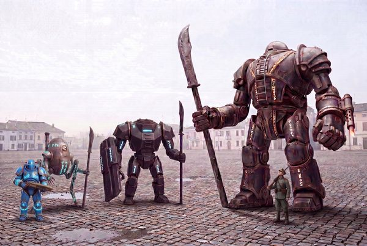
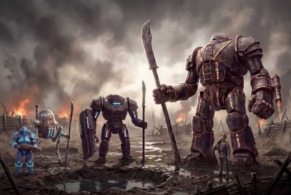
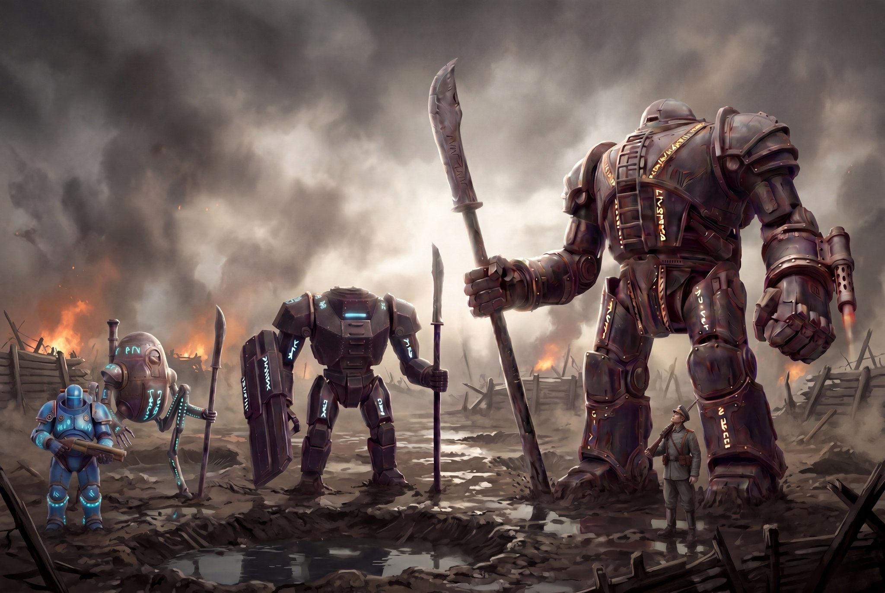
Свод по всем боевым машинам серии «Первый рыцарь»: паро-магическим големам (мехам) трёх классов — оруженосец → рыцарь → паладин, — а также примыкающей самоходной броне сержантов и прочей технике (артиллерия, дирижабли, броненосцы, рунные ружья). Отдельные статьи по каждой модели — ниже в разделе «Каталог моделей»; здесь — общее устройство, поколения, синхронизация и сравнительные размеры (в книгах размер почти всегда дан относительно, без точных метров — поэтому ниже собраны именно сопоставления).
Что такое паро-магический голем
Самодвижущийся паро-маго-механический голем — совершенное оружие империи Эдан и причина завоевания Спорных земель. Это человекоподобная боевая машина, которой управляет рыцарь-пилот через синхронизацию. Идея заимствована из находок в Пепельных землях (руины древних). За сто лет господства мехов под них перестроены даже города («реновация»: широкие бульвары, по которым проходит паладин).
Три класса големов
Классы различаются по тяжести, и разрыв между ними велик:
- Оруженосец (лёгкий) — рабочая лошадка; по объёму примерно «увеличенный в два с половиной раза сержантский доспех» (Кн. 1, гл. 8).
- Рыцарь (средний) — примерно вдвое превосходит среднего оруженосца (Кн. 7, гл. 18). Кабина рыцаря больше, чем у оруженосца (Кн. 3, гл. 21).
- Паладин (сверхтяжёлый) — «высотой с трёхэтажный дом» (Кн. 1, гл. 1); самый слабый паладин превосходит среднего рыцаря раз в пять, а то и в десять (Кн. 7, гл. 18). В город паладин не помещается — его держат в лагере вне стен (Кн. 8, гл. 25).
Историческая заметка: у мехов первых поколений классов ещё не было — «были только оруженосцы, но считались рыцарями» (Кн. 6). Старые машины («Слон», «Кузнечик») за грузный бочкообразный корпус звали «бочками».
Самоходная броня (сержантская)
Облегчённая «пехотная» версия голема для сержантов («недомаги-недорыцари»): закрытый бронекостюм с малым паровиком-«горбом» на спине, трубами с испаряемым ихором, рунными цепочками и силовыми кольцами для рук — но без кристалла-активатора (достаточно подать ману в управляющий контур). Держит марш, обычное оружие, слабые чары и даже зачарованную пулю, но бессильна против серьёзной боевой магии (рунные цепочки пробивает удар выше ~четвёртого круга, Кн. 7, гл. 16). Стандартный рост — около двух метров; «Клевец» весит под сотню килограммов (Кн. 7, гл. 14). Сверхтяжёлый «Каратель» — «сверхтяжёлая пехота» при пехоте, как паладин среди мехов.
Конструкция и принцип работы (общая для мехов)
- Паровой котёл + огненный кристалл. Огненный кристалл испаряет ихор («кровь богов» — заряженную маной воду); пар приводит в движение конечности и манипуляторы. На марше хватает пресной воды, в бою нужен ихор; приводы смазывают машинным маслом.
- Рунные цепочки. Гравированные по броне и приводам цепочки рун питают личный щит и системы. Часть чар (в т. ч. контур щита) физически не убрать под броню — она остаётся на корпусе, и потому кислота/повреждение цепочек выводит голем из строя.
- Кокпит — кресло-трон с управляющими браслетами и кристаллом-активатором (личный амулет рыцаря: после первой синхронизации запечатывает его ауру, привязываясь только к нему; инструмент запуска голема, знак статуса, посмертный медальон).
- Люк, визор, демпферы. Вход — через верхний люк (нужны два ключа и два человека) либо нижне-кормовой; обзор — через визор (стандарт ~90°; у «Егеря» 130–140°). На высокой скорости демпферы не гасят тряску — кабину «болтает».
- Гибель — «синее пламя»: пилот вливает остаток маны в огненный кристалл котла → яркая синяя вспышка-самоподрыв.
Синхронизация
Пилот сливается сознанием с големом через кристалл-активатор: «мех — это я, а я — это мех». Эффективность в процентах: 40 % — кое-как воевать; 80–90 % — совершенное оружие; рыцарю нужно хотя бы ~80 %, что у многих занимает десятилетия. При пересадке в более тяжёлую машину синхронизация временно проседает из-за массы. Магу пилотировать мех можно, но сил уходит втрое больше, а колдовать из «оплетённого рунами железного гроба» нельзя.
Поколения
Мехи делятся на поколения с первого по редкое четвёртое; основа рыцарских копий — третье. Числовая привязка (Кн. 2, гл. 9): «Бунтари» и «Красные драконы» — 2-е, «Зелёные драконы» — 3-е, «Молнии» — 4-е (последнее). Мехи устаревают очень медленно — старые «Слоны» десятилетия остаются в строю; «всё в основном зависит от пилота».
Вооружение и защита
- Рунная глефа — главное оружие рыцаря/оруженосца: древко с изогнутым клинком, по сути увеличенный посох-концентратор. Выдаёт световое копьё (тонкий белый луч), режет броню «как консервную банку». Без глефы голем теряет добрых две трети эффективности.
- Огнемёт (в манипуляторе, бак ограничен), картечная пушка (против магических щитов), у сержантов — «траншейная метла» (3–4-ствольный дробовик) и «слонобой» (рунное ружьё).
- Личный щит = наполовину сила пилота, наполовину рунные цепочки; восстанавливается вне боя. Рыцарский щит держит ~4–5 попаданий светового копья, оруженосец — 4–8 импульсов (рыцарское копьё примерно вдвое сильнее).
Организация, экономика
- Копьё = 6 машин; баллей = 6 копий (≈36 машин). Классическое копьё — 3 оруженосца + 2 рыцаря + 1 паладин; реформа Гарна — пары «рыцарь-оруженосец».
- Доли наёмного отряда: оруженосец — 10 долей, рыцарь — 15; паладинов наёмникам иметь не положено.
- Цена (Кн. 6, гл. 17): оруженосец — от ~20 000 ктанов, рыцарь — от ~60 000; «Каратель» стоит «как треть оруженосца».
Размеры и сравнения
В книгах размеры почти всегда относительные. Сводка сопоставлений (с указанием источника):
| Класс / объект | Размер / соотношение (дословно или близко) | Источник |
|---|---|---|
| Паладин | «высотой с трёхэтажный дом» | Кн. 1, гл. 1 |
| Паладин | пятиэтажный дом возвышается даже над паладином | Кн. 6, гл. 11 |
| Паладин ↔ рыцарь | паладин сильнее рыцаря в 5–10 раз | Кн. 7, гл. 18 |
| Паладин (корпус) | корпус «Чёрного дракона», увеличенный вдвое; манипуляторы — от «Краба» | Кн. 7, гл. 19 |
| Рыцарь ↔ оруженосец | рыцарь примерно вдвое превосходит оруженосца | Кн. 7, гл. 18 |
| Рыцарь ↔ зверь | рыцарь крупнее боевого слона; «кошка не повалит корову» (рыцарь vs виверна) | Кн. 8 гл. 26; Кн. 3 гл. 26 |
| Оруженосец ↔ броня | оруженосец ≈ «увеличенный в 2,5 раза сержантский доспех» | Кн. 1, гл. 8 |
| Оруженосец ↔ человек | рядом с оруженосцем 2-метровый ликан — «тень»; человек у меха «если не мошка, то кошка» | Кн. 1 гл. 1, гл. 24 |
| Оруженосец ↔ виверна | двуногий оруженосец сильнее взрослой виверны; детёныш виверны «размером с лошадь» | Кн. 3, гл. 12, 26 |
| Самоходная броня | стандартный сержантский доспех ~2 м; «Клевец» ~100 кг | Кн. 2 гл. 17; Кн. 7 гл. 14 |
| «Каратель» ↔ броня | в 1,5 раза крупнее стандартной брони (≈3 м), вдвое эффективнее, стоит «как треть оруженосца» | Кн. 5, гл. 5 |
| Обзор (визор) | стандарт ~90°; «Егерь» 130–140° | Кн. 2, гл. 8 |
| Город / улицы | главные бульвары — шириной для прохода паладина; обычные улицы — на два рыцаря в ряд | Кн. 6 гл. 11; Кн. 4 гл. 1 |
| Дирижабль | «Буревестник» несёт под брюхом 4 оруженосца; «Вершитель Судеб» — «гигант первого ранга», винты «в человеческий рост» | Кн. 3 гл. 9; Кн. 5 гл. 26 |
| Осадная бомбарда | «гиганты»/«чёрные громады»; ради ввоза в город снесли часть храма | Кн. 1, Пролог |
| Броненосец «Воин» | «десятитысячник» (≈10 000 т); два разбили флот князя | Кн. 8, гл. 28 |
| Белое золото (амулет) | крошечный амулет дороже двух рыцарей-«Протекторов» вдесятеро | Кн. 5, гл. 1 |
Каталог моделей
Паладины (сверхтяжёлые)
- «Феникс» — паладин Гарна из покинутого будущего; эталон класса («с трёхэтажный дом»).
- Паладин Готмала — личный паладин Первого рыцаря Тьерна Готмала (корпус «Чёрного дракона» ×2, манипуляторы «Краба»).
- «Жрец» — паладин князя Ринора Норома; единственный паладин островов Дхивала.
Рыцари (средние)
- «Владетель» («Краб») — приземистый широкий мех прорыва, плоский корпус, мощная лобовая и слабая кормовая броня.
- «Чёрный дракон» — рыцарь 2-го поколения рода Флона; большой щит-манипулятор; вторая по распространённости модель рыцаря.
- «Протектор» — современный рыцарь рода Никор, огнемёт в левом манипуляторе.
- «Молот» — старый боевой рыцарь-ветеран (с эмблемой хвоста скорпиона у Бахала).
Оруженосцы (лёгкие)
- «Бунтарь» — стандартная неприхотливая рабочая машина пограничья (2-е поколение).
- «Слон» — оруженосец первых поколений, «бочка»; учебный и огнемётный.
- «Кузнечик» — древний уродливый учебный оруженосец академии.
- «Красный дракон» — перетяжелённый «дракон» рода Флона с огнемётом (2-е поколение).
- «Зелёный дракон» — исправленный клиновидный наследник «Красного» (3-е поколение), массовая турнирная машина.
- «Лучник» — «располневший Бунтарь» с изогнутым корпусом, рода Фрид.
- «Арбалетчик» — улучшенный «Лучник» с сильной оптикой и четырёхпалым манипулятором.
- «Егерь» — редкий лёгкий мех (5 машин): корпус «Молнии» + четырёхсуставные ноги «Барса», обзор 130–140°; машина Гарна «Феникс-1».
- «Стилет» — серийный оруженосец Загима/Ланиллы на базе «Егеря»; быстрый, простой в освоении, стандартизированные узлы.
- «Молния» — единственный оруженосец 4-го поколения (рода Фрид); эталон скорости, сферический корпус на длинных ногах.
- «Барс» — редкий оруженосец на четырёхсуставных «кузнечьих» ногах (скорость/проходимость ценой обслуживания).
- «Грифон» — шарообразный оруженосец, быстрый (близок к «Молнии»).
- «Рысь» — устаревший редкий быстроходный и малошумный оруженосец-разведчик.
- «Бродяга» — лазурный оруженосец-дозор наёмников (внешне ≈ «Бунтарь»).
- «Нифелим» — редчайший оруженосец (выпущено всего десять); облик в тексте не описан.
Самоходная броня (сержантская)
- «Клевец» — древнейшая самоходная броня 1-го поколения; крепкая в ближнем бою, но тесная и страшно горячая.
- «Рейтар» — надёжная проверенная средняя модель.
- «Драгун» — ярко-синяя броня гвардии маркграфа Готмал.
- «Каратель» — сверхтяжёлая броня (≈3 м), «сверхтяжёлая пехота»; гвардия императора.
Прочие боевые машины
Артиллерия
- «Гром» и «Сотрясатель» — самоходные осадные бомбарды-«гиганты».
- Горная трёхфунтовка («свисток») — разборное горное орудие на алхимическом боеприпасе.
- Полевая восьмифунтовка — устаревшая полевая пушка на картечи (просаживает личный щит рыцаря).
Противомеховое стрелковое оружие
- «Слонобой» — рунное ружьё 14 мм; зачарованная пуля ранит рыцаря/чемпиона.
- «Несущая покой» — реликтовый джезайл (рунное ружьё) Ховрана; зачарованная пуля пробивает средний магический щит.
Воздушные и морские корабли
- «Буревестник» — грузопассажирский дирижабль (несёт 4 оруженосца под брюхом).
- «Вершитель Судеб» — флагманский дирижабль-«гигант первого ранга» Эдана.
- Броненосец «Воин» — тяжёлый броненосец-«десятитысячник» Компании Южных морей.
Только упоминания (без отдельной статьи)
Модели, названные в тексте, но без описания облика/конструкции:
- Оруженосцы/мехи: «Филин» (ночной оруженосец конца Великой войны со слабым щитом), «Носорог», «Минотавр» (старые рыцари), «Храбрец» (устаревший учебный), «Мамонт» (имперский рыцарь — назван лишь как мерило для островного «ДК-3-2»).
- Самоходная броня: «Шериф» (стандартная сержантская броня — только как сравнение).
- Островная техника (Великогартия): буквенно-цифровые коды — «ДК-3-2» (рыцарь 3-го поколения, 2-го класса), «К-3-3», «AT-3-3», «ДК-1-2» (старый огнемётный рыцарь); дхивальцы клепают безымянные копии «на уровне древних „Слонов“».
- Не-боевые машины: «Иноходец» (самобегающая коляска) и паровой экипаж (сухопутный пароход) — не вооружены, в каталог не входят.
«Арбалетчик»
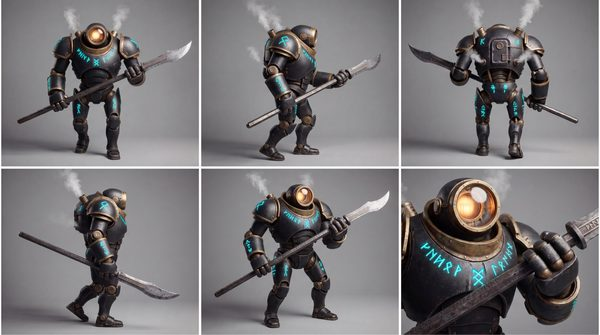
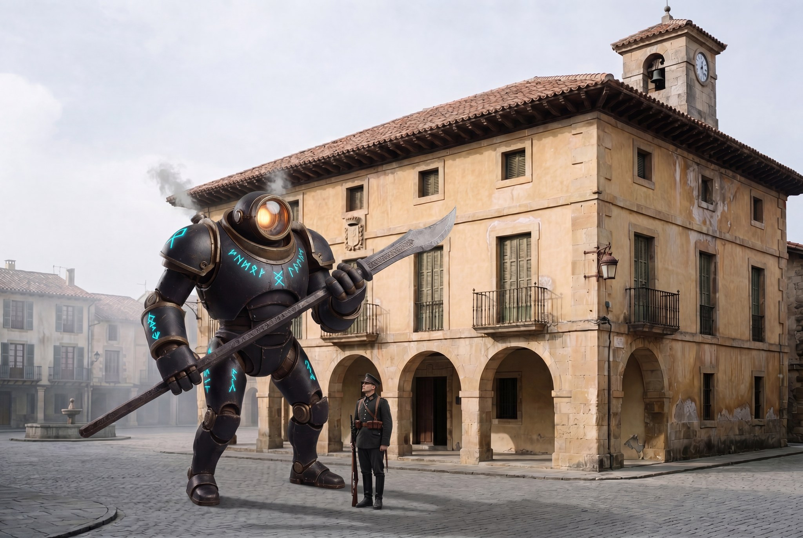
Первое появление модели «Арбалетчик» — Книга 3, Глава 18 (тайная долина с рудником/руинами древних в Вольной марке). В сид-списке «Арбалетчик» числился как ненайденная модель; здесь показан в металле и затем используется отрядом ГГ (Константин, Дэя пилотируют трофейных «Арбалетчиков»).
Класс и роль
Паро-магический голем класса ОРУЖЕНОСЕЦ (низший из трёх классов: оруженосец → рыцарь → паладин). Прямо назван улучшенной версией «Лучника»: «два оруженосца тип „Арбалетчик" – улучшенная версия „Лучника"» (Книга 3, Глава 18). То есть наследник линейки рода Фрид «Молния»→«Лучник» (см. «Лучник», «Молния»), доработанная модель. Современная машина: «Машины довольно новые» (Книга 3, Глава 18), что для Вольной марки нетипично (туда «сплавляют устаревший по большей части хлам»). Вместе с «Протекторами» составляет стандартизированную «чёрную» дружину фольхов; стандартизация выдаёт родовую/семейную дружину, а не наёмников (Книга 3, Глава 18). Все «чёрные» машины (включая «Арбалетчиков») — представители юга (Книга 3, Глава 18).
Внешность и форма
- Прямого портрета силуэта в чанке нет; через родство с «Лучником» наследует его профиль — «чуть располневший „Бунтарь"» с изогнутым, как лук, корпусом (см. «Лучник»). Как «улучшенная версия» — вероятно, доработанный вариант того же силуэта (текст деталей не даёт → в тексте только относительно).
- Раскраска: два «Арбалетчика» долины выкрашены сплошь в чёрный цвет, без опознавательных знаков (часть безликой «чёрной» дружины) — «эти четыре безликие машины только выкрашены в черное» (Книга 3, Глава 18).
- Доступ в кабину — через люк по корпусу (Константин «быстро влез в „Арбалетчика"», к нему в кабину забралась Амита, Конн ехал «наполовину высунувшись из люка») (Книга 3, Глава 19).
Конструкция и принцип работы
- Базовая компоновка оруженосца (паро-магический котёл, рунные цепочки, кресло пилота, кристалл-активатор — общеклассовое; см. свод).
- Лёгкая ремонтопригодность повреждений (в показанном экземпляре): «Второй „Арбалетчик" в норме. Достаточно снятую бронепластину нацепить и можно в бой» (Книга 3, Глава 19) — то есть боеспособность восстанавливается простой навеской бронепластины. Один «Арбалетчик» долины был сильно повреждён (возле него копошились техники), второй — почти цел.
- Используется как подъёмник/«лифт»: манипулятором «Арбалетчика» ГГ и Дэя поднимают раненого ласса Аника к люку его «Молота» — «Используя „Арбалетчик" вместо лифта, мы доставили ласса к люку его машины» (Книга 3, Глава 20). Подтверждает тонкую моторику манипуляторов оруженосца.
- Манипулятор — четырёхпалая «кисть» (новый конструктивный факт, Книга 4, Глава 10): на тренировке хвата «Арбалетчик» по команде пилота сжимает четыре толстых пальца манипулятора: «Висевший в ремонтном „муле" „Арбалетчик" сжал четыре толстых пальца манипулятора» (Книга 4, Глава 10). То есть рабочая «кисть» оруженосца — четырёхпалая (толстые пальцы), способная на хват по команде. Первая прямая деталь устройства манипулятора «Арбалетчика».
- Обслуживание в подвесе ремонтного «мула»: «Арбалетчика» при ТО подвешивают в ремонтном „муле", чтобы добраться до узлов и проверить хват/манипулятор; рядом техник подаёт масленку (Книга 4, Глава 10).
- Лучшая оптика приближения, чем у рыцаря «Протектор» (Книга 4, Глава 13): визор «Арбалетчика» даёт более качественное увеличение, чем визор «Протектора» — пилотесса Онилия «воспользовавшись увеличением, а оно на „Арбалетчике" весьма достойное, даже лучше, чем на „Протекторе"» точно докладывает дистанцию до столба дыма («Сто пятьдесят, столб дыма»). То есть «Арбалетчик» (улучшенный «Лучник») — машина с акцентом на дальнее наблюдение/разведку, у неё сильная оптика наведения при классе оруженосца (Книга 4, Глава 13).
Движение и походка
- Манёвренный лёгкий оруженосец (наследие линейки «Лучника»/«Молнии»). В колонне и в бою ведёт себя как типовой оруженосец: «рысью к нашим „Стилетам"», перебирается через вал, патрулирует периметр (Книга 3, Главы 19, 20, 21).
- Конкретных ТТХ скорости/манёвра по самому «Арбалетчику» текст не даёт (через родство с «Лучником» — манёвренный, чуть медленнее «Бунтаря»; в тексте только относительно).
Размер и сравнения
- Точные метры/тонны в тексте НЕ названы — размер дан только относительно: класс оруженосца, габаритно близок к «Лучнику»/«Бунтарю» (см. «Лучник», «Бунтарь»; общеклассовый ориентир — свод).
- Кабина оруженосца теснее кабины рыцаря: в «Арбалетчике» помещается пилот + один пассажир в кабине, третий едет «наполовину высунувшись из люка» (Книга 3, Главы 19, 21).
Вооружение и защита
- Стандартная рунная глефа оруженосца (световое копьё), без дополнительного вооружения: «Как и у большинства оруженосцев, у „Арбалетчика" нет дополнительного вооружения. Но против безоружных людей и самого голема достаточно» (Книга 3, Глава 19). Глефа хранится отдельно (на постаменте ТО) — «занимай „Арбалетчика" и подмени меня… Только глефу не забудь» (Книга 3, Глава 19).
- Один безоружный (без глефы) оруженосец достаточен, чтобы держать под контролем толпу пленных людей (наглядный довод — раздавленные тела) (Книга 3, Глава 19).
- Защита по классу оруженосца; конкретики по броне/щиту «Арбалетчика» текст не даёт (как улучшенный «Лучник» — броня вероятно не хуже; в тексте только относительно). Бронепластина легко снимается/навешивается (см. конструкцию).
Развитие по томам
- Книга 6 (Главы 12, 13 — столица Эдан, бой на площади перед Башней): «Арбалетчик» — боевой оруженосец полукопья ГГ, рубит манипулятор/глефу рыцаря на проходе. Конкретный экземпляр вместе с «Красным драконом» отходит на боковую улицу и образует засадную «крабовую ловушку» (закупорить выход врагу с тыла). (1) Атака рыцаря на проходе: в финале боя «Арбалетчик» «пронёсся мимо рыцаря [мятежного „Чёрного дракона"], сходу срубив то ли манипулятор, то часть рунной глефы» (Глава 12) — манёвренный оруженосец на скорости отрубает рыцарю манипулятор/глефу своей рунной глефой, не останавливаясь. (2) Засадная роль: «„Арбалетчик" и „Красный дракон" отошли на боковые улицы. Их задача — атаковать попавших в огневой мешок рыцарей с тыла. Своими стальными телами закупорить выход из ловушки» (Глава 12) — оруженосцы работают как затычка-загонщики против втянувшихся в погоню рыцарей. (3) Преследование пехоты: наряду с «Красным драконом» «Арбалетчик» рассеивает бегущих «мастеровых» (давит «под железной пятой», Глава 13). Реконфирм штатного вооружения — только рунная глефа (без огнемёта, в отличие от «Красного дракона»). Конструктивно новых деталей чанк не даёт; вклад — боевое добивание рыцаря глефой на проходе. (Книга 6, Главы 12, 13)
- Книга 6 (Главы 9, 11 — столица Эдан, мятеж «мастеровых»): «Арбалетчик» подтверждён как штатный оруженосец „Пурпурной роты" (гвардия императора) и как массовый оруженосец Академии Доблести Эдана; показаны его поведение в городском бою и уязвимость кабины к кислоте. (1) На вооружении гвардии: в парк у фольхстага вслед за угнанным «Красным драконом» выходят «очередной „Красный дракон" и „Арбалетчик"» «Пурпурной роты» под управлением «нормальных пилотов»; «Арбалетчик» — машина уже знакомого ГГ лейтенанта Овелата, посланного в погоню за угонщиком (Главы 9, 10). (2) Спящий режим в кадре: при остановке «Ноги „Арбалетчика" слегка согнулись, машина перешла в спящий режим. Люк откинулся, из голема выбрался… пилот „Пурпурной роты"» (Глава 9) — наглядная картина перевода оруженосца в спящий режим (присев на согнутых ногах) и выхода пилота через верхний люк. (3) Караульная пара у казарм: на въезде в расположение «Пурпурной роты» «грозя парку световыми копьями, стояло два „Арбалетчика"» (Глава 10) — подтверждает штатное оружие модели (световое копьё/глефа) и роль стационарного караульного оруженосца. (4) Уязвимость кабины к кислоте — гибель пилота (Глава 11): в засаде на бульваре Всадников один «Арбалетчик» команды Академии Эдана опрокинут на спину и поражён кислотными гранатами: «опрокинутому на спину „Арбалетчику" не повезло. Изъеденная кислотой гранат и пробитая в нескольких местах броня в районе кабины говорит о том, что пилот не выжил. Люк вон закрыт» (Глава 11) — наглядно: кислотная граната, проевшая броню в районе кабины, убивает пилота прямо в закрытой машине. ГГ-знакомый паж Пор Сорн вскрывает люк и отшатывается от вида тела. Подтверждает established-угрозу кислотных гранат для оруженосцев в городе. Конструктивно новых внутренних деталей чанк не даёт. (Книга 6, Главы 9, 10, 11)
- Книга 5 (Главы 12, 15 — Степной Страж, после катастрофы малого круга): «Арбалетчик» Онилии Сгер — единственный полностью исправный мех уцелевшего отряда. (1) После разгрома у руин из восьми паро-магических големов отряда «Чёрный феникс» уцелели лишь три оруженосца; «Арбалетчик» Онилии — единственный из трёх без повреждений: «Помимо „Лучника" и наполовину выпотрошенного „Бунтаря" на стоянке находился и „Арбалетчик" с характерным чёрным фениксом на броне. Онилия Сгер не только выжила, но и добралась до города, сохранив машину… Видимых повреждений нет. Хоть одна полностью исправная машина осталась» (Глава 12). Подтверждена эмблема отряда — чёрный феникс, нанесённый на броню машины. (2) В Главе 15 «Арбалетчик» Онилии активно обслуживается на стоянке: техник Сенор Ано «с помощниками занимался обслуживанием „Арбалетчика"» (это лже-Ано, притворщик — см. свод); сама Онилия «возилась с „Арбалетчиком"». Подтверждает «Арбалетчик» как рабочую боевую машину отряда. Конструктивно новых деталей нет; ретроспективно подтверждена прежняя гибель «Протекторов» отряда у руин (Онилия: «Видела, как ваши „Протекторы" упали»). (Книга 5, Главы 12, 15)
- Книга 4 (Главы 24–28 — миссия спасения третьего принца): «Арбалетчик» подтверждён как массовый, узнаваемый по силуэту оруженосец в Степном Страже. На рассвете под окном ГГ по улице грохочет вернувшееся в город копьё подкреплений; ГГ успевает разглядеть лишь двух замыкающих оруженосцев и сразу опознаёт их по силуэту: «„Лучник" и „Арбалетчик". Цветов не разобрать» (Книга 4, Глава 26) — то есть профиль «Арбалетчика» однозначно читается даже в предрассветной полутьме, отдельно от парного ему «Лучника» (несмотря на родство моделей). Машины принадлежат прибывающим наёмным подкреплениям (личность отряда/расцветка не разобраны). В дальнейшем генеральном сражении (Глл. 27–28) отдельные «Арбалетчики» в металле не выделены — масса баллея проходит по позывным копий (см. свод). (Книга 4, Глава 26)
- Книга 4 (Главы 12–17 — контракт-конвой, кукловод, оборона Стража): два «Арбалетчика» впервые показаны в реальном боевом выходе отряда в руках новых пилотесс-«змеек». (1) В конвое к побережью «Арбалетчики» (Онилия, Элле) под началом Бринны образуют ведомое полукопьё (Глава 12). (2) Бой с химерой-«кукловодом» (Глл. 12): у «Арбалетчиков» нет огнемётов — на напоминание «У нас нет огнеметателей!» ГГ командует работать световыми копьями; три световых копья «Арбалетчиков»/«Краба» прожигают насквозь груду мешков с зерном («Три световых копья вонзились в груду мешков, прожгли их насквозь»), затем глефой добивают марионеточника (Глава 12). Подтверждает: штатное оружие «Арбалетчика» — только глефа/световое копьё, без огнемёта. (3) Раскрыта сильная оптика приближения — лучше, чем у рыцаря «Протектор» (Онилия точно даёт дистанцию «Сто пятьдесят» до столба дыма, Глава 13). (4) В обороне Стража два «Арбалетчика» (Онилия Сгер, Элле Вилод) держатся за «Крабом» Бринны как «гусята за гусыней», маневрируют у стен форта по приказу ГГ, не преследуют бегущих варгаров (Глл. 16–17). При аресте ГГ латники берут «Арбалетчиков» (как и остальные машины) под контроль (Глава 13). (Книга 4, Главы 12, 13, 16, 17)
- Книга 4 (Главы 8, 10, 11 — Степной Страж): «Арбалетчики» — рабочие оруженосцы наёмного отряда «Чёрный феникс» в эксплуатации. (1) Один из двух «Арбалетчиков» ГГ начинает перегонять на новую базу отряда (Глава 8); ещё один к моменту возвращения Бахала уже отсутствует на стоянке у «Мечты» (перегнан). (2) Раскрыт четырёхпалый манипулятор: подвешенный в ремонтном «муле» «Арбалетчик» по команде пилота «сжал четыре толстых пальца манипулятора» — тренировка хвата (Глава 10). (3) Закреплены за новыми пилотессами-«змейками»: одного «Арбалетчика» осваивают/обслуживают Онилия Сгер (в кабине, тренирует хват) и Элле Вилод (механика: подаёт масленку, проверяет узлы); девушки заканчивают обслуживание «одного из двух „Арбалетчиков"» (Глава 10). (4) В первом выходе отряда на контракт-конвой «Арбалетчики» — часть выступающего «копья» оруженосцев (Глава 11). Подтверждает, что оба «Арбалетчика» — действующие боевые машины отряда, а не консервный резерв. (Книга 4, Главы 8, 10, 11)
- Книга 4 (Глава 5 — Степной Страж): два трофейных «Арбалетчика» числятся в стартовом парке наёмного отряда ГГ «Чёрный феникс». На время отлёта ГГ в Тирбоз именно эти два «Арбалетчика» (вместе с «Протектором» и «Бунтарём» — итого 4 машины) планируется оставить в Степном Страже на консервацию/охрану: «консервация и охрана четырех паро-магических големов: „Протектора", двух „Арбалетчиков" и „Бунтаря"» (Книга 4, Глава 5). Подтверждает, что оба «Арбалетчика» окончательно закреплены за отрядом ГГ. (Книга 4, Глава 5)
- Книга 3: Первое появление в металле. В тайной долине Вольной марки стоят два чёрных «Арбалетчика» (оруженосцы) рядом с двумя чёрными «Протекторами» — безликая стандартизированная дружина фольхов (юг). После захвата долины ГГ его отрядом трофейные «Арбалетчики» становятся боевыми машинами: на одном идёт Константин (с Амитой и Конном на борту) пригнать спрятанные «Стилеты»; затем «Арбалетчиков» пилотируют Дэя и Амита (охрана периметра, конвой пленных, «лифт» для подсадки ласса Аника в «Молот»). Два «Арбалетчика» включены в уходящее из долины усиленное копьё (Главы 19–21). Дан главный факт о модели — «улучшенная версия „Лучника"», современная, южного производства (Глава 18). (Книга 3, Главы 18, 19, 20, 21)
- Книга 3 (Главы 26–27 — погоня «Яростных когтей», спасение «Ястребами»): два трофейных «Арбалетчика» — часть уходящего из-под обстрела копья оруженосцев (вместе со «Стилетами» и «Бунтарём»). При опознании своих издали ГГ отмечает, что «„Арбалетчиков" и „Бунтаря" похожей раскраски в Вольной марке найти реально» (в отличие от уникальных «Стилетов») — то есть «Арбалетчик» внешне неотличим от массовых наёмничьих оруженосцев и не выдаёт владельца (Глава 26). Машины благополучно доходят до лагеря «Ястребов»; «Арбалетчики» (как трофеи) входят в долевой раздел будущего отряда ГГ «Чёрный феникс» (Глава 27). (Книга 3, Главы 26, 27)
Известные экземпляры и пилоты
- Два чёрных «Арбалетчика» тайной долины (безликие, чёрная окраска) — изначально машины «чёрной» дружины фольхов; захвачены отрядом ГГ. Пилоты после захвата: Константин Дорал-Ранк, затем Дэя Готмал и Амита Гонар (Книга 3, Главы 19, 20, 21).
- Те же два «Арбалетчика» в отряде «Чёрный феникс» (Книга 4) — после ухода академической команды в Тирбоз закреплены за новыми пилотессами-оруженосцами: Онилией Сгер (бывший паж Академии Доблести) и Элле Вилод (выпускница академии Эдана, год службы оруженосцем в родовой дружине). Обе осваивают и обслуживают машины на базе в Степном Страже (Книга 4, Главы 10, 11).
- Линейка/производитель: «улучшенная версия „Лучника"» → линия рода Фрид («Молния» → «Лучник» → «Арбалетчик»); прямого указания производителя именно «Арбалетчика» в тексте нет (выведено из «улучшенная версия „Лучника"») (Книга 3, Глава 18).
«Барс»
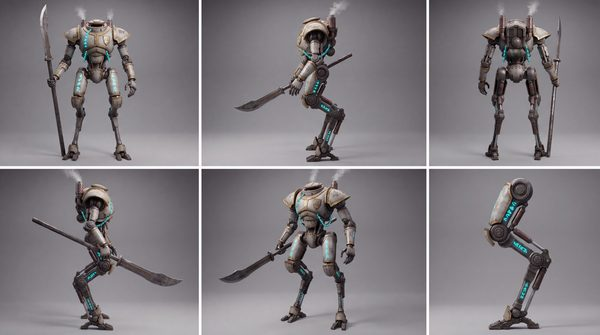
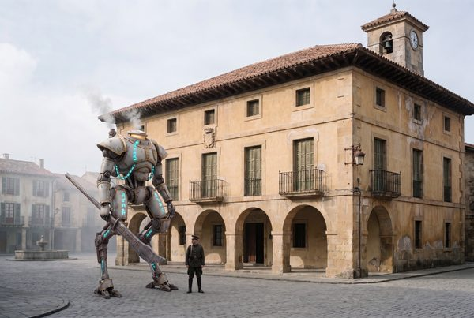
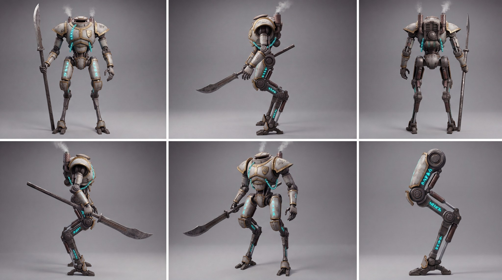
До Книги 5 «Барс» был назван единственный раз как конструктивный ориентир при описании «Егеря» (его ноги «одолжены» гибридному капитанскому меху). В Книге 5, Главе 15 «Барс» впервые показан „в металле" — три экземпляра переданы отряду ГГ; раскрыты класс (оруженосец), форма ходовой и характер обслуживания. Внутренней компоновки текст по-прежнему не разбирает.
Класс и роль
Паро-магический голем класса ОРУЖЕНОСЕЦ (низший из трёх классов) — в Книге 5 «Барс» прямо отнесён к оруженосцам: его передают отряду в числе восьми оруженосцев-пополнения наряду с «Молниями», «Грифонами» (Книга 5, Глава 15). Редкая и специфическая машина: «довольно редких „Барса". Неплохих, но весьма специфических машин» (Книга 5, Глава 15). Узнаваемая черта — характерные четырёхсуставные ноги, по которым ГГ опознаёт их даже будучи приделанными к чужому корпусу (Книга 2, Глава 8).
Внешность и форма
- Четырёхсуставные, выгнутые назад «кузнечьи» ноги — главная и единственная подробно описанная черта (Книга 5 уточняет геометрию): «весьма специфических машин, с четырёхсуставными, выгнутыми назад, словно у „Кузнечика" ногами» (Книга 5, Глава 15). То есть ходовая «Барса» близка по форме к нижним ногам древнего «Кузнечика» (см. «Кузнечик»): многосуставные конечности, изгибающиеся назад.
- Ноги «Барса» как узнаваемый, заимствуемый элемент: ГГ опознаёт компоновку «Егеря» как «к корпусу „Молнии" приделали четырёхсуставные ноги от „Барса"» (Книга 2, Глава 8) — нестандартный, легко узнаваемый элемент ходовой.
- Прочих деталей силуэта (корпус, манипуляторы, оголовье) текст не даёт — в тексте только относительно (узнаётся по ногам).
- Раскраска переданных экземпляров — яркая, парадная (как у всех машин от северных домов): обильная свежая раскраска, позолота, до четырёх разных гербов — под перекраску (Книга 5, Глава 15; ср. свод).
Конструкция и принцип работы
- Внутренней механики «Барса» (котёл, рунные цепочки, кокпит, кристалл-активатор) текст НЕ разбирает — камера внутрь не заглядывает.
- Ходовая часть (четырёхсуставные «кузнечьи» ноги) — конструктивная фишка модели: «В теории, это улучшает скорость, маневренность и вертикальную проходимость» (Книга 5, Глава 15).
- Главный конструктивный минус — мучительное обслуживание ходовой: «На практике – вечный геморрой для ремонтников» (Книга 5, Глава 15). То есть сложная многосуставная ходовая, давая выигрыш в подвижности, оборачивается тяжёлым обслуживанием (ГГ ставит «Барса» в один ряд по мороке для техников с капризным «Лучником» — см. «Лучник»).
Движение и походка
- Скорость, манёвренность и вертикальная проходимость — заявленные сильные стороны ходовой: четырёхсуставные ноги «в теории… улучшает скорость, маневренность и вертикальную проходимость» (Книга 5, Глава 15). «Вертикальная проходимость» = способность преодолевать перепады высот/препятствия (лазить, перешагивать).
- Прямого описания самой походки в движении текст не даёт — в тексте только относительно (через свойства ходовой). Косвенно (по «Егерю» с такими же ногами): резкие манёвры и уклонения (Книга 2, Главы 8, 11).
Размер и сравнения
- Точные метры/тонны в тексте НЕ названы — в тексте только относительно: класс «оруженосец» (лёгкий мех; общеклассовое соотношение — оруженосец ≈ «увеличенный в 2,5 раза сержантский доспех», см. свод).
- Геометрия ходовой сопоставлена с «Кузнечиком» (выгнутые назад ноги) — но это про форму ног, не про общий габарит (Книга 5, Глава 15).
Вооружение и защита
- Вооружение/защита «Барса» в тексте прямо НЕ описаны — в тексте только неточно (машина показана при передаче, не в бою). По классу — стандартное вооружение оруженосца (рунная глефа/световое копьё; см. свод).
Развитие по томам
- Книга 5 (Глава 15 — Степной Страж, передача новых машин): ПЕРВОЕ появление «Барса» в металле за всю серию. Маркиз Андер Инадр передаёт отряду ГГ «Чёрный феникс» восемь оруженосцев-пополнения; три из них — «Барсы». ГГ характеризует модель: довольно редкая, неплохая, но весьма специфическая машина с четырёхсуставными, выгнутыми назад (как у „Кузнечика") ногами, что в теории даёт скорость, манёвренность и вертикальную проходимость, а на практике — «вечный геморрой для ремонтников» (по мороке обслуживания ставит в ряд с «Лучником»). Резюме ГГ: «дарёному коню в зубы не смотрят». Пришли в яркой парадной раскраске северных домов (под перекраску); пилоты в этом чанке не закреплены («змейки» собирались выбирать, но слегли от отравления — диверсия притворщика). (Книга 5, Глава 15)
- Книга 2 (Глава 8): Первое упоминание — как конструктивный ориентир при описании капитанского меха ГГ «Егеря»: его сборную, «неправильную» компоновку ГГ читает как корпус «Молнии» + четырёхсуставные ноги «Барса» + ни на что не похожие тонкие манипуляторы. Сам «Барс» «в металле» ещё не показан; класс подтвердится только в Книге 5 (оруженосец).
Известные экземпляры и пилоты
- Три «Барса» переданы отряду ГГ «Чёрный феникс» из дружин северных домов (через маркиза Андера Инадра, по приказу третьего принца Ронга Олна) как компенсация за утраченные машины (Книга 5, Глава 15). Конкретные пилоты не закреплены: «змейки» (Онилия, Элле, Бринна) планировали выбрать себе по машине из восьмёрки оруженосцев, но были отравлены и слегли (диверсия притворщика лже-Ано, см. свод).
- Производитель/поколение: в тексте не названы (открытый вопрос).
«Бродяга»
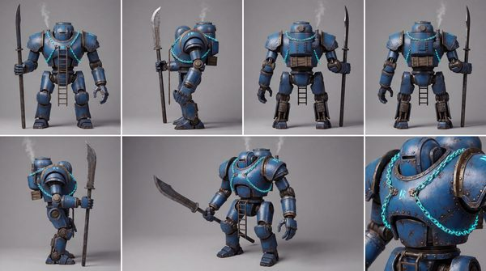
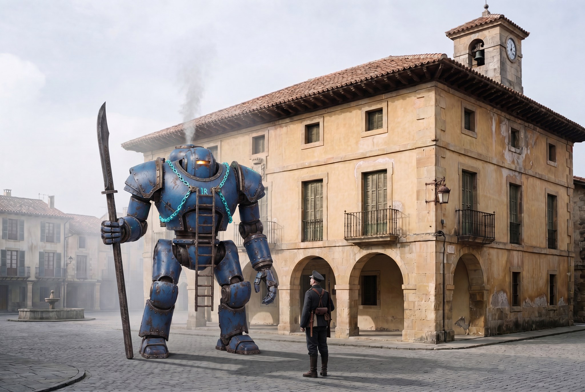
ПЕРВОЕ появление модели «Бродяга» в серии — Книга 7, Глава 5 (пустоши Вольной марки, армия мятежных наёмников на марше к Степному Стражу). Показан снаружи и издали, в роли мобильного дозора охранного периметра. Внутренней компоновки текст не раскрывает (камера в кабину не заглядывает); модель опознаётся Бахалом по силуэту («Оруженосец на десять часов»).
Класс и роль
Паро-магический голем класса ОРУЖЕНОСЕЦ (лёгкий, из трёх классов: оруженосец → рыцарь → паладин). В кадре исполняет роль мобильного дозора / разведывательного патруля охранного периметра наёмного лагеря — то есть «Бродяга» используется как лёгкая дозорная машина, обходящая местность вокруг колонны/стоянки. Бахал прямо относит машину к оруженосцам: «Оруженосец на десять часов» (Книга 7, Глава 5). Имя «Бродяга» (бродяга, скиталец) согласуется с его дозорно-разведывательной, «бродячей» функцией.
Внешность и форма
- Прямого портрета корпуса/головы/манипуляторов текст НЕ даёт — в тексте только относительно (опознаётся по силуэту оруженосца на дистанции, через бинокль).
- Раскраска конкретного экземпляра — демаскирующий лазурный (азур): «раскрашенный в демаскирующий лазуревый цвет „Бродяга" проследовал дальше»; «Лазурный „Бродяга" скрылся из вида» (Книга 7, Глава 5). Лазурь — цвета отряда мятежников (ср. лазурный «Краб» капитана «Синих Змей», «Владетель»); ГГ отмечает раскраску как демаскирующую (плохо скрывает машину в бурых пустошах) — то есть это не штатный камуфляж модели, а парадные/отрядные цвета.
- Силуэт узнаваем как оруженосский (Бахал опознаёт класс с одного взгляда), но без дальнейших деталей.
- Внешнее сходство с «Бунтарём» (Книга 7, Глава 8) — первый положительный ориентир облика: при смотре парка «Чёрных фениксов» ГГ называет «Бунтари» и «Бродяги» «весьма схожими, как по внешнему виду, так и по почтенному возрасту» — «Весьма схожие, как по внешнему виду, так и по почтенному возрасту „Бунтари" и „Бродяги"» (Глава 8). То есть силуэт «Бродяги» близок к силуэту массового оруженосца «Бунтарь» (2-е поколение, низкий силуэт, антропоморфная компоновка с манипуляторами и рунной глефой — см. «Бунтарь»), и обе модели — машины «почтенного возраста» (старых поколений). Это единственная прямая зацепка по внешности «Бродяги»; конкретных собственных черт корпуса текст по-прежнему не даёт.
Конструкция и принцип работы
- Базовая компоновка оруженосца (паро-магический котёл, огненный кристалл, ихор, рунные цепочки, кресло пилота, кристалл-активатор — общеклассовое; см. свод). Конкретных узлов «Бродяги» текст НЕ раскрывает (машина показана только издали, в движении).
- Из роли следует, что «Бродяга» — лёгкая, достаточно подвижная машина, пригодная для длительного патрулирования периметра, но конструктивных подтверждений (паровик, приводы, манипуляторы, кокпит) в кадре нет.
Движение и походка
- Показан в движении на патрулировании — методично обходит местность вокруг лагеря: «Бегло осмотрев местность… „Бродяга" проследовал дальше»; «продолжая своё бесполезное патрулирование» (Книга 7, Глава 5). То есть штатный ход — ровный обходной патруль.
- Деталей походки/скорости/числа опор текст не даёт — в тексте только относительно (двуногий шагающий оруженосец по умолчанию; прямого описания нет).
Размер и сравнения
- Точные метры/тонны НЕ названы — в тексте только относительно/неточно: класс «оруженосец» (лёгкий мех; общеклассовое соотношение — оруженосец < рыцарь < паладин, см. свод).
- Прямых сравнений габарита с другими машинами в кадре нет.
Вооружение и защита
- Вооружение и защита «Бродяги» в тексте прямо НЕ описаны. По классу — штатная рунная глефа оруженосца (световое копьё) и личный щит оруженосца (общеклассовое; см. свод), но конкретно по этой модели текст ничего не подтверждает.
- В кадре «Бродяга» огня не открывает (мирный дозор; экипаж не подозревает о засаде).
Развитие по томам
- Книга 7 (Глава 8 — Вольная марка, Степной Страж): «Бродяга» в парке „Чёрных фениксов" + первый ориентир облика (схож с «Бунтарём»). После присоединения мятежных рот трофейные «Бродяги» входят в разношёрстный парк дружины маркграфа; при смотре ГГ перечисляет «Бунтарей» и «Бродяг» вместе как «весьма схожие, как по внешнему виду, так и по почтенному возрасту» машины (Глава 8) — закрепляет «Бродягу» как старый массовый оруженосец, близкий силуэтом к «Бунтарю» (см. «Бунтарь»). Реконфирм класса (оруженосец) и установка единственной положительной зацепки по внешности модели. Боя/конструктивных деталей нет; вклад — внешнее сопоставление «Бродяга» ≈ «Бунтарь» и включение модели в постоянный парк дружины. (Книга 7, Глава 8)
- Книга 7 (Глава 5 — Вольная марка, пустоши у вулкана Виверн): первое появление модели за всю серию. «Бродяга» (лазурной раскраски) обходит местность как мобильный дозор охранного периметра мятежной армии наёмников; Бахал опознаёт его издали («Оруженосец на десять часов»), машина «бегло осмотрев местность и не отыскав ничего интересного… проследовала дальше», не заметив ни наблюдателей (ГГ и Бахал в кустах), ни замаскированный в ложбине отряд ГГ — ГГ оценивает дозор как небрежный («Плохо смотрел! Поленился!»). На примере «Бродяги» ГГ формулирует тактический вывод для дозоров с появлением амулетов-связи: зону мобильных дозоров охранного периметра «следует увеличить метров до пятисот, а то и до километра» и посылать двойки (а не одиночные машины) — «Меньше шансов, что маги смогут бесшумно уничтожить дозор. Особенно если машины будут держать дистанцию» (Глава 5). Боя «Бродяги» в кадре нет; вклад — введение новой оруженосской дозорно-разведывательной модели + кросс-тактика мобильных дозоров (двойки, удалённый периметр). (Книга 7, Глава 5)
Известные экземпляры и пилоты
- Лазурный «Бродяга» в составе мятежной армии наёмников (восточный маршрут от Двух Мостов к Степному Стражу), несёт дозор/разведку охранного периметра колонны/лагеря. Конкретный отряд-владелец и пилот в тексте НЕ названы (одна из семи наёмных рот, привлечённых лассом Мавоном; возможно, тот же отряд «Синие Змеи» лазурной раскраски, но прямо это НЕ сказано) (Книга 7, Глава 5).
- Производитель/род-изготовитель модели в тексте НЕ указан.
«Бунтарь»
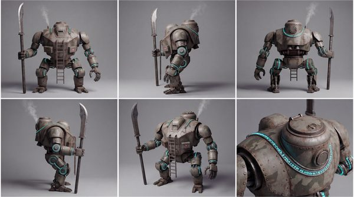
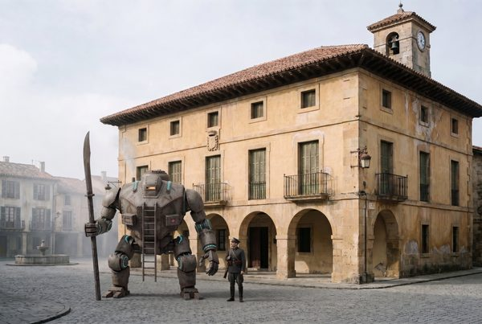
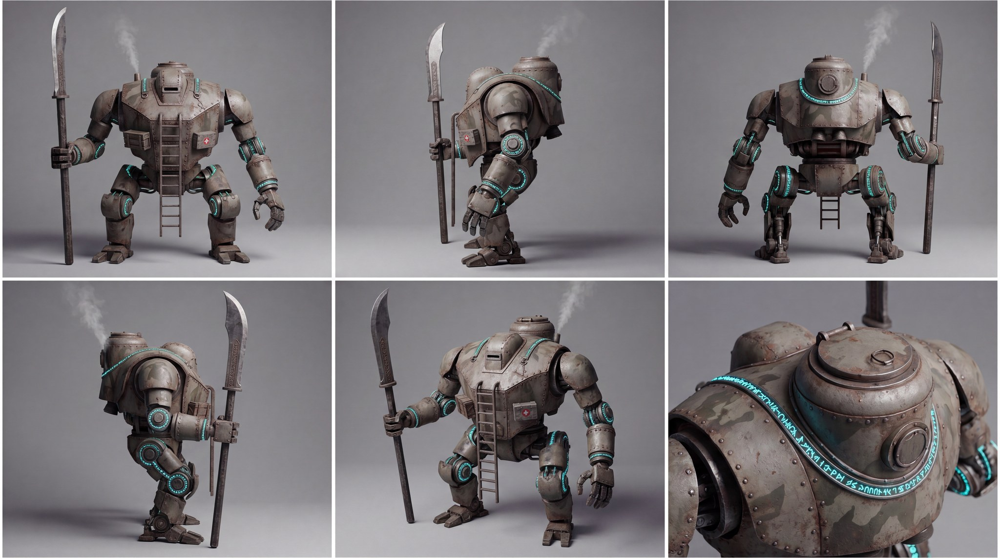
Класс и роль
Лёгкий паро-магический голем класса ОРУЖЕНОСЕЦ (низший из трёх классов: оруженосец → рыцарь → паладин). Второе поколение мехов («Те же „Бунтари" — вообще второе поколение, но все еще активно используются» — Книга 2, Глава 9). Создан на мануфакторумах Железной марки; в тексте назван «рабочей лошадкой пограничья» («Три „Бунтаря" – рабочих лошадок пограничья, созданных на мануфакторумах Железной марки» — Книга 2, Глава 8). Типовая массовая машина: «„Бунтари" – оруженосцы стандартные до невозможности» (Книга 2, Глава 8). Первая личная боевая машина ГГ в его прошлой жизни была именно «Бунтарём»: «когда я, будучи только что окончившим академию оруженосцем, получил свою первую машину, точно такого же „Бунтаря"» (Книга 2, Глава 10).
Внешность и форма
- Прямого описания силуэта в тексте мало; ключевая черта — достаточно низкий силуэт (преимущество): «Зато достаточно низкий силуэт» (Книга 2, Глава 8).
- Антропоморфная компоновка оруженосца с манипуляторами и рунной глефой (общая для класса).
- Люк в небольшой башенке-«горбе», смещённой назад: «Он на „Бунтаре" смещен немного назад и находится в похожей на небольшой горб башенке» (Книга 2, Глава 19). — Опознавательная деталь силуэта: на спине/верху корпуса небольшой горб-башенка с круглой крышкой люка.
- Кабина пилота — в центральной верхней части корпуса (Книга 6, Глава 11): пробитый кислотной гранатой «Бунтарь» имел «дыру в центральной верхней части корпуса. Как раз там, где должен сидеть пилот» — то есть пилотское место расположено в центрально-верхней зоне корпуса (под смещённой назад башенкой-«горбом» с люком). Попадание в эту зону смертельно для пилота.
Конструкция и принцип работы
- Базовая компоновка оруженосца: паро-магический котёл, рунные цепочки, кресло пилота, кристалл-активатор (общеклассовое — см. свод).
- Общая неприхотливость в обслуживании и ремонте: «И общая неприхотливость в обслуживании и ремонте» (Книга 2, Глава 8). Прямая противоположность капризному «Егерю» (много стандартных, взаимозаменяемых узлов).
- Тесный кокпит (как у всех оруженосцев): сидя неудобно, лечь невозможно — «приходится так скрючиваться, что о сне не может быть и речи» (Книга 2, Глава 10).
- Расположение люка и лестницы: люк — сверху, в смещённой назад башенке-«горбе»; штатная лестница расположена спереди и чуть слева: «Лестница на „Бунтаре" стандартная – расположена спереди и чуть слева» (Книга 2, Глава 19). Это та самая «привычная» ГГ компоновка лестницы (левая сторона корпуса), от которой нестандартно отличался «Егерь» (лестница на спине).
- ЗИП и аптечка на борту: тяжёлый ящик ЗИП (с универсальным шестигранным ключом-ломом «на тридцать» и инструментом) и штатная аптечка — общее оснащение мехов; на «Бунтаре» ЗИП на штатном месте (под пилотским троном) (Книга 2, Глава 19). У мехов первых поколений ЗИП крепили снаружи корпуса и часто теряли в бою (контраст со вторым поколением «Бунтаря»).
- Уязвимость силовой установки при пробое: при тяжёлом падении на «Бунтаре» Альера повредило паропроводы (а возможно, и пробило котёл) — в кабину и из всех щелей бьёт горячий пар с испарённым ихором («не только дым, но и пар хлещет … сверкающие синим искорки пропитанного маной серебра») (Книга 2, Глава 19).
- Самоликвидация при «разносе» огненного кристалла: после аварии огненный кристалл в паровике «пошёл вразнос» (нарастающее шипение/треск), что привело к самоподрыву меха — яркая синяя вспышка высвобожденной магической энергии, оставившая в овраге неглубокую воронку и разнёсшая корпус на обломки (Книга 2, Глава 19). Подтверждает общую механику «Синего пламени» (см. свод) на конкретном экземпляре.
Движение и походка
- Неплохая, но не выдающаяся скорость и маневренность: «Неплохая, но не выдающаяся скорость и маневренность» (Книга 2, Глава 8).
- Отличная проходимость: «Отличная проходимость» (Книга 2, Глава 8).
- На практике в турнирном бою «Бунтарь» подан как быстрый мех: «наглядно демонстрировал преимущества этого быстрого меха, стараясь зайти мне за спину» — быстрее «Зелёного дракона»: «„Дракон"… несколько медленнее и неповоротливей „Бунтаря"» (Книга 2, Глава 19). То есть в иерархии турнирных оруженосцев «Бунтарь» быстрее и поворотливее «дракона», но уступает «Егерю» по обзору и манёвру.
- Боевая инерция/опасность падения: на краю обрыва «Бунтарь» с трудом балансирует, при потере опоры опрокидывается носом вперёд и со всей силы врезается в землю (см. «Размер и сравнения» о высоте) — иллюстрация значительной инерции мехов (Книга 2, Глава 19).
Размер и сравнения
- Точные метры/тонны в тексте НЕ названы — размер дан только относительно (общеклассовое соотношение оруженосца — см. «Кузнечик» / свод: оруженосец = «увеличенный в 2,5 раза сержантский доспех»).
- Подчёркнут именно низкий силуэт «Бунтаря» среди оруженосцев (Книга 2, Глава 8).
- Броня «Егеря» «равна или даже несколько уступает бронированию „Бунтарей", а те ею не блещут» — «Бунтарь» как нижняя планка бронирования среди оруженосцев (Книга 2, Глава 8).
- Косвенный размерный ориентир по высоте (неточно): при падении в овраг люк «Бунтаря» оказался «где-то в полутора метрах» от земли, когда мех лежал носом вниз на склоне; сам корпус упал «с хорошей такой четырёхметровой высоты», пропахав на склоне борозду (Книга 2, Глава 19). — Цифры «1,5 м» и «4 м» описывают геометрию падения на склоне, а не рост меха напрямую, поэтому как габарит — только относительно/неточно.
Вооружение и защита
- Минимум дополнительного оружия: «Минимум дополнительного оружия» (Книга 2, Глава 8). Основное оружие — стандартная рунная глефа оруженосца (световое копьё), общая для класса.
- Слабая по всем показателям броня, особенно сзади: «Слабая по всем показателям броня, особенно сзади» (Книга 2, Глава 8). Кормовая уязвимость — общая болезнь оруженосцев.
Развитие по томам
- Книга 8 (Глава 13 — Талхал, переправа через Нолам, Дхивальская кампания): «Бунтарь» назван эталоном-аналогом для опознания вражеского колониального оруженосца Компании Южных морей — модели «К-3-3». Разглядывая в бинокль копьё Компании, идущее к мосту, ГГ опознаёт три оруженосца «К-3-3», схожие с „Бунтарями" — рабочие лошадки со средними по всем показателям характеристиками и довольно слабой бронёй, но неприхотливые в обслуживании и надёжные словно лом» (Глава 13). То есть «Бунтарь» используется как узнаваемый референс класса «массовый средний оруженосец с посредственной (особенно тонкой) бронёй, зато простой и неубиваемый в эксплуатации»: незнакомая колониальная модель «К-3-3» описывается через сходство с «Бунтарём». В бою эти «К-3-3» (как и сам «Бунтарь») гибнут от световых копий и «слонобоев» — слабая броня пробивается, при потере ноги корпус «доходит до предела прочности и просто трескается». Реконфирм established-профиля «Бунтаря» (средние ТТХ, слабая броня, выдающаяся надёжность/ремонтопригодность). Сама модель «К-3-3» — безымянный мех Компании, отдельного файла не заводит (см. свод, Книга 8, Главы 12–17); вклад для «Бунтаря» — закрепление его как канонического эталона „надёжный средний оруженосец со слабой бронёй" для описания чужих машин. (Книга 8, Глава 13)
- Книга 7 (Главы 8, 9 — Вольная марка, Степной Страж): «Бунтарь» — массовый «безлошадный»-привлекательный оруженосец в разношёрстном парке маркграфа; впервые прямо сопоставлен внешне и по возрасту с «Бродягой». (1) Часть «зверинца» дружины (Глава 8): при смотре сборного войска «Чёрных фениксов» ГГ перечисляет парк машин — среди них «весьма схожие, как по внешнему виду, так и по почтенному возрасту „Бунтари" и „Бродяги"» (Глава 8). Это первое прямое указание на внешнее сходство «Бунтаря» и «Бродяги» (оруженосец-дозор, см. «Бродяга») и на их общий «почтенный возраст» — то есть силуэт «Бунтаря» (2-е поколение) близок к силуэту «Бродяги». Реконфирм established-статуса «Бунтаря» как массового устаревшего, но активно используемого оруженосца пограничья. (2) Собственный «Бунтарь» нового бойца (Глава 9): на службу к маркграфу приходит оруженосец со своим „Бунтарём" — «вчера пришёл оруженосец с собственным „Бунтарём"» (Глава 9); реконфирм: «Бунтарь» — типичная личная машина рядового вольного оруженосца (ср. established-факт, что первой машиной самого ГГ в прошлой жизни был «Бунтарь»). Боя/новых конструктивных деталей нет; вклад — прямое внешнее/возрастное сопоставление «Бунтарь» ≈ «Бродяга» и реконфирм „Бунтаря" как массовой личной машины оруженосца. (Книга 7, Главы 8, 9)
- Книга 6 (Глава 11 — столица Эдан, засада на бульваре Всадников): «Бунтарь» подтверждён как массовый учебно-боевой оруженосец Академии Доблести Эдана — и наглядно показаны две его established-слабости (слабая корма и кислотные гранаты). Копьё пажей Академии, посланное к фольхстагу, попадает в засаду «мастеровых»; среди машин — два „Бунтаря" (один — у пажа Пора Сорна). (1) Производство Железной марки + бой в спину: «старый, но всё ещё активно используемый „Бунтарь" производства Железной марки» вырывается из ловушки с оплавленным кислотой корпусом; ГГ снимает его одним выстрелом «слонобоя» в спину — «Щит оруженосца был давно сбит, а особым бронированием, особенно сзади, „Бунтарь" не отличается» (Глава 11), прямое подтверждение established-факта о слабой кормовой броне (ср. Книга 2). (2) Пар из кормы при пробитии паровика: после попадания «Выплюнув длинную струю пара из, прошу прощения, задницы голема, зашипел пробитый паровик. „Бунтарь" покачнулся, но… пилот сумел удержать машину на ногах, поспешно переводя в спящий режим» (Глава 11) — то есть при пробитии паропривода/котла стравливается пар, и пилот спешно гасит нагрузку переводом в спящий режим, чтобы паровик не рванул. У этого экземпляра паровик «парил» в кабину ихором ещё до рокового попадания (Пор сильно отравился ихором — см. ниже). (3) Кислотное оплавление и пробитие кабины: второй «Бунтарь» того же копья пажей условно боеспособен, но «у „Бунтаря" вон дыра в центральной верхней части корпуса. Как раз там, где должен сидеть пилот. Его только каким-то чудом не зацепило» (Глава 11) — наглядно: пилотская кабина у «Бунтаря» в центральной верхней части корпуса (под башенкой-«горбом», ср. Книга 2), и попадание туда смертельно. (4) Отравление пилота ихором: Пор Сорн выбирается из «Бунтаря», «кашляя, словно пытался выплюнуть лёгкие», харкает кровью — «насыщенный ихором пар из пробитого котла попал в кабину» (Глава 11), ещё одна иллюстрация общей угрозы «ожоги + отравление ихором» (см. «Слон», свод). (5) Учебная машина не для города: ГГ замечает, что для помощи императору в Академии остались разве что «совсем древние големы, вроде „Слонов" или „Кузнечиков"», а выпускать их (как и битых «Бунтарей») на улицы — «обречь на гибель», ведь у мятежников кислотные гранаты и «слонобои». Конструктивно новый вклад — расположение кабины „Бунтаря" в центральной верхней части корпуса и боевая демонстрация слабой кормы/пара из кормы. (Книга 6, Глава 11)
- Книга 5 (Главы 12, 15 — Степной Страж, после катастрофы малого круга): «Бунтарь» — один из трёх уцелевших, но битых оруженосцев отряда «Чёрный феникс». После разгрома у руин на стоянке стоят три оруженосца; «Бунтарь» среди них — «наполовину выпотрошенный»: «Помимо „Лучника" и наполовину выпотрошенного „Бунтаря" на стоянке находился и „Арбалетчик"…» (Глава 12). То есть машина частично разобрана/повреждена и небоеспособна (рядом с тоже требующим ремонта «Лучником»; полностью исправен лишь «Арбалетчик» Онилии). Бахал подтверждает: «У нас осталось три оруженосца. Два из них нуждаются в ремонте» — и за два дня их не восстановить даже при наличии запчастей (Глава 15). Подтверждает established-образ «Бунтаря» как массовой, но в этот период тяжело битой машины отряда. Конструктивно новых деталей чанк не даёт. (Книга 5, Главы 12, 15)
- Книга 4 (Главы 8, 9, 10, 11 — Степной Страж): уточнена история и состояние трофейного «Бунтаря» отряда «Чёрный феникс». Это второй из двух оруженосцев, добытых «Ястребами» в пустошах (первый — «Лучник»): «Есть еще „Бунтарь", но он сильно поврежден. Думаю, он только-только достиг городских стен» (Книга 4, Глава 8). Сильно повреждён и небоеспособен; чтобы его хоть немного отремонтировать, пришлось снимать запасные части с одной из уничтоженных машин: «чтобы его хоть немного отремонтировать пришлось брать запасные части с одной из уничтоженных машин» (Глава 8). С его приходом у «Фениксов» — восемь машин (Бахал: «рыцарь и два оруженосца, пусть один из них и небоеспособен»). Далее «Бунтарь» — главный объект ремонта на новой базе: ГГ ищет «список необходимых запчастей для небоеспособного „Бунтаря"» (Глава 9); в ремонтном «муле» «подвесили неисправного „Бунтаря", которого активно „ломали" набранные техники и „змейки"» — то есть машину разбирают/чинят новые механики и пилотессы-оруженосцы (Глава 10). Подтверждает «Бунтаря» как неприхотливую, но в этот раз тяжело битую массовую машину, восстанавливаемую каннибализацией других мехов. (Книга 4, Главы 8, 9, 10, 11)
- Книга 4 (Глава 5 — Степной Страж): трофейный «Бунтарь» числится в стартовом парке наёмного отряда ГГ «Чёрный феникс». На время отлёта ГГ в Тирбоз именно «Бунтарь» (вместе с «Протектором» и двумя «Арбалетчиками» — итого 4 машины) планируется оставить в Степном Страже на консервацию/охрану, если не найдётся толковый заместитель: «организовать консервацию и охрану четырех паро-магических големов: „Протектора", двух „Арбалетчиков" и „Бунтаря"» (Книга 4, Глава 5). Подтверждает, что «Бунтарь» вошёл в долевой раздел отряда как одна из боевых машин. (Книга 4, Глава 5)
- Книга 3 (Главы 18, 21 — Вольная марка): «Бунтарь» подтверждён как повсеместная массовая машина — встречается даже в трофейном парке тайной долины на далёком юге, среди разношёрстного «зоопарка» наёмничьих трофеев: «Даже один „Бунтарь" производства Железной марки затесался» (Глава 18). Это подчёркивает контраст между пёстрой стандартно-несовместимой техникой наёмников (где «Бунтарь» — типичный представитель) и безликими, стандартизированными «чёрными» машинами родовой дружины фольхов (два «Протектора» + два «Арбалетчика»). При формировании отряда из захваченных машин ГГ включает один «Бунтарь» в состав уходящего из долины усиленного копья (наряду с двумя «Арбалетчиками», двумя «Стилетами» и двумя «Протекторами») (Глава 21). (Книга 3, Главы 18, 21)
- Книга 3 (Главы 26–27 — погоня и спасение): трофейный «Бунтарь» идёт в уходящем из-под обстрела копье оруженосцев ГГ. При опознании своих машин издали ГГ отмечает, что «Бунтаря» (как и «Арбалетчиков») «похожей раскраски в Вольной марке найти реально» — массовый, неприметный силуэт, не выдающий владельца (в отличие от уникальных «Стилетов») (Глава 26). Машина доходит до лагеря «Ястребов»; «Бунтарь» (трофей) входит в долевой раздел будущего наёмного отряда ГГ «Чёрный феникс» (Глава 27). (Книга 3, Главы 26, 27)
- Книга 2 (Главы 26, 28 — полуфинал и финал команд): В полуфинале командных схваток (Тирбоз↔Эдан, Глава 26) «Бунтари» — основа атакующей группы Эдана у захваченного флага: вместе с «Лучником» концентрируют огонь по прорывающемуся «Егерю» ГГ, один «Бунтарь» пытается достать его тараном/в спину, но промахивается. В конце боя «Бунтари» Эдана дымят — их «уничтожила» Шилин на «Зелёном драконе» (Глава 26, подтверждено в Главе 27). Косвенный размерный ориентир модели уточнён в Главе 28: «Лучник» описан как «чуть располневший „Бунтарь"» — то есть «Бунтарь» служит эталоном силуэта/габарита оруженосца, относительно которого «Лучник» плотнее и чуть лучше бронирован, но чуть медленнее (см. «Лучник»). На стороне Тирбоза «Бунтари» Амиты, Дэи и Сагара держат оборону флага против давящей четвёрки Эдана; «Бунтарь» Амиты в какой-то момент «полыхнул ракетами» (подбит) (Книга 2, Глава 26).
- Книга 2 (Главы 19, 21 — турнир): На второй индивидуальной схватке ГГ его противник — капитан команды Нокаса Альер Оранг на «Бунтаре» (предпочёл быстрого «Бунтаря» «Дракону»); демонстрирует преимущества скорости, пытаясь зайти «Егерю» в спину. В дуэли у балки/оврага оба выскакивают лоб в лоб; уклоняясь, «Бунтарь» Альера соскальзывает в овраг, опрокидывается носом вперёд и падает с четырёхметровой высоты — все щиты-мишени слетают, победа засчитана ГГ (Глава 19). Падение пробивает паропроводы (а то и котёл): кабину заполняет горячий пар с ихором; огненный кристалл «идёт вразнос», и после спасения пилота ГГ мех подрывается «Синим пламенем» (Глава 19). Подробно показаны компоновочные детали «Бунтаря»: люк в смещённой назад башенке-«горбе», штатная лестница спереди-чуть-слева, ЗИП с ключом-ломом под троном, штатная аптечка (Глава 19). В первой командной схватке «Бунтари» — часть атакующего копья команды Нокаса (наряду с «Зелёными драконами» и «Лучниками»); один сбит копьём «Феникс» Тирбоза (Глава 21). На стороне Тирбоза «Бунтари» Амиты, Сагара и Дэи отрабатывают манёвр обхода с тыла и добивают копьё Нокаса (Глава 21).
- Книга 2: В полевом лагере (форте) среди шести свободных големов команды академии стоят три «Бунтаря» (Глава 8). Мастер-наставник Толдокар разрешает команде выбрать любого из шести мехов; Дэя, Амита и Сагар тянут жребий, кому достанется какой из трёх «Бунтарей» — ГГ хотел посоветовать им брать именно «Бунтарей» (а не сложных «Красных драконов»), но они определились сами (Книга 2, Глава 8). На «Бунтарях» команда (Дэя Готмал, Амита Гонар, Сагар Ганик-Вегейр) отрабатывает тактику пар и маршрут полигона; ГГ вспоминает, что его собственный первый мех после академии был «точно таким же „Бунтарём"» (Книга 2, Глава 10). На итоговой тренировке-засаде один из второкурсников укрывается за подбитым «Красным драконом» бывшего капитана именно на «Бунтаре» и благоразумно отступает (Книга 2, Глава 11). Бывший капитан второкурсников Девор пересел с «Бунтаря» на «Красного дракона», посчитав «ящерицу» более соответствующей новому статусу — «Для оруженосца выбор правильный, а для пажа – спорный» (Книга 2, Глава 11).
Известные экземпляры и пилоты
- Два «Бунтаря» команды Академии Доблести Эдана (столица, Книга 6, Глава 11): часть копья пажей, посланного к фольхстагу и попавшего в засаду «мастеровых» на бульваре Всадников. Один (производства Железной марки, корпус оплавлен кислотой) пилотирует паж Пор Сорн — подбит выстрелом «слонобоя» в корму, паровик «парил» ихором в кабину, Пор тяжело отравлен ихором, но выжил (машину пришлось бросить). Второй «Бунтарь» условно боеспособен, но с дырой от кислотной гранаты в центрально-верхней части корпуса (пилот чудом уцелел).
- Три «Бунтаря» команды академии Тирбоза в полевом лагере (закреплены за пилотами на время членства в команде) — пилоты: Дэя Готмал, Амита Гонар, Сагар Ганик-Вегейр (Книга 2, Главы 8, 10, 21).
- «Бунтарь» капитана команды Нокаса Альера Оранга — выбрал быстрого «Бунтаря» вместо «Дракона»; разбит при падении в овраг и подорван «Синим пламенем» во второй индивидуальной схватке, пилот спасён ГГ (сотрясение), на поле больше не вышел (Книга 2, Главы 19, 20, 21).
- Первый мех Гарна Велька в его прошлой жизни (сразу после выпуска из академии в оруженосцы) — «точно такой же „Бунтарь"» (Книга 2, Глава 10).
- Один «Бунтарь» под управлением второкурсника на итоговой тренировке-засаде (Книга 2, Глава 11); ещё один «Бунтарь» — в составе атакующего копья команды Нокаса, сбит в первой командной схватке (Книга 2, Глава 21).
- Производитель: мануфакторумы Железной марки (Книга 2, Глава 8).
«Буревестник»
Первый дирижабль серии, показанный «вживую» и подробно. Имя — «Буревестник» (Книга 3, Глава 9, со слов почтенного Загима). Принадлежит роду Флона (по гербам), владения герцогства Флона — на самом западе империи. Зафрахтован магнатом Ригором Загимом целиком, чтобы доставить экспедицию ГГ и четыре «Стилета» из Тирбоза в Степной Страж (Вольная марка). Ранее дирижабли упоминались только обобщённо (почтовые/военные, см. свод); «Буревестник» — первый, у которого есть имя, владелец, капитан, описанная гондола и вооружение, и который показан в воздушном бою.
Класс и роль
Грузопассажирский дирижабль (воздушный корабль), не полноценный военный, но вооружённый под специфику Вольной марки: «„Буревестник" не является полноценным военным дирижаблем, но специфика Вольной марки не предполагает полетов без должного вооружения» (Книга 3, Глава 10). По назначению — больше грузовой, чем пассажирский: «дирижабль был не столько пассажирским, сколько грузовым, явно проигрывая по удобству своим более роскошным аналогам, предназначенным исключительно для родовитых пассажиров» (Книга 3, Глава 9). В этом рейсе работает как транспорт мехов: под брюхом несёт четыре «Стилета» в грузовых коробах (см. «Стилет»). Воздушный флот в империи — редкость и дорог, им владеют только родовитые, сдавая корабли внаём вместе с экипажем и магами; почтенный Загим мог бы иметь свой флот, но предпочитает вкладываться в железные дороги и обычные корабли (Книга 3, Глава 9).
Внешность и форма
- Внешне — «здоровая колбаса из металла, дерева, ткани и магии», «небесный гигант», «небесный гигант, болтающийся над головой и закрывающий небо» (Книга 3, Глава 9).
- Гондола двухэтажная, плюс открытая смотровая (обзорная / прогулочная / боевая) площадка-палуба под гондолой; воздушники по-корабельному называют всё палубами (Книга 3, Глава 9).
- В носу гондолы — застеклённая капитанская рубка (мостик); в кормовой части — паровик и два винта (Книга 3, Глава 9).
- Обзорная палуба внизу напоминает «огромную, причудливую лодку с плоским дном», чуть шире гондолы — это облегчает контроль верхней полусферы корабля; под полом и тонкой обшивкой — пустота (отсюда страх высоты у пассажиров) (Книга 3, Главы 9, 10).
- На самом верху, прямо на оболочке, — отдельная оборонительная платформа с двумя скорострельными ружьями; вахта «наверху» — самая тяжёлая, на неё ставят в наказание (Книга 3, Глава 10).
- Каюты тесные: «маленькая каюта, больше напоминающая купе в поезде… далеко не первого класса», от стены до стены можно достать разведёнными руками; круглый иллюминатор шириной с ладонь; под потолком тусклый негасимый магический светильник (Книга 3, Глава 9).
- На борту есть кают-компания/гостиная-столовая с широким обзорным окном и крохотная кухня в закутке (Книга 3, Глава 10).
Конструкция и принцип работы
- Силовая установка — паровик в корме; при переходе из спящего режима в рабочий ощущается «лёгкая, едва ощутимая вибрация», в полёте — «мерный рокот» винтов; есть паровой ревун (сигнальный гудок) в носу (Книга 3, Глава 9).
- Подъём — баллоны в оболочке (не водород): «давно прошли те времена, когда дирижабли заполняли взрывоопасным водородом», но при сильном повреждении оболочки корабль «закончит полет падением» (Книга 3, Глава 11). Потеря части баллонов → потеря высоты и падение (Книга 3, Глава 11).
- Магическая защита (рунные цепочки силового набора): в центре оружейной палубы — толстая колонна-конструкция; во время боя капитан-маг расхаживает вокруг неё, вливая ману в рунные цепочки силового набора корпуса. Защита отдаётся приоритетно оболочке, а не гондоле (повреждения оболочки фатальны — падение; повреждения гондолы переживаемы) (Книга 3, Глава 11).
- Экипажу нужен маг (минимум один) — поэтому воздушным флотом владеют только родовитые. Капитан «Буревестника» — мастер магии (трёхлучевая звезда), что необычно: магов в экипажи обычно назначают по остаточному принципу (Книга 3, Глава 9).
- Управление/связь экипажа: причальная мачта-башня, причальный трос/канаты, наземные команды; сигнальщик с флажками и ревун при отправлении и погрузке (Книга 3, Главы 9, 10).
- Погрузка мехов: големы поднимаются под брюхо корабля в изрезанных рунами грузовых коробах; техники фиксируют машину в коробе, капитан активирует рунные цепочки, грузовой короб с цепями медленно подтягивает голема под гондолу. Из голема перед фиксацией вынимают кристалл-активатор (см. «Стилет») (Книга 3, Глава 9).
- В бою капитан находится не в боевой рубке, а на оружейной палубе (магу так удобнее) — в отличие от морского корабля (Книга 3, Глава 11).
Движение и походка
- Не шагающая машина — летит. Скорость хода: маршрут Тирбоз → Степной Страж (через Пресное море) занимает около двух суток («не меньше двух дней», «двое суток»; «в теории к полудню мы должны быть на месте» к концу пути) (Книга 3, Главы 9–11).
- Отрыв от причальной мачты: втягивает длинный трос, задирает нос, степенно поднимается, винты медленно раскручиваются; ловит попутный ветер и берёт курс (в рейсе — на юго-восток) (Книга 3, Глава 9).
- Манёвр в бою: может набирать высоту и уходить в облачность, менять курс (на северо-восток при попытке оторваться от виверн); болтанка в шторм (Книга 3, Главы 10, 11).
Размер и сравнения
- Точные метры/тонны в тексте не названы — размер дан только относительно: «небесный гигант», «здоровая колбаса», «эта здоровая колбаса из металла, дерева, ткани и магии болтается над твоей головой, закрывая небо»; гондола двухэтажная (Книга 3, Глава 9). Размер — в тексте только относительно/неточно.
- Несёт под брюхом четыре голема класса оруженосец («Стилеты») в грузовых коробах одновременно, не теряя манёвренности, — косвенный масштаб грузоподъёмности (Книга 3, Глава 9).
- При взлёте люди на земле «начали уменьшаться и вскоре стали просто точками», академия видна «как на ладони» — корабль поднимается на большую высоту (Книга 3, Глава 9).
Вооружение и защита
- Два спонсона по бокам в носу гондолы, в каждом — трёхфунтовое орудие (пушка); стреляют тяжёлой картечью, разносят виверне крыло «в клочья», но требуют времени на перезарядку (Книга 3, Главы 10, 11).
- Восемь скорострельных крупнокалиберных ружей на вертлюгах: шесть на обзорной (боевой) палубе (по два на борт, по одному на нос и корму) + два на верхней оборонительной платформе на оболочке (Книга 3, Главы 10, 11).
- Это «уродливые и увеличенные версии револьверных винтовок», их же зовут скорострельными пушками, «пуле/снарядо-метателями» и «дьявольскими часами» (Книга 3, Глава 10).
- Механизм: лет двадцать назад стрельбу механизировали заводным механизмом (ручка теперь заводит пружину, а не крутит ствол вручную); расчёт — два номера (первый — стрелок, второй — заряжающий/заводящий) (Книга 3, Главы 10, 11).
- Боепитание — «барабан» (хотя на барабан не похож): сложная система из натянутой на овальный каркас стальной ленты с заряженными каморами; оружейники снаряжали их на двенадцать зарядов; смазаны оружейным салом (Книга 3, Глава 11).
- Скорострельность: «барабан расстреливается в пять секунд»; после ~200 выстрелов начинаются проблемы из-за нагара; ограниченный угол вертикальной наводки (чтобы не прострелить собственную оболочку) (Книга 3, Главы 10, 11).
- Боевая магия капитана-мага: помимо защитных плетений оболочки, в бою плетёт боевые арканы — неизвестным ГГ заклинанием взрывает голову виверны (Книга 3, Глава 11).
- Защита — рунные цепочки силового набора + защитные плетения капитана, приоритет оболочке (см. «Конструкция»). Несмотря на это, дирижабли крайне уязвимы для воздушных тварей (драконы, виверны): «Люди в небесной вышине лишь гости. Небеса принадлежат другим» (Книга 3, Главы 10, 11).
- Боезапас под боевой палубой — закрытые опечатанные зарядные ящики со снаряжёнными барабанами (Книга 3, Глава 11).
Развитие по томам
- Книга 7 (Глава 17 — Южная марка, Золотое): «Буревестник» в металле не появляется (погиб в Книге 3), упомянут как эталон „грузового дирижабля", который ГГ хочет завести себе. Сожалея о гибели латников из-за нехватки сил (на почтовый дирижабль нельзя было взять мехов), ГГ мечтает о собственном воздушном корабле — «не боевом, конечно. А обычном – грузовом. Вроде того же „Буревестника"!» (Глава 17). Тут же — общесистемный факт об экипаже дирижабля (см. свод): нужен минимум два мага-воздушника ранга адепта, которых готовит единственная академия в Эдане под патронажем императора (служат туда «природные» фольхи; к выскочке-маркграфу не пойдут). Реконфирм: «Буревестник» — образцовый небольшой грузовой дирижабль, нижняя планка размерной шкалы, на которую ГГ ориентируется. Новых конструктивных данных по самому кораблю нет. (Книга 7, Глава 17)
- Книга 7 (Главы 12–13 — Вольная марка → Южная марка): «Буревестник» не упомянут; в кадре — другой, безымянный по модели почтовый дирижабль «Сова» (грузовой почтовик, на котором ГГ летит из Степного Стража в Горан): мал — «не мог поднять не только рыцаря, но и оруженосца» (Глава 13), потому отряд ГГ ограничивается пешими (Энно, 2 сержанта, 6 латников), а «Клевцы» добираются позже своим ходом/на фургонах. Подтверждает established-факт: почтовые/малые дирижабли не несут мехов (см. свод, Книга 7, Главы 12–17).
- Книга 7 (Глава 3 — Тирбоз, ретроспектива/упоминание): «Буревестник» в металле не появляется (погиб в Книге 3), упомянут лишь как прецедент авиакатастрофы, который пугает магната Загима за дочь. Размышляя о безопасности Ланиллы, Ригор Загим вспоминает гибель «Буревестника»: «новости о гибели „Буревестника" и о том, что она была на борту дирижабля» едва не заставили магната поседеть; перед очередным полётом он решает «проверить дирижабль… трижды», чтобы «История с „Буревестником" не должна повториться» (Глава 3). Подтверждает established-факт: Ланилла Загим была на борту «Буревестника» при крушении и уцелела; катастрофа осталась в семье Загимов как травматический прецедент. Новых конструктивных данных нет; вклад — реконфирм гибели „Буревестника" как сюжетного якоря безопасности полётов. (Книга 7, Глава 3)
- Книга 6 (Глава 1 — ретроспективное сравнение): «Буревестник» в металле не появляется (погиб в Книге 3), но служит ГГ эталоном для сравнения конструкции дирижаблей. Оглядывая стрелковую галерею флагмана «Вершитель Судеб», Гарн Вельк отмечает контраст: на грузовом «Буревестнике» это была открытая со всех сторон площадка, тогда как на флагмане — «довольно широкая галерея, опоясывающая гондолу под… спонсонами пушек» (Книга 6, Глава 1; см. «Вершитель Судеб»). Также «Буревестник» назван мерилом размера: самый малый из четырёх дирижаблей-«охотников» островитян всё равно «больше того же „Буревестника"», на котором ГГ «доводилось не только летать, но и падать» (Книга 6, Глава 1). Подтверждает established-образ «Буревестника» как небольшого грузопассажирского дирижабля с открытой нижней площадкой — нижняя планка размерной шкалы боевых воздушных кораблей. (Книга 6, Глава 1)
- Книга 4 (Глава 1 — ретроспектива/упоминание): «Буревестник» назван как погибший корабль, с крушения которого начались злоключения отряда в Вольной марке: «обычный грузовоз, собрат разбившегося в пустошах „Буревестника", с крушения которого и начались все наши… приключения». У причальной мачты Степного Стража стоит однотипный грузовоз («собрат») — подтверждает, что «Буревестник» относится к серийному типу грузовых дирижаблей рода Флона, а не уникален. Сам «Буревестник» в чанке в металле не появляется (погиб в Книге 3). Косвенно дана и причина гибели — «нарвался на крупную стаю диких виверн и потерпел крушение» (Книга 4, Глава 1). (Книга 4, Глава 1)
- Книга 3 (Главы 9–11 — рейс Тирбоз → Степной Страж, первое и единственное появление):
- Глава 9 (погрузка и взлёт): «Буревестник» зафрахтован Загимом целиком для доставки экспедиции ГГ (Гарн Вельк + Дэя, Константин, Сагар, Амита, Конн) и четырёх «Стилетов» в Вольную марку. Дан полный портрет корабля: двухэтажная гондола, носовая рубка, кормовой паровик и два винта, тесные каюты, обзорная палуба-«лодка». Капитан — ласс Лонкар Троган-Флона, ~25 лет, мастер магии (трёхлучевая звезда). Подробно показана погрузка мехов в рунные грузовые короба под брюхо корабля. Отправление от причальной мачты, набор высоты, курс на юго-восток. Заяц на борту — Ланилла Загим (см. Глава 10).
- Глава 10 (вооружение и заяц): раскрыто вооружение «Буревестника» — два трёхфунтовых орудия в носовых спонсонах + восемь скорострельных крупнокалиберных ружей (шесть на боевой палубе, два на верхней платформе), история и устройство «дьявольских часов». Подтверждено: корабль грузопассажирский, но вооружён по требованиям Вольной марки. Обнаруживается безбилетная пассажирка Ланилла Загим, тайком пробравшаяся в грузовом ящике (выбросив часть запчастей «Стилетов»).
- Глава 11 (воздушный бой и крушение): над Пепельными землями «Буревестник» атакован большой стаей диких виверн. Бой на оружейной палубе: капитан-маг вливает ману в рунные цепочки (приоритет оболочке), плетёт боевые арканы (взрывает виверну); расчёты бьют из орудий картечью и скорострельных ружей; ГГ с командой (револьверы «Страж») прикрывают нос и корму. Виверны выбивают часть ружей и членов экипажа, верхняя оборонительная платформа потеряна, гондолу таранят. Итог: оболочка пробита, часть баллонов потеряна — «Буревестник» теряет высоту и падает («Низвергнутый с небес „Буревестник" падал»). Судьба корабля и экспедиции — на следующий чанк.
Известные экземпляры и пилоты
- «Буревестник» — грузопассажирский дирижабль рода Флона (по гербам); зафрахтован целиком магнатом Ригором Загимом для рейса Тирбоз → Степной Страж (Вольная марка) (Книга 3, Глава 9).
- Капитан: ласс Лонкар Троган-Флона — молодой (~25 лет) офицер дома Флона, мастер магии (трёхлучевая звезда), флегматичный, страстный лётчик; в бою управляет защитой и боевой магией с оружейной палубы (Книга 3, Главы 9, 11).
- Экипаж: расчёты скорострельных ружей (по два номера), наблюдатели, стюард, юнга, боцман с дудкой; точная численность не названа. Несколько членов экипажа гибнут в бою с виверны (Книга 3, Глава 11).
- Пассажиры рейса: экспедиция ГГ (6 человек) + безбилетная Ланилла Загим; груз — 4 «Стилета» + запчасти/снаряжение (Книга 3, Главы 9–11).
«Вершитель Судеб»
Второй дирижабль серии (после «Буревестник»), показанный «вживую» и подробно. Имя — «Вершитель Судеб» (Книга 5, Главы 25–28). Это флагман воздушного флота империи Эдан, присланный императором за третьим принцем Ронгом Олном (и пленником Сидманом); на его борту ГГ летит из Серого Берега через море Мунмар в столицу. Машина названа ещё в прошлом чанке (Книга 5, Глава 23) — там зафиксирована в свод лишь как мелькнувшая «боевая единица флота»; в Главах 26–28 дан развёрнутый портрет корабля (палубы, каюты, силовая установка, вооружение, артефактный сигнальный фонарь, верхняя боевая площадка), сопоставимый с портретом «Буревестника» — поэтому заведён отдельный файл
vershitel(category: airship), как у «Буревестник».
Класс и роль
Боевой дирижабль — флагман воздушного флота империи Эдан, не пассажирский лайнер: «„Вершитель Судеб" — боевой корабль, а не пассажирский лайнер» (Книга 5, Глава 26). Прямо назван «настоящий боевой воздушный корабль империи» (Книга 5, Глава 23) и «гордость воздушного флота империи… Самый новый и совершенный дирижабль Эдана» (Книга 5, Глава 26). Сам принц величает его «практически воздушный броненосец», «крепкий орешек» (Книга 5, Глава 25).
В операции — спецрейс по доставке VIP: император послал за сыном именно флагман, потому что «не любит ждать» (Книга 5, Глава 26). На борту: третий принц Ронг Олн со свитой (тянет на полный круг магов) + два малых круга боевых магов прикрытия + ценный пленник Сидман + ГГ (Гарн Вельк), отнесённый к «штаб-офицерам свиты». Корабль построен с расчётом возить высокопоставленных пассажиров («флагман строился с таким расчётом, что на его борту может путешествовать САМ с самиками попроще»), то есть совмещает функции боевого флагмана и салонной яхты императорской семьи (Книга 5, Главы 25, 26).
Известная (предсказанная ГГ) судьба корабля: «Героически погибнет вместе со всем экипажем в небе под Скионом, среди прочих дирижаблей, остатков некогда могучего воздушного флота империи» (Книга 5, Глава 26) — то есть в «прошлом» будущем ГГ «Вершитель Судеб» гибнет в битве под Скионом.
Внешность и форма
- Огромный дирижабль, заслонивший солнце «тёмным облаком» (Книга 5, Глава 23).
- Длинная гондола, по бортам которой в спонсонах во все стороны торчат стволы множества орудий: «В спонсонах длинной гондолы во все стороны торчали стволы множества орудий» (Книга 5, Глава 23).
- Несколько палуб, в т.ч. нижняя, полуоткрытая палуба со стрелковой галереей (по ней ГГ ходит к офицерским каютам) (Книга 5, Глава 26).
- В носу — капитанский мостик («на носу, где капитанский мостик»); там же — артефактный сигнальный фонарь (Книга 5, Глава 27).
- Несущие винты — четыре, причём винты «в человеческий рост» (большие): при поломке «глупо перед отлётом снимать один из больших, в человеческий рост винтов»; «для боевого дирижабля потеря одного винта не такая проблема. У него их всё равно ещё три» (Книга 5, Главы 26, 27).
- Верхняя боевая площадка прямо на оболочке — ромбообразный настил, в каждом из четырёх углов которого стоит накрытый водонепроницаемым чехлом пулемётатель; по периметру — хлипкий фальшборт с большими щелями (можно выпасть); на площадку ведут две «кишки»-трубы (рукава с проволочным каркасом) сквозь оболочку, с двумя люками (одна труба всегда заперта на ключ) (Книга 5, Главы 27, 28).
- На открытой стрелковой галерее у фальшборта стоит крупнокалиберный пулемётатель, укрытый плотной парусиной (Книга 5, Глава 26).
- Внутреннее убранство — роскошное, «салонное»: офицерская кают-компания с тяжёлым бархатом, позолоченными светильниками, небольшой сценой и пианино (рояль не уместили — «всё же боевой воздушный корабль»); адмиральские апартаменты с тяжёлой монументальной мебелью из дорогих пород дерева и обилием лепнины (Книга 5, Главы 26, 27). ГГ иронизирует: «А это точно флагман воздушного флота, а не личная яхта императорской семьи? Или тут два в одном?» (Книга 5, Глава 26).
- Каюты штаб-офицеров — одноместные, «по размерам раза в полтора превосходившие… двухместную на „Буревестнике"» — то есть всё равно тесная каморка, но просторнее, чем на грузовом «Буревестнике» (Книга 5, Глава 26). Дверь каюты — овальная (Книга 5, Глава 26).
Конструкция и принцип работы
- Силовая установка — паровик (отдельно охраняемый узел): на корабле есть «паровик», к которому не пускает молчаливая охрана (Книга 5, Глава 26).
- Подъём — газовые баллоны на основе гелия (алхимическая газовая смесь), не водород: «в баллонах дирижабля не взрывоопасный водород, который всё ещё используют транспортные воздушные корабли, а куда более безопасный гелий. Вернее более эффективная газовая смесь на его основе, к созданию которой приложили руку алхимики» (Книга 5, Глава 27). Тем не менее пожар на воздушном корабле всё равно способен его уничтожить (Книга 5, Глава 27).
- Топливо/расходники — ихор, вода, провизия, заряды для пушек: на стоянке корабль пополняет «запасы ихора, воды и провизии перед броском через море»; ГГ отмечает экономию массы у дирижабля («каждый лишний килограмм на счету… можно взять с собой больше… ихора, припасов, зарядов для пушек») (Книга 5, Главы 26, 27).
- Магическая защита (рунная оболочка + маги прикрытия): оболочка защищена руной — световое копьё оруженосца ранее «поглощалось защитным полем» дирижабля (established, ср. «Буревестник»/«Стилет»); на «Вершителе» защиту дополнительно держат два малых круга боевых магов + свита принца (полный круг). Принц утверждает: маги «этот воздушный корабль на одной только личной силе летать заставят», а любой пожар погасят, «прежде чем тот станет реальной угрозой» (Книга 5, Главы 25, 27).
- Охраняемые критические узлы: артиллерийский погреб, газовые баллоны, паровик, двигатели, винты — под молчаливой вооружённой охраной; после диверсии охрана усилена свитскими магами (Книга 5, Главы 26, 27).
- Уязвимый узел — приводы винтов (сальники): причиной диверсионной задержки стала утечка масла у второго левого винта — «похоже, сальник менять нужно», а нужного сальника не нашлось ни в ЗИПе, ни в порту: «откуда в этой дыре всё потребное для новейшего дирижабля? Для него всё нужно чуть ли не в столице заказывать!» Ремонт сорвался; принц приказал лететь на трёх винтах (Книга 5, Главы 26, 27).
- Сигнальные средства:
- Артефактный сигнальный фонарь на носу/мостике — «нечто невероятное», свет которого «чуть ли не за пятьдесят миль видно»; пока такой стоит только на „Вершителе", скоро будут ставить на все боевые дирижабли. Есть и обычные сигнальные фонари (Книга 5, Глава 27).
- Сигнальные ракеты для связи с эскадрой: часть хранится на мостике, часть — на верхней боевой площадке в зарядном ящике, промаркированном двумя красными кругами (армейская/флотская маркировка совпадает); внутри — две стандартные ракетницы, пистоны и три десятка ракет с маркировкой полосками трёх цветов: красный, зелёный, синий (другие цвета не используют во избежание путаницы) (Книга 5, Глава 27).
- Световой телеграф (передача шифрованных сообщений световыми вспышками между кораблями) — принц по вспышкам опознаёт чужой шифр встречной «эскадры охотников» (Книга 5, Глава 28).
- Экипаж: команда невелика, лишних людей нет («экипаж дирижабля… не так велик»); набирали «только лучших, самых проверенных»; в роли стюардов при гостях используют боцмана. Управление — капитан + офицеры на мостике (Книга 5, Главы 26, 27, 28).
Движение и походка
- Не шагающая машина — летит. Боевые дирижабли первых рангов тихоходны: «боевые дирижабли первых трёх рангов значительно уступают в скорости торговцам и грузовозам» (Книга 5, Глава 27). После потери винта «скорость и маневренность „Вершителя" слегка упала» (Книга 5, Глава 27).
- Чувствителен к боковому ветру: сильный восточный ветер «бил воздушный корабль в бок, постепенно сносил на запад», сорвав попытку держаться вдоль побережья и вынудив идти напрямую через море (Книга 5, Глава 27). На боевой площадке из-за ветра платформа имела «небольшой крен» (Книга 5, Глава 28).
- Манёвры: умеет менять курс по команде с мостика (принц распоряжается «слегка изменить курс» вдоль побережья, позже — отвернуть от «охотников»); набирает высоту к облакам («упорно полз к облакам») (Книга 5, Главы 26, 28).
- Швартовка — к причальной мачте-башне на тросах; перед рейсом стоит «словно сторожевой пёс… на привязи» (Книга 5, Главы 26, 27).
Размер и сравнения
- Точные метры/тонны в тексте не названы — размер дан только относительно. В тексте только относительно/неточно.
- «Огромный дирижабль», заслонивший солнце «тёмным облаком» (Книга 5, Глава 23).
- Винты «в человеческий рост» (большие несущие винты) — единственный конкретный масштабный ориентир по детали (Книга 5, Глава 26).
- Вместимость (по слухам персонажей): «полк латников» + «два копья рыцарей» (Книга 5, Глава 23) — то есть способен нести крупный десант брони/мехов (значительно больше «Буревестника», возившего 4 оруженосца).
- Сравнение кают с «Буревестником»: одноместная штаб-офицерская каюта «Вершителя» «по размерам раза в полтора превосходила… двухместную на „Буревестнике"» (Книга 5, Глава 26) — корабль крупнее и комфортнее грузового «Буревестника».
- Сопоставлен с морским броненосцем: «практически воздушный броненосец» (слова принца); по убранству офицеры «как адмиралы на броненосце… любят извращаться со всякими красивостями» (Книга 5, Главы 25, 26).
- Эталон «гиганта первого ранга» (Книга 6, Глава 25): «Вершитель Судеб» прямо назван образцом дирижабля первого ранга — наблюдая боевой дирижабль островитян, Бахал отмечает, что тот «не так велик. Конечно, если сравнивать его с гигантами первого ранга, вроде того же „Вершителя Судеб"» (Глава 25). То есть в иерархии воздушных кораблей «Вершитель» относится к высшему, первому рангу размера (гигант), относительно которого рядовые боевые дирижабли невелики.
Вооружение и защита
- Главный калибр — казнозарядные орудия двух типов (со слов влюблённого в корабль боцмана): «новенькие казнозарядные трёхфунтовки и четыре пятифунтовки» (Книга 5, Глава 27). То есть в спонсонах гондолы — батарея трёхфунтовых пушек + четыре пятифунтовых орудия.
- Трёхфунтовки — «длинноствольный аналог» горных орудий ГГ (ср. «Трёхфунтовка горная» («свисток»)): «Пушки на „Вершителе Судеб" — длинноствольный аналог столь любимых мной горных орудий, плюс их крупнокалиберная версия» (Книга 5, Глава 27).
- Пятифунтовки — «крупнокалиберная версия, что идёт главными орудиями на воздушных кораблях и вспомогательными на морских» (Книга 5, Глава 27).
- Стволы орудий торчат в спонсонах длинной гондолы во все стороны — круговой сектор огня (Книга 5, Глава 23).
- Боезапас — в отдельном артиллерийском погребе под охраной (Книга 5, Глава 26).
- Пулемётатели (скорострельные ружья/«пушки»): крупнокалиберный пулемётатель под парусиной на стрелковой галерее (Книга 5, Глава 26) + по одному пулемётателю в каждом из четырёх углов верхней боевой площадки (четыре, под водонепроницаемыми чехлами) (Книга 5, Глава 28).
- Защита: рунная оболочка (поглощает световое копьё, established) + боевые маги — два малых круга прикрытия плюс свита принца (полный круг), способные тушить пожары и удерживать корабль в воздухе личной силой. Сам корпус — «крепкий орешек», «практически воздушный броненосец» (Книга 5, Главы 25, 27).
- Защита в реальном бою (Книга 6, Главы 1–2): подтверждён механизм — корпус («скелет») по всей длине несёт сложную систему рунных цепочек, дающую при магической подпитке штатных магов «неплохую защиту» (как у паро-магического голема). В воздушном бою свита держит два малых круга: один атакует (маркиз Андер Инадр, «носовые»), другой держит защиту (маркиз Пор Асгер, «кормовые»). Магический щит выглядит как невидимая „непроницаемая для ударов стена" метрах в трёх вокруг корабля: вражеские бомбы взрываются, не долетая. Щит не абсолютен — пробивается достаточным числом снарядов («есть лишь число снарядов, потребное для его истощения, пробития и… полного разрушения»). За весь бой «Вершитель» не получил ни царапины (Книга 6, Главы 1, 2).
- Применение пулемётателей (Книга 6, Глава 1): при тревоге с пулемётателей галереи снимают чехлы, вскрывают зарядные ящики; штатный расчёт — двое: первый номер стреляет, второй перезаряжает.
- Тактика орудий (Книга 6, Глава 2): при наличии сильного магического круга капитан держит казнозарядные пушки в молчании, делая всю работу магами («сила, сравнимая с небольшим флотом броненосцев»). Боевой круг способен уничтожить вражеский боевой дирижабль одним ударом (ослепительная вспышка-взрыв либо детонация гондолы «не хуже бомбы»); по убегающим целям маги бьют медленными огненными шарами (соткались у носа/кормы гондолы, ~10 с до попадания), на большой дистанции малоэффективными против магической защиты противника.
- Уязвимости: пожар (несмотря на гелий, способен уничтожить корабль); потеря оболочки/баллонов → падение (established, ср. «Буревестник»); тихоходность боевого дирижабля делает его уязвимым для перехвата эскадрой; диверсия изнутри (саботаж винта, отравление магов через еду) — реальная угроза, реализованная предателем-поваром (см. ниже).
Развитие по томам
- Книга 6 (Глава 25 — Вольная марка, предгорья; только как размерный эталон): «Вершитель Судеб» не появляется, но назван эталоном размера дирижаблей „первого ранга". Наблюдая снижающийся над пустошью боевой дирижабль островитян (синие мундиры, гербовой нет; обстреливает лагерь людей императора бомбами, пушками и магией), Бахал оценивает его так: «На первый взгляд, он был не так велик. Конечно, если сравнивать его с гигантами первого ранга, вроде того же „Вершителя Судеб". Но если судить по обилию торчащих во все стороны пушек, дирижабль был боевым» (Глава 25). То есть «Вершитель Судеб» закреплён как образец дирижабля-гиганта первого ранга, относительно которого прочие боевые дирижабли (включая островной) выглядят небольшими. Сам островной дирижабль — отдельная безымянная боевая единица (см. свод), несущая магический щит (гасит огненные шары и световое копьё), носовые пушки, бомбовые люки и боевую магию (молнии); единственное попадание по нему — брошенный с земли камень «размером с бычка», лишь вскользь задевший гондолу. (Книга 6, Глава 25)
- Книга 6 (Пролог, Главы 1–3 — рейс над морем Мунмар → столица Эдан; первый показанный воздушный бой «Вершителя»): корабль впервые показан в реальном бою против эскадры островитян и подтверждён как «практически воздушный броненосец».
- Силуэт и интерьер в бою (Глава 1): названо имя капитана — капитан Лигнар; показан мостик в носу гондолы, на верхней палубе у оболочки: штурвал (уменьшенная копия корабельного), машинный телеграф с латунной рукояткой, массивный компас на кардановом подвесе, штурманская доска с картой. Из носа мостика дверь ведёт на округлый балкончик-площадку для сигнальщиков; там же закреплён на поворотной станине артефактный сигнальный фонарь «размером с мяч» (established из Книги 5, теперь показан вблизи). Стрелковая галерея опоясывает гондолу в самой нижней её части, под выступающими из корпуса спонсонами пушек; вдоль неё расставлены пулемётатели (расчёт: первый номер стреляет, второй перезаряжает). В носу и корме галереи — небольшие круглые площадки для магов (по группе на нос и корму), тесноватые для полного малого круга. Рядом с каютами — артиллерийский погреб (каюты гостей размещены у него как в самом защищённом месте корабля). (Книга 6, Глава 1)
- Подъёмные площадки = грузовой подъёмник (Глава 3): подтверждено, что круглые площадки для магов опускаются и поднимаются и служат заодно грузовым подъёмником дирижабля — ими разгружали багаж свиты принца, «поскольку далеко не всегда причальные мачты имеют подъёмники, а таскать тот же ихор или снаряды по лестнице или лебёдками не так удобно» (Книга 6, Глава 3). Уточняет назначение «опускаемых круглых платформ», упомянутых в Книге 5.
- Боевая прислуга (Глава 1): при тревоге арсенал открыт; боцман почтенный Согер обзаводится боцманским свистком и кобурой с длинным армейским револьвером «Вепрь» (раньше ходил без оружия). На стрелковой галерее расчёты снимают чехлы с пулемётателей, вскрывают зарядные ящики; свитские маги принца строятся двумя группами — в носу и корме на круглых площадках, часть распределяется по галерее.
- Магическая защита в бою — главный новый факт (Главы 1–2): подтверждён принцип защиты дирижабля как «родственника паро-магических големов»: «Дирижабль… имеет по всему „скелету" сложную систему рунных цепочек, и при условии магической подпитки от штатных магов, обладает неплохой защитой» (Книга 6, Глава 1). В бою свита принца держит два малых круга: маркиз Андер Инадр ведёт «носовых» магов (атака), маркиз Пор Асгер — «кормовых» (защита, по приказу принца «сосредоточиться на защите»). Под обстрелом эскадры бомбы островитян взрываются метрах в трёх вокруг корабля, налетев на невидимую «непроницаемую для ударов стену» магического щита; щит не абсолютен — «есть лишь число снарядов, потребное для его истощения, пробития и… полного разрушения» (Книга 6, Глава 2). Сам «Вершитель» не получил ни единой царапины за весь бой.
- Огневая мощь — пушки молчат, бьют маги (Глава 2): капитан Лигнар держит орудия „Вершителя" в молчании, делая ставку на магов («Зачем переводить казённые заряды, когда у тебя на борту сила, сравнимая с небольшим флотом броненосцев?»). Боевой круг магов уничтожает два вражеских дирижабля: первый — ослепительной вспышкой-«новым солнцем» (взрыв, ударная волна повела «Вершитель» с курса); второй — детонацией гондолы «не хуже бомбы» (как будто разом сдетонировал артпогреб и пошёл вразнос паровик), оболочка взмыла и перевернулась. По убегающим маги бьют медленными огненными шарами (соткались у носа и кормы гондолы, разгоняются к цели, ~10 секунд до попадания) — на большой дистанции малоэффективны: щит врага гасит, лишь один подпалил оболочку (островитяне «потеряли пару баллонов газа»). Принц решает не преследовать ради сохранности ценного груза (пленники).
- Уязвимость подтверждена (Глава 2): реконфирмировано, что дирижабли (и островитянские, и эданские) используют негорючую гелиевую газовую смесь, а не водород — иначе «вспыхнули бы, словно свечка, и никакие маги бы не помогли»; при пробитии оболочки теряются отдельные «баллоны» (газовые мешки). После потери винта (диверсия из Книги 5) «Вершитель» проигрывает островитянам в скорости — те догоняют флагман, чем и обусловлена тактика боя.
- Сюжетный итог: провокацией ГГ (Гарн Вельк пускает с мостика красную сигнальную ракету из латунного сигнального пистолета, имитируя сигнал предателя) островитян вынуждают атаковать; в ответ маги принца топят два их дирижабля и подпаливают третий, «Вершитель» без повреждений уходит к берегам империи и далее причаливает к мачте базы воздушного флота к северу от столицы (трап выдвигается из носа оболочки на вращающуюся площадку мачты) (Книга 6, Глава 3). Со стороны противника операцию вела загадочная «Первая» (Великогартия) — потеря двух боевых дирижаблей для неё тяжёлый провал. (Книга 6, Пролог, Главы 1, 2, 3)
- Книга 5 (Глава 23 — Степной Страж, первое мелькание): «Вершитель Судеб» прибывает за третьим принцем как боевой флагман воздушного флота Эдана; описан издали — «огромный дирижабль», стволы орудий в спонсонах длинной гондолы, вместимость «полк латников + два копья рыцарей». Зафиксирован в свод как боевая единица флота. (Книга 5, Глава 23)
- Книга 5 (Главы 25–28 — рейс Серый Берег → столица через море Мунмар, развёрнутый портрет и диверсия на борту):
- Глава 25 (вызов и характеристика): третий принц забирает ГГ в Эдан по требованию императора именно на флагмане; описывает корабль как «практически воздушный броненосец», «крепкий орешек», с двумя малыми кругами магов прикрытия. ГГ безуспешно предлагает пересесть на морское судно.
- Глава 26 («Вершитель Судеб» изнутри): дан подробный интерьер — одноместные штаб-офицерские каюты (просторнее, чем на «Буревестнике»), роскошная кают-компания с пианино, нижняя стрелковая галерея с пулемётателем. Охрана у артиллерийского погреба, газовых баллонов, паровика. ГГ предлагает идти вдоль побережья Южной марки — принц нехотя соглашается «слегка изменить курс». Раскрыта предсказанная гибель корабля «под Скионом».
- Глава 27 (диверсия — поломка винта, и разбор устройства): на стоянке в Сером Береге обнаружена утечка масла у второго левого винта (сальник); нужной запчасти нет — ремонт срывается. ГГ распознаёт диверсию (цель — выиграть время для перехвата). Принц даёт ГГ свободный проход по кораблю. Боцман раскрывает: четыре винта «в человеческий рост», гелиевая газовая смесь, казнозарядные трёхфунтовки + четыре пятифунтовки, артефактный сигнальный фонарь (виден за 50 миль), сигнальные ракеты на мостике и на верхней боевой площадке. ГГ осматривает верхнюю боевую площадку (ромб с четырьмя пулемётателями, хлипкий фальшборт) и прячет ракеты из ящика, чтобы поймать диверсанта.
- Глава 28 (поимка диверсанта и сигнал «охотников»): ночью на верхней боевой площадке ГГ и третий принц в засаде ловят предателя, пришедшего пустить сигнальную ракету. Им оказывается личный повар принца (пять лет внедрён). Принц парализует его и сбрасывает в люк (маг плавно опускает пленника вниз), надев рунные кандалы. Вдали виден световой телеграф эскадры «охотников» (островитян) — чужой шифр; принц распоряжается изменить курс, чтобы уйти от перехвата. Корабль продолжает рейс к берегам империи. (Книга 5, Главы 25, 26, 27, 28)
Известные экземпляры и пилоты
- «Вершитель Судеб» — единственный экземпляр в кадре; флагман воздушного флота империи Эдан, новейший и самый совершенный дирижабль империи. Прислан императором за третьим принцем (Книга 5, Главы 23, 26).
- Командование: капитан «Вершителя Судеб» (имя не названо) + офицеры на мостике; на борту — третий принц Ронг Олн (фактический распорядитель рейса, маг) (Книга 5, Главы 26–28).
- Магическое прикрытие: два малых круга боевых магов + свита принца (тянет на полный круг) — обеспечивают защиту, тушение пожаров и аварийный полёт «на личной силе» (Книга 5, Главы 25, 27).
- Экипаж: небольшой, «только лучшие, самые проверенные»; среди показанных — боцман (он же старший стюард при гостях), охрана узлов, ночные вахтенные верхней площадки (кутаются в полушубки, ненавидят эту вахту) (Книга 5, Главы 26, 27, 28).
- Пассажиры рейса: третий принц со свитой (в т.ч. граф Сулис Эно-Интан), пленник Сидман, ГГ Гарн Вельк (Книга 5, Главы 26–28).
- Диверсант на борту: личный повар третьего принца — пять лет внедрённый агент (предположительно островитян); пытался подать сигнальную ракету «охотникам», схвачен (Книга 5, Глава 28).
«Владетель»
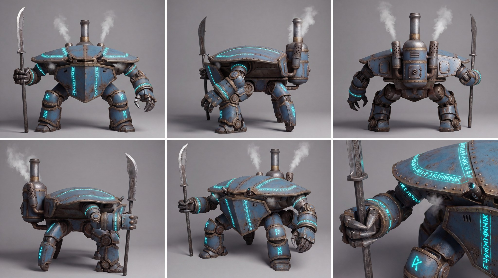
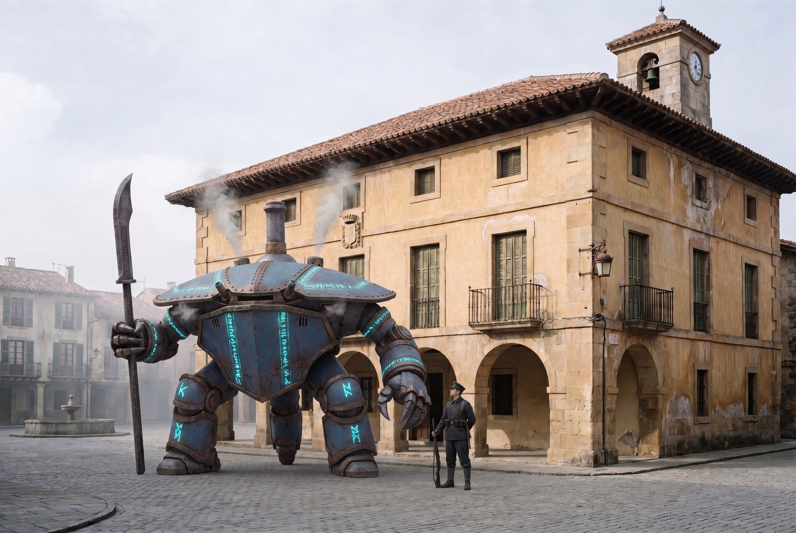
Класс и роль
Паро-магический голем класса РЫЦАРЬ (средний из трёх классов: оруженосец → рыцарь → паладин). Второе поколение: «„краб" – отличная машина второго поколения» (Книга 2, Глава 11). По роли — мех прорыва: «Вынужденная мера, для балансировки смещенного назад из-за котла центра тяжести, привела к неожиданному результату, сотворив отличный мех прорыва» (Книга 2, Глава 11). Прозвище «краб» («Владетель») употребляется чаще официального названия из-за формы корпуса.
Внешность и форма
- Массивный, приземистый: «„Владетель" – мех массивный, приземистый. Проигрывая большинству рыцарей в высоте, это одна из самых широких и длинных машин» (Книга 2, Глава 11).
- Корпус-панцирь, напоминающий краба — отсюда прозвище: «Из-за смещенного назад котла и длинного корпуса, очень напоминающего панцирь краба, его чаще так и называют „краб", а не „Владетель"» (Книга 2, Глава 11).
- Котёл смещён назад — определяет всю форму (длинный корпус, смещённый центр тяжести) (Книга 2, Глава 11).
- Модификация «озабоченный краб»: вариант с огнемётом, расположенным «в передней нижней части корпуса» — отсюда фривольное прозвище (Книга 2, Глава 11).
Конструкция и принцип работы
- Рыцарская компоновка (паро-магический котёл, рунные цепочки, кресло пилота, кристалл-активатор — общеклассовое, в усиленном рыцарском исполнении).
- Котёл смещён к корме, из-за чего центр тяжести ушёл назад; для балансировки нарастили тяжёлую лобовую броню — это и сделало машину мехом прорыва (Книга 2, Глава 11).
- Использует рыцарского типа узлы (трубы паропровода рыцарские — ср. с дефицитом таких узлов в академии у «Егеря»).
- Масляный демпфер в ноге (Книга 6, Эпилог) — в ходовой части ноги «Краба» стоит демпфер (амортизатор) на масле, требующий периодической замены масла: Бахал обслуживает машину, «поменять масло в демпфере» левой ноги, и роняет ключ «куда-то вглубь левой ноги „Краба"» (Эпилог). Первое прямое указание на масляный амортизатор ходовой как штатный обслуживаемый узел мехов (полость в ноге, куда проваливается уроненный инструмент).
Движение и походка
- Неповоротлив: «краб довольно неповоротлив» (плата за смещённый назад центр тяжести и массивность) (Книга 2, Глава 11).
- Несмотря на это, при преследовании оруженосцев «плотно висит у „драконов" на хвосте» — в прямом столкновении на скорости опасен; манёвренные лёгкие оруженосцы («Егерь») успевают уворачиваться от его светового копья только за счёт постоянной смены направления (Книга 2, Глава 11).
- Прямо названа тихоходность (Книга 3, Глава 25): в погоне «Яростных когтей» рыцарское копьё, по оценке ГГ, включает «минимум два „Краба", а они довольно тихоходные» — поэтому рыцари приотстают от своих манёвренных оруженосцев и преследуют отряд медленнее, чем оруженосцы-загонщики (Книга 3, Глава 25). Подтверждает: «Краб» — самый тихоходный из показанных рыцарей.
Размер и сравнения
- Ниже большинства рыцарей по высоте, но одна из самых широких и длинных машин (приземистый, вытянутый силуэт) (Книга 2, Глава 11).
- Слишком широк/массивен для узкого прохода — наглядный габаритный тест (Книга 7, Глава 12): у заброшенного форта пролом-въезд узок для рыцарей, и более компактный по сечению «Чёрный дракон» ГГ «ещё мог протиснуться, а „Краб" Бахала вряд ли» (Книга 7, Глава 12). Прямое подтверждение фирменного силуэта: по поперечному сечению «Краб» шире обычного рыцаря — пролезает не везде, где проходит «Чёрный дракон» (см. «Чёрный дракон»).
- Лобовая броня уровня паладина: «его лобовая броня сделает честь иному паладину» (Книга 2, Глава 11) — исключительно высокий для рыцаря показатель.
- Общий ориентир класса «рыцарь» — между оруженосцем и паладином (паладин «Феникс» = «высотой с трёхэтажный дом», см. «Феникс» / свод).
- Точные метры/тонны в тексте НЕ названы — размер дан только относительно (ниже рыцарей по высоте, шире и длиннее их; лобовая броня «как у паладина»).
Вооружение и защита
- Стандартная рыцарская рунная глефа (световое копьё). Световое копьё рыцаря примерно вдвое сильнее, чем у оруженосца: «Световое копье рыцаря раза в два сильней, чем таковое у оруженосцев» (Книга 2, Глава 11).
- Две картечные пушки в манипуляторах (в дополнение к глефе) — у конкретного экземпляра форта (обычная, не «озабоченная» модель): «обычная модель с двумя картечными пушками в манипуляторах в дополнение к стандартной рыцарской рунной глефе» (Книга 2, Глава 11). Картечь — для пехоты/сержантов, чтобы не тратить ману глефы.
- Модификация «озабоченный краб» вместо части этого несёт огнемёт (струя огнесмеси) в передней нижней части корпуса (Книга 2, Глава 11).
- Защита: лобовая броня «как у паладина» (мех прорыва), НО кормовая броня хуже, чем у некоторых оруженосцев — ключевая уязвимость: «его кормовая броня хуже, чем у некоторых оруженосцев» (Книга 2, Глава 11). На тренировке щиты-мишени «краба» «гораздо более прочные», чем у оруженосцев.
Развитие по томам
- Книга 7 (Главы 19, 22 — Южная марка / Вольная марка): манипуляторы «Краба» опознаны как узел сверх-тяжёлого паладина маркграфа Готмала; «Краб» Бахала — медлительный рыцарь сопровождения тихоходного парового экипажа. (1) Манипуляторы «Краба» как база паладинских (Глава 19): осматривая паладин Тьерна Готмала, ГГ опознаёт его руки — «Манипуляторы – привет от „Краба"» (см. Паладин маркграфа Готмала). То есть манипуляторы рыцаря-«краба» взяты за основу при штучной сборке паладина высшего класса (наряду с корпусом «Чёрного дракона» ×2 и уникальными ногами) — реконфирм характерного силуэта манипуляторов «Краба». (2) Сопровождение парового экипажа (Глава 22): «Краб» Бахала вместе с «Чёрным драконом» ГГ конвоирует гружёный паровой экипаж почтенного Торнара от форта к Степному Стражу; пара рыцарей вынуждена «плестись» под скорость тихоходного экипажа — «Тащимся, как черепахи», жалуется Бахал; ГГ отмечает, что «скорость парового экипажа далека даже до маршевой скорости рыцаря» (косвенный реконфирм: маршевая скорость рыцаря заметно выше скорости сухопутного паровоза/осадной бомбарды на его базе, см. свод). Боя «Краба» в кадре нет; вклад — реконфирм манипуляторов „Краба" как узла паладинской сборки + роль конвойного рыцаря, маршевая скорость рыцаря > парового экипажа. (Книга 7, Главы 19, 22)
- Книга 7 (Глава 12 — Вольная марка, заброшенный форт): «Краб» Бахала — разъездной рыцарь; НОВЫЙ габаритный факт: слишком широк, чтобы пролезть в узкий пролом-въезд форта (где проходит «Чёрный дракон»). Бахал на своём «Крабе» сопровождает ГГ (на «Чёрном драконе») к заброшенному форту северо-западнее Степного Стража. У форта проход для рыцарей узок: «Мой „Чёрный дракон" ещё мог протиснуться, а „Краб" Бахала вряд ли» (Глава 12) — реконфирм фирменного широкого, приземистого панцирного силуэта: по поперечному сечению «Краб» крупнее обычного рыцаря и не везде проходит (см. «Чёрный дракон», свод). Боя нет; вклад — прямой габаритный ориентир (сечение „Краба" > сечения „дракона") + реконфирм „Краба" как разъездной машины Бахала. (Книга 7, Глава 12)
- Книга 7 (Глава 5 — Вольная марка, лагерь мятежников у источника): «Краб» снова подтверждён как массовый рыцарь наёмников Вольной марки — командирская/постовая машина мятежных отрядов. (1) Лазурный «Краб» капитана «Синих Змей» (Альер Денар): во время ночной стражи в лагере мятежников капитан небольшого (пять машин) отряда «Синие Змеи» сдаёт пост, выбираясь из покрашенного в лазурный цвет «Краба»: «„Пост сдал!" – шутливо отсалютовал Ранору Альер Денар, выбираясь из покрашенного в лазурный цвет „Краба"» (Глава 5). То есть «Краб» — рядовая капитанская машина даже у мелкого наёмного отряда; лазурная (синяя) раскраска — цвета «Синих Змей». (2) Рыцарь Ранора Авитра — вероятно «Краб»: капитан «Яростных Когтей» Ранор Авитр прямо назван рыцарем (не магом, в отличие от фольхов), а его машина по тексту — просто «рыцарь» (модель не названа); по established-данным «Краб» — основной рыцарь его копья (ср. Книга 3, Глава 25: «минимум два „Краба"» в копье «Яростных Когтей»), так что под безымянным «рыцарем» Ранора, к которому он подходит и в кресле которого вызывает ГГ по амулету-связи, скорее всего тоже «Краб» — в тексте прямо не названо. Боя с участием «Краба» в кадре нет (разгром мятежников прошёл почти без стрельбы); вклад — реконфирм „Краба" как ходового рыцаря наёмных отрядов Вольной марки + лазурная раскраска экземпляра «Синих Змей». (Книга 7, Глава 5)
- Книга 6 (Главы 25, 26, Эпилог — Вольная марка, Степной Страж): «Краб» Бахала — конвойно-разведывательная и городская машина; НОВАЯ конструктивная деталь: демпфер в ноге, требующий замены масла. (1) «Краб» Бахала как разведчик/рыцарь пустоши (Глава 25): Бахал на своём рыцаре («рыцаря Бахал спрятал и того дальше, надёжно замаскировав машину») ведёт скрытное наблюдение за людьми императора в предгорьях; неприкосновенный запас воды на переход «надёжно спрятан в кабине рыцаря» — реконфирм «Краба» как дальноходной автономной машины пустоши с запасом в кокпите. (2) «Краб опять два» — опознание возвращения Бахала (Глава 26): появление второго «Краба» на стоянке базы служит Первой сигналом, что Бахал вернулся раньше срока («А почему „Крабов" опять два? Неужели Бахал вернулся?») — то есть «Краб» — узнаваемый по силуэту рыцарь, и в отряде их штатно несколько. (3) «Краб» в операции захвата: при срыве захвата Первой «Краб» Бахала вместе с двумя «Чёрными драконами» «неторопливо громыхал» в погоне за бегущими по узким улочкам людьми; в самой ловле тяжёлые машины бесполезны, Бахал докладывает «Гарн, дальше без нас» (реконфирм: рыцарь не приспособлен для задержания людей в тесных переулках). (4) НОВАЯ конструктивная деталь — демпфер в ноге (Эпилог): Бахал обслуживает «Краба», меняя масло в демпфере левой ноги — «Звякнул ключ, уроненный куда-то вглубь левой ноги „Краба". Пытавшийся поменять масло в демпфере Бахал ругнулся» (Эпилог). Первое прямое указание, что в ногах «Краба» (и, по-видимому, мехов вообще) стоят масляные демпферы (амортизаторы хода), требующие периодической замены масла, — конкретный узел ходовой части и пункт регулярного обслуживания. Вклад чанка — конвойно-городская роль „Краба" Бахала + новый узел: масляный демпфер в ноге. (Книга 6, Главы 25, 26, Эпилог)
- Книга 6 (Главы 12, 13 — столица Эдан, бой на площади перед Башней): «Краб» — третий (тихоходный) рыцарь мятежного полукопья, добит магом и взорван Синим пламенем; снова реконфирмированы тихоходность, плоский длинный корпус и кормовая уязвимость. (1) В мятежном полукопье: среди трёх рыцарей, удерживающих площадь перед Башней, ГГ опознаёт «Краба» рядом с двумя „Чёрными драконами" (плюс полевая пушка): «Три рыцаря… „Чёрный дракон", „Краб" и одна неизвестная машина» (Глава 12). (2) Отстаёт из-за тихоходности: в погоне за приманкой-ГГ «более медлительный „Краб" сильно от них [драконов] отстал», за поворот в засаду «не успевший заползти в „крабовую ловушку"» (Глава 12) — реконфирм established-тихоходности (самый медленный из показанных рыцарей). (3) Перекрытый сектор огня: в узости бульвара «„Краб" пока что молчит, драконы полностью перекрыли ему сектор стрельбы» — длинный корпус сзади колонны не может вести огонь через идущих впереди «драконов». (4) Гибель — Синее пламя от мага: «Краба» берёт на себя маг-подмастерье Фоган; результат — «развороченный корпус „Краба" с огромной оплавленной дырой в длинном „панцире", и оторванными взрывом манипуляторами завалился на дом, разрушив парочку этажей… от пилота мало что осталось» (Глава 13). ГГ отмечает: «Обычно когда нисходит Синее пламя от боевой машины мало что остаётся. Впрочем, ремонтировать „Краба" теперь бесполезно, проще построить нового» — даже после детонации длинный панцирный корпус „Краба" относительно цел (необычная живучесть силуэта), но машина невосстановима. Реконфирм фирменного длинного панцирного корпуса. Боевой вклад чанка — „Краб" в роли тихоходного замыкающего рыцаря городского копья, гибель от Синего пламени. (Книга 6, Главы 12, 13)
- Книга 5 (Главы 22–23 — Степной Страж, возвращение из похода): «Краб» показан в движении при возвращении отряда. Из ложного наступления к разрушенной долине возвращаются два голема — «Краб» под управлением Бахала и «Чёрный дракон» Абелора Анка; они аккуратно маневрируют между выстроенными на стоянке машинами и приседают в «спящий режим», «длинные ноги паро-магических машин слегка согнулись» (Глава 22). Повреждений нет, рейд прошёл гладко. Сразу после этого Бахал по приказу ГГ пересаживается с «Краба» на «Молнию» для скоростной погони за шпионкой Бринной (Глава 23) — то есть «Краб» подтверждён как тихоходный рыцарь, неподходящий для гонки по городу (ср. established-тихоходность). Боя с участием «Краба» в этом чанке нет. (Книга 5, Главы 22, 23)
- Книга 5 (Главы 15–16 — Степной Страж, пополнение отряда и тайная операция): «Краб» подтверждён как распространённый рыцарь дружин северных домов, причём в фирменной «озабоченной» модификации. (1) Маркиз Андер Инадр передаёт отряду ГГ «Чёрный феникс» шесть рыцарей-пополнения; два из них — «Владетели», они же „крабы", прямо в «озабоченной» модификации с огнемётателем на причинном месте: «Два других рыцаря были уже привычными „Владетелями", они же „крабы". Причём в его „озабоченной" модификации с огнеметателем на причинном месте» (Книга 5, Глава 15). Бахал выбирает себе именно «Краба» («остановлюсь на „Крабе"»), требуя лишь перекрасить яркую парадную раскраску. Подтверждает, что «озабоченный краб» — ходовой серийный вариант, а не курьёз. (2) «Краб» в тайной операции у тюрьмы (Глава 16): при выходе баллея на ложное наступление со стоянки «Чёрных фениксов» демонстративно «исчезло два рыцаря: „Дракон" и „Краб"» (часть маскировки — ГГ тайно остался в городе). То есть один из новополученных «Крабов» уходит с отрядом как часть отвлекающего манёвра; боя нет. (Книга 5, Главы 15, 16)
- Книга 5 (Пролог — Аркнейский перевал; видение прошлого-будущего ГГ): «Краб» — личная боевая машина самого ГГ (Гарна Велька) в эпизоде последней обороны горного перевала против древолюбов. (1) Подтверждена и уточнена модификация «озабоченный краб»: огнемёт расположен в передней нижней части корпуса буквально на «причинном месте» — «торчавший на причинном месте „Краба" огнеметатель. Из-за него эту модель в шутку называют „Озабоченным Крабом"» (Книга 5, Пролог). Это самое наглядное подтверждение происхождения фривольного прозвища (ср. описание модификации в Книге 2). (2) Расходники огнемёта: бьёт огнесмесью из баков, которые в конце боя пусты — «огнесмесь нужна, баки пустые»; ихор (для котла) при этом ещё оставался — то есть огнесмесь огнемёта и ихор паропривода расходуются раздельно (Книга 5, Пролог). (3) Кабина обогревается: внутри «Краба» (паро-магического голема) тепло от работающего паровика; выбравшись из кабины на мороз, ГГ зябнет — «Выгнав принесённое из кабины паро-магического голема тепло, холод заставил меня зябко поёжиться» (Книга 5, Пролог). Подтверждает общеклассовый факт: котёл греет кабину пилота. Рядом в снегу — занесённый остов погибшего «Красного Дракона» (см. «Красный дракон»), из баков которого техник Борода ищет огнесмесь для «Краба». (Книга 5, Пролог)
- Книга 4 (Глава 20 — рейд баллея, разгром авангарда альвов): «Краб» подтверждён как рыцарь-вожак отдельного копья сводного баллея («Аспид»). После боя демонстрируется фирменный приём добивания: чтобы убедиться, что прикинувшийся мёртвым ликан не оживёт, «Краб» „Аспида-1" наступает на тело ногой — «„Краб" „Аспида-1" наступил на ближайшее тело ликана. – Все, теперь точно не оживет» (Глава 20). Наглядный ориентир массы тяжёлого рыцаря: одного шага ногой достаточно, чтобы гарантированно раздавить притворщика-зверочеловека. Помимо «Краба» Бринны («Мантикора»), в баллее есть как минимум ещё один «Краб» — командирская машина копья «Аспид». (Книга 4, Глава 20)
- Книга 4 (Главы 12–17 — контракт-конвой, кукловод, оборона Стража): «Краб» Бринны Канар впервые в реальном боевом деле в составе отряда. (1) В конвое к побережью «Краб» ведёт ведомое полукопьё («змейки» на «Арбалетчиках») (Глава 12). (2) Бой с химерой-«кукловодом» (Глл. 12): «Краб» вместе с «Арбалетчиками» работает световыми копьями по мешкам с заражённым грузом (огнемётов у них нет); затем полукопьё отводят на холм для контроля территории — «Два „Арбалетчика" и „Краб" потопали в сторону холма» (Глава 12). (3) Оборона Стража (Глл. 16–17): при ночной тревоге «Краб» прибывает к бирже первым из машин «змеек» («появился спешащий к бирже „Краб", а за ним и два „Арбалетчика"»), затем под началом Бринны идёт к северному форту, маневрирует у стен, уводит «Арбалетчиков» обратно в город по приказу ГГ — «„Краб" направился к въезду в город, за ним, словно гусята за гусыней, послушно двинулись „Арбалетчики"» (Глава 17). Машина окончательно показана как рабочий рыцарь-вожак лёгкого полукопья: тихоходный, но командно ведёт за собой манёвренных оруженосцев. (Книга 4, Главы 12, 16, 17)
- Книга 4 (Главы 8–11 — Степной Страж): «Краб» («Владетель») входит в стартовый парк наёмного отряда ГГ «Чёрный феникс» как его единственный рыцарь-трофей (не считая «Протектора» ГГ). Бахал с «Ястребами» приводит из пустошей долю отряда — «рыцарь и два оруженосца»; рыцарь — именно «Краб», который вместе с оруженосцем-«Лучником» сворачивает к гостинице «Мечта» (Глава 8). Теперь у «Фениксов» восемь машин (средний отряд), «Краб» — рыцарское ядро наряду с «Протектором». Назначен новому рыцарю отряда — островитянке лассе Бринне Канар (Глава 9). Ключевой новый факт о машине — оценка синхронизации из уст опытного рыцаря-островитянки: «„Краб" мне совершенно незнаком. Уровень синхронизации неплох, но по ощущениям все же ниже чем на привычном мне „ДК-3-2"» (Глава 11). То есть по «отзывчивости»/уровню синхронизации эданский «Краб» уступает островному рыцарю «ДК-3-2» (аналог имперского «Мамонта», 3-е поколение, 2-й класс; см. свод) — редкое прямое сравнение эданской и островной рыцарской техники. Бринна осваивает «Краба»: возится с ним в ремонтном «муле», самостоятельно забирается в кабину и спускается по корпусу (Глава 10); просит практические тренировки, т.к. «Краб» для неё непривычен (Глава 11). Перед первым выходом отряда (контракт-конвой) «Краб» — одна из машин выступающего «копья» рыцарей и оруженосцев (Глава 11). (Книга 4, Главы 8, 9, 10, 11)
- Книга 3 (Главы 18–23 — Вольная марка, тайная долина): «Краб» («Владетель») оказывается массовой машиной наёмников/дружин Вольной марки — встречается дважды. (1) Среди четырёх рыцарей тайной долины (рудник = руины древних) стоит трофейный «Краб»; ГГ при формировании отряда из захваченных машин оценивает его как «выглядел неплохо», но отказывается брать третьего рыцаря: «Сдвинуть рыцаря с места – это одно, а полноценно использовать – совсем другое» — у отряда некому полноценно пилотировать ещё одного тяжёлого меха (Глава 21). (2) «Краб» — личная машина капитана наёмного отряда «Красные Вороны» Сандора Ларана (Глава 22): корпус «Краба» настолько плоский сверху, что капитан встаёт на нём в полный рост с биноклем, осматривая горизонт («Выбравшись на практически плоский корпус „Краба", он встал в полный рост») — наглядно подтверждает приземистый, широкий панцирный силуэт модели. В завязавшемся бою двух отрядов наёмников «Краб» гибнет дважды показательно: засадный «Краб» «Воронов» получает «пучок световых копий» в борт на смешной дистанции — на 5–6-м попадании оторван левый манипулятор, машину перекашивает; при попытке отойти добивающий залп рушит рунные цепочки, из всех щелей валит пар, распахнувшийся люк «плюнул вверх длинный белый столб» — пилот сварился заживо в кабине, не сумев выбраться (повреждённый «Краб» при этом устоял на ногах, годен на запчасти). Чуть позже другой «Краб» (возглавлявший атакующий клин засады) от «пошедшего в разнос паровика» взрывается шаром Синего пламени (Глава 23). Подтверждает ключевую уязвимость рыцаря: горячий пар при повреждении паропровода + «разнос» огненного кристалла = смерть пилота (ср. свод). (Книга 3, Главы 18, 21, 22, 23)
- Книга 3 (Глава 25 — погоня «Яростных когтей»): «Краб» в третий раз подтверждён как распространённая рыцарская машина наёмников. В рыцарском копье отряда «Яростные когти» (связан с первым принцем) — «минимум два „Краба"»; ГГ прямо называет их «довольно тихоходными», из-за чего рыцари отстают от своих оруженосцев в погоне. Складки местности мешают рассмотреть остальные машины копья (Книга 3, Глава 25).
- Книга 2: На итоговой тренировке полевого лагеря единственный «краб» («Владетель») форта — личный рыцарь ландкомтура/коменданта Онгра — выступает «сюрпризом» мастера-наставника Толдокара против команды оруженосцев Велька (Глава 11). «Краб» (обычная модель, две картечные пушки + глефа) преследует «Зелёных драконов» Мирры и Шилин, затем переключается на манёвренного «Егеря» Велька и почти загоняет его в тупиковый лог. ГГ использует «краба» приманкой: пока рыцарь увлечён погоней за «Егерем», четыре оруженосца команды заходят ему в слабую корму и подбивают (дым + сигнальные ракеты = условное уничтожение). Шестёрка оруженосцев (4 первокурсника) «ловко разделала одиночного рыцаря» — выдающийся результат, отмеченный наставниками Толдокаром и Гойр с наблюдательной башни.
Известные экземпляры и пилоты
- Два «Краба» «озабоченной» модификации (огнемёт на «причинном месте») переданы отряду ГГ «Чёрный феникс» из дружин северных домов (через маркиза Андера Инадра, по приказу третьего принца) как компенсация за утраченные машины; Бахал выбирает себе одного из них (под перекраску). Один из этих «Крабов» уходит с баллеем как часть отвлекающего манёвра у тюрьмы биржи (Книга 5, Главы 15, 16).
- «Краб» — рыцарь-трофей наёмного отряда «Чёрный феникс» (доля из похода «Ястребов», Книга 4, Глава 8). Закреплён за лассой Бринной Канар — рыцарем-островитянкой (24 года, лучшая выпускница Королевского колледжа, 4 года службы в Компании Южных морей, 5 подтверждённых побед в колониальной войне; привычная ей машина — островной рыцарь «ДК-3-2»). Бринна находит синхронизацию «Краба» «неплохой, но ниже» привычного «ДК-3-2» и просит тренировок (Книга 4, Главы 9, 11).
- «Краб» полевого форта академии Тирбоза (обычная модель, две картечные пушки + рунная глефа) — принадлежит ландкомтуру/коменданту Онгру (старшему мастеру-наставнику форта, действующему рыцарю); подбит на тренировке командой Велька (Книга 2, Глава 11).
- Модификация «озабоченный краб» (огнемёт спереди-снизу) — упомянута как существующий вариант; в форте такого экземпляра нет.
- Трофейный «Краб» тайной долины (Вольная марка) — один из четырёх рыцарей долины; ГГ оставляет его на месте (некому пилотировать) (Книга 3, Глава 21).
- «Краб» капитана «Красных Воронов» Сандора Ларана — командирская машина с плоским верхом корпуса (капитан встаёт на нём в полный рост с биноклем); уничтожен в бою наёмных отрядов, пилот заживо сварен паром в кабине (Книга 3, Главы 22, 23).
- Ещё как минимум один «Краб» в составе засадного отряда «Воронов» взорван Синим пламенем (Книга 3, Глава 23).
- «Минимум два „Краба"» в рыцарском копье отряда «Яростные когти» (красная раскраска, связан с первым принцем Сандором Олном) — преследуют отряд ГГ; названы тихоходными (Книга 3, Глава 25).
«Воин»
ПЕРВОЕ появление класса броненосца «Воин» в серии — Книга 8, Глава 28 («Вестники беды», Сонгаль: доклад Зуми о морском поражении). Это первый боевой корабль в реестре кампмашин (категория warship). Корабль «в металле» в кадре не показан — фигурирует только в докладе о разгроме флота князя всех князей; конструктивных деталей корпуса/орудий текст пока не даёт.
Класс и роль
Броненосец Компании Южных морей класса «десятитысячник типа „Воин"»: «Десятитысячники типа „Воин"» (Книга 8, Глава 28). «Десятитысячник» — указание на водоизмещение порядка десяти тысяч тонн (косвенный размерный класс; см. «Размер»). Роль — тяжёлый бронированный артиллерийский корабль линии, решающее средство борьбы за господство на море; именно появление броненосцев в Лазурном море переломило морскую кампанию в пользу Компании.
Стратегическая ценность — исключительная: всего двух броненосцев типа «Воин» хватило, чтобы наголову разбить флот князя всех князей Осомана Сухарата при минимальных собственных потерях (см. «Развитие по томам»). После этого «про свободу действий на море можно забыть. Опираясь на броненосцы, Компания может придумать многое, на что после потери флота в Нильме не решалась» (Глава 28) — то есть пара броненосцев возвращает Компании инициативу на море (угроза высадки на восточном побережье, морская блокада, беспрепятственный подвоз подкреплений).
Внешность и форма
- Прямого портрета корпуса/надстроек/орудийных башен текст НЕ даёт (корабль в кадре не показан) — в тексте только по классу: бронированный паровой корабль («броненосец»), в отличие от деревянных линейных кораблей и фрегатов флота князей (которые он и разбил).
- Цвет/флаги/эмблемы не описаны.
Конструкция и принцип работы
- Конструктивно — бронированный паровой военный корабль (броненосец); внутренней компоновки, типа брони, числа и калибра орудий, движителя текст НЕ раскрывает (в тексте не описано).
- Уязвимость к морским минам — кросс-факт (Глава 27): прямо сказано, что алхимический заряд морской мины (та же «алхимическая дрянь», что в осадных бомбах, «в разы мощнее пороха») достаточно мощен, чтобы потопить броненосец — «такая мина и броненосец может на дно отправить» (Книга 8, Глава 27). То есть штатная корабельная броня «Воина» не спасает от подрыва мощной морской мины под корпусом.
- Прочие классы кораблей театра для сравнения (не броненосцы): линейные корабли и фрегаты флота князя всех князей (деревянные, парусно-/паровые — тип не уточнён), пароходофрегат Компании (один потерян в бою). Броненосец «Воин» стоит на ступень выше их по защите и боевой устойчивости.
Движение и походка
- Самоходный паровой корабль (мореходный). Манёвренных/ходовых деталей текст не даёт. После боя оба «Воина» получили лишь незначительные повреждения и «на какое-то время встанут на ремонт» (Глава 28) — то есть боеспособность восстанавливается быстро, корабли не выведены из строя надолго.
Размер и сравнения
- «Десятитысячник» — единственный прямой размерный ориентир: класс водоизмещения ≈ десять тысяч тонн (Книга 8, Глава 28). Точные длина/ширина/осадка/высота борта в тексте НЕ названы — в тексте только относительно (крупный тяжёлый корабль линии).
- Сравнительная боевая «масса»: два «Воина» уничтожили линейный корабль «Доблесть» (приведён в Сонгаль избитым) + шесть фрегатов флота князей, остальной флот ушёл повреждённым к Салвалу — при потере Компанией всего одного пароходофрегата и двух броненосцев с «незначительными повреждениями» (Глава 28). Размен наглядно показывает огневое и броневое превосходство «десятитысячника» над деревянными кораблями.
Вооружение и защита
- Защита — главная классовая черта (броненосец): бронированный корпус, выдерживающий артиллерию деревянных линкоров/фрегатов противника (по итогу боя оба «Воина» получили лишь незначительные повреждения). Конкретный тип/толщина брони текст не даёт.
- Вооружение — корабельная артиллерия (по классу броненосца); число, калибр и тип орудий в тексте НЕ названы — в тексте не описано.
- Уязвимость — мощная морская мина (алхимический заряд) способна потопить броненосец (Глава 27; см. «Конструкция»). Именно на этом строится план ГГ и Зуми с фиктивным минированием портов (бочки-обманки + несколько настоящих мин) — чтобы броненосцы Компании не сунулись к гаваням Талхала (Глава 28).
Развитие по томам
- Книга 8 (Главы 27, 28 — Талхал, Сонгаль и Долина гейзеров): ПЕРВОЕ появление броненосца «Воин» — переломный фактор морской кампании, известный из доклада о разгроме флота князей. (1) Уязвимость к мине заявлена заранее (Глава 27): при разборе трофейных великогартских морских мин ГГ отмечает, что их алхимический заряд «в разы мощнее пороха» и «такая мина и броненосец может на дно отправить» — первый намёк на класс броненосца как на цель сверхмощного заряда. (2) Разгром флота князей двумя «Воинами» (Глава 28) — КЛЮЧЕВОЕ: в Сонгаль приходит избитый линейный корабль «Доблесть» и несколько уцелевших кораблей флота Осомана Сухарата. Зуми одним словом объясняет причину — «Броненосцы!». Потери князей: «Доблесть» (тяжело повреждена), шесть фрегатов потоплено, остальной флот ушёл повреждённым к Салвалу. Потери Компании: один пароходофрегат; два броненосца — „десятитысячники типа „Воин"" — получили лишь незначительные повреждения. Это всё, что есть у Компании на театре («Два из…» — «Двух»), но и двух хватило, чтобы вернуть инициативу на море. (3) Стратегические последствия: Компания вновь может угрожать высадкой на восточном побережье, морской блокадой и подвозом подкреплений; ГГ форсирует фиктивное минирование портов (Кован, Сонгаль и др.), чтобы броненосцы не подходили к гаваням. Корабль «в металле» в кадре не показан; вклад — введение первого боевого корабля (броненосец «Воин», класс „десятитысячник"), установление его как переломного оружия морской войны (2 шт. разбили флот князей) и его единственной показанной уязвимости — мощной морской мины. (Книга 8, Главы 27, 28)
Известные экземпляры и пилоты
- Два броненосца типа «Воин» Компании Южных морей (Книга 8, Глава 28) — единственные броненосцы Компании на дхивальском театре на этот момент; разбили флот князя всех князей в Лазурном море, получив лишь незначительные повреждения, после чего встают на короткий ремонт. Имена отдельных кораблей (кроме обозначения класса «Воин») и командиры в тексте НЕ названы.
- Прежний расклад на море: до появления броненосцев Компания «после потери флота в Нильме» не решалась на активные действия — то есть «Воины» переброшены/введены недавно и резко изменили баланс (Глава 28).
- Производитель/верфь «Воина» в тексте НЕ названы (корабль Компании Южных морей / Великогартии).
«Грифон»
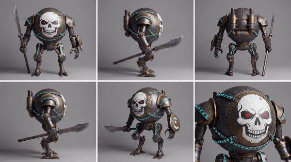
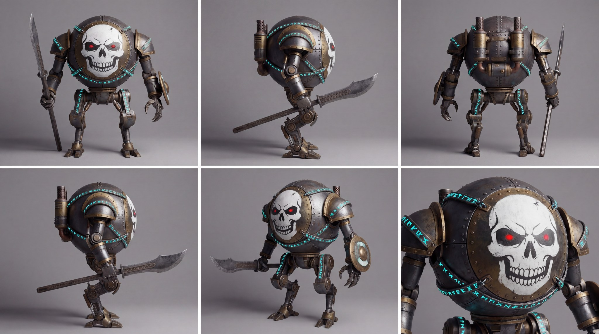
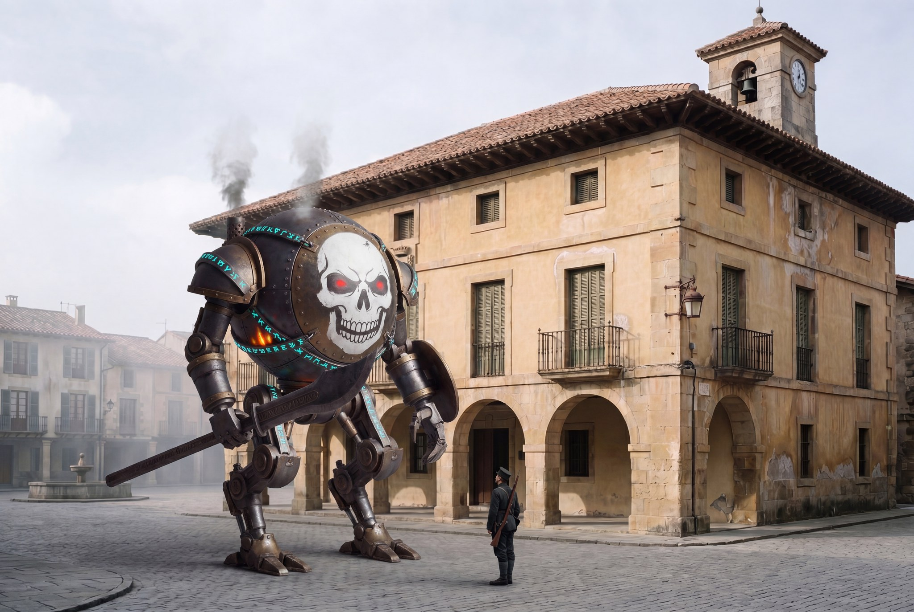
Первое появление модели «Грифон» из сид-списка — Книга 2, Глава 16 (на турнире академий, в иллюзии боя рода Никор). В тексте показан только издалека, через объёмную иллюзию схватки; конструктивных подробностей мало, форма дана относительно.
Класс и роль
Паро-магический голем класса ОРУЖЕНОСЕЦ — машина капитана команды-чемпиона академии Веснота (семь лет подряд берущей Кубок Превосходства): «„Грифон"… Капитан команды Веснота» (Книга 2, Глава 16). Капитан назван в Главе 23: Блеор Интан, внук герцога Интана («Тот самый вестнотец на раскрашенном под череп „Грифоне"… Блеор Интан – капитан команды Веснота, а заодно и внук герцога Интана»). Таким образом «Грифон» — машина высокородного капитана сильнейшей команды; используется в индивидуальных схватках турнира (один из трёх участников Веснота в личном зачёте). То, что главный пилот сильнейшей команды выбрал именно «Грифона», а не «дракона», косвенно говорит о высоком классе модели.
Внешность и форма
- Шарообразный корпус — главный опознавательный признак: «Похожий на шар „Грифон"» (Книга 2, Глава 16). Силуэт округлый, компактный — резко контрастирует с клиновидным корпусом «Зелёного дракона», против которого он бьётся.
- Форма корпуса уточнена в дуэли с ГГ (Глава 24): «похожий на идеальный шар корпус „Грифона"» — то есть силуэт близок к правильной сфере; именно по этому шарообразному корпусу ГГ опознаёт машину издалека (Книга 2, Глава 24).
- Раскраска экземпляра капитана Веснота: вместо привычного значка-баннера корпус полностью выкрашен в виде скалящегося белого черепа с красными глазами — «полностью выкрашен в виде скалящегося белого черепа с красными глазами. Слишком вызывающая, я бы даже сказал наглая раскраска» (Книга 2, Глава 16). ГГ отмечает, что на турнирах академий такую вольную раскраску обычно не практикуют (допускается лишь маленький личный знак на удачу); полная боевая раскраска корпуса — традиция полноправных рыцарей/оруженосцев клановых дружин (свой-чужой в Малых войнах).
- Раскраска как тактический минус (Глава 24): яркий белый череп сильно демаскирует машину на дистанции — «Со стороны этот белый череп может и выглядит красиво. Но на расстоянии прилично так демаскирует» (Книга 2, Глава 24). ГГ замечает «Грифона» за ~500 м именно по приметной раскраске и формулирует общий принцип: «не стоит красить мех в попугайские цвета»; в пограничье предпочитают серый с лёгкой зеленцой (мода со времён Железного маркграфа), а Великая война вообще сведёт раскраску мехов к маскировочным цветам.
Конструкция и принцип работы
- Базовая компоновка оруженосца (паро-магический котёл, рунные цепочки, кресло пилота, кристалл-активатор — общеклассовое; конкретных узлов «Грифона» текст не приводит).
- Детали внутреннего устройства, привода, паросистемы по-прежнему не показаны изнутри — машина видна только снаружи.
- Первый взгляд в кабину „Грифона" (Книга 5, Главы 22–23): на стоянке «Фениксов» Онилию находят без сознания в кабине одного из новых „Грифонов" (её ударили по голове во время синхронизации). Раскрыты детали кокпита и люка (общеклассовые, но показаны именно на «Грифоне»):
- Освещение кабины — встроенный «неубиваемый» магический светильник: «Стандартный практически „неубиваемый" светильник на основе магического кристалла даёт достаточно света, чтобы оценить картину» (Глава 22).
- Люк запирается изнутри и открывается снаружи только двумя людьми с двумя ключами: чтобы вытащить оглушённую Онилию, ГГ и Бахал вскрывают запертый люк двумя «универсальными торцевыми ключами на тридцать» (похожи на ломики) — «открыть люки снаружи можно, но довольно сложно. Необходимо два стандартных ключа и два человека. Один просто не сможет одновременно повернуть ключи» (Глава 22). В люке есть небольшое отверстие под ключ-рычаг; механизм щёлкает при синхронном повороте. Это компромисс между уязвимостью (вскрытие снаружи) и необходимостью извлекать раненого пилота (см. свод).
- Синхронизация для проверки систем: Онилия «проводила синхронизацию с машиной, чтобы проверить, как работает визор „Голиафа"» (Глава 22) — то есть синхронизация нужна не только для боя, но и для тестовой проверки оборудования (здесь — визора/обзорной системы; «Голиаф» — по-видимому, имя/обозначение конкретного экземпляра либо узла, в тексте не пояснено).
- Обзор/визор (Глава 24): «Угол обзора у „Грифона" чуть лучше, чем у „Драконов", но ненамного» (Книга 2, Глава 24). То есть сектор обзора у «Грифона» немного шире стандартных ~90° «драконов» (но далеко не как у «Егеря» с его 130–140°). Общий вывод ГГ: «Мехи без прикрытия в целом довольно слеповаты» — у «Грифона» сохраняются слепые зоны по бортам/корме, чем ГГ и пользуется, подбираясь в слепую зону.
Движение и походка
- В бою с «Зелёным драконом» «Грифон» играет от манёвра, не вступая в перестрелку лоб в лоб: «оба решили играть от маневра, не рискуя затевать перестрелку лоб в лоб» (Книга 2, Глава 16).
- Движется по полю против часовой стрелки (его противник — по часовой), активно маневрирует у ключевой точки (Книга 2, Глава 16).
- Скорость и манёвр против «Егеря» (Книга 2, Глава 24): «Грифон» немного быстрее «Егеря» («Скорость „Грифона" несколько больше»), но это нивелируется тем, что «Егерь» выбирает более короткий маршрут к точке. В ближнем бою (когда дело дошло до глеф) «Грифон» под управлением неопытного капитана действует неуклюже: размашистые тягучие удары глефой бьют мимо, лезвие «глубоко впивается в рыхлую землю» — типичная для мехов слабая моторика рук (см. свод).
- Абсолютный скоростной ориентир — почти как «Молния» (Книга 6, Глава 24): «Грифон» прямо назван очень быстрой машиной, уступающей по скорости лишь эталонной „Молнии" — «Все же „Грифон" довольно быстрая машина. Не „Молния", конечно, но весьма близко к этому» (Книга 6, Глава 24). То есть среди оруженосцев «Грифон» — один из самых скоростных, приближается к «Молнии» (4-е поколение, см. «Молния»). Убегающий «Грифон» отрывается от рыцаря-«дракона» так, что от него «осталось только постепенно оседающее пыльное облако».
Размер и сравнения
- Прямых габаритов (метры/тонны) в тексте нет; форма дана только относительно — «похожий на шар», в отличие от клиновидного «Зелёного дракона».
- В тексте только относительно/неточно: класс оруженосца → сопоставим по размеру с прочими оруженосцами турнира.
Вооружение и защита
- На турнире — стандартная рунная глефа (световое копьё) + навешенные щиты-мишени (общетурнирная условность, см. свод).
- В показанном эпизоде (Глава 16) «Грифон» и «Зелёный дракон» почти одновременно стреляют, но не попадают, после чего оба отступают и переходят к манёвренной дуэли.
- Щиты-мишени в дуэли с ГГ (Глава 24): у «Грифона» — бортовой щит-мишень, закреплённый на предплечье левого манипулятора (ГГ распарывает его глефой на проходе: «Острие глефы проходит ровно по центру бортового щита „Грифона", закрепленного на предплечье левого манипулятора»), плюс щит на другом боку (поражён вторым проходом). Поражение бортового щита засчитывает поражение в турнире (взрыв дымовых шашек, взлёт сигнальных ракет). ГГ отмечает, что в настоящем бою рунное лезвие вместо щита отсекло бы манипулятор, но это не лишило бы мех боеспособности (Книга 2, Глава 24).
- Личная броня модели в турнире роли почти не играет (щиты-мишени) — оценить её по тексту нельзя.
Развитие по томам
- Книга 6 (Главы 24, 26 — Вольная марка, Степной Страж): «Грифон» как учебно-боевой оруженосец пажей „Чёрных фениксов" — подробный учебный бой троих „Грифонов" против рыцаря (Гл. 24) + посыльная роль (Гл. 26). (1) Учебный «бой трёх оруженосцев против рыцаря» (Глава 24): трое пажей на «Грифонах» должны «задержать» «Чёрного дракона» ГГ в пустоши у форта. Подтверждены и расширены ходовые/боевые качества: «Грифоны» выстраиваются треугольником («полукопьё оруженосцев из трёх „Грифонов"»), держат строй, идут «неплохо» (опыт пажей средний — «неплохо для пажа, и недостаточно для оруженосца»). Несут тренировочно-турнирный комплект — навесные щиты-мишени по бортам + ослабленные тренировочные глефы: при достаточном числе попаданий в щит взрываются дымовые шашки и взлетают сигнальные ракеты-фейерверк (условное уничтожение). ГГ-«дракон» бьёт световым копьём по бортовому щиту «Грифона»; «не будь щита, я бы промахнулся» (щит-мишень крупнее самой машины). Скорость — ключевой новый ориентир: убегающий «Грифон» назван очень быстрой машиной — «Все же „Грифон" довольно быстрая машина. Не „Молния", конечно, но весьма близко к этому» (Глава 24). То есть по скорости «Грифон» уступает только эталонной «Молнии» (4-е поколение, см. «Молния»), приближаясь к ней — самый быстрый из показанных оруженосцев после «Молнии». Реконфирм established-тезиса (Книга 2): «Грифон» играет от манёвра и скорости. (2) Посыльная роль (Глава 26): в день операции захвата Первой ГГ рассылает пятёрку пажей с приказами по фортам города — паж Атрэ Пинар берёт „Грифона" и мчится «пулей» к первому форту; «Грифон» подтверждён как быстрая курьерская машина для срочной доставки приказов. (3) Тактика пажей-оруженосцев: ГГ напоминает теорию (от лассы Гойр) — оруженосцам против рыцаря следует не ходить вместе, а заранее разделиться и нападать с разных сторон («бей-беги»), используя превосходство в скорости/манёвре; одиночному «Грифону» против рыцаря «без шансов». Новых конструктивных деталей нет; вклад — прямой скоростной ориентир (близко к „Молнии"), строй „полукопьё" из трёх машин, тренировочный комплект и тактика оруженосцев против рыцаря. (Книга 6, Главы 24, 26)
- Книга 5 (Главы 22–23 — Степной Страж, диверсия Бринны): первый взгляд внутрь кабины „Грифона". Один из трёх новых «Грифонов» отряда стоит на стоянке, наполовину перекрашенный; в его кабине Бринна оглушает Онилию (та проводила синхронизацию для проверки «визора „Голиафа"»), ударив тяжёлым инструментом по голове. ГГ по амулету-связи находит Онилию в кабине, после чего они с Бахалом двумя торцевыми ключами вскрывают запертый снаружи люк и вытаскивают раненую. Раскрыты конструктивные детали (общеклассовые, показанные на «Грифоне»): магический светильник-кристалл в кабине; люк, запираемый изнутри и вскрываемый снаружи лишь вдвоём двумя ключами; синхронизация как способ тестовой проверки оборудования. Боя с участием «Грифона» нет — машина фигурирует как место покушения. (Книга 5, Главы 22, 23)
- Книга 5 (Глава 15 — Степной Страж, передача новых машин): «Грифон» подтверждён как штатный современный оруженосец дружин северных домов. Маркиз Андер Инадр передаёт отряду ГГ «Чёрный феникс» восемь оруженосцев-пополнения; три из них — «Грифоны». ГГ привязывает модель к ранее виденному турнирному экземпляру: «три „Грифона", капитан команды Веснота рассекал на таком во время турнира» (Книга 5, Глава 15) — то есть «Грифон» Блеора Интана из Книги 2 — та же серийная боевая машина, что попала к отряду. Пришли в яркой парадной раскраске северных домов (обилие гербов, позолота) — под перекраску. Пилоты в этом чанке не закреплены («змейки» собирались выбирать машины из восьмёрки, но слегли от отравления — диверсия притворщика лже-Ано, см. свод). Новых конструктивных деталей чанк не даёт — подтверждает шарообразный, узнаваемый силуэт и боевой статус модели. (Книга 5, Глава 15)
- Книга 2 (Глава 24 — полуфинал личного зачёта, исход дуэли): «Грифон» Блеора Интана против «Егеря» ГГ. Бой идёт за победную точку в пересечённой местности (овраг, холмы, лесополосы). ГГ читает машину издалека по демаскирующей раскраске «белый череп» (за ~500 м) и по вытоптанному следу. Затаившись в слепой зоне, он подгадывает встречные курсы и вместо привычного расстрела в спину выбирает ближний бой глефой ради унижения противника (после оскорбительной попытки подкупа родом Эно-Интан). На проходе ГГ распарывает глефой бортовой щит-мишень на предплечье левого манипулятора «Грифона» (взрыв дымовых шашек, ракеты — поражение засчитано). Уязвлённый Блеор пытается контратаковать, но размашистый удар глефы бьёт мимо и вязнет в земле; ГГ вторым проходом срезает щит на другом боку. Финал — обоюдный салют глефами. ГГ выходит в финал турнира. Здесь же уточнены: идеально-шарообразный корпус, обзор чуть шире «драконов» (но с сохранными слепыми зонами) и раскраска как тактический минус (Книга 2, Глава 24).
- Книга 2: Первое появление модели «Грифон» — на турнире академий, в объёмной иллюзии боя рода Никор (Глава 16). Шарообразный корпус; экземпляр капитана команды-чемпиона Веснота выкрашен «вызывающе» — белый скалящийся череп с красными глазами. В индивидуальной схватке против «Зелёного дракона» с чёрным кальмаром (тоже Веснот) оба пилота играют от манёвра: обмениваются промахами и расходятся в манёвренную дуэль. ГГ наблюдает бой со стороны (из ложи) и отворачивается, не досмотрев. Исход схватки в этом чанке не показан.
- Книга 2 (Глава 23): Пилот «Грифона» назван — Блеор Интан, капитан команды Веснота и внук герцога Интана. Он прошёл в полуфинал личного зачёта через три схватки (вторая и четвёртая группы были по четыре человека), победив во всех трёх, в т.ч. «перешагнув через одного из своих сокомандников». В полуфинале его противник — ГГ на «Егере» (схватка предстоит, в этом чанке ещё не показана). Перед боем посланник третьего принца (граф Сулис Эно-Интан, родственник Блеора) пытается подкупить ГГ, предлагая 5000 за поражение — ГГ отказывается. Конструктив «Грифона» в этом чанке по-прежнему не раскрыт.
Известные экземпляры и пилоты
- «Грифоны» пажей-новобранцев „Чёрных фениксов" (Вольная марка, Книга 6, Главы 24, 26): пятёрке пажей в Степном Страже достались более старые „Грифоны" (а новейшие «Молнии» — «змейкам»). На трёх «Грифонах» пажи Атрэ Пинар (паж бывших «Фениксов»), Оун, Бранор Тревал (один из близнецов) проигрывают учебный «бой трёх оруженосцев против рыцаря» ГГ — не сумели задержать «Чёрного дракона» (Глава 24). Атрэ особенно болезненно переживает поражение («Оруженосцы не могут сражаться с рыцарем!»). В день операции захвата Первой паж Атрэ Пинар на «Грифоне» доставляет приказ ГГ в первый форт города (Глава 26). Пятёрку пажей дрессируют мастера-наставники Раншил Толдокар и Илет (ласса) Гойр.
- Три «Грифона» переданы отряду ГГ «Чёрный феникс» из дружин северных домов (через маркиза Андера Инадра, по приказу третьего принца) как компенсация за утраченные машины — та же серийная модель, на которой капитан Веснота выступал на турнире (Книга 5, Глава 15). Это и есть «Грифоны», на которых позже тренируются и возят приказы пажи в Вольной марке (см. выше).
- «Грифон» капитана команды академии Веснота — пилот Блеор Интан (внук герцога Интана, род Интан) — раскраска «белый череп с красными глазами»; участник индивидуальных схваток турнира, в полуфинале проиграл ГГ на «Егере» в ближнем бою глефой (Книга 2, Главы 16, 23, 24). Команда Веснота — семикратный чемпион (Кубок Превосходства), главный фаворит, но на этом турнире впервые за семь лет лишилась всех шансов на Кубок (вылет Блеора из личного зачёта и поражение веснотцев в полуфинале).
- Опыт пилота невелик, особенно в ближнем бою (тренировки без мехов не в счёт) — Блеор не знает, что блок глефой ставится так же «тягуче», как наносится удар, и пытается блокировать/контратаковать вместо ухода манёвром (Книга 2, Глава 24).
- Производитель/род-изготовитель модели в тексте не назван (открытый вопрос); пилот-капитан — из рода Интан.
«Гром»
Класс и роль
Самоходная осадная бомбарда, относится к сверхтяжёлой артиллерии империи. НЕ голем и НЕ самоходная броня — отдельный класс осадных машин. В обороне Лангрона два таких гиганта («Гром» и «Сотрясатель») давали огневую поддержку периодическим грохотом, дарившим защитникам «странную уверенность».
Внешность и форма
- Прямого описания силуэта в чанке нет. Известно, что машины — «гиганты», стоят на городской площади рядом, бок о бок (взрыв «Грома» опрокинул набок соседа-«Сотрясателя»).
- В прологе на площади стоят «две чёрные громады самоходных осадных бомбард» — вероятно, тот же тип машин; чтобы протащить их в центр города, снесли часть главного храма (целой осталась колокольня под корректировщиков).
Конструкция и принцип работы
- Самоходная (передвигается своим ходом). Подробного устройства котла/привода в чанке не дано.
- Обслуживается расчётом артиллеристов, включая одарённого офицера (корректировка/наведение). Рядом складируется боезапас, в т. ч. алхимические заряды.
Движение и походка
- Самоходная; в бою стационарна на огневой позиции. Огромная масса: чтобы доставить такие машины в центр города, сносили часть зданий.
Размер и сравнения
- Названа «гигантом»: «периодический грохот двух гигантов» (Книга 1, Глава 1).
- В прологе — «две чёрные громады», для размещения которых пришлось снести часть главного городского храма (Книга 1, Пролог) — ориентир: машина сопоставима по габаритам с участком храмового здания.
- Точные метры/тонны в тексте НЕ названы — только относительно («гигант», «громада»).
Вооружение и защита
- Тяжёлое осадное орудие (бомбарда). Боезапас включает алхимические заряды (детонация одного из них от рунной пули в финале Главы 1 вызвала катастрофический взрыв).
- Уязвима к огню сверху: «Гром» уничтожен огненным потоком альвского дракона — расчёт исчез мгновенно, бомбарда взорвалась.
Развитие по томам
- Книга 1: В обороне Лангрона «Гром» поражён огнём дракона, взрывается и опрокидывает набок соседнюю бомбарду «Сотрясатель», лишая защитников поддержки сверхтяжёлой артиллерии (Книга 1, Глава 1).
«Драгун»
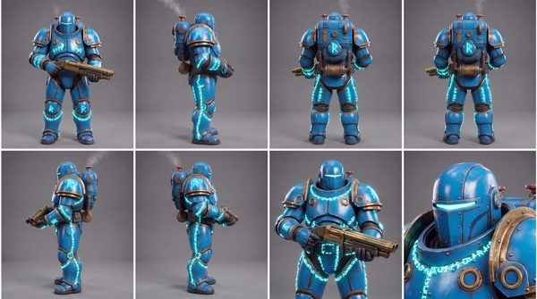
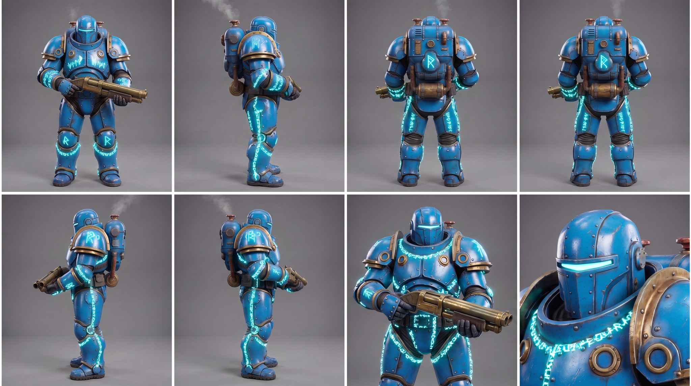
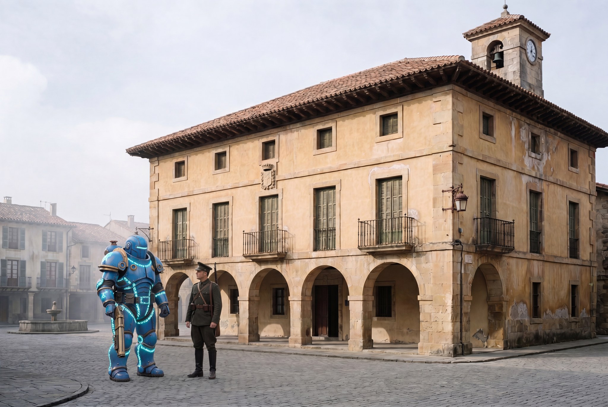
ПЕРВОЕ появление «Драгуна» «в металле» за всю серию. До Книги 7 имя «Драгун» встречалось только в общем перечне моделей самоходной брони (Клевец, Рейтар, Драгун, Шериф, Каратель), который ГГ перечислял как «не показанные» (см. свод; ср. «Клевец», «Каратель»). В Книге 7 (Глава 19) «Драгуны» наконец показаны снаружи — десяток штук в личной охране маркграфа Тьерна Готмала. Внутренней компоновки текст не раскрывает (камера внутрь не заглядывает); деталей формы почти нет, дан в основном цвет, количество и роль.
Класс и роль
САМОХОДНАЯ БРОНЯ — тяжёлый самодвижущийся доспех сержанта (класс ниже мехов-оруженосцев; общий принцип класса см. свод, «Клевец», «Каратель»). По роли — личная охрана высшего фольха: «Драгуны» носят сержанты охраны маркграфа Южной марки Тьерна Готмала (в описываемый момент Первого рыцаря империи), сопровождающие его боевой дирижабль и паладин (см. Паладин маркграфа Готмала).
Назначение в сцене — боевое сопровождение/телохранители при паладине и переговорах: «Своей охраной маркграф Тьерн Готмал явно не пренебрегает. Паладин – паладином, но не станет же он сидеть в нём днём и ночью. Да и переговоры как вести?» (Книга 7, Глава 19). То есть «Драгуны» — пешая бронированная свита маркграфа, которая страхует его, пока он вне паладина.
Внешность и форма
- Ярко-синяя («яркий синий цвет») окраска — главная и почти единственная описанная внешняя черта: десяток сержантов «в однотипных, выкрашенных в яркий синий цвет „Драгунах"» (Книга 7, Глава 19). Цвет — парадно-яркий (цвета рода Готмал / Южной марки), не маскировочный.
- Однотипные — все десять экземпляров одинаковы (единый комплект охраны), без разнобоя моделей.
- Прямого портрета силуэта, оголовья, наплечников, гербов текст НЕ даёт — в тексте только относительно (общая компоновка класса самоходной брони: антропоморфный тяжёлый доспех сержанта с наспинным паровиком-«горбом», ср. «Клевец», «Каратель»).
Конструкция и принцип работы
- Внутренней механики «Драгуна» (котёл, рунные цепочки, кокпит, кристалл-активатор, синхронизация) текст НЕ раскрывает — камера внутрь не заглядывает.
- Общий принцип класса (наследуется от самоходной брони): паро-магический самодвижущийся доспех под управлением сержанта-недомага; наспинный паровик-«горб», ихорный пар → рунные цепочки + приводы; запуск прямой подачей маны в управляющий контур (кристалл-активатор самоходной броне не нужен) — см. свод, «Клевец».
- Поколение/производитель не названы — в тексте только относительно. По контексту (элитная охрана маркграфа, парадная окраска, в отличие от раритетных «Клевцов») «Драгуны» — вероятно, более современная/представительная самоходная броня, но прямо это не сказано.
Движение и походка
- Спуск с дирижабля по тросам — единственная показанная «динамика»: вслед за сброшенным паладином «на землю полетело четыре троса. А по ним вниз соскользнул десяток сержантов в… „Драгунах"» (Книга 7, Глава 19). То есть сержанты в «Драгунах» способны спускаться по канатам с зависшего дирижабля — десантная высадка бронепехоты.
- Походка/маршевый ход в кадре НЕ описаны — в тексте только относительно (общеклассовая тяжёлая двуногая поступь самоходной брони, ср. «Клевец»: «грохочут не хуже оруженосцев»; «Каратель»: искры из-под ног).
Размер и сравнения
- Конкретный рост/вес «Драгуна» в тексте НЕ названы — в тексте только относительно (общеклассовый ориентир самоходной брони ~2 метра и ~100 кг на доспех по «Клевцу», см. «Клевец», свод).
- Класс — самоходная броня, то есть между обычным человеком и мехом-оруженосцем (оруженосец ≈ увеличенный в 2,5 раза сержантский доспех; свод).
Вооружение и защита
- Вооружение конкретно не описано — в тексте только относительно. Сцена подчёркивает, что даже безоружный взгляд на свиту маркграфа читается как угроза: «Оружие не нацеливали, но сержантский доспех против безоружного – сам по себе оружие» (Книга 7, Глава 19) — то есть «Драгуны» окружают ГГ полукругом, демонстрируя силу.
- Штатное оружие класса (по аналогии, прямо не подтверждено для «Драгуна»): «траншейная метла» / «слонобой» / глефа / огнемётатель (см. «Клевец», свод).
- Защита — общеклассовая броня самоходного доспеха (бронепластины + слабые защитные рунные цепочки; порог магзащиты самоходной брони ≈ «выше 4-го круга не держит», по «Клевцу», см. «Клевец»). Для «Драгуна» конкретных порогов текст не даёт.
Развитие по томам
- Книга 7 (Глава 19 — Южная марка, пепелище посёлка Золотое): ПЕРВОЕ появление «Драгуна» в металле за всю серию — десяток ярко-синих «Драгунов» как личная охрана маркграфа Тьерна Готмала. Вслед за сброшенным с дирижабля паладином (см. Паладин маркграфа Готмала) по четырём тросам с зависшего над пепелищем боевого дирижабля рода Готмал соскальзывает десяток сержантов в однотипных, выкрашенных в яркий синий цвет «Драгунах» — телохранители маркграфа. Они окружают ГГ полукругом во время переговоров («сержантский доспех против безоружного – сам по себе оружие»); оружие не наводят, но демонстрируют силу. Вклад чанка — закрытие сид-пункта «Драгун не показан»: подтверждены класс (самоходная броня), парадно-синяя окраска цветов рода Готмал, роль личной бронепехоты-охраны маркграфа, способность к канатной высадке с дирижабля. Внутренней компоновки, вооружения и размеров текст не раскрывает (в тексте только относительно). (Книга 7, Глава 19)
Известные экземпляры и пилоты
- Десяток «Драгунов» — личная охрана маркграфа Южной марки Тьерна Готмала (Первого рыцаря империи Эдан, отца Дэи). Однотипные, ярко-синие; высаживаются по тросам с боевого дирижабля рода Готмал к пепелищу Золотого, страхуя маркграфа на переговорах с ГГ (Гарном Вельком). Конкретные имена сержантов-пилотов не названы (Книга 7, Глава 19).
- Производитель/поколение: не названы (Книга 7, Глава 19).
«Егерь»
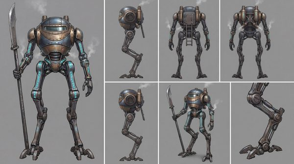
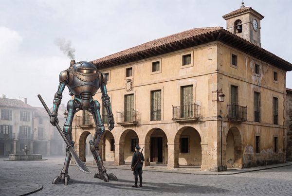
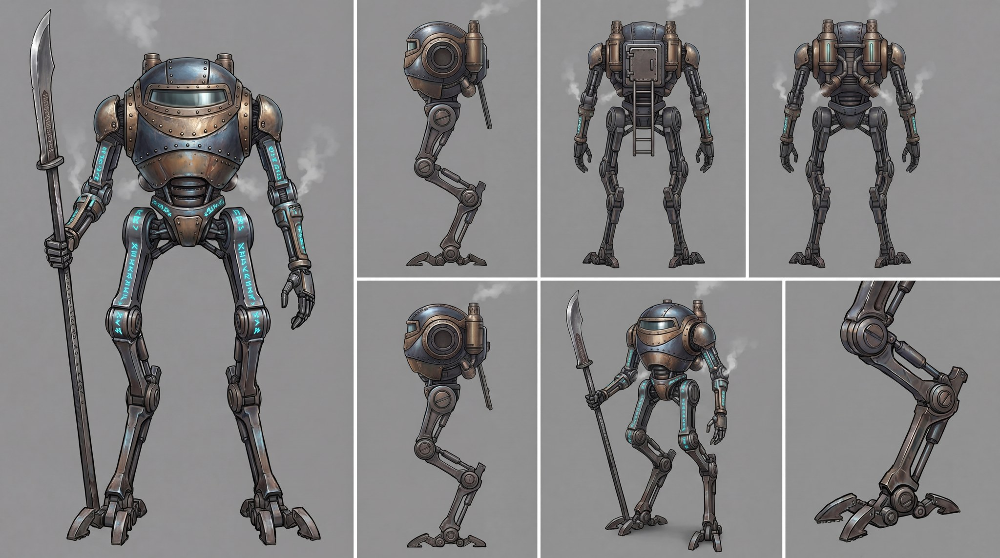
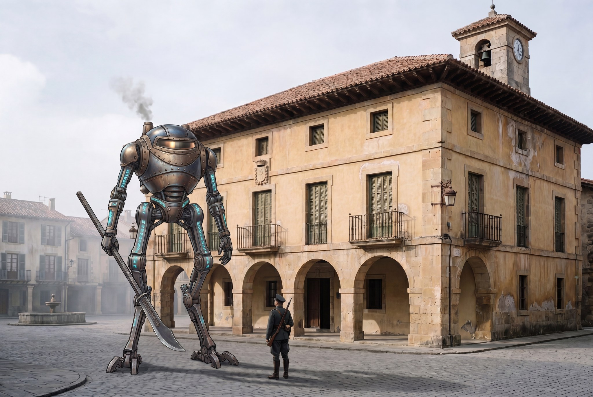
Примечание по названию: в Главе 8 модель сперва названа «Беглец», но автор в начале Главы 9 уточнил, что название модели меха ГГ изменено на «Егерь» («изменено название модели меха ГГ, было „Беглец", стало „Егерь"»). Каноническое имя — «Егерь».
Класс и роль
Лёгкий паро-магический голем класса ОРУЖЕНОСЕЦ — застрельщик, разведчик и «расходный материал» атакующих копий: «легкий оруженосец. Застрельщик, разведчик и расходный материал атакующих копий» (Книга 2, Глава 8). Неудачный совместный проект родов Итана и Эзгеля: «Этот голем – неудачный плод союза Итана и Эзгеля» (Книга 2, Глава 8). Признан неудачным: «Капризен в управлении, сложен в обслуживании, дорог в производстве. Было выпущено всего пять машин, после чего проект признали неудачным» (Книга 2, Глава 8). Этот экземпляр достался академии Тирбоза ~5 лет назад, когда там учился один из братьев правителя Эзгеля. ГГ выбрал «Егеря» как идеальный мех для капитана команды, чья задача — не блистать в одиночном бою, а руководить: «Идеальный мех для капитана команды, который должен не столько показывать класс в бою и пилотировании, сколько руководить действиями команды»; вне турниров «идеально встают на роль разведчиков» (Книга 2, Глава 8).
Внешность и форма
- Сборная, «неправильная» компоновка, которую ГГ не сразу опознал: «Словно к корпусу „Молнии" приделали четырехсуставные ноги от „Барса"» (Книга 2, Глава 8). — Прямые формальные ориентиры: корпус как у «Молнии» (см. «Молния»), четырёхсуставные ноги как у «Барса» (см. «Барс»).
- Манипуляторы ни на что не похожи: «А манипуляторы вообще ни на что не похожи. Слишком тонкие» (Книга 2, Глава 8).
- Длинные ноги — «ноги у „Егеря" довольно длинные» (в боевом положении до нижней скобы-ступени трудно дотянуться) (Книга 2, Глава 8).
- Стопы-«пальцы» с массивными грунтозацепами: «Грунтозацепы массивных, выступающих в разные стороны „пальцев" „Егеря", вминали в землю жидкий кустарник» (Книга 2, Глава 19). — Ступня разделена на расходящиеся в стороны «пальцы» с грунтозацепами (наследие четырёхсуставных ног «Барса»), что даёт хорошее сцепление с грунтом.
- Люк квадратной, непривычной формы, расположенный на спине меха (нетипично; обычно люк сбоку или сверху): «Лестница у „Егеря" оказалась на спине… Люк непривычной квадратной формы откинулся легко» (Книга 2, Глава 8).
Конструкция и принцип работы
- Базовая компоновка оруженосца: паро-магический котёл под пилотским креслом («Под пилотским креслом тихо урчит получивший подпитку маной паро-магический котел»), трон пилота, кристалл-активатор в гнезде, рунные цепочки (Книга 2, Глава 8).
- Лестница на спине → люк → вторая лестница вглубь корпуса к креслу; внутри — световой кристалл освещения (на «Егере» почти сел, «на последнем издыхании») (Книга 2, Глава 8).
- Отличный визор — главное достоинство: обзор ~130–140 градусов против стандартных 90° у большинства мехов: «В большинстве мехов стандартный обзор девяносто градусов перед собой… А на „Егере" расщедрились. Визор тут не хуже, чем на моем бывшем паладине. Где-то градусов сто тридцать, сто сорок» (Книга 2, Глава 8). Не чувствуешь себя «одноглазым».
- Капризен и сложен в обслуживании — мало стандартных, взаимозаменяемых узлов: «Очень мало стандартных, взаимозаменяемых узлов и компонентов» (Книга 2, Глава 9). Трубы паропровода нестандартные — рыцарского типа: «У него даже трубы паропровода нестандартные! … стандартные, но для рыцаря. А где у нас в академии рыцари?» (Книга 2, Глава 9). Отсюда «неадекватные цены» на ремонт.
- Плохое техническое состояние экземпляра академии: повреждённые управляющие рунные цепочки («общая дубовость управления, которую не объяснишь одной только слабой синхронизацией, часть управляющих рунных цепочек повреждена»), течи пара из правой ноги (пробитые паропроводы/пароприводы), проблемы с маслопроводом; скрип шарнирных соединений (Книга 2, Глава 8).
- Рунный компас сбоит: «показания рунного компаса воспроизводились на визор нечетко. Сетка плыла, цифры расползались» — механики грешат на сбой рунных цепочек, рунные кузнецы заняты (Книга 2, Глава 11).
- В режиме хранения (не «спящем»), поэтому активация занимает «приличное время» (Книга 2, Глава 8).
- Силовая установка занимает добрую половину корпуса: при разборке на мануфактуруме «Массивная паро-магическая машина, занимавшая добрую половину корпуса, куда-то исчезла. В том месте, где она находилась, зияла дыра» (Книга 2, Глава 15). Стальная рама силового набора корпуса усилена «вереницей укрепляющих рун» — открылась после снятия задней части корпуса (Книга 2, Глава 15).
- Капитальная переделка Ланиллой (мануфакторум Загима, Глава 15) — устранение «детских болезней» нестандартной машины:
- Замена паровика на новый из линейки големов Загима: «У твоего от двойного расширения только название. А новый и мощнее, и легче, и меньше на четверть. Да и ихора жрёт весьма умеренно, не требуется с собой цистерну таскать» — то есть старый паровик «двойного расширения» был таким лишь по названию; новый мощнее, легче, на четверть меньше, экономичнее по ихору (Книга 2, Глава 15).
- Паропроводы переложены и продублированы: «Их в твоём „Егере" прокладывал какой-то извращенец, любивший всё длинное и толстое. Мы их не только поменяли, но и продублировали, словно на рыцаре. К тому же теперь они стандартного диаметра для оруженосцев» (Книга 2, Глава 15). Уточнение к «рыцарским трубам» из Книги 2, Глава 9: внешне трубы выглядели на «семёрку» (рыцарский стандарт), а по факту были «шесть и пять» (6,5) — нестандартный гибрид, который раньше приходилось делать на заказ. После переделки — стандартный диаметр оруженосца, с дублированием паропроводов «как на рыцаре».
- Второй топливный бак (тендер): в освободившемся после замены паровика месте Ланилла поставила второй бак — без всасывающего инжектора (для его автоматической работы пришлось бы сильно менять управляющие рунные цепочки на силовом наборе), поэтому он просто связан с основным баком несколькими трубками (Книга 2, Главы 15, 16). Итог — у «Егеря» теперь два тендера с ихором (механики дозаправляют один из двух баков ручной помпой из бочки, Глава 16).
- При переделке снимались ВСЕ манипуляторы и большая часть брони, отсутствовала задняя часть корпуса («Распятый на „муле" „Егерь" лишился всех манипуляторов. Большая часть брони была снята, а задняя часть корпуса отсутствовала») — ремонт на специальной раме-стапеле («мул») (Книга 2, Глава 15).
- ЗИП на штатном месте под пилотским троном (Ланилла его не тронула при переделке): тяжёлый ящик с инструментом, в т.ч. универсальный шестигранный ключ-лом «на тридцать» (для отпирания заевших люков любых мехов) и молоток (Книга 2, Глава 19). Также штатная аптечка на борту (общее оснащение мехов).
Движение и походка
- При плохом техсостоянии идёт тяжело, скрипит: «Идет тяжеловато, скрипит, словно древний, высохший дуб под порывами штормового ветра» (виной — плачевное техническое состояние, не конструкция) (Книга 2, Глава 8).
- Даже в таком виде манёвренность приемлемая; потенциально — превосходно манёвренная машина: «„Егерь" словно создан для таких маневров. Представляю, что может творить эта машинка при большем уровне синхронизации» (резкие смены направления, уклонение от светового копья рыцаря) (Книга 2, Глава 11).
- После ремонта (Глава 11): «„Егерь" шел ходко и мягко». На уклонениях от «краба» резко меняет направление, идёт задним ходом, разворачивается на 180°.
- Слабое место ходовой: на скользком/песчаном склоне левая нога проваливается, мех сползает и вынужден остановиться (Книга 2, Глава 11).
- После капитальной переделки Ланиллой (Глава 16): ход стал заметно лучше прежнего — «Тихий приятный шелест напряжённого метала, вместо ставшего привычным надсадного, похожего на стон скрипа»; сама Ланилла перечисляет результат: «Ход стал мягче, улучшился разгон, выросла манёвренность». ГГ подтверждает мягкий ход и лучший набор скорости, манёвренность оценивает как оставшуюся «на том же отличном уровне» (Книга 2, Глава 16).
- «Спящее» положение для засады: «Егерь» способен максимально пригнуться к земле («не в походном, а „спящем" положении, максимально близко пригнувшись к земле, словно пилот готовится оставить машину») — из него до приведения в боевое положение нужно несколько секунд (рисковый манёвр) (Книга 2, Глава 16). Механика складывания показана в Главе 19: «Длинные ноги изгибаются и складываются в причудливую конструкцию, голем медленно пригибается корпусом к земле» — длинные четырёхсуставные ноги при переходе в спящий режим складываются в сложную «причудливую» конструкцию, опуская корпус.
- Стойкость к взрывной волне: при подрыве соседнего меха («Синее пламя» «Бунтаря» в овраге неподалёку) «Егерь», как «стойкий боец, даже не шелохнулся»; ГГ укрылся за его ногой от взрывной волны и дождя обломков (Книга 2, Глава 19).
- Недостаток на высокой скорости — болтанка кокпита (Глава 24): «При высокой скорости хода, демпферы плохо справляются и кабину, а значит и самого пилота болтает из стороны в сторону. Ощущения неприятные, словно стоя едешь на коляске без рессор по неровной дороге» (Книга 2, Глава 24). Несмотря на синхронизацию, вестибулярный аппарат страдает — на максимальном ходу ГГ мутит, кружится голова, лёгкий дискомфорт в желудке. Это общая болезнь класса, а не только «Егеря»: «„Егерь" тут не одинок. Подобная проблема в той или иной степени есть на всех оруженосцах и некоторых скоростных рыцарях» (Книга 2, Глава 24). На «Егере» она лишь заметнее из-за высокой скорости.
- Высокая скорость хода — после переделки Ланиллы ещё выросла (Глава 24): «Спасибо Ланилле… Возросшая скорость „Егеря" это позволяет [успеть к точке]». «Егерь» способен выжать достаточно, чтобы обогнать «Грифона» к точке встречи, несмотря на чуть большую крейсерскую скорость противника (за счёт более короткого маршрута). На полном ходу из паровика слышно «раздражённое фырчанье… свист пара, лёгкий скрип перегруженных механизмов» (Книга 2, Глава 24).
- Шумоизоляция кокпита (Глава 24): пилот среднего уровня при движении слышит в основном собственный мех — «тяжёлое „дыхание" собственного паровика, свист пара, лёгкий скрип перегруженных механизмов и звук своих шагов»; внешние звуки (шаги чужого меха) почти не различимы. Это позволило ГГ незаметно сблизиться с «Грифоном» для атаки (Книга 2, Глава 24).
Размер и сравнения
- Лёгкий оруженосец (общеклассовое соотношение — см. «Кузнечик» / свод: оруженосец = «увеличенный в 2,5 раза сержантский доспех»).
- По общему размеру корпуса ГГ «на глаз» прикидывает толщину бронеплит — броня «явно слабовата», равна или несколько уступает «Бунтарю» (Книга 2, Глава 8).
- Точные метры/тонны в тексте НЕ названы — размер дан только относительно (корпус «Молнии» + ноги «Барса», легче/слабее брони «Бунтаря»).
Вооружение и защита
- Слабая броня (равна или уступает «Бунтарю»); на экземпляре академии бронеплиты сняты и сложены в капонире: «А, да ее просто сняли. Вон в капонире лежат бронеплиты» (Книга 2, Глава 8). Для турнира броня роли почти не играет (щиты-мишени).
- Основное оружие — стандартная рунная глефа оруженосца (световое копьё); ГГ ведёт огонь по мишеням и «крабу» с дистанции 300 м, целится глефой (мелкая моторика — главная сложность) (Книга 2, Глава 11).
- В одиночных схватках «могут быть проблемы» — ставка на опыт пилота и знание местности, а не на мех (Книга 2, Глава 8).
- Уязвимость компоновки: люк и лестница на спине — самая уязвимая часть меха, прямой доступ диверсанта с бомбой к пилоту (частично компенсируется длинными ногами — до нижней скобы трудно дотянуться) (Книга 2, Глава 8).
Развитие по томам
- Книга 3 (Главы 9, 10 — «Егерь» как ушедший в прошлое эталон для серийного «Стилета»):
- «Егерь» — теперь „бывший" мех ГГ: на испытания в Вольную марку ГГ едет уже на серийном «Стилете», а «Егеря» называет «мой теперь уже бывший „Егерь"». Прямое сравнение характеристик: «Егерь» по характеристикам чуть лучше «Стилета», но «Стилет» заметно выигрывает в цене — «Мой теперь уже бывший „Егерь" чуть получше будет, но не настолько, чтобы забыть про цену» (Книга 3, Глава 9). Подтверждает «Стилет» как технологичную, удешевлённую и стандартизированную версию идей «Егеря».
- Подтверждение „Егеря" как победной машины турнира: Ланилла напоминает, что именно её переделка «Егеря» обеспечила победу ГГ на турнире — «„Егеря" я так разломала, что ты в турнире победил!»; ГГ соглашается («„Егерь" получился удачной машиной»), но оценивает вклад машины в победу не выше 20–30 % — «восемьдесят процентов победы любого голема — навыки пилота в его кабине» (внутренне уточняет: больше половины, но меньше 70 %) (Книга 3, Глава 10).
- Книга 2 (Главы 24, 26, 28 — полуфинал и финал турнира, главные боевые эпизоды «Егеря»):
- Полуфинал личного зачёта (Глава 24): «Егерь» (позывной «Феникс-1») против «Грифона» капитана Веснота Блеора Интана. ГГ использует высокую скорость (после переделки Ланиллы) и более короткий маршрут, чтобы опередить чуть более быстрого «Грифона» к точке; читает противника по следу и демаскирующей раскраске. Незаметно сблизившись (хорошая шумоизоляция кокпита глушит шаги чужого меха), ГГ выбирает ближний бой глефой и на проходе срезает бортовой щит-мишень «Грифона». Здесь показан недостаток «Егеря» на полном ходу: демпферы не справляются, кокпит и пилота болтает (вестибулярный дискомфорт), но это общая болезнь всех оруженосцев. Победа, выход в финал.
- Полуфинал командных схваток vs Эдан (Глава 26): «Егерь» — капитанская/командная машина копья «Феникс» (Тирбоз против Эдана). ГГ координирует команду через амулеты связи (на большой дистанции — через ретрансляцию докладов Шилин). Решающий эпизод — прорыв «Егеря» к вражескому флагу: пользуясь скоростным превосходством над «Красным драконом» («В скорости он значительно проигрывает „Егерю"… „Дракон"… медленнее»), «Егерь» по прямой выхватывает флагшток («Кажется, переусердствовал, там что-то хрустнуло»), затем на максимальном ходу прорывается обратно сквозь концентрированный огонь «Бунтарей» и «Лучника» Эдана к своему флагу. По пути ловит несколько попаданий в щиты-мишени (центральный, левый, лобовой), уворачивается от тарана «Бунтаря» «невероятным финтом»; на касании флагштока центральный и левый щиты отваливаются, мех ведёт вправо, но победа взята. Подтверждена болтанка на скорости (лёгкое головокружение). Тирбоз выходит в финал командного турнира (Книга 2, Глава 26).
- ФИНАЛ личного зачёта vs «Лучник» (Глава 28): «Егерь» против «Лучника» Орлуга Берн-Фонфа (капитан команды Проза). «Лучник» почти не уступает «Егерю» в скорости, поэтому гонку за вершину холма выигрывают оба одновременно — бой сводится к манёвренной перестрелке световыми копьями (~150 м) в складках местности. ГГ дважды заманивает «Лучника» к скрытой рытвине («зародыш оврага»); на втором заходе правая нога «Лучника» проваливается, машина кренится и теряет скорость. Серией заходов в слепую зону «Егерь» набивает три попадания в центральный щит «Лучника»; развязка — копьё цепляет краешек центрального щита, тот отваливается. Победа, ГГ — чемпион индивидуальных схваток (Книга 2, Глава 28). ГГ снова отмечает, что мех отработал отлично («малыш сегодня отлично поработал»), но его собственные маноканалы прогрессируют медленно — усталость от трёх схваток подряд.
- Арест пилота после финала (Глава 28): сразу после круга почёта ГГ арестован старшим следователем Шохалом (обвинение в ночной диверсии на стоянке Веснота — отравление охраны). «Егеря» при аресте окружают латники; машина остаётся на стоянке под надзором техников. Командный финал под вопросом (перенос). (Сюжетный поворот; технических деталей меха нет.)
- Книга 2 (Главы 18–23 — турнир, индивидуальные и командные схватки):
- «Егерь» — прародитель серийного «Стилета»: на базе переделанного Ланиллой «Егеря» мануфакторум Загима разрабатывает серийный оруженосец «Стилет» (см. «Стилет»): «Сейчас мы вносим мелкие изменения на основе „Егеря"» (Глава 20). То есть капитальная переделка «Егеря» (новый компактный паровик, дублированные паропроводы стандартного диаметра, второй тендер — Глава 15) легла в основу новой технологичной модели, заявленное преимущество которой — простота освоения (в отличие от капризного «Егеря») (Глава 22).
- Вторая индивидуальная схватка (Глава 19): «Егерь» против «Бунтаря» капитана Нокаса Альера Оранга. Отличный обзор позволяет ГГ контролировать обходящего противника; ноги-«пальцы» с грунтозацепами уверенно держат на пересечённой местности. После того как «Бунтарь» падает в овраг, «Егерь» переводится в спящий режим (ноги складываются), а ЗИП с ключом-ломом используется для спасения пилота. При подрыве «Бунтаря» «Егерь» переносит взрывную волну без повреждений.
- Первая командная схватка (Глава 21): «Егерь» — капитанская/командная машина копья «Феникс» (позывной «Феникс-1»); ведёт обход копья Нокаса с тыла «по приборам», координирует залпы по азимуту/дистанции через амулеты связи, разит «Зелёных драконов», «Бунтарей» и «Лучников» Нокаса. Получает скользящие попадания по щитам (лобовому, левому), но щиты держатся; чистая победа Тирбоза.
- Личная привязанность пилота: ГГ отказывается менять «Егеря» даже на перспективный серийный «Стилет» — «своего „Егеря" я вряд ли поменяю – моя машина» (Глава 22).
- Книга 2: ГГ выбирает «Егеря» из шести свободных мехов команды в полевом лагере (среди трёх «Бунтарей» и двух «Красных драконов») как капитанскую машину (Глава 8). Подробно показаны: сборная компоновка (корпус «Молнии» + четырёхсуставные ноги «Барса» + тонкие нестандартные манипуляторы), люк квадратной формы и лестница на спине, отличный визор 130–140°, плачевное техсостояние (повреждённые рунные цепочки, течи пара из правой ноги, севший световой кристалл, проблемы с маслопроводом). История модели: «неудачный плод союза Итана и Эзгеля», 5 машин, проект закрыт; экземпляр достался академии ~5 лет назад. Выпускницы Мирра и Шилин предупреждают, что ремонт «Егеря» — «сплошная мука» (нет стандартных узлов, рыцарские трубы паропровода) (Глава 9, 10). ГГ приводит «Егеря» в порядок (отчасти — устроив «тёмную» вороватому технику Вилару, разбавлявшему масло) — после ремонта мех «шёл ходко и мягко» (Глава 10, 11). На итоговой тренировке-засаде «Егерь» как капитанская/разведывательная машина координирует копьё по амулетам связи (позывной «Феникс-1»), уклоняется от светового копья рыцаря-«краба» («словно создан для таких маневров»), служит приманкой, заведя «краба» в ловушку, где четыре оруженосца подбивают рыцаря в корму. Сбой рунного компаса на визоре (Глава 11).
- Книга 2 (Главы 12, 15, 16 — турнирная подготовка и первый бой): Перед турниром ГГ договаривается с магнатом Ригором Загимом о техобслуживании шести мехов команды на новом мануфакторуме Загима (Глава 12). Все мехи возвращены вовремя, кроме «Егеря» (Глава 15). В мануфактуруме ГГ застаёт «Егеря» полностью раскуроченным («распят на „муле"», сняты все манипуляторы и большая часть брони, отсутствует задняя часть корпуса, исчезла массивная паро-магическая машина) — Ланилла затеяла капитальную переделку: заменила «двойного расширения» паровик на новый из линейки Загима (мощнее, легче, на четверть меньше, экономичнее по ихору), переложила и продублировала паропроводы («как на рыцаре»), привела их к стандартному диаметру оруженосца (вскрылось, что старые «семёрки» по факту были 6,5 — нестандартный заказной гибрид), и в освободившемся месте поставила второй топливный бак (без инжектора, связан трубками с основным). Машину ГГ получает лишь за два дня до турнира, чуть не сорвав адаптацию (выручил опыт прошлой жизни) (Глава 15). На первой индивидуальной схватке турнира (Глава 16) «Егерь» в «спящем» положении из природного укрытия устраивает засаду на «Зелёного дракона» Пора Сорна (Эдан): дождавшись, пока противник повернётся спиной, пристраивается ему «в корму» и с короткой дистанции четырьмя импульсами рунной глефы (точка прицеливания на визоре «не дрожит, не смазывается») сбивает задний щит-мишень — «первая кровь» турнира. Подтверждён результат переделки: «тихий приятный шелест метала» вместо скрипа, лучший разгон, сохранившаяся отличная манёвренность (Глава 16).
Известные экземпляры и пилоты
- Единственный «Егерь» академии Доблести Тирбоза (капитанский мех команды) — пилот Гарн Вельк (паж Вельк, капитан команды, позывной «Феникс-1») (Книга 2, Главы 8–11). Достался академии ~5 лет назад, когда там учился брат правителя Эзгеля.
- Всего в мире выпущено 5 машин этой модели; судьба остальных четырёх неизвестна (Книга 2, Глава 8).
- Производители: совместный проект родов Итана и Эзгеля (Книга 2, Глава 8). Големы рода Итана числились среди лучших (но дорогих).
«Жрец»
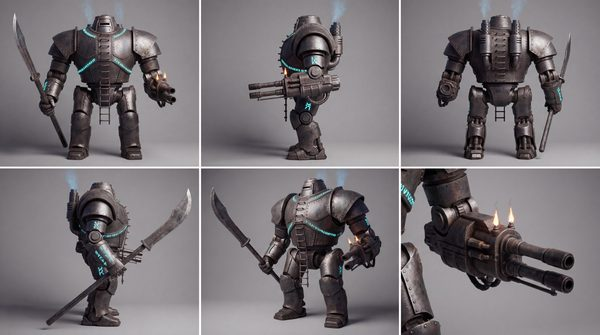
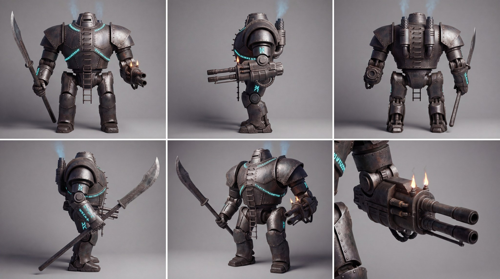
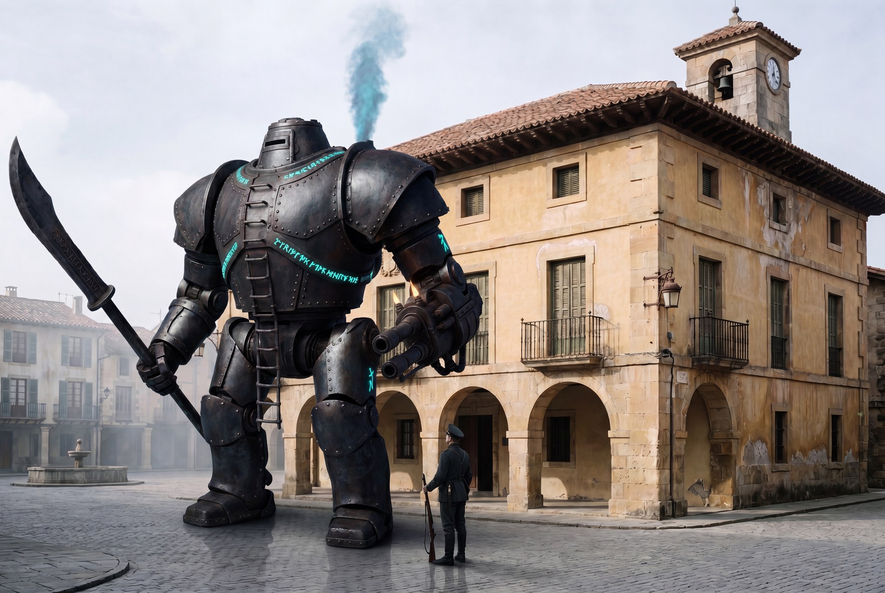
ПЕРВОЕ появление модели «Жрец» в серии — Книга 8, Глава 22 (выгрузка паладина Ринора Норома с дирижабля в Хальте); БОЕВОЙ ДЕБЮТ — Книга 8, Глава 28 (разгром левого фланга армии князя всех князей под Хальтом). Это второй паладин серии после «Феникса» ГГ (см. «Феникс») и первый паладин противной/нейтральной стороны на дхивальском театре. Внутренней компоновки кокпита текст не раскрывает, но в Главе 28 показаны вооружение (глефа, огнеметатель, световые копья), истощаемый личный щит и экстремально стойкая броня паладина; в Главе 25 установлен размерный факт — паладин слишком высок/массивен, чтобы разместиться в городе.
Класс и роль
Паро-магический голем класса ПАЛАДИН — высший, самый тяжёлый класс мехов (оруженосец → рыцарь → паладин). «Жрец» — личная боевая машина князя Ринора Норома (наёмника, ставшего князем собственного княжества в Дхивале).
Единственный паладин на островах — ключевой статусный факт: «он единственный паладин на этих островах» (Книга 8, Глава 21). То есть на всём дхивальском архипелаге паладин-класс представлен только машиной Норома; ни у Компании Южных морей, ни у дхивальских князей (включая князя всех князей Осомана Сухарата и его племянника Руяна) паладинов в кадре нет. Это делает «Жрец» уникальной по огневой ценности машиной театра.
Нором возвращён Компанией Южных морей «из запаса» вместе со «старой гвардией» (ср. свод), и его паладин перебрасывается на Талхал спешно, как тяжёлая ударная единица против армии князя всех князей.
Внешность и форма
- Прямого портрета корпуса/головы/оголовья текст не даёт — в тексте только относительно: машина названа «грудой железа» (фамильярно, устами друга-мага Голтара: «Так эта груда железа твоя?», Книга 8, Глава 22) — то есть массивный, тяжёлый металлический корпус, узнаваемый издали как паладин.
- Цвет/эмблемы/раскраска в тексте не описаны.
- Очень высокий корпус — реконфирм (Книга 8, Глава 25): при спуске из кабины Ринор Нором сетует на высоту паладина — «Но какие же они высокие!»; спуск долгий и мучительный для пожилого пилота с больным коленом. Подтверждает экстремальную высоту класса «паладин» (ср. «Феникс» ГГ — «высотой с трёхэтажный дом», «Феникс»).
- Силуэт класса «паладин» (ср. «Феникс» ГГ — «высотой с трёхэтажный дом», «Феникс»; паладин Готмала — корпус «Чёрного дракона», увеличенный вдвое, Паладин маркграфа Готмала) подразумевает антропоморфную тяжёлую машину, но прямого описания именно «Жреца» нет.
Конструкция и принцип работы
- Общеклассовая паладинская компоновка (паро-магический котёл, огненный кристалл, ихор, рунные цепочки, кресло-трон, кристалл-активатор, синхронизация) — в тексте по «Жрецу» прямо не разобрана (камера внутрь не заглядывает).
- Облегчение машины для транспортировки: прямо упомянуто, что паладин подвергался ухищрениям с облегчением ради переброски по воздуху — «Несмотря на все ухищрения с облегчением, паладин был тяжеловат для стандартного транспортника» (Книга 8, Глава 22). То есть «Жрец» специально облегчали (вероятно, снимая часть брони/оснащения или задействуя рунные цепочки облегчения, ср. «Феникс»), но даже после этого он остался на пределе грузоподъёмности обычного транспортного дирижабля — конструктивный ориентир крайней массы паладина.
- Вход/выход через высокую кабину (Книга 8, Глава 25): пилот «выбравшись из кабины „Жреца"» спускается вниз по корпусу — спуск долгий («с бодростью молодого козлёнка вверх-вниз скакать» уже не получается); подтверждает высоко расположенный кокпит паладина и наружный спуск по машине (ср. лестница со скобами у «Феникс»).
- Слияние притупляет ощущения, но удар «по колоколу» проходит (Книга 8, Глава 28): при попадании чугунного ядра «даже через притупляющее ощущения тела слияние с големом Ринор почувствовал себя словно в огромном колоколе, по которому только что нанесли сильный удар большим молотом» — реконфирм синхронизации паладина (слияние гасит боль/ощущения) и того, что мощный кинетический удар по корпусу всё равно ощутимо «прозванивает» пилота сквозь синхронизацию.
- Огненный кристалл/паровик уязвимы у противника — наглядно (Книга 8, Глава 28): глефа «Жреца» вскрывает корпус дхивальского рыцаря «словно консервный нож жестяную банку», из пробитого паровика «ударил синеватый пар»; добитый рыцарь «ушёл в Синее пламя» (взрыв). Реконфирм общеклассовой механики (пробой брони → струя синего пара из паровика → возможный взрыв «Синее пламя»), показанной с позиции паладина-победителя.
Движение и походка
- Боевая походка показана впервые (Книга 8, Глава 28): «Жрец» наступает на позиции дхивальской артбатареи — «повёл паладина вперёд» на пушки; рывок к цели — «Десять шагов вперёд слились в один рывок» (то есть тяжёлая машина способна на короткий стремительный бросок, «съедающий» дистанцию); прикинув дистанцию, пилот останавливает машину после выжигания позиции, чтобы «оценить поле боя». Паладин ведёт за собой подчинённое копьё (тактика «копьё → баллей → остальные подтянутся»). Реконфирм: паладин массивен, но в атаке способен на рывок в несколько шагов.
- Ранее показано только десантирование с воздуха: «Дирижабль спускал „Жреца" медленно, почти нежно» (Книга 8, Глава 22) — выгрузка тяжёлого паладина требует осторожного, медленного спуска (ср. воздушная высадка рыцаря «Чёрный дракон» по раме грузового короба, «Чёрный дракон», Книга 8, Глава 11).
Размер и сравнения
- Точные метры/тонны в тексте НЕ названы — в тексте только относительно.
- Косвенный размерный/массовый ориентир: «тяжеловат для стандартного транспортника» (Книга 8, Глава 22) — то есть масса паладина «Жрец» превышает комфортную грузоподъёмность обычного (не-боевого, транспортного) дирижабля, его везли «на пределе».
- Высота — настолько велика, что в город паладин не помещается (Книга 8, Глава 25) — КЛЮЧЕВОЙ относительный ориентир: «Но какие же они высокие!» (Ринор о паладинах); и прямо — «В городе для паладина места не нашлось, вот и пришлось разбить лагерь вне городских стен» (Глава 25). То есть «Жрец» слишком высок/массивен, чтобы разместиться/маневрировать в застройке Хальта, в отличие от рыцарей и оруженосцев (для которых города строят с расчётом, ср. свод). Это сильнейший размерный контраст: паладин выпадает из габаритов городской инфраструктуры.
- Спуск из кабины — долгий и тяжёлый (Глава 25): пожилому пилоту с больным коленом спуск с паладина даётся как «настоящее мучение» — косвенный ориентир большой высоты корпуса (высоко расположенный кокпит).
- Класс «паладин» = высший по росту/массе (ср. «Феникс» — «высотой с трёхэтажный дом»).
Вооружение и защита
- Вооружение раскрыто в бою (Книга 8, Глава 28) — КЛЮЧЕВОЕ. За «Жрецом» подтверждены сразу три системы:
- Рунная глефа (ближний бой) — «Лезвие глефы вскрыло корпус дхивальского рыцаря, словно консервный нож жестяную банку»: глефа паладина с одного удара распарывает броню вражеского рыцаря и пробивает паровик (синий пар, затем «Синее пламя»). То есть глефа «Жреца» свободно вскрывает рыцарский корпус в рукопашной.
- Огнеметатель (площадное оружие) — «нацелил огнеметатель на позиции батареи… Две огненные струи слились в одну», превратив артиллерийскую позицию в «погребальный костёр», тут же сдетонировавший на пороховых зарядах. Реконфирм огнесмеси под давлением → огненная струя (ср. рыцарский огнемёт «Чёрный дракон»), но у паладина — две струи, сливающиеся в одну.
- Световые копья (по контексту копья «Жреца») — большая часть артбатареи «была уже разбита выстрелами световых копий» к моменту подхода паладина (огонь его копья/самого паладина); реконфирм светового копья как штатного дальнобойного оружия.
- Личный щит — наглядно просажен и сорван (Глава 28): картечь пушки в упор «хлестнула… снося остатки личного щита машины» — то есть к этому моменту личный щит «Жреца» уже был израсходован и картечный залп добил его остатки. Реконфирм: у паладина есть личный/магический щит (как у рыцаря/«Феникс»), но он истощаем.
- Броня паладина — экстремальная стойкость (Глава 28) — КЛЮЧЕВОЙ ТТХ: даже после потери личного щита «паладин мог пережить обстрел десятков подобных пушек» — «Броня выдержала» прямое попадание чугунного ядра полевой пушки. То есть голая броня «Жреца» держит десятки попаданий артиллерии без щита (на порядок выше рыцарской: ср. «два попадания сорокадвухфунтовок рыцарю не страшны», «Чёрный дракон»). Пилот лишь ощутил удар «как в огромном колоколе» (см. «Конструкция»), но машина боеспособна. Это — наглядный потолок защищённости паладина-класса.
- Уязвимости из боя (Глава 28): картечь сносит щит (но не броню); чугунное ядро лишь «звонит» по корпусу; реальной угрозы пушки для брони паладина не представляют — артиллеристы гибнут, «понимая всю тщетность усилий». Серьёзной угрозы «Жрецу» в этом бою не нашлось (дхивальские мехи древние, артиллерия бессильна против брони). Часть брони/оснащения могла быть снята при «облегчении» для перевозки (см. «Конструкция»), но на боеспособности это не сказалось.
Развитие по томам
- Книга 8 (Главы 25, 27, 28 — Хальт и предгорья, осада/деблокада): БОЕВОЙ ДЕБЮТ «Жреца» — паладин Норома громит дхивальскую артбатарею и рыцаря, раскрыто вооружение (глефа, огнеметатель, световые копья) и экстремальная броня; установлен размерный факт: паладин не помещается в город. (1) Паладин не влезает в город (Глава 25): Ринор Нором выбирается из кабины «Жреца» вне стен — «В городе для паладина места не нашлось, вот и пришлось разбить лагерь вне городских стен»; пилот сетует на высоту машины («Но какие же они высокие!») и мучительный спуск (больное левое колено, старая рана). Реконфирм высоты/массы паладина как выпадающих из городских габаритов. Здесь же — характер пилота-наёмника: торгуется с Компанией за подкрепления, планирует «принять удар князя всех князей, а затем отступить», чтобы вынудить Компанию снять осаду Хальта (тактическая роль «Жреца» как тяжёлого ядра манёвренной группы). (2) Боевой дебют — разгром левого фланга армии князя всех князей под Хальтом (Глава 28) — КЛЮЧЕВОЕ: «Жрец» во главе своего копья сметает дхивальскую оборону. Глефой паладина Ринор «вскрыл корпус дхивальского рыцаря, словно консервный нож жестяную банку» (синий пар из паровика → «Синее пламя»); затем ведёт паладина на артбатарею. Картечь пушки в упор «сносит остатки личного щита», следом чугунное ядро бьёт по корпусу — «Броня выдержала. Даже без личного щита паладин мог пережить обстрел десятков подобных пушек» (наглядный потолок брони паладина). Двумя огненными струями огнеметателя «Жрец» превращает позицию батареи в «погребальный костёр», детонирующий на пороховых зарядах. Паладин ведёт за собой копьё → баллей → всю атаку; левый фланг армии князя всех князей «прекратил существовать, сметённый атакой сотни машин, поддержанных магией». Дхивальская конница против тяжёлых машин — «осы, пытающиеся закусать слона». Реконфирм эволюции тактики: с переходом мехов на рунные глефы, огнеметатели и картечные пушки кавалерийские атаки стали «изощрённым самоубийством». (3) Стратегический итог: разгром под Хальтом (предсказанная ГГ катастрофа) — прямое следствие удара группы Норома во фланг осаждающей армии; именно это (а не морское поражение) приводит «Непримиримых» Дивии к решению вмешаться. Вклад чанка — боевой дебют второго паладина серии: раскрыты глефа (вскрывает рыцаря), огнеметатель (две струи), световые копья, истощаемый личный щит и сверхстойкая броня (десятки попаданий пушек без щита); закреплён размерный факт «паладин не помещается в город». (Книга 8, Главы 25, 27, 28)
- Книга 8 (Глава 22 — Хальт, прибытие князя Норома): ПЕРВОЕ появление паладина «Жрец» — выгрузка с транспортного дирижабля в Хальте. Князь Ринор Нором, спешно вызванный Компанией Южных морей «из запаса» против армии князя всех князей, прибывает в Хальт; его паладин «Жрец» медленно, „почти нежно" спускается с дирижабля, оказавшись «тяжеловатым для стандартного транспортника» даже после «всех ухищрений с облегчением». Старый друг Норома, маг-мэтр Голтар Трагал (тоже возвращённый Компанией), фамильярно зовёт машину «грудой железа». Установлен ключевой статусный факт: Нором — единственный паладин на островах (Глава 21). Боя/конструктивных деталей кокпита пока нет; вклад — второй паладин серии, уникальная огневая единица дхивальского театра, ориентир крайней массы паладина (на пределе грузоподъёмности транспортного дирижабля даже после облегчения). (Книга 8, Главы 21, 22)
Известные экземпляры и пилоты
- Князь Ринор Нором («Рин», наёмник, ставший паладином и князем собственного княжества; начинал карьеру именно на Талхале) — единственный паладин архипелага, пилот «Жреца». Опытнейший воин: «провоевавший в Дхивале больше лет, чем я живу на свете» (оценка ГГ, Глава 21); располагает «небольшой, но отлично вышколенной личной армией» и «не меньше двух баллеев паро-магических големов» (Глава 21). Пожилой пилот со старой раной (Книга 8, Глава 25): «уже далеко не мальчик»; больное левое колено (старая рана) делает спуск из высокой кабины паладина мучительным — при ходьбе «левая нога… стреляла иглой боли»; лечат его жрица Ришья (мази и яды). Несмотря на возраст — хладнокровный тактик: в бою под Хальтом (Глава 28) лично ведёт «Жрец» в атаку, командуя без амулетов связи (их у колониальных войск Компании нет — «командовать творившимся хаосом он не мог», но «мог направить… копьё в нужную сторону»). (Сопровождают Норома маг-мэтр Голтар Трагал и жрица Ришья.)
- Силы под рукой Норома резко выросли (Книга 8, Глава 27): после высадки в западных портах «не меньше двух баллеев Компании» (вывод части сил с архипелага Змей) под рукой князя Норома стало «более четырёх баллеев опытных и закалённых ветеранов… почти сотня оруженосцев и рыцарей!» — «железный кулак», ядром которого служит единственный на островах паладин «Жрец». Именно этим кулаком нанесён сокрушительный удар по флангу армии князя всех князей под Хальтом.
- Производитель/род-изготовитель «Жреца» в тексте НЕ назван (карьеру и титул Нором сделал на службе Компании Южных морей; модель машины не уточняется).
«Зелёный дракон»
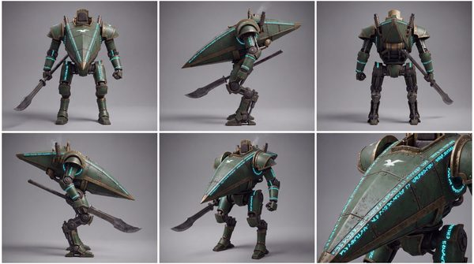
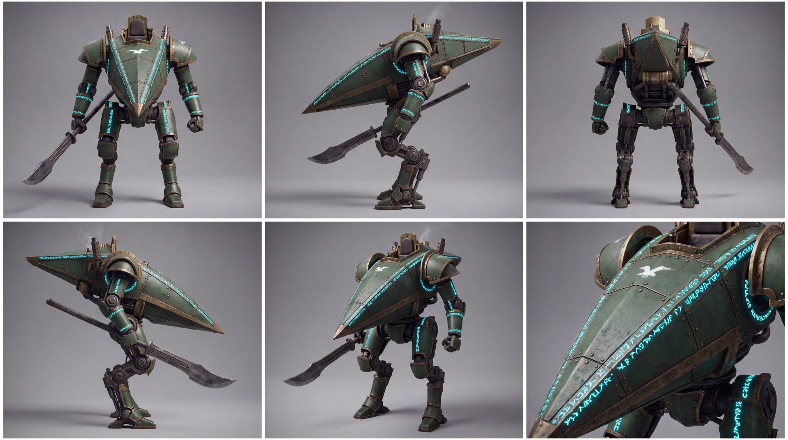
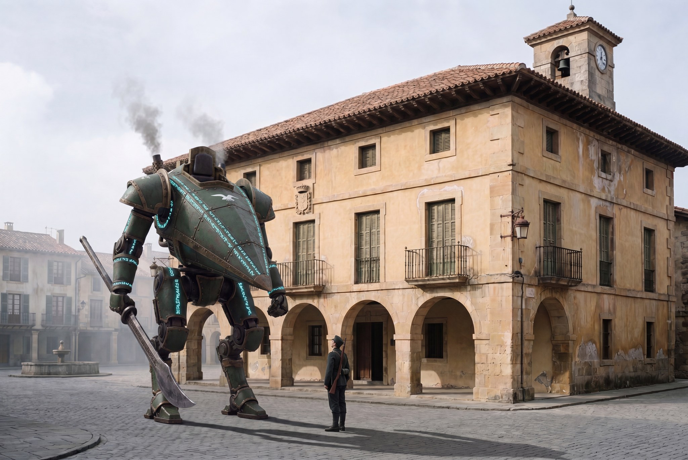
Класс и роль
Лёгкий паро-магический голем класса ОРУЖЕНОСЕЦ (низший из трёх классов). Третье поколение мехов: «Зеленые драконы – третье поколение. И лишены детских болезней своих красных предшественников, которые относятся ко второму поколению» (Книга 2, Глава 9). Производитель — род Флона (часть «радужной линейки» драконов). Концептуально — та же идея, что у «Красного дракона» (превратить лёгкого оруженосца в подобие рыцаря), но более удачная: «Все та же попытка скрестить ежа с ужом … Но более удачная. Стоит это признать» (Книга 2, Глава 9). Мехи третьего поколения — основа рыцарских копий, особенно если речь об оруженосцах (Книга 2, Глава 9). В команде академии «Зелёные драконы» — лучшие машины (роль щита): их используют как приманку, отвлекающую основное внимание противника, пока пары оруженосцев маневрируют (Книга 2, Глава 11).
Внешность и форма
- Клиновидный корпус — главный опознавательный признак: «этих мехов легко узнать по клиновидному корпусу» (Книга 2, Глава 9). Отличает «Зелёного» от грузного «откормленного» «Красного дракона». В бою форма уточняется: «Похожий на клин корпус стал разворачиваться, слегка заваливаясь на перегруженный левый бок» (Книга 2, Глава 16) — то есть остаточная перегрузка левого бока (наследие «драконьей» концепции) сохраняется даже у исправленного третьего поколения.
- «От своих красных собратьев они мало чем отличаются» (общая «драконья» компоновка рода Флона), кроме поколения и исправленных недостатков (Книга 2, Глава 9).
- Раскраска экземпляров (личный знак вместо боевой раскраски): «Зелёный дракон» Шилин несёт чайку на корпусе — в Главе 16 описана как «большая белая чайка», в Главе 18 та же машина опознаётся по «чёрной чайке» («черная чайка на одном из них была отчетливо заметна»). (Разночтение цвета чайки в источнике; знак — именно чайка Шилин.) На турнире также встречаются «Зелёный дракон» с чёрным кальмаром (второй участник Веснота, Глава 16) и «Дракон» с искусно нарисованной львиной головой — противник Шилин в её первой индивидуальной схватке (Глава 18).
Конструкция и принцип работы
- Базовая компоновка оруженосца (котёл, рунные цепочки, кресло пилота, кристалл-активатор — общеклассовое).
- Центровка нарушена, но не так сильно, как у «Красного»: «Центровка тоже слегка нарушена, но не так сильно» (Книга 2, Глава 9) — то есть перетяжеление под броню/огнемёт частично исправлено в третьем поколении.
- «Лишён детских болезней» «Красного дракона» (второе поколение) — улучшенная, доведённая до ума версия концепции (Книга 2, Глава 9).
- Узлы ноги, показанные при ремонте: гидравлический демпфер ступни, фильтры, сальники, приводы; машинное масло циркулирует по системе (Мирра и Шилин чинят ногу «дракона» в боксе) (Книга 2, Глава 9).
- Нестандартные/рыцарские трубы паропровода у некоторых узлов — упомянуто как проблема скорее «Егеря»; у «дракона» обслуживание штатное, есть взаимозаменяемые узлы (контраст с «Егерем»).
Движение и походка
- Достаточно манёвренный и быстрый для оруженосца; на тренировке «драконы» бегут «быстро, но не на пределе своих возможностей, грузно переваливаясь с ноги на ногу и раскачиваясь всем корпусом», идут зигзагом (уклонение) (Книга 2, Глава 11).
- Слегка пофыркивает паром при ходьбе на средней скорости; идёт «змейкой» (периодически меняя направление — и для сбива прицела, и для обзора) (Книга 2, Глава 16).
- На крутоватом спуске неопытный пилот ведёт «дракона» медленно и полубоком (подстраховка из-за непривычности машины); разгон после спуска — «неуклюжий» (Книга 2, Глава 16).
- Резкий разворот клиновидного корпуса при попытке уйти из-под огня сопровождается заваливанием на перегруженный левый бок (Книга 2, Глава 16).
- Лучшие машины команды — на них идут выпускники третьего курса (Мирра и Шилин) (Книга 2, Главы 9, 11).
Размер и сравнения
- Прямых габаритов в тексте нет; «мало чем отличается» от «Красного дракона» (тот — «как откормленный „Слон"», см. «Красный дракон»), но с клиновидным, а не раздутым корпусом.
- Точные метры/тонны в тексте НЕ названы — размер дан только относительно.
- Распространённость на турнире (косвенно о популярности модели): «Ящерицы оказались довольно популярны среди участников турнира. В каждой команде не меньше двух „драконов", в основном более совершенные „Зелёные", но и „Красные" встречаются» (Книга 2, Глава 16) — то есть «Зелёный дракон» — самая массовая турнирная машина класса оруженосец.
Вооружение и защита
- Обзор — стандартные ~90° перед собой (не расширенный, как у «Егеря»): «Обзор на „Драконах" градусов девяносто перед собой» (Книга 2, Глава 18). Отсюда — большие слепые зоны по бортам и в корме, главная тактическая уязвимость модели.
- Критическая уязвимость кормы (следствие узкого обзора), многократно использованная на турнире: достаточно зайти «дракону» в корму — пилот не замечает огня, пока не поздно. В первой схватке ГГ на «Егере» заходит «Зелёному дракону» Сорна в корму (см. ниже, Глава 16); во второй схватке Шилин её саму так же бьют в корму («противник… зашел меху Шилин в корму. Да так ловко, что она его до последнего выстрела не заметила. Не то что-то с обзором „Драконов". Второй ящерице задницу поджарили, а пилоты и понять ничего не успели» — Глава 20). Попытка спасти центральный щит разворотом боком открывает корму ещё сильнее (Глава 18).
- Хорошая для оруженосца броня (наследие «драконьей» концепции «оруженосец под рыцаря») — в команде «Зелёные драконы» играют роль щита, отвлекающего огонь на себя (Книга 2, Глава 11).
- Стандартная рунная глефа оруженосца (световое копьё); в турнире/на тренировках — щиты-мишени вместо стихийного щита (общетурнирная условность).
- Против рыцаря («краб»/«Владетель») щиты-мишени «драконов» держатся плохо: «Световое копье рыцаря раза в два сильней, чем таковое у оруженосцев. Да и щиты-мишени гораздо более прочные» — в чистом поле «драконы» под огнём рыцаря «и кончились» (Книга 2, Глава 11).
Развитие по томам
- Книга 2: В ремонтном боксе полевого лагеря висит пара «Зелёных драконов» — лучшие машины команды академии (Глава 9). ГГ удивлён, что в захолустной академии Тирбоза вообще есть мехи третьего поколения. Выпускницы третьего курса Мирра Роклат-Савитр и Шилин Лаврия-Савитр (Речная марка) сами обслуживают своих «драконов», вскрывают ногу, находят разбавленное вороватым техником масло (проблема не в демпфере, а в масле) (Глава 9). На итоговой тренировке «Зелёные драконы» Мирры и Шилин идут в голове колонны как щит; в финальном эпизоде, маневрируя зигзагом, отвлекают рыцаря-«краба» («Владетеля») коменданта Онгра на себя, пока четыре оруженосца заходят «крабу» в корму и подбивают его (Глава 11).
-
Книга 2 (Главы 12, 16 — турнир): «Зелёные драконы» — машины северных турнирных команд: на дирижаблях рода Инадр в Тирбоз доставлены оруженосцы, среди которых Мирра опознала «двух „Зелёных драконов"» (Глава 12). На самом турнире «дракон» оказывается самой массовой моделью (не меньше двух на команду, в основном «Зелёные»). В первой индивидуальной схватке ГГ его противник — талантливый первокурсник Эдана Пор Сорн, который «сразу „оседлал" „Зелёного дракона"» (рискованный выбор для новичка, машина ему ещё непривычна): ведёт «дракона» медленно и полубоком на спуске, идёт предсказуемой «змейкой», не сразу замечает огонь в корму и проигрывает «Егерю» (сбит задний щит-мишень после разворота с заваливанием на левый бок) (Глава 16). Также показан бой двух «Зелёных драконов» Веснота между собой (один с чёрным кальмаром) — оба играют от манёвра против «Грифона»/друг друга (Глава 16).
-
Книга 2 (Глава 26 — полуфинал команд, Тирбоз↔Эдан): «Зелёные драконы» Мирры и Шилин держат вершину центрального холма как наблюдательно-снайперский пост (отличный обзор сверху, использование их как ретранслятора связи на большой дистанции). Эдан строит атаку на двойках из «Зелёных драконов», «Красных драконов», «Бунтарей» и «Лучника», заманивая защитников в овраг ложным отступлением. Шилин на своём «Зелёном драконе» в одиночку связывает пару эданцев, метко поражает их единичными выстрелами, обеспечивает прорыв «Егеря» и добивает «Бунтарей» Эдана — наглядная демонстрация того, что в руках опытной выпускницы «Зелёный дракон» (роль щита/снайпера) очень результативен, в отличие от первокурсников на тех же машинах (Книга 2, Глава 26).
- Книга 2 (Главы 18–21 — турнир): В индивидуальных схватках «драконы» массовы, но проваливаются из-за узкого обзора: «В индивидуальных схватках почитай половина пилотов на драконах были. В полуфинал ни один не вышел» (Глава 20). Шилин на «Зелёном драконе» (чайка) выигрывает первую схватку у «Дракона» с львиной головой в зрелищной манёвренной «карусели» (обмен попаданиями по бортам, финальный обоюдный выстрел в упор) (Глава 18), но проигрывает вторую, когда противник заходит ей в корму незамеченным (Глава 20) — прямая иллюстрация уязвимости 90°-обзора. В первой командной схватке (Глава 21) «Зелёные драконы» — часть атакующего копья команды Нокаса: несколько сбиты залпами копья «Феникс» Тирбоза (кормовой щит «отвалился с фиксаторов, повалил дым»). На стороне Тирбоза «Зелёные драконы» Мирры и Шилин играют роль приманки на центральном холме, утягивая Нокас в ловушку у оврага (Глава 21).
Известные экземпляры и пилоты
- Пара «Зелёных драконов» команды академии Тирбоза (лучшие машины, закреплены за выпускницами) — пилоты: Мирра Роклат-Савитр и Шилин Лаврия-Савитр (третий курс, Речная марка) (Книга 2, Главы 9, 10, 11, 18, 20, 21, 26).
- В полуфинале команд (Глава 26) Шилин на своём «Зелёном драконе» в одиночку сдерживает пару первокурсников Эдана, метко расстреливает их с дистанции (несколько единичных попаданий), затем обеспечивает прорыв «Егеря» ГГ и под конец боя «уничтожает» дымящие «Бунтари» Эдана у флага — лучшая снайперская работа схватки (Книга 2, Главы 26, 27). На стороне Эдана «Зелёные драконы» — часть атакующих двоек (Глава 26).
- ГГ имеет опыт управления «Драконами» в прошлой жизни (Книга 2, Глава 8).
- Производитель: род Флона (Книга 2, Глава 9).
«Каратель»
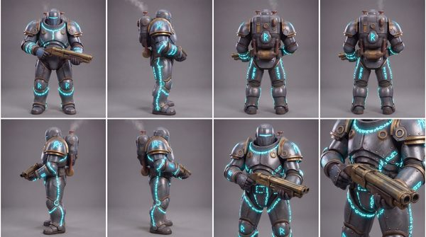
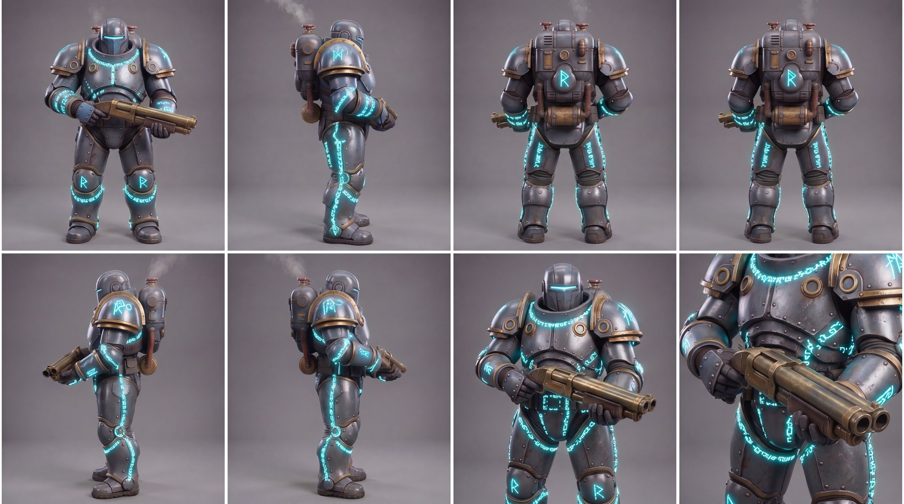
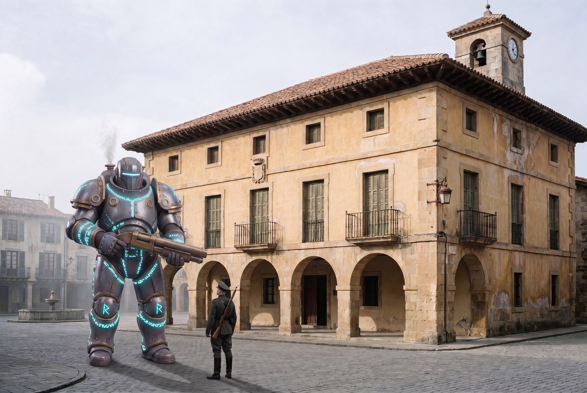
ПЕРВОЕ появление «Карателя» в металле за всю серию. До Книги 5 имя «Каратель» встречалось только в общем перечне моделей самоходной брони (Клевец, Рейтар, Драгун, Шериф, Каратель), который ГГ перечислял как «не показанные» (см. свод, Книги 4). В Книге 5 (Глава 5) «Каратель» наконец показан снаружи — два экземпляра у входа в тюрьму-казарму третьего принца Ронга Олна. Внутренней компоновки текст не раскрывает (камера внутрь не заглядывает); форма и размер даны относительно другой самоходной брони и класса паладинов.
Класс и роль
САМОХОДНАЯ БРОНЯ высшего, сверхтяжёлого разряда. ГГ выстраивает прямую аналогию с меховой иерархией: как паладины — сверхтяжёлый класс мехов, так сержант в «Карателе» — «сверхтяжёлая пехота»: «Отличные доспехи, лучшие из того, что производится в империи. Как паладины являются сверхтяжелыми машинами, так и сержантов в „Карателях" можно считать сверхтяжелой пехотой» (Книга 5, Глава 5).
«Каратель» — верхняя планка серийной самоходной брони (тогда как «Клевец» первой модели — нижняя, раритетная планка; см. «Клевец»). Распространение ограничено дороговизной — это техника элиты: «Их используют сержанты „Пурпурной роты" – личной гвардии императора, охрана принцев, да охрана некоторых герцогов» (Книга 5, Глава 5). У третьего принца Ронга Олна в осаждённой долине «Каратели» носят два сержанта личной охраны принца (Книга 5, Глава 5).
Внешность и форма
- Прямого портрета силуэта/оголовья текст НЕ даёт — машина показана «снаружи», в карауле у двери казармы. Общая компоновка — антропоморфный тяжёлый доспех сержанта (общая для класса самоходной брони; ср. «Клевец», свод).
- Подчёркнута новизна: «Новенькие, только недавно вышедшие из мануфакторумов „Каратели" не каждый день можно увидеть» (Книга 5, Глава 5) — то есть это свежесобранная, не побитая боями техника (контраст с иссечённым отметинами «Клевцом»).
- Внешних деталей (гербы, цвет, форма шлема/наплечников) текст не описывает — в тексте только относительно (заметно крупнее обычной самоходной брони, см. «Размер»).
Конструкция и принцип работы
- Внутренней механики «Карателя» (котёл, рунные цепочки, кокпит, кристалл-активатор, синхронизация) текст НЕ раскрывает — камера внутрь не заглядывает.
- Общий принцип класса (наследуется от самоходной брони): паро-магический самодвижущийся доспех под управлением сержанта-недомага (магической силы сержанта хватает лишь на движение доспеха; см. свод, Книги 1–2; «Клевец»).
- Эффективность как функция выучки: боевая ценность «Карателя» сильно зависит от пилота — «тут многое от подготовки и опыта сержанта зависит» (Книга 5, Глава 5). То есть машина раскрывается только в руках опытного гвардейского сержанта.
- Каркас под бронёй покрыт рунными цепочками (Книга 5, Глава 21 — первый взгляд внутрь конструкции): «трофейный» «Каратель», полуразобранный механиками «Фениксов», показан со снятой бронёй, обнажившей „украшенный рунными цепочками каркас" — «с которого практически сняли броню, обнажив украшенный рунными цепочками каркас» (Глава 21). Это первое прямое подтверждение, что под навесной бронёй «Карателя» — несущий каркас, покрытый рунными цепочками (общий принцип паро-магической техники, см. свод), и что броня навесная, снимается (доспех модульный: каркас + броневые пластины).
- Ремонтопригодность: повреждённый «Каратель» латается полевыми техниками — Галнос с техниками «смотрит, где поломка. Что придётся менять, а что можно залатать на месте» (Глава 21). То есть машина рассчитана на полевой ремонт и замену узлов.
- Паровые клапаны на спине (Книга 6, Глава 27) — штатные точки стравливания пара паропривода у «Карателя» расположены на спине доспеха: стоящий в карауле сержант «выпустил из расположенных на спине клапанов самоходного доспеха тонкую струйку шипящего пара» (Глава 27). Видимый при работе элемент (тонкая струйка пара со спины), аналог выпускных клапанов «Клевца» («Клевец»).
- Малая взрывоопасность паровика (Книга 5, Глава 19) — важное отличие самоходной брони от мехов: котёл «Карателя» при повреждении почти не взрывается. «Хорошо, что рвануть эти чайники не могут. Вернее, рвануть они могут, но по сравнению с взрывом паровика оруженосца, а тем более рыцаря, это не более чем хлопок. Даже сам сержант при взрыве своего самоходного доспеха имеет неплохие шансы отделаться лёгким испугом и небольшими ожогами» (Глава 19). При повреждении паропривода машина «окутывается облаком пара» (Глава 19) — стравливание из пробитого котла, а не детонация.
- Слабые места: не держит боевую магию (рунная броня пробивается плетениями магистра насквозь, см. «Вооружение и защита», Книга 5, Глава 19); под навесной бронёй уязвимый рунный каркас (Глава 21).
Движение и походка
- Бег в металле — искры из-под ног (Книга 5, Глава 18): впервые «Каратель» прямо показан на бегу, и при каждом шаге его ноги высекают из камня искры: сержант «рванул в сторону биржи, только искры полетели. Это не фигура речи. Ноги „Карателя" при каждом шаге порождали на камнях небольшие искорки» (Книга 5, Глава 18). Ключевая визуальная деталь хода: тяжёлая стальная стопа бьёт по мостовой так, что выбивает искры — подтверждает большую массу и металлический контакт ноги с камнем.
- В тексте Книги 5, гл. 5 «Каратель» показан стоящим в карауле, в движении не описан — в тексте только неточно. Один из сержантов в бою «ненавязчиво поигрывает трёхствольной траншейной метлой» (манипуляции оружием, не ходьба) (Книга 5, Глава 5).
- В Книге 5, гл. 9 «Каратели» показаны в движении в составе колонны — телохранители принца идут вместе с пешим отрядом ГГ по подземному туннелю древних и на тревогу перегораживают туннель: «Топающие следом за мной телохранители принца перегородили туннель стальной стеной самоходной брони» (Глава 9). Глагол «топающие» подтверждает тяжёлую двуногую поступь класса.
- Подземная проходимость — главное ограничение хода: «В большинство ходов они в своих массивных „Карателях" просто не пролезут. Да и на выходе придётся чуть ли не протискиваться. С шириной там нормально, а вот с высотой проблемы» (Глава 9). То есть «Каратель» по ширине проходит подземные коридоры древних, но по высоте упирается — машина высокая, для боковых ходов слишком крупна.
- По общей механике класса — двуногий тяжёлый ход (ср. неуклюжую, переваливающуюся, грохочущую поступь «Клевца», «Клевец»).
Размер и сравнения
- В ПОЛТОРА РАЗА больше стандартной самоходной брони — ключевой и единственный точный относительный ориентир: «„Каратели" в полтора раза больше стандартной самоходной брони, всех этих „Рейтаров" и „Шерифов"» (Книга 5, Глава 5).
- И раза в два эффективнее обычной самоходной брони (с оговоркой про выучку сержанта): «И раза в два эффективнее. Хотя тут многое от подготовки и опыта сержанта зависит» (Книга 5, Глава 5).
- Цена — как треть оруженосца (экономический «размер»): «стоит один „Каратель" как треть оруженосца. Именно из-за дороговизны они особого распространения и не получили» (Книга 5, Глава 5). То есть три «Карателя» ≈ по стоимости один лёгкий мех-оруженосец.
- Базовый ориентир класса (для масштаба): рост стандартной самоходной брони сержанта ~2 метра (см. свод, Книга 2; «Клевец») → «Каратель», будучи в 1,5 раза больше, ориентировочно ~3 метра ростом (расчётно, в тексте прямые метры НЕ названы — в тексте только относительно: «в полтора раза больше» обычной брони).
- Концептуально приравнен к паладину среди пехоты («как паладины… так и сержанты в „Карателях"… сверхтяжёлая пехота») — но это аналогия роли/разряда, а не равенство размеров (паладин = «высотой с трёхэтажный дом», «Феникс»).
- Косвенное подтверждение крупного роста (Книга 5, гл. 9): «Каратель» не пролезает в большинство подземных ходов и даже на выходе из широкого туннеля вынужден «протискиваться» — «с шириной там нормально, а вот с высотой проблемы» (Глава 9). То есть высота машины сопоставима с проёмом главного туннеля древних (где помещается «змея» поезда/«Шепота») — согласуется с расчётным ~3 м (выше человека и стандартной 2-метровой самоходной брони). Прямых метров текст по-прежнему не даёт — в тексте только относительно.
Вооружение и защита
- Защита/броня: прямо названа лучшей серийной бронёй империи — «Отличные доспехи, лучшие из того, что производится в империи» (Книга 5, Глава 5). Конкретные толщины/рунные схемы НЕ описаны.
- Вооружение конкретного экземпляра (гл. 5) — трёхствольная «траншейная метла»: караульный сержант «ненавязчиво поигрывая трёхствольной траншейной метлой» следит за прибывшими (Книга 5, Глава 5). «Траншейная метла» — площадное противопехотное оружие самоходной брони (ср. «Клевец», свод); у «Карателя» показан её трёхствольный вариант.
- Трёхствольная траншейная метла в бою — звуковой/мощностный ориентир (Книга 6, Глава 26): трофейный «Каратель» Галноса Рограна штурмует логово шпионки и ведёт огонь из трёхствольной траншейной метлы (тот же вариант, что в гл. 5): «три громких выстрела, больше похожих на слегка приглушённый „говор" горных пушек. В окрестных домах задребезжали стёкла» (Глава 26). То есть залп из трёх стволов по громкости/мощи ≈ приглушённый залп горных пушек (см. «Трёхфунтовка горная» («свисток»)), выбивает стёкла в соседних домах и не оставляет защитникам в упор «ни единого шанса». После стрельбы метлу переламывают для перезарядки «похожими на толстые свечи зарядами» — реконфирм казнозарядной/переломной механики (ср. счетверённый вариант, Книга 5). Простые пули по самому «Карателю» при этом бессильны — лишь заставляют машину «покачнуться».
- Книга 5, гл. 9 расширяет арсенал: телохранители принца в «Карателях» берут туннель «под прицел траншейных мётел и огнеметателей» (Глава 9). То есть штатное вооружение «Карателя» включает не только многоствольную траншейную метлу, но и огнемёт (огнеметатель) — комбинация площадного противопехотного огня и огнесмеси. Это первое подтверждение огнемётного вооружения у «Карателя».
- Траншейная метла «Карателя» в бою — Книга 5, Главы 18–19 (первое боевое применение оружия „Карателя" в кадре): показан четырёхствольный вариант метлы на сержанте охраны (отличается от трёхствольной из гл. 5): «выставил счетверённый ствол траншейной метлы и нажал на спусковой крючок» (Глава 18). Действие выстрела: «Метла грохнула, словно небольшая пушка, сноп лёгкой картечи с противным свистом и скрежетом прошёлся по коридору» (Глава 19); сержант бьёт залпом, «пока не грохнули три оставшихся ствола» (Глава 19) — то есть четыре ствола стреляют по очереди, не залпом. После расстрела всех стволов метлу перезаряжают прямо в бою: «Перезарядился. Нужно идти» (Глава 19). Подтверждает: «траншейная метла» — многоствольное картечное противопехотное оружие ближнего радиуса, с покабельной перезарядкой.
- Караульная длинная глефа (Книга 6, Глава 8) — третий тип вооружения «Карателя» (помимо траншейной метлы и огнемёта): сержанты гвардейского караула у фольхстага держат длинные глефы — «практически лишённая магии пародия на оружие оруженосцев и рыцарей» (Глава 8). То есть это внешняя копия рунной глефы меха, но почти без магической функции — церемониально-контактное древковое оружие караульного сержанта. Глефы сводятся крест-накрест, перекрывая проход, и поднимаются вертикально («на караул») при предъявлении императорской печати.
- Бесполезность „Карателя" против мага (Книга 5, Глава 19): ключевой кросс-факт о пределах самоходной брони. Сержант «быстро сообразил, что „Каратель" не защитит от магии» и бежит в укрытие за стену (Глава 19). В прямом столкновении с магом-магистром «Каратели» гибнут показательно: первого «отбросило назад, словно мяч… а облако пара, окутавшее получившуюся кучу-малу, отчётливо говорило о том, что самоходная броня получила повреждения» (Глава 19); второго, добежавшего почти вплотную с рунной глефой, пробивает насквозь синеватая вспышка — «Пробитый насквозь „Каратель", пробежал несколько шагов, словно лишённая головы курица, и врезался в стену» (Глава 19). То есть рунная броня «Карателя» не держит боевые плетения мага, а сама машина при пробитии ещё некоторое время движется по инерции.
Развитие по томам
- Книга 8 (Главы 13, 15 — Талхал, Гиол и переправа, Дхивальская кампания): трофейный „Каратель" Галноса отправился в колониальный поход — постоянная „вторая кожа" коменданта; реконфирм роли командира расчётов „слонобоев" и привязанности пилота к доспеху. Галнос Рогран взял свой трофейный «Каратель» (отжатый у людей третьего принца, Книга 5–6) в Дхивальскую экспедицию. (1) Командование засадой в самоходной броне (Глава 13): Галнос (в «Карателе») лично возглавляет расчёты сержантов со «слонобоями» (позывной «Дикобраз») в зарослях над переправой, открывает и корректирует огонь по команде ГГ — реконфирм роли «Карателя» как командной сверхтяжёлой пехоты, действующей вместе с сержантскими расчётами (ср. «Слонобой»). (2) Пилот не вылезает из доспеха (Глава 15) — характерная деталь: «Сержант практически не вылезал из „Карателя". Не потому что чего-то боялся – слишком полюбил свой самодвижущийся доспех, доставшийся трофеем от людей третьего принца. Дай ему возможность, он бы и спал в нём» (Глава 15) — реконфирм происхождения трофея и эргономики: в «Карателе» можно находиться сколь угодно долго, он удобен как «вторая кожа» сержанта. (3) Караульно-полицейская роль в захваченном посёлке: в «Карателе» Галнос держит порядок в Гиоле, надзирает за пленными моряками и местными — реконфирм роли сверхтяжёлой брони как опоры гарнизонной/караульной службы. Новых конструктивных деталей чанк не даёт; вклад — «Каратель» Галноса в колониальном походе (постоянное ношение, командование расчётами „слонобоев", караульная служба). (Книга 8, Главы 13, 15)
- Книга 6 (Главы 26, 27 — Степной Страж, операция захвата Первой): первое боевое применение „Карателя" в руках человека ГГ — трофейный „Каратель" под Галносом Рограном в городском штурме; новая конструктивная деталь (паровые клапаны на спине). Отремонтированный трофейный «Каратель» (отжатый у людей третьего принца) теперь носит Галнос Рогран — комендант города и глава городской стражи Степного Стража. (1) Караульно-боевая роль (Глава 26): с утра Галнос «рассекает перед распахнутыми воротами в своём новеньком „Карателе"» как часть засады — присутствие сержанта в «Карателе» Первая воспринимает как обычный «выгул» доспеха («словно боится, что кто-то его отберёт»), что и служит маскировкой. (2) Штурм логова — траншейная метла в деле (Глава 26): при захвате укрытия шпионки именно «Каратель» Галноса проламывает оборону. По нему ведут огонь из дома — «самоходный доспех на то и доспех, что простыми пулями его не взять» (реконфирм: пуля «Карателя» не берёт, лишь заставляет «покачнуться»). Галнос отвечает из трёхствольной траншейной метлы: «Вскинув трёхствольную траншейную метлу, сержант шагнул в дверной проём… Ответом сержанта стали три громких выстрела, больше похожих на слегка приглушённый „говор" горных пушек. В окрестных домах задребезжали стёкла» (Глава 26). После залпа «Каратель» переламывает «метлу», чтобы забить новые, похожие на толстые свечи заряды — реконфирм механики перезарядки многоствольного картечного оружия (ср. Книга 5 — счетверённый вариант). Дан звуковой/мощностный ориентир траншейной метлы: три выстрела ≈ приглушённый залп горных пушек (см. «Трёхфунтовка горная» («свисток»)), выбивающий стёкла в соседних домах. Метла «не оставила защитникам входа ни единого шанса» — площадное противопехотное оружие в упор смертельно. (3) НОВАЯ конструктивная деталь — паровые клапаны на спине (Глава 27): стоящий на карауле сержант в «Карателе» выпускает «из расположенных на спине клапанов самоходного доспеха тонкую струйку шипящего пара» (Глава 27) — то есть штатные точки стравливания пара паропривода у «Карателя» расположены на спине (видимый при работе элемент, ср. выпускные клапаны «Клевца», «Клевец»). (4) ГГ самокритично отмечает, что Галнос своим штурмом «оставил нас без пленников» — мощь «Карателя» избыточна для задачи взять живым. Вклад чанка — первое боевое применение „Карателя" под пилотом ГГ (Галнос), звуковой ориентир трёхствольной метлы (≈ горные пушки) и новая деталь: спинные паровые клапаны. (Книга 6, Главы 26, 27)
- Книга 6 (Глава 20 — Степной Страж, мирный быт): краткий реконфирм судьбы трофейного „Карателя". Трофейный «Каратель» (отжатый у человека третьего принца, с которым в Степном Страже возится Галнос Рогран) по-прежнему в ремонте/разборе — ГГ замечает: «Хватит ему трофейный „Каратель" ломать» (Глава 20). При этом ГГ выдвигает Галноса Рограна, командира сержантов и латников «Чёрных фениксов», на должность главы городской стражи Степного Стража (с обязанностями коменданта) — то есть основной механик трофейного доспеха уходит на новый пост. Новых конструктивных деталей нет; вклад — статус трофея (всё ещё разбирается) и кадровая перестановка вокруг него. (Книга 6, Глава 20)
- Книга 6 (Главы 8, 10 — столица Эдан, фольхстаг): «Каратель» подтверждён как штатная парадно-боевая броня сержантов „Пурпурной роты" — личной гвардии императора в столице (закрывает открытый вопрос предыдущего чанка: в Прологе–Гл. 5 «Каратели» в столице ещё не были показаны). (1) Парадная позолота: у главного входа в фольхстаг караул несёт пара сержантов „Пурпурной роты" в сверкающих позолотой „Карателях": «возле которого весьма негостеприимно стояла парочка сержантов „Пурпурной роты" в сверкающих позолотой „Карателях"» (Глава 8). ГГ отмечает, что отжатый у человека третьего принца комплект такой же самоходной брони (с которым в Степном Страже возится Галнос Рогран — ср. трофей из Книги 5, Гл. 21) выглядит куда скромнее — то есть гвардейские «Каратели» особо богато золочёные, парадные (Глава 8). (2) Оружие караульных — длинные глефы (а не траншейные мётлы): «Длинные глефы, практически лишённая магии пародия на оружие оруженосцев и рыцарей, грозно сомкнулись, заблокировав мне путь» (Глава 8). То есть караульный «Каратель» вооружён длинной глефой — внешне копирует рунную глефу меха, но почти без магии (декоративно-церемониальное/контактное оружие сержанта); глефы сводятся крест-накрест, перекрывая проход, и поднимаются вертикально при предъявлении императорской печати. Это новый вариант вооружения „Карателя" в дополнение к траншейной метле и огнемёту (ср. Книга 5). (3) Закрытый шлем с забралом: сержант говорит «из-под опущенного забрала шлема» (Глава 8) — подтверждает закрытый боевой шлем (ср. Книга 5, Гл. 16). (4) Уязвимость к обрушению: при подрыве фольхстага колоннада обрушилась и погребла караульных сержантов; ГГ видит, что «ноги одного „Карателя" торчали из-под куска здоровой, в два обхвата, колонны» (Глава 10) — то есть даже сверхтяжёлая броня не спасает сержанта под рухнувшей каменной колонной. (5) Потери в диверсии: при подготовленном мятежниками нападении на расположение «Пурпурной роты» из всех потерь — «два повреждённых в результате диверсии „Карателя"» и угнанный техником «Красный дракон» (Глава 10) — то есть диверсанты сумели вывести из строя два гвардейских «Карателя». Конструктивно новых внутренних деталей чанк не даёт; главный вклад — столичная гвардейская ипостась модели (парадная позолота, длинная глефа как караульное оружие) и подтверждение её принадлежности «Пурпурной роте» императора (ранее это было лишь со слов ГГ, Книга 5, Гл. 5). (Книга 6, Главы 8, 10)
- Книга 5 (Главы 18–21 — Степной Страж, «оживший мертвец» Сидман): первый настоящий бой с участием „Карателей" в металле — и показательное поражение от мага. При повторном захвате воскресшего мага-предателя Сидмана у разрушенной пристройки биржи в дело вступают сержанты охраны принца в «Карателях». (1) Ход: один «Каратель» мчится за подмогой к бирже так, что ноги высекают искры из мостовой (Глава 18). (2) Оружие в бою: сержант в «Карателе» ведёт огонь из четырёхствольной («счетверённой») траншейной метлы — она «грохнула, словно небольшая пушка», бьёт снопом «лёгкой картечи» по очереди из всех четырёх стволов, затем перезаряжается прямо в бою (Главы 18–19). (3) Гибель от магии: четыре подоспевших «Карателя» атакуют Сидмана, но броня против магистра бесполезна — одного «отбросило, словно мяч», с облаком пара (повреждение паропривода); другого, добежавшего с рунной глефой, синяя вспышка пробивает насквозь, и пробитая машина по инерции пробегает несколько шагов и врезается в стену (Глава 19). (4) Малая взрывоопасность: ГГ отмечает, что взрыв паровика самоходной брони — «не более чем хлопок» против взрыва меха-оруженосца/рыцаря, сержант обычно отделывается ожогами (Глава 19). (5) Трофей и конструкция: сержант Галнос Рогран увозит на телеге один повреждённый («чёрный от сажи») „Каратель" людей принца как «трофей» (телега при этом развалилась, лошадь Плотва дотащила); механики «Фениксов» полуразбирают доспех — снимают броню, обнажив украшенный рунными цепочками каркас (первый взгляд на внутренний каркас «Карателя»); план Галноса — «починим, а вернут — вернём» (Глава 21). (Книга 5, Главы 18, 19, 21)
- Книга 5 (Главы 12, 13, 16 — Степной Страж): «Каратели» закрепляются как штатная броня сержантов личной свиты/охраны третьего принца в городе. (1) При бирже (штаб принца в Страже) «Каратели» носят сержанты караула: «Судя по сержантам в знакомых „Карателях", нам повезло – третий принц на бирже» (Глава 12) — то есть присутствие «Карателей» = маркер местонахождения принца. (2) В общем зале биржи среди доверенных людей принца стоят «несколько сержантов, в привычных „Карателях"» (Глава 13). (3) При ночной тревоге у тюрьмы (Глава 16) именно сержанты в «Карателях» первыми прибывают на подмогу: «Первыми явилась парочка сержантов в „Карателях". Знакомы мы или нет, через опущенные забрала шлемов не понять» — подтверждает закрытый боевой шлем с забралом у пилота-сержанта. ГГ командует им «К бою!» против варгаров. Боя с участием «Карателей» в этих главах не происходит (варгаров берут маги свиты). Конструктивно новых деталей чанк не даёт; подтверждает: «Каратель» — повседневная элитная броня принцевой охраны (ср. гл. 5), а не редкость только для парадов. (Книга 5, Главы 12, 13, 16)
- Книга 5 (Глава 9 — прорыв через подземелья): «Каратели» в строю и в движении. Два сержанта личной охраны третьего принца идут вместе с пешим отрядом ГГ по подземному туннелю древних. При появлении «Шепота» (неизвестная подземная угроза) они перегораживают туннель «стальной стеной самоходной брони», беря его под прицел траншейных мётел и огнеметателей. ГГ отмечает, что в большинство ходов «Каратели» «просто не пролезут» (проблема — высота, не ширина), а на выходе им придётся протискиваться — то есть машина высокая и крупная даже для главного туннеля. Боя не происходит: «Шепот» уходит. Эпизод подтверждает огнемётное вооружение «Карателя» и тяжёлую двуногую («топающую») поступь. (Книга 5, Глава 9)
- Книга 5 (Глава 5 — выход в долину третьего принца): первое появление «Карателя» в металле. Два сержанта личной охраны третьего принца Ронга Олна несут караул у дверей единственного уцелевшего строения долины (тюрьмы-казармы древних хозяев); на них новенькие „Каратели", только вышедшие из мануфакторумов. ГГ опознаёт модель и даёт развёрнутую характеристику класса: лучшая серийная броня империи, «сверхтяжёлая пехота» (аналог паладина среди мехов), в 1,5 раза крупнее и вдвое эффективнее обычной самоходной брони («Рейтары», «Шерифы»), но стоит «как треть оруженосца» — оттого редка, удел «Пурпурной роты» (гвардии императора), охраны принцев и некоторых герцогов. Один из караульных вооружён трёхствольной траншейной метлой; стражи держатся настороженно (ГГ предполагает недавнее покушение на принца или общую нервозность из-за скученности). Именно эти сержанты докладывают принцу о пришедших из-под земли ГГ и лассе Венге Фриде и пропускают их к Ронгу Олну. (Книга 5, Глава 5)
Известные экземпляры и пилоты
- «Трофейный» „Каратель" людей третьего принца (Книга 5, Главы 19, 21; Книга 6, Главы 20, 26, 27): один из четырёх «Карателей» сержантов охраны, повреждённый в бою с магом Сидманом (чёрный от сажи, лишился траншейной метлы, но пилот выжил). Сержант Галнос Рогран под видом «спасения раненого собрата» увёз доспех на стоянку «Чёрных фениксов» как трофей; механики отряда полуразобрали его (сняли броню с рунного каркаса) якобы для ремонта. В Книге 6 доспех отремонтирован и закреплён за самим Галносом Рограном — комендантом города и главой городской стражи Степного Стража; ГГ зовёт его «новеньким „Карателем"» Галноса. Это первый „Каратель" под пилотом из людей ГГ: Галнос на нём караулит ворота базы как часть засады и штурмует логово Первой, расстреляв защитников из трёхствольной траншейной метлы (Книга 6, Главы 26, 27). Имя сержанта-пилота при принце не названо — но в Книге 6 пилот этого экземпляра именно Галнос Рогран.
- Несколько „Карателей" сержантов охраны принца у тюрьмы биржи (Книга 5, Главы 18–19): минимум четыре машины, прибывшие на бой с воскресшим Сидманом; не менее двух выведены из строя магией (одна отброшена с повреждением паропривода, одна пробита насквозь рунной глефой/плетением). Имена сержантов не названы.
- Два «Карателя» личной охраны третьего принца Ронга Олна (империя Эдан) — несут караул у тюрьмы-казармы в осаждённой древолюбами долине; новейшие, прямо из мануфакторумов. Один сержант вооружён трёхствольной траншейной метлой (Книга 5, Глава 5). Те же телохранители принца с «Карателями» сопровождают пеший отряд ГГ через подземелья и перегораживают туннель при появлении «Шепота», прицелившись траншейными мётлами и огнеметателями (Книга 5, Глава 9). Имена сержантов не названы.
- Два позолоченных «Карателя» сержантов «Пурпурной роты» на карауле у главного входа фольхстага в столице Эдан (Книга 6, Главы 8, 10): сверкающие позолотой парадные доспехи с длинными глефами; при подрыве здания мятежниками-«мастеровыми» погребены под рухнувшей колоннадой (ноги одного торчат из-под двухобхватной колонны). Подтверждают на деле принадлежность модели гвардии императора. Плюс два «Карателя» „Пурпурной роты", повреждённые в диверсии при нападении на расположение роты (Книга 6, Глава 10). Имена сержантов не названы.
- Штатные носители модели (по словам ГГ): сержанты «Пурпурной роты» — личной гвардии императора; охрана принцев; охрана некоторых герцогов. Из-за цены («как треть оруженосца») в войсках широко НЕ распространён (Книга 5, Глава 5).
- Производитель/поколение: конкретный род-производитель не назван; «новенькие, только из мануфакторумов» — то есть текущая, новейшая серийная модель (Книга 5, Глава 5).
«Клевец»
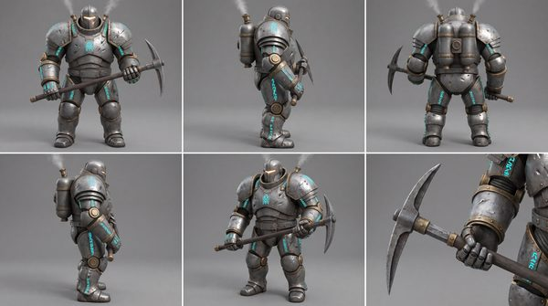
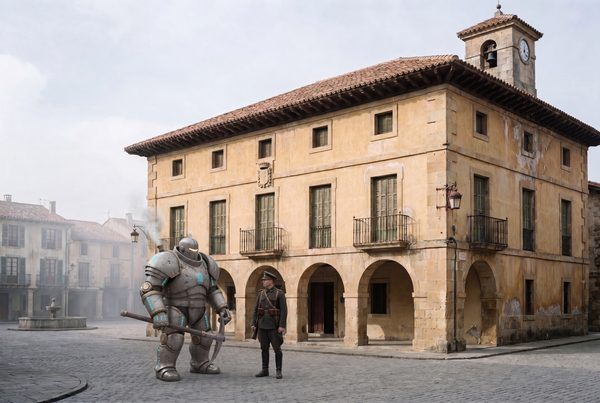
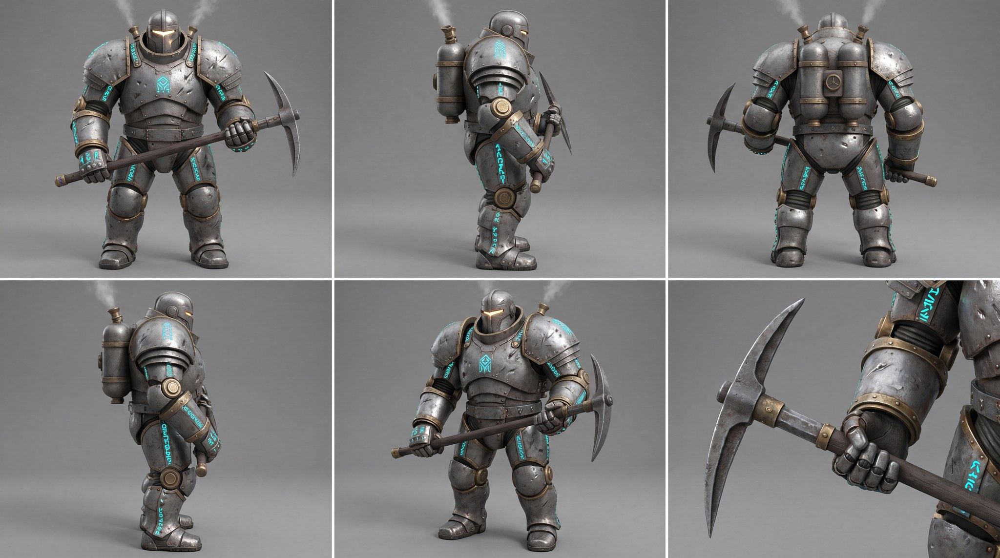
ПЕРВАЯ модель САМОХОДНОЙ БРОНИ за всю серию. До Книги 4 самоходная броня сержантов показывалась только обобщённо/безымянно (см. свод: рост ~2 м, оружие «траншейная метла»/«слонобой»/огнеметатель, масштаб «оруженосец = увеличенная в 2,5 раза сержантская броня»). Имена моделей из сид-списка (Клевец, Рейтар, Драгун, Шериф, Каратель) впервые получают воплощение именно здесь — в металле показан «Клевец» первой модели (Книга 4, Глава 8). Книга 7 (Главы 14–17) — главный конструктивно-боевой источник по «Клевцу» за всю серию. В Книге 4 камера внутрь не заглядывала; в Книге 7 ГГ сам пилотирует «Клевец» в ночном бою с ликанами и варгарами у посёлка Золотое — и текст впервые подробно показывает посадку, подгонку доспеха, кокпит/амортизирующую прокладку, кристалл-активатор (точнее — его НЕненужность для «Клевца»), вес (~100 кг каждый), высокую температуру внутри, рунные цепочки защиты и их предел (выше 4-го круга не держат), отравление ихором, повреждение рунных цепочек привода и порог взрыва паровика. Это переводит большинство строк «в тексте только относительно» в твёрдые факты.
Класс и роль
САМОХОДНАЯ БРОНЯ — тяжёлый самодвижущийся доспех сержанта (класс ниже мехов-оруженосцев; см. свод: соотношение «оруженосец ≈ увеличенный в 2,5 раза сержантский доспех»). «Клевец» — самая старая, первой модели, машина этого класса: «самоходная броня сержантов была довольно древним „Клевцом" причем первой модели. Я такие раритеты только в конце войны видел, когда со складов выгребали все, что осталось» (Книга 4, Глава 8). По роли в отряде ГГ — охранная/тыловая, не штурмовая: «„Клевцы" – пусть и раритеты, но наличие самой плохой брони лучше ее отсутствия. Да и в атаку им не ходить. А для охраны лагеря и городской базы, „Клевцов" достаточно» (Книга 4, Глава 8). То есть «Клевец» — нижняя планка боевой техники: устаревшая, но рабочая броня для караула стоянки големов и городской базы.
Внешность и форма
- Прямого портрета силуэта текст не даёт — машина показана «снаружи», в движении и на бегу.
- Антропоморфный тяжёлый доспех сержанта (общая компоновка класса): носится человеком-сержантом, у которого «закован» в броню; ходит на двух ногах, переваливаясь (см. «Движение»).
- Многочисленные боевые отметины на броне — следы реального применения, а не парадной службы: «Многочисленные отметины на доспехах гостей говорили о том, что использовались эти раритеты отнюдь не для представительности» (Книга 4, Глава 8). То есть корпус «Клевца» иссечён следами попаданий/боёв.
- Выпускные (паровые) клапаны — видимый конструктивный элемент: при работе у клапанов выходит «небольшая струйка пара» (Книга 4, Глава 8) — точки штатного стравливания пара паропривода.
- Точная форма, оголовье, гербы в тексте НЕ описаны — в тексте только относительно (раритетный сержантский доспех первой модели).
Конструкция и принцип работы
- Паровой привод (паропривод) — как и у всех мехов/брони: при движении у выпускных клапанов выходит пар; исправная машина «не парит» сверх штатного: «Броня не парила, небольшая струйка пара у выпускных клапанов не считается, а значит, несмотря на возраст, „Клевцы" вполне себе ничего» (Книга 4, Глава 8). То есть отсутствие лишнего парения = признак исправного, не изношенного паропривода (диагностический критерий ГГ).
- Отсутствие скрипов и посторонних шумов при пробежке — второй критерий технической исправности: «скрипов или посторонних шумов я не услышал» (Книга 4, Глава 8). Несмотря на возраст первой модели, экземпляры Галноса Рогана в хорошем состоянии.
- Внутренней компоновки (кокпит, рунные цепочки, кристалл-активатор) текст в Книге 4 не разбирал — управляется сержантом-недомагом (общий принцип класса: магической силы сержанта хватает лишь на управление самоходным доспехом; см. свод, Книга 2, Глава 17).
- Самоходная броня = «тот же рыцарь/оруженосец, только менее мощный» (Книга 7, Глава 14): прямая формула ГГ — «в сущности, самоходная броня – это тот же рыцарь или оруженосец. Только менее мощный. Небольшой паровик, спрятанный в „горбу" на спине. Та же система труб, по которым превращённый в пар ихор питает рунные цепочки и приводит в движение вспомогательные механизмы самоходного доспеха» (Книга 7, Глава 14). То есть конструктивно «Клевец» — миниатюрный паро-магический голем на теле сержанта: котёл-паровик в наспинном «горбу» → трубы → пар из ихора → рунные цепочки + приводы. Подтверждает топливо — ихор (как у всех мехов).
- Кокпит-посадка и подгонка (Книга 7, Глава 15) — первый подробный взгляд внутрь: внутри — амортизирующая прокладка, плотно прилегающая к телу («Внутренняя амортизирующая прокладка самоходной брони плотно прилегает к телу»); надевается подшлемник, затем сам шлем (откидывается назад при посадке). Процедура облачения: «Левая нога, правая нога, просунуть руки в кольца силового набора» (Книга 7, Глава 15). Перед стартом сопровождающие вручную подгоняют доспех под рост пилота и закрывают все пластины брони — у «Клевца» это нельзя сделать самостоятельно: «На большинстве современных моделей это и самостоятельно можно сделать, но „Клевцы" к таковым не относятся» (Книга 7, Глава 15) — родовой архаизм первой модели.
- Кристалл-активатор «Клевцу» НЕ нужен (Книга 7, Глава 15) — важное отличие от мехов: «Кристалл-активатор тут не нужен, достаточно просто устроиться в доспехе и подать немного маны в управляющий контур» (Книга 7, Глава 15). То есть самоходная броня запускается прямой подачей маны сержанта в управляющий контур, без серебряного кристалла-активатора, обязательного для рыцарей/оруженосцев (ср. свод: у мехов кристалл-активатор запечатывает ауру пилота). Это снимает «привязку к пилоту» — в «чужой» «Клевец» можно сесть без перепрошивки кристалла (ГГ садится в доспех отсутствующего сержанта Пироса).
- Силовой набор — «кольца»/обручи (Книга 7, Главы 15, 17): руки пилота продеваются в «кольца силового набора»; при разборке повреждённой машины «один из обручей силового набора оказался погнут, и пришлось повозиться, чтобы вытащить из него руку» (Книга 7, Глава 17). То есть приводная мускулатура доспеха — система колец/обручей, охватывающих конечности пилота.
- Высокая температура внутри — фирменная «детская болезнь» первого поколения (Книга 7, Глава 14): «ещё одной характерной особенностью, как у большинства моделей самоходной брони первого поколения, является довольно высокая температура внутри доспеха… Где-то через час тебе становится жарко. А ко второму ты ощущаешь себя горшком, поставленным в раскалённую докрасна печь. Зимой удобно, но летом – та ещё мука» (Книга 7, Глава 14). В бою: «слишком близкое и яростное шипение пара и разом потеплевшая спина» (Глава 15) — наспинный паровик греет спину пилота вплотную.
- Чужой доспех неприятен в носке (Книга 7, Глава 15): «Залезать в чужой самоходный доспех было непривычно… Словно надеваешь чужую, ношеную, да ещё нестираную одежду» — амортизирующая прокладка хранит запах прежнего пилота («пропахший чужим потом подшлемник»). Реконфирм общеклассового нежелания пилотов пользоваться чужими машинами (ср. рыцари/оруженосцы), усиленного тем, что броня надевается «на тело».
- Отключение паровика (Книга 7, Глава 17): после боя паровик можно штатно отключить изнутри («сел на землю и отключил паровик самоходной брони»); признаки перегруза — паровик «больше не гудел и не шипел, а лишь раздражённо булькал», спинная пластина раскалилась «словно печка, обжигая даже сквозь плотную подкладку» (Глава 17).
- Возраст/устаревание: «Клевец» первой модели — реликт, который к концу Великой войны выгребали со складов как последний резерв. В мирное время сержант с собственной самоходной бронёй — «птица достаточно редкая» (Книга 4, Глава 8). В Книге 7 «Клевцы» прямо названы «старыми, если не сказать древними моделями», которые «постоянно ломаются» даже под присмотром механиков Галноса (Глава 14); реликт времён, когда «сержанты и первые паро-магические големы лупцевали друг друга самыми обычными мечами и копьями… топорами, молотами и булавами» (Глава 16).
Движение и походка
- Тяжёлый, грохочущий двуногий ход вперевалку: на пробежке по приказу ГГ «сержанты побежали, неуклюже переваливаясь с ноги на ногу. Тяжелые доспехи грохотали по мостовой не хуже оруженосцев» (Книга 4, Глава 8). То есть по громкости/тяжести поступи «Клевец» сопоставим с мехом-оруженосцем, хотя сам относится к более низкому классу (сержантская броня).
- Походка неуклюжая, переваливающаяся с ноги на ногу — характерная черта тяжёлого доспеха.
- Способен пробежать дистанцию (через всю площадку и обратно) без потери исправности — выносливость подтверждена тест-пробежкой (Книга 4, Глава 8). Маршевая выносливость подтверждена прямо (Книга 7, Глава 14): «Самоходная броня на то и самоходная, что может выдерживать приличные марши» — сержанты в «Клевцах» способны своим ходом дойти до дальних шахтёрских посёлков (хотя ГГ предпочитает везти их на фургонах из-за риска поломки и веса).
- Управление с непривычки (Книга 7, Глава 15) — изнутри: свежевлезший в «Клевец» пилот неуклюж: «Движения неуклюжие, реакция запаздывает – практики давно не было, но в целом приемлемо». Шлем сильно ограничивает обзор — «Демоны, как же эта штука ограничивает обзор!» (Глава 15). При габаритах доспеха и наспинном «горбе» легко кого-нибудь зацепить: «про мои нынешние габариты и горб на спине забывать не стоит, а то можно кого-нибудь ненароком пришибить».
- Проблема мелкой моторики (Книга 7, Глава 16) — общеклассовый порог мастерства: «Толстые, окованные сталью пальцы слушаются плохо. Мелкая моторика всегда была главной проблемой, что на рыцарях и оруженосцах, что в самоходных доспехах, отделяя опытного рыцаря, сержанта или оруженосца от новичка» (Глава 16). То есть точность манипуляторов «Клевца» — тот же навык, что у мехов, и главный различитель ветерана и новичка.
- Боевые повреждения привода (Книга 7, Главы 16–17): при разрыве рунных цепочек левая рука «практически не подчиняется… поврежденные рунные цепочки отказываются повиноваться. А самостоятельное движение выходит плохо, словно двигаешь рукой, сжимающей гантель килограммов в десять» (Глава 16) — то есть с перебитыми цепочками привода конечность можно двигать лишь собственной мускульной силой против сопротивления механики (~10 кг нагрузки). Шлем может оторвать в рукопашной: «Фиксатор и защёлки не выдержали, и внезапно я остался без шлема. Его просто оторвало от доспеха!» (Глава 16). Когти ликана рвут сталь доспеха на спине, но до плоти добираются не сразу.
Размер и сравнения
- ВЕС НАЗВАН ПРЯМО (Книга 7, Глава 14): «каждый „Клевец" весит под сотню килограммов». Дословно: «Если что-то случится, то как прикажете их обратно тащить? На себе?.. Каждый „Клевец" весит под сотню килограммов!» (Глава 14). Это первая точная массовая характеристика самоходной брони за всю серию — ~100 кг на доспех (без пилота). Сопоставимо: выбравшись из машины, ГГ ощущает, «словно сотню лишних килограммов скинул… да где-то так и есть, если вспомнить вес самоходного доспеха» (Книга 7, Глава 17) — реконфирм порядка ~100 кг.
- Рост «Клевца» в метрах прямо не назван — в тексте только относительно (общеклассовый ориентир самоходной брони ~2 метра, см. свод, Книга 2, Глава 17: «двухметровых самодвижущихся доспехов»); масштаб «оруженосец ≈ увеличенный в 2,5 раза сержантский доспех» (Книга 1, Глава 8).
- Громкость поступи сопоставима с оруженосцем: «Тяжелые доспехи грохотали по мостовой не хуже оруженосцев» (Книга 4, Глава 8) — косвенный ориентир значительной массы, хотя класс ниже мехового.
- Взрыв паровика «Клевца» меньше, чем у оруженосца (Книга 7, Глава 16): «взрыв паровика сержанта несравним со взрывом паровика оруженосца, но мне бы мало не показалось» (Глава 16) — масштаб самоликвидации/детонации самоходной брони заметно ниже мехового, но всё ещё опасен для пилота.
Вооружение и защита
- Штатное тяжёлое ручное оружие сержантской брони — у двух «Клевцов» Галноса Рогана: две «траншейные мётлы» и два «слонобоя»: «Две траншейные метлы, и два слонобоя» (Книга 4, Глава 8). То есть пара «Клевцов» несёт по одному «слонобою» (противомеховое рунное ружьё 14 мм, см. «Слонобой») и по одной «траншейной метле» (площадное оружие против пехоты; отдача рассчитана на самоходную броню — см. свод).
- Оружие конкретного «Клевца» сержанта Пироса (Книга 7, Глава 15): трёхствольная «траншейная метла» («больше похожая на небольшую пушку») + «Страж» (револьвер), закреплённый «в специальном фиксаторе снаружи доспеха». ГГ предпочёл бы привычную глефу, но Пирос её не носит: «Я бы предпочёл привычную глефу, но сержант Пирос носит трёхствольную траншейную метлу… Плюс „Страж", закреплённый в специальном фиксаторе снаружи доспеха. Но револьвером пользоваться в самоходной броне не очень удобно» (Глава 15). То есть «Клевец» может нести глефу (рунное древковое оружие, как у мехов) либо «траншейную метлу»; пистолет крепится во внешнем фиксаторе доспеха.
- «Траншейная метла» — механика заряжания (Книга 7, Глава 16) — НОВОЕ: «Это выстрелов в „метле" всего три, пистонов в специальном небольшом барабане, а скорее просто кольце, аж пятнадцать штук. Хватит на пять полных перезарядок этой миниатюрной пушки» (Глава 16). То есть «траншейная метла» = трёхствольное капсюльное (пистонное) дробовое орудие: 3 ствола (3 выстрела залпом/по очереди), отдельное кольцо/барабан на 15 пистонов (запал) = 5 полных перезарядок; заряжается «толстым бумажным патроном» (картечь) в ствол, при защёлкивании «блок с пистонами автоматически проворачивается, взводятся курки». Стреляет лёгкой картечью (упоминается «лёгкая картечь»), эффективна почти в упор по ликанам. После каждого выстрела «метлу» нужно «ломать» (переломная схема) и досылать новый патрон.
- Защита: ГГ прямо относит «Клевца» к «самой плохой броне» среди боевой техники — но «наличие самой плохой брони лучше ее отсутствия» (Книга 4, Глава 8). То есть бронирование первой модели слабое/устаревшее по современным меркам, годное лишь для тыловой охраны, не для атаки.
- Защита от стрел и магии (Книга 7, Глава 16) — КЛЮЧЕВОЕ уточнение: «Самоходному доспеху даже зачарованные стрелы не особо страшны» — корпус «Клевца» держит даже зачарованные варгарские стрелы (застревают в пластинах, не пробивая). С магией сложнее: «защитные рунные цепочки на самоходной броне присутствуют, создавая подобие защиты паро-магических големов. Но они довольно слабые. Прямого удара чего-то выше четвёртого круга вряд ли выдержат» (Глава 16). То есть рунные цепочки самоходной брони дают ослабленное подобие меховского щита, с порогом пробоя ≈ выше 4-го круга заклинаний — первый числовой порог магической защиты самоходной брони за серию. ГГ намеренно прикрывает «Клевцом» раненых и Прию от стрел.
- Живучесть в рукопашной (Книга 7, Глава 16): несмотря на недостатки, «Клевцы… довольно крепкие ребята, приспособленные именно к такой вот жёсткой схватке на коротке» — реликт эпохи, когда сержанты и первые мехи дрались мечами/копьями/топорами/молотами/булавами. «Клевец» ГГ выдерживает прямой таран исполинского ликана и серию разрывающих ударов когтей (сталь спины вскрыта, рунные цепочки левой руки перебиты, шлем оторван), но продолжает функционировать до конца боя — «старенький „Клевец" уже давно превысил все нормы возможной живучести самоходного доспеха и просто каким-то чудом ещё не только функционирует, но и не взорвался» (Книга 7, Глава 16).
- Отравление ихором пилота (Книга 7, Главы 16–17): при повреждении паропровода «насыщенный ихором пар хлещет из всех щелей, окутав самоходный доспех ядовитым облаком» (Глава 16); долгое дыхание этим паром даёт отравление ихором (тошнота, слабость, кровь из носа, помутнение сознания) — ГГ лечат настойкой Ходеля «при отравлениях ихором» (Глава 17). Подтверждает общеклассовую опасность пробитого паропровода (горячий ихорный пар), показанную ранее на мехах.
- Невозможность самостоятельно выбраться из повреждённой машины (Книга 7, Главы 16–17): при повреждении «все защёлки были помяты или сломаны. Тут молот нужен и зубило»; чтобы извлечь пилота, шахтёры ломают пластины ломами — «два лома, два человека и те же две минуты», помятые пластины «щёлкали одна за другой, словно спелые орехи». После такого боя «Клевец» проще списать, чем чинить: «проще будет купить два новых комплекта подержанной самоходной брони».
- Корпус несёт многочисленные следы попаданий (боевые отметины) — пережил реальные бои (Книга 4, Глава 8).
Развитие по томам
- Книга 7 (Глава 24 — Вольная марка, Степной Страж): списание «Клевцов» Гарна Велька — их сменяет дар Готмала, два десятка «Рейтаров». Маркграф Тьерн Готмал, прибыв с благодарственным визитом, вспоминает, в чём ГГ воевал в Золотом: «Со времён своей юности не видел „Клевцов" в деле… они считались редкостным старьём». ГГ слегка обижается за «верно послужившие комплекты самоходной брони»: «Да, „Клевцы" были потёртыми, потерявшими блеск и товарный вид, но свою задачу выполнили до самого конца. Правда восстановлению не подлежат, но после таких повреждений оно и неудивительно» (Книга 7, Глава 24). То есть оба «Клевца», разбитые в рукопашной с ликанами у Золотого (Главы 16–17), окончательно списаны как нечинимые; на смену маркграф дарит два десятка свежевыпущенных «Рейтаров» — современную серийную самоходную броню (см. «Рейтар»). Реконфирм established-статуса «Клевца» как раритета первой модели («редкостное старьё» уже во времена юности Готмала) и established-факта о его недолговечности после тяжёлого боя. Боя «Клевца» в кадре нет — лишь ретроспективное упоминание и подтверждение списания. (Книга 7, Глава 24)
- Книга 7 (Главы 14–17 — Южная марка, Горан → шахтёрский посёлок Золотое): ПЕРВЫЙ полноценный БОЙ «Клевца» в кадре и главный конструктивно-боевой источник по модели за всю серию — ГГ лично пилотирует «Клевец» против ликанов и варгаров. Расследуя вспышку изумрудной чумы, ГГ с малым отрядом (Энно-маг, два сержанта на «Клевцах» — Ардар и отлучившийся Пирос, шесть латников) прибывает в Горан почтовым дирижаблем; рыцарей/оруженосцев в захолустье нет, своих машин на дирижабль не взяли, так что единственная боевая техника отряда — два старых «Клевца» сержантов (содержатся людьми Галноса, но «постоянно ломаются»). (1) Транспортировка и причина (Глава 14): «Клевцы» могли бы дойти своим ходом («самоходная броня… может выдерживать приличные марши»), но из-за веса (~100 кг каждый) и риска поломки без механиков ГГ грузит их на армейские фургоны с высокими бортами. Здесь же — программная формула «самоходная броня = тот же рыцарь/оруженосец, только менее мощный; небольшой паровик в „горбу" на спине; ихорный пар → рунные цепочки» и описание высокой температуры внутри (через час жарко, через два — «горшок в раскалённой печи»). (2) Посадка в чужой «Клевец» (Глава 15): сержант Пирос самовольно ушёл в кабак, и ГГ садится в его доспех — первый подробный кокпит: амортизирующая прокладка, подшлемник/шлем, кольца силового набора, ручная подгонка сопровождающими (самому «Клевцу» недоступна), кристалл-активатор не нужен (пуск прямой подачей маны в управляющий контур). Оружие Пироса — трёхствольная «траншейная метла» + «Страж» во внешнем фиксаторе (глефы у Пироса нет). (3) Ночной бой у Золотого (Главы 15–16): колонна на двух фургонах попадает в засаду варгаров (стрелы с деревьев — «Клевцу» нестрашны даже зачарованные) и ликанов; ГГ из «метлы» в упор сносит ликану морду (механика заряжания «метлы»: 3 ствола, кольцо на 15 пистонов = 5 перезарядок, бумажный патрон с лёгкой картечью). Прикрывает «Клевцом» Прию и раненых от стрел; уточняет порог магзащиты — рунные цепочки самоходной брони «выше четвёртого круга вряд ли выдержат». (4) Рукопашная с исполинским ликаном (Глава 16): ГГ таранит «Клевцом» прыгнувшего на Энно гигантского ликана — «метла» разваливается, шлем отрывает («фиксатор и защёлки не выдержали»), когти вскрывают сталь спины, перебивают рунные цепочки левой руки (рука движется «как с гантелью в 10 кг»), из щелей хлещет ихорный пар. ГГ добивает тварь сломанным штыком револьверной винтовки. «Клевец» «давно превысил все нормы живучести… каким-то чудом не взорвался». (5) Развязка (Глава 17): альва-видящая (старый враг ГГ из прошлого-будущего) с остатками свиты уходит «вничью»; ГГ отключает булькающий паровик, травится ихорным паром (лечат настойкой Ходеля), сам выбраться из помятого доспеха не может — шахтёры ломают пластины ломами («два лома, два человека, две минуты»), один обруч силового набора погнут. Вывод: оба «Клевца» (свой и Ардара) после боя проще списать, чем чинить. Вклад чанка — колоссальный: вес ~100 кг, кокпит/посадка, ненужность кристалла-активатора, кольца силового набора, механика „траншейной метлы", порог магзащиты „выше 4-го круга", защита от зачарованных стрел, режимы повреждения (перебитые цепочки, оторванный шлем, ихорное отравление), масштаб взрыва паровика < оруженосца, демонтаж пилота ломами. (Книга 7, Главы 14, 15, 16, 17)
- Книга 6 (Глава 26 — Степной Страж, операция захвата Первой): «Клевцы» в боевом оцеплении — реконфирм охранной/тыловой роли. При штурме логова шпионки ГГ расставляет силы оцепления и среди них — два сержанта в «стареньких „Клевцах"»: «два сержанта в стареньких „Клевцах"» (плюс Галнос в «Карателе» и десяток латников) окружают дом и «крутят всех, кто выходит» (Глава 26). То есть «Клевцы» отряда «Чёрный феникс» по-прежнему служат именно для охраны/оцепления/задержания (не для штурма — проламывает дверь и расстреливает защитников «Каратель» Галноса, а «Клевцы» держат периметр). Эпитет «старенькие» реконфирмит established-статус модели как раритета первой модели. Боя самих «Клевцов» в кадре нет. (Книга 6, Глава 26)
- Книга 4 (Глава 8 — Степной Страж): Первое и единственное появление самоходной брони в металле за всю серию. В наёмный отряд ГГ «Чёрный феникс» нанимается сержант Галнос Роган с двумя другими сержантами, двумя комплектами «Клевца» первой модели и пятью латниками — все три года прослужили в отряде «Бесстрашные Мерзавцы». ГГ устраивает «Клевцам» тест-пробежку через площадку: машины бегут вперевалку, грохочут «не хуже оруженосцев», но без скрипов/лишнего парения — вывод: «несмотря на возраст, „Клевцы" вполне себе ничего». Состояние брони ГГ оценивает как «приличное». Оружие пары — две «траншейные мётлы» + два «слонобоя». Назначение в отряде — охрана городской базы и стоянки големов (не штурм). Латники Рогана безоружны — ГГ вооружает их трофейными револьверными винтовками из своих големов (Книга 4, Глава 8). Позже сержанты с «Клевцами», свободные от караула, помогают механикам и «змейкам» обслуживать мехи в ремонтном «муле» (Книга 4, Главы 10–11). (Книга 4, Глава 8)
Известные экземпляры и пилоты
- Два «Клевца», ходивших с ГГ в Горан (Книга 7, Главы 14–17) — носят их сержанты Ардар (остался при доспехе весь бой, выжил) и Пирос (самовольно ушёл в кабак перед выходом; его «Клевец» с трёхствольной «траншейной метлой» + «Стражем» пилотирует сам ГГ в ночном бою у Золотого). Оба доспеха после рукопашной с ликанами разбиты в хлам (помяты пластины, перебиты рунные цепочки, оторван шлем) — годны лишь на списание. Это «Клевцы» отряда «Чёрный феникс», содержавшиеся людьми Галноса Рогана (Книга 7, Главы 15–17).
- Два «Клевца» первой модели отряда «Чёрный феникс» — носят их сержант Галнос Роган (командир тройки сержантов, с посеребрёнными сединой усами и пышными бакенбардами) и один из двух его сержантов. Прежде служили в наёмном отряде «Бесстрашные Мерзавцы» (три года); ушли «из-за смены руководства отряда» (Галнос: «Не люблю работать с идиотами»). Вооружение пары: две «траншейные мётлы» + два «слонобоя». Роль — охрана базы/стоянки «Фениксов» в Степном Страже (Книга 4, Глава 8).
- Производитель/поколение: не названы; «первая модель» — раритет времён до/начала Великой войны, в строю остался лишь как складской резерв (Книга 4, Глава 8).
«Красный дракон»
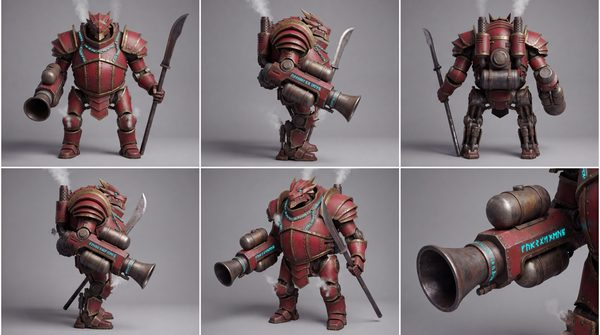
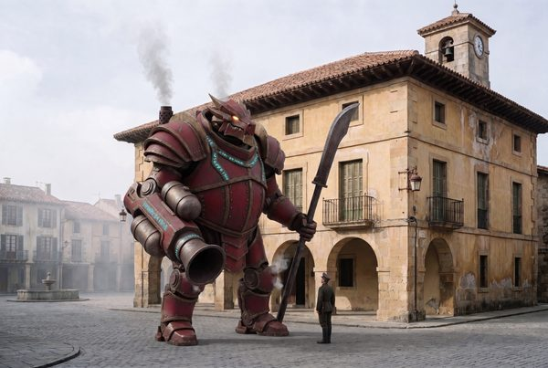
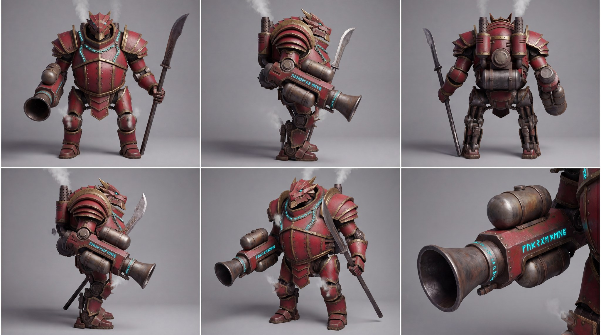
Класс и роль
Лёгкий паро-магический голем класса ОРУЖЕНОСЕЦ (низший из трёх классов). Второе поколение мехов: «„Красные драконы" … относятся ко второму поколению» (Книга 2, Глава 9). Производитель — род Флона, помешанный на «драконах»: «Род Флона помешан на этих ящерицах. У них целая радужная линейка этих самых драконов» (Книга 2, Глава 8). Концептуально — попытка сделать из лёгкого оруженосца что-то похожее на более тяжёлого рыцаря: «„Красные драконы" – неплохая попытка сделать из легкого оруженосца, что-то похожее на более тяжелого рыцаря» (Книга 2, Глава 8). Оценка ГГ: «попытка скрестить ежа с ужом – превратить легкого оруженосца в рыцаря» (Книга 2, Глава 9).
Внешность и форма
- Массивный корпус, напоминающий откормленного «Слона»: «Парочка массивных напоминающих откормленного „Слона" „Красных драконов"» (Книга 2, Глава 8). — То есть силуэт грузный, раздутый.
- Левый манипулятор более крупный (под огнеметатель) — асимметричная компоновка (Книга 2, Глава 8).
- Часть «радужной линейки» драконов рода Флона; «Красные» отличаются от «Зелёных» — последних «легко узнать по клиновидному корпусу» (Книга 2, Глава 9), что косвенно означает: у «Красного» корпус НЕ клиновидный, а грузный/«откормленный».
Конструкция и принцип работы
- Базовая компоновка оруженосца (котёл, рунные цепочки, кресло пилота, кристалл-активатор — общеклассовое).
- Перетяжелён и страдает нарушенной центровкой: «из-за этого мех перетяжелен и у него слегка нарушена центровка» — следствие навешивания брони и огнемёта на лёгкий корпус (Книга 2, Глава 8).
- «Детские болезни» второго поколения: «Зеленые драконы – третье поколение. И лишены детских болезней своих красных предшественников, которые относятся ко второму поколению» (Книга 2, Глава 9). То есть «Красный дракон» — более ранняя, «сырая» версия концепции.
- Сложен в управлении, особенно при слабой синхронизации: «Управлять им сложно, особенно при слабой синхронизации» (Книга 2, Глава 8).
Движение и походка
- Из-за перетяжеления и нарушенной центровки — тяжёлая, неуклюжая управляемость; для уверенного пилотажа нужен опытный оруженосец (Книга 2, Глава 8).
- Новички-первокурсники под управлением драконов и оруженосцев вообще двигаются «с вальяжностью рыцарей» (медленно, грузно) — пример: Девор на «Красном драконе» не успел сманеврировать назад под огнём (Книга 2, Глава 11).
- Значительно медленнее «Егеря» (Глава 26): в полуфинале командных схваток «Красный дракон» Эдана пытается перехватить прорывающийся к флагу «Егерь» ГГ, но безуспешно — «В скорости он значительно проигрывает „Егерю"». ГГ рассчитывает, что «дракончику» придётся не догонять, а перехватывать на курсе, и всё равно уверенно отрывается (Книга 2, Глава 26).
Размер и сравнения
- Массивнее обычного оруженосца — «как откормленный „Слон"» (Книга 2, Глава 8). Прямое сравнение габаритов с «Слоном» (см. «Слон»).
- Точные метры/тонны в тексте НЕ названы — размер дан только относительно.
Вооружение и защита
- Хорошая броня (по меркам оруженосца): «У него хорошая броня» (Книга 2, Глава 8) — за счёт неё мех и перетяжелён.
- Огнеметатель в левом, более крупном манипуляторе: «огнеметатель в левом, более крупном манипуляторе» (Книга 2, Глава 8). Уточнение (Книга 6, Глава 9): излучатель огнемёта оформлен раструбом на конце «толстого левого манипулятора» — «выставив вперёд толстый левый манипулятор с раструбом огнеметателя». Огнемёт бьёт волной пламени, «если и уступающей дыханию дракона, то ненамного»; дальность/прицеливание сильно зависят от опыта пилота (новичок не рассчитывает дистанцию).
- Стандартная рунная глефа оруженосца (световое копьё) — общая для класса; на тренировке Девор на «Красном драконе» ведёт огонь световым копьём (мелкая моторика «не задалась») (Книга 2, Глава 11).
- В турнире/на тренировках навешивают щиты-мишени (рунные артефакты, отваливающиеся при наборе повреждений) — личная броня модели роли почти не играет (общетурнирная условность, см. свод / Книга 2, Глава 11).
Развитие по томам
- Книга 8 (Глава 5 — столица Дхивала Сихим, стоянка големов в Белой цитадели): «Красный дракон» подтверждён как экспортная/лицензионная модель, состоящая на вооружении дхивальских князей — и показан в характерном дхивальском «парадном» исполнении. На стоянке паро-магических големов в крепости князя всех князей ГГ видит «десяток вполне себе современных „Красных драконов"», соседствующих с местной копией «Слона» — «Десяток вполне себе современных „Красных драконов", соседствовали с чем-то весьма напоминающим древнего „Слона", но собранного на местный лад» (Глава 5). (1) Дхивальская парадная отделка: в отличие от утилитарных эданских машин, дхивальские «Красные драконы» богато украшены — «корпус машин был разукрашен так, что эданским рыцарям и не снилось: всевозможные позолоченные и посеребренные завитушки, причудливые узоры растительного орнамента. Кажется, даже драгоценные камни есть» (Глава 5). ГГ оценивает это как «красиво, но опять же ужасно непрактично» — «Не боевые машины, а какие-то драгоценные вазы». (2) Знамёна на шестах: у всех машин стоянки «сзади на двух длинных шестах висели какие-то тряпки» — знамёна; ГГ считает это «в бою жутко не практично» (Глава 5). (3) Косвенный размерный/технологический ориентир: «десяток вполне себе современных» машин — то есть в Дхивале «Красный дракон» (2-е поколение по эданским меркам) считается современной машиной, что подтверждает технологическое отставание княжеств. Конструктивно новых внутренних деталей чанк не даёт; вклад — «Красный дракон» как экспортная модель на службе Дхивала + дхивальская парадно-украшенная (позолота, орнамент, камни, знамёна) ипостась модели. (Книга 8, Глава 5)
- Книга 6 (Главы 12, 13 — столица Эдан, бой на площади перед Башней): «Красный дракон» — боевой оруженосец отряда ГГ в засаде, добивает рыцаря глефой и преследует пехоту огнемётом. Конкретный экземпляр входит в импровизированное полукопьё ГГ (вместе с «Арбалетчиком» и гвардейским «Чёрным драконом») и работает из «крабовой ловушки» на боковой улице. (1) Добивание рыцаря рунной глефой в упор: в финале боя «Красный дракон» заходит мятежному «Чёрному дракону» с тыла и «в два быстрых удара едва не срубил своему более тяжёлому „родственнику" правую ногу. И ловко ушёл в сторону, когда огромная машина начала падать» (Глава 12) — наглядно: рунной глефой оруженосца можно за пару ударов перерубить ногу рыцаря; манёвренность «Красного дракона» позволяет уйти из-под падающей туши. (2) Огнемёт по бегущей пехоте: «Красный дракон» под управлением лассы Фатал «поджаривал им пятки… огнеметатель в левом манипуляторе „Красного дракона"» — преследует и сжигает удирающих «мастеровых» (Главы 13). На подавление обороны Башни «Красный дракон» «поводил из стороны в сторону левым манипулятором с огнемётателем» — реконфирм огнемёта в левом манипуляторе как штатного оружия модели. (3) Догоняет бегущего человека: оруженосцы (включая «Красного дракона») рассеивают бегущих «мастеровых» — «„Мастеровым" придётся поставить спортивный рекорд, чтобы убежать от паро-магического голема»; не меньше двадцати мятежников гибнут «под железной пятой големов, либо сгорели» (Глава 13) — реконфирм, что даже грузный оруженосец легко догоняет пешего. Конструктивно новых деталей чанк не даёт; вклад — боевое применение глефы (добивание рыцаря) и огнемёта „Красного дракона" в городе. (Книга 6, Главы 12, 13)
- Книга 6 (Главы 9, 10 — столица Эдан, мятеж «мастеровых»): первый показ «Красного дракона» в реальном городском бою — и наглядная демонстрация двух его established-слабостей (центровка и взрыв изнутри). «Красный дракон» состоит на вооружении «Пурпурной роты» (личной гвардии императора); один экземпляр угнан переметнувшимся техником и брошен мятежниками против группы императора в парке у фольхстага. (1) Гвардейская раскраска: «Пурпурный цвет и обилие позолоты на корпусе указывали на то, что машина принадлежит „Пурпурной роте" – личной гвардии императора» (Глава 9) — то есть «Красные драконы» гвардии красят в пурпур с обильной позолотой. (2) Подтверждена нарушенная центровка: под неопытным пилотом «Дракона» «слегка занесло, и он едва не раздавил парочку зазевавшихся горожан… „Красного дракона" занесло в другую сторону». ГГ комментирует: «все „драконы" страдают нарушенной центровкой и требуют определённого опыта в пилотировании» (Глава 9) — прямое подтверждение established-факта (ср. Книга 2). По хаотичной, «пьяной» походке ГГ сразу определяет, что за рычагами не настоящий оруженосец, а новичок: «двигается он неправильно, словно пилот новичок». (3) Огнеметатель — на толстом левом манипуляторе, с раструбом: «выставив вперёд толстый левый манипулятор с раструбом огнеметателя» (Глава 9) — подтверждает асимметричную компоновку (крупный левый манипулятор под огнемёт) и уточняет, что излучатель огнемёта оформлен раструбом. В бою «Дракон» даёт два залпа волной пламени («волна пламени, если и уступающая дыханию дракона, то ненамного»), но из-за неопытности пилота не рассчитывает дистанцию и прицел — первый залп заливает огнесмесью часть парка, второй разбивается о магический щит маркизов. (4) Гибель — взрыв изнутри, остаются ноги: разозлённые маги добивают машину — «„Красный дракон" замер, неуклюже дёргаясь и шипя паром. А затем его корпус просто взорвался изнутри, разметав остатки машины… А от могучей машины остались только ноги. Да и те, постояв пару мгновений, рухнули на землю» (Глава 9). Наглядная картина гибели меха: детонация паровика/огненного кристалла разносит верхнюю часть корпуса, а ноги ещё мгновение стоят. (5) Сравнение хода „хороший пилот ↔ новичок": следом в парк выходят ещё «Красный дракон» и «Арбалетчик» «Пурпурной роты», но «эти управляются нормальными пилотами» — по плавности движения ГГ сразу отличает штатных гвардейцев от угонщика (Глава 9). (6) История инцидента: лейтенант Овелат докладывает, что во время заседания расположение роты атаковали мятежники, и «одному из техников роты, переметнувшемуся на сторону нападавших, удалось завладеть оруженосцем типа „Красный дракон"» (Глава 9); этот единственный угнанный мех и есть взорванный в парке. Среди потерь «Пурпурной роты» от диверсии — «угнанный одним из техников „Красный дракон"» и два повреждённых «Карателя» (Глава 10). Конструктивно новых внутренних деталей нет; главный вклад — боевая демонстрация центровки и взрыва корпуса изнутри + гвардейская (пурпур+позолота) ипостась модели. (Книга 6, Главы 9, 10)
- Книга 5 (Пролог — Аркнейский перевал; видение прошлого-будущего ГГ): подбитый «Красный дракон» в составе отряда ГГ на последней обороне горного перевала. Машина уничтожена и занесена снегом — «занесённый снегом корпус „Красного Дракона"» (Книга 5, Пролог). Техник Борода по приказу ГГ ищет в баках погибшего «Красного Дракона» остатки огнесмеси для огнемёта «Краба» ГГ — то есть «Красный дракон» (с его огнемётом в крупном левом манипуляторе) служит донором огнесмеси для уцелевшей машины (Книга 5, Пролог). Подтверждает established-факт: «Красный дракон» несёт огнеметатель и баки с огнесмесью (ср. Книга 2). Конструктивных новых деталей чанк не даёт — машина показана только как занесённый снегом остов. (Книга 5, Пролог)
- Книга 2 (Глава 26 — полуфинал команд): «Красный дракон» Эдана охраняет вражеский флаг и пытается остановить прорыв «Егеря» ГГ, перекрывая ему путь огнём из глефы — луч описан как «толщиной в два пальца луч, больше похожий на сплетённый из молний канат» (общий вид светового копья оруженосца; см. свод). На дистанции и из-за складок местности попадания не достигают цели — «бесполезный перевод маны». ГГ «потанцевал» с «Дракончиком» накоротке, поймал его на манёврах при поддержке «Зелёного дракона» Шилин (несколько попаданий в борта) и оторвался к флагу. Подчёркнута неспособность «Красного дракона» догнать «Егеря» (Книга 2, Глава 26).
- Книга 2: В полевом лагере среди шести свободных мехов команды стоит пара «Красных драконов» (Глава 8). ГГ отмечает, что опытные оруженосцы предпочтут «дракона» «Бунтарю», но новичкам с ним связываться рано — «С „Драконами" им рано связываться» (Глава 8). На итоговой тренировке-засаде бывший капитан второкурсников Девор, пересевший с «Бунтаря» на «Красного дракона» ради статуса, идёт на острие атаки тройки; не успевает сманеврировать назад под перекрёстным огнём четырёх оруженосцев команды Велька и получает «условно уничтожен» (дым + сигнальные ракеты) (Книга 2, Глава 11). Контраст «Красный (2-е пок., детские болезни) ↔ Зелёный (3-е пок., исправлен)» прямо проговаривается в Главе 9.
- Книга 2 (Главы 15, 16 — турнир): «Красные драконы» остаются запасными машинами команды академии — когда «Егерь» застрял в переделке, ГГ с досадой констатирует, что из запасных мехов только два «Красных дракона», а он «не особо любит „ящериц"» (Глава 15). На турнире «Красные» встречаются реже, чем более совершенные «Зелёные»: «в каждой команде не меньше двух „драконов", в основном более совершенные „Зелёные", но и „Красные" встречаются» (Глава 16).
- Книга 2 (Глава 20): Общий приговор «драконам» (и красным, и зелёным «ящерицам») по итогам индивидуальных схваток: «В индивидуальных схватках почитай половина пилотов на драконах были. В полуфинал ни один не вышел» — массовая, но не побеждающая на личном зачёте модель (главная причина — узкий обзор «драконов», уязвимость кормы; ср. «Зелёный дракон»).
Известные экземпляры и пилоты
- Десяток «Красных драконов» князя всех князей (Дхивал, столица Сихим, Белая цитадель, Книга 8, Глава 5): «вполне себе современные» по дхивальским меркам экспортные/лицензионные машины на стоянке крепости; богато украшены позолотой, серебром, растительным орнаментом и (предположительно) драгоценными камнями, с знамёнами на двух длинных шестах сзади. Пилоты не названы; часть, возможно, выполняет церемониальные функции.
- «Красные драконы» «Пурпурной роты» (личная гвардия императора, столица Эдан, Книга 6, Главы 9, 10): красятся в пурпур с обильной позолотой. Один экземпляр угнан переметнувшимся техником роты в ходе мятежа «мастеровых» и брошен против группы императора в парке у фольхстага — взорван магами изнутри (остались ноги). Ещё один «Красный дракон» — у штатного гвардейца (нормальный пилот), вышел в парк вместе с «Арбалетчиком». Имена гвардейских пилотов «драконов» не названы; угонщик — безымянный техник-предатель.
- Пара «Красных драконов» среди свободных мехов команды академии в полевом лагере (Книга 2, Глава 8).
- Один «Красный дракон» — мех бывшего капитана-второкурсника Девора на итоговой тренировке (пересел с «Бунтаря»); подбит командой Велька (Книга 2, Глава 11).
- ГГ имеет опыт управления «Драконами» в прошлой жизни: «„Бунтарями" и „Драконами" мне управлять доводилось» (Книга 2, Глава 8).
- Производитель: род Флона (Книга 2, Глава 8).
«Кузнечик»
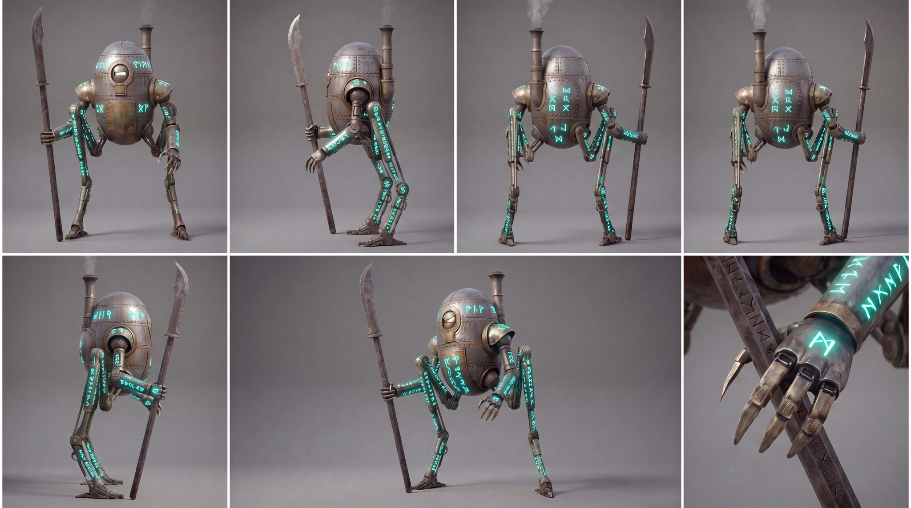
Класс и роль
Лёгкий паро-магический голем класса ОРУЖЕНОСЕЦ (низший из трёх классов: оруженосец → рыцарь → паладин). Очень старая, фактически древняя модель, но всё ещё боевая. В Книге 1 один экземпляр со снятой бронёй служит учебным мехом в Академии Доблести Тирбоза — на нём пажи третьей группы проходят первую синхронизацию (Книга 1, Глава 8).
- Несмотря на возраст, в бою страшен: под стенами Скиона древние «Кузнечики», «Молоты» и «Храбрецы», доставшиеся старым отставным рыцарям, дерзкой контратакой спасли разваливающийся правый фланг (Книга 1, Глава 8).
- Современный оруженосец за счёт новых рунных цепочек «стоит на уровне рыцаря древности» — поясняет общий принцип медленного устаревания мехов (Книга 1, Глава 8).
Внешность и форма
- Считается одной из самых уродливых моделей големов в истории империи («причудливый конструкт-уродец», «смешной уродец»).
- Овальный корпус с характерными нижними ногами, выступающими над корпусом, словно ноги известного насекомого — отсюда прозвище «кузнечик» (Книга 1, Глава 8).
- Низкая посадка кабины: кокпит расположен низко, забираться высоко не нужно.
- Антропоморфные руки с манипуляторами: правая «кисть» — четыре толстых, заострённых словно когти пальца (Книга 1, Глава 8).
- В полной комплектации несёт броню; учебный экземпляр стоит со снятой бронёй («от голема остался только „скелет" с паровым котлом»), с полностью открытой кабиной — без брони выглядит «откровенно жутко».
- Старые модели не оснащены магическими визорами; обзор — через смотровые щели (которые добавляют уязвимых мест). У учебного экземпляра без брони обзор отличный (Книга 1, Глава 8).
Конструкция и принцип работы
- Базовая компоновка как у всех мехов: похожее на трон кресло пилота, паро-магический котёл (в задней/нижней части корпуса), сеть труб-паропроводов и тонких изрезанных рунами пароприводов, по которым циркулирует испаренный ихор, питая рунные цепочки; рунные цепочки и на силовом каркасе, и на заменяемых блоках; броня (Книга 1, Глава 8).
- Кристалл-активатор вставляется в пусковое гнездо сбоку высокой спинки кресла, рядом с шеей (Книга 1, Глава 8).
- Страховочные ремни через грудь пилота обязательны перед запуском (мастер-наставник требует: «Ремни!»).
- При активации плюётся паром из высокой трубы, словно заправский паровоз / паровоз (Книга 1, Глава 8).
- Дополнительно (опционально для оруженосцев вообще) к конструкции добавляют огнеметатели с запасом огнесмеси или паровые пушки (Книга 1, Глава 8).
- Учебный экземпляр разоружён (вооружение снято) и заперт в манеже — необученные пажи к боевым големам не допускаются.
Движение и походка
- Отличная скорость при отвратительной маневренности (Книга 1, Глава 8).
- Длинные «кузнечьи» ноги мешают рукам с рунной глефой — конструктивный недостаток.
- При вставании поднимается из «спящего», «сидячего» режима, сгибая/распрямляя длинные ноги назад.
- При плохой синхронизации двигается, как хорошо принявший на грудь пьяница (общая черта плохо синхронизированных мехов); при неуверенном управлении «неуклюже дёрнул ногами», корпус «ухнул вниз, едва не царапнув брюхом землю» (Книга 1, Глава 8).
- Хорош для начального обучения: «совладав с таким „норовистым" големом, к другим привыкаешь гораздо быстрей».
- Строевые команды на манеже (вторая синхронизация ГГ, Книга 1, Глава 15): «Шагом марш! Стоп! Поворот право девяносто! Поворот лево девяносто! Шагом марш. Бегом марш. Стоп! Поворот сто восемьдесят, бегом марш.» — мех ходит, бегает и разворачивается на 90°/180° по голосовым командам наставника; учебный «Кузнечик» уверенно отрабатывает марш, бег и повороты под управляемым пилотом.
Размер и сравнения
- «увеличенный в два с половиной раза сержантский доспех» — прямое сравнение размера оруженосца с самоходной бронёй сержанта: «По сути это тот же увеличенный в два с половиной раза сержантский доспех» (Книга 1, Глава 8).
- Соотношение сил: сержант против оруженосца — что безоружный человек против матёрого медведя (шансы есть, но мизерны); про латников «и вспоминать не стоит» (Книга 1, Глава 8).
- Скорость посадки: на оруженосца забираешься в два шага («шаг сделал, второй сделал — и ты „в седле"»), тогда как «на паладина пока влезешь, успеешь о смысле жизни подумать» — относительное сравнение высоты оруженосца и паладина (Книга 1, Глава 8).
- Если наступит на человека — от человека ничего не останется (даже лёгкий разоружённый голем смертельно опасен) (Книга 1, Глава 8).
- Точные метры/тонны в тексте НЕ названы — все размеры относительные.
Вооружение и защита
- В полной комплектации: рунная глефа (основное оружие рыцарей/оруженосцев — концентратор маны, выдаёт «световое копьё», лезвие с рунами вскрывает броню), броня с рунными цепочками, опционально огнеметатели с огнесмесью / паровые пушки (Книга 1, Глава 8).
- Учебный экземпляр Академии — полностью разоружён и без брони.
- У старых моделей слабая защита обзора: только смотровые щели, без магических визоров (уязвимость).
Развитие по томам
- Книга 6 (Глава 11 — столица Эдан, мятеж «мастеровых»): краткое подтверждение «Кузнечика» как архаичной модели, непригодной для современного городского боя. ГГ, прикидывая, какие машины ещё остались в Академии Доблести Эдана для помощи императору, относит «Кузнечиков» (вместе со «Слонами») к «совсем древним големам», которых нельзя выпускать на улицы: «осталось несколько совсем древних големов, вроде „Слонов" или „Кузнечиков". Но выпускать их на улицы – обречь на гибель» — у мятежников кислотные гранаты и «слонобои» (Глава 11). Реконфирмирует established-образ «Кузнечика» как старого учебного оруженосца. В металле в этом чанке не показан; конструктивно новых деталей нет. (Книга 6, Глава 11)
- Книга 1: Учебный «Кузнечик» Академии Доблести Тирбоза (со снятой бронёй, открытой кабиной, заперт в круглом вырытом манеже у конюшен) — мех, на котором третья группа пажей проходит первую синхронизацию. На нём пробуют синхронизацию Амита Гонар (один палец дёрнулся), Константин Дорал-Ранк (уверенно ходит — есть домашняя практика) и Гарн Вельк (синхронизация ~45–50%, тонкая моторика пальцев — феноменально для первого раза, но магического резерва хватает ненадолго). Прозвище «кузнечик» — нарицательное имя модели; официальное имя мануфакторумов рода Инадр («Головорез»/«Разбойник») историей почти забыто. Модель старая, но боевая: под Скионом такие машины в руках старой гвардии спасли правый фланг (почти все погибли). (Книга 1, Глава 8)
- Книга 1: Тот же учебный «Кузнечик» — вторая синхронизация Гарна Велька (Глава 15). В наказание за дуэль наставник Раншил Толдокар гоняет ГГ по манежу строевыми командами (марш/бег/повороты на 90° и 180°); под ногой пилота «тихий гул ожившей паровой машины, разгоняющей ихор по паропроводам, словно кровь по венам». Заметный прогресс: упадок сил наступает лишь спустя несколько минут активности (против мгновенного истощения на первой синхронизации) — мех «становится послушным дополнением к телу». (Книга 1, Глава 15)
- Книга 1: Учебный «Кузнечик» выведен из строя — «покалечен»: с этого момента тренировки третьей группы пажей переводят на устаревшие, но неразукомплектованные «Слоны» («с этого дня тренировки начинаются по взрослому»). «Прощай покалеченный „Кузнечик"» — ГГ прощается с учебным мехом, на котором проходил первую и вторую синхронизацию (как именно «Кузнечик» был покалечен, в тексте не уточняется). (Книга 1, Глава 24)
-
Книга 2: Когда второй и третий курс Академии Доблести убывают на полевую практику и увозят большую часть мехов, в ангарах при ипподроме остаётся всего три древних голема — два «Слона» и один не менее древний «Кузнечик», „брат того уродца, что заперт на манеже" (то есть второй, ещё боеспособный экземпляр модели в академии, отдельный от покалеченного учебного из манежа). При прорыве стаи ликанов в Тирбоз ГГ планирует прорваться к ипподрому и запустить этого «Кузнечика» вместе со «Слонами» в бой против ликанов, хотя машины без оружия (расчёт: «и ликанов там не армия»). Подтверждает, что в академии есть более одного экземпляра «Кузнечика» и что даже безоружный оруженосец-«Кузнечик» рассматривается как боевая сила против зверолюдей. (Книга 2, Глава 5)
-
Книга 4 (Глава 19 — рейд баллея к побережью): грузовоз на шасси «Кузнечика» показан в металле и в работе. В сводном баллее ГГ «Кузнечик»-грузовоз тащит за собой прицеп — полевую кухню, прицепленную «наспех собранной жёсткой сцепкой»: «непохожий сам на себя „Кузнечик", лязгая стальными цепями, закатил свой ценный прицеп со съедобным грузом прямо в центр импровизированного лагеря» (Глава 19). Раскрыто: (1) переделанный «Кузнечик» буксирует прицеп на жёсткой сцепке (а не только везёт груз на себе); сцепка ненадёжна — «не слишком удобно, а на пересечённой местности ещё опасно… В худшем — оруженосец опрокинется и может получить повреждения» (Глава 19). (2) Грузовозы держат общий темп хуже боевых машин и к концу дневного марша отстают на ~полчаса от колонны (Глл. 18–19). (3) Пилот грузовоза — старый отставной наёмник по прозвищу «Камень»/«Повар». Подтверждает прежний факт (Глл. 16–17): древний «Кузнечик» в Вольной марке массово переделывают в грузовой тягач. (Книга 4, Глава 19)
- Книга 4 (Глава 17 — оборона Степного Стража): «Кузнечик» подтверждён как база для кустарного «грузовоза» Вольной марки. В ночном бою у северного форта к отряду ГГ пристраивается чужое копьё ополчения, в составе которого — «тот самый „грузовоз", переделанный из „Кузнечика"» (Книга 4, Глава 17). То есть древний оруженосец «Кузнечик», как и «Лучник», в Вольной марке массово переделывают в грузовые тягачи; такие гибриды отставных наёмников боеспособны лишь как тыловое усиление гарнизона и опасны дальше одного дневного перехода от города. (Книга 4, Глава 17)
Известные экземпляры и пилоты
- Учебный экземпляр Академии Доблести Тирбоза (разоружён, без брони, в манеже) — пилоты при первой синхронизации: Амита Гонар, Константин Дорал-Ранк, Гарн Вельк и прочие пажи третьей группы (Книга 1, Глава 8).
- Производитель: мануфакторумы рода Инадр (Книга 1, Глава 8).
«Лучник»
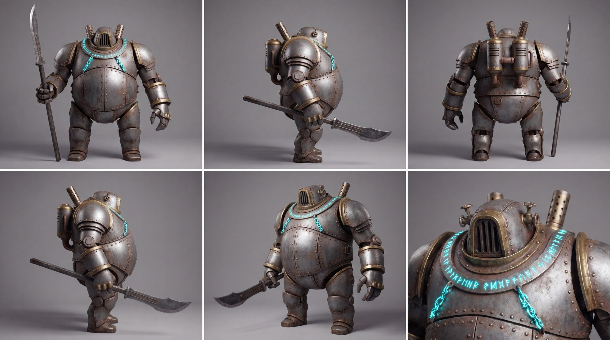
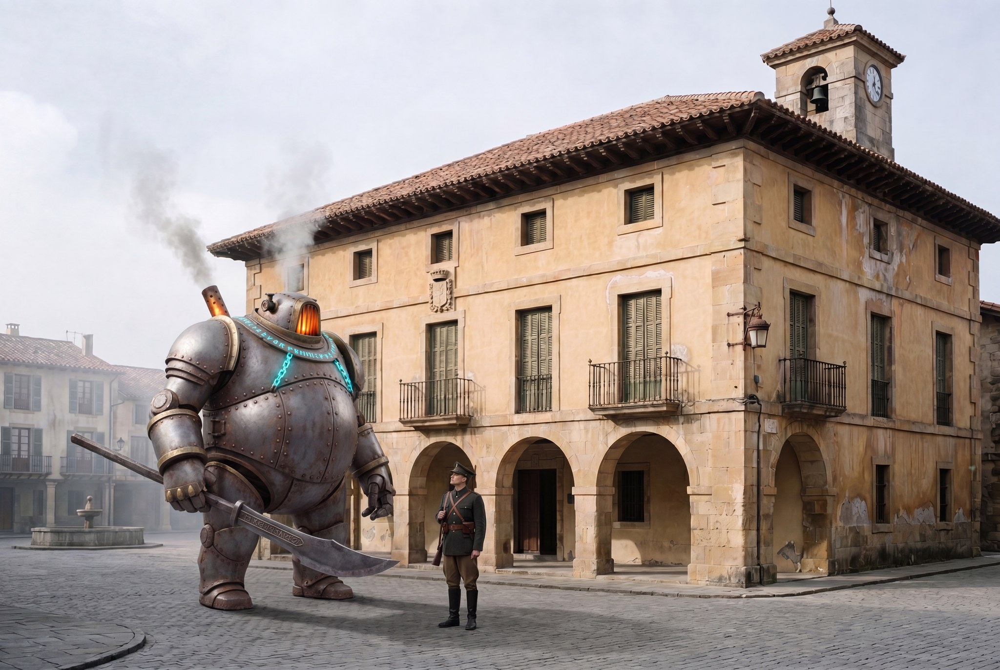
Первое появление модели «Лучник» из сид-списка — Книга 2, Глава 21 (первая командная схватка турнира, в составе команды Нокаса). В тексте показан только в бою «с экрана» (через манёвры на ристалище); конструктивных подробностей мало, форма и размер — только относительно.
Класс и роль
Паро-магический голем класса ОРУЖЕНОСЕЦ (низший из трёх классов). Производитель — мануфакторумы рода Фрид: «еще один „Лучник", дитя мануфакторумов рода Фрид» (Книга 2, Глава 21). Тот же род, что выпускает быстрые/манёвренные «Молнии» (см. «Молния»), поэтому «Лучник» концептуально близок к манёвренным машинам Фрида. В команде Нокаса «Лучники» включены в атакующие тройки/полукопья наравне с «Зелёными драконами» — роль рядовой боевой машины оруженосца, маневренной и стреляющей с дистанции (Книга 2, Глава 21).
Внешность и форма
- В первом появлении (Глава 21) прямого описания силуэта нет — машина показана только в движении через иллюзию боя.
- Финал индивидуальных схваток (Глава 28) даёт прямой портрет: «Лучник» — это «этакий чуть располневший „Бунтарь"» (Книга 2, Глава 28). То есть силуэт близок к «Бунтарю» (см. «Бунтарь»), но более плотный/раздавшийся в корпусе.
- Корпус слегка изогнут, словно лук — главная опознавательная черта, обыгрывающая имя модели: «Световое копье идет четко в слегка изогнутый, словно лук, корпус» (Книга 2, Глава 28). Этот выгнутый профиль корпуса пилот в ближней дуэли использует, подставляя под удар то один, то другой бок, чтобы прикрыть центральный щит-мишень.
- Принадлежность к линейке рода Фрид (как и «Молния») согласуется с лёгкой/манёвренной компоновкой; финал подтверждает манёвренность как сильную сторону модели (ниже).
- Силуэт как «эталон» для опознания (Книга 3, Глава 16): новейший «Стилет» (см. «Стилет») «в темноте или издалека можно спутать с „Лучниками". Сходство весьма отдаленное, но присутствует» (Книга 3, Глава 16). То есть профиль «Лучника» («чуть располневший „Бунтарь"» с выгнутым корпусом) — достаточно типовой/узнаваемый, чтобы служить ориентиром, под который издали маскируется неизвестная машина.
Конструкция и принцип работы
- Базовая компоновка оруженосца (паро-магический котёл, рунные цепочки, кресло пилота, кристалл-активатор — общеклассовое; см. свод).
- Модель не новая, но «заслуженная»: «модель не самая новая, но заслуженная» (Книга 2, Глава 28). Долгожитель класса оруженосец.
- Очень трудное обслуживание из-за избыточной компактности компоновки — главный конструктивный минус: «Главный минус – трудное обслуживание. Слишком в нем намудрили с компактностью. И чтобы добраться до одного сломанного узла, нужно предварительно демонтировать парочку рабочих, но мешающих» (Книга 2, Глава 28). Плотная упаковка узлов (что и даёт «располневший» силуэт) оборачивается тем, что для ремонта одного узла приходится снимать соседние исправные.
- Следствие сложного обслуживания — вымирание модели на войне: «Из-за этой особенности к шестому году войны рабочих „Лучников" просто не осталось» (Книга 2, Глава 28). По послезнанию ГГ: к 6-му году Великой войны исправных «Лучников» не сохранилось — нечем и некогда было обслуживать.
- Конкретных узлов привода/паросистемы текст по-прежнему не разбирает по деталям (внутрь машины камера не заглядывает).
Движение и походка
- Очень манёвренный: при угрозе один «Лучник» «резко маневрируя, ушел в сторону … стремясь по широкой дуге уйти из сектора обстрела» (Книга 2, Глава 21).
- В роли загнанной дичи «петлял, пытаясь сбросить нас со своего хвоста. Активно маневрировал, зачастую просто крутясь между лучей световых копий» — высокая увёртливость, способность уходить из-под прицельного огня (Книга 2, Глава 21).
- Оценка пилотирования (на примере Сиены): «хороший пилот. Талантливый. И с синхронизацией у нее все в порядке» — машина позволяет талантливому пилоту долго уклоняться даже под огнём четырёх мехов (Книга 2, Глава 21).
- Скорость и манёвренность относительно «Бунтаря» (Глава 28, прямое сравнение): «Скорость чуть хуже, броня капельку лучше. А в плане маневренности „Лучник", пожалуй, даже лучше „Бунтаря" будет» (Книга 2, Глава 28). Итого в иерархии оруженосцев «Лучник» — чуть медленнее «Бунтаря», но манёвреннее его (и лучше бронирован).
- Скорость почти не уступает «Егерю»: в финальной дуэли «„Лучник" если и проигрывал в скорости „Егерю", то ненамного» (Книга 2, Глава 28) — то есть это один из самых быстрых оруженосцев турнира, способный навязать «Егерю» гонку за вершину холма.
Размер и сравнения
- Точные метры/тонны в тексте НЕ названы — размер дан только относительно/неточно: класс оруженосца, сопоставим с прочими оруженосцами турнира («Зелёный дракон», «Бунтарь»).
- Прямой размерный ориентир (Глава 28): «Лучник» — это «чуть располневший „Бунтарь"», то есть габаритно близок к «Бунтарю», но плотнее/массивнее корпусом. Через «Бунтаря» наследует общеклассовое соотношение оруженосца (см. «Бунтарь» / свод: оруженосец ≈ «увеличенный в 2,5 раза сержантский доспех»).
Вооружение и защита
- Стандартная рунная глефа оруженосца (световое копьё); на турнире — навешенные щиты-мишени (общетурнирная условность, см. свод).
- Броня «капельку лучше», чем у «Бунтаря» (Книга 2, Глава 28) — то есть по бронированию «Лучник» чуть выше нижней планки оруженосцев (которую держит «Бунтарь»), хотя для турнира это почти не значимо (щиты-мишени).
- Расположение щитов-мишеней (показано в финале, Глава 28): центральный щит (самый большой и важный, прикрывает корпус спереди), боковые щиты на корпусе (левый/правый) и боковые щиты на предплечьях манипуляторов. Поражение центрального щита решает бой; попадание в манипуляторный/боковой щит «не ведёт к победе». Пилот в дуэли активно доворачивает корпус, подставляя боковые щиты, чтобы сберечь центральный (Книга 2, Глава 28).
- В бою стреляет часто, но не слишком метко и без концентрации огня: «огрызался частыми, но не слишком меткими ответными выстрелами»; «стрелял он как-то хаотично, не фокусировался на ком-то одном, а бил по тому в кого проще было попасть» (Книга 2, Глава 21). — Это характеристика пилотирования в безнадёжной ситуации, а не обязательно самой машины.
- «Голова» = система экстренного сброса пара (Книга 3, Глава 26): выступающая верхняя часть корпуса «Лучника», которую виверна принимает за голову и пытается отгрызть, — на деле система аварийного сброса пара, а не пилотская кабина: «Глупая виверна не знает, что это не голова, а всего лишь система экстренного сброса пара. Ничего, скоро познакомится» (Книга 3, Глава 26). Атака в неё пилоту не угрожает (общая компоновочная черта мехов, показанная на «Лучнике»).
- Световое копьё «Лучника» против щита оруженосца (Книга 3, Глава 26): прямое попадание в плечо переднего «Лучника» из глефы «Протектора» щит не пробило: «Луч четко впился в плечо передового „Лучника", но щит не пробил». Подтверждает, что одиночное попадание не снимает личный щит оруженосца с первого выстрела.
Развитие по томам
- Книга 6 (Глава 11 — столица Эдан, засада на бульваре Всадников): «Лучник» подтверждён как массовый оруженосец Академии Доблести Эдана и снова — по узнаваемому профилю. В составе разбитого в засаде «мастеровых» копья пажей Академии «Лучник» — один из двух условно уцелевших оруженосцев (вместе с «Бунтарём»): «Два уцелевших от копья пажей оруженосца: „Лучник" и ещё один „Бунтарь", хоть и были всё ещё условно боеспособны, но получили массу повреждений» (Глава 11). Конкретного боя/конструктивных деталей по «Лучнику» в этой сцене нет (машину после боя отгоняют к ремонтникам Академии); главное — подтверждение «Лучника» как рядового учебно-боевого оруженосца Академии Эдана, переживающего, в отличие от уничтоженных «Арбалетчика» и «Бунтаря» того же копья, городскую засаду в ремонтопригодном состоянии. Конструктивно новых деталей чанк не даёт. (Книга 6, Глава 11)
- Книга 6 (Пролог — Тирбоз, городская резиденция рода Ранк): «Лучник» подтверждён как охранный оруженосец личной гвардии железного маркграфа Александра Ранка в столице провинции. Прибыв в городскую резиденцию рода в Тирбозе, Константин по усиленной охране сразу понимает, что маркграф вновь в городе: «Помимо сержантов с „слонобоями" и „метлами", на территории поместья стоял „Лучник"» (Книга 6, Пролог). Прямо указана причина усиления охраны: «Недавнее нападение чемпиона ликанов, убитого Гарном не без помощи Константина, заставило маркграфа серьёзно усилить собственную охрану» (Книга 6, Пролог; отсылка к Книге 3, Глл. 4–5 — добивание чемпиона из «Слонобоя»). То есть для охраны поместья фольха высшего ранга «Лучник» (массовый оруженосец) ставится в одну линию обороны с пешими сержантами в самоходной броне, вооружёнными «слонобоями» (рунные противомеховые ружья) и «метлами» (траншейные метлы с картечью). Конструктивно новых деталей чанк не даёт. (Книга 6, Пролог)
- Книга 5 (Главы 12, 15 — Степной Страж, после катастрофы малого круга): «Лучник» подтверждён как один из трёх уцелевших оруженосцев отряда «Чёрный феникс» и снова — как притча во языцех у ремонтников. (1) На стоянке у штаб-квартиры стоят три оставшихся оруженосца, среди них «Лучник», нуждающийся в ремонте (вместе с «наполовину выпотрошенным „Бунтарём"»); полностью исправен лишь «Арбалетчик» Онилии (Глава 12). (2) Подтверждён мучительный ремонт модели — фирменная „шутка": «те же „Лучники" обслуживать не легче. Даже шутка такая ходит, если хочешь порадовать ремонтную команду горячим, жарким сексом – найди им сломанного „Лучника". Хотя, какая это шутка – суровая проза жизни. Вон один „Лучник" стоит, одним своим видом вгоняя техников в дрожь» (Глава 15). Перекликается с established-фактом (Книга 2, Глава 28: избыточно компактная компоновка → кошмарное обслуживание); ГГ ставит «Лучника» в один ряд по мороке с новополученными «Барсами» (см. «Барс»). Конструктивно новых деталей чанк не даёт. (Книга 5, Главы 12, 15)
- Книга 5 (Глава 1 — после катастрофы малого круга): «Лучник» Элле Вилод («змейка» отряда «Чёрный феникс») потерян в разгроме у древних руин, но пилот уцелела чудом: «Из нашего копья, Элле уцелела. Причём каким-то чудом! Машину изрешетило в хлам, а на ней ни единой царапины» (Книга 5, Глава 1). То есть «Лучник» Элле изрешечён („в хлам") ударом сорвавшегося малого круга, но кабина/пилот не пострадали (редкий случай: машина уничтожена, оруженосец без единой царапины). В долину Элле приходит пешком, без машины. Конструктивных новых деталей чанк не даёт — упоминание ретроспективное. (Книга 5, Глава 1)
- Книга 4 (Главы 24–28 — миссия спасения третьего принца): «Лучник» подтверждён как массовая машина прибывающих наёмных подкреплений и как узнаваемый по силуэту оруженосец. (1) На рассвете под окном ГГ грохочет вернувшееся в город копьё; ГГ видит лишь двух замыкающих оруженосцев и опознаёт их по профилю: «„Лучник" и „Арбалетчик". Цветов не разобрать» (Книга 4, Глава 26) — то есть характерный «слегка изогнутый, как лук» силуэт «Лучника» читается даже в темноте (ср. Книга 3: им маскируется «Стилет»). (2) В составе наёмных отрядов, стянутых к Степному Стражу со всех концов (Серый Берег и др.), «Лучники» — рядовые оруженосцы; в генеральном сражении против армии альвов отдельные «Лучники» в металле не выделены (баллей действует по позывным копий, см. свод). (Книга 4, Глава 26)
- Книга 4 (Главы 18–23 — рейд баллея против армии альвов): «Лучник» подтверждён как рядовой боевой оруженосец сводного баллея, в т.ч. в составе главной ударной силы. В дневном разгроме авангарда древолюбов один из «Лучников» — это оруженосец рыцаря-баннерета Бринны Канар (копьё «Мантикора»). Уцелевший чемпион ликанов в несколько прыжков добегает до этого «Лучника»; оруженосец принимает массивное тело твари на остриё глефы («„Лучник" успел принять массивное тело на острие лезвия глефы»), но пронзённая насквозь химера насаживается глубже и вцепляется клыками в правый манипулятор машины. «Тяжёлая машина затряслась, словно плюшевая детская игрушка»; манипулятор выдержал, но из сочленений ударил пар (наглядно: укус крупной химеры по манипулятору оруженосца не ломает его, но повреждает паропровод в суставе). Чемпиона добивает ударом глефы подоспевшая Бринна, не зацепив подчинённого. Подтверждает: «Лучник» — манёвренный боевой оруженосец, чья глефа держит таранный наскок боевой химеры, а правый манипулятор переживает укус чемпиона ценой выброса пара из сочленений. (Книга 4, Глава 20)
- Книга 4 (Главы 16–17 — оборона Степного Стража): «Лучник» массово служит в сборном городском ополчении/гарнизоне Стража, причём в том числе как грузовой гибрид. (1) В ночном бою у северного форта к пятёрке «Фениксов» самовольно пристраивается чужое копьё — «еще один рыцарь и тройка оруженосцев, раскрашенных в разные цвета. Один так и вовсе тот самый „грузовоз", переделанный из „Кузнечика"»; среди них — «Лучник», оруженосец которого «рванул вперед, словно призовой рысак на скачках», увлёкшись погоней за бегущими варгарами (Глава 17). ГГ осаживает его предупредительным световым копьём («Яркий луч, едва не задел увлекшегося преследованием „Лучника"»), и оруженосец замедляется (Глава 17). (2) Гибель пилота «Лучника» от варгарского лучника (Глл. 17): тот же оруженосец затем останавливается и, вопреки приказу, открывает люк и вылезает на крышу машины спорить с ГГ — и тут же получает белооперённую стрелу в горло от затаившегося на городской стене варгарского лучника: «он покачнулся и замер, с недоумением глядя на белое оперение стрелы, торчавшей из его горла». Хрипящий пилот рухнул обратно в кабину; «Протектор» Бахала не успел заблокировать ему люк манипулятором (Глава 17). Наглядно подтверждает: открытый люк = смерть пилота оруженосца под прицелом варгарского стрелка (любимая их цель — пилоты рыцарей/оруженосцев). (3) Подтверждено существование «грузовозов» — оруженосцев, переделанных под перевозку грузов (в т.ч. на шасси «Лучника» и «Кузнечика»); такими в основном владеют старые отставные наёмники, и в бой их «дальше одного дневного перехода от города отпускать опасно» (Глл. 16–17). (Книга 4, Главы 16, 17)
- Книга 4 (Глава 8 — Степной Страж): трофейный «Лучник» входит в стартовый парк наёмного отряда ГГ «Чёрный феникс». Бахал с «Ястребами» приводит из пустошей долю отряда — «рыцарь и два оруженосца»; один из двух оруженосцев — «Лучник», который вместе с рыцарем-«Крабом» сворачивает к гостинице «Мечта» по сигналу Бахала: «„Краб" и „Лучник" действительно свернули к „Мечте"» (Книга 4, Глава 8). (Второй трофейный оруженосец — сильно повреждённый «Бунтарь», см. «Бунтарь».) С этим пополнением у «Фениксов» становится восемь машин. Подтверждает, что массовый, легко добываемый «Лучник» — типичная трофейная машина наёмников Вольной марки и закрепляется за отрядом ГГ как один из рядовых оруженосцев. (Книга 4, Глава 8)
- Книга 4 (Глава 1 — Степной Страж): «Лучник» упомянут как база для кустарного гибрида. На улицах города, среди пёстрого «зоопарка» собранных «из того, что было» машин, Ланилла опознаёт изуродованный переделкой «Лучник»: «А это что за зверь? „Лучник"? Кто додумался его так изуродовать?.. Надо со „Стилетами" проделать что-то подобное» (Книга 4, Глава 1). То есть в Вольной марке распространены самодельные гибриды на шасси „Лучника", внешне сильно искажающие исходный силуэт; реакция Ланиллы подтверждает, что базовый «Лучник» остаётся массовой и легко узнаваемой машиной, удобной для кустарной модернизации. (Книга 4, Глава 1)
- Книга 3 (Главы 22–23 — Вольная марка, бой наёмных отрядов): «Лучник» подтверждён как распространённая массовая машина наёмников Вольной марки и появляется в металле. (1) «Лучник» наблюдателя Динака в отряде «Красные Вороны»: с вершины холма ведёт разведку, подаёт сигнал поднятым левым манипулятором («оруженосец поднял вверх левый манипулятор, словно ученик…»), позже оставлен как наблюдательная точка над засадой (Глава 22). (2) В развязке боя двух отрядов последний уцелевший оруженосец-«Лучник» засадного отряда пытается удрать и почти выходит на скрытые в сухом русле мехи ГГ, но получает два световых копья в спину — одно «прошило машину насквозь ровно в том месте, где должен был находиться пилот»; «Лучник» по инерции пробегает несколько шагов и рушится, дёргая манипуляторами и ногами, как в предсмертных судорогах (Глава 23). Наглядное подтверждение общей уязвимости оруженосца к заходу в корму (ср. Книга 2). (Книга 3, Главы 22, 23)
- Книга 3 (Глава 16): «Лучник» сам в чанке не появляется, но упомянут как внешний эталон: издали/ночью новейший «Стилет» можно с ним спутать («сходство весьма отдаленное, но присутствует») — подтверждает узнаваемость и распространённость силуэта «Лучника» в империи (Книга 3, Глава 16).
- Книга 3 (Главы 25–26 — погоня «Яростных когтей» и бой у виверньего гнездовья): «Лучники» — массовые оруженосцы наёмного отряда «Яростные когти» (красная раскраска, связанного с первым принцем Сандором Олном). (1) Крайним правым в полукопье оруженосцев идёт «Лучник» — ГГ опознаёт его по характерному «слегка изогнутому корпусу» («Его слегка изогнутый корпус сложно с чем-то спутать»), стреляет по нему световым копьём из глефы рыцаря — промах на дистанции ~из-за манёвра (Глава 25). (2) В рукопашной у виверньего гнездовья: попадание глефы «Протектора» Бахала в плечо переднего «Лучника» не пробивает щит; позже виверна прилипает к спине «Лучника» и пытается отгрызть ему „голову" (на деле — систему сброса пара) (Глава 26). Подтверждает, что «Лучник» остаётся распространённой наёмничьей машиной и на далёком юге (ср. Глл. 22–23, отряды «Красные Вороны»/засадный). (Книга 3, Главы 25, 26)
- Книга 3: «Лучник» получил прямого наследника-модель — «Арбалетчик» («улучшенная версия „Лучника"», современный оруженосец юга), показанный в металле в той же тайной долине Вольной марки (см. «Арбалетчик») (Книга 3, Глава 18).
- Книга 2 (Глава 28 — ФИНАЛ индивидуальных схваток, главное появление модели): Соперник ГГ в финале — Орлуг Берн-Фонф (3-й курс, капитан команды Проза, род Фонф) на «Лучнике». Здесь дан первый прямой портрет модели: «чуть располневший „Бунтарь"» с изогнутым, словно лук, корпусом; скорость чуть хуже «Бунтаря» (но почти не уступает «Егерю»), броня капельку лучше, манёвренность даже лучше «Бунтаря»; модель «не самая новая, но заслуженная». Назван главный конструктивный порок — избыточная компактность компоновки, делающая обслуживание мучительным (ради ремонта одного узла снимают исправные соседние), из-за чего к 6-му году войны рабочих «Лучников» не осталось. Сама дуэль — манёвренная перестрелка световыми копьями на дистанции ~150 м у пологого холма: оба маневрируют в складках местности, прячут центральный щит, нарываются на «зародыш оврага». ГГ дважды заманивает «Лучника» к скрытой рытвине; на втором заходе правая нога «Лучника» проваливается в яму, машина теряет скорость и кренится. Серией заходов в слепую зону ГГ набивает попадания (три — в центральный щит, плюс боковые/манипуляторные). Развязка: «Лучник», неудачно сманеврировав, влетает в «похожий на переплетение молний луч» — копьё цепляет краешек центрального щита, тот отваливается, «Лучник» дымит и плюётся сигнальными ракетами. Победа ГГ, выход в чемпионы личного зачёта. Соперники салютуют глефами (Книга 2, Глава 28).
- Книга 2: Первое появление модели «Лучник» — в первой командной схватке турнира (Глава 21), в составе команды Нокаса (тёмно-красный мундир). Команда Нокаса (вторая по силе после Веснота, без выбывшего капитана Альера Оранга) идёт в лобовую атаку флага копьём из «Зелёных драконов», «Бунтарей» и «Лучников». Копьё «Феникс» (Тирбоз) под командой ГГ заходит ей в тыл двумя двойками оруженосцев. Один «Лучник» при первом залпе «резко маневрируя, ушел в сторону» из сектора обстрела, затем держался за лесополосой, тщетно подавая сигналы свистком, чтобы предупредить и отвлечь. Второй «Лучник» (крайний в тройке) сбит залпом четырёх мехов («задымился, плюясь в небо ракетами»). Уцелевший «Лучник» под управлением Сиены (кузины Сагара) до последнего уклоняется в загонной охоте четырёх оруженосцев, заходит им в тыл, но в итоге загнан к оврагу; теряет один щит-мишень и, осознав безнадёжность, отступает от края, отсалютовав глефой (ГГ салютует в ответ). Все мехи Нокаса «уничтожены» — чистая победа Тирбоза (Глава 21).
Известные экземпляры и пилоты
- «Лучник» Орлуга Берн-Фонфа (3-й курс, капитан команды Проза, род Фонф — возможно родственник правящей семьи) — финалист личного зачёта, «тёмная лошадка» турнира: за три года в команде звёзд не хватал, но на этом турнире выиграл свою группу и выбил в полуфинале одного из веснотцев. В финале проиграл ГГ на «Егере» (Книга 2, Глава 28). (Это та самая ранее безымянная машина «капитана команды Проза» — открытый вопрос из заметок к Главам 18–23 закрыт.)
- «Лучник» Сиены Вегейр (кузины Сагара Ганик-Вегейра), команда Нокаса — талантливая пилотесса, единственная уцелевшая до конца первой командной схватки (Книга 2, Глава 21).
- Ещё минимум один «Лучник» в составе тройки команды Нокаса — сбит в той же схватке (Книга 2, Глава 21).
- «Лучник» в команде Эдана — в полуфинале командных схваток (Глава 26) у вражеского флага «Лучник» вместе с «Бунтарями» концентрирует огонь по прорывающемуся «Егерю» ГГ (Книга 2, Глава 26).
- «Лучник» наблюдателя Динака («Красные Вороны», Вольная марка) — разведчик на холме; сигналит манипулятором (Книга 3, Глава 22).
- «Лучник» засадного отряда (Вольная марка) — последний уцелевший оруженосец, убит двумя световыми копьями в спину при попытке бегства (Книга 3, Глава 23).
- «Лучники» отряда «Яростные когти» (красная раскраска, связан с первым принцем) — несколько оруженосцев в двух копьях, гнавших отряд ГГ; один получает попадание в плечо (щит держит), другой атакован виверной за «голову» (Книга 3, Главы 25, 26).
- Трофейный «Лучник» отряда «Чёрный феникс» — один из двух оруженосцев, добытых «Ястребами» в пустошах и переданных в долю отряда ГГ; свернул к «Мечте» вместе с рыцарем-«Крабом» (Книга 4, Глава 8).
- «Лучник» городского ополчения Степного Стража (раскрашен в свой цвет) — оруженосец-«герой», самовольно увязавшийся в погоню за варгарами у северного форта; пилот вылез из люка вопреки приказу и убит стрелой варгарского лучника в горло (Книга 4, Глава 17).
- «Лучник» личной гвардии маркграфа Александра Ранка — охранный оруженосец, выставленный на территории городской резиденции рода Ранк в Тирбозе (вместе с сержантами в самоходной броне со «слонобоями» и «метлами») после нападения чемпиона ликанов; признак того, что железный маркграф вновь в городе (Книга 6, Пролог).
- «Грузовозы» на шасси «Лучника» — оруженосцы, переделанные под перевозку грузов; распространены в Вольной марке, в основном у отставных наёмников (Книга 4, Главы 1, 16, 17).
- Производитель: мануфакторумы рода Фрид (Книга 2, Глава 21) — тот же род, что выпускает «Молнии». Современный наследник линейки — «Арбалетчик» («улучшенная версия „Лучника"», Книга 3, Глава 18; см. «Арбалетчик»).
«Молния»
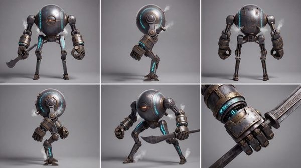
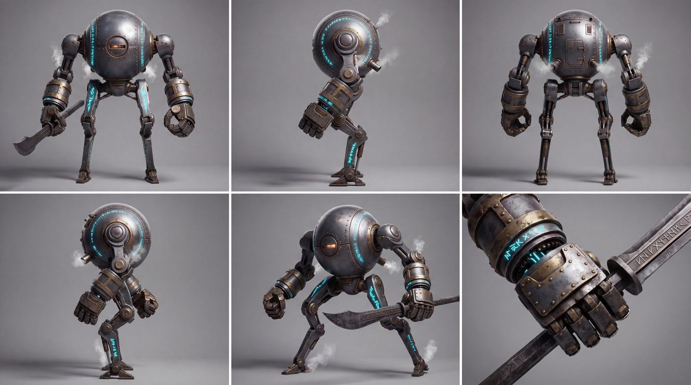
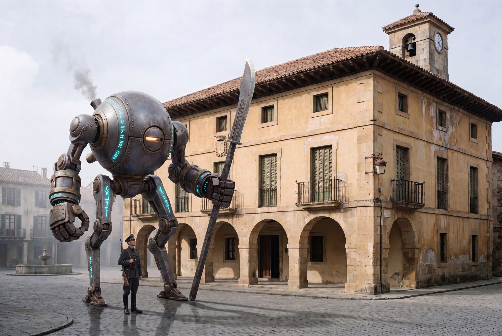
Класс и роль
Паро-магический голем рода Фрид (мануфакторумы рода Фрид), класс — ОРУЖЕНОСЕЦ (лёгкий): в Главе 9 «Молния» прямо отнесена к оруженосцам четвёртого (последнего) поколения — «Самое последнее поколение мехов – четвёртое. Но модели, которые к нему относят, можно пересчитать по пальцам одной руки. А из оруженосцев к таковым можно отнести разве что будущих „Молний" рода Фрид» (Книга 2, Глава 9). По описанию — «быстрые, маневренные и очень опасные машины». В Книге 2 «Молния» в самом повествовании ещё НЕ появляется — она упоминается только по послезнанию ГГ (Гарна Велька) как образец из его прошлой жизни, с которым он сравнивает прототип голема, проектируемого мануфакторумом почтенного Загима.
«Молния» внесена в реестр кампмашин по сид-списку серии. Это первое её упоминание во всём прочитанном тексте — пока что только как воспоминание/прогноз ГГ.
Внешность и форма
- Прямой портрет корпуса (Книга 5, Глава 15) — первое описание «в металле»: «Прилизанный, сферический корпус дарит ощущение стремительности и быстроты. Несколько портят впечатление массивные манипуляторы, которые выглядят не так гармонично» (Книга 5, Глава 15). То есть силуэт «Молнии» — гладкий, обтекаемый, почти сферический корпус (читается как «скорость»), к которому пристыкованы непропорционально крупные/массивные манипуляторы.
- Соответствие имени: «в остальном наименование голема соответствует его характеристикам – быстрая и смертоносная машина» (Книга 5, Глава 15).
- Плавные очертания корпуса + длинные ноги (Книга 5, Глава 23): при езде в кадре корпус описан как «с плавными очертаниями» — «оруженосец с плавными очертаниями корпуса замедлился и остановился» (Глава 23), что согласуется с «прилизанным сферическим» силуэтом из гл. 15. Ноги — длинные (ГГ просит «опусти машину», т.к. трап высоко; «погладил „Молнию" по длинной ноге», Глава 23). То есть силуэт: обтекаемый округлый корпус на длинных ногах = облик скоростной машины.
- Косвенный ориентир формы корпуса (ранее): компоновку капитанского меха «Егерь» ГГ опознаёт как «к корпусу „Молнии" приделали четырёхсуставные ноги от „Барса"» (Книга 2, Глава 8). То есть корпус «Молнии» — узнаваемый силуэт, который ГГ помнит по прошлой жизни (см. «Егерь»). Прямой портрет (Книга 5) подтверждает: «корпус „Молнии"» = гладкий сферический корпус.
- Характеристика по сути: быстрая, маневренная и очень опасная машина (Книга 2, Глава 3; Книга 5, Глава 15).
- Раскраска переданных экземпляров — яркая, парадная (как и у всех машин, полученных от северных домов): обильная свежая раскраска, позолота и гербы (до четырёх разных, многократно нанесённых) — под перекраску в маскировочные тона (Книга 5, Глава 15; ср. свод).
Конструкция и принцип работы
- Конструктивные узлы (котёл, огненный кристалл, рунные цепочки и пр.) в тексте по «Молнии» отдельно НЕ раскрыты — известна лишь общая характеристика «быстрая, маневренная».
- Косвенно: прототип Загима проектируется как «что-то похожее на „Молнии" рода Фрид» — то есть «Молния» служит ГГ эталоном скоростной/манёвренной компоновки (Книга 2, Глава 3).
Движение и походка
- Первая езда в металле (Книга 5, Главы 22–23) — «Молнию» наконец пилотируют в кадре (Бахал гонит её к пожару). Подтверждены и уточнены ходовые качества:
- Очень быстрый разгон и высокая маршевая скорость: «„Молния" оправдывала своё название, разгонялась быстро, шла ходко. И это Бахал ещё сдерживался. Всё-таки город» (Глава 23). За пожаром машина «появилась очень кстати», ГГ уже собирался бежать пешком.
- Плохая управляемость с непривычки — заносы: дважды отмечено, что неопытный для этой машины пилот не справляется с инерцией: «Шустрая машинка, но с непривычки с заносами беда» (Глава 22); «непривычная машина» (Глава 23). При резкой остановке «Молния» по инерции пробегает ещё ~20 метров, прежде чем Бахал сумел её остановить (Глава 23); при подъезде «снесла часть декоративной ограды и безжалостно растоптала пару клумб» (Глава 23). То есть высокая скорость + малая инерционная управляемость требуют наработанного навыка (ср. родовой вывод по скоростным машинам).
- Приседание для доступа к люку: чтобы пилот мог войти, «Молния» сгибает ноги и приседает — «Ноги голема согнулись, словно он решил присесть, лестница стала доступной без всяких прыжков» (Глава 23). Лестница (трап) к люку расположена высоко — «Ступени лестницы у „Молнии" оказались расположены высоковато» (Глава 23) — косвенно подтверждает немалый рост/высокий корпус на длинных ногах.
- Эталон скорости среди оруженосцев (Книга 6, Глава 24): «Молния» используется ГГ как верхняя планка скорости, относительно которой меряют другие машины — даже быстрый «Грифон» лишь «не „Молния", конечно, но весьма близко к этому» (Глава 24). То есть «Молния» — самый быстрый из показанных оруженосцев (см. «Грифон»).
- Ключевые качества — скорость и маневренность («быстрые, маневренные… машины»). Деталей походки текст не даёт (Книга 2, Глава 3).
Размер и сравнения
- Класс — оруженосец (лёгкий), значит габариты порядка лёгкого меха (общеклассовое соотношение — см. «Кузнечик» / свод: оруженосец = «увеличенный в 2,5 раза сержантский доспех»).
- Точных метров/тонн в тексте НЕ дано — в тексте только относительно/неточно: «быстрая, маневренная и очень опасная машина» без сравнения габаритов (Книга 2, Главы 3, 9).
Вооружение и защита
- Вооружение/защита в тексте по «Молнии» прямо НЕ описаны; известно лишь общее — «очень опасные машины» (Книга 2, Глава 3).
Развитие по томам
- Книга 7 (Глава 24 — Вольная марка, Степной Страж, причальная мачта): «Молния» в почётном карауле — реконфирм престижа и редкости модели: маркграф Готмал смотрит на неё с завистью. Встречая флагман маркграфа Тьерна Готмала наспех собранным почётным караулом из оруженосцев и рыцарей, ГГ ловит реакцию гостя: «На „Молнию" он и взглянул с явной завистью, слишком редки пока что такие оруженосцы, но остальные машины его вряд ли впечатлили» (Книга 7, Глава 24). То есть даже Первый рыцарь империи (правитель Южной марки) завидует наличию «Молнии» — реконфирм established-статуса модели как новейшего, очень редкого оруженосца четвёртого поколения (выпущена малой партией; см. выше, Книга 2, Глава 9; Книга 5, Глава 15). На фоне «Молнии» прочие машины разношёрстного караула ГГ маркграфа не впечатлили. Боя «Молнии» в кадре нет; вклад — реконфирм престижа/редкости модели (зависть высшего фольха) и её роли «жемчужины» парадного строя. (Книга 7, Глава 24)
- Книга 7 (Глава 20 — Вольная марка, восточный форт у Степного Стража): «Молния» Онилии — реконфирм скоростной встречающей машины: достигает делегации первой, опережая рыцаря-«Краба». Когда дирижабль рода Готмал выгружает ГГ с беженцами у восточного форта, навстречу выходят две машины — со стороны города «Краб» Бахала, со стороны форта «Молния» Онилии; «Молния» прибывает к делегации первой — «Не столько из-за скорости „Молнии", сколько из-за меньшего расстояния, она же и достигла нашей представительной делегации самой первой» (Глава 20). ГГ отмечает оба фактора (скорость + меньшая дистанция), то есть реконфирм established-скорости оруженосца-«Молнии» относительно тихоходного рыцаря-«Краба» (см. «Владетель»). Из люка «Молнии» высовывается черноволосая голова Онилии (реконфирм пилота); по приказу ГГ «Молния» разворачивается и мчится обратно в форт за армейскими палатками — «Паро-магический голем развернулся и помчался обратно в форт» (реконфирм манёвренности и курьерско-посыльной роли). Боя нет; вклад — реконфирм пилота (Онилия), скоростной встречающей/посыльной роли, манёвра «разворот и рывок». (Книга 7, Глава 20)
- Книга 7 (Глава 12 — Вольная марка, заброшенный форт и окрестности): «Молния» Онилии — реконфирм скоростной курьерской/гонцовой роли: одиночная «Молния» нагоняет ГГ по следу и мчит срочную весть. Когда ГГ осматривает заброшенный форт, дозорный замечает «одиночную машину», идущую «прямо по нашему следу» с юго-востока — это Онилия на „Молнии", гонец с экстренной телеграммой «Горан» (начало изумрудной чумы). ГГ опознаёт её издали по пыльному столбу: «пыльный столб и тёмную точку двигающегося в нашу сторону паро-магического голема я нашёл без труда. Точно гонец, причём на „Молнии"» (Глава 12). По приказу ГГ «Молния» разворачивается на 180° и мчится обратно в город задержать вылет почтового дирижабля — «Пылившая внизу „Молния" сделала резкий разворот на сто восемьдесят градусов и помчалась в обратную сторону» (Глава 12). Реконфирм established-роли «Молнии» как самой быстрой машины отряда — выбор именно её для срочной доставки сообщения и для гонки наперегонки с дирижаблем; ГГ прикидывает пересесть на оруженосца ради скорости, но «вторую „Молнию" пажам не доверили». Боя нет; вклад — реконфирм пилота (Онилия), скоростной/курьерской роли и манёвренности (резкий разворот на ходу). (Книга 7, Глава 12)
- Книга 7 (Главы 7, 11 — Вольная марка, Степной Страж): «Молния» Онилии — реконфирм роли „головной" машины копья оруженосцев и установленного эталона скорости (рыцарь её не перехватывает). (1) Во главе копья оруженосцев (Глава 7): как доказательство личности маркграфа к гостинице в Двух Мостах прибывает «полное копьё оруженосцев, возглавляемое „Молнией" Онилии» — «Молния» идёт ведущей машиной копья «Чёрных фениксов» (украшенных гербами); реконфирм закрепления «Молнии» за Онилией и её статуса флагманского оруженосца отряда. (2) Эталон скорости для учений (Глава 11): планируя усложнить тренировки старой пятёрке пажей, ГГ намечает дать им задачу «перехватить Онилию на „Молнии"» — то есть «Молния» снова выставлена как трудная для перехвата скоростная цель (реконфирм established-фразы из Глав 4–5: рыцарь «Молнию» не догоняет, она — верхняя планка скорости среди оруженосцев). Боя «Молнии» в кадре нет; вклад — реконфирм пилота (Онилия), роли ведущей машины копья и статуса эталона скорости. (Книга 7, Главы 7, 11)
- Книга 7 (Главы 4, 5 — Вольная марка, пустоши): «Молния» Онилии — реконфирм абсолютной скорости (рыцарь её не перехватывает) и роли «конвоя» на учениях; участвует в разгроме мятежников. (1) Скорость выше рыцаря (Глава 4): на учениях Онилия изображает «конвой» на своей «Молнии», а ГГ на одиночном «Чёрном драконе» должен её перехватить — и прямо признаёт, что не может: «„Молния" не зря зовётся „Молнией", перехватить этого оруженосца на одиночном „Чёрном драконе" я просто не мог» (Глава 4). То есть скоростной оруженосец «Молния» уходит от рыцаря — реконфирм established-статуса самого быстрого оруженосца и лестницы «оруженосец-скороход > рыцарь по скорости». (2) В бою с мятежниками (Глава 5): Онилия идёт в составе армии ГГ на «Молнии»; после разгрома покидает „Молнию", чтобы лично сортировать и обыскивать пленных («когда покинувшая „Молнию" Онилия приступила к сортировке»). Боя «Молнии» в кадре по сути нет (победа без серьёзной стрельбы); вклад — прямая фраза-эталон «рыцарь не перехватывает „Молнию"» и реконфирм пилота (Онилия). (Книга 7, Главы 4, 5)
- Книга 6 (Глава 24 — Вольная марка, Степной Страж): «Молния» как абсолютный эталон скорости среди оруженосцев + закрепление за «змейками». (1) Эталон скорости: убегающий «Грифон» пажа ГГ оценивает по «Молнии» — «Все же „Грифон" довольно быстрая машина. Не „Молния", конечно, но весьма близко к этому» (Глава 24). То есть «Молния» прямо названа самым быстрым оруженосцем, относительно которого меряют скорость прочих машин (быстрее даже скоростного «Грифона»). Реконфирм established-характеристики «быстрая, маневренная и очень опасная». (2) Закрепление за «змейками»: распределение из Книги 5 подтверждено в строю — «„Молнии" достались змейкам, а пажам пришлось довольствоваться более старыми машинами» (Глава 24). Онилия обслуживает свою «Молнию» рядом с «Драконом» ГГ, отмечая, что «машины совсем новые, в обслуживании практически не нуждаются» (новейшие 4-го поколения, минимум износа). Боя «Молнии» в кадре нет; вклад — прямой статус „эталона скорости" среди оруженосцев и реконфирм пилотов (Онилия, Элле). (Книга 6, Глава 24)
- Книга 5 (Главы 22–23 — Степной Страж, погоня за шпионкой Бринной): ПЕРВАЯ езда «Молнии» в кадре. После диверсии Бринны (отравление «змеек» + поджог дома) одну из двух новых «Молний» отряда прогревает и пилотирует Бахал («твоя мечта сбылась, прогревай „Молнию"!»). На «Молнии» Бахал и ГГ мчатся к горящему особняку, а затем гонятся за сигналом амулета беглянки по городу. Подтверждены ходовые качества: очень быстрый разгон и высокая скорость («разгонялась быстро, шла ходко»), но с непривычки — сильные заносы и плохая инерционная управляемость (по инерции проскакивает ~20 м мимо точки, сносит ограду и клумбы). Уточнён облик: плавные очертания корпуса на длинных ногах, высокий трап к люку (машина приседает, сгибая ноги, чтобы пилот мог войти). Боя с участием «Молнии» нет — только погоня/транспорт. Машину временно эксплуатирует Бахал-рыцарь (формально пилот за ней не закреплён, см. ниже). (Книга 5, Главы 22, 23)
- Книга 5 (Глава 15 — Степной Страж, передача новых машин): ПЕРВОЕ появление «Молнии» в металле за всю серию. Маркиз Андер Инадр передаёт отряду ГГ «Чёрный феникс» восемь оруженосцев (и шесть рыцарей) от северных домов; две из восьми машин — «Молнии» рода Фрид. Бахал в восторге: «Это же „Молнии"! Нам что, дали „Молний"? Хоть бросай все и пересаживайся с рыцаря на оруженосца». ГГ подтверждает: «Молнии» — новейшие големы четвёртого поколения, машины 4-го поколения «пока что большая редкость», а «Молнии» — единственные оруженосцы поколения четыре; их появления ГГ «вообще считал, что до их появления ещё несколько лет». Дан первый прямой портрет: прилизанный сферический корпус (= скорость/стремительность) + массивные манипуляторы (выглядят негармонично); итог — «быстрая и смертоносная машина». Пришли в яркой парадной раскраске северных домов (под перекраску). На начало эпизода пилоты за «Молниями» не закреплены (Бахал прицеливается на них; «змейки» планируют выбирать машины, но слегли от отравления, см. ниже). (Книга 5, Глава 15)
- Книга 2: Первое упоминание модели (Глава 3) — только по послезнанию ГГ, в сюжете «Молния» ещё не появляется. ГГ, изучая чертежи будущего мануфакторума почтенного Загима (к части чертежей приложила руку Ланилла Загим), отмечает, что задуманные големы выйдут похожими на «Молнии» рода Фрид — «быстрые, маневренные и очень опасные машины». По воспоминаниям ГГ: «Молнии» рода Фрид появились к пятому году войны, и до вторжения древолюбов (альвов) их успели выпустить очень небольшой партией, после чего мануфакторумы рода Фрид были потеряны (Книга 2, Глава 3).
- Книга 2: Корпус «Молнии» как ориентир формы (Глава 8) — сборную компоновку капитанского меха «Егерь» ГГ читает как «корпус „Молнии" + четырёхсуставные ноги „Барса" + нестандартные тонкие манипуляторы» (см. «Егерь»). Косвенно подтверждает, что силуэт корпуса «Молнии» узнаваем и помнится ГГ.
- Книга 2: Класс и поколение уточнены (Глава 9) — «Молния» прямо названа оруженосцем четвёртого (последнего) поколения, причём из оруженосцев к этому поколению относят «разве что будущих „Молний" рода Фрид» (моделей 4-го поколения вообще «по пальцам одной руки»). Для сравнения: «Бунтари» — 2-е поколение, «Зелёные драконы» — 3-е, и именно 3-е поколение пока составляет основу рыцарских копий; даже големы Загима «скорее относятся к третьему поколению, чем к четвёртому». То есть «Молния» — образец самого передового, ещё почти не существующего класса машин (Книга 2, Глава 9).
Известные экземпляры и пилоты
- Две «Молнии» переданы отряду ГГ «Чёрный феникс» из дружин северных домов (через маркиза Андера Инадра, по приказу третьего принца Ронга Олна) как компенсация за утраченные машины (Книга 5, Глава 15). Конкретные пилоты в этом чанке не закреплены: Бахал (рыцарь) восхищается ими и готов «пересесть с рыцаря на оруженосца»; «змейки» (Онилия, Элле, Бринна) собирались выбрать себе по машине из восьмёрки, но были отравлены и слегли (диверсия притворщика лже-Ано, см. свод).
- Распределение „Молний" объявлено (Книга 5, Глава 21): после выздоровления «змейки» выбирают машины — Онилия и Элле берут себе по «Молнии» («Мы с Элле возьмём „Молнии"»); ГГ замечает, что на «Молниях» он бы и сам погонял, будь оруженосцем. Однако уже на следующий день Элле и Бринна отравлены второй раз, Онилия оглушена (диверсия Бринны), так что фактически за «Молнией» в погоне сидит Бахал (Книга 5, Главы 21–23).
- Производитель: мануфакторумы рода Фрид (Книга 2, Глава 3; Книга 5, Глава 15 — подтверждено: «„Молнии" рода Фрид»).
«Молот»
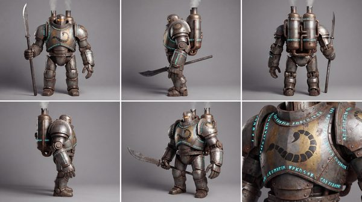
Первое «живое» появление модели «Молот» в металле — Книга 3, Глава 18 (тайная долина с рудником/руинами древних в Вольной марке). Ранее «Молот» лишь упоминался как старая боевая модель, ещё пригодная старой гвардии (Книга 1, Глава 8, контратака под Скионом — см. свод). В чанке Глл. 18–23 «Молот» показан как трофейная машина и затем как действующий рыцарь ласса Бахала Аника.
Класс и роль
Паро-магический голем класса РЫЦАРЬ (средний из трёх классов: оруженосец → рыцарь → паладин). В Книге 1 (Глава 8) «Молот» назван в одном ряду со старыми боевыми моделями «Кузнечик» и «Храбрец», ещё пригодными старой гвардии (медленное устаревание мехов) — то есть заслуженная, но не новейшая модель. В Книге 3 один «Молот» — личный рыцарь лейтенанта наёмного отряда «Горные Скорпионы» (Бахала Аника); опознавательный знак на корпусе — хвост скорпиона (эмблема отряда).
Внешность и форма
- Прямого портрета силуэта в тексте чанка нет (показан с дальнего наблюдательного пункта и затем при подсадке пилота). Опознаётся как рыцарь (тяжёлая машина, в одном ряду с «Протекторами» и «Крабом» среди четырёх рыцарей долины).
- Опознавательный знак — хвост скорпиона, намалёванный на корпусе: «На пятом, сильно поврежденном „Молоте", хвост скорпиона» — эмблема наёмного отряда «Горные Скорпионы» (Книга 3, Глава 18).
- Машина принадлежит «разукрашенной» части трофейного парка (в отличие от безликих чёрных «Протекторов»): трофеи наёмников несут гербы/знаки, «тот еще зоопарк» (Книга 3, Глава 18).
- Доступ в кабину сверху, к люку подсаживают манипулятором «Арбалетчика»; внутри — похожее на трон кресло пилота (Книга 3, Глава 20).
Конструкция и принцип работы
- Кресло-трон пилота со штатной компоновкой; в левом подлокотнике — потайная ниша (тайник): ласс Аник «что-то быстро проделал с левым подлокотником. Выхватил из открывшийся ниши странный, похожий на небольшой шип артефакт» (Книга 3, Глава 20). Тайник настолько скрытен, что «никто не сможет его найти. Разве что по винтику разберут весь „Молот"» (Книга 3, Глава 20).
- Личный (стихийный) щит формируется рунными цепочками корпуса: при их нарушении щит не запускается — «Рунные цепочки корпуса нарушены, так что личный щит не запустится» (Книга 3, Глава 20).
- Рыцарская силовая установка/привод (паро-магический котёл, рунные цепочки, кристалл-активатор — общеклассовое; см. свод).
- Боевые повреждения конкретного экземпляра (после гибели «Горных Скорпионов»): правый манипулятор практически оторван и требует полной замены; «на броне несколько внушительных дырок»; рунные цепочки корпуса нарушены (щит мёртв). Итог осмотра Ланиллы: машина «на ходу, но небоеспособна» — двигаться может, полноценно драться нет (Книга 3, Глава 20). «Мех может двигаться, вряд ли его до долины тащили» (Книга 3, Глава 20).
Движение и походка
- Тяжёлый инерционный ход рыцаря (общеклассовое). Даже сильно повреждённый «Молот» сохраняет ходовые качества (своим ходом дошёл до долины) (Книга 3, Глава 20).
- Конкретных ТТХ скорости/манёвра «Молота» текст не даёт (в тексте только относительно — класс рыцарь).
Размер и сравнения
- Точные метры/тонны в тексте НЕ названы — размер дан только относительно: класс «рыцарь» (тяжелее оруженосца; общеклассовый ориентир — свод, «Владетель»).
- В ряду четырёх рыцарей долины (два «Протектора», «Краб», «Молот») по габаритам сопоставим с прочими рыцарями.
Вооружение и защита
- Рунная глефа (световое копьё) — основное оружие рыцаря (хранится на постаменте ТО, как у прочих мехов; общеклассовое).
- Личный щит (стихийный) от рунных цепочек корпуса — у повреждённого экземпляра не запускается (нарушены цепочки) (Книга 3, Глава 20).
- Дополнительного вооружения (огнемёт/пушки) у «Молота» в тексте не указано (в отличие от «Протектора» с огнемётом).
- Даже небоеспособный (без щита, с оторванным манипулятором) рыцарь остаётся смертельно опасной машиной: «Небоеспособен не равно — безопасен… Ему и оружие не особо нужно, чтобы быть машиной смерти» (Книга 3, Глава 20).
Развитие по томам
- Книга 1: «Молот» упомянут (без отдельного файла) как старая боевая модель, ещё пригодная старой гвардии: под Скионом «Кузнечики», «Молоты» и «Храбрецы» контратакой спасли правый фланг (Книга 1, Глава 8; см. свод).
- Книга 3 (Главы 24–27): сам «Молот» в этом чанке «вживую» НЕ появляется — в отходе к вулкану и бою у виверньего гнездовья ласс Бахал Аник управляет уже вторым трофейным «Протектором» (рыцарь с огнемётом, см. «Протектор»), а не своим небоеспособным «Молотом» (оторван правый манипулятор, мёртвый щит). Текст прямо не объясняет пересадку, но в Главах 24–26 «машина Бахала» — однозначно «Протектор» («погладив броню „Протектора"»; «две вцепились в спину его „Протектора"»). Судьба самого «Молота» (брошен в долине / тащат отдельно) в чанке не уточняется. (Книга 3, Главы 24–26)
- Книга 3: Первое появление в металле. В трофейном парке тайной долины стоит сильно повреждённый «Молот» с хвостом скорпиона — машина лейтенанта Бахала Аника («Горные Скорпионы»), чей отряд заманили в ловушку и истребили владельцы долины. Сам Аник — избитый до полусмерти пленник в местной тюрьме (с рунным ошейником покорности, унизанным шипами, на постоянной подпитке кровью). После освобождения он выторговывает доступ к «Молоту»: в потайной нише левого подлокотника кресла-трона спрятан альвский артефакт высшего исцеления (шип-камень маны, одноразовый), которым Аник мгновенно исцеляет смертельные раны. Раскрыты повреждения экземпляра: оторван правый манипулятор (полная замена), пробоины в броне, нарушены рунные цепочки корпуса → личный щит не запускается; машина «на ходу, но небоеспособна». «Молот» включён в уходящее из долины усиленное копьё; его пилотирует сам Бахал Аник (с Ланиллой как наблюдателем-«присмотром» в кабине, ей передан амулет связи) (Книга 3, Главы 18, 20, 21, 22, 23).
Известные экземпляры и пилоты
- «Молот» с хвостом скорпиона — личный рыцарь ласса Бахала Аника, лейтенанта (по итогу — единственного выжившего) наёмного отряда «Горные Скорпионы». Сильно повреждён, небоеспособен, но на ходу; в кресле-троне — тайник с альвским артефактом высшего исцеления. Пилот после освобождения — сам Бахал Аник (Книга 3, Главы 18, 20–23).
- Производитель «Молота» в тексте НЕ назван.
«Несущая покой»
ПЕРВОЕ появление джезайла/рунного ружья «в металле» за всю серию. Колониальное «рунное ружьё» (джезайл) числилось среди ожидаемых, но не показанных новинок Дхивальской кампании на протяжении первых трёх чанков Книги 8 (см. свод, Книга 8, Главы 1–11). В Главах 12–17 оно наконец показано подробно — как именная реликвия
«Несущая покой»в руках старого воина-повстанца Намхола из «Непримиримых» Ховрана. Это единственная новая кампмашина (точнее — оружие) этого чанка. Главы 12–17 от лица Намхола/Дивии/Амалии — взгляд врага, поэтому ружьё показано «изнутри» рук стрелка, но в реальном бою из него не стреляют (Намхолу запрещено действовать у убежища) — все ТТХ даны через прицеливание и авторскую характеристику.
Класс и роль
Ручное (носимое) рунное ружьё колониального/туземного типа — по силуэту и роли это джезайл: длинноствольное дальнобойное ружьё одиночного снайперского огня. В классификации реестра проходит как рунное ружьё (как «Слонобой»), но это иная, более старая школа артефакторики: реликвия золотого века княжества Ховран (павшего княжества Талхала), а не современное эданское противомеховое оружие.
Роль — дальнобойное снайперское оружие одиночного воина, личное оружие сахсара (дхивальского воина-наставника) Намхола, бойца повстанческого движения «Непримиримые». «Рунное ружье, верный спутник вечной войны, давно уже стало его частью» (Книга 8, Глава 15). Применяется для точного выстрела по одиночной важной цели с предельной дистанции — не для войсковой перестрелки.
Ниша по пробивной мощи задана прямо и между двумя established-полюсами (Книга 8, Глава 15):
- Слабее современных скорострельных револьверных винтовок по темпу огня: «не таким скорострельным, как современные револьверные винтовки».
- Слабее эданского «Слонобоя» по чистой мощи: «не обладал мощью „слонобоев"» (см. «Слонобой»).
- Зато обладает уникальной способностью: «зачарованная пуля могла прошить средний магический щит» (Книга 8, Глава 15) — то есть «Несущая покой» бьёт по защищённым магией целям, а не «грубой силой» по броне.
Тип «джезайл» — обобщённая справка (Книга 8, Глава 26). «Несущая покой» — экземпляр класса оружия джезайл; ГГ даёт развёрнутую характеристику типа: название — прямой перевод с дхивальского как «рунное ружьё», но «от магического артефакта в нём гораздо больше, чем от ружья». Отношение джезайла к обычному ружью — «такое же… как самоходный сержантский доспех к простым рыцарским латам». Стрелков с джезайлами «иногда называли убийцами магов», но реально «мага даже из джезайла достать сложно»; зато «офицеров в отряде латников выбить, или сержантов — это стрелки с джезайлами могут с лёгкостью». По мехам джезайл слаб: против оруженосца «возникнут определённые сложности» (то есть НЕ противомеховое оружие, в отличие от «слонобоя»). Почти вымершее оружие: «к нашему времени их практически не осталось», Намхол — «один из последних»; причина — стрелок должен быть «одарённым на уровне сержанта, а то и оруженосца», а такому одарённому выгоднее «облачиться в самоходную броню и взять „слонобой", а если повезёт, то и на оруженосца выучиться» (Глава 26). Спорное родство со «слонобоем»: «считается, что „слонобои" произошли от джезайлов, но первые гораздо более мощная штука. Да и насчёт происхождения я сильно сомневаюсь» (Глава 26) — ГГ ставит версию происхождения «слонобоя» от джезайла под сомнение.
Внешность и форма
- Длинноствольное ружьё-джезайл: ключевая черта — очень длинный ствол, обеспечивающий дальнобойность и точность.
- Длина — «в рост человека» (Книга 8, Глава 26): при встрече у Дивии ГГ опознаёт оружие в руках Намхола — «длинное в рост человека ружьё, которое спутник Дивии бережно баюкал в руках, словно младенца» (Глава 26). Прямой размерный ориентир: ствол/корпус джезайла по длине ≈ рост взрослого человека.
- Гладкий ствол (Книга 8, Глава 26): джезайл гладкоствольный, но при этом сверхточный — «Несмотря на гладкий ствол, джезайлы даже на большую дистанцию бьют поразительно точно» (Глава 26). То есть нарезку заменяет магия/руны (ср. маг-стабилизация пули против ветра, Глава 12).
- Ствол из небесного железа: «Длинный ствол, выкованный из небесного железа, даже с такого расстояния посылал пулю точно в цель» (Книга 8, Глава 12). Небесное железо (метеоритный металл) — материал ствола, носитель рунного зачарования.
- Приклад, украшенный слоновой костью: «Уперев украшенный слоновой костью приклад „Несущей покой" в плечо…» (Книга 8, Глава 12) — декоративно-статусная отделка реликвии знатного рода.
- Силуэт стрелка: ружьё упирается прикладом в плечо, длинный ствол ведётся по цели; пристальное прицеливание с упора из засады в кустах/зарослях джунглей (Книга 8, Главы 12, 15).
Конструкция и принцип работы
- Рунно-магическое оружие: пуля зачаровывается магией стрелка — «зачарованная пуля могла прошить средний магический щит» (Книга 8, Глава 15). Требует одарённого стрелка: Намхол вкладывает в выстрел собственную магическую силу — «его скромной магической силы хватит, чтобы предотвратить её [пули] отклонение из-за ветра» (Книга 8, Глава 12). То есть мана стрелка идёт не только на пробитие щита, но и на стабилизацию траектории (компенсацию ветра) — точностная функция, не описанная у «Слонобоя».
- Артефакт золотого века Ховрана: «Артефакт работы расцвета Ховрана» (Книга 8, Глава 15) — изделие высокой довоенной артефакторики ныне разрушенного княжества; реликвия, передающаяся в среде «Непримиримых». Современная Компания/Дхивал такого уровня рунного оружия массово не производят (ср. дефицит рунных глеф у дхивальцев, свод, Книга 8, Глава 7).
- Небесное железо ствола — материал-носитель рун, обеспечивающий и прочность, и зачарование пули в полёте (ср. рунные цепочки на стволе «Слонобоя», «Слонобой»).
- Невысокая скорострельность: прямо названо «не таким скорострельным, как современные револьверные винтовки» (Книга 8, Глава 15) — оружие одиночного прицельного выстрела, не автоматического/револьверного боя (ср. цикл «нельзя стрелять, пока горят руны» у «Слонобоя», «Слонобой»; для «Несущей покой» цикл прямо не описан, но темп явно низкий).
- Точные калибр, масса, длина ствола, тип патрона/заряжания в тексте НЕ названы — «в тексте только относительно/неточно» (даны только материал ствола, отделка приклада и сравнительные ТТХ).
Движение и походка
Не самоходно (ручное оружие). Носится одним воином, ведётся из засады с упора прикладом в плечо; стрелок (Намхол) перемещается пешком по джунглям/предгорьям как партизан-одиночка. Отдача в тексте не описана (в отличие от «отрывающей плечо» отдачи «Слонобоя»).
Размер и сравнения
- Сравнение дальности — WÖRTLICH: с огневой позиции на холме/в зарослях цели у пирса Гиола видны как крошечные фигурки, и ружьё всё равно достаёт: «Фигурки внизу рядом с пирсом казались тонкими палочками. Но глаз его всё ещё верен, руки тверды, а „Несущая покой" не подведет. Длинный ствол, выкованный из небесного железа, даже с такого расстояния посылал пулю точно в цель» (Книга 8, Глава 12) — то есть эффективная прицельная дальность измеряется сотнями метров (от поросших травой прибрежных холмов/опушки джунглей до пирса посёлка), при которой ростовая фигура человека кажется «тонкой палочкой».
- Сравнение пробития — WÖRTLICH: «не обладал мощью „слонобоев". Зато зачарованная пуля могла прошить средний магический щит» (Книга 8, Глава 15) — мерило: слабее «Слонобоя» по мощи, но уникально пробивает средний магический щит (магзащиту мага/меха среднего уровня).
- Сравнение темпа огня — WÖRTLICH: «не таким скорострельным, как современные револьверные винтовки» (Книга 8, Глава 15).
- Точные числовые габариты (калибр, длина) в тексте отсутствуют — заданы только относительно (длинный ствол; «тонкие палочки» на дистанции).
Вооружение и защита
- Само является оружием. Боеприпас — зачарованная пуля, стабилизируемая маной стрелка против ветра и способная пробить средний магический щит (Книга 8, Главы 12, 15).
- Антимагическое/противоодарённое назначение: главная ценность «Несущей покой» — поражение целей под магической защитой (магов, защищённых щитом пилотов мехов среднего уровня). Это отличает её от «Слонобоя» (тот пробивает броню грубой мощью) — «Несущая покой» снимает/пробивает магзащиту точным зачарованным выстрелом.
- Точность на предельной дистанции благодаря маг-компенсации ветра (Книга 8, Глава 12).
- В кадре не выстрелила: Намхолу запрещён бой у убежища, поэтому реальный поражающий эффект по конкретной цели не показан — все характеристики даны через прицеливание и авторскую справку (Книга 8, Главы 12, 15, 16).
- Защиты как таковой нет (оружие, не машина).
Развитие по томам
- Книга 8 (Глава 26 — Талхал, руины Ховрана, трапеза у княгини Дивии): ГГ опознаёт джезайл «Несущая покой» вблизи и даёт обобщённую справку о типе „джезайл" — закреплены облик-факты и место джезайла в системе рунного огнестрела. На трапезе у Дивии её телохранитель Намхол держит ружьё в руках («бережно баюкал… словно младенца»); ГГ узнаёт его — «Это же настоящий джезайл, да?» — и Дивия подтверждает, что Намхол «один из последних» стрелков. (1) Облик (НОВОЕ): ружьё «длинное в рост человека», ствол гладкий (но бьёт «поразительно точно» на большую дистанцию). (2) Тип-справка (НОВОЕ): «рунное ружьё» — прямой перевод названия с дхивальского; «от магического артефакта в нём гораздо больше, чем от ружья»; стрелки — «убийцы магов» (прозвище), но мага достать сложно, зато офицеров латников/сержантов «с лёгкостью»; против оруженосца «сложности» (НЕ противомеховое). (3) Почему вымирает (НОВОЕ): стрелок должен быть одарён «на уровне сержанта, а то и оруженосца» — а такому выгоднее самоходная броня + «слонобой» или путь оруженосца. (4) Спорное родство со «слонобоем» (НОВОЕ): ГГ сомневается в версии происхождения «слонобоя» от джезайла, отмечая, что «слонобой» «гораздо более мощная штука». Боевого применения в кадре нет (Намхол лишь держит оружие, враждебно буравя ГГ взглядом; в Главе 27 внутренне решает при случае застрелить ГГ — «получит свою долю свинца»). Вклад чанка — обобщённая справка о типе „джезайл" (название, прозвище „убийца магов", потолок целей, причина вымирания, спор о родстве со „слонобоем") + облик-факты (длина „в рост человека", гладкий ствол) для уже введённой именной реликвии „Несущая покой". (Книга 8, Глава 26)
- Книга 8 (Главы 12, 15, 16 — Талхал, Гиол; взгляд врага): ПЕРВОЕ появление джезайла/рунного ружья «в металле» за всю серию — именная реликвия «Несущая покой» сахсара Намхола из повстанцев-«Непримиримых» Ховрана. Намхол с опушки джунглей/прибрежных холмов через прицел «Несущей покой» наблюдает за высадкой и действиями отряда ГГ («Эданских налётчиков») в захваченном Гиоле, затем за высадкой армии князя Руяна (Глава 15). (1) Облик-факты: длинный ствол из небесного железа, приклад в отделке слоновой костью (Главы 12, 15). (2) Принцип: рунное оружие; одарённый стрелок вкладывает ману — она и стабилизирует пулю против ветра на огромной дистанции (Глава 12), и позволяет зачарованной пуле прошить средний магический щит (Глава 15). (3) Ниша между полюсами: «не таким скорострельным, как современные револьверные винтовки, не обладал мощью „слонобоев". Зато зачарованная пуля могла прошить средний магический щит» (Глава 15) — точечно задана разница с эданским «Слонобой» (мощь/броня) и с револьверными винтовками (темп). (4) Дальность: цели у пирса — «тонкие палочки», но ружьё бьёт точно «даже с такого расстояния» (Глава 12). (5) В бой не вступает: прямой приказ не действовать у убежища — Намхол лишь целится, но не стреляет (Главы 12, 16); реликвия — снайперский «последний довод», а не войсковое оружие. (6) Контекст-владелец: «Несущая покой» — «верный спутник вечной войны», «давно уже стала его частью» (Глава 15); артефакт расцвета Ховрана, символ непрерывной партизанской войны «Непримиримых» против Компании Южных морей. Вклад чанка — первое подробное раскрытие туземного рунного ружья-джезайла как оружия: материалы, маг-механика (анти-щит + анти-ветер), сравнительные ТТХ против „Слонобоя" и револьверных винтовок, предельная дальность. (Книга 8, Главы 12, 15, 16)
Известные экземпляры и пилоты
- «Несущая покой» — единственный показанный экземпляр; личное оружие сахсара Намхола, старого воина-наставника повстанческого движения «Непримиримые» (последние верные роду павшего княжества Ховран). Намхол — наставник и телохранитель княгини Дивии Хорми, последней из рода князей Ховрана (Книга 8, Главы 12, 14, 16).
- Происхождение/изготовитель: артефакт работы расцвета (золотого века) княжества Ховран (до его падения под натиском Компании Южных морей). Конкретный мастер/мануфактура не названы — это довоенная реликвия (Книга 8, Глава 15).
- Других экземпляров джезайлов «в металле» чанк не показывает; «Несущая покой» — именная реликвия, а не серийная модель. Намхол прямо назван «одним из последних» стрелков с джезайлом на Дхивале (Книга 8, Глава 26) — тип почти вымер (стрелок обязан быть одарён на уровне сержанта/оруженосца, см. «Класс и роль»).
«Нифелим»
Первое упоминание модели «Нифелим» — Книга 4, Глава 1 (въезд отряда ГГ в Степной Страж, восторженный комментарий Ланиллы при виде разнообразия мехов на улицах). В тексте чанка «вживую» не разобран: назван только как редчайшая диковина, конструктивных и размерных деталей нет.
Класс и роль
Паро-магический голем; точный класс (оруженосец/рыцарь) в тексте не назван. Опознан Ланиллой среди потока боевых машин на главной улице Степного Стража, где «попадавшиеся в поле зрения оруженосцы и рыцари отличались огромным разнообразием» (Книга 4, Глава 1). Ключевая характеристика модели — исключительная редкость: «Это же „Нифелим"! Их же выпустили всего десять штук!» (Книга 4, Глава 1). То есть «Нифелим» — малосерийная/штучная машина (всего ~10 экземпляров на весь известный мир), и встретить её даже в насыщенном мехами Степном Страже — событие для знатока (Ланилла, дочь магната-машиностроителя Загима, реагирует на него как на музейную редкость).
Внешность и форма
- Прямого описания силуэта в тексте нет. Названо только имя модели; внешний вид, форма корпуса, число и тип конечностей не раскрыты — в тексте только упоминанием.
Конструкция и принцип работы
- Конкретных узлов/принципа работы текст не даёт. По умолчанию — общая компоновка паро-магического голема (паровой котёл + огненный кристалл, рунные цепочки, кресло-трон, кристалл-активатор, синхронизация; см. свод). В тексте не раскрыто.
Движение и походка
- Не показан в движении — в тексте нет данных.
Размер и сравнения
- Точные метры/тонны не названы; размер не описан даже относительно — в тексте только упоминанием (известна лишь редкость модели, не её габариты).
Вооружение и защита
- Вооружение и защита в тексте не раскрыты.
Развитие по томам
- Книга 4: Первое (и пока единственное) упоминание модели — при въезде отряда ГГ в Степной Страж Ланилла восторженно опознаёт среди уличного «зоопарка» мехов редкий «Нифелим», подчёркивая, что таких выпустили всего десять штук. Машина служит маркером того, насколько Степной Страж богат и разнообразен по составу боевых машин (рай для любителя паро-магических големов). Конструктивных деталей чанк не даёт. (Книга 4, Глава 1)
Известные экземпляры и пилоты
- Один «Нифелим» на улице Степного Стража (Вольная марка) — стоит/движется среди прочих оруженосцев и рыцарей города; пилот не назван (Книга 4, Глава 1).
- Всего в мире, по словам Ланиллы, выпущено десять экземпляров модели (Книга 4, Глава 1).
«Протектор»
Первое «живое» появление модели «Протектор» — Книга 3, Глава 18 (тайная долина с рудником/руинами древних в Вольной марке). Ранее «Протектор» лишь упоминался как имя-кандидат под след «многоножка» (Книга 3, Глава 14, см. свод) — теперь показан в металле, ГГ захватывает и пилотирует «Протектора» несколько глав подряд.
Класс и роль
Паро-магический голем класса РЫЦАРЬ (средний из трёх классов: оруженосец → рыцарь → паладин). Производитель — род Никор: «„Протекторов" только лет пять тому назад род Никор пустил в свободную продажу» (Книга 3, Глава 18). То есть модель современная (свободная продажа всего ~5 лет назад), что для Вольной марки нетипично: «В Вольную марку сплавляют устаревший по большей части хлам» (Книга 3, Глава 18). Наличие новых стандартизированных «Протекторов» у охраны долины выдаёт не наёмников, а родовую/семейную дружину фольхов: «такая стандартизация для наемников не характерна… А вот для родовых и семейных дружин стандартизация очень даже характерна» (Книга 3, Глава 18). Роль в долине — ядро ударной силы «чёрных рыцарей» (два «Протектора» + два «Арбалетчика», все выкрашены в чёрное, без гербов).
Внешность и форма
- Прямого портрета силуэта в тексте чанка нет (показан с дальнего наблюдательного пункта и затем изнутри кабины). Опознаётся как рыцарь — тяжелее и крупнее оруженосца.
- Раскраска «чёрных рыцарей»: четыре безликие машины долины (два «Протектора» + два «Арбалетчика») выкрашены сплошь в чёрный цвет, без каких-либо опознавательных знаков — ни гербов, ни баннеров, ни списков побед: «А эти четыре безликие машины только выкрашены в черное. Черные, блин, рыцари» (Книга 3, Глава 18). Безликость машин — намеренное заметание следов истинных хозяев.
- Доступ в кабину сверху по корпусу: пилот «погладил голема по ноге и забрался наверх», к люку поднимаются по корпусу (Книга 3, Глава 18). Люк блокируется изнутри (заблокировав люк, ГГ падает в кресло).
- Сектора обзора (важная конструктивная черта, Книга 3, Глава 26): у «Протектора» очень плохой обзор верхней полусферы. «По горизонту обзор неплох, градусов сто, что для рыцаря довольно прилично. Но вертикальный – те же сто градусов, причем с уклоном вниз». Логика конструкции — главная угроза машине на земле, поэтому обзор «завален» вниз; против воздушной атаки (виверны, пикирующие сверху) это критическая слепая зона. В бою с вивернами ГГ бьёт по теням на земле «больше на инстинктах, ориентируясь по теням», т.к. саму тварь сверху не видит (Книга 3, Глава 26).
- Раскраска «Чёрного феникса» и нанесение баннеров (Книга 4, Глава 5): бывший чёрный «Протектор» долины ГГ переделывает под флагман своего отряда. На корпус наносится личный/отрядный знак — чёрный феникс в объятиях огня («объятая огнем птица»), с огненной оранжевой окантовкой, чтобы силуэт читался даже на чёрном корпусе. Феникс выписан на обоих манипуляторах (на левом и правом — с расхождениями: «у него крылья больше и голова в другую сторону повернута»). Под фениксом — жирная белая полоса-цифра «1» (номер машины). ГГ вводит реформу разметки: вместо пёстрой «петушиной» расцветки имперских мехов — уменьшенные знаки строго по схеме: 4 отрядных баннера (лоб, корма, левый и правый борт) + 1 личный баннер в лобовой проекции (обычно «на самом верху, рядом с люком», но место зависит от конкретной модели голема). Личный баннер пилот по примете рисует сам (Книга 4, Глава 5). Раскраску под цвет местной (медно-бурой) травы ГГ держит в планах, но как второстепенную (Книга 4, Глава 5).
- Обслуживание с ремонтных лесов (Книга 4, Глава 5): при стоянке в Степном Страже «Протектор» обслуживают со специальных ремонтных лесов, по которым пилот поднимается к корпусу/манипуляторам и спускается вниз (Книга 4, Глава 5).
- Герб «Чёрного феникса» на лобовой броне — главный опознавательный знак (Книга 4, Эпилог): личный знак ГГ на лобовой проекции «Протектора» описан со стороны врага как «окутанная пламенем чёрная птица»; по нему альв Та’Энди безошибочно опознаёт обгоревший остов машины ГГ — «Этот герб я узнаю из тысячи! Как и руку, что так отвратительно рисует» (личный баннер пилот рисовал сам, см. Книга 4, Глава 5). Знак сохраняется читаемым даже на «почерневшей от копоти лобовой броне» разбитой машины (Книга 4, Эпилог).
Конструкция и принцип работы
- Кресло-трон + кристалл-активатор + страховочные ремни — стандартная рыцарская компоновка: «Ремни, кристалл-активатор. Начать синхронизацию» (Книга 3, Глава 18).
- Извлечение кристалла-активатора разрывает синхронизацию болезненно (Книга 4, Глава 1): по прибытии в Степной Страж ГГ «выдергивает кристалл-активатор из гнезда. Разрыв синхронизации отдается волной колючей боли по всему телу. Наваливается усталость» — то есть штатный выход из машины (вытащить активатор) сам по себе бьёт по пилоту волной боли и усталости; после длительного пилотирования рыцаря ГГ рекомендует себе 2–3 дня воздержаться от пилотирования (Книга 4, Глава 1).
- Люк рыцаря — тяжёлый, металлический, звонкий (Книга 4, Глава 1): захлопнувшийся люк «Протектора» «отдался звоном в голове, словно ударил колокол» — крышка люка массивная и резонирующая; пилот в синхронизации остро ощущает удар по корпусу (Книга 4, Глава 1).
- Синхронизация с посторонним в кабине — мучительна для пилота (Книга 4, Глава 1): «Паро-магические големы не рассчитаны на пассажиров, и ощущения при синхронизации, когда в кабине кто-то ползает и шумит, специфические. Словно к тебе в голову пролез какой-то мелкий паразит» (Книга 4, Глава 1). Подтверждает, что кабина «Протектора» физически вмещает пассажира-наблюдателя (Ланилла залезает внутрь, прячась от пыли колонны), но синхронизированный пилот воспринимает чужую возню как давление в голове — цена за наличие второго человека на борту.
- Личный (стихийный) щит: у «Протектора» есть собственное защитное поле — в бою «в бок впился луч светового копья, чтобы бессильно потонуть в полыхнувшем бледно-синем отблеске щита» (Книга 3, Глава 23). То есть рыцарский щит держит как минимум одиночное попадание светового копья оруженосца.
- Спящий режим / запуск: «хоть рыцарь и находился в спящем режиме, на его полный запуск требовалось время» — ГГ оценивает полный пуск рыцаря из спящего режима примерно в пять минут (Книга 3, Глава 18). Прогрев котла из «спячки» в рабочий режим — несколько минут (ср. общий факт свод, Книга 3, Глава 12).
- Управление рыцарём требует высокой синхронизации: для пажа-недомага ГГ управление «Протектором» на пределе сил — «„Протектор" подчинялся неохотно, словно почувствовавший неопытного наездника норовистый конь. Все же моих сил пока что недостаточно для полноценного управления рыцарем. Целый день без устали я бы его гонять не смог, но на несколько часов меня хватит» (Книга 3, Глава 19). Тонкую моторику (остановить тяжёлую машину перед тюрьмой, аккуратно развернуться) контролировать трудно — есть риск снести постройку.
Движение и походка
- Тяжёлый, инерционный ход рыцаря: при развороте у хлипкой тюрьмы ГГ «едва не снес местную тюрьму, в самый последний момент сумев остановить тяжелую машину» (Книга 3, Глава 19).
- Ногами рыцаря легко раздавить человека в «кровавую кашу» — четыре тюремщика-наёмника растоптаны ногами голема (Книга 3, Главы 18–19).
- В групповом бою (атака на лагерь «Северного ветра») «Протектор» в составе клина разгоняется на дистанции ~400 м за несколько секунд, давя лагерь (Книга 3, Глава 23).
- Манёвренность в погоне по пересечёнке (Книга 3, Главы 25–26): «Протектор» способен на резкую смену курса (развороты на 90°, 150–159°), уход в ложбину/овраг для укрытия от световых копий, бег на «максимальной скорости» по бездорожью с активным маневрированием для срыва прицела. Но движение по прямой делает рыцаря «предсказуемой и простой целью». На сложном рельефе (крупные камни, природные ловушки) на высокой скорости есть риск опрокинуть машину о камень (Книга 3, Глава 25). По крутым размякшим склонам/скалам не лезет (общее для големов).
Размер и сравнения
- Точные метры/тонны в тексте НЕ названы — размер дан только относительно: класс «рыцарь» (тяжёлая машина, крупнее оруженосца; см. общеклассовый ориентир в свод и «Владетель»).
- Кабина рыцаря просторнее кабины оруженосца: «Кабина рыцаря больше кабины оруженосца» — настолько, что в неё помещается пилот + пассажир-наблюдатель (Ланилла) на отдельной лежанке (Книга 3, Главы 21, 23).
- Тяжёлая машина — для пехоты непреодолимый противник: пулями, даже зачарованными, «рыцаря не взять» (Книга 3, Глава 19).
- Размер относительно виверн (Книга 3, Главы 25–26): мелкие виверны-детёныши — «совсем мелких, размером с лошадь» — врезаются в «Протектор» всем телом, пытаясь сбить с ног, но безуспешно: «кошка не может повалить корову». То есть рыцарь много крупнее и тяжелее «лошадиной» виверны; даже мёртвая виверна, рухнувшая на корпус, «рыцарю такой удар не страшен» (Книга 3, Глава 26). Левым манипулятором «Протектор» хватает виверну за хвост и использует её как живую дубину, сшибая ею вторую тварь, — наглядный ориентир силы/масштаба манипулятора рыцаря (Книга 3, Глава 26).
- Кабина рыцаря вмещает пилота + пассажира: в «Протекторе» ГГ помимо него едет наблюдатель Ланилла (на отдельной лежанке); при опасности пассажира экстренно высаживают через люк прямо на манипулятор/крышу соседнего оруженосца (Книга 3, Глава 25). Подтверждает простор кабины рыцаря против тесноты оруженосца.
Вооружение и защита
- Рунная глефа (световое копьё) — основное оружие, на стоянке хранится на специальном постаменте технического обслуживания, «как и рунные глефы прочих мехов» (Книга 3, Глава 19).
- Огнеметатель в ЛЕВОМ манипуляторе — ключевая опознавательная черта вооружения «Протектора»: «помимо нее в распоряжении „Протектора" имеется огнеметатель, расположенный в левом манипуляторе» (Книга 3, Глава 19). Горелка вспыхивает синим магическим пламенем, выбрасывая струю огнесмеси «словно яростное дыхание дракона»; поджигает деревянное строение мгновенно (Книга 3, Глава 19). Баки огнесмеси ограниченного запаса — в бою с лагерем «огнеметатель выплеснул последнюю струю огнесмеси и раздраженно зашипел пустым баком» (Книга 3, Глава 23).
- Личный щит (стихийный): «бледно-синий отблеск щита» гасит попадание светового копья в борт (Книга 3, Глава 23).
- Защита по классу рыцаря — пехотное стрелковое оружие (револьверы, винтовки), даже зачарованными пулями, рыцарю не вредит (Книга 3, Глава 19).
- Личный щит НЕ держит крупные живые объекты (виверн), Книга 3, Глава 26: «Против таких больших да еще и живых объектов личный щит голема не помогает, это все же не дирижабль». Виверны садятся на крышу/спину «Протектора», грызут корпус и поливают его едкой кислотой, разъедая выступающие части; маскировочную скатку срывают. Спасение — только глефой/манипулятором (сдёрнуть тварь, добить), либо взаимовыручка двух рыцарей (один снимает виверну со спины другого) (Книга 3, Глава 26).
- «Голова» = система экстренного сброса пара (не кокпит): верхняя выступающая часть корпуса, которую виверны принимают за голову и пытаются отгрызть, — на деле система аварийного сброса пара, а не пилотская кабина: «Глупая виверна не знает, что это не голова, а всего лишь система экстренного сброса пара» (Книга 3, Глава 26; сказано про «Лучника», но относится к общей компоновке мехов). Атака виверны в эту часть пилоту не угрожает.
- Личный щит ослабляет, но не гасит внешнее воздействие полностью: «Личный щит паро-магического голема лишь ослабляет внешнее воздействие, но не гасит его полностью… Остаточный эффект проникает под щит и гасится непосредственно броней машины. А если вместо брони под щитом… будет человек – не станет того человека» (Книга 3, Глава 25). Поэтому держать пассажира-наблюдателя в открытом люке под обстрелом смертельно опасно.
- Огнемёт (левый манипулятор) — оружие зачистки органики (Книга 4, Глава 12): в бою с химерой-«кукловодом» (марионеточником) «Протектор» ГГ системно работает огнемётом: «Поймав в прицел ближайшую фигуру, поднимаю левый манипулятор. Струя огнесмеси бьет, слово пламя дракона». Огонь мгновенно охватывает палатки, тела, мешки с зерном. Запас огнесмеси ограничен и в этом бою исчерпывается: «Огнеметатель раздраженно зашипел, плюнулся паром, сообщив о том, что огнесмеси больше нет» (Книга 4, Глава 12). До этого у Бахалова «Протектора» оставалось «где-то половина бака» (Глава 12) — подтверждает баки ограниченной ёмкости. Огнесмесь делается на основе земляного масла, поэтому след от огнемёта внешне неотличим от следа варгарской огненной ловушки (Книга 4, Глава 14).
- Глефа (световое копьё) как режущий инструмент по живой цели (Книга 4, Глава 12): против химеры-кукловода ГГ ведёт сфокусированный выброс магической энергии глефой, разрезая тварь надвое плавным движением острия: «Плавно провожу острием глефы в сторону, пока идет сфокусированный выброс магической энергии. Марионеточника разрезает на две половинки». То есть глефу рыцаря можно использовать не только как точечный «выстрел» светового копья, но и как протяжённый режущий луч (Книга 4, Глава 12).
- Кислотные бомбы виверн — урон по броне (Книга 4, Глава 28): варгары мечут с виверн глиняные кислотные снаряды, формой «напоминающие обычный горшок»; прямого попадания «Протектор» избегает уклонением, но брызги кислоты, попав на правую ногу, вспениваются и разъедают металл — без сквозного пробития («особых повреждений нет, рыцарь всё так же послушен»). То есть одиночный косвенный контакт кислотой броню рыцаря лишь поверхностно повреждает; опасны прямые/множественные попадания (ср. оплавленный кислотой люк в Эпилоге). Виверны также пытаются физически вцепиться в манипулятор «Протектора» (Книга 4, Глава 28).
- Личный щит/визор против «световых шипов» — пробитие рыцаря (Книга 4, Глава 28): при предательском выбросе магии «малого круга» (хаотичный веер «световых шипов», бьющих во все стороны) первый шип в визор «Протектор» держит — «Личный щит рыцаря, а может и броня, выдержали». Но второй и третий шипы пробивают машину: «противно заскрежетала разорванная сталь, гулко ухнул паровик. „Протектор" содрогнулся, управление полностью отказало». Подтверждает предел рыцарского щита/брони: серия концентрированных магических ударов выводит рыцаря из строя, после чего в кабину прорывается обжигающий ихорный пар (Книга 4, Глава 28).
- Люк рыцаря заклинивает от оплавления кислотой (Книга 4, Эпилог): после боя крышка люка «Протектора» заклинила и не открывалась — повреждение «получено не во время боя», а позже: виверны «оплавили» люк кислотой, «вытягивая из обломков машин остатки маны». Даже верховная-альв открывает его только магией (металл «покрылся ржавчиной, а затем рассыпался в коричневую труху»). То есть кислота виверн способна намертво заклинить аварийный люк рыцаря (Книга 4, Эпилог).
- Манипулятор/прицел с увеличением и его конструктивная роль (Книга 4, Глава 12): ГГ «увеличивает картинку», чтобы рассмотреть деталь (ритмичный взмах руки кукольного «дозорного»), — у «Протектора» есть оптическое приближение визора; в Главе 13 прямо отмечено, что увеличение «Арбалетчика» лучше, чем на «Протекторе» (см. «Арбалетчик»). Тяжёлыми ногами «Протектор» вдавливает в землю горящие тела, «хрустели хрупкие человеческие кости» — наглядный ориентир массы (Книга 4, Глава 12).
Развитие по томам
- Книга 5 (Глава 12 — Степной Страж): гибель обоих «Протекторов» отряда подтверждена сторонним свидетелем. Уцелевшая «змейка» Онилия Сгер описывает разгром у руин: «Видела, как ваши „Протекторы" упали. Но к вам было не пробиться» (Книга 5, Глава 12). Подтверждает, что в катастрофе малого круга выбиты оба рыцарских «Протектора» отряда «Чёрный феникс» (ГГ и Бахала, см. ниже); после этого у отряда из восьми машин остаётся лишь три оруженосца. Конструктивно новых деталей чанк не даёт — «Протектор» в металле не появляется. (Книга 5, Глава 12)
- Книга 5 (Главы 1–2 — после катастрофы малого круга): «Протектор» ГГ окончательно подтверждён уничтоженным (ретроспективно, в металле не появляется). (1) ГГ вспоминает миг гибели машины из Книги 4: «летевший прямо в моего „Протектора" сгусток магической энергии, похожий на светящийся шип. Результат прошедшего не по плану ритуала малого круга магов» (Книга 5, Глава 1) — прямая привязка к предательскому удару «световыми шипами» (ср. конец Книги 4). (2) Степень разрушения: от машины уцелела лишь верхняя часть корпуса — Бахал успел вытащить раненого ГГ из кабины прежде, чем взорвался паровик: «выбрался, добежал до твоей машины, сумел тебя вытащить, прежде чем паровик рванул. После взрыва от твоего „Протектора" только верхняя часть корпуса и осталась» (Книга 5, Глава 1). Подтверждает established-факт: повреждённый паровик/огненный кристалл рыцаря идёт «в разнос» и взрывается. (3) «Протектор» Бахала тоже потерян: получил порцию того же удара — «Мой „Протектор" получил свою порцию вместе с твоим – правую ногу просто разнесло» (Книга 5, Глава 1) — то есть оба рыцарских «Протектора» отряда «Чёрный феникс» выбиты в одном бою. (4) Оружие из кабины: один из револьверов-«Стражей» ГГ остался в кабине разбитого «Протектора» («Второй вывалился, когда я тебя вытаскивал, и остался в кабине „Протектора"»), запасные барабаны и пороховница для «Стражей» — в инструментальном ящике кабины (Книга 5, Главы 1, 5) — подтверждает, что снаряжение пилота штатно хранится в кабине рыцаря. На начало Книги 5 ГГ остаётся без флагманской машины (пеший переход через подземелье). (Книга 5, Главы 1, 2)
- Книга 3: Первое появление в металле. В тайной долине Вольной марки (рудник = вход в руины древних) стоят два чёрных «Протектора» (рыцари) + два чёрных «Арбалетчика» (оруженосцы) — безликая, стандартизированная «чёрная» дружина фольхов, в отличие от пёстрого «зоопарка» наёмничьих трофеев. Дерзкой вылазкой ГГ (Гарн Вельк) под прикрытием амулетной связи с Константином проникает в долину и захватывает один из «Протекторов»; на нём в одиночку громит расслабленную охрану (давит ногами тюремщиков, выжигает огнемётом столовую с засевшими стрелками), освобождает пленённых друзей. Раскрыты: огнемёт в левом манипуляторе, глефа на постаменте ТО, кресло-трон с кристаллом-активатором, ~5-минутный запуск из спящего режима, трудность управления рыцарём для недомага, производитель — род Никор, ~5 лет в свободной продаже (Глава 18–19). При формировании отряда из трофейных машин ГГ берёт «Протектора» (рыцаря) себе (второй рыцарь отряда — «Молот» ласса Аника); в колонне «Протектор» ГГ замыкает (Глава 21). В финальном бою чанка «Протектор» ГГ в составе усиленного копья атакует и сжигает лагерь наёмников «Северного ветра» (огнемёт + давка), держит попадание светового копья личным щитом (Глава 23). (Книга 3, Главы 18, 19, 20, 21, 22, 23)
- Контекст происхождения «чёрных рыцарей»: «Протекторы» долины — представители юга, тогда как трофейные машины наёмников представлены моделями и севера, и юга (среди них даже один «Бунтарь» Железной марки). Стандартизация именно на «Протекторах»/«Арбалетчиках» указывает на южную родовую дружину (Книга 3, Глава 18).
- Книга 3, Главы 24–27 (отход к вулкану, бой у виверньего гнездовья, спасение «Ястребами»): оба трофейных «Протектора» — главные машины ГГ и ласса Бахала Аника на финальном этапе похода. (1) Один «Протектор» поставлен как замаскированный наблюдательный пункт на холме (Глава 24). (2) Засада «Яростных когтей» (2 копья: 6 рыцарей + 6 оруженосцев, красная раскраска) гонит отряд к горам; оба «Протектора» острием прикрывают отход оруженосцев Дэи и Амиты, маневрируя в ложбинах под обстрелом световых копий (Глава 25). (3) Главный бой — рукопашная против стаи виверн (десятки-сотни тварей у вулкана): раскрыта критическая слепая зона верхней полусферы (~100° с уклоном вниз), беспомощность личного щита против крупных живых тел, кислотные укусы виверн по корпусу; ГГ и Бахал отбиваются глефами и манипуляторами (виверна-«дубина» за хвост), прикрывают спины друг друга. Виверны переключаются на «Яростных когтей», и два «Протектора» уходят (Главы 25–26). (4) Едва не выскочив на второй отряд наёмников, «Протекторы» оказываются среди «Ястребов» (наёмники почтенного Загима/маркграфа, искавшие отряд) — спасение; машину ГГ ставят на стоянку, ГГ ночует прямо в кабине (паранойя) (Главы 26–27). На привале ГГ окончательно решает основать собственный наёмный отряд «Чёрный феникс», где два «Протектора» — рыцарское ядро (Глава 27). (Книга 3, Главы 24, 25, 26, 27)
- Книга 4: «Протектор» ГГ — главная и единственная «живая» кампмашина чанка (Пролог + Главы 1–5). (1) Марш до Степного Стража (Глава 1): «Протектор» идёт в походной колонне «Ястребов»; Ланилла прячется в кабине от пыли — раскрыта мучительность синхронизации с посторонним в кабине («словно в голову пролез мелкий паразит»), звонкий металлический люк («словно ударил колокол»). На стоянке города ГГ выдёргивает кристалл-активатор — разрыв синхронизации отдаётся «волной колючей боли», после чего пилоту нужны 2–3 дня без рыцаря (Глава 1). (2) Глава 5 — главный «механический» эпизод чанка: ГГ с ремонтных лесов вручную расписывает «Протектора» под флагман отряда «Чёрный феникс» — чёрный феникс в огненной оранжевой окантовке на обоих манипуляторах (с расхождениями левый/правый) + белая цифра «1»; вводит реформу разметки (уменьшенные знаки: 4 отрядных баннера лоб/корма/борта + 1 личный в лобовой проекции вместо пёстрой «петушиной» расцветки). Личный посланник императора прямо у «Протектора» вручает ГГ патент на создание наёмного отряда + три открытых рыцарских патента (Глава 5). Парк отряда, оставляемый на консервацию/охрану в Степном Страже на время отлёта в Тирбоз, — «Протектор», два «Арбалетчика» и «Бунтарь» (Глава 5). Подтверждено (со стороны мэтра Мада Нотара): «„Протектор" – рыцарь, а не оруженосец», а пилотирование им пажом ГГ в 18 лет — феномен (полноценный рыцарь в 18 лет) (Глава 4). (Книга 4, Пролог, Главы 1, 4, 5)
- Книга 4, Главы 12–17 (контракт-конвой, кукловод, оборона Степного Стража): «Протектор» — главная боевая машина ГГ в первом крупном бою отряда. (1) Поход к побережью (Глл. 12): «Протектор» идёт парой с «Протектором» Бахала (полукопьё) во главе конвоя на стоянку почтенного Торнара; забравшись на холм, ГГ с «Протектора» осматривает лагерь. (2) Бой с химерой-«кукловодом»/марионеточником (Глл. 12) — главный «механический» эпизод чанка: «Протектор» зачищает заражённый лагерь — огнемётом левого манипулятора выжигает палатки, мешки зерна и марионеток-мертвецов («струя огнесмеси … слово пламя дракона»), ногами вдавливает горящие тела в землю; глефой сначала прожигает в твари дыру, затем разрезает марионеточника надвое плавным движением острия (сфокусированный выброс глефы как режущий луч), после чего «прожаривает» останки огнемётом. К концу боя бак огнесмеси пуст. (3) Отход к Стражу зигзагом (Глл. 13): ГГ ведёт полукопьё рядом с дорогой, минуя огненную ловушку с двумя сожжёнными «Слонами». (4) Арест и марш (Глл. 13–14): «Протектор» ГГ остановлен у биржи; латники под прикрытием рыцаря берут машины отряда под контроль при аресте ГГ. (5) Оборона города (Глл. 16–17): после назначения ГГ главой обороны «Протектор» — флагман пятёрки «Фениксов» (он + «Краб» Бринны + два «Арбалетчика»; пятая — Бахала). Ночью при атаке варгаров на форты «Протектор» во главе колонны идёт к северному форту вдоль рва и стен; ГГ с высоты рыцаря осматривает «значительную часть» низкого (2–3-этажного) города. В бою у форта «Протектор» световым копьём выдаёт предупредительный выстрел перед увлёкшимся погоней чужим «Лучником» («яркий луч, едва не задел … „Лучника"»), осаживая преследование в варгарскую ловушку; «Протектор» Бахала по приказу ГГ пытается манипулятором заблокировать люк другого оруженосца, чтобы тот не вылез под выстрел варгарского лучника. Подтверждены: огнемёт левого манипулятора + ограниченный бак, глефа как режущий луч, оптическое приближение визора (хуже, чем у «Арбалетчика»), высокий обзор с корпуса рыцаря, неуютность мехов в тесных городских улицах. (Книга 4, Главы 12, 13, 14, 16, 17)
- Книга 4, Главы 7–8 (отлёт друзей, возвращение Бахала): «Протектор» остаётся главной машиной ГГ/отряда. (1) Косвенно подтверждена ранее показанная компоновка: загар на лице Ланиллы — «последствия путешествия в открытом люке „Протектора"» (на марше пассажир-наблюдатель ехал, высунувшись из люка рыцаря) (Глава 7). (2) После похода в пустоши Бахал возвращается к гостинице „Мечта" на чёрном „Протекторе", ведя колонну големов «Ястребов»: «Черный „Протектор" появился перед „Мечтой", немного опередив остальных големов „Ястребов"» (Глава 8) — то есть второй (рыцарский) рейд за трофеями Бахал совершил именно на «Протекторе». Машина — рыцарское ядро формируемого отряда «Чёрный феникс» наряду с трофейным «Крабом» (см. «Владетель»). (Книга 4, Главы 7, 8)
- Книга 4, Главы 24–28 + Эпилог (конец Книги 4: миссия спасения третьего принца → бой-приманка → генеральное сражение → ГИБЕЛЬ машины): «Протектор» ГГ — единственная „живая" кампмашина чанка, показанная изнутри; в финале машина уничтожена предательским ударом со стороны магов. (1) Подготовка миссии (Глл. 24–27): «Протектор» — флагман сводного отряда (два баллея + малый круг магов), идущего вызволять осаждённого у древних руин третьего принца Ронга Олна. На марше пилот ночует прямо в кабине (паранойя), подтверждена ранее показанная компоновка рыцаря. (2) Бой-приманка «охота на уток» (Глава 27): «Протектор» в общем строю баллея сидит в засаде, пока два копья оруженосцев изображают паническое отступление, выманивая виверн и зелёного дракона верховной на малый круг; ГГ командует боем «из „Протектора"», но магию приберегает — дракон уходит подбитым. (3) Генеральное сражение и гибель (Глава 28) — главный «механический» эпизод: «Протектор» — командная машина в строю «полумесяцем»; ГГ слегка разворачивает „Протектора", чтобы оценить удар верховных по холму-обманке (верхушку «сплющило, словно по ней шибанули гигантской кувалдой»). В ближнем бою «Протектор» отмахивается от виверн манипуляторами и глефой (бьёт виверну «по крылу», вторая пытается «вцепиться в левый манипулятор» — её добивает Бахал), уклоняется от глиняных кислотных бомб («один из глиняных, чем-то напоминающих обычный горшок, снарядов падает рядом»; брызги кислоты «попали на правую ногу, вспенились, разъедая металл, но особых повреждений нет»). Подтверждено: личный щит/визор держит первый «световой шип» предательского удара, но серия „шипов" пробивает рыцаря — «противно заскрежетала разорванная сталь, гулко ухнул паровик. „Протектор" содрогнулся, управление полностью отказало», машина падает носом вперёд; ГГ бьёт страховочными ремнями по рёбрам, в кабину «проникает насыщенный ихором пар, обжигая кожу» — ГГ теряет сознание (Глава 28). (4) Эпилог — обломки машины как опознавательный знак: альв Та’Энди находит на поле боя «покореженный остов рыцаря» и опознаёт ГГ по гербу на лобовой броне — «окутанная пламенем чёрная птица» (тот самый знак «Чёрного феникса», см. «Внешность и форма»): «Этот герб я узнаю из тысячи! Как и руку, что так отвратительно рисует» (личный баннер ГГ рисовал сам). Кабина пуста — заклинивший, оплавленный кислотой люк альвы вскрывают магией, но пилота (живого или мёртвого) внутри нет. Подтверждено: люк рыцаря может заклинить от оплавления кислотой (виверны «вытягивали из обломков остатки маны»), а лобовая броня несёт личный герб пилота как главный опознавательный признак машины. Это первая зафиксированная гибель „Протектора" ГГ в металле — конец Книги 4 обрывается на потерянной машине и пропавшем пилоте. (Книга 4, Главы 24, 27, 28, Эпилог)
- Книга 4, Главы 18–23 (рейд баллея против армии альвов: разгром авангарда + ночная атака на лагерь): «Протектор» ГГ — флагман сводного баллея и главная боевая машина двух крупных полевых сражений на равнине у Пресного моря. (1) Марш и стоянки (Глл. 18–19): «Протектор» Бахала идёт неподалёку от «Протектора» ГГ (полукопьё рыцарей-вожаков); ГГ выбирается «из люка на крышу „Протектора"» осмотреть отставшую колонну. Подтверждена компоновка: пилот ночует прямо в кабине рыцаря («Ночевать в рыцаре еще ничего, там и вдвоем можно поместиться» — простор кабины рыцаря против тесноты оруженосца) (Глл. 18–19). (2) Дневной разгром авангарда древолюбов (Глава 20) — раскрыта стрельба на ходу: «Протектор» разгоняется в атаке (поначалу неспешно, затем «мчался на полной скорости»), при этом «прицел ходил ходуном» из-за набранной скорости — но рунная глефа всё равно бьёт точно (первый луч светового копья насквозь пробивает бок боевой химеры-«мерзости»). В ближнем бою ГГ перехватывает глефу обоими манипуляторами для рубящего замаха («Перехватив глефу обоими манипуляторами, на проходе делаю короткий замах») — рунное лезвие разрубает живую цель надвое; ногами «Протектор» давит мелких химер («под ногами хрустят кости „уродца"»). Над лагерным боем зафиксирован огнемёт, бьющий «из-за правого плеча» «Протектора» («Из-за моего правого плеча вместо светового копья ударил огнеметатель. Струя огнесмеси накрыла целую группу ликанов» — Глава 20; ср. штатный огнемёт «Протектора» в ЛЕВОМ манипуляторе, см. «Вооружение»). «Протектор» «насквозь перерезает» походный строй врага, при остановке берёт упреждение по убегающим всадникам; одно «отродье» с разгона бьёт в правую ногу «как кувалдой» — «Протектор» лишь вздрагивает, прицел сбивается (броню химера не пробивает). (3) Ночная атака на лагерь альвов (Глл. 21–22): «Протектор» во главе клина «Фениксов» сминает дозор альвы (фокус-залп испаряет отряд), полным ходом врывается в лагерь, огнемётом прожигает огненные просеки среди спящих ликанов, световым копьём срезает центральный столб самого высокого шатра (шатёр рушится ловушкой на обитателей), сносит малые шатры варгаров, давит врагов ногами. При отступлении в спину «Протектора» «прилетело что-то тяжёлое», машина вздрогнула всем корпусом, но ГГ удержал равновесие — рыцарь выдерживает мощный удар сзади на бегу. (4) Отход и встреча гонцов (Глл. 23): ГГ представляется из «Протектора» («выбираясь из „Протектора"») как ландкомтур баллея. Подтверждены на новом материале: стрельба глефой с компенсацией тряски на скорости, удержание глефы двумя манипуляторами для рубки, давка ногами, огнемёт как оружие ночной зачистки, стойкость корпуса к таранам химер и ударам в спину. (Книга 4, Главы 18, 19, 20, 21, 22, 23)
Известные экземпляры и пилоты
- Два чёрных «Протектора» тайной долины (без знаков, выкрашены в чёрное) — машины «чёрных рыцарей» (родовой дружины фольхов, охраняющей рудник/руины древних). Один захвачен и пилотируется Гарном Вельком (паж/сквайр Вельк, недомаг) на протяжении Глав 18–27; используется как основной мех ГГ в отряде (Книга 3, Главы 18–27). Второй «Протектор» пилотирует ласс Бахал Аник (лейтенант, будущий первый зам ГГ); в Главах 24–26 оба «Протектора» вместе отбиваются от стаи виверн и доходят до спасшего отряд лагеря «Ястребов» (Книга 3, Главы 24–27).
- Производитель: род Никор (мастера иллюзий из Книги 2 — тот же род, что обеспечивал иллюзии турнира); «Протекторов» пустили в свободную продажу ~5 лет назад (Книга 3, Глава 18).
«Рейтар»
ПЕРВОЕ появление «Рейтара» «в металле» за всю серию. До Книги 7, Главы 24 имя «Рейтар» встречалось только в общем перечне моделей самоходной брони (Клевец, Рейтар, Драгун, Шериф, Каратель), который ГГ перечислял как «не показанные» (см. свод; ср. «Клевец», «Драгун», «Каратель»). Ранее «Рейтар» вскользь упоминался лишь для сравнения с «Карателем» как «стандартная самоходная броня» (Книга 6; см. свод). В Книге 7 (Глава 24) «Рейтары» наконец показаны — но только снаружи и в неподвижном виде: два десятка свежевыпущенных доспехов, надёжно зафиксированных в вертикальном положении внутри транспортных ящиков, подаренных маркграфом Тьерном Готмалом. Внутренней компоновки, движения и боя текст НЕ раскрывает (камера внутрь не заглядывает); дан в основном статус модели, количество и роль.
Класс и роль
САМОХОДНАЯ БРОНЯ — тяжёлый самодвижущийся доспех сержанта (класс ниже мехов-оруженосцев; общий принцип класса см. свод, «Клевец», «Драгун»). «Рейтар» — стандартная, серийная, проверенная временем модель самоходной брони: «„Рейтары" не самая новая модель самоходной брони, но проверенная временем, надёжная и довольно популярная. Собственно именно поэтому их всё еще производят, причем не только в доме Готмал, но и в Речной, а также Северной марке» (Книга 7, Глава 24). То есть «Рейтар» — рабочая «лошадка» класса: не новейшая, но настолько удачная и надёжная, что её до сих пор массово выпускают сразу несколько марок империи.
По роли в отряде ГГ — замена выбывшим «Клевцам»: подарок Готмала призван заменить раритетные, восстановлению не подлежащие «Клевцы» первой модели, в которых Гарн Вельк воевал у посёлка Золотое (см. «Клевец»). По классу — та же тыловая/охранная бронепехота сержантов, но на современном, ремонтопригодном уровне (в отличие от «древних» «Клевцов»).
Внешность и форма
- Сверкающая сталь — единственная прямо названная внешняя черта: при вскрытии ящика «На солнце сверкнула сталь надёжно зафиксированного в вертикальном положении самоходного доспеха» (Книга 7, Глава 24). То есть «Рейтары» новые, не потёртые, с блестящим, не потерявшим товарный вид металлом (прямой контраст с «потёртыми, потерявшими блеск» «Клевцами», см. «Клевец»).
- Прямого портрета силуэта, оголовья, наплечников, гербов или раскраски текст НЕ даёт — в тексте только относительно (общая компоновка класса самоходной брони: антропоморфный тяжёлый доспех сержанта с наспинным паровиком-«горбом», ср. «Клевец», «Драгун», «Каратель»).
Конструкция и принцип работы
- Внутренней механики «Рейтара» (котёл, рунные цепочки, кокпит, кристалл-активатор, синхронизация) текст НЕ раскрывает — камера внутрь не заглядывает.
- Общий принцип класса (наследуется от самоходной брони): паро-магический самодвижущийся доспех под управлением сержанта-недомага; наспинный паровик-«горб», ихорный пар → рунные цепочки + приводы; запуск прямой подачей маны в управляющий контур (кристалл-активатор самоходной броне не нужен) — см. свод, «Клевец».
- Современная, ремонтопригодная модель (в отличие от «Клевца»): по контексту дара (новые комплекты взамен «не подлежащих восстановлению» «Клевцов») «Рейтар» — современная серийная броня. Общеклассовый признак современных моделей (вероятно применим к «Рейтару», прямо не подтверждён): самоподгонка под рост и самозакрытие пластин доступны самому пилоту, в отличие от «Клевца» первой модели, где это делают вручную сопровождающие (см. «Клевец», Глава 15) — в тексте только относительно.
- Производство сразу в нескольких марках: «Рейтары» выпускают дом Готмал (Южная марка), Речная марка и Северная марка (Книга 7, Глава 24) — то есть это не родовая, а общеимперская стандартная модель, производимая по лицензии/традиции несколькими производителями. Подаренные ГГ экземпляры — «только что выпущенные мануфакторумами моего дома [Готмал]» (свежий выпуск).
- Поколение не названо — в тексте только относительно («не самая новая модель… но проверенная временем»; то есть и не первое поколение «Клевца», и не новейшее).
Движение и походка
- В кадре «Рейтар» в движении НЕ показан — все два десятка доспехов стоят неподвижно, зафиксированные в вертикальном положении внутри транспортных ящиков (Книга 7, Глава 24).
- Походка/маршевый ход в тексте НЕ описаны — в тексте только относительно (общеклассовая тяжёлая двуногая поступь самоходной брони, ср. «Клевец»: «грохочут не хуже оруженосцев», маршевая выносливость «может выдерживать приличные марши»; «Драгун»: спуск по тросам; «Каратель»: искры из-под ног).
Размер и сравнения
- Конкретный рост/вес «Рейтара» в тексте НЕ названы — в тексте только относительно (общеклассовый ориентир самоходной брони ~2 метра и ~100 кг на доспех по «Клевцу», см. «Клевец», свод).
- Класс — самоходная броня, то есть между обычным человеком и мехом-оруженосцем (оруженосец ≈ увеличенный в 2,5 раза сержантский доспех; свод).
- Транспортировка — поштучно в больших ящиках с боковой откидной крышкой, доспех зафиксирован «в вертикальном положении» (Книга 7, Глава 24); ящики доставлены на боевом дирижабле рода Готмал.
Вооружение и защита
- Вооружение конкретно НЕ описано — в тексте только относительно. Доспехи подарены «голыми» комплектами в ящиках; штатное оружие класса (по аналогии, прямо не подтверждено для «Рейтара»): «траншейная метла» / «слонобой» / глефа / огнемётатель / «Страж» во внешнем фиксаторе (см. «Клевец», свод).
- Защита — общеклассовая броня самоходного доспеха (бронепластины + слабые защитные рунные цепочки; порог магзащиты самоходной брони ≈ «выше 4-го круга не держит», по «Клевцу», см. «Клевец»). Для «Рейтара» конкретных порогов текст не даёт. По свежести стали — бронирование в исправном, неизношенном состоянии (контраст с иссечёнными боевыми отметинами «Клевцами»).
Развитие по томам
- Книга 7 (Глава 24 — Вольная марка, Степной Страж, причальная мачта): ПЕРВОЕ появление «Рейтара» в металле за всю серию — два десятка свежевыпущенных «Рейтаров» как дар маркграфа Тьерна Готмала Гарну Вельку. Маркграф Южной марки (в описываемый момент Первый рыцарь империи) прибывает на своём флагмане-дирижабле в Степной Страж, чтобы лично поблагодарить ГГ за поимку отравителя-торговца (изумрудная чума). В благодарность дарит ГГ «Два десятка „Рейтаров", только что выпущенных мануфакторумами моего дома» — взамен раритетных «Клевцов» первой модели, в которых Гарн Вельк воевал у Золотого («Со времён своей юности не видел „Клевцов" в деле… они считались редкостным старьём»; «Клевцы» Гарна «восстановлению не подлежат»). Люди маркграфа вскрывают боковую крышку одного из ящиков — «На солнце сверкнула сталь надёжно зафиксированного в вертикальном положении самоходного доспеха». ГГ искренне благодарит за «очень щедрый дар». Здесь же — программная характеристика модели: «не самая новая… но проверенная временем, надёжная и довольно популярная», производится домом Готмал, Речной и Северной марками. Вклад чанка — закрытие сид-пункта «Рейтар не показан в металле»: подтверждены класс (самоходная броня), статус (стандартная серийная, надёжная, популярная общеимперская модель), мульти-марочное производство (Готмал/Речная/Северная), роль (замена выбывшим «Клевцам»). Внутренней компоновки, движения, вооружения, боя и размеров текст не раскрывает (доспехи стоят в ящиках; в тексте только относительно). (Книга 7, Глава 24)
Известные экземпляры и пилоты
- Два десятка «Рейтаров» — дар маркграфа Южной марки Тьерна Готмала (Первого рыцаря империи Эдан, отца Дэи) маркграфу Гарну Вельку, доставленный боевым дирижаблем рода Готмал в Степной Страж. Свежий выпуск мануфакторумов дома Готмал; заменяют раритетные «Клевцы» отряда ГГ, разбитые в бою у Золотого. Конкретные имена сержантов-пилотов не названы — на момент дарения доспехи стоят в транспортных ящиках, без приписанных пилотов (Книга 7, Глава 24).
- Производитель: мануфакторумы дома Готмал (подаренные экземпляры), а также Речная марка и Северная марка (модель производится сразу в нескольких марках). Поколение не названо (Книга 7, Глава 24).
«Рысь»
Первое появление модели «Рысь» — Книга 4, Глава 21 («Зов в ночи»): ночная диверсия ГГ (запуск брошенного парового экипажа как звуковой приманки у лагеря альвов). ГГ выбирает для вылазки именно «Рысь» «Лиса-1» из-за её скрытности и скорости. Машина показана только снаружи и из открытого люка — конструктивных подробностей внутри текст не даёт, форма и размер — только относительно/неточно.
Класс и роль
Паро-магический голем класса ОРУЖЕНОСЕЦ (низший из трёх классов: оруженосец → рыцарь → паладин). По характеристикам — разведывательно-диверсионная/скрытная машина: «Он обладал „Рысью", устаревшей и довольно редкой, зато весьма быстроходной и малошумной моделью оруженосца» (Книга 4, Глава 21). Именно сочетание скорости + малошумности делает «Рысь» идеальной для ночных вылазок: ГГ берёт её, чтобы подкрасться к лагерю древолюбов, запустить звуковую приманку и бесшумно уйти. В отряде «Чёрный феникс»/сводном баллее «Рысь» «Лиса-1» — командирская машина баннерета копья оруженосцев «Лис» (Книга 4, Глава 21).
Внешность и форма
- Прямого портрета силуэта в тексте чанка нет — машина показана только в действии (подъезд, открытый люк, бегущая в тенях). Опознаётся как оруженосец (лёгкий класс, тесная кабина).
- Имя и повадки обыгрывают кошачий хищный образ: «на „мягких лапах", словно настоящий хищник семейства кошачьих» (Книга 4, Глава 21) — конструкция, видимо, обеспечивает тихую, мягкую поступь.
Конструкция и принцип работы
- Базовая компоновка оруженосца (паро-магический котёл, рунные цепочки, кресло пилота, кристалл-активатор — общеклассовое; см. свод). Конкретных узлов привода/паросистемы текст по «Рыси» не разбирает.
- Очень тесная кабина оруженосца: в кабине «Рыси» «места нет, там и одному-то тесно. А мы втроем набились, если считать пилота» — то есть штатно машина одноместная, а ГГ с Бахалом едут сверх пилота, набившись в тесноту/в люк (Книга 4, Глава 21). Подтверждает общеклассовую тесноту кабины оруженосца (ср. свод, «Протектор»): двое-трое помещаются только с трудом.
- Малошумность как ключевая конструктивная черта: на малом ходу «Рысь» крадётся практически бесшумно; даже на полном ходу её паровик тише фонового рокота древнего парового экипажа — «На фоне парового экипажа, звук работы паровика оруженосца был практически не слышен. И это при том, что Лис не стеснялся – дал полный ход» (Книга 4, Глава 21).
Движение и походка
- Весьма быстроходна: прямо названа «весьма быстроходной» моделью оруженосца (Книга 4, Глава 21); на отходе «Лис не стеснялся – дал полный ход», «„Рысь" рванула прочь».
- Тихий, «кошачий» ход: к лагерю крадётся малым ходом «на „мягких лапах", словно настоящий хищник семейства кошачьих» (Книга 4, Глава 21).
- Хорошо использует рельеф/тени: по приказу ГГ уходит «в низину и держится теней», ныряет в затенённую низину высохшего речного русла, замирает по команде «Воздух!» — манёвренна и послушна в скрытном передвижении ночью (Книга 4, Глава 21).
- Сочетание «быстро + тихо + малозаметно в тенях» прямо противопоставляет «Рысь» тяжёлым шумным машинам (баллей «не спрятать»): она — инструмент скрытного подхода и отхода.
Размер и сравнения
- Точные метры/тонны в тексте НЕ названы — размер дан только относительно/неточно: класс оруженосца (лёгкая машина; см. общеклассовый ориентир в свод — оруженосец ≈ «увеличенный в 2,5 раза сержантский доспех»).
- Кабина — тесная, одноместная (двое-трое влезают только с натугой), что согласуется с общей теснотой оруженосцев против простора рыцарей (ср. «Протектор»).
Вооружение и защита
- Штатное вооружение «Рыси» в чанке прямо не описано — в ночной диверсии машина в бой не вступает (задача — скрытность). По классу несёт стандартную рунную глефу оруженосца (световое копьё) — общеклассовое (см. свод); конкретики по «Рыси» текст не даёт.
- Защита по классу оруженосца — в тексте только относительно (лёгкая броня класса; конкретных данных по «Рыси» нет).
Развитие по томам
- Книга 4: Первое и пока единственное появление модели — Глава 21 «Зов в ночи». «Рысь» «Лиса-1» (командирская машина баннерета копья оруженосцев «Лис») выбрана ГГ для ночной диверсии у лагеря альвов именно за скрытность и скорость. На «Рыси» ГГ с Бахалом подбираются малым ходом, «на мягких лапах», к брошенному паровому экипажу почтенного Торнара, ГГ запускает его как звуковую приманку (рокот должен выманить разведку и замаскировать ночной марш баллея), после чего «Рысь» на полном ходу бесшумно уходит в тени и низины, переждав облёт варгарской воздушной разведки (виверны над приманкой). Раскрыты: устаревшая, но редкая модель; быстроходность + исключительная малошумность; тесная одноместная кабина; «кошачий» мягкий ход; умелое использование теней/низин. (Книга 4, Глава 21)
Известные экземпляры и пилоты
- «Рысь» «Лиса-1» — командирская машина баннерета копья оруженосцев «Лис» (имя наёмника в тексте не закреплено — «имя наёмника как-то очень быстро выветрилось из головы, а прозвище осталось», совпадает с именем его копья). Использована ГГ и лассом Бахалом Аником для ночной диверсии у лагеря древолюбов (Книга 4, Глава 21).
«Слон»
Класс и роль
Лёгкий паро-магический голем класса ОРУЖЕНОСЕЦ (низший из трёх классов: оруженосец → рыцарь → паладин). Один из паро-магических големов первых поколений — устаревший, но неразукомплектованный (в отличие от разоружённого учебного «Кузнечика»). В Книге 1 «Слоны» служат учебными мехами в Академии Доблести Тирбоза: после того как учебный «Кузнечик» оказался покалечен, тренировки пажей переводят на «устаревшие, но неразукомплектованные „Слоны"» — «с этого дня тренировки начинаются по взрослому» (Книга 1, Глава 24).
Внешность и форма
- Специфический «бочкообразный» корпус, из-за которого «Слонов» (как и всех паро-магических големов первых поколений) часто называют просто бочками: «Из-за специфического корпуса часто называемых просто бочками, как и все паро-магические големы первых поколений» (Книга 1, Глава 24).
- На корпусе до сих пор видны заплатки-следы от смотровых щелей мехов первых поколений: «Следы от них до сих пор видны на корпусе, словно заплатки» (Книга 1, Глава 24).
- Антропоморфная компоновка с руками-манипуляторами: правой «рукой» голем способен на тонкую моторику — наклониться на одно колено и тремя пальцами захватить с ладони человека куриное яйцо (Книга 1, Глава 24).
- Нетипичное расположение люка: люк размещён в нижней задней части корпуса («в заднице»), что породило шуточки среди оруженосцев. Это отличает «Слона» от классической компоновки, где люк сверху корпуса (Книга 1, Глава 24).
Конструкция и принцип работы
- Базовая компоновка как у всех мехов: похожее на трон кресло пилота — «привычный стандарт»; кристалл-активатор вставляется в пусковое гнездо; пуск — закрыть глаза, синхронизация, «машина оживает» (Книга 1, Глава 24).
- Пневмо-лестница: «в теории, пилоту достаточно просто встать на нижнюю ступеньку, а дальше пневматика сама затащит его внутрь и закроет люк». На практике механизм ненадёжен — «эта штука даже на новых мехах постоянно ломалась», а на старых «Слонах», «знавших лучшие времена», не работает вовсе: забираться приходится ногами, затем вручную поднимать лестницу и закрывать люк, интенсивно вращая ручку лебёдки (Книга 1, Глава 24).
- Слабый магический визор: даёт «всего лишь двойное увеличение», фокусироваться приходится несколько секунд, картинка мутная — «словно сквозь слегка запотевшее стекло смотришь». Но это «куда лучше смотровых щелей, что изначально были на мехах первых поколений» (Книга 1, Глава 24).
- Слуховые окна для приёма команд: мастер-наставник направляет в одно из слуховых окон рупор, чтобы отдавать приказы пилоту (Книга 1, Глава 24).
- Нервных окончаний у меха нет — пилот не чувствует касание манипулятора, тонкая моторика идёт «вслепую» (Книга 1, Глава 24).
- Удобство задней нижней посадки: «стоит открыть люк, можно сразу на землю прыгать», тогда как при классической верхней компоновке прыжок грозит вывихом или переломом (Книга 1, Глава 24).
Движение и походка
- Шагает и бежит по дорожке ипподрома, постепенно разгоняясь и поднимая на песчаной дорожке облака пыли (Книга 1, Глава 24).
- Сильная инерция, особенно на поворотах: «главный секрет — помнить об инерции, особенно на поворотах. Пока синхронизация слабая, поворачивать лучше шагом. Иначе велик риск, что голем не только сильно занесёт, но и опрокинет» (Книга 1, Глава 24).
- При неудачном вхождении в поворот на скорости голем вылетает с дорожки; неопытный пилот может остановить мех и медленно развернуть его на месте, чтобы вернуться (Книга 1, Глава 24).
- Может встать на одно колено и наклониться для тонкой работы манипулятором (упражнение с яйцом) (Книга 1, Глава 24).
Размер и сравнения
- Точные метры/тонны в тексте НЕ названы — размер дан только относительно (общеклассовое соотношение оруженосца — см. «Кузнечик» / свод: оруженосец = «увеличенный в 2,5 раза сержантский доспех»).
- Косвенный масштаб: хрупкое человеческое тело рядом с мехом-оруженосцем — «если не мошка, то кошка», одно неудачное движение манипулятора — и человека «будут хоронить в закрытом гробу» (Книга 1, Глава 24).
- Пилоту, идущему пешком за бегущим «Слоном», предписана дистанция не ближе тридцати метров — «с нашим уровнем синхронизации путаться под ногами голема — не лучшая идея»; догнать бегущего голема на своих двоих «задача практически нереальная» (косвенно — о высокой беговой скорости меха) (Книга 1, Глава 24).
- Прозвище «Красного дракона» рода Флона — «массивный, напоминающий откормленного „Слона"» — то есть силуэт «Слона» служит эталоном грузного, раздутого корпуса оруженосца (Книга 2, Глава 8; см. «Красный дракон»).
Вооружение и защита
- Учебные экземпляры в Академии используются без боевого применения вооружения (тренировка визора, бега, поворотов, мелкой моторики).
- Боевое применение «Слона» (флешбэк ГГ из войны/зачисток): в руках голема — трубы огнеметателей с «зажигалками», на которые подаётся мана; «Слоном» с огнемётами выжигали заражённые изумрудной чумой селения в карантинных зачистках: «Подаю ману на „зажигалки" протянутых в руках трубах огнеметателей и направляю голема к пока ещё мирно спящему селению» (Книга 1, Глава 24). Подтверждает, что «Слон» — боевой огнемётный оруженосец, а не только учебная машина.
- Безоружный «Слон» сам по себе — грозное оружие против пехоты/зверолюдей: в бою с ликанами (Книга 2, Глава 6) невооружённый «Слон» разгоняет стаю одним своим появлением — «Мех не был вооружен, но он сам по себе грозное оружие. Они знали это на собственных шкурах. Даже чемпиону, а это та еще тварь, не совладать в одиночку с безоружным оруженосцем». Пули ликанам/охотничьим ружьям меху нипочём — «Меху пули, что горох» (Книга 2, Глава 6).
- Уязвимость к кислотным гранатам: в бою с ликанами в «Слона» летят кислотные гранаты; на броне остаются «похожие на кляксы оплавленные пятна – следы от попадания кислотных гранат», ноги и руки залиты кровью (Книга 2, Глава 6). Кислота — главная угроза для брони/рун оруженосца (ср. «Феникс», свод).
- Защита обзора слабая по меркам новых мехов: визор лишь 2×, мутный; у первых поколений вместо визоров были смотровые щели (уязвимость, следы остались заплатками) (Книга 1, Глава 24).
Конструкция и уязвимости в бою (Книга 2, Глава 6)
- Перебитый паропровод: после короткого боя с ликанами из корпуса «Слона» «валит синеватый пар – верный признак перебитого паропровода»; в кабине пилота при этом «как в хорошей такой сауне» (Книга 2, Глава 6).
- Горячий пар + насыщенный маной ихор опасны для пилота: «Да и насыщенный маной ихор штука далеко не безвредная. Это если забыть про „незначительный" факт, что пар, мягко говоря, горячий. Ожоги и отравления ихором – главные ранения рыцарей» (Книга 2, Глава 6) — ключевой общий факт об уязвимости пилота любого меха при повреждении паро-магических систем.
- Износ при перегрузке: за короткий бой почтенная машина «выжала из своих паро-магических механизмов все масло, вперемешку с ихором»; не дойдя до общежития, мех опускается на одно колено, заваливается набок, выправляется манипулятором и замирает окончательно (Книга 2, Глава 6).
- Боевой пилот этого «Слона» — мастер-наставник Толдокар, после боя вылез из люка «мокрый насквозь», красный, с лопнувшими капиллярами в глазах (следствие жары/перегрузки в кабине) (Книга 2, Глава 6).
Развитие по томам
- Книга 8 (Глава 5 — столица Дхивала Сихим, стоянка големов в Белой цитадели): силуэт «Слона» подтверждён как эталон самого древнего, простейшего паро-магического голема — Дхивал строит собственные «Слоны» «на местный лад». На стоянке мехов князя всех князей рядом с десятком дхивальских «Красных драконов» стоит местная копия «Слона» — «что-то весьма напоминающим древнего „Слона", но собранного на местный лад» (Глава 5). То есть «Слон» (древнейшая, простейшая компоновка оруженосца) — та модель, которую дхивальцы сумели воспроизвести самостоятельно, хотя собственное паро-магическое мехостроение в княжествах появилось недавно (ср. Глава 3: «собственные паро-магические големы появились в Дхивале не так давно»). Как и «Красные драконы» рядом, дхивальская машина, вероятно, несёт характерную парадную отделку (позолота, орнамент, знамёна на шестах — см. описание стоянки в «Красный дракон», текст прямо это для «Слона»-копии не уточняет). Реконфирм established-образа «Слона» как самого примитивного, легко копируемого оруженосца первых поколений. Конструктивно новых деталей чанк не даёт; вклад — «Слон» как образец для дхивальского кустарного мехостроения («на местный лад»). (Книга 8, Глава 5)
- Книга 7 (Глава 11 — Вольная марка, форт «Чёрных фениксов»): два древних «Слона»-грузовоза, купленных у наёмников, — учебные «мишени»-снаряды и пример уникальной для Вольной марки грузовой ипостаси оруженосца. Во внутреннем дворе форта (вмещает копьё мехов) стоят «два стареньких „Слона", выкупленных по случаю у двух решивших уйти на покой наёмников, перебивавшихся не столько наёмничеством, сколько доставкой грузов» (Глава 11). (1) Грузовая переделка — уникальная для марки роль: ГГ отмечает, что Вольная марка — единственное место в империи, где паро-магических големов используют для перевозки грузов — «Вольная марка – единственное место в империи, где для этого используют паро-магических големов»; эти два «заслуженных ветерана» несут «следы подобных переделок, превративших их в непонятно что» (Глава 11). То есть «Слонов» кустарно модифицировали под грузоперевозку (характер переделок не детализирован — «непонятно что»). ГГ вспоминает, что и сам на оруженосце возил топливо/припасы в дальние гарнизоны Северной марки, но специально под перевозку оруженосцев никто не переделывал — Вольная марка тут исключение. (2) Учебные «мишени» — расходный материал: именно эти два «Слона» используют как снаряды для тренировок — «ломать их не так жалко. А ломать есть кому!» (Глава 11); пятёрка пажей отрабатывает на них действия (ср. established-роль «Слона» как учебной машины Академий). Реконфирм established-образа «Слона» как дешёвого, не жалкого на слом ветерана. Конструктивно новых деталей чанк не даёт; вклад — уникальная грузовая ипостась оруженосца в Вольной марке + роль кустарно-переделанных „Слонов" как учебных мишеней дружины маркграфа. (Книга 7, Глава 11)
- Книга 6 (Глава 17 — Тирбоз, Академия Доблести): «Слон» снова показан как учебный оруженосец для отработки рукопашного боя. Мастер-наставник Раншил Толдокар занимается с третьим курсом пажей на ипподроме: «пажи по очереди дуэлируют в двух „Слонах", отрабатывая рукопашную схватку» (Глава 17). Уточняет established-роль учебного «Слона»: на нём отрабатывают рукопашные дуэли мехов — приём, который «хоть и стали не такими частыми, как во времена появления „Слонов" на свет, но всё ещё случаются» (то есть рукопашная схватка големов в эпоху появления «Слонов» была обычным делом, ныне редка). Подтверждает антропоморфную «рукопашную» компоновку «Слона» (манипуляторы для ближнего боя). Конструктивно новых деталей чанк не даёт. (Книга 6, Глава 17)
- Книга 6 (Глава 11 — столица Эдан, Академия Доблести Эдана): «Слон» подтверждён как древний учебный/караульный оруженосец и второй академии (не только Тирбоза, но и столичной Академии Доблести Эдана). (1) Караульный «Слон» у ворот: при подходе отряда ГГ к Академии Эдана «непосредственно на территории академии, виднелся готовый к бою „Слон"» (Глава 11) — то есть древний «Слон» используется как стационарная оборонительная машина ворот. ГГ ранее замечает (Глава 11), что оруженосец Академии разогнал атаковавших ипподром «мастеровых» одним появлением (ср. established: безоружный «Слон» сам по себе грозное оружие, Книга 2, Глава 6). (2) Слишком устарел для городского боя: ГГ прямо относит «Слонов» (наряду с «Кузнечиками») к «совсем древним големам», которых нельзя выпускать на улицы против мятежников с кислотными гранатами и «слонобоями» — «выпускать их на улицы – обречь на гибель» (Глава 11). Подтверждает established-образ «Слона» как боеспособной только против безоружной толпы, но беспомощной против современного противомехового оружия машины. Конструктивно новых деталей чанк не даёт. (Книга 6, Глава 11)
- Книга 6 (Пролог — Академия Доблести Тирбоза, зачёт Константина): «Слон» снова показан как учебный оруженосец первого поколения, на котором по-прежнему отрабатывают зачёты пажи (теперь — второкурсники). Константин «с лёгкостью проделав все необходимые упражнения», останавливает «Слона» и сдаёт зачёт на оценку «А». Дано важное поколенческо-историческое уточнение: после современных машин («Арбалетчиков» и «Стилетов») старый «Слон» кажется Константину «невероятно медлительным, неуклюжим. Первое поколение, оно первое поколение и есть» (Книга 6, Пролог). Прямо сказано, что во времена создания „Слона" ещё не было деления паро-магических големов на классы: «В те времена ещё даже не существовало чёткой градации паро-магических големов на оруженосцев и рыцарей. Были только оруженосцы, но считались рыцарями» (Книга 6, Пролог) — то есть «Слон» (как мех первого поколения) исходно числился по архаичной классификации «рыцарем», хотя по нынешним меркам это оруженосец. Этот конкретный экземпляр — «заслуженный ветеран, бывший новым лишь во времена железного маркграфа» (то есть новейшим он был ещё при первом железном маркграфе), и потому «не жалко» давать его на слом учащимся: «ломать более современные машины им не позволяли. А заслуженного ветерана… не жалко» (Книга 6, Пролог). Подтверждает established-образ «Слона» как древнего, медлительного, неуклюжего учебного оруженосца Академии. Конструктивно новых деталей чанк не даёт. (Книга 6, Пролог)
- Книга 4 (Главы 13–14 — Вольная марка, дорога к побережью): два «Слона» уничтожены варгарской «огненной ловушкой» на натоптанной мехами дороге к побережью Пресного моря. В дорожном полотне вырыта «здоровая яма – настоящий ров», на дно которой щедро разлито земляное масло; «Слоны» проваливаются и горят — «В ней валялись, дымились и горели два „Слона". Вернее, горели по большей части не сами паро-магические големы, а земляное масло, щедро разлитое по дну ловушки» (Книга 4, Глава 13). Люки «Слонов» открыты, но пилоты не спаслись (захвачены/убиты варгарами, «ушли в Синее пламя»). Подтверждает уязвимость «Слона» (как и любого меха) к дорожным огненным ловушкам шаманов варгаров — машина проваливается в яму с земляным маслом и сгорает. Важный размерно-боевой ориентир: пятью машинами отряда ГГ (три из которых рыцари) этих «Слонов» снесли бы «за один залп» — «пятью машинами, три из которых рыцари, мы этих древних „Слонов" за один залп снесем» (Книга 4, Глава 14), то есть боевая ценность древнего «Слона» против современных рыцарей ничтожна. Позже шаман бесследно закопал яму и уничтоженных „Слонов", чтобы скрыть следы засады: высланные на проверку оруженосцы «почти до побережья дошли, только вчера к вечеру вернулись – нет ничего» (Книга 4, Глава 14). Следы огня от земляного масла «весьма похожи на работу огнесмеси» (огнесмесь делают на основе земляного масла), что едва не подставило ГГ под обвинение в уничтожении «Слонов». (Книга 4, Главы 13, 14)
- Книга 1: После того как учебный «Кузнечик» Академии Доблести оказался покалечен, тренировки третьей группы пажей переводят на устаревшие неразукомплектованные «Слоны» («тренировки начинаются по взрослому»). Подробно показаны: бочкообразный корпус («бочка»), люк в нижней задней части, нерабочая пневмо-лестница (ручная лебёдка), слабый визор (2×), слуховые окна с рупором, инерция на поворотах. Гарн Вельк (паж Вельк) проходит на «Слоне» тест визора (читает буквы с карточки латника), круг по ипподрому со взрыв-пакетами на повороте, упражнение на мелкую моторику (берёт яйцо с ладони мастера-наставника Раншила Толдокара — роняет ему на голову) и в наказание бежит пешком за бегущим «Слоном» (дистанция ≥ 30 м). В боевом флешбэке войны «Слон» с огнеметателями применялся в карантинных зачистках заражённых чумой селений. (Книга 1, Глава 24)
- Книга 2: На втором месяце лета второй и третий курс Академии Доблести убывают на полевую практику в учебный лагерь за городом, увозя большую часть мехов; в ангарах при ипподроме остаётся всего три древних паро-магических голема — два «Слона» и один «Кузнечик» (Книга 2, Глава 5). Когда в Тирбоз прорывается стая ликанов и движется к академии, ГГ планирует прорваться к ипподрому и запустить этих «Слонов» и «Кузнечика» в бой против ликанов, несмотря на то что учебные машины сняты с вооружения (без оружия) — расчёт на то, что «и ликанов там не армия» (на территорию академии, по послезнанию ГГ, прорвалось не более сотни тварей). Подтверждает, что даже безоружный «Слон»-оруженосец считается смертельно опасной боевой машиной против пехоты/зверолюдей. (Книга 2, Глава 5)
- Книга 2: «Слон» в реальном бою с ликанами (Глава 6). При нападении стаи ликанов (68 тварей) на академию безоружный «Слон» под управлением мастера-наставника Толдокара «разъярённым слоном» врывается во двор и переламывает ход боя — ликаны в ужасе разбегаются («Даже чемпиону … не совладать в одиночку с безоружным оруженосцем»). В мех летят кислотные гранаты (оплавленные «кляксы» на броне), но пули ему «что горох». За короткий бой машина перегружается: перебит паропровод (валит синеватый пар), выжаты всё масло и ихор; «Слон» опускается на одно колено, заваливается, выправляется манипулятором и замирает. Подтверждены ключевые уязвимости пилота: горячий пар + отравление ихором = «главные ранения рыцарей». Второй «Слон» позже надолго застревает в ремонтном боксе; для охраны марша первокурсников в полевой лагерь выделяют последний целый «Слон», а академию оставляют под защитой одного «Кузнечика» (Глава 8). (Книга 2, Главы 6, 8)
- Книга 2: Силуэт «Слона» использован как эталон грузного корпуса при описании «Красного дракона» рода Флона — «массивный, напоминающий откормленного „Слона"» (Книга 2, Глава 8; см. «Красный дракон»).
- Книга 3 (Глава 4): «Слон» сам на сцене не появляется, но его имя закреплено в названии противомехового оружия: раскрыта этимология ручного рунного ружья «Слонобой» — «против мехов типа „Слон" их впервые применили» (Книга 3, Глава 4). То есть «Слон» (оруженосец первых поколений) исторически служил эталонной мишенью для тяжёлого рунного ружья сержантов в самоходной броне; см. отдельный файл «Слонобой».
- Книга 3 (Глава 22 — Вольная марка): «Слоны» подтверждены как дешёвый устаревший хлам, доживающий век в наёмных отрядах юга. Обедневший отряд «Красные Вороны» держит в строю два древних «Слона» в роли оруженосцев — и они уже обуза: «два оруженосца поломались. Их ремонт обещал вылиться в кругленькую сумму. Этих древних „Слонов" давно следовало отправить на покой, но замены нет» (Книга 3, Глава 22). Согласуется с тезисом, что в Вольную марку «сплавляют устаревший по большей части хлам» (ср. «Протектор», Глава 18). Подтверждает, что «Слон» (оруженосец первых поколений) к этому времени — морально устаревшая, дорогая в ремонте машина, которую держат лишь из-за отсутствия замены. (Книга 3, Глава 22)
Известные экземпляры и пилоты
- Дхивальская копия «Слона» (Дхивал, столица Сихим, Белая цитадель, Книга 8, Глава 5) — машина «собранная на местный лад», стоящая на стоянке мехов князя всех князей рядом с десятком «Красных драконов»; образец самостоятельного дхивальского мехостроения. Пилот не назван.
- Учебные экземпляры Академии Доблести Тирбоза (устаревшие, но неразукомплектованные «Слоны»; пневмо-лестница не работает) — пилоты при отработке управления: Гарн Вельк (паж Вельк), Амита Гонар (староста; круг «выжал из неё все силы», в поворот не вошла — вылетела с дорожки), паж Гонар и прочие пажи третьей группы под началом мастера-наставника Раншила Толдокара (Книга 1, Глава 24).
- Боевой «Слон» с огнеметателями — пилотировался Гарном Вельком (Гарном) в его прошлой жизни во время карантинных зачисток заражённых изумрудной чумой селений (флешбэк) (Книга 1, Глава 24).
- Два древних «Слона» наёмного отряда «Красные Вороны» (Вольная марка) — устаревшие, дорогие в ремонте оруженосцы, которые держат лишь из-за отсутствия замены (Книга 3, Глава 22).
- Два «Слона» торговых перевозчиков почтенного Торнара (Вольная марка) — уничтожены варгарской огненной ловушкой на дороге к побережью; пилоты не спаслись (Книга 4, Глава 13).
- Два «стареньких Слона» дружины «Чёрные фениксы» (Вольная марка, Книга 7, Глава 11) — выкуплены ГГ у двух уходящих на покой наёмников, которые «перебивались доставкой грузов»; машины несут следы кустарной переделки под грузоперевозку («превративших их в непонятно что»). Стоят во дворе форта и используются как учебные «мишени» для тренировок пажей («ломать их не так жалко»). Конкретные пилоты не закреплены.
«Слонобой»
Класс и роль
Тяжёлое ручное (носимое) рунное ружьё большой мощности, штатное оружие сержантов в самодвижущейся (самоходной) паровой броне — не отдельный голем, а противомеховое/противоматериальное оружие пехоты в тяжёлой броне. Прозвище «Слонобой» дано напрямую по мишени: «рунное ружьё большой мощности, в просторечье именуемое „Слонобоем" — потому что против мехов типа „Слон" их впервые применили» (Книга 3, Глава 4). Тем самым «Слонобой» — противомеховое оружие, способное наносить серьёзные раны даже тяжёлым целям (мехам-оруженосцам первых поколений, боевым тварям). Ранее в системных заметках упоминался лишь как тип оружия самоходной брони наряду с «огнеметателем» и «траншейной метлой» (Книга 2, Глава 17); в Книге 3 показан «вживую» в металле и подробно.
Внешность и форма
- Длинноствольное ружьё: «длинный ствол», «неудобный, длинный ствол» — характерный силуэт ручной пушки (Книга 3, Главы 4, 5).
- Деревянный приклад: пилот «провёл пальцами по деревянному прикладу»; приклад упирается в плечо стрелка (Книга 3, Глава 5).
- Вороненый стальной ствол, по всей длине украшенный длинной цепочкой рун («вороненую трубу украшенную длинной цепочкой рун»); ствол прочен — клыки/зубы боевой твари его не перегрызают (Книга 3, Глава 4).
- Затворная группа (откидной затвор сверху); длинный спусковой крючок, рассчитанный на латные/бронированные «пальцы» самоходной брони сержанта: «давлю на длинный, предназначенный для самоходной брони сержантов спусковой крючок» (Книга 3, Глава 4).
- Прочный корпус: уцелевший после боя экземпляр имел «несколько внушительных царапин» на стволе, но ствол не погнут; затворная группа заляпана кровью и грязью, но цела (Книга 3, Глава 4).
Конструкция и принцип работы
- Рунно-магическое оружие: вдоль ствола идут рунные цепочки, которые зачаровывают пулю прямо в полёте. При выстреле «руны загорелись мягким синим светом, зачаровывая покидающую ствол пулю прямо в полёте» (Книга 3, Глава 4).
- Требует одарённого стрелка: для активации рун в рукоять/механизм подаётся мана — «подав немного маны в рукоять „Слонобоя"». В руках неодарённого «Слонобой» теряет половину эффективности: «Стрелять будет, но пули не станут зачаровываться. А без этого „Слонобой" теряет половину своей эффективности» (Книга 3, Глава 5). Обслуживание артефактных ружей также требует одарённых (Книга 3, Глава 5).
- Цикл выстрела (важно для скорострельности): после выстрела на стволе горят руны — стрелять нельзя, пока руны не погаснут: «но стрелять нельзя, пока на стволе не погаснут руны» (Книга 3, Глава 4). Отсюда — оружие стреляет весьма неспешно: «рунное ружьё большой мощности … стреляет весьма неспешно» (Книга 3, Глава 4).
- Заряжание: откидной затвор вверх → загнать патрон в патронник → закрыть затвор. Модифицированный вариант — под унитарный патрон: «пушка хорошая, модифицированная под унитарный патрон модель» (Книга 3, Глава 5). Патроны — толстые бумажные (для немодифицированных): «Константин протянул мне толстый бумажный патрон» (Книга 3, Глава 4). Боеприпас носится в отдельной зарядной сумке (Книга 3, Глава 4).
- Длинный ствол — вынужденная мера: длина ствола нужна не ради убойной силы, а потому что все нужные рунные цепочки невозможно разместить на чём-то более компактном: «его неудобный, длинный ствол сделан не ради увеличения убойной силы, а из-за невозможности поместить все нужные рунные цепочки на что-то более компактное» (Книга 3, Глава 5).
- Ствол сильно нагревается при стрельбе: после выстрела ствол «Горячо! Горячо!» — голой рукой держаться больно (Книга 3, Глава 4).
- Конструктивная ниша: пытались на базе «Слонобоя» создать оружие для оруженосцев и рыцарей, но проект «быстро сошёл на нет — рунная глефа куда эффективнее. И она универсальна, что для ближнего боя, что для дальнего» (Книга 3, Глава 5). Также нельзя по типу «Слонобоя» зачаровать обычный пистолет/ружьё, чтобы одарённый стрелял без траты маны и времени на зачарование каждой пули — такое оружие не создано (Книга 3, Глава 5).
Движение и походка
- Не самоходно (ручное оружие). Сильная отдача: приклад «с силой лягнул в правое плечо»; «Выживем, будет синяк». Для обычного человека отдача разрушительна: «у обычного человека после десятка выстрелов плечо отвалится если кости раньше не сломаются»; «Сержантам в самоходной броне на отдачу плевать» — то есть оружие штатно рассчитано на стрелка в самоходной броне, гасящей отдачу (Книга 3, Глава 4).
- Стрельба требует упора: ГГ (недомаг, не сержант) стрелял лёжа, упирая приклад в плечо, навскидку с этой «ручной пушки» стрелять не мог (Книга 3, Глава 4).
Размер и сравнения
- Калибр пули — четырнадцать миллиметров: «Напитанная маной четырнадцати миллиметровая пуля» (Книга 3, Глава 4) — редкий точный числовой ТТХ во всей серии.
- Пуля визуально — как маленькая шаровая молния / искорка: «больше похожая на маленькую шаровую молнию» (Глава 4); «Похожая на маленькую то ли молнию, то ли искорку пуля» (Глава 4).
- Звук выстрела — «грохот выстрела долгий, хлесткий, словно удар плеткой»; «Этот звук ни с чем не спутать»; «„Слонобой" хлестко бахнул» (Книга 3, Глава 4).
- Оружие именуется «ручной пушкой» / «ручной пушкой» — указывает на сверхтяжёлый для ручного оружия калибр и габарит (Книга 3, Главы 4, 5).
- Точные масса/длина ствола в тексте НЕ названы — даны только относительно (длинный ствол, отдача «отрывающая плечо» неодарённому, ручная пушка).
Вооружение и защита
- Сам является оружием. Огневая мощь: одного попадания мало для боевой твари-чемпиона ликанов — «одного попадания из „Слонобоя" ей мало. Порой и десяти мало». Первое попадание дало чемпиону «что-то похожее на серьёзное ранение» (тогда как обычные и даже зачарованные пули его не брали) (Книга 3, Глава 4).
- Пробивная способность: выстрел в упор (ствол в пасти твари) разнёс голову чемпиона — «Голова чемпиона лопнула, словно спелый арбуз. Пуля прошла её насквозь и влетела в стену» поместья, добавив отверстий (Книга 3, Глава 4). По незащищённому черепу твари в лоб навскидку — рикошет (череп чемпиона выдержал): «Рикошет! Чемпион покачнулся … но остался на ногах» (Книга 3, Глава 4).
- Противомеховое назначение (по этимологии прозвища) — изначально применялось против мехов класса «Слон» (оруженосцы первых поколений); ср. «Слон». То есть «Слонобой» — рунное оружие, способное пробивать броню лёгкого меха первых поколений.
- Может повредить даже рыцаря (Книга 3, Глава 11): в полевых армиях сержанты предпочитают «Слонобой» именно за пробивную мощь — «Сержанты предпочитают „слонобои". Они не такие скорострельные, зато при определенной доли меткости и удачи могут повредить даже рыцаря» (мех класса РЫЦАРЬ). Это поднимает потолок пробития «Слонобоя» с лёгкого оруженосца (по этимологии) до тяжёлого меха-рыцаря (при удаче и меткости).
- Ниша в роде войск (Книга 3, Глава 11): «Слонобой» противопоставлен скорострельным крупнокалиберным ружьям («дьявольским часам», ставшим оружием воздушных кораблей — см. «Буревестник»): в наземных армиях скорострельные ружья «применения практически не нашли», а сержанты выбирают именно «Слонобой» (точный мощный выстрел) или против латников — «траншейную метлу» с картечью, бомбо- и огнеметатели.
- Защиты как таковой нет (оружие, не машина).
Развитие по томам
- Книга 8 (Глава 27 — Талхал, Долина гейзеров, оборудование позиций): реконфирм габарита расчёта „Слонобоя" — основные траншеи копают шириной под разворот сержанта со „слонобоем". Осматривая лабиринт окопов Долины гейзеров, Дивия отмечает (через бинокль), что «Основные траншеи, да и часть ходов сообщения, были достаточно широкими, чтобы в них мог без особых сложностей… развернуться сержант со „слонобоем"» (Глава 27). То есть ширина магистральных траншей нормируется по габариту сержанта в самоходной броне с длинным „слонобоем", которому нужно место для разворота с длинноствольным оружием — косвенный габаритный ориентир (расчёт «Слонобоя» крупнее обычного пехотинца, ср. длинный ствол и самоходную броню). Реконфирм роли «Слонобоя» как штатного оружия окопавшегося сержанта в эшелонированной обороне. Новых конструктивных деталей нет; вклад — габаритная норма траншеи под разворот стрелка со „слонобоем". (Книга 8, Глава 27)
- Книга 8 (Глава 18 — Талхал, тактический разбор обороны переправы): реконфирм „Слонобоя" как ключевого противомехового оружия пеших сержантов в полевом бою — „кочующая" огневая точка против закопавшейся пехоты и прикрытие артиллерии. В рассуждении ГГ о том, как латники держат позиции против паро-магических големов, прямо описана связка: латники закапываются в траншеи и прикрывают позиции артиллерии, постоянно тревожа машины, а «Сержанты, опять же, меняя позиции, лупят по тебе из „слонобоев"» (Глава 18). То есть штатная тактика расчёта «Слонобоя» в обороне — смена огневых позиций (стрельнул — ушёл), чтобы изматывать вражеские мехи и не быть подавленным ответным огнём; «Слонобой» здесь — главное ручное противомеховое средство сержанта в полевой обороне, действующее в комплексе с латниками, артиллерией и магами («Без комплексной поддержки… им позиции не удержать»). Новых конструктивных деталей нет; вклад — реконфирм „кочующей" тактики расчёта „Слонобоя" и его роли в эшелонированной полевой обороне против големов. (Книга 8, Глава 18)
- Книга 8 (Главы 13, 14 — Талхал, засада на переправе через Нолам, Дхивальская кампания): „Слонобои" сержантов („Дикобразы") — решающая огневая сила засады: с фланга с предельной дистанции выбивают оруженосцев и пробивают рыцаря в спину, наглядно пробив броню и убив пилотов. ГГ ставит расчёты сержантов со «слонобоями» (вторые номера — латники) в зарослях на возвышенности над переправой; позывной группы — «Дикобраз». (1) Предельная дистанция (Глава 13): позиция выбрана высоко — «дистанция большая. Фактически предел для эффективной стрельбы „слонобоев"» — числовой ориентир дальнобойности: «Слонобой» бьёт по мехам на пределе эффективной дальности с возвышенности через рисовые террасы (реконфирм: точное мощное, но небыстрое оружие, нужна выгодная позиция). (2) Темп огня в залпе (Глава 13): при концентрации нескольких расчётов вспышки идут так часто, «словно у сержантов не „слонобои", а пулеметатели» — то есть несколько «слонобоев» вместе создают плотный огонь, маскируя характер оружия; «Пороховой дым клубится над листвой» (реконфирм: дымный выстрел демаскирует расчёт). (3) Пробитие брони оруженосца + поражение пилота (Глава 13): по маневрирующему «К-3-3» — «„Слонобои" сержантов сточили личный щит, и если не с первого раза, так с десятого сумели не только проковырять броню, но и повредили что-то важное. Похоже, перебили главный паропровод» → из машины бьёт синий пар, оруженосец падает в воду. Реконфирм established-ТТХ: «Слонобой» сначала «стачивает» личный щит серией попаданий, затем пробивает броню оруженосца не сразу («не с первого, так с десятого»). (4) Пробитие рыцаря в спину/корму — наглядно (Глава 14) — КЛЮЧЕВОЕ: ГГ прямо формулирует established-предел и его исключение — «Это в лоб „слонобой" рыцаря не берёт, а в спину под выстрелы лучше не подставлять»; убегающему рыцарю пуля „слонобоя" пробила броню и разворотила череп пилоту («Пуля из „слонобоя" пробила броню и разворотила ему череп»). То есть в корму/спину „Слонобой" пробивает даже броню рыцаря и убивает пилота (тогда как в лоб — нет). Подтверждено: за бой «Дикобразы» «слонобоями» убили двух пилотов — оруженосца (в реке) и одного рыцаря (в спину). (5) Огонь по убегающему рыцарю на марше (Глава 13): команда «„Дикобраз", огонь по удирающему рыцарю!» — «слонобои» работают по корме отступающих «ДК-3-2», довершая их вместе со световыми копьями. (6) Расчёт = сержант + латник-второй номер: реконфирм штатного расчёта (стрелок-сержант в самоходной броне + латник). Вклад чанка — наглядное подтверждение потолка пробития: «Слонобой» бьёт рыцаря в спину/корму (пробивает броню, убивает пилота), но не в лоб; залп нескольких „слонобоев" ≈ „пулемётный" темп; предельная дальность с возвышенности; механика „щит → броня → паропровод". (Книга 8, Главы 13, 14)
- Книга 6 (Главы 12, 13 — столица Эдан, бой на площади перед Башней): «Слонобой» добивает уже повреждённого рыцаря — наглядный потолок и предел пробития против меха класса РЫЦАРЬ. В засаде ГГ четыре сержанта со «слонобоями» работают по втянутым в огневой мешок рыцарям мятежников. (1) Реконфирм потолка пробития (рыцарь): «Слонобой» назван оружием против рыцарей — «у сержантов есть четыре „слонобоя"… те же „слонобои" опасны только для оруженосцев. Да и то бить нужно по слабым местам» (Главы 12, 13) — то есть против целого рыцаря «Слонобой» сам по себе слабоват, серьёзно опасен лишь для оруженосца либо по слабым местам. (2) Добивание подранка: после того как мятежный «Чёрный дракон» получил луч в колено и балансировал на одной ноге, «ему в грудь влетела пуля „слонобоя". Броню не пробила, да и не могла. Но повреждённому рыцарю этого оказалось достаточно» — машина потеряла равновесие и рухнула (Глава 12). Уточняет established-ТТХ: одиночная пуля «слонобоя» броню рыцаря в грудь не пробивает, но кинетического толчка хватает, чтобы свалить уже потерявший равновесие мех. (3) Картечь полевой пушки vs „Слонобой": в том же бою для просадки личного щита рыцаря применяется и полевая восьмифунтовка (картечь) — обе системы (картечь пушки и пуля «слонобоя») по броне рыцаря бессильны, но просаживают щит/добивают подранка (см. новый файл Полевая пушка (восьмифунтовка) / свод). Конструктивно новых деталей чанк не даёт; вклад — наглядный предел „Слонобоя" против рыцаря (только добить подранка/слабые места). (Книга 6, Главы 12, 13)
- Книга 6 (Главы 10, 11 — столица Эдан, мятеж «мастеровых»): «Слонобой» подтверждён сразу с двух сторон — как штатное оружие сержантов „Пурпурной роты" и как тяжёлое противомеховое оружие мятежников в городской засаде. (1) У гвардии: замыкающие сержанты отряда ГГ, выходящего из казарм «Пурпурной роты», несут «слонобои» на плече — «Покачивая длинными стволами взятых на плечо „слонобоев", замыкавшие… отряд сержанты смело перешагнули через остатки шлагбаума» (Глава 10), наглядная деталь переноски длинноствольной «ручной пушки» на плече сержанта в самоходной броне. (2) У «мастеровых» в засаде (Глава 11): мятежники применяют «слонобои» из окон домов по бульвару Всадников — «не хлопки винтовок или ружей, а солидный грохот „слонобоев"». Выстрел «слонобоя» из засады сбивает «Бунтаря» Академии (в корму); другой расчёт ГГ испаряет световым копьём — «Луч светового копья просто испарил расчёт „слонобоя" вместе с длинным ружьём» (Глава 11), подтверждая уязвимость неподвижной огневой точки к ответному удару рыцарской глефы. (3) Требует одарённых — иначе „гром-палка": ключевое подтверждение established-факта — «для „слонобоев" одарённые нужны! Без них они и в половину не так эффективны. Просто большая „гром палка", как зовут ружья дикари в колониях» (Глава 11); среди мятежников «немало одарённых», что ГГ считает тревожным открытием. (4) «Слонобой» — не ширпотреб: ГГ удивлён, откуда у «мастеровых» «слонобои» — «Это тебе не револьвер, что можно купить в любой оружейной лавке. И не револьверная винтовка» (Глава 11): подтверждает редкость и подконтрольность этого оружия (намёк на внешнего снабженца мятежа). Конструктивно новых деталей чанк не даёт; вклад — переноска на плече, применение мятежниками, повтор требования одарённого стрелка. (Книга 6, Главы 10, 11)
- Книга 6 (Пролог — Тирбоз, резиденция рода Ранк): «Слонобой» подтверждён как штатное оружие пеших сержантов личной охраны железного маркграфа в мирном городе. Усиленную охрану городской резиденции рода Ранк составляют, среди прочего, «сержанты с „слонобоями" и „метлами"» плюс охранный оруженосец «Лучник» (Книга 6, Пролог; см. «Лучник»). То есть в линии обороны поместья фольха высшего ранга «Слонобой» (рунное противомеховое ружьё, точный мощный выстрел) штатно соседствует с «траншейной метлой» (картечь против пехоты) — устоявшаяся пара вооружения сержанта в самоходной броне (ср. Книга 3, Глава 11). Конструктивно новых деталей чанк не даёт. (Книга 6, Пролог)
- Книга 3: Первое «живое» появление «Слонобоя» в металле. В поместье рода Ранк во время атаки чемпиона ликанов (Глава 4) из-за кустов стреляет сержант рода Ранк в самоходной броне из «Слонобоя» — единственное попадание, нанёсшее твари серьёзную рану (тогда как пули латников и магия чемпиона почти не брали). Сержанта чемпион убивает; его «Слонобой» с зарядной сумкой подбирают ГГ (Гарн Вельк) и Константин Дорал-Ранк. ГГ (недомаг) добивает чемпиона: первый выстрел в лоб — рикошет (череп выдержал), затем Константин вгоняет раскалённый ствол в пасть скованной магией твари, и второй выстрел в упор разносит голову чемпиона. Дан полный портрет оружия: 14-мм пуля-«шаровая молния», руны на стволе зачаровывают пулю в полёте, требует маны и одарённого стрелка, стреляет неспешно (нельзя стрелять, пока горят руны), длинный ствол ради рунных цепочек, унитарный патрон (модифицированный вариант) либо толстый бумажный, отдача рассчитана на самоходную броню. Раскрыта этимология прозвища (применялось против мехов типа «Слон») и история: попытки сделать на базе «Слонобоя» оружие для оруженосцев/рыцарей провалились — рунная глефа эффективнее и универсальнее (Книга 3, Главы 4, 5).
- Книга 3 (Глава 11, дополнение к ТТХ): в авторском разборе огневых средств наземных армий «Слонобой» назван предпочтительным оружием сержантов (против скорострельных крупнокалиберных ружей, не прижившихся на земле): «Сержанты предпочитают „слонобои". Они не такие скорострельные, зато при определенной доли меткости и удачи могут повредить даже рыцаря» — впервые явно сказано, что потолок пробития «Слонобоя» доходит до меха класса рыцарь (а не только оруженосца-«Слона»). Против обычных латников эффективнее «траншейная метла» с картечью, бомбо- и огнеметатели; в крепостях — лёгкая пушка с картечью. Скорострельные крупнокалиберные ружья («дьявольские часы») нашли нишу на воздушных кораблях (см. «Буревестник»), а не в полевой армии (Книга 3, Глава 11).
Известные экземпляры и пилоты
- «Слонобой» сержанта гвардии рода Ранк (в самоходной броне) — погиб в бою с чемпионом ликанов в поместье рода Ранк; его оружие подобрали и применили Гарн Вельк (паж/сквайр Вельк, недомаг — стрелок) и Константин Дорал-Ранк (заряжающий) для добивания чемпиона. Конкретный экземпляр — модифицированный под унитарный патрон (Книга 3, Главы 4, 5).
- Штатное оружие сержантов в самоходной броне в целом — рассчитано на одарённого стрелка в броне, гасящей отдачу (Книга 3, Главы 4, 5). В столице (Книга 6, Глава 10) сержанты «Пурпурной роты» несут «слонобои» на плече.
- «Слонобои» мятежников-«мастеровых» в засаде на бульваре Всадников (столица, Книга 6, Глава 11): несколько единиц с одарёнными расчётами в окнах домов; один расчёт сбил «Бунтаря» Академии, другой испарён световым копьём «Чёрного дракона» ГГ. Происхождение этого редкого оружия у мятежников — открытый вопрос (намёк на внешнего снабженца, вероятно альвов).
- Производитель/род-изготовитель «Слонобоя» в тексте НЕ назван.
«Сотрясатель»
Класс и роль
Самоходная осадная бомбарда, сверхтяжёлая артиллерия империи. Второй из двух «гигантов» в обороне Лангрона (пара с «Громом»). НЕ голем и НЕ самоходная броня — отдельный класс осадных машин.
Внешность и форма
- Прямого описания в чанке нет. Стоит вплотную к «Грому» (был «соседом»); взрывом «Грома» опрокинут набок.
- Вероятно, относится к тем же «двум чёрным громадам самоходных осадных бомбард» из пролога (см. «Гром»).
Конструкция и принцип работы
- Самоходная осадная машина; устройство в чанке не раскрыто. По аналогии с «Громом» обслуживается артиллерийским расчётом, рядом — боезапас с алхимическими зарядами.
Движение и походка
- Самоходная, в бою на стационарной огневой позиции. Огромная масса (см. «Гром»: для доставки таких машин сносили постройки).
Размер и сравнения
- Один из «двух гигантов» сверхтяжёлой артиллерии Лангрона (Книга 1, Глава 1).
- Точные размеры в тексте НЕ названы — только относительно («гигант»).
Вооружение и защита
- Тяжёлое осадное орудие (бомбарда), как у «Грома».
Развитие по томам
- Книга 1: При взрыве «Грома» (поражён драконьим огнём) «Сотрясатель» опрокинут набок; поддержка сверхтяжёлой артиллерии для защитников Лангрона потеряна (Книга 1, Глава 1).
«Стилет»
Первое появление модели «Стилет» из сид-списка — Книга 2, Глава 20 (название модели выбрано Ланиллой; машина ещё в стадии чертежей/пробной партии). К концу чанка (Глава 22) пробная партия близка к завершению, но «вживую» в бою «Стилет» пока НЕ показан. Каноническое имя — «Стилет» (выбрала Ланилла Загим).
Класс и роль
Паро-магический голем класса ОРУЖЕНОСЕЦ. Серийная машина мануфакторума почтенного Ригора Загима, разрабатываемая совместно Ланиллой Загим и Дэей Готмал на основе капитально переделанного «Егеря» (см. «Егерь»): «Сейчас мы вносим мелкие изменения на основе „Егеря"» (Книга 2, Глава 20). Имя выбрала Ланилла: «„Стилет" – острый, быстрый, смертоносный» (Книга 2, Глава 20). Ключевая заявленная роль/преимущество модели — простота освоения: «Простота освоения должна стать одним из преимуществ „Стилета"!» (Книга 2, Глава 22). То есть «Стилет» — попытка превратить капризного, нестандартного, мелкосерийного «Егеря» (5 машин, проект закрыт) в технологичный, ремонтопригодный и легко осваиваемый серийный оруженосец.
Внешность и форма
- В Книгах 2–3 (до боя) прямого описания силуэта «Стилета» не было — машина существовала пока в чертежах и пробной партии.
- Конструктивно построен на базе «Егеря» («вносим мелкие изменения на основе „Егеря"»), поэтому исходные формальные ориентиры — те же, что у «Егеря»: корпус как у «Молнии», четырёхсуставные ноги как у «Барса», тонкие манипуляторы, отличный визор ~130–140°.
- Первые прямые черты корпуса (Книга 3, Глава 12, боевой дебют):
- Корпус с выступающей вперёд носовой частью, «словно перевёрнутый нос корабля»: «Люк „Стилета" расположен несколько нестандартно, с левого бока корпуса, выступающего вперед, словно перевернутый нос корабля» (Книга 3, Глава 12). То есть передняя часть корпуса вынесена вперёд клином/носом.
- Входной люк — нестандартно, на левом боку корпуса (а не сверху, как у классических мехов): пилот «запрыгнув на левый манипулятор, быстро открываю люк и ныряю внутрь машины» (Книга 3, Глава 12). Залезают в «Стилет» через левый манипулятор.
- Манипуляторы (левый/правый) подтверждены как опорные/хватательные конечности: вивены первым делом стараются отгрызть «один из манипуляторов»; манипуляторы смыкаются «на змеиной шее», удерживая добычу (Книга 3, Глава 12).
- Издали/в темноте «Стилет» можно спутать с «Лучником» (см. «Лучник»): «в темноте или издалека „Стилеты" можно спутать с теми же „Лучниками". Сходство весьма отдаленное, но присутствует» (Книга 3, Глава 16). Это первый внешний ориентир силуэта новой модели — отдалённо «лучниковский» профиль (выгнутый, плотный корпус оруженосца рода Фрид).
- «Стилеты» — новейшие машины, нигде таких ещё нет: «Новые ведь машины, нигде таких пока что нет. Стоит их один раз где-то засветить, и к обладателю возникнут резонные вопросы» (Книга 3, Глава 16) — уникальный, ещё не примелькавшийся силуэт.
- Колониальная маскировочная окраска (Книга 8, Глава 9): для Дхивальской кампании «Стилеты» «Чёрных фениксов» перекрашены из жёлто-серого цвета пустошей Пепельных земель в тёмно-зелёный, более подходящий джунглям островов: «боевые машины „Чёрных фениксов" сменили жёлто-серый цвет пустошей Пепельных земель на тёмно-зелёный» (Книга 8, Глава 9). Геральдика сведена к минимуму — четыре небольших баннера размером «в две ладони» вместо ярких гербов «на половину корпуса»; принцип ГГ: «Павлинья раскраска и гербы – враг. Нет гербов – свой» (Книга 8, Глава 9). Ключевой визуальный ориентир позднего «Стилета»: тёмно-зелёный корпус, едва заметные баннеры-«две ладони».
Конструкция и принцип работы
- Базовая компоновка оруженосца (паро-магический котёл, рунные цепочки, кресло пилота, кристалл-активатор — общеклассовое; см. свод).
- Производный от «Егеря», но с устранёнными «детскими болезнями»: «Стилет» вбирает уже опробованные Ланиллой переделки переделанного «Егеря» (новый компактный паровик из линейки Загима — мощнее, легче, экономичнее по ихору; дублированные паропроводы стандартного диаметра оруженосца; второй топливный бак-тендер — см. «Егерь», Глава 15). Прямо это в тексте сказано как «мелкие изменения на основе „Егеря"» (Книга 2, Глава 20); конкретный перечень изменений именно «Стилета» пока не приведён.
- Простота освоения заявлена как конструктивная цель (в отличие от «капризного в управлении» «Егеря») — ставка на то, что машину быстро освоят даже неопытные пилоты-пажи (Книга 2, Глава 22).
- Стандартизация и ремонтопригодность подтверждены (Книга 3): в отличие от нестандартного «Егеря», у «Стилета» большинство узлов совместимо с наиболее распространёнными узлами других оруженосцев — «большинство узлов „Стилета" совместимо с наиболее распространёнными узлами других оруженосцев» (Книга 3, Глава 10). Поэтому в дальний рейс Загим грузит только труднодоставаемые запчасти, а не полный ЗИП. Итоговая оценка готовой машины из уст ГГ: «Сбалансированная, не особо сложная в производстве, обслуживании и освоении. А что еще нужно для оруженосца?» — «У магната получилась отличная машина» (Книга 3, Глава 9).
- Эксплуатация / синхронизация: пилот запускает «Стилет» штатно — после остановки вытаскивает кристалл-активатор из гнезда и выбирается наружу через люк (Книга 3, Глава 9). При сравнении с «Егерем»: «Егерь» по характеристикам чуть лучше, но «Стилет» заметно выигрывает в цене — «Мой теперь уже бывший „Егерь" чуть получше будет, но не настолько, чтобы забыть про цену» (Книга 3, Глава 9).
- Полный пусковой цикл из кокпита (Книга 3, Глава 12, дебют) — впервые показан изнутри: пилот укладывается в кресло (кресло допускает работу лёжа/из опрокинутого положения), затем «ремни застегнуть, активатор в гнездо вогнать, подать ману в машину и дождаться начала синхронизации с големом» (Книга 3, Глава 12). Порядок: кресло → ремни → кристалл-активатор в гнездо → подача маны → синхронизация. Кресло пилота — основное рабочее место; спать в нём «ещё хуже», чем скрючившись на полу кабины (Книга 3, Глава 17).
- Силовая установка — паро-магический котёл («сердце голема») + огненный кристалл + ихор: при пуске «Сердце голема прогревалось медленно, но с каждой секундой усиливался тихий гул нагнетаемого в котле давления. Магический паровик, это тебе не обычная паровая машина, но и ему нужно время. Пусть и не часы, но хотя бы несколько минут» (Книга 3, Глава 12). Прогрев до рабочего режима — несколько минут.
- Запуск из нештатного (опрокинутого) положения: «Стилет» способен стартовать даже из лежащего набок положения — «По идее, он должен запуститься. Это у мехов первого-второго поколения при опрокидывании с паровиком могли возникнуть проблемы» (Книга 3, Глава 12). То есть «Стилет» — машина поколения выше 1–2-го (косвенно подтверждает оценку «скорее третье»): у старых поколений паровик при опрокидывании клинило, у «Стилета» — нет.
- Топливо — ихор, но допускает обычную воду: «паро-магический котёл может потреблять и обычную воду. Для запуска голема и движения ее достаточно», но «без ихора любой голем теряет две трети своей эффективности» (Книга 3, Главы 13, 16). Ихор хранится в баках паровика; в полевых условиях бочонки/бочки ихора привязывают верёвками прямо к ногам «Стилета» (Книга 3, Главы 14, 16).
- Паропроводы (трубы паропровода) — критичный узел привода ног: у голема Дэи после крушения «паровик в норме, но с управляющими цепочками ног беда» — причиной оказалась перебитая труба паропровода; лёгкая замена трубы вернула подвижность (Книга 3, Главы 12, 13). Подтверждает дублированные/стандартного диаметра паропроводы (наследие переделок «Егеря»).
- Рунные цепочки ног (управляющие цепочки) — отдельный критичный контур: сбой части рунных цепочек делает движения «замедленными, вялыми» и разрывает связь с рунной глефой (оружие перестаёт работать), даже если паровик исправен (Книга 3, Главы 13, 16). Это слабое место, не чинимое в поле без рунного мастера/инструмента.
- Котёл — критическая точка отказа: трещина в котле (даже от заводского брака) в полевых условиях не заделывается, машину приходится бросать; из неё лишь сливают часть ихора (Книга 3, Глава 13). После крушения именно треснувший котёл вывел из строя один из четырёх «Стилетов».
- Заправка без насоса — проблема: штатного насоса для перекачки ихора в баки на «Буревестнике» не было (или не уцелел), поэтому дозаправку «изворачивались», используя один голем для дозаправки другого (Книга 3, Главы 13, 16). Заливка ихора в бак вручную, без насоса — «то ещё сомнительное удовольствие».
- Совместимость узлов (подтверждена в бою-логистике): повреждённый голем Дэи восстановлен «в два счёта» заменой стандартной трубы паропровода — прямое следствие стандартизации узлов «Стилета» (Книга 3, Глава 13).
- Личный «схрон» в конструкции: в грузовом отсеке/на корпусе можно крепить припасы; Ланилла знает «Стилеты» «как свои пять пальцев» и быстро ремонтирует их в поле (Книга 3, Глава 13).
- Предохранительные клапаны и шумо-вибрационный прогрев (Книга 8, Глава 9): свежевыгруженный «Стилет» «постоял немного, гудя и слегка вибрируя всем корпусом, плюнул облачком синеватого пара из предохранительных клапанов и медленно побрёл в строй» — паро-магический котёл стравливает избыток давления через предохранительные клапаны в виде облачка синеватого пара; при выходе на режим машина гудит и вибрирует всем корпусом (Книга 8, Глава 9). На марше «Стилет» «лениво попыхивает синеватым паром» (Книга 8, Глава 9). Реконфирм паро-магического выхлопа как опознавательного признака работающего голема.
- Самостоятельное обслуживание пилотом (Книга 8, Глава 9): ГГ настаивает, что мелкий ремонт и обслуживание пилот «Стилета» должен уметь сам — откручивание лоснящихся от смазки болтов привода гаечным ключом и молотком (бить по ключу, «пока болт не пойдёт свободно», осторожно «чтобы не сорвать резьбу»), контроль техников. Тезис ГГ: «паро-магический голем, он как женщина – любит уход, ласку, а местами и смазку» (Книга 8, Глава 9) — реконфирм ремонтопригодности и потребности «Стилета» в регулярном обслуживании (смазка узлов привода).
Движение и походка
- Двуногая шагающая машина с грунтозацепами на стопах (Книга 3, Глава 14): «Стилет» оставляет следы — «Грунтозацепы „Стилета" глубоко врезались в землю, корежили дерн… земля перепахана». Стопа тяжёлая: «Тяжелая нога „Стилета" поднимается и опускается на ее голову» (Книга 3, Глава 12).
- Схема расположения грунтозацепов: следы рыцаря-чужака в той же местности имели «Шесть грунтозацепов, расположены попарно. Такая схема называется „многоножка"» — она реже классической «звезды» (Книга 3, Глава 14). Прямого указания, по какой схеме идёт сам «Стилет», нет, но он явно двуногий (а не многоопорный, как «Минотавр»/«Носорог»/«Протектор»): описан только в шагающем двуногом ходе. Размер/число грунтозацепов «Стилета» в тексте не уточняется — в тексте только относительно: следы «оруженосца» с грунтозацепами.
- Ход — ровный, маршевый: «Ноги „Стилета" привычно давили чахлую траву» (Книга 3, Глава 17); «Громыхающие шаги стали чаще» при ускорении/бегстве (Книга 3, Глава 15). На марше «Стилет», не скованный обозом, «шёл ходко» (Книга 3, Глава 14).
- Манёвры в бою (дебют): резкие развороты корпуса на 180°, удары ногой, замах импровизированной дубиной, удар «с разворота не глядя»; после крушения управление «ватное», «особенно левая нога страдает, но в целом приемлемо» — повреждённая ходовая снижает точность, но машина боеспособна (Книга 3, Глава 12).
- Тактика одиночного марша: «передвигался змейкой, периодически разворачивая мех на сто восемьдесят градусов, чтобы опасность не пришла из-за спины» (Книга 3, Глава 14).
- Не предназначен для скалолазания: «големы не предназначены для скалолазания» — по крутым размякшим склонам «Стилет» не идёт, выбирает обходные пути (Книга 3, Главы 14, 17).
- Слышимость хода: «над этими проклятыми пустошами всегда стоит такая тишина, что мех за пару километров слышно» — шаги паро-магического голема разносятся на ~2 км (Книга 3, Глава 17). Это вынуждает в разведке бросать мехи и идти пешком.
- Скорость движения мала против дирижабля: пешие/мех-марши измеряются днями; место крушения дирижабль покрывает «ещё до вечера» — мех не догоняет воздушный корабль (Книга 3, Главы 16, 17).
Размер и сравнения
- Точные метры/тонны в тексте по-прежнему НЕ названы; размер только относительно/неточно — класс оруженосца, на базе «Егеря» (лёгкий оруженосец).
- Боевые ориентиры масштаба (Книга 3, Глава 12, дебют против виверн):
- Молодые виверны-детёныши — «каждый крылатый ребятёнок размером с лошадь»; взрослые самки и самец крупнее. «Стилет» в рукопашной превосходит взрослую виверну: ломает череп ударом дубины «даже в мехе слышен треск костей», вдавливает голову ногой, отрывает крылья. То есть «Стилет» заметно крупнее «лошади» (детёныша) и в силовой схватке сильнее матёрой самки виверны (Книга 3, Глава 12).
- Самец-виверна (аномально крупный, „результат воздействия Пепельных земель") уселся на уцелевшую гондолу «Буревестника», «словно на императорский трон» — но «Стилет» всё равно одолевает его в ближнем бою; прямого сравнения «мех vs самец» по высоте текст не даёт (в тексте только относительно).
- Дистанция рывка к завязшим мехам — «тридцать метров по открытой местности», преодолевается «секунд пять» (бегом, не мехом) — масштаб поля боя у обломков (Книга 3, Глава 12).
- Класс-сравнение „оруженосец vs дракон/рыцарь" (подтверждено): «Стилет» — «всего лишь оруженосец. А с драконом даже на рыцаре совладать довольно сложно» (Книга 3, Глава 14); против рыцаря пара оруженосцев крайне уязвима — «Даже один рыцарь для нас двоих слишком много» (Книга 3, Глава 17). Закрепляет лестницу масс оруженосец < рыцарь < (дракон ≈ задача для рыцаря/паладина).
- Габарит „немаленькой машины": «Стилеты» прямо названы «немаленькими машинами», которые трудно замаскировать; маскировочная сеть прикрывает лишь верхнюю часть голема (Книга 3, Глава 17) — косвенный ориентир крупного силуэта оруженосца.
Вооружение и защита
- Штатное оружие — рунная глефа оруженосца, бьющая световым копьём (подтверждено в бою, Книга 3, Главы 13, 15): рунные глефы «Стилетов» хранятся в запечатанных оружейных ящиках в трюме; после крушения их «нашли, достали, целые». Голем с глефой описан как обзаведшийся «не только клыками, но и когтями». В стычке с дирижаблем «Стилет» Константина «вскинув рунную глефу», выпустил «ослепительный луч светового копья» по оболочке (Книга 3, Глава 15).
- Световое копьё против защитного поля: луч, попав в защищённую руной оболочку дирижабля, не пробил её, а «просто исчез, поглощённый защитным полем» — нужен «планомерный, вдумчивый обстрел с десятком удачных попаданий» (Книга 3, Глава 15). Ориентир мощности одиночного выстрела глефы оруженосца.
- Защитное поле (щит) оруженосца подтверждено: «на оруженосце тоже есть свой щит, защищающий от прямого урона» — но судьба одиночного «Стилета» против двух магов и дирижабля «предрешена» (Книга 3, Глава 15). Щит спасает от прямого урона, но не от площадного паралича/магии мэтра.
- Импровизированное оружие ближнего боя: при отсутствии глефы «Стилет» эффективно дерётся подручным железом — разломанным шпангоутом «как дубиной»: «Подхватив в качестве дубины первую же подходящую железку… с силой замахиваюсь… Отменная явно зачарованная на прочность сталь опускается на череп». Также бьёт ногой (добивание), манипуляторами (захват шеи: «Зачарованная сталь сильнее плоти») (Книга 3, Глава 12).
- Зачарованная на прочность сталь корпуса/манипуляторов: манипуляторы перемалывают плоть («сильнее плоти»), импровизированная дубина из судового металла дробит кости виверны — материал корпуса прочный, рунно-зачарованный (Книга 3, Глава 12).
- Связь между глефой и машиной через рунные цепочки: при сбое управляющих рунных цепочек «связь с рунной глефой… отсутствует» — оружие неработоспособно, даже если глефа физически цела (Книга 3, Глава 13).
- Ночное зрение «Стилета» — слабое, ~20 м: «ночное зрение „Стилетов" бьет всего метров на двадцать… для ночного марша достаточно, но… Глаза потом красные и болят при ярком свете» (Книга 3, Глава 17). Для специализированных ночных боёв позже создадут отдельную модель «Филин» (см. свод).
- Лёгкая броня оруженосца (наследие класса/«Егеря») — против укусов виверн манипуляторы уязвимы (тварь «первым делом постаралась отгрызть один из манипуляторов»), но удержать виверну машина способна (Книга 3, Глава 12).
Развитие по томам
- Книга 8 (Глава 25 — Талхал, Долина гейзеров, бой авангарда у руин Ховрана): «Стилет» пажа Аяра («Птенец-3») в передовом дозоре — оруженосец как наблюдатель чужого сражения; реконфирм разведроли и ограничения амулетной связи (разряд камня маны). ГГ держит в передовом разъезде кого-то из своих дхивальских «птенцов»; «Стилет» Аяра под позывным «Птенец-3» замечает движение рыцарей Компании к руинам Ховрана и докладывает по амулету связи. По приказу ГГ паж наблюдает чужой бой со стороны, не вступая в драку (армия князя всех князей попадает на ложное отступление Компании и теряет почти два копья в ловушке). Связь с «Птенцом-3» внезапно обрывается — причиной оказывается не гибель, а разряд камня маны амулета связи («Камень маны разрядился»); «Стилет» благополучно возвращается на стоянку големов, паж выбирается через люк. Реконфирм: оруженосец — глаза передового охранения; амулетная связь питается от расходуемого камня маны (садится в долгом дозоре). Боя самого «Стилета» в кадре нет. Вклад — реконфирм разведывательно-наблюдательной роли «Стилета» и эксплуатационного ограничения амулета связи (разряд камня маны). (Книга 8, Глава 25)
- Книга 8 (Главы 18–23 — Талхал, серебряный рудник, полевое сражение у Сонгаля, долина Гейзеров): «Стилеты» дхивальских пажей («Птенцы») — авангард налёта на рудник и атакующее крыло первого полевого сражения мех↔мех на острове; реконфирм огнемётателя оруженосца, авангардно-разведывательной и патрульной роли. (1) Авангард на марше и штурм частокола (Глава 18): при подходе к серебряному руднику передовые всадники «оттянулись назад, пропустив вперёд тройку оруженосцев» — «Стилеты» идут в авангарде, «выбив хлипкие ворота», врываются на территорию рудника (полукопьё пажа Амрата); реконфирм роли оруженосца как ударного авангарда, способного снести лёгкие укрепления корпусом. (2) Огнемётатель оруженосца (реконфирм): при штурме рудника огнём отвечает огнемётатель (ГГ-рыцарь жжёт хижину; по контексту огнесмесь — типовое оружие и оруженосцев, ср. рудничный бой) — реконфирм штатной огневой оснастки лёгких мехов отряда. (3) Атакующее построение в полевом сражении у Сонгаля (Глава 19): «Птенцы» (четыре «Стилета») по команде «„Феникс-1" всем „Птенцам" — общая атака! Свободный выбор целей!» спускаются с холма во втором копье ГГ против четырёх копий Компании; здесь оруженосцы — реальная ударная пехота копья (рыцарь ГГ командует, главную работу делают молнии малого круга магов Руяна). Реконфирм: при развале вражеского строя ГГ приказывает «По брошенным машинам не бить, трофеи не портить» — оруженосцы прекращают огонь по покинутым мехам (сохранность трофеев). (4) Авангардно-патрульная и караульная роль (Главы 22, 23): «Стилеты»/пажи держат передовой дозор у руин Ховрана и долины Гейзеров; ГГ берёт «парочку оруженосцев» в разведпоездку к передовому отряду, отмечая ценность оруженосца как усиления дозора («Меньше шансов, что враг одним ударом прихлопнет передовой отряд, лишив нас разведки»). Реконфирм: подвижный оруженосец — глаза и быстрый кулак передового охранения. (5) Манипулятор как указка (Глава 23): оруженосец дозора «Манипулятором… указал в сторону разрушенного дома» (реконфирм пальцевого манипулятора как средства указания/жеста); ГГ машет пажам «манипулятором» на прощание. Боя с подробным разменом световыми копьями в этом чанке у «Стилетов» нет (полевое сражение решают молнии магов); вклад — реконфирм авангардно-штурмовой, атакующей в составе копья, разведывательно-патрульной и караульной роли оруженосца + дисциплина огня (не бить по трофеям) + огнемётная оснастка лёгкого меха. (Книга 8, Главы 18, 19, 22, 23)
- Книга 8 (Главы 12–17 — Талхал, Гиол и переправа через Нолам, Дхивальская кампания): ПЕРВЫЙ полноценный бой „Стилета" в серии — четыре „Стилета" дхивальских пажей („Птенцы") в засаде на переправе разгромляют копьё Компании; раскрыты манёвр, личный щит, маркировка боевых повреждений и потолок против оруженосца/рыцаря. До этого чанка «Стилет» «вживую» в бою не показывался (только марши/доводка/выгрузка). (1) Боевой строй „клина" (Глава 13): четыре «Стилета» пажей выстраиваются клином в одну машину влево следом за рыцарём ГГ («Чёрным драконом»), скрытно за поворотом и густой растительностью у моста; ГГ берёт чуть вправо, «давая левому крылу моего клина пространство для манёвра» — реконфирм манёвренности оруженосца и групповой тактики копья. (2) Штатное оружие — рунная глефа со световым копьём: «Стилеты» ведут огонь световыми копьями («Два световых копья влетели в грудь… „К-3-3"»; «Россыпь световых копий скрестилась на… мехе»), наводясь по прицельной метке; ГГ командует фокусировку огня по приоритетной цели («Фокус по второму оруженосцу! Огонь!») — реконфирм рунной глефы как штатного оружия модели и работы по командному целеуказанию через амулеты связи (Глава 13). (3) Личный щит „Стилета" — потолок и пробой (Глава 13) — КЛЮЧЕВОЕ: в ответном огне один паж докладывает «это „Птенец-2", личный щит всё!» — то есть личный щит «Стилета» пробивается серией попаданий вражеских световых копий; ГГ немедленно выводит машину с просаженным щитом из боя («„Птенец-2" — отступление… „Птенец-1", прикрой соседа») — реконфирм established-механики: после пробоя щита оруженосец уязвим, его берегут (ср. щит рыцаря ≈4–5 попаданий, «Чёрный дракон»). (4) Точность пажей-новичков ещё низкая: часть лучей мажет — «четвёртое и вовсе пролетело выше»; ГГ грозит нерадивым стрелкам, отмечая, что промахивается оруженосец из-за неопытности (пажи — вчерашние дхивальские рекруты) — относительный ориентир: свежеобученный пилот «Стилета» бьёт неточно (Глава 13). (5) Слаженный манёвр прикрытия: «„Птенец-1", прикрой соседа» → «Есть прикрыть „Птенца-2"», Амрат уводит подбитого товарища — реконфирм парной тактики оруженосцев и обучаемости пилотов. (6) Послебоевая работа (Глава 14): «второй и третий „птенец", под охраной первого, оттащили в сторону уничтоженного великогартского собрата, освободив путь на мост» — «Стилет» используется как тягач/рабочая машина для расчистки моста от подбитых вражеских мехов (реконфирм манипуляторов и тягловой силы оруженосца). (7) Караульно-патрульная роль (Главы 14, 15): «Стилеты» пажей прикрывают переправу с берега во время осмотра трофеев («достаточно и того, что „птенцы" прикрывают нас с берега»), а из Гиола ежедневно гоняют патрулём до моста и обратно («каждый день отправлять кого-то из оруженосцев пробежаться от рыбацкого поселения до моста и обратно») — реконфирм роли быстрого разведывательно-патрульного оруженосца. (8) „Стилет" уязвим к похищению магом ночью: ГГ опасается оставить трофейного оруженосца без присмотра — «есть риск, что однажды ночью он бесследно исчезнет, как уничтоженные перед мостом рыцари» (Глава 15) — фоновый кросс-факт (повстанческий маг бесследно утащил два подбитых вражеских рыцаря, см. свод). Вклад чанка — первое боевое применение „Стилета": клиновой строй, огонь световыми копьями по целеуказанию, наглядный пробой личного щита оруженосца (вывод из боя), низкая точность пилотов-новичков, тягловая/патрульная/караульная роль. (Книга 8, Главы 12–17)
- Книга 8 (Главы 8, 9, 11 — Вольная марка → архипелаг Поющих камней → Талхал, Дхивальская кампания): «Стилет» — основной серийный оруженосец экспедиционного отряда «Чёрных фениксов»; десять машин закупаются для похода, четыре идут в первый рейдовый десант на Талхал, доставка через океан подвесом под дирижаблем. (1) Новый закупочный заказ под кампанию (Глава 8, Степной Страж): готовя поход, ГГ требует у Ригора Загима «„Стилеты", десять штук! И три десятка глеф» — в первую очередь именно рунные глефы для оруженосцев и сами оруженосцы (Глава 8). Реконфирм established-роли «Стилета» как штатной серийной машины мануфакторума Загима, теперь массово закупаемой под дальнюю экспедицию. (2) Маскировочная окраска и минимальные гербы (Глава 9 — НОВЫЙ облик-факт): для колониальных условий «Стилеты» «Чёрных фениксов» перекрашены из жёлто-серого цвета пустошей Пепельных земель в тёмно-зелёный, подходящий местным джунглям; геральдика сведена к четырём небольшим баннерам размером в две ладони вместо ярких гербов на полкорпуса — «Павлинья раскраска и гербы – враг. Нет гербов – свой» (Глава 9). Важный визуальный ориентир для генерации: тёмно-зелёный корпус, едва заметные баннеры-«две ладони». (3) Узнаваемый силуэт ≈ «Лучник», машины уникальны — реконфирм established-факта косвенно (дхивальцы таскают на мехах знамёна, «Стилеты» же — без них; Глава 9). (4) Подвес и выгрузка из дирижабля (Глава 9 — реконфирм механики транспортировки): «Стилеты» доставляют через океан в рунных грузовых коробах под брюхом дирижабля («Весёлый Толстяк»); выгрузка показана детально — «Лязгнув цепями, рама погрузочного короба открылась, высвобождая машину из плена усеянной рунами конструкции»; пустой короб уходит вверх «под брюхо» дирижабля по командам сигнальщика с флажками. Свежевыгруженный «Стилет» «постоял немного, гудя и слегка вибрируя всем корпусом, плюнул облачком синеватого пара из предохранительных клапанов и медленно побрёл в строй своих собратьев» (Глава 9) — реконфирм паро-магического выхлопа (синеватый пар), предохранительных клапанов, шумо-вибрационного прогрева. На марше «Лениво попыхивая синеватым паром, оруженосцы медленно двинулись в сторону берега» (Глава 9). (5) Пилоты — дхивальские пажи (НОВОЕ закрепление): на этих «Стилетах» воюют обученные ГГ дхивальские пажи (Амрат Хараал и др.); запуск штатный — пажи «заберутся в кабины и запустят своих „Стилетов"» (Глава 11). ГГ лично учит пажа Амрата самостоятельному обслуживанию машины (откручивание болтов привода молотком/гаечным ключом, контроль техников) — реконфирм ремонтопригодности и тезиса «голем любит уход, ласку и смазку» (Глава 9). (6) Состав десанта (Глава 11): в первый рейд на Талхал идут четыре оруженосца («Стилеты») + рыцарь ГГ («Чёрный дракон»/«Феникс-1») + сержанты и латники; пажей не спускают воздушной высадкой в готовности (в отличие от рыцаря) — они спускаются после машин обычным порядком и садятся в кабины уже на земле. Боя «Стилетов» в кадре чанка нет; вклад — реконфирм серийной роли и механики доставки + НОВЫЙ облик-факт (тёмно-зелёная маскировка, баннеры „в две ладони") + закрепление дхивальских пажей как штатных пилотов модели в экспедиции. (Книга 8, Главы 8, 9, 11)
- Книга 7 (Глава 10 — Вольная марка, Степной Страж): крупный закупочный контракт — пятнадцать «Стилетов» от Загима ради стандартизации разношёрстного парка „Чёрных фениксов". В торге за обучение дхивальских пажей Ригор Загим предлагает ГГ оплату партией машин: «Десять „Стилетов"» → ГГ «Двадцать!» → сошлись на пятнадцати («„Пятнадцать!" — „Приемлемо"», Глава 10). (1) Цель закупки — унификация „зверинца": ГГ прямо формулирует, что «Стилет» решает его главную логистическую боль — разнотипный парк мехов: «Кажется, я нашёл способ хоть немного стандартизировать парк големов „Фениксов"… их я поставлю в строй, хоть частично решив проблему разномастного зверинца у „Чёрных фениксов"» (Глава 10) — реконфирм established-роли «Стилета» как стандартного, взаимозаменяемого по узлам оруженосца (ср. Книга 6, Глава 19). (2) Двойная выгода — учебные машины высвобождаются: боевые «Стилеты» идут в строй, а обучать дхивальских пажей ГГ намерен на высвободившихся старых машинах (не на новеньких «Стилетах») — «обучать пажей можно на освободившихся старых машинах. Двойная выгода!» (Глава 10). (3) Срок поставки — серийное производство ограничено: новые оруженосцы поступят только к концу года, и то первую половину партии — «новые оруженосцы ты получишь только к концу года. Да и то первую половину» (Глава 10), то есть мануфакторум Загима выпускает «Стилеты» небыстро (реконфирм: серийность есть, но темп невысок). Боя/новых конструктивных деталей нет; вклад — первый крупный (15 шт.) закупочный контракт модели и её прямая роль инструмента стандартизации парка дружины маркграфа + ориентир темпа серийного выпуска (≈половина из 15 за остаток года). (Книга 7, Глава 10)
- Книга 7 (Глава 3 — Тирбоз, мануфакторум Загима / Академия Доблести): «Стилет» окончательно закрепился как штатный учебно-серийный оруженосец мануфакторума Загима — машина, на которой тренируется Ланилла Загим. Упоминание только в разговоре Ригора Загима с дочерью: курсантов Академии Доблести Тирбоза «к оруженосцам практически не пускают», поэтому всё свободное время Ланилла «пропадает в мануфакторуме, гоняя „Стилетов"» — «Именно поэтому ты всё свободное время пропадаешь в мануфакторуме, гоняя „Стилетов"» (Глава 3). То есть «Стилеты» теперь стоят в цехах Загима партией, доступной Ланилле для тренировок/доводки; реконфирм established-факта серийного производства модели (ср. Книга 6, Глава 19) и заявленной «простоты освоения» (Ланилла пилотирует их в учебном режиме). Боя/новых конструктивных деталей нет; вклад — реконфирм „Стилета" как штатной серийной/учебной машины мануфакторума Загима и личной тренировочной машины Ланиллы. (Книга 7, Глава 3)
- Книга 6 (Глава 19 — Вольная марка, доставка серийной партии): «Стилет» переходит из испытательного проекта Загима в серийную закупку маркграфа — первая партия новых машин для дружины „Чёрные фениксы". ГГ возвращается в Степной Страж дирижаблем «Пегас», под брюхом которого в специальных грузовых креплениях висит шестёрка „Стилетов": «Новенькие, только что вышедшие из цехов мануфакторума почтенного Загима оруженосцы сверкали на солнце, словно драгоценные камни» (Глава 19). То есть «Стилеты» теперь серийно производятся в цехах Загима и закупаются партиями (подвес под гондолой — тот же способ транспортировки, что и в Книгах 3–4). (1) Оценка готовой машины: «машина у почтенного Загима получилась неплохая» (Глава 19) — реконфирм удачности модели. (2) Ставка на однотипное копьё дешёвых оруженосцев: Бахал ворчит «Лучше бы рыцарей привёз», но ГГ объясняет стратегию — рыцари «практически по себестоимости» недоступны, а «оруженосцы для моих целей подходят лучше»: «копьё однотипных машин лишним не будет», тогда как сборка копья из десятков разнотипных машин разных поколений — «тот ещё пазл», а снабжение разнотипного отряда — «воплотившийся кошмар для интендантов». «Стилет» как стандартная, взаимозаменяемая по узлам машина прямо решает логистическую проблему отряда (Глава 19; ср. established-стандартизация узлов, Книга 3). (3) Идея ускоренных курсов: под однотипные «Стилеты» ГГ планирует ускоренную подготовку пилотов — заявленная «простота освоения» модели становится опорой кадровой стратегии маркграфа. Боя нет; вклад чанка — выход „Стилета" на серийное производство и его роль как штатного дешёвого оруженосца дружины маркграфа. (Книга 6, Глава 19)
- Книга 4 (Главы 7, 8 — Степной Страж): судьба испытательных «Стилетов» закрыта. (1) Уцелевшие «Стилеты» возвращаются в Тирбоз вместе с командой Загима: при погрузке на дирижабль почтенный Загим прохаживается «мимо „Стилетов"» («остались только големы»), затем команда подтягивает „Стилетов" под брюхо дирижабля-„небесного кита" на тросах и улетает с ними на запад, в Тирбоз — то есть машины Загина покидают Вольную марку тем же способом, каким прибыли (подвес под гондолой; ср. Книга 3, Глава 9, «Буревестник») (Глава 7). (2) Брошенный в пустошах повреждённый „Стилет" так и не найден: Бахал с «Ястребами» ходил за ним, но «Брошенный „Стилет" мы так и не нашли… Там все почистили, словно корова языком слизала. Осталась только какая-то странная конструкция из остатков дирижабля, но и ее частично разобрали» (Глава 8). То есть место разгромленной мэтром стоянки полностью растащено мусорщиками/наёмниками; от обломков «Буревестника» осталась лишь частично разобранная «странная конструкция». Этот „Стилет" окончательно утрачен — в долю отряда не вошёл. (Книга 4, Главы 7, 8)
- Книга 4 (Главы 1, 5 — Степной Страж): «Стилеты» — проект/собственность Загима, не входят в долю отряда ГГ. (1) Почтенный Загим интересуется боевыми итогами испытаний: «Как себя показали „Стилеты"?» (Глава 1). (2) Один повреждённый „Стилет", брошенный на разгромленной мэтром первого принца ночной стоянке в пустошах, Загим разрешает ГГ забрать себе, если того удастся отыскать; за трофеями (включая этот «Стилет») в пустоши уходит ласс Бахал с «Ястребами» (Глава 5). (3) Кустарные гибриды на базе «Лучника» наводят Ланиллу на мысль аналогично переделать „Стилеты" («Надо со „Стилетами" проделать что-то подобное», Глава 1) — задел на дальнейшую модернизацию линейки. (Книга 4, Главы 1, 5)
- Книга 2: Название модели «Стилет» выбрано Ланиллой Загим; ГГ застаёт Ланиллу и Дэю за обсуждением «мелких изменений на основе „Егеря"» (Глава 20). Это совместный проект мануфакторума Загима (производство) и рунной кузни/конструкций Дэи Готмал. К Главе 22 пробная партия «Стилетов» близка к завершению: почтенный Загим говорит, что «мех выходит хорошим по всем параметрам», и предлагает ГГ возглавить полевые испытания партии — не на полигоне, а в опасной Вольной марке (Пепельные земли). Для испытаний нужны четыре пилота-оруженосца; Загим изначально планировал нанять оруженосцев/рыцарей из дружественного отряда наёмников, но соглашается на план ГГ привлечь пажей (дешевле; к тому же демонстрирует заявленную «простоту освоения» модели). Условия пажам: сто ктан оклада + доля с трофеев. Загим также подумывает в следующем году передать несколько «Стилетов» академии Тирбоза, чтобы они стали костяком команды следующего турнира. «Вживую» в бою «Стилет» в этом чанке ещё не показан (Главы 20, 22).
- Книга 3 (Главы 7, 9, 10 — испытания в Вольной марке, «Стилет» наконец показан в металле):
- План испытаний уточнён (Глава 7): в Вольную марку отправляют четыре «Стилета», но пилотов набирают пять-шесть — «людей… имеют все шансы „испортиться" раньше боевых машин: магическое истощение или же обычная болезнь», поэтому пара лишних пилотов не помешает (Книга 3, Глава 7). Цель — гонять машины на износ в близких к боевым условиях Вольной марки. Команда испытателей: ГГ, Дэя, Константин, Сагар, Амита, Конн.
- Первое появление «Стилета» в металле (Глава 9): перед рейсом ГГ опробовал «Стилеты» на мануфакторуме Загима; машина признана удачной — «Сбалансированная, не особо сложная в производстве, обслуживании и освоении». Дан штатный цикл управления: останов по флажкам сигнальщика → вытащить кристалл-активатор из гнезда → выбраться наружу. Четыре «Стилета» грузятся под брюхо дирижабля «Буревестник» (см. «Буревестник») в рунные грузовые короба и доставляются в Степной Страж (Вольная марка). Сравнение с «Егерем»: «Егерь» чуть лучше, но «Стилет» дешевле.
- Стандартизация подтверждена (Глава 10): большинство узлов «Стилета» совместимо с распространёнными узлами других оруженосцев, поэтому в рейс везут только труднодоставаемые запчасти (часть которых Ланилла выбросила, делая себе схрон в грузовом ящике; ещё «два здоровых ящика» запчастей остались). Боевого применения «Стилета» в этом чанке ещё нет — экспедиция терпит крушение на дирижабле над Пепельными землями (Глава 11), не достигнув места испытаний.
- БОЕВОЙ ДЕБЮТ «Стилета» (Главы 12–17 — крушение и поход по Вольной марке / Пепельным землям):
- Состояние четырёх «Стилетов» после крушения «Буревестника» (Глл. 12–13): два голема погребены под обломками (торчат только ноги), два валяются в остатках погрузочного короба, «помятые, но относительно целые». Итог разбора Ланиллы: один полностью боеспособен; голем Дэи поднят заменой перебитой трубы паропровода; третий — «двигаться способен, а воевать не советую» (сбоят рунные цепочки ног, нет связи с глефой); четвёртый брошен — трещина в котле (заводской брак), в поле не заделать, слили ихор. Итог: из 4 машин — 2 полноценно боевых + 1 «тягловый».
- Первый бой «Стилета» — рукопашная против стаи виверн (Глава 12): ГГ запускает опрокинутый набок «Стилет» (показан полный пусковой цикл из кокпита, прогрев котла «несколько минут», старт из нештатного положения). Двумя «Стилетами» (ГГ + Дэя) истреблена стая: 6 виверн (самки, детёныши, аномально крупный самец) — дубиной из шпангоута, ногой, манипуляторами (захват шеи). Подтверждены: люк на левом боку носового корпуса, тяжёлая нога с грунтозацепами, зачарованная сталь манипуляторов «сильнее плоти», уязвимость манипуляторов к укусам.
- «Стилет» как тягач (Глл. 13–14): для перевозки припасов/раненых Ланилла собирает из каркаса оболочки «Буревестника» волокушу-сани; её тащат сразу два «Стилета» (для одного тяжела). Бочки/бочонки ихора и воды привязывают верёвками к ногам мехов. Подтверждена работа котла на обычной воде («теряет две трети эффективности» без ихора), отсутствие насоса (дозаправка голем-в-голем).
- Одиночная разведка (Глава 14): ГГ на «Стилете» ищет воду; даны тактика марша «змейкой» с разворотами на 180°, обязательный контроль неба (виверны/драконы), невозможность скалолазания, мелкая моторика глефой (резка дёрна) как «сложнейшая» операция. Найдены чужие следы рыцаря-голема — «шесть грунтозацепов попарно, схема „многоножка"» (реже «звезды»); возможные модели — от древнего «Минотавра» до современных «Носорога»/«Протектора».
- Стычка с дирижаблем мэтра (Глава 15): «Стилет» Константина бьёт световым копьём из рунной глефы по дирижаблю — луч поглощён защитным полем (нужен массированный обстрел). Подтверждён щит оруженосца («защищает от прямого урона»), но против двух магов-мэтров «Стилет» обречён; Константин уходит резкими манёврами на полной скорости за холм. Остальные пилоты пленены парализующей магией мэтра.
- Спасение и погоня (Глл. 16–17): уцелели 2 «Стилета» (ГГ + вернувшийся Константин). Подтверждено: «Стилеты» — новейшие машины, нигде таких нет (засветить = выдать владельца), издали/ночью путаются с «Лучником», ночное зрение ~20 м. Мехи маскируют грязной парусиной обшивки «Буревестника» (прикрыта лишь верхняя часть). ГГ ведёт «Стилет» в грозу (риск молнии в стальной мех), затем бросает мехи и идёт в разведку пешком (мех слышно за 2 км). Боевая эффективность машины признана: «големы сами по себе оружие», ставка на них, а не на револьверы/магию пажей.
- Книга 3 (Главы 25–27 — погоня «Яростных когтей», спасение «Ястребами»): два уцелевших «Стилета» (пилоты Дэя и Константин) — лёгкое ядро отряда оруженосцев, прорывающегося из-под обстрела. (1) В бегстве по пересечёнке «Стилет» Дэи вытягивает левый манипулятор, принимая на него пассажира (Ланиллу), которая затем перелезает на крышу к люку — наглядно подтверждает использование манипулятора как «трапа»/подъёмника (Глава 25). (2) «Стилеты» вместе с «Арбалетчиками» и «Бунтарём» по команде уходят на северо-запад, пока «Протекторы» связывают противника боем; снова подтверждён узнаваемый силуэт — ГГ опознаёт свои машины издали («насчёт „Стилетов" можно не сомневаться – других таких машин тут нет и быть не может… кто-то другой мог бы спутать их с местной, кустарной модернизацией „Лучника"») (Глава 26). (3) Все «Стилеты» благополучно доходят до лагеря «Ястребов» — испытания модели в Вольной марке ГГ считает фактически завершёнными: «Думаю, испытания „Стилетов" можно считать законченными. Машины проделали огромный путь, побывали в нескольких переделках и в целом хорошо выдержали данный экзамен» (Глава 26). При обсуждении долевой системы наёмников ГГ закрепляет, что «Стилеты» исключены из дележа трофеев (они — собственность Загима/проект, а не захваченные машины) (Глава 27). (Книга 3, Главы 25, 26, 27)
Известные экземпляры и пилоты
- Пробная (испытательная) партия «Стилетов» мануфакторума Загима — на момент Главы 22 близка к завершению; для полевых испытаний нужны 4 пилота (планируются пажи Тирбоза под началом ГГ) (Книга 2, Глава 22).
- Четыре «Стилета» отправлены на полевые испытания в Вольную марку (Книга 3, Главы 7, 9); пилотов набрано шесть (на случай болезни/истощения): Гарн Вельк, Дэя Готмал, Константин Дорал-Ранк, Сагар, Амита, Конн. Машины показаны «вживую» в металле (опробованы на мануфакторуме, погружены на дирижабль), но в бою к концу того чанка ещё не применены (Книга 3, Главы 7, 9, 10).
- Судьба четырёх испытательных «Стилетов» после крушения «Буревестника» (Книга 3, Главы 12–17):
- «Стилет» №1 (боевой) — полностью исправен; основная машина ГГ (и Константина — они «постоянно меняются»). Уничтожил большую часть стаи виверн в дебютном бою; на нём ГГ ведёт разведку, погоню и грозовой марш.
- «Стилет» №2 (Дэи) — после крушения обездвижен перебитой трубой паропровода; восстановлен Ланиллой «в два счёта», участвует в бою (захват виверны манипуляторами) и в тягле саней.
- «Стилет» №3 («тягловый») — двигаться может, воевать нет: сбоят рунные цепочки ног (вялые движения), нет связи с глефой; используется как кран/тягач.
- «Стилет» №4 (брошен) — трещина в котле (изначальный заводской брак), в поле неремонтопригоден; ихор слит, машина оставлена на месте крушения.
- После нападения мэтра уцелели два «Стилета» (ГГ и Константина); прочие пилоты-пажи (Дэя, Сагар, Конн, Амита, Ланилла) пленены, машины пленителями временно брошены (планировали перегнать к руднику).
- Серийная партия из шести «Стилетов» для дружины маркграфа (Книга 6, Глава 19): шесть новеньких серийных «Стилетов» прямо из цехов Загима доставлены ГГ дирижаблем «Пегас» (подвес под брюхом) в Степной Страж — основа однотипного копья оруженосцев «Чёрных фениксов». Конкретные пилоты в чанке не закреплены (предназначены под ускоренную подготовку новобранцев). Это первая закупочная (не испытательная) партия модели.
- Контракт на пятнадцать «Стилетов» (Книга 7, Глава 10): по итогам торга за обучение дхивальских пажей Ригор Загим обязуется передать ГГ 15 «Стилетов» (выторговано с предложенных Загимом 10 при запросе ГГ в 20). Машины пойдут в строй дружины для стандартизации разнотипного парка; поставка — к концу года, и то лишь первая половина партии. Пилоты не закреплены (под новобранцев/унификацию копий «Чёрных фениксов»). Это вторая, самая крупная закупочная партия модели.
- Экспедиционная партия «Стилетов» для Дхивальской кампании (Книга 8, Главы 8, 9, 11): под поход на Талхал ГГ заказывает у Загима десять «Стилетов» + три десятка глеф (Глава 8). Машины перекрашены в тёмно-зелёный, доставляются через океан подвесом под брюхом дирижабля («Весёлый Толстяк», «Улыбка Фортуны»). Четыре «Стилета» выгружены на архипелаге Поющих камней (Новый Проз) и сведены в основной лагерь «Чёрных фениксов» (Глава 9). В первый рейдовый десант на Талхал идут четыре оруженосца («Стилеты») под управлением дхивальских пажей + рыцарь ГГ (Глава 11). Пилоты — обученные ГГ дхивальские пажи (среди названных — Амрат Хараал, который проходит у ГГ науку самостоятельного обслуживания машины). Боя «Стилетов» в кадре чанка нет.
- Производитель: мануфакторум почтенного Ригора Загима; конструкция — Ланилла Загим (имя модели, переделки) и Дэя Готмал (совместная работа над машиной) (Книга 2, Глава 20).
«Трёхфунтовка горная» («свисток»)
ПЕРВАЯ артиллерия серии «в металле». До Книги 5 артиллерия фигурировала только обобщённо («горная артиллерия», «пушки», «бомбы») и как ориентир для осадных самоходных бомбард (см. свод, Книги 1–4). В Книге 5 (Главы 6, 9, 10) впервые показано конкретное орудие — новейшая «трёхфунтовка горная» (будущее прозвище — «свисток»): её носят в разобранном виде через подземелья, собирают перед боем и ведут из неё реальный обстрел лагеря альвов. Орудие НЕ паро-магический голем и НЕ самоходно — это возимая/носимая войсковая пушка, потому category: artillery.
Класс и роль
Лёгкая разборная ГОРНАЯ ПУШКА войскового звена — не самоходная броня и не мех, а ствольное орудие, которое расчёт собирает на позиции и обслуживает вручную. В операции ГГ это главное огневое средство «застрельщиков»: «батарея горных пушек, которую в разобранном виде тащили на себе сержанты» (Глава 9). Роль — дальний навесной обстрел площадных целей (лагерь, скопления пехоты/химер) и картечный отпор атакующей массе на близкой дистанции.
Третий принц выделил отряду ГГ четыре таких орудия: «Третий принц не пожадничал, отдал нам четыре новенькие „трёхфунтовки горные", только недавно вставшие на вооружение. Отличные орудия!» (Глава 9). На совете план изначально предусматривал «подкрепим их горной артиллерией… я видел несколько подходящих орудий на позициях» (Глава 6).
Внешность и форма
- Очень короткий ствол с характерным казёнником — отсюда будущее прозвище: «Из-за короткого ствола и специфического вида казённика в будущем эти пушки прозовут „свистками"» (Глава 9). В бою ствол прямо назван «короткий, похожий на обрубленный свисток» (Глава 10).
- Имеет лафет (разборный): через подземелья тащат «часть разобранного лафета… которую тащил один из сержантов» (Глава 9).
- Общий вид ГГ оценивает как несолидный/смешной: «весит немного. Правда, выглядит смешно» (Глава 9) — то есть орудие подчёркнуто маленькое и неказистое на вид при большой реальной мощи.
Конструкция и принцип работы
- Заряжание с казны (казнозарядное): «орудие заряжается с казны, легко разбирается и также легко собирается» (Глава 9). В бою показан цикл: «Хищно клацнули откинутые затворы» при смене снаряда; «пушкари бодро пробанили стволы орудий» перед заряжанием (Глава 10).
- Разборная конструкция — ключевая особенность: орудие быстро разбирается на части (ствол, лафет и т. д.) для переноски и так же быстро собирается. Артиллеристы «быстро собрали пушки. Обмотали их верёвками, чтобы облегчить сержантам дальнейшую транспортировку» (Глава 9). Сборка возможна даже в темноте перед боем (ГГ настаивает собрать заранее, до рассвета).
- БОЕПРИПАС — не порох, а секретный алхимический состав (важнейший кросс-факт): «стреляют они весьма специфическим боеприпасом. Младшим собратом тех, что используют самоходные бомбарды. Никакого тебе пороха, только засекреченная алхимическая дрянь, что гораздо мощнее» (Глава 9). То есть бомба горной пушки — «младший собрат» снаряда осадной самоходной бомбарды (см. свод).
- Дефицитность состава: «убойный секретный состав довольно дорог. Производится… только для осадных самоходных бомбард, горных пушек и парочки новейших броненосцев его и хватает» (Глава 9). То есть алхимический заряд — стратегический ресурс, которого пока хватает лишь на элиту артиллерии и новейшие броненосцы.
- Углы возвышения выставляет лично командир батареи: «лично установивший углы возвышения каждому орудию» (Глава 9). Наведение по углу — командой «Прицел три с половиной оборота, против часовой!» (Глава 10) — то есть подъёмный механизм винтового типа с отсчётом оборотов.
- Расчёт: каждое орудие обслуживает расчёт пушкарей; всей батареей командует «немолодой и явно родовитый капитан, из тех, кому не повезло с даром» (фольх-недомаг) (Глава 9).
- Слабых мест/нагрева/обслуживания самого орудия текст не описывает (показан только боевой эпизод). Главное эксплуатационное ограничение — дальность: огонь по лагерю вёлся «на предельную дистанцию», бомбы падали «со значительным рассеиванием» (Глава 10).
Движение и походка
- Орудие несамоходно. В разобранном виде его несут на себе сержанты через подземелья (Глава 9). Для перетаскивания по пересечённой местности в собранном виде его обматывают верёвками и сержанты тянут вместо лошадей: «Два сержанта пойдут впереди в качестве „тягловых лошадей", один сержант будет сзади для подстраховки» (Глава 9). Прямая реплика ГГ: «Используем сержантов вместо лошадей» (Глава 9).
- Малый вес — заявленное достоинство («весит немного»), позволяющее протащить батарею через узкие подземные лестницы, где большое орудие не прошло бы: «большие по подземельям не протащить» (со стороны всевождя ликанов, Глава 9).
Размер и сравнения
- Калибр — трёхфунтовый (отсюда название «трёхфунтовка»), оценён ГГ как скромный/маленький: «Калибр скромный» (Глава 9). Точных миллиметров текст не даёт — в тексте только относительно («трёхфунтовка», «короткий ствол»).
- Поражающая мощь бомбы непропорционально велика для калибра — ключевое сравнение: «Маленькая бомба одним удачным попаданием может снести немаленький такой, добротный домик» (Глава 9).
- Огневая производительность батареи глазами врага: четыре таких орудия бьют как два десятка обычных пушек — «Четвёрка небольших орудий, а большие по подземельям не протащить, била не хуже двух десятков полевых пушек, превратив центр лагеря в небольшой филиал огненной преисподней» (Глава 10). То есть одна горная трёхфунтовка по эффекту ≈ ~5 полевых пушек.
- Габарит/вес — подчёркнуто малый и лёгкий («весит немного», «небольшие орудия», «выглядит смешно»), пригодный для переноски людьми; точных метров/килограммов нет — в тексте только относительно.
Вооружение и защита
Орудие само есть оружие; «защиты» (брони) у него нет — это открытый ствол с расчётом. Номенклатура боеприпасов, показанная в бою (Глава 10):
- Бомбы (фугасный алхимический снаряд) — основной снаряд для навесного обстрела лагеря; маркировка красной краской: «Промаркированные красной краской заряды» (Глава 10). Эффект — мощный взрыв, сносящий шатры/строения (см. «снести домик»).
- Тяжёлая картечь — противопехотный близкий снаряд; маркировка оранжевой полосой: заряды «с оранжевой полосой», по команде «Картечь!» (Глава 10). «Горные пушки выплюнули… снопы тяжёлой картечи» по атакующей массе ликанов (Глава 10).
- Расчёт перезаряжает быстро и гибко переключает тип снаряда по ходу боя: бомбы → картечь (против атаки ликанов) → снова бомбы (перенос огня на боевых химер) (Глава 10).
- Тактика применения: пристрелка по большой площадной цели (лагерь) даже при сильном рассеивании эффективна; альвы накрылись от обстрела только куполом Хрустальной защиты на 4-м залпе (Глава 10).
Развитие по томам
- Книга 5 (Главы 6, 9, 10 — прорыв из осаждённой долины): первое появление артиллерии «в металле». На совете (Гл. 6) ГГ закладывает в план «горную артиллерию» и присматривает орудия на позициях. Третий принц выделяет отряду «застрельщиков» четыре новейшие „трёхфунтовки горные" (только принятые на вооружение). Орудия в разобранном виде проносят через подземные руины (сержанты-носильщики), на ночном привале собирают (Гл. 9). На рассвете батарея с холма к югу от источника открывает огонь по лагерю древолюбов: 3–4 залпа бомбами разносят центр лагеря («филиал огненной преисподней»), затем картечь по атакующим ликанам, затем перенос огня на боевых химер (Гл. 10). Раскрыта конструкция: казнозарядность, разборность, малый вес, и главное — алхимический боеприпас, «младший собрат» снаряда осадных самоходных бомбард, дорогой и дефицитный (хватает лишь на бомбарды, горные пушки и новейшие броненосцы). Будущее прозвище — «свисток» (короткий ствол + характерный казённик). (Книга 5, Главы 6, 9, 10)
Известные экземпляры и пилоты
- Батарея из четырёх «трёхфунтовок горных» в отряде-«застрельщиках» ГГ (силы третьего принца Ронга Олна) — новейшие, только из принятия на вооружение; выданы лично принцем (Главы 9–10).
- Командир батареи — немолодой родовитый капитан-недомаг («из тех, кому не повезло с даром»); лично выставляет углы возвышения, командует огнём и сменой снарядов. Имя в памяти ГГ не удержалось (Главы 9–10).
- Расчёты — пушкари (артиллеристы) + сержанты-носильщики/«тягачи» (по три на орудие для транспортировки) (Глава 9).
- Штатные носители состава-боеприпаса (по словам ГГ): осадные самоходные бомбарды, горные пушки и «парочка новейших броненосцев» — то есть «трёхфунтовка горная» входит в узкий круг систем на дефицитном алхимическом заряде (Глава 9).
«Феникс»
Класс и роль
Тяжёлый паро-магический голем класса ПАЛАДИН — высший, самый тяжёлый класс мехов (оруженосец → рыцарь → паладин). «Феникс» — личный мех Гарна Велька по прозвищу «Старик», Первого рыцаря империи Эдан. В последнем бою за Лангрон это единственный паладин в составе «копья» (последнего копья империи: три лёгких оруженосца, два рыцаря, один тяжёлый паладин). «Феникс-1» — также боевой позывной самого Велька, под которым ему подчиняются «Феникс два» … «Феникс шесть».
Внешность и форма
- Антропоморфный силуэт: руки-манипуляторы (кисти-кулаки, способные хватать и нести малую бомбарду — у сержанта; «Феникс» давит врагов «железным кулаком»), ноги, корпус.
- Головы как таковой нет: сверху корпуса вместо головы расположена полусфера люка пилота («полусфера люка, расположенного сверху вместо головы»). Вход — через люк наверху, к нему ведёт лестница со скобами по корпусу.
- Броня: пластины, изрезанные рунными цепочками («изрезанные рунными цепочками пластины брони»). Броня многослойная: легко заменяемый внешний слой пластин и внутренняя «цитадель пилота» (бронекапсула вокруг кокпита).
- Цвет/эмблемы: в тексте прямо не описаны; известен лишь позывной/имя «Феникс».
Конструкция и принцип работы
- Паровая машина: под ногами пилота шипит пар в котле; огненный кристалл, получая подпитку маной, испаряет ихор, повышая давление в цилиндрах.
- Кристалл-активатор: пилот достаёт с груди кристалл-активатор и вставляет его в пусковое гнездо — это пробуждает меха; рунные цепочки начинают мерцать.
- Кокпит: пилотское кресло «похоже на трон»; пилот пристёгивается ремнями, надевает управляющие браслеты.
- Синхронизация: при включении свет рун становится обжигающим, наступает слияние «мех = пилот» («Теперь мех – это я, а я - это мех. Одно тело – одна сила – одна судьба»). Синхронизация притупляет боль, но физические перегрузки (удар при падении) всё равно бьют по телу пилота через ремни кресла. Магическое истощение и выгорание — главная опасность для пилота.
- Рунные цепочки имеют специализацию: одна из цепочек на ноге «отвечает за облегчение меха и улучшение управляемости» — при её повреждении нога слушается хуже.
- Самоликвидация «синее пламя»: пилот может влить остаток маны в рунные цепочки управления огненным кристаллом парового котла и взорвать меха («Синее пламя»). Внешне — яркая синяя вспышка.
- Связь: зачарованные на кровь амулеты связи — ответы подчинённых возникают «прямо в голове» пилота.
- Слуховые окна / переговорная труба: пилот слышит внешние звуки и отдаёт команды защитникам.
Движение и походка
- При пробуждении «под ногами зашипел пар». В бою — мощный и резкий: сокращает дистанцию «в три длинных прыжка», крутит глефу над головой, давит врагов ногами и кулаками.
- Пароприводы при перегрузке взвывают и плюются паром ихора.
- Может встать на одно колено, упереть руки в землю и замереть (приманка — «будто рыцарь покинул доспех»).
- Тяжёлой машине трудно удержать равновесие, если одна нога почти оторвана — падает.
Размер и сравнения
- «высотой с трёхэтажный дом» — о паладине «Феникс»: «сложно не заметить такую махину, высотой с трехэтажный дом» (Книга 1, Глава 1). Это ключевой размерный ориентир для класса паладин.
- Нога «Феникса» раздавила альву, как насекомое; кисть давит ликана-вожака «железным кулаком» (Книга 1, Глава 1) — порядок величины «много больше человека».
- Кислотная граната ликанов не долетела где-то метр до ноги «Феникса» — масштаб ног даёт ориентир (Книга 1, Глава 1).
- Двухметровый ликан рядом с паладином — лишь «тень», сразу опознающая «очертания угрозы» (Книга 1, Глава 1).
- В тексте конкретные метры/тонны для самого меха НЕ названы — размер дан только относительно (трёхэтажный дом, человек, двухметровый ликан).
Вооружение и защита
- Глефа со световым копьём: стальное древко с золотыми рунными цепочками; напитанная маной, фокусирует энергию на острие и выпускает тонкий белый луч светового копья, пробивающий щит наездника дракона и распарывающий «как стальные пластины» чешую. Лезвие зачаровано на остроту и прочность — «способно разрубить железнодорожный рельс», но голову дракона рубило в несколько ударов.
- Щит маны: пилот может поставить магический щит (при истощении — уже не может).
- Огнесмесь/огнемёт: у «Феникса» есть баки с огнесмесью (в последнем бою пусты).
- Броня: внешние пластины с рунами + внутренняя «цитадель пилота». Уязвимости: кислотные гранаты ликанов разъедают руны и броню (десяток гранат выводит даже лёгкий мех из строя); внешняя броня «лопается и отлетает, как сброшенная чешуя» при принудительном вскрытии; магия альвов (ослепляющая вспышка, лианы-путы из-под земли) способна спеленать и обездвижить даже тяжёлого паладина.
Развитие по томам
- Книга 1: В прологе «Феникс» («спящий», на городской площади магистрата) пробуждается перед последним боем за Лангрон; Вельк ведёт «копьё» из 6 мехов («Феникс-1»…«Феникс-6»). В Главе 1 «Феникс» в одиночку уничтожает альвского дракона и его наездницу, истребляет отряд ликанов, затем его обездвиживают лианами маги-альвы (видящая); попытка «синего пламени» не срабатывает, броню вскрывают, Велька берут в плен. Подробно показаны конструкция (котёл, огненный кристалл, ихор, кристалл-активатор, кресло-трон, рунные цепочки), синхронизация и выгорание.
Известные экземпляры и пилоты
- Гарн Вельк («Старик», позывной «Феникс-1») — Первый и последний рыцарь/паладин империи Эдан, главнокомандующий рыцарей. После плена/взрыва его сознание переносится в прошлое (16-летнее тело), но мех «Феникс» остаётся в павшем Лангроне.
- В «копье» под началом «Феникса-1» — позывные «Феникс два» … «Феникс шесть» (3 оруженосца + 2 рыцаря). Конкретные имена/модели этих мехов в чанке не названы, кроме пилота «Феникс-2» (Теодор Горз), погибшего в Лангроне («Синее пламя!»).
«Чёрный дракон»
ПЕРВОЕ появление модели «Чёрный дракон» в серии — Книга 5, Глава 15 (Степной Страж, передача отряду ГГ новых машин от северян). В сид-списке Книги 5 «Чёрный дракон» числился как ожидаемая, но не показанная модель. Здесь показан снаружи, в количестве четырёх экземпляров; внутренней компоновки текст не раскрывает (камера внутрь не заглядывает), форма даётся через узнаваемые детали корпуса.
Класс и роль
Паро-магический голем класса РЫЦАРЬ (средний из трёх классов: оруженосец → рыцарь → паладин). Часть «драконьей» (радужной) линейки южного дома Флона — того же рода, что выпускает оруженосцев «Красный дракон» и «Зелёный дракон» (см. «Красный дракон», «Зелёный дракон»), но «Чёрный дракон» — именно рыцарь, а не оруженосец.
Второе поколение — и при этом исключительно удачная, долгоживущая модель: «Эти машины второго поколения получились настолько удачными, что и полвека спустя числятся среди лучших моделей рыцарей. Пожалуй, после „Крабов" это одна из самых распространённых моделей рыцарей» (Книга 5, Глава 15). То есть «Чёрный дракон» — вторая по распространённости рыцарская модель в империи после «Краба» («Владетеля», см. «Владетель»).
Южная машина у северян — нетипично: ГГ отмечает странность их появления в свите северного принца — «странно их увидеть у северян. Модель производит южный дом Флона. А южане и северяне предпочитают сражаться на своих разнополюсных машинах. Хотя „Чёрные Драконы" – особый случай» (Книга 5, Глава 15). Из-за выдающегося качества «Чёрные драконы» — исключение, которое держат и северные дома.
Внешность и форма
- Левый манипулятор большой и широкий, напоминающий прямоугольный щит — главная опознавательная черта: «Левый манипулятор „Чёрных Драконов" был большим и широким, напоминая прямоугольный щит» (Книга 5, Глава 15). Это асимметричная компоновка (правый манипулятор обычный, левый — «щит»).
- Точной формы корпуса/головы/оголовья текст не описывает — в тексте только относительно (узнаётся по большому щитовидному левому манипулятору).
- Принадлежность к «драконьей» линейке Флона (как «Красный»/«Зелёный») подразумевает родственный силуэт, но прямого портрета корпуса в Книге 5 нет.
- Раскраска переданных экземпляров — яркая, парадная: как и все полученные от северян машины, «Чёрные драконы» пришли в обильной свежей раскраске, позолоте и гербах (до четырёх разных гербов, многократно нанесённых самыми яркими красками — «глазам больно»); ГГ планирует перекрасить их в маскировочные тона (Книга 5, Глава 15; ср. свод).
Конструкция и принцип работы
- Рыцарская компоновка (паро-магический котёл, рунные цепочки, кресло-трон пилота, кристалл-активатор — общеклассовое, в усиленном рыцарском исполнении).
- Кабина и запуск — первый взгляд внутрь модели (Книга 6, Глава 10): посадка через верхний люк; запуск — «короткий миг полной темноты», затем слияние/синхронизация («момент слияния с тяжёлой машиной… раздвоение сознания, когда чувствуешь себя и големом, и слабым человеком, закованным в плоть стальных бронеплит», прилив эйфории от мощи), после чего штатная проверка двигательных функций — от манипуляторов к ногам. Оружие (рунная глефа) хранится в бортовом «длинном оружейном ящике», который распахивается при пробуждении машины (Книга 6, Глава 10). Внутренних деталей котла/привода текст по-прежнему не разбирает.
- Фирменная «болезнь» всей „драконьей" линейки — нарушенная центровка: «У него та же болезнь, что и у всех драконов… Слегка нарушена центровка» (Книга 5, Глава 15). Это родовой порок драконов Флона (ср. перетяжелённый «Красный дракон» с нарушенной центровкой, «Красный дракон»).
- Большой щитовидный левый манипулятор задумывался для защиты, но идея «не получила развития»: «В теории это должно было увеличить защиту и выживаемость машины. На практике так и вышло, но идея своего дальнейшего развития не получила. Выгода оказалась минимальной» (Книга 5, Глава 15). То есть прибавка к защите от «щита-манипулятора» реальна, но невелика.
- Критическая уязвимость центровки при потере левого манипулятора: «с повреждением левого манипулятора центровка нарушалась еще больше. Причём на другой бок. Потерявшему левый манипулятор пилоту приходится на ходу перестраиваться под изменение поведения машины. Опытный рыцарь справится, а новичок – далеко не факт» (Книга 5, Глава 15). То есть боевое повреждение «щита»-манипулятора резко сдвигает центр тяжести в противоположную сторону, и пилоту приходится переучивать управление прямо в бою.
- Машина для опытных пилотов — общий вывод по всей линейке: «вся линейка „драконов", что рыцарей, что оруженосцев, больше подходит опытным пилотам. В этом их основной недостаток» (Книга 5, Глава 15).
- Синхронизация и невозможность колдовать из кабины (Книга 6, Глава 22 — на примере учебного боя „Чёрных драконов"): при синхронизации пилот чувствует голема, «как своё тело. Тяжёлое, неуклюжее, но своё». Однако «управляющие рунные цепочки големов плохо переносят апеллирование магической энергией внутри кабины… так что в кабине при синхронизации не только аркан не создать, но и плетение не сплести». Единственное, чем пилот-маг помогает машине, — «служить дополнительным источником магической энергии» (благодаря большему магическому резерву). Это общеклассовое свойство паро-магических големов, наглядно показанное на «Чёрных драконах» (см. свод).
Движение и походка
- Возвращение в кадре (Книга 5, Глава 22) — «Чёрный дракон» наконец показан в движении: два голема (он и «Краб») возвращаются из похода и аккуратно маневрируют между выстроенными машинами на стоянке, после чего «длинные ноги паро-магических машин слегка согнулись, переходя в „спящий" режим» (Глава 22). То есть в покое мех приседает на согнутых ногах («спящий режим»); подтверждены длинные ноги рыцарского голема. Повреждений после похода не видно — машина прошла рейд «гладко».
- Косвенно: нарушенная центровка (родовая «болезнь драконов») влияет на управляемость, особенно при потере левого манипулятора (см. «Конструкция»).
- Манёвр уклонения и движение спиной вперёд (Книга 6, Глава 12): на форсаже «дракон» идёт «с постоянным смещением вправо и влево», корпус «качается, словно маятник»; фирменный приём ухода от огня — «качнуть всем корпусом влево и тут же полуповоротом уйти направо… доступный только опытному рыцарю». Может двигаться спиной вперёд (неудобно, для выманивания врага в погоню). При потере равновесия (луч в колено) пилот переносит вес на одну ногу — машина несколько мгновений балансирует на одной ноге, прежде чем рухнуть.
- Воздушный десант и ходьба по мокрому песку (Книга 8, Глава 11): впервые в серии рыцарь высаживается прямо с воздуха — дирижабль зависает над пляжем, машина в грузовом коробе на цепях «небольшими рывками» опускается, пока короб «не стукнулся о песок». На мокром песчаном пляже «ноги слегка вязли… но передвигаться можно», в отличие от топкого побережья Пресного моря, где «на рыцаре можно с лёгкостью утонуть» — реконфирм: тяжёлый рыцарь проваливается в жидкий грунт/топь, но плотный мокрый песок держит. До запуска (в коробе) машина обездвижена, но пилот может «пошевелить пальцами манипуляторов» (реконфирм пальцевых манипуляторов).
- Городской «извозчик» и неспешная боевая поступь (Книга 6, Главы 19, 20, 22): в Степном Страже «Чёрного дракона» используют как повседневный транспорт — Бахал «„Дракона" выгуливал» и доехал на нём встречать дирижабль («Город, в котором паро-магических големов используют вместо самобегающих колясок и извозчиков», Глава 19); ГГ, добежав до биржи, просто «остановил „дракона"» у входа (Глава 20). На учебном поединке (Глава 22) ход «Чёрного дракона» показан как намеренно медленный и аккуратный: «Тяжёлые машины двигались неспешно, даже излишне аккуратно… Со стороны этот бой сложно было назвать каким-то стремительным танцем». Но неспешность обманчива — «Попробуй, убеги от паро-магического голема. Жалкую человеческую букашку он раздавит и не заметит» (Глава 22).
Размер и сравнения
- Точные метры/тонны в тексте НЕ названы — в тексте только относительно: класс «рыцарь» (между оруженосцем и паладином; паладин «Феникс» = «высотой с трёхэтажный дом», см. «Феникс» / свод).
- Сравнительный «размер» по распространённости: вторая по массовости рыцарская модель после „Краба" («одна из самых распространённых моделей рыцарей») (Книга 5, Глава 15).
Вооружение и защита
- Защита — главная конструктивная фишка: большой щитовидный левый манипулятор повышает защиту и выживаемость машины (хотя прибавка «минимальная» и идея не развилась далее) (Книга 5, Глава 15). Конкретных рунных схем/толщин брони текст не даёт.
- Уязвимость: повреждение левого («щитового») манипулятора не только снимает защиту, но и резко сбивает центровку на другой бок — двойной негативный эффект (Книга 5, Глава 15).
- Штатное вооружение — рунная глефа (световое копьё), подтверждено в бою (Книга 6, Главы 10–11): в Книге 5 по «Чёрному дракону» оружие прямо не перечислялось, но в Книге 6 ГГ берёт из бортового «длинного оружейного ящика» рыцаря именно рунную глефу и эффективно бьёт ею световым копьём по городским целям (испаряет расчёт «слонобоя» в окне третьего этажа, разрывает группу пехоты). Глефа же служит указателем направления для копья. То есть «Чёрный дракон» несёт обычную рыцарскую рунную глефу, как и прочие мехи (Книга 6, Главы 10, 11).
- Оружие прямо названо «световой глефой» (Книга 8, Глава 11): при воздушной высадке на Талхал ГГ забирает оружие рыцаря из держателя на грузовом коробе дирижабля — «забрать из держателя на коробе световую глефу. Вот теперь я готов встретить если не все опасности этого острова, то львиную их часть» (Книга 8, Глава 11). То есть рунная глефа «Чёрного дракона» прямо именуется «световой глефой» (по выпускаемому ею световому копью); при десантировании она перевозится не в бортовом ящике, а в отдельном держателе на грузовом коробе дирижабля, откуда пилот берёт её уже на земле.
- Слепая зона сзади (Книга 6, Глава 11): у «Чёрного дракона» нет обзора назад — чтобы посмотреть за спину, пилот вынужден разворачивать корпус машины. Существенная боевая уязвимость, особенно в городе без наблюдателя в кабине и без амулетов связи.
- Личный щит — ёмкость и порог пробоя (Книга 6, Глава 12): в рыцарь-vs-рыцарь бою показана механика истощения щита: щит «Чёрного дракона» держит порядка 4–5 попаданий световым копьём («просел уже более чем на половину… ещё два попадания он должен выдержать, но третье будет проверять броню»), после чего «личного щита больше нет» и удары идут по броне. Картечь полевой пушки лишь «слегка просаживает» щит. Личный щит — основная защита рыцаря, восстанавливается со временем вне боя («постепенно накапливая потраченный заряд личного щита», Глава 13).
- Каскадная гибель (Книга 6, Глава 12): типовая картина — луч в сустав ноги (колено) сбивает равновесие и пробивает паропровод (свист пара, «как паровозный гудок»); добивающая пуля «слонобоя» (брони не пробивает) валит машину; перебитый паропровод даёт синий пар из всех щелей; пилот может погибнуть/свариться в кабине либо выползти контуженым. Повреждённый «дракон» может «пойти в разнос» паровиком — угроза взрыва Синего пламени окружающим.
- Тренировочная глефа и контактный бой грудь-в-грудь (Книга 6, Глава 22): на учебном поединке два «Чёрных дракона» сходятся тренировочными глефами (не боевыми): «Два „Чёрных дракона" схлестнулись в рукопашной, используя тренировочные глефы». Удары чисто контактные — «когда глефы сталкивались, порождая гулкий звон, сила ударов заставляла дрожать стекла в ближайших зданиях». Дан исторический ориентир развития оружия мехов: бой напоминает Первой «те времена, когда рунные глефы не могли выпускать световые копья, а паро-магические големы сходились грудь в грудь, дубася друг друга увеличенными в размерах, но в целом вполне обычными железками вроде мечей и топоров» — то есть рунная глефа со световым копьём (нынешнее штатное оружие «Чёрного дракона») появилась позднее, а раньше рыцари дрались увеличенным холодным оружием в рукопашной (Глава 22).
Развитие по томам
- Книга 8 (Глава 26 — Талхал, аудиенция у князя всех князей + руины Ховрана): «Чёрный дракон» ГГ — разъездной/представительский рыцарь; НОВЫЙ относительный размерный факт — боевой слон князя всех князей уступает рыцарю по высоте; реконфирм спящего режима, рунной глефы как указателя, наружного спуска. (1) Рыцарь выше боевого слона (НОВЫЙ относительный габарит): ГГ даёт аудиенцию-предупреждение Осоману Сухарату, стоя на „Драконе"; князь всех князей восседает на боевом слоне в позолоченной броне, но — «Хоть слон и был довольно большим, всё же уступал в размерах рыцарю, и князю приходилось смотреть снизу вверх, что ему явно не нравилось» (Глава 26). Прямое сравнение: рыцарь «Чёрный дракон» выше крупного боевого слона — ценный размерный ориентир класса «рыцарь». ГГ «склонился в лёгком поклоне», стоя на машине. (2) Запуск/останов: ГГ «забрался обратно в „Дракона"» и «Пробудив „Дракона"» некоторое время стоит на месте; реконфирм пробуждения машины из покоя. (3) Проезд через руины Ховрана + наружный спуск: «Оставив рыцаря на дороге, я привычно выбрался наружу» — реконфирм наружного выхода через люк, оставления машины на узкой дороге руин (дорога — единственная проходимая для големов, ср. Глава 23). (4) Сопровождение: с ГГ идут пажи на оруженосцах (Амрат и Ямир), реконфирм командирской связки рыцарь + оруженосцы. Боя нет; вклад — НОВЫЙ относительный габарит (рыцарь > боевого слона) + реконфирм пробуждения/наружного спуска/проезда через руины. (Книга 8, Глава 26)
- Книга 8 (Главы 18–23 — Талхал, серебряный рудник, полевое сражение у Сонгаля, марш в долину Гейзеров): «Чёрный дракон»/«Феникс-1» — командирский рыцарь ГГ в первом полевом сражении мех↔мех на острове; реконфирм огнемётателя и рунной глефы; НОВАЯ established-проблема — плохая вентиляция кабины в тропиках; рунная глефа прямо названа в Ховране. (1) Огнемётатель «Чёрного дракона» в деле (Глава 18): при захвате серебряного рудника ГГ выжигает занятую стрелками тростниковую хижину — «сразу же нацеливаю огнеметатель. Ведомая давлением огнесмесь бежит по трубам, чтобы превратиться в огненную струю» (реконфирм штатного огнемёта рыцаря: огнесмесь под давлением → огненная струя; пламя слышно «даже через броню голема»). Добивание горящих людей — «световой луч» (реконфирм светового копья рунной глефы как точного оружия). (2) Командирский рыцарь в полевом сражении у Сонгаля (Глава 19): «Чёрный дракон» («Дракон», позывной «Феникс-1») — ведущая машина двух копий ГГ против четырёх копий Компании (24 меха). ГГ «слегка довернув „Дракона"» наблюдает поле, затем «пуская „Дракона" вниз по склону» командует общую атаку «Птенцам»; реконфирм визора с увеличением («Несмотря на увеличение визора, с такого расстояния вражеские машины казались детскими игрушками»). Здесь рыцарь ГГ — командный пункт/ширма, прикрывающая главную ударную силу (малый круг дхивальских магов Руяна); прямого размена световыми копьями «Дракона» в кадре нет — бой решают молнии магов. (3) НОВАЯ established-проблема: плохая вентиляция в тропиках (Глава 20) — КЛЮЧЕВОЕ: после парада ГГ вытирает «вспотевший лоб», и прямо сформулирован конструктивный недостаток модели для колоний — «„Чёрный дракон" — отличная модель, но для Дхивала не подходит — вентиляция не та. А я ещё удивлялся, почему у местных машин, даже у моделей, имеющих изначально эданское и великогартское происхождение, куча лишних вентиляционных отверстий в броне. Без них в жаркую погоду просто свариться можно» (Глава 20). То есть эданский «Чёрный дракон» спроектирован под умеренный климат; в жарком Дхивале кокпит перегревается, и местные версии мехов получают дополнительные вентиляционные отверстия в броне — новая established-деталь климатической адаптации мехов. При открытии верхнего люка «в лицо ударил поток свежего воздуха» (реконфирм верхнего люка). (4) Рунная глефа прямо названа в Ховране (Глава 23): в руинах Ховрана ГГ ведёт машину «наведя рунную глефу на возможную угрозу»; реконфирм штатного оружия и его роли указателя направления. Шаги рыцаря «отдавались гулким эхом по долине» (реконфирм массивной поступи). Перед спуском из машины ГГ «Переведя мех в спящий режим» выбирается наружу (реконфирм спящего режима + верхнего люка), а маневр через узкие руины показывает: дорога Компании «достаточно широка, чтобы разошлись два рыцаря и осталось место для третьего» (габаритный ориентир ширины рыцаря). (5) Реконфирм кокпит-ритуала перед суеверием (Глава 22): ГГ называет свою примету — «перед каждой посадкой в рыцаря обязательно гладит боевую машину по ноге» (реконфирм established-ритуала «погладить по ноге», ср. Книга 6, Глава 10). Боя мех↔мех «Дракона» в чанке нет (полевое сражение решают молнии малого круга, см. «Молния»/свод); вклад — командирская роль рыцаря в первом полевом сражении на острове, реконфирм огнемётателя/рунной глефы/светового луча/спящего режима, и НОВАЯ established-деталь — недостаточная вентиляция эданского „дракона" в тропиках → местные мехи несут лишние вентиляционные отверстия в броне. (Книга 8, Главы 18, 19, 20, 22, 23)
- Книга 8 (Главы 13–17 — Талхал, Гиол и переправа через Нолам, Дхивальская кампания): ПЕРВЫЙ колониальный бой „Чёрного дракона" ГГ („Феникс-1") — ведущий рыцарь засады на переправе; уничтожает канонерскую лодку световым копьём, ведёт копьё „Стилетов" в разгроме копья Компании, реконфирм щита/манёвра/жеста сдачи. (1) Дуэль рыцаря с канонерской лодкой (Глава 12): при захвате Гиола «Чёрный дракон» («Дракон») попадает под огонь морских сорокадвухфунтовок канонерки; чугунное ядро «блинчиком» шлёпает у ног машины, ГГ укрывает рыцаря за кирпичным складом — «над крышей торчала только треть корпуса» (размерный ориентир: треть корпуса рыцаря выше крыши длинного склада). В теории «два попадания из сорокадвухфунтовок рыцарю не страшны» (established-стойкость брони рыцаря), но ГГ не рискует. Световым копьём (точным лучом) ГГ срезает офицеров на мостике, сбивает мачту, затем тремя-четырьмя выстрелами поджигает и топит канонерку (паровик взорвался). Реконфирм: рунная глефа рыцаря — высокоточное дальнобойное оружие, способное «прошить деревянный борт, словно бумагу», и поражать живую силу на палубе корабля. (2) Ведущий рыцарь засады на мосту (Глава 13): «Чёрный дракон» (позывной «Феникс-1») идёт во главе клина из четырёх «Стилетов» пажей; запуск из «спячки» — «Мир покачнулся, „Дракон" сделал ленивый шаг вперёд… Шаги сменились тяжёлым бегом толстяка, только грязь летела в разные стороны» (реконфирм: рыцарь грузен, бег тяжёлый, у ГГ свой «Чёрный дракон» прозван «драконофениксом»/«толстяком»). (3) Манёвр под огнём + личный щит: ГГ «бросает рыцаря из стороны в сторону» уклоняясь; вражеское световое копьё «жадно впилось в корпус… резануло по глазам» — «Не пробил! Щит всё ещё держится» (реконфирм: личный щит рыцаря держит попадание светового копья оруженосца). (4) Жест сдачи рунной глефой (реконфирм established-жеста): ГГ «выразительно поводил лезвием рунной глефы из стороны в сторону. Известный жест — предложение сдаться»; поднятая вверх глефа = согласие сдаться. Враг отвечает выстрелом → ГГ командует «Огонь!» (Глава 13). (5) Стойкость к падению/воде (реконфирм уязвимости): ГГ отмечает, что рыцарю «прыжок» с моста (3–4 м) и падение в воду противопоказаны — «ни один рыцарь такой „прыжок" не выдержит», «мехи плавать не умеют», горячий паровик + холодная вода = взрыв (последний вражеский «ДК-3-2» именно так и гибнет). (6) Личная машина — единственный рыцарь отряда (Глава 14): «сейчас со мной только один „Чёрный Дракон"… вон стоит» — реконфирм: в рейдовом десанте у ГГ ровно один рыцарь (его «Феникс-1»), остальное — оруженосцы-«Стилеты». (7) ГГ предпочитает не лезть в кабину среди хижин (Главы 12, 14, 15): в тесном туземном посёлке ГГ покидает рыцаря неохотно (револьвер «Страж» против толпы бесполезен, см. свод), а на осмотр трофеев идёт пешком — реконфирм тактической уязвимости рыцаря в плотной застройке/среди толпы без обзора. Вклад чанка — первый боевой эпизод „Чёрного дракона" в колониях: рыцарь vs корабль (световое копьё топит канонерку), ведущий машины засады на переправе, реконфирм щита/бега/жеста сдачи/несовместимости с водой и прыжком. (Книга 8, Главы 12, 13, 14, 15)
- Книга 8 (Глава 11 — Талхал, воздушный десант, Дхивальская кампания): «Чёрный дракон» (позывной «Феникс-1») — личная боевая машина ГГ в первом рейдовом десанте на остров Талхал; ПЕРВАЯ в серии высадка рыцаря прямо с воздуха (спуск пилота по раме грузового короба в зависшем дирижабле) + детальный кокпит-ритуал и НОВОЕ штатное оружие — «световая глефа». (1) Воздушная высадка рыцаря (НОВОЕ): дирижабль «Весёлый Толстяк» зависает над пляжем Талхала, подстраиваясь под ветер; ГГ в полной страховке спускается по ступенькам на раме грузового короба к подвешенному снизу голему — «под ногами выкрашенный в тёмно-зелёный корпус голема» — добирается до верхнего люка, наполовину забирается внутрь, отцепляет страховочные ремни короба. Реконфирм: рыцарь висит под брюхом дирижабля в рунном грузовом коробе, корпус выкрашен в тёмно-зелёный (та же маскировка, что у «Стилетов», см. «Стилет»). (2) Кокпит-ритуал (реконфирм): «Вогнав кристалл-активатор в мой импровизированный трон, руки привычно застегнули страховочные ремни»; запуск — «короткое, похожее на маленькую смерть мгновение полной темноты, сменяется чувством синхронизации с боевой машиной»; «„Чёрный дракон" медленно пробуждался от сна… Паровик не столько шипел, сколько мурчал, словно довольный, лаской кот» (реконфирм кресла-трона, кристалла-активатора, ремней, темноты-синхронизации, паро-магического паровика). (3) Выгрузка машины из короба: «Где-то наверху лязгнули цепи. Мой рыцарь небольшими рывками поехал вниз, пока короб не стукнулся о песок»; два воздушника соскальзывают по тросу и освобождают машину из «рунной конструкции»; ГГ может и сам освободиться (короб это позволяет), но тогда короб придётся ремонтировать (реконфирм механики подвеса/выгрузки, ср. «Стилет», Глава 9). (4) Манипуляторы и подвижность: удерживаемый коробом рыцарь не может двигаться, но ГГ «пошевелил пальцами манипуляторов» (реконфирм пальцевых манипуляторов); на песке мокрого пляжа «ноги слегка вязли… но передвигаться можно» — в отличие от топкого побережья Пресного моря, где «на рыцаре можно с лёгкостью утонуть» (реконфирм: тяжёлый рыцарь тонет в топях/жидком грунте). (5) НОВОЕ оружие-факт — «световая глефа»: на коробе предусмотрен держатель для оружия — ГГ «забрать из держателя на коробе световую глефу» (Глава 11). Здесь оружие «Чёрного дракона» прямо названо «световой глефой» (= рунная глефа, выпускающая световое копьё; реконфирм штатного вооружения, ср. Книга 6). (6) Амулет связи и позывной: ГГ выходит на связь как «Феникс-1» с дирижаблями «Толстяк» и «Фортуна» через амулет связи (под рейд опустошены все запасы амулетов Вольной марки) — реконфирм позывного машины и амулетной связи. (7) Один рыцарь охраняет высадку: «Одного рыцаря для охраны высадки более чем достаточно» — реконфирм боевой ценности одиночного рыцаря против предполагаемой лёгкой угрозы. Боя в кадре нет; вклад — ПЕРВАЯ воздушно-десантная высадка рыцаря (спуск пилота по раме короба в зависшем дирижабле) + детальный кокпит-ритуал + тёмно-зелёная колониальная окраска + прямое именование оружия как „световой глефы" + держатель оружия на грузовом коробе. (Книга 8, Глава 11)
- Книга 8 (Глава 8 — Вольная марка, Степной Страж): «Чёрный дракон» («ставший „Фениксом один" „Чёрный дракон"») — ностальгически вспоминаемая личная машина ГГ; реконфирм происхождения позывного. Заваленный бумажной работой маркграф тоскует по кабине рыцаря: «Демоны, хочу в кабину рыцаря, где всё привычно и просто. Когда я вообще в последний раз возился со своим „Чёрным драконом", ставшим „Фениксом один"?» (Глава 8). Реконфирм: личный рыцарь ГГ = «Чёрный дракон» с позывным «Феникс-1»; он же предвидит, что в походе «возни» с машиной будет столько, что захочется обратно к бумагам, «к тёплому кабинету» — реконфирм роли рыцаря как требующей ухода боевой машины. Боя/новых деталей нет. (Книга 8, Глава 8)
- Книга 7 (Главы 18–23 — Южная марка / Вольная марка): корпус «Чёрного дракона» официально опознан как несущая база сверх-тяжёлого паладина маркграфа Готмала (×2 по размеру); «Чёрный дракон» ГГ — повседневная боевая/разъездная машина в Степном Страже (ночной налёт островитян, поездка к форту, рост синхронизации до «прицела на паладина»). (1) Корпус «дракона» как база паладина (Глава 19): осматривая паладин Первого рыцаря империи Тьерна Готмала, ГГ опознаёт его несущую базу — «Корпус этого явно взяли от „Чёрного Дракона", увеличив раза в два и зачем-то добавив чуть больше углов и рублёных поверхностей» (см. Паладин маркграфа Готмала). То есть «Чёрный дракон» — настолько удачный рыцарский корпус, что на его основе (масштабированной ×2) собрана штучная паладинская машина высшего класса — реконфирм established-статуса «дракона» как одной из лучших рыцарских моделей. (2) Ночной налёт островитян на Степной Страж (Главы 21–22): разбуженный взрывами бомб ГГ выбегает к стоянке и поднимает «Чёрного дракона»; на нём он выезжает за стены осмотреть разбомблённый восточный форт и обнаруживает ползущее облако ядовитого «жёлтого демона» (см. свод). Реконфирм: револьвер против воздушного врага бесполезен («убрал револьвер. Толку от него»), рыцарь — главное, что есть у ГГ, но против ночного дирижабля-бомбардировщика он бессилен («Утрёмся»). (3) Кокпит-ритуал и «дрёма» паровика (Глава 23): возвращаясь от форта, ГГ запускает машину — «„Чёрный дракон" пробудился от недолгой дрёмы. Давление пара не успело толком упасть, и паровик сразу же вышел на рабочий режим» (реконфирм: после короткой стоянки паровик «дремлет», но давление держит, прогрев почти не нужен); ГГ «упал на „трон", быстро защёлкнул страховочные ремни» (реконфирм кресла-трона и страховочных ремней). На прощание машет Бахалу глефой (реконфирм штатной рунной глефы). (4) Рост синхронизации до уровня прошлой жизни (Глава 23) — КЛЮЧЕВОЕ: ГГ отмечает, что навыки управления рыцарем вернулись почти полностью — «синхронизация с машиной явно подскочила до того уровня, что у меня был в прошлом-будущем»; первоначально на «Чёрном драконе» была «лёгкая заторможенность и вялость. Да и сил уходило куда больше, чем в оруженосце» (реконфирм: рыцарь требует большей синхронизации/сил пилота, чем оруженосец). Вывод ГГ: «я ещё до начала войны могу замахнуться на паладина» — то есть прокачка на «Чёрном драконе» открывает путь к паладину (см. Паладин маркграфа Готмала, «Феникс»). Боя «дракона» в кадре нет; вклад — реконфирм корпуса „дракона" как базы паладина (×2), кокпит-ритуала (трон, ремни, „дремлющий" паровик, глефа), роли городской боевой/разъездной машины, и числовой динамики синхронизации (рыцарь > оруженосец по затратам пилота). (Книга 7, Главы 18, 19, 21, 22, 23)
- Книга 7 (Глава 12 — Вольная марка, заброшенный форт + Южная марка, Горан): «Чёрный дракон» ГГ — разъездная машина к забытому форту; НОВЫЙ габаритный ориентир: пролезает в узкий пролом-въезд форта, куда «Краб» уже НЕ проходит. (1) Поездка к форту (начало Главы 12): ГГ и Бахал (на своём «Крабе») едут осмотреть заброшенный форт северо-западнее Степного Стража; ГГ — на «Чёрном драконе». (2) Габаритный тест на воротах форта (НОВОЕ): у форта «ворот не было, а проход для рыцарей был маловат. Мой „Чёрный дракон" ещё мог протиснуться, а „Краб" Бахала вряд ли» (Глава 12) — прямое сравнение габаритов двух рыцарей: более компактный по сечению «Чёрный дракон» пролезает в узкий пролом, а широкий приземистый „Краб" — нет (реконфирм фирменного широкого панцирного силуэта «Краба» против более «нормального» сечения «дракона»; см. «Владетель»). ГГ останавливает «Дракона» перед проломом-въездом «с высоты рыцаря» осматривает укрепления и выбирается наружу (реконфирм верхнего люка, осмотра с высоты машины). (3) Стандартный форт-крест вдвое меньше форта Степного Стража — «его точные копии, только раза в два больше, охраняют Степного Стража» (косвенный габарит фортификации, не машины). (4) Срочный отзыв: получив телеграмму «Горан» (начало изумрудной чумы), ГГ командует «возвращаемся, полный ход» и гонит «Дракона» обратно в город; реконфирм рыцаря как личной разъездной машины маркграфа. Боя в кадре нет; вклад — новый прямой габаритный факт (сечение „дракона" < сечения „Краба": пролезает там, где „Краб" застревает) + реконфирм роли разъездной машины и кокпит-выхода через люк. (Книга 7, Глава 12)
- Книга 7 (Главы 6, 8, 11 — Вольная марка, Степной Страж и пустоши): «Чёрный дракон» (позывной „Феникс-1") — повседневная машина маркграфа: «трибуна» для речей, городской/полевой транспорт, кокпит-ритуал реконфирмирован; модель закреплена как самая распространённая рыцарская в разношёрстном парке „Чёрных фениксов". (1) Голем как импровизированная трибуна (Глава 6): обращаясь к пленным мятежникам, ГГ подъезжает «Драконом», останавливает машину, выдёргивает кристалл-активатор и вылезает наверх — «наполовину высунувшись из люка „Дракона"» — чтобы его видели и слышали все пленники; в случае угрозы «можно просто нырнуть в люк». Реконфирм: верхний люк, кристалл-активатор, использование рыцаря как возвышения/защищённой «трибуны». При повторном пуске «выждал, пока дремавший всю ночь паровик выйдет на рабочий режим» (реконфирм: после ночёвки паровик «дремлет», нужен прогрев до рабочего режима). (2) „Феникс-1" как штатный позывной/имя машины (Глава 8): личный «Чёрный дракон» ГГ прямо назван «ставшим „Фениксом-1" „Чёрным драконом"» — позывной закреплён за машиной (ср. Главы 4–5). На нём ГГ буднично подъезжает к причальной мачте встречать дирижабль («на появление… „Чёрного дракона" никто не обратил ни малейшего внимания» — реконфирм: в Степном Страже рыцарь — обычный городской выезд). (3) „Чёрный дракон" как самая массовая рыцарская модель в „зверинце" марки (Глава 8): при смотре сборного войска ГГ перечисляет парк — «„Чёрные драконы", „Красные", один „Зелёный", „Крабы" в двух своих ипостасях… „Бунтари" и „Бродяги", „Арбалетчики", „Лучники", „Молнии", „Протекторы"…»; «Чёрные драконы» названы первыми и во множественном числе — реконфирм established-статуса второй по распространённости (после «Краба») рыцарской модели. (4) Полевой транспорт (Глава 11): ГГ ездит на «Драконе» к буровым скважинам восточнее Степного Стража и обратно в форт — «залез в „Дракона" и направился обратно в форт»; реконфирм рыцаря как повседневной разъездной машины маркграфа. Боя в чанке нет; новых конструктивных деталей нет — вклад реконфирм кокпит-ритуала (люк, кристалл-активатор, прогрев „дремлющего" паровика), позывного „Феникс-1", роли городского/полевого транспорта и статуса массовой рыцарской модели. (Книга 7, Главы 6, 8, 11)
- Книга 7 (Главы 4, 5 — Вольная марка, пустоши у вулкана Виверн): «Чёрный дракон» — личная боевая машина маркграфа Гарна Велька в Степном Страже; учебный «противник» пажей (Гл. 4) и ударный рыцарь в разгроме мятежных наёмников (Гл. 5). (1) Учебный бой и взгляд в кабину (Глава 4): ГГ возвращается с учений на «Чёрном драконе» — впервые в Книге 7 подтверждена кокпит-механика модели: «Заняв положенное ему место, „Чёрный дракон" послушно чуть пригнулся к земле, переходя в спящий режим» (реконфирм «спящего режима» на согнутых ногах). Внутри — «похожее на трон пилотское кресло»; пилот отсоединяет кристалл-активатор и отстёгивает страховочные ремни, затем открывает верхний люк (свет и воздух бьют в лицо). В кабине стоит «привычный, кажется въевшийся в меня запах машинного масла и ихора» — реконфирм рабочих жидкостей (масло + ихор). На учениях пажи (пятёрка «Чёрных фениксов» на оруженосцах) пытаются «связать боем» одиночного «Чёрного дракона», конвой изображает Онилия на «Молнии»; ГГ отмечает, что перехватить «Молнию» на одиночном «Чёрном драконе» он не может (рыцарь медленнее скоростного оруженосца — реконфирм лестницы скорости). (2) Разгром мятежников (Глава 5): в засаде у источника ГГ пилотирует «Чёрного дракона» (позывной «Феникс-1»); запуск из спящего режима — «Глухой рокот проснувшегося от дремы паровика поглотил кабину „Дракона"», машина «сделала первый шаг», ГГ «заставил ставшего „Фениксом" „Дракона" повернуться всем корпусом из стороны в сторону, чтобы оценить обстановку» (реконфирм слепой зоны/обзора: чтобы осмотреться, разворачивает корпус). Бой кончился, едва начавшись — «Чёрный дракон» как ведущий рыцарь идёт к лагерю, но «в самой ловле» пеших пленных тяжёлая машина не нужна. Новых конструктивных деталей чанк не даёт; вклад — реконфирм кокпит-ритуала (кресло-трон, кристалл-активатор, страховочные ремни, верхний люк, запах масла/ихора), спящего режима, статуса личной машины ГГ-маркграфа и того, что „Дракон" медленнее „Молнии". (Книга 7, Главы 4, 5)
- Книга 6 (Главы 24, 26 — Вольная марка, Степной Страж): «Чёрный дракон» снова в боевой работе — как учебный «противник» для пажей (Гл. 24) и как ударная машина в операции захвата шпионки (Гл. 26). (1) Учебный «бой рыцаря против трёх оруженосцев» (Глава 24): ГГ лично пилотирует «Чёрного дракона» против тройки «Грифонов» пажей в пустоши у форта Степного Стража — задача пажей «задержать» рыцаря. Подтверждены established-ходовые качества: машина уверенно идёт по холмистой пустоши, на повороте «правая нога „Чёрного дракона" обвалила внушительный кусок грунта» (песчаная ловушка под коркой грунта) — рыцарь едва удерживает равновесие на склоне, ГГ задним ходом аккуратно возвращает его на гребень. В бою «Чёрный дракон» бьёт световым копьём (рунной глефой) по бортовым щитам-мишеням «Грифонов» (тренировочно-турнирный комплект), меняет хват глефы для работы в правую сторону, маневрирует «средним»/«полным» ходом. Дан относительный ориентир защиты рыцаря vs оруженосца: тренировочные щиты рыцаря «по размерам превосходят те, что на оруженосцах – проще попасть. Но и держат значительно большее число попаданий. Особенно от глеф оруженосцев» (Глава 24) — то есть рыцарский щит крупнее (легче поразить), но выдерживает кратно больше попаданий, чем оруженосский. Реконфирм тезиса «одиночному оруженосцу не выстоять против рыцаря» (кроме случая «неопытный рыцарь vs многоопытный ветеран-оруженосец»). (2) Операция захвата Первой/«Элле» (Глава 26): два «Чёрных дракона» отряда стоят за низким забором базы «Чёрных фениксов» как часть засады; при срыве захвата один «дракон», подбитый магическим ударом Первой, начинает падать прямо на тройку магов — другой маг «мягко оттолкнул рыцаря в сторону», и тот «упал набок, разворотив стену справа от ворот»; второй «Чёрный дракон» при выходе разломал стену слева от ворот (реконфирм массы/габарита: рыцарь сносит каменную стену корпусом). Опрокинутый «дракон» не получил особых повреждений, самостоятельно поднялся и присоединился к погоне — оба «Чёрных дракона» вместе с «Крабом» Бахала «неторопливо громыхали» за бегущими людьми по узким улочкам, но в самой ловле толку от тяжёлых машин мало («тяжёлые машины для этого просто не предназначены»). Новых конструктивных деталей чанк не даёт; вклад — учебно-боевая роль (рыцарь vs оруженосцы) и ударно-конвойная роль в городской операции захвата + относительная стойкость рыцарского щита-мишени. (Книга 6, Главы 24, 26)
- Книга 6 (Главы 19, 20, 22 — Степной Страж, мирный быт марки): «Чёрный дракон» в роли повседневной городской машины и учебного снаряда — без боя, но с важными бытовыми и общеклассовыми деталями. (1) Городской транспорт: в Степном Страже паро-магических големов «используют вместо самобегающих колясок и извозчиков»; Бахал встречает дирижабль ГГ, просто «„Дракона" выгуливал» — то есть рыцарь служит личным выездом наёмника по городу (Глава 19). ГГ выбирает себе личного «Чёрного дракона», не уступающего оставленному в столице гвардейскому, но без парадной позолоты: «чувствовался гораздо лучше, без всей этой лишней позолоченной бижутерии»; гвардейские же «Чёрные драконы» «Петухов императора» несут не только избыток краски, но и натуральные гербовые щиты — вроде тех, что вешают на турнирные машины (Глава 20). На бирже ГГ просто «остановил „дракона"» у входа; на удачу дважды хлопает машину «по железной ноге» (Глава 20). (2) Учебный поединок (Глава 22): Толдокар и Гойр гоняют пятёрку пажей, демонстрируя возможности рыцаря — два «Чёрных дракона» бьются тренировочными глефами на улице Степного Стража; ход «неспешный, излишне аккуратный», но смертельный для пехоты; контактные удары глеф звенят так, что «дрожат стёкла в ближайших зданиях». Дан исторический ориентир: раньше рунные глефы «не могли выпускать световые копья», и рыцари дрались увеличенным холодным оружием грудь-в-грудь (см. «Вооружение»). (3) Общеклассовая механика синхронизации изложена на примере «Чёрных драконов»: пилот чувствует голема как своё тело, но колдовать из кабины при синхронизации нельзя — маг лишь служит дополнительным источником магической энергии (см. «Конструкция»). (4) Опасность для новичка: паж Атрэ Пинар самовольно забрался в рыцаря и, решив, что справится, «едва не угробил одного из „Драконов" и себя заодно» (Глава 21) — реконфирм established-тезиса, что «дракон»/рыцарь не для неопытных. Боя нет; вклад чанка — мирная, городская ипостась модели и историко-конструктивные уточнения (турнирные щиты гвардейских версий, тренировочные глефы, эволюция от холодного оружия к световому копью). (Книга 6, Главы 19, 20, 22)
- Книга 6 (Главы 12, 13 — столица Эдан, бой на площади перед Башней): первое полноценное рыцарь-vs-рыцарь сражение „Чёрного дракона" в серии — три модели „Чёрный дракон" в одном бою (два мятежных + гвардейский ГГ), подробно показаны манёвр, обмен световыми копьями, личный щит и гибель меха. ГГ на гвардейском «Чёрном драконе» в одиночку выманивает с площади полукопьё мятежников — два „Чёрных дракона" и один „Краб" + полевая пушка — в огневой мешок на бульваре Всадников. (1) Третий мятежный рыцарь опознан как ещё один „Чёрный дракон": «им оказался ещё один „Чёрный дракон". Как я уже упоминал, эта модель пользуется успехом» (Глава 12) — реконфирм массовости модели; распространённость прямо названа причиной встречи трёх «драконов» в одном бою. (2) Манёвр уклонения опытного пилота: под перекрёстным огнём двух «драконов» ГГ исполняет фирменный приём — «качнуть всем корпусом влево и тут же полуповоротом уйти направо. Сложный манёвр, доступный только опытному рыцарю» (Глава 12); подтверждает established-тезис, что «дракон» — машина для опытных. На бегу спиной вперёд «двигаться спиной вперёд неудобно», корпус «качается, словно маятник», даже опытному пилоту тяжело удерживать тяжёлую машину при манёврах вправо-влево. (3) Личный щит — наглядная «полоса прочности»: показана механика истощения щита «Чёрного дракона» под огнём световых копий: «Личный щит по ощущениям просел уже более чем на половину. Ещё два попадания он должен выдержать, но третье будет проверять броню на прочность» (Глава 12); далее «Все, личного щита больше нет» после очередного попадания в грудь — то есть щит рыцаря держит порядка 4–5 попаданий световым копьём, после чего удары идут по броне (общеклассовый ориентир, показанный на «драконе»). Картечь полевой пушки «слегка просадила» щит, не пробив броню. (4) Только два рыцаря из трёх могут вести огонь одновременно в узости бульвара — теснота города ограничивает рыцарское копьё: «Хорошо ещё, что только два рыцаря из трёх могут одновременно вести огонь» (Глава 12); «Краб» при этом «молчит, драконы полностью перекрыли ему сектор стрельбы» (взаимное перекрытие секторов в колонне). (5) Гибель „Чёрного дракона" — каскад повреждений: мятежный «дракон» получает луч в левое колено → «во все стороны ударил пар, засвистев, словно паровозный гудок», теряет равновесие, пилот переносит вес на правую ногу и несколько мгновений стоит на одной ноге; добивающая пуля «слонобоя» в грудь (брони не пробила) лишает повреждённую машину равновесия — «неуклюже взмахнув манипуляторами, он начал заваливаться вбок… „Чёрный дракон" рухнул»; влетевший следом огненный шар «был явно лишним», «из всех щелей поверженного голема повалил синеватый пар» (Глава 12). Подтверждает established-уязвимость: повреждение сустава ноги = потеря равновесия тяжёлого меха; перебитый паропровод = синий пар; пилот может свариться/погибнуть в кабине (один мятежный пилот выполз контуженый, другой не выбрался). (6) Добивание глефами в ближнем бою: последнего «Чёрного дракона» добивают с тыла оруженосцы — приказ ГГ «Один выстрел и добивайте глефами. Рубите манипуляторы и ноги!»; «Арбалетчик» на проходе «сходу срубив то ли манипулятор, то часть рунной глефы», «Красный дракон» «в два быстрых удара едва не срубил… правую ногу» (Глава 12) — рунной глефой оруженосца можно отрубить манипулятор/ногу рыцаря в упор. (7) Слепая зона сзади — реконфирм: последний «Чёрный дракон» «отступал спиной вперёд и даже не заметил, что сзади появилось два оруженосца» (Глава 12) — повтор established-уязвимости (нет обзора назад). (8) Габаритный ориентир (Глава 12): «Чёрный дракон» сшибает корпусом и ногами придорожные деревья высотой в половину рыцаря («низеньких, высотой в половину рыцаря, деревьев»; голем «как раз может протиснуться между двух стволов») — то есть декоративные деревья бульвара ≈ половина высоты рыцаря; ветки/кусты/клумбы машину не останавливают, сломанный ствол лишь «замедляет» её. (9) Кабина греется в бою: при форсаже «температура в кабине слегка поднялась», «под ногами напряжённо вибрирует паровик» (Глава 12) — реконфирм нагрева кокпита при перегрузке паровика. Конструктивно новых внутренних деталей чанк не даёт; вклад — полная картина рыцарского боя „дракона" в городе: манёвр, щит, секторы огня, каскадная гибель, добивание глефами. (Книга 6, Главы 12, 13)
- Книга 6 (Главы 10, 11 — столица Эдан, мятеж «мастеровых»): первый раз, когда ГГ лично пилотирует „Чёрного дракона" — и первый подробный взгляд изнутри модели + её боевое применение в городе. Император выделяет ГГ из машин «Пурпурной роты» именно рыцаря-„Чёрного дракона" для прорыва к Башне (ГГ сам просит: «Если мне выделят одного из „Чёрных драконов"», кивнув на стоявшего во дворе рыцаря, Глава 10). (1) Гвардейская раскраска и герб: этот экземпляр — гвардейский, обильно украшен позолотой и большим императорским гербом: «обильно украшенный позолотой и большим императорским гербом рыцарь сделал первый шаг» (Глава 10). (2) Кабина и ритуал запуска (новое — первый взгляд внутрь «Чёрного дракона»): ГГ перед посадкой «погладил могучую машину по ноге – привычный ритуал»; запуск — «короткий миг полной темноты, а затем… момент слияния с тяжёлой машиной. Странное раздвоение сознания, когда ты чувствуешь себя и паро-магическим големом и слабым человеком, закованным в плоть стальных бронеплит. Прилив эйфории от переполняющей тебя мощи» (Глава 10). Затем «проверка двигательных функций, начиная с манипуляторов и заканчивая ногами» — штатная последовательность оживления рыцаря (общий принцип синхронизации, показанный на «Чёрном драконе»; см. свод). (3) Рунная глефа из бортового оружейного ящика: оружие рыцаря хранится в «заботливо распахнутом, длинном оружейном ящике», откуда ГГ берёт рунную глефу (Глава 10) — то есть штатное вооружение «Чёрного дракона» — рунная глефа (световое копьё), ранее по модели прямо не названная (закрывает «в тексте только неточно» из раздела «Вооружение»). Глефой ГГ ведёт прицельный огонь по окнам (испаряет расчёт «слонобоя», разрывает группу «мастеровых») и указывает направление движения отряду. (4) Слепая зона сзади — нет обзора назад: ключевая боевая уязвимость модели — «„Чёрный дракон" к таковым не относится» (к мехам с обзором назад); чтобы взглянуть за спину, ГГ приходится «полуповернуться всем корпусом „Дракона"» (Глава 11). Это делает рыцаря особенно уязвимым в городе без наблюдателя/амулетов связи. (5) Городская тактика: ГГ ведёт «Чёрного дракона» как ведущую машину рыцарского копья по бульвару Всадников ускоренным шагом (сдерживаясь от бега), под ногами «хрустнули перемалываемые в труху кости» «мастеровых». Подтверждает крупный габарит рыцаря: дома бульвара возвышаются над «Чёрным драконом» «как минимум на этаж» (см. «Размер»). Конструктивно новый вклад — первый взгляд в кабину/ритуал запуска „Чёрного дракона", штатная рунная глефа, отсутствие обзора назад. (Книга 6, Главы 10, 11)
- Книга 5 (Главы 22–23 — Степной Страж, возвращение из похода и перекраска): «Чёрный дракон» показан в движении и в процессе перекраски. (1) Возвращение (Глава 22): на стоянку «Фениксов» возвращаются из ложного наступления «Краб» (Бахал) и «Чёрный дракон» (капитан „Ястребов" Абелор Анк) — два голема аккуратно маневрируют между машинами и приседают в «спящий режим» на согнутых длинных ногах; повреждений нет, рейд прошёл «гладко». (2) Перекраска (Глава 23): «змейки» всем отрядом перекрашивают полученные от принца машины из ярких парадных цветов в маскировочные — Элле перекрашивает «очередной „Чёрный дракон"" из красного в «серовато-коричневый» (текст: «очередной „Чёрный дракон" стал из красного серовато-коричневым» — то есть парадная раскраска экземпляров была красной с гербами, см. гл. 15). Подтверждает established-факт: новые «Чёрные драконы» пришли в яркой раскраске под перекраску в серо-зелёно-коричневую маскировку. Боя нет. (Книга 5, Главы 22, 23)
- Книга 5 (Глава 15 — Степной Страж, передача новых машин): первое появление модели за всю серию. Маркиз Андер Инадр по приказу третьего принца передаёт отряду ГГ «Чёрный феникс» шесть рыцарей и восемь оруженосцев из дружин северных домов взамен утраченных. Четыре из шести рыцарей — «Чёрные драконы» (одной модели), что ГГ находит странным для северян (южная модель дома Флона). Дана развёрнутая характеристика: исключительно удачный рыцарь 2-го поколения, и полвека спустя среди лучших, по распространённости уступает только «Крабу»; «болезнь драконов» — нарушенная центровка; большой щитовидный левый манипулятор (плюс к защите, но при его потере центровка сбивается ещё сильнее, на другой бок). Бахал иронизирует: «„Чёрные Драконы" для „Чёрных Фениксов", как-то иронично»; машины пришли в яркой парадной раскраске с обилием гербов — под перекраску. (Книга 5, Глава 15)
Известные экземпляры и пилоты
- Гвардейский «Чёрный дракон» „Пурпурной роты" (столица Эдан, Книга 6, Главы 10, 11): рыцарь, обильно украшенный позолотой и большим императорским гербом, стоявший во дворе казарм гвардии; выделен императором лично Гарну Вельку для прорыва к Башне. Первая машина, на которой ГГ пилотирует «Чёрного дракона»; ведущий рыцарь импровизированного копья на бульваре Всадников. Это не один из четырёх «Чёрных драконов» отряда «Чёрный феникс» (те остались в Степном Страже), а гвардейская машина императора.
- Четыре «Чёрных дракона» переданы отряду ГГ «Чёрный феникс» из дружин северных домов (через маркиза Андера Инадра, по приказу третьего принца Ронга Олна) как компенсация за утраченные машины (Книга 5, Глава 15). Конкретные пилоты в этом чанке не закреплены; ГГ обдумывает взять «Чёрного дракона» себе («Планируешь взять себе?» — Бахал), но окончательного выбора не делает.
- Один «Чёрный дракон» отряда участвует в тайной операции у тюрьмы биржи (Глава 16): со стоянки «Чёрных фениксов» «исчезло два рыцаря: „Дракон" и „Краб"» — в кабине «Чёрного дракона» сидел не ГГ, а капитан «Ястребов» Абелор Анк (часть отвлекающего манёвра: машины ушли с баллеем на юг, а ГГ тайно остался в городе). Боя с участием «Дракона» не происходит — это маскировка под выступивший отряд (Книга 5, Глава 16).
- Личный «Чёрный дракон» ГГ в Степном Страже (Книга 6, Глава 20): после возвращения в Вольную марку маркграфом Гарн Вельк выбирает себе из машин отряда «Чёрного дракона» без парадной позолоты — «ничуть не уступал оставленному в столице гвардейскому. Более того, чувствовался гораздо лучше, без всей этой лишней позолоченной бижутерии». Этот рыцарь становится его повседневной городской машиной (на нём ГГ ездит на биржу).
- «Чёрный дракон» Бахала (Книга 6, Глава 19): на одном из «Чёрных драконов» отряда капитан дружины Бахал разъезжает по Степному Стражу и встречает дирижабль ГГ у причальной мачты — «„Дракона" выгуливал».
- Два учебных «Чёрных дракона» (Книга 6, Глава 22): на двух «Чёрных драконах» отряда мастера-наставники Раншил Толдокар и Илет Гойр проводят показательный учебный поединок на тренировочных глефах перед пятёркой новобранцев-пажей «Чёрных фениксов».
- Производитель: южный дом (род) Флона — тот же, что выпускает «драконью» линейку (Книга 5, Глава 15).
Паладин маркграфа Готмала
ПЕРВЫЙ паладин, показанный «в металле» после паладина «Феникс» Гарна Велька из Книги 1. До Книги 7 паладины фигурировали только исторически («паладины первого железного маркграфа», свод) и как размерный ориентир класса. В Книге 7 (Главы 18–19) над пепелищем Золотого появляется боевой дирижабль рода Готмал с единственным паро-магическим големом в подбрюшном грузовом креплении — паладином. ГГ осматривает его вблизи и подробно разбирает компоновку. Это первый детальный наружный портрет современного боевого паладина в серии и одновременно манифест программной формулы «паладин = уникальная машина на базе модели какого-то рыцаря, подогнанная под пилота».
Класс и роль
Паро-магический голем высшего, сверх-тяжёлого класса ПАЛАДИН (оруженосец → рыцарь → паладин). Принадлежит маркграфу Южной марки Тьерну Готмалу — отцу несостоявшейся супруги ГГ Дэи, в описываемый момент Первому рыцарю империи Эдан (Книга 7, Глава 18).
Паладин как индивидуальная машина (программный тезис): «Каждый паладин, хоть и базируется на основе модели какого-то рыцаря, уникален и подгоняется под запросы пилота» (Глава 18). То есть паладин — не серийная модель, а штучная сборка на базе рыцарского корпуса, заточенная под конкретного пилота; отсюда и проблемы ремонта: «О-о-о, сколько проблем он доставляет, если сломается – словами, особенно цензурными, не передать» (Глава 18).
Паладин = «мощь, вершина техно-колдовства»: «Паладин – это мощь! Вершина техно-колдовства, воплощённая в металле брони и магии рунных цепочек» (Глава 18). Прозвище-эвфемизм ГГ для паладина — «тяжёлая кавалерия»: «А вот и тяжёлые конница, – протянул я древний эвфемизм… это точно паладин» (Глава 18).
Внешность и форма
- Корпус — увеличенный вдвое корпус «Чёрного дракона» с добавленными углами и рублеными поверхностями: «Корпус этого явно взяли от „Чёрного Дракона", увеличив раза в два и зачем-то добавив чуть больше углов и рублёных поверхностей» (Глава 19). То есть силуэт корпуса узнаётся как рыцарь «Чёрный дракон» (см. «Чёрный дракон»), но вдвое крупнее и с более угловатой, гранёной броневой пластикой.
- Манипуляторы — от «Краба» («Владетеля»): «Манипуляторы – привет от „Краба"» (Глава 19). Руки-манипуляторы паладина повторяют компоновку рыцаря-«краба» (см. «Владетель»).
- Ноги — ни на что не похожи: «Ноги и вовсе ни на что не похожи» (Глава 19) — уникальная, не заимствованная ни у одной известной модели конструкция ног (отличает эту штучную сборку).
- Принадлежность опознаётся по эмблеме дирижабля-носителя: «сжимающий золотой ключ чёрный ворон» на оболочке воздушного корабля рода Готмал (Глава 18) — герб маркграфа Южной марки. Раскраска самого паладина в тексте отдельно не описана — в тексте только относительно.
- Гранёный, рубленый силуэт (добавленные углы/плоскости) отличает паладин от относительно «гладкого» рыцарского прототипа.
Конструкция и принцип работы
- Общеклассовая паладинская/рыцарская компоновка (паро-магический котёл, огненный кристалл, ихор, рунные цепочки, кресло-трон, кристалл-активатор, синхронизация — см. «Феникс», свод), в усиленном сверх-тяжёлом исполнении.
- Сверх-тяжёлый вес — не гасится даже рунами облегчения транспортного короба: при сбросе с дирижабля «Земля вздрогнула. Даже руны облегчения транспортного короба не могли полностью погасить вес сверх-тяжёлого паро-магического голема» (Глава 19). Прямое подтверждение колоссальной массы паладина: даже специальные рунные цепочки уменьшения веса грузовой гондолы не справляются с ним до конца. ГГ поясняет, что будь руны облегчения по-настоящему эффективны, «тех же рыцарей да паладинов дирижабли пачками могли таскать, как другие грузы» — но это не так (важный системный лимит, см. свод).
- Пневматический подъёмник-«клетка» для посадки в корпус: «в его нижней части открылся люк. Вниз поехала не какая-то там лестница, а полноценный подъёмник, чем-то похожий на птичью клетку» (Глава 19). Этот пневматический лифт позволяет быстро забраться в машину, но требует «компрессоры, баллоны, дублирующую их механику… подгонку рунных цепочек, чтобы всё это работало и не конфликтовало с остальными рунными цепочками» — занимает полезный объём, увеличивает массу, снижает надёжность. ГГ отмечает, что система древняя: «Ещё на „Слонах" что-то похожее применялось» (Глава 19; см. «Слон»). Сам ГГ такие изыски не любит — предпочитает лестницу и доп. броню/бак огнесмеси.
- Базируется на рыцарском корпусе (см. «Внешность»): несущая база — корпус «Чёрного дракона», масштабированный ×2; манипуляторы — узлы «Краба». Это иллюстрирует общеклассовый принцип «паладин строится на базе рыцаря».
- Ремонтонепригодность/капризность как родовая черта паладинов: уникальная подгонка под пилота делает ремонт крайне сложным (Глава 18).
- Сброс, а не спуск с дирижабля: грузовая гондола с паладином «пошла вниз, не столько опустив, сколько сбросив тяжёлую машину» — после чего паладин стоит на земле неподвижно, и из нижнего люка выезжает подъёмник-клетка (Глава 19).
Движение и походка
- В кадре паладин Готмала в движении не показан — его сбрасывают с дирижабля, и он стоит неподвижно, пока маркграф спускается на подъёмнике (Глава 19). Походка в тексте не описана — в тексте только относительно (общеклассовый паладин: тяжёлая, мощная поступь, ср. «Феникс» — сокращает дистанцию «в три длинных прыжка», «Феникс»).
- Косвенно: уникальная конструкция ног («ни на что не похожи») предполагает нестандартную кинематику хода, но текст её не раскрывает.
Размер и сравнения
- Корпус вдвое больше корпуса рыцаря «Чёрный дракон» — прямой габаритный ориентир: «увеличив раза в два» относительно «Чёрного дракона» (Глава 19). Это единственная точная относительная мера размера данного паладина.
- «Сверх-тяжёлый паро-магический голем» — прямая классовая характеристика массы (Глава 19); вес таков, что руны облегчения транспортного короба не гасят его полностью, а сброшенная машина сотрясает землю.
- Общеклассовый ориентир паладина — «высотой с трёхэтажный дом» (по паладину «Феникс», см. «Феникс» / свод); пятиэтажный дом «возвышается даже над паладином» (свод).
- Относительная боевая мощь паладина — лестница превосходства (Глава 18): «Если средний рыцарь раза в два превосходит среднего оруженосца, то самый слабый паладин превосходит того же среднего рыцаря раз в пять. А то и в десять!» — то есть слабейший паладин ≈ ×5–×10 среднего рыцаря (а средний рыцарь ≈ ×2 среднего оруженосца). Первый прямой числовой коэффициент превосходства класса «паладин» за серию.
- Точные метры/тонны в тексте НЕ названы — в тексте только относительно (×2 корпуса «Чёрного дракона»; «сверх-тяжёлый»; ×5–10 рыцаря по мощи).
Вооружение и защита
- Левый манипулятор — огнемётатель + картечная пушка в одном предплечье: «В левом манипуляторе из предплечья торчит два раструба огнемётателей. Нет… поправка – раструб огнемётателя и ствол картечной пушки» (Глава 19). В плече левого манипулятора — баллон с огнесмесью или сжатым воздухом; в утолщении предплечья — барабан с зарядами картечной пушки, «думаю, зарядов на двадцать» (Глава 19).
- Правый манипулятор — картечная пушка (без огнемёта): «В правом манипуляторе тоже есть картечная пушка – старший товарищ траншейной метлы, но отсутствует огнемётатель» (Глава 19). То есть картечная пушка паладина — увеличенный аналог «траншейной метлы» самоходной брони (см. «Клевец»).
- Зачем картечь — анти-щитовая логика (Глава 19): «магические щиты в массе своей реагируют на количество ударов, а не на их силу… выстрел картечью по магическому щиту истончает этот самый щит куда лучше ядра или бомбы» — то есть картечные пушки паладина оптимизированы под «обдирание» магических щитов множеством мелких попаданий (важный тактический принцип, см. свод).
- Система сброса дымовых гранат на коленях: «В районе коленей голема система сброса дымовых гранат, круглые шары которых закреплены прямо на броне» (Глава 19). ГГ считает её для паладина бесполезной: «такую махину в дыму довольно сложно спрятать. Сколько ни дыми, а на поле боя ты главная – приоритетная цель» (Глава 19).
- Защита — общеклассовая паладинская броня (пластины, изрезанные рунными цепочками, личный щит маны; см. «Феникс»). Конкретных рунных схем/толщин для этого экземпляра текст не даёт; добавленные «углы и рублёные поверхности» корпуса — особенность данной сборки.
- Глефа/световое копьё: прямо не упомянуты у этого экземпляра (вооружение разобрано по манипуляторам — огнемёт + 2 картечные пушки) — в тексте только относительно штатного паладинского светового копья (ср. «Феникс»).
- Паладин против архимага — историко-тактический ориентир (Глава 18): паладины железного маркграфа прозваны «погибелью архимагов» — «в своё время раскатали большой круг мятежных магов, во главе которого было два архимага» (но ГГ оговаривает: там была целая армия Железной марки и лояльные маги, см. свод). Один на один в чистом поле на малой дистанции у паладина «есть все шансы против одинокого архимага», но на практике поймать архимага без свиты/артефактов невозможно.
Развитие по томам
- Книга 7 (Глава 24 — Вольная марка, Степной Страж): дирижабль-носитель паладина: подтверждён лимит грузоподъёмности — ради паладина с флагмана сняли часть пушек. Маркграф Тьерн Готмал наносит ГГ внезапный визит на своём флагмане, но на этот раз без паладина («в этот раз не захватил с собой паладина. Значит, это по крайней мере не вторжение»; «в этот полёт его не взяли. Видимо, чтобы меня не напугать»). ГГ осматривает корабль и выводит прямой конструктивный факт: «вполне себе боевой дирижабль второго ранга: несколько пушек, площадка для магов, скорострельные пулеметатели. Впрочем, пушек для второго ранга маловато. Видимо часть пришлось снять, чтобы дирижабль мог таскать с собой паладина» (Книга 7, Глава 24). То есть носитель паладина — боевой дирижабль второго ранга рода Готмал, и перевозка единственного паладина требует пожертвовать частью штатной артиллерии корабля (компромисс боевой мощи воздушного судна ради сверх-тяжёлого голема). Реконфирм established-лимита: тяжёлые мехи/паладины возятся поштучно и «дорого» по полезной нагрузке (ср. руны облегчения не гасят вес паладина, Глава 19). Самого паладина в кадре нет — лишь подтверждение, что флагман — его штатный носитель. (Книга 7, Глава 24)
- Книга 7 (Главы 18–19 — Южная марка, пепелище посёлка Золотое): ПЕРВОЕ за серию (после «Феникса» из Книги 1) появление боевого паладина «в металле» — личный сверх-тяжёлый паладин Первого рыцаря империи Тьерна Готмала, доставленный боевым дирижаблем рода Готмал. (1) Прибытие (Глава 18): над пепелищем Золотого появляется дирижабль с гербом «чёрный ворон, сжимающий золотой ключ»; в подбрюшном грузовом креплении — единственный паладин. ГГ опознаёт класс («это точно паладин») и даёт программную характеристику паладина: уникальная машина на базе рыцарского корпуса, подогнанная под пилота; «вершина техно-колдовства»; коэффициент мощи ×5–10 среднего рыцаря; историческая слава «погибели архимагов» (паладины железного маркграфа). (2) Сброс и осмотр вблизи (Глава 19): грузовая гондола сбрасывает паладина на землю (рунами облегчения короба его сверх-тяжёлый вес не гасится — земля содрогается). ГГ детально разбирает компоновку: корпус «Чёрного дракона» ×2 с углами/рублеными поверхностями; манипуляторы «Краба»; уникальные ноги; левый манипулятор — огнемётатель + картечная пушка (баллон огнесмеси/сжатого воздуха в плече, барабан ~20 зарядов в предплечье); правый манипулятор — картечная пушка; дымовые гранаты на коленях (бесполезны для паладина); пневматический подъёмник-«клетка» в нижнем люке для посадки (древняя система, «ещё на „Слонах" применялась»). (3) Контекст: паладин — эскорт/статусный аргумент маркграфа Тьерна Готмала, прибывшего разбираться с появлением маркграфа Гарна Велька в Южной марке; вместе с паладином на тросах спускается охрана — десяток сержантов в синих «Драгунах» (см. «Драгун»). Боя паладина в кадре нет (демонстрация силы, переговоры). Вклад чанка — первый подробный наружный портрет современного паладина: база-«дракон» ×2, манипуляторы-«краб», уникальные ноги, вооружение по манипуляторам, дымовые гранаты, пневмо-подъёмник, числовой коэффициент мощи ×5–10 рыцаря, лимит рун облегчения. (Книга 7, Главы 18, 19)
Известные экземпляры и пилоты
- Личный паладин маркграфа Тьерна Готмала (правитель Южной марки, в описываемый момент Первый рыцарь империи Эдан, отец Дэи): единственный паладин, доставленный боевым дирижаблем рода Готмал к пепелищу Золотого; ГГ осматривает его вблизи (Книга 7, Главы 18, 19). Пилотирует его сам Готмал (паладин «подгоняется под запросы пилота»), хотя в кадре маркграф спускается на переговоры через пневмо-подъёмник, а в машину не садится. Сборка уникальна: база — корпус «Чёрного дракона» (×2), манипуляторы — «Краба», ноги — оригинальной конструкции.
- Паладины первого железного маркграфа [Стана Ранка] — историческая отсылка (Глава 18): прозваны «погибелью архимагов» за разгром большого круга мятежных магов (два архимага во главе); см. свод (раздел о реновации столицы и паладинах железного маркграфа).
- Паладин «Феникс» Гарна Велька — предыдущий и единственный другой показанный «в металле» паладин серии (Книга 1); см. «Феникс». ГГ (Гарн Вельк) — бывший паладин-пилот, отмечает, что по росту синхронизации может «ещё до начала войны замахнуться на паладина» (Глава 23) — то есть мечтает вновь стать паладином, «одним из самых молодых паладинов в истории империи».
Полевая пушка (восьмифунтовка)
Обобщённая «полевая пушка» / „восьмифунтовка" — войсковое ствольное орудие на обычном пороховом боеприпасе (в отличие от новейшей алхимической «Трёхфунтовка горная» («свисток»)). В предыдущих книгах фигурировала только обобщённо («полевые пушки» как эталон огневой мощи, ср. свод, Книга 5; «две картечные пушки» в манипуляторах «Краба», см. «Владетель»). В Книге 6 (Глава 12) впервые показана в металле конкретная единица — «старенькая полевая восьмифунтовка» мятежников у баррикады перед Башней. НЕ самоходна и НЕ мех — возимое орудие с расчётом, потому category: artillery.
Класс и роль
Полевое ствольное орудие войскового звена (не самоходная броня и не мех). Конкретный показанный экземпляр — «старенькая полевая восьмифунтовка»: «Старенькая полевая восьмифунтовка? Неприятно! Старенькая то она старенькая, но если хлестнет картечью, то латникам мало не покажется» (Книга 6, Глава 12). Боевая роль против мехов прямо сформулирована: просадка личного щита паро-магических големов картечью — «Собственно, в этом главная задача полевой артиллерии при борьбе с паро-магическими големами. Поэтому и выбивают её в первую очередь, зачастую игнорируя вражеские машины» (Книга 6, Глава 12). То есть полевая пушка — приоритетная цель в бою с мехами: сама машину не убьёт, но снимает щит, после чего рыцаря добивают другие.
Внешность и форма
- Ствол на лафете, расчёт обслуживает вручную из-за баррикады; точной формы орудия текст не даёт — в тексте только относительно («старенькая полевая восьмифунтовка», «полевое орудие»).
- Прямой портрет силуэта в чанке отсутствует; после поражения световым копьём «поврежденный ствол орудия подлетел в воздух и врезался в стену дома» (Глава 12) — подтверждает классическую компоновку «ствол + лафет».
Конструкция и принцип работы
- Пороховое орудие (в отличие от алхимической «Трёхфунтовка горная» («свисток»)): рядом с пушкой мятежники держали запас пороха/пороховой склад, сдетонировавший от попадания: «Они там что, пороховой склад устроили возле пушки?» — после поражения «за баррикадой вспыхнул огонь, а затем сильный взрыв просто разметал хлипкое укрытие» (Глава 12). То есть боеприпас и метательный заряд — обычный порох, складируемый у позиции.
- Картечный выстрел — основной показанный тип боеприпаса: «если хлестнет картечью»; «картечь хлёстко ударила вдоль бульвара» (Глава 12). Картечь — площадное поражение по пехоте/лёгкой броне на близкой дистанции.
- Готовность расчёта решает: несмотря на расслабленный вид мятежников, «пушка оказалась заряжена, а расчёт ворон не ловил, и при появлении угрозы не медлил» — успели дать выстрел, опередив световое копьё ГГ на пару мгновений, и подняли тревогу выстрелом «лучше всяких амулетов-связи» (Глава 12).
- Скорострельность низкая: «перезарядить пушку они не успели» — после первого картечного выстрела расчёт не успел зарядить повторно до того, как луч светового копья поразил орудие (Глава 12).
- Слабых мест/нагрева/обслуживания самого орудия текст не описывает (показан только один боевой эпизод).
Движение и походка
- Орудие несамоходно, возимое; у баррикады стоит стационарно, наведено вдоль улицы. В бою показано на фиксированной позиции (баррикада на площади перед Башней), прикрытие — наспех сваленная мебель и мусор (Книга 6, Глава 12).
Размер и сравнения
- Калибр — восьмифунтовый (отсюда «восьмифунтовка»), то есть заметно крупнее новейшей «Трёхфунтовка горная» («свисток») (трёхфунтовой), но на обычном порохе. Точных миллиметров текст не даёт — в тексте только относительно («полевая восьмифунтовка»).
- Огневая мощь как ориентир в серии: «полевая пушка» служит единицей измерения эффективности артиллерии — четыре алхимические горные трёхфунтовки били «не хуже двух десятков полевых пушек» (Книга 5, Глава 10; см. «Трёхфунтовка горная» («свисток»)), то есть обычная полевая пушка — рядовая мера огневой производительности.
- Точные масса/длина ствола в тексте НЕ названы.
Вооружение и защита
- Сам является оружием. Против рыцаря: картечь брони и ядра рыцаря не пробивает, но просаживает личный щит — «Пусть картечь и не могла нанести ущерб рыцарю, броня и ядро выдержит, но личный щит слегка просадила» (Книга 6, Глава 12). Это и есть штатная противомеховая роль полевой артиллерии (снять щит, не убить машину).
- Против самоходной брони и латников: опасна — «если хлестнет картечью, то латникам мало не покажется. Да и самоходная броня сержантов может не выдержать» (Глава 12). То есть картечь восьмифунтовки реально угрожает сержантам в самоходной броне (см. «Каратель») и пешим латникам.
- Уязвимость: неподвижная огневая точка беззащитна перед ответным световым копьём рыцаря — луч светового копья «впился в баррикаду, не только поразив орудие, но и пройдя его насквозь», сдетонировав пороховой запас (Глава 12). Один точный выстрел рыцарской глефы уничтожает орудие вместе с расчётом и складом пороха.
- Защиты как таковой нет (орудие за импровизированной баррикадой).
Развитие по томам
- Книга 8 (Главы 18, 19 — Талхал, оборона Сонгаля и полевое сражение): полевая артиллерия как контрапункт боя мехов — трофейные дульнозарядные пушки + НОВЫЙ тип „в металле": стальные нарезные казнозарядные орудия генерала Ногара („Ногары"). (1) Полевых орудий не хватает (Глава 18): у Компании в Сонгале «Полевых орудий в должном числе… не оказалось», пришлось снимать пушки со стен сухопутных фортов — реконфирм established-нехватки именно полевой (мобильной) артиллерии. На старый дхивальский мост наведены «Пять батарей по шесть орудий» (30 стволов); крепостные/береговые пушки мощнее полевых — «даже рыцарям мало не покажется», но их со стен не снимают (вражеская эскадра у побережья). (2) Артиллерия дальнобойнее мехов (реконфирм, Глава 19): «пушки бьют далеко, куда дальше эффективного огня рыцарей. Чтобы достать этих гадин, нужно идти на сближение» — реконфирм established-роли артиллерии как дальнобойного противомехового средства, которое мехам приходится подавлять сближением. Чтобы пробить меха, мало попасть: «нужно уничтожить личный щит боевой машины, прорваться через броню и повредить что-то важное» — реконфирм механики «щит → броня → начинка». (3) НОВЫЙ тип орудия — „Ногары" (Глава 19): среди трофеев ГГ — «Новенькие стальные детища генерала Ногара. Калибр мелковат, и вместо алхимической взрывчатки обычный чёрный порох. Зато заряжаются с казны [казнозарядные]. А благодаря нарезному стволу орудия стреляют с приличной точностью… Да и немного бомб имеется. Тех, что с новомодным контактным взрывателем». То есть «Ногары» — современное стальное нарезное казнозарядное полевое орудие (против старых дульнозарядных гладкоствольных «дур»), небольшого калибра, на чёрном порохе, со снарядами-бомбами с контактным взрывателем — заметно точнее старых пушек. Захвачено восемь штук; на позицию выставлены две, реально стреляет одна (мало расчётов). (4) Попадание бомбы по рыцарю недостаточно (Глава 19): бомба «Ногара» с контактным взрывателем попадает в рыцаря Компании во второй линии — «утонув во вспышке взрыва», но одного попадания мало: «нужно уничтожить личный щит… прорваться через броню… Одного удачного попадания тут недостаточно» — рыцарь продолжает движение. Реконфирм: точное современное полевое орудие против целого рыцаря в одиночку бессильно (нужна серия/подавление щита). (5) Старые дульнозарядные „дуры" (Глава 19): прежние гладкоствольные дульнозарядные пушки бьют неточно («куда-то в ту сторону»), медленно перезаряжаются — служат для пристрелки и демонстрации» (имитация полноценной батареи: 6 старых стволов на 5 человек расчёта дают по одному выстрелу). Все эти орудия — безымянные/трофейные (файла не требуют); зафиксированы как фон полевого боя мехов. Вклад — НОВЫЙ established-тип полевого орудия (стальное нарезное казнозарядное „Ногара" с контактными бомбами) как контраст старым дульнозарядным; реконфирм дальнобойности артиллерии > мехов и недостаточности одиночного попадания против рыцаря.** (Книга 8, Главы 18, 19)
- Книга 6 (Глава 12 — столица Эдан, бой на площади перед Башней): первое появление обычной полевой пушки „в металле" — „старенькая полевая восьмифунтовка" мятежников. Орудие стоит у баррикады из мебели/мусора, наведено вдоль бульвара Всадников, прикрывает удерживающее площадь полукопьё мятежников (два «Чёрных дракона» + «Краб»). При появлении гвардейского «Чёрного дракона» ГГ расчёт успевает дать картечный залп, опередив световое копьё ГГ и подняв тревогу; картечь просаживает личный щит рыцаря, но брони не пробивает. Перезарядить орудие расчёт не успевает — луч светового копья ГГ поражает пушку, пробивает баррикаду насквозь и детонирует сложенный рядом пороховой запас (сильный взрыв, ствол отброшен в стену дома). Раскрыты: восьмифунтовый калибр, пороховой боеприпас + складируемый порох, картечный выстрел, низкая скорострельность, противомеховая роль (просадка щита) и угроза самоходной броне/латникам. (Книга 6, Глава 12)
Известные экземпляры и пилоты
- «Старенькая полевая восьмифунтовка» мятежников-«мастеровых» у баррикады на площади перед Башней (столица Эдан, Книга 6, Глава 12): единственный картечный выстрел просадил личный щит «Чёрного дракона» ГГ; уничтожена световым копьём вместе с расчётом и пороховым складом. Расчёт и происхождение орудия (как и «слонобоев» мятежников) — намёк на внешнего снабженца восстания.
- Производитель/род-изготовитель в тексте НЕ назван.
Персонажи
Абелор Анк
Абелор Анк — капитан наёмного отряда «Ястребы», по характеристике Бахала — «самого хитрожопого отряда наёмников в Вольной марке». Нанят магнатом Загимом на поиски пропавшей экспедиции; к его отряду присоединились люди маркграфа Александра Ранка во главе с Суманом Энно. Спасает Гарна и его друзей у Приюта Рыцаря. Старый приятель Бахала Аника (вероятно, родня — близкие фамилии).
Внешность и роль
Крепкий одноглазый бородач с застарелым ожогом во всю голову, цепкий взгляд единственного глаза. Командует отрядом чётко и грамотно: лагерь его людей — «отлаженный, хорошо смазанный механизм» (два кольца охраны, патрули, охранные чары мага). Промышляет в основном на западе вдоль побережья — по намёкам, контрабандой (что объясняет связь с Загимом). Умный человек: выпытывает у Бахала суть дела, но в игры фольхов лезть не намерен — закроет контракт и уйдёт за Сухую реку, пока всё не уляжется.
Развитие — Книга 3
- Главы 26–27: Его отряд «Ястребы» пять дней ищет беглецов и спасает их у Приюта Рыцаря. Радостно встречает уцелевшего старого приятеля Бахала, расспрашивает о деле (за бутылкой), но благоразумно решает не ввязываться в интригу с руинами древних. Грамотно держит оборону, отчего «Яростные когти» первого принца отступают, не приняв боя.
Развитие — Книга 4
- Глава 1: Его «Ястребы» сопровождают отряд Гарна до Степного Стража — образцовый, отлаженный марш, ставший для Гарна ценнейшим уроком жизни в пустошах.
- Главы 2, 8, 10: Берётся собрать трофеи с разгромленного лагеря (делится частью с «Фениксами»). Узнав слух о награде императора (соправительство победителю Малой войны), уводит «Ястребов» из города — подальше от «дерьма», что всегда сопутствует фольхам, — намереваясь уйти за Сухую реку.
- Глава 26: Возвращается в Степной Страж — на щедрый контракт от посланца императора (половина вперёд). Узнав, что бардаком тут командует тот самый «мальчик» Гарн, в шутку (или всерьёз) хочет бежать, но, услышав про разгром армии альвов одним баллеем, остаётся.
Развитие — Книга 5
- Главы 12–16: В Степном Страже его люди по подряду присматривают за тюрьмой с Сидманом; именно его «Ястребы» (вместе с уцелевшей Онилией) выходят «изобразить наступление» и приносят весть, что альвы ушли, а долину с руинами завалило. Один из его наёмников играет «капитана Гарна» в ловушке на живца, угнав «Чёрного дракона».
- Глава 25: На тайном сборе капитанов первым поддерживает дерзкий замысел Гарна стать маркграфом Вольной марки («Ястребы тебя поддержат»), трезво признав, что мир меняется и по-старому жить уже нельзя.
Развитие — Книга 7
- Главы 4–6: Его «Ястребы» (вместе с «Серой Стаей») по плану Гарна демонстративно покидают Степной Страж, выманивая мятежников, а затем участвуют в их разгроме. Первым из капитанов на совете спрашивает «когда выступаем», поднявшись в неофициальном рейтинге преданности, и держит ночную охрану пленных. Привычно по-приятельски подкалывает Гарна («Приятного, Твоё Сиятельство»), расспрашивает об учёбе своего сына-пажа Паншавара.
Характерные цитаты
«Приятного, Твоё Сиятельство.»
«Мы не можем жить как раньше. Мир стремительно меняется.»
«К демонам эти деньги. Я ещё жить хочу!»
«Новости о вашем триумфе на турнире дошли и до наших мест. Теперь я вижу, что это не просто удача.»
Абхор Маар
Ласс Абхор Маар — официально всего лишь пятый секретарь короны Великогартии, на деле — теневой глава островной разведки, по власти и влиянию соперничающий с премьер-министром и главой парламента, но предпочитающий оставаться в тени. Прямой куратор Первой. Действует из неприметного здания из красного кирпича на окраине парламентского квартала под вывеской «Второй департамент мостов и туннелей».
Роль
По правилам службы называет агентов только по номерам, никогда по именам. Снимает с Первой вину за провал в Тирбозе (возложив всё на погибшего Двенадцатого) и направляет её в столицу империи — мешать фольхам договориться о наследнике умирающего императора. Осторожен: из-за гибели спящего агента Восьмого (убит зачарованной пулей) подозревает активность «старого льва» (маркграфа Ранка) и приказывает временно не посылать агентов в Тирбоз, наблюдая со стороны.
Развитие — Книга 2
- Пролог: Принимает вернувшуюся из ссылки Первую, инструктирует её, раскрывая интерес имперцев к пажу Гарну Вельку и убийство Восьмого. Отправляет её в столицу на помощь Четвёртой.
Характерные цитаты
«В Тирбозе происходит что-то непонятное. Принято решение какое-то время не отправлять туда наших агентов. Будем наблюдать со стороны.»
Агрор Кулат
Агрор Кулат — мастер-наставник курса общей алхимии Академии Доблести. Прекрасно знает свой предмет, но отвратительный преподаватель: с аристократами учтив до подобострастия (мечтает попасть в младшую ветвь одного из родов фольхов), а с простолюдинами груб и оскорбителен, называя их в лицо дураками и криворукими кретинами. У Гарна после его курса выработалась устойчивая неприязнь к алхимии. В покинутом Гарном будущем Кулат погибнет, защищая пажей академии вместе с другими наставниками.
Характер
Угодливый карьерист, путающий лесть с искусством. Льстит Константину (единственному аристо в третьей группе), чем тот тяготится. Своим неуместным рвением и желанием выслужиться перед родовитыми чуть не сломал Гарну судьбу.
Развитие — Книга 1
- Глава 13: Ведёт занятие по получению ихора, унижает простолюдинов, льстит Константину.
- Главы 14–15: Застаёт дуэль Гарна и Сагара, обвиняет Гарна не в дуэли, а в «нападении на родовитого и покушении на убийство», арестовывает его. Сагар, очнувшись, подаёт протест, и Гарна освобождают — рвение Кулата подставило самого виконта.
Характерные цитаты
«Бездари! Меня окружают одни сплошные бездари!»
«Великолепно! Образцово! Впрочем, иного от вас, барон, я и не ожидал.»
Аджай
Аджай — шахарт (маг) и сенани (глава) тайной стражи «Зоркие» при князе всех князей Осомане Сухарате, его «правая рука во всём, что касается тайных дел». Дхивальский аналог имперских «чёрных», приставленный сопровождать (и присматривать за) гостем-маркграфом Гарном.
Описание
Холёный дхивалец, под маской подобострастного, стелющегося под ноги слуги прячущий цепкий, внимательный взгляд. На пальцах — множество перстней, и часть из них артефактные: камни маны, замаскированные под драгоценные самоцветы (Гарн опознаёт их с первого взгляда). Велеречив, безупречно вежлив, говорит на эданском с лёгким акцентом. Эданцам не доверяет, считая их «чуть лучшей копией великогартцев».
Дар и роль
Маг (иначе не пробиться на такую должность) и тонкий психолог: князь ценит его за противоестественное умение читать людей «коротко, но исчерпывающе». Именно его оценка Гарна («умён, хитёр, невероятно удачлив, а потому особенно опасен») ложится в основу решений князя всех князей. Верный советник и друг владыки, способный угадывать его невысказанные желания.
Развитие — Книга 8
- Главы 4–5: Встречает Гарна в порту Сихима, селит в «Жемчужном доме», окружает почётным караулом (он же надзор). Наедине с князем оценивает гостя и поддерживает план сплавить Гарна опальному племяннику Руяну.
- Главы 6–7: Тенью присутствует на приёме, готовый вмешаться в случае обострения; разводит руками на тщетные попытки Гарна добиться аудиенции — «князь выказал волю, но он лишь первый среди равных».
Характерные цитаты
«Он эданец — эданцам нельзя доверять.»
«Неплохо себя держит. Умён, хитёр, невероятно удачлив, а потому особенно опасен.»
Акашар Шаир
Акашар Шаир — старый дхивальский капитан и контрабандист, владелец остроносой шхуны «Красотка Серана», доставивший Гарна морем из архипелага Поющих камней в столицу Дхивала и обратно. Проводник маркграфа по тайным водам «страны тысячи островов» и его источник сведений о местных морских раскладах.
Описание
Темнокожий дхивалец неопределённого возраста (на вид и тридцать, и шестьдесят), с густой рыжей бородой, заплетённой по дхивальскому обычаю в две косички с золотыми кольцами, — из-за чего лицо его кажется «безликим» (сбреет бороду — никто не узнает). Несмотря на лёгкую хромоту, по палубе движется беззвучно и ловко, «как дикая хищная кошка». Невозмутим, осторожен, ходит по солёной воде всю жизнь. Связан с дхивальской осведомительной сетью (как-то предупреждает князя всех князей о прибытии Гарна).
Развитие — Книга 8
- Глава 4: Везёт Гарна на «Красотке» в Сихим; ночью на палубе объясняет ему расклады (винтовые корветы островитян, ловля контрабандистов), невозмутимо проводит шхуну мимо опасностей.
- Главы 7–8: Нанят Гарном на обратный путь. На штиле его шхуну накрывает магический туман Руяна (вся команда усыплена). Позже рассказывает Гарну о неприступной гавани Нильма — подсказка, что попасть в неё можно лишь трофеем, что и ложится в основу плана с брандерами.
Характерные цитаты
«Если старый Шаир обещал доставить вас в гавань Сихима — он доставит.»
«Попасть в бухту [Нильма] можно только будучи кораблём Великогартии или трофеем.»
Александр Ранк
Александр Ранк — правитель Железной марки, второй Железный маркграф (сын легендарного первого), неофициальный лидер пограничных марок и теневой глава Корпуса Хранителей Престола. Дед (по дальней линии) Константина. За пределами марки известен под прозвищем «горный лев» / «старый лев». Десять лет назад отстранён Фольхстагом от власти и лишён Корпуса, но негласно продолжает работу из своей горной крепости. Главный «паук» имперских интриг и ключевая фигура, вокруг которой строится тайная война книги.
Внешность
Вопреки грозным слухам — сухой, низкий, слабый на вид старичок, кутающийся в толстый плед у камина даже в жару (жалуется на «холод Железных гор» — ложь). С грозным прозвищем его роднит лишь густая грива совершенно седых вьющихся волос до плеч. Левша; по старой привычке держит под пледом револьвер и потирает им висок.
Характер и методы
Параноик высшей пробы, окружённый многократно проверенной охраной (сержанты в самодвижущихся доспехах) и старыми слугами; новые лица в его круг попадают крайне редко. Холодный, расчётливый кукловод, готовый снести с пути любое препятствие, включая людей. Использует людей вслепую как фигуры и наживки. Считает, что империю в пропасть тащат фольхи, а удержать их может только сила — которой были он, его род и Корпус. Имеет глаза и уши даже в академии (тайно присматривает за Константином). Знает «фокусы» по сокрытию нужных людей (легенда о подменышах-альвах).
Тайный замысел вокруг Гарна
Заинтересовался Гарном из-за его необъяснимых талантов и побед. Проверяет его фразами на незнакомом языке («London is the capital of Great Britain?», «Москва, столица нашей родины?») — очевидно, тест на попаданца (читатель понимает то, чего не понимает Гарн). Выдвигает версию, что Гарн — бастард первого принца. Внешне теряет к Гарну интерес, но на деле решает использовать его как наживку на «крупную и наглую рыбу» (Первую/островную агентуру), для чего и допускает его арест.
Развитие — Книга 2
- Главы 16–17: Вызывает Гарна «на беседу», изучает его, проверяет на знание чужого языка. После — выслушивает доклад Константина и строит версии о происхождении пажа. Вызывает к себе свою двойную агентку — баронессу Веран.
- Эпилог: Перехватывает Константина, тайком уходящего на помощь арестованному Гарну. Раскрывает замысел: арест Гарна — ловушка-наживка, чтобы поймать «крупную рыбу». Напоминает внуку о долге.
Развитие — Книга 3
- Главы 3–6: Его ловушка срабатывает: приманкой-Гарном и охотником-Энно он захватывает в плен островную магичку Первую и баронессу Веран. Но, поленившись спуститься в холодное подземелье и допросив пленниц с удобствами, он совершает роковую ошибку: Первая сбегает, призвав чемпиона ликанов, который разносит крыло поместья. Маркграф тяжело ранен (его прикрыли телами охранники), гибнет его родич-маг ласс Нор. Он горько признаёт, что «постарел, потерял хватку». Жалует Энно баронство. Неожиданно одобряет поездку Константина в Вольную марку (со скрытым расчётом). Связывает призыв чемпиона с упущенным артефактом альвов и впредь требует досматривать пленников догола.
- Главы 26–27 (через Энно): Его люди (отряд «Ястребы» во главе с Энно) участвуют в спасении Гарна и его друзей в Вольной марке. Маркграфу уже было известно об интересе первого принца к Пепельным землям; тайна руин древних окончательно сворачивает шею этой интриге.
Развитие — Книга 4
- Главы 3–4: Через своего человека Сумана Энно получает шифрованную весть из Вольной марки об открытии руин «Гарном Вельком». Призванный братом-императором в столицу на тайное заседание Фольхстага, ворчит на «слабоумного лысого развратника», но изумлён щедростью награды (соправительство победителю). Уверен, что за Гарном кто-то стоит («такие частые случайности не могут быть случайными»), и снова перебирает версии — внук императора? Человек самого Сумана? — но не находит ответа. Сам перебрасывает Энно (своего «акулу пера») обратно к делам.
- Глава 4: Прилетает на заседание Фольхстага на старинном сухопутном паровом экипаже отца; с горечью смотрит на единокровного брата-императора — «двух реликтов уходящей эпохи».
Развитие — Книга 6
Один из главных кукловодов тома. Раскрывается, что весь столичный заговор «Мастеровых» — многоходовая интрига самого маркграфа.
- Пролог: Лично прилетает к внуку Константину объявить о решённом браке с южанкой — «пограничью пора поднять единое знамя».
- Главы 4–6: В столице тайно встречается с Гарном в своём борделе «Красный Шар». Заявляет, что публично выступит против прошения о маркграфстве (показной протест полезнее поддержки, ведь иначе вмешается завистливый император), и наставляет Гарна в правилах Фольхстага. Выпытывает, кому достанется его голос.
- Глава 8: В Фольхстаге исполняет обещанное — голосует «против» при всеобщем «за».
- Главы 9, 13: После взрыва пикируется с императором; по серым повязкам опознаёт «Мастеровых». Втайне торжествует, когда провал Третьего Отделения позволяет вернуть «чёрных» на службу — именно этого он и добивался.
- Глава 15 (раскрытие интриги): На дирижабле, покидая столицу, ведёт дела как заказчик мятежа. Раскрывается, что горный инженер Шелерг — его двойной агент, годами внедрённый в «Мастеровых». По плану заговорщиков должны были схватить перед заседанием, но взрыв грянул раньше; маркграф расследует, почему («отсырел порох» или просчёт), платит Шелергу, повышает его и приставляет надзирателя-напарника. Итог его интриги: подозрение с Железной марки снято, Третье Отделение опозорено, «чёрные» возвращаются — пусть и ценой крови.
- Глава 27 (за кадром): Получив телеграмму Гарна, шлёт к нему Сумана Энно «помочь» — и тот делает в Степном Страже главное открытие тома (смена облика у островитян), увозя тело Первой в Железную марку.
В приватном разговоре с императором (гл. 10) маркграф прямо называет Гарна потомком «ведьмы» в чьём роду есть кровь правящего дома, и они уговариваются ему об этом не говорить.
Развитие — Книга 7
- Пролог-кадр, главы 1, 7–8: Получает от Энно тело и маску Первой; узнаёт, что островитяне овладели сменой облика, и план контрудара (плетения «малого стазиса»). Радуясь, что «отбегалась», задумывает выбить высокопоставленных островных агентов. Ответный дар Гарну за Первую — целый арсенал старого оружия (35 000 переделанных ружей и пр.): и подарок, и проверка, узнает ли Гарн, что Загим перепродаёт его в Дхивал против островитян. Шлёт к Гарну Энно с «новым-старым приказом» быть рядом. Перед портретом отца размышляет, кто Гарн — «ошибка или возможность».
- Глава 26 (узловое): Прилетает в Горан в разгар эпидемии. Совсем сдал телом (худоба, кашель, дрожь рук), но дух крепок. Решающим голосом склоняет чашу весов: соглашается с Гарном, что карантины бессильны, и обещает «взять на себя» императора. Именно его слово ломает нерешительность Тьерна Готмала, и план выжигания приводится в действие.
- Глава 27 (защита Гарна): Найдя Тьерна Готмала в запое после казни, стыдит его за трусость («ты кинул мальчишку в жерло вулкана, а должен был прыгнуть сам») и убеждает альянс Ранк–Готмал спасти Гарна от расправы фольхов. Распознаёт, что газетную травлю раздули островитяне чужими руками. Берётся «взять на себя» императора и тонко проводит для Гарна мягчайший приговор — «изгнание в Вольную марку», повторяя судьбу собственного отца («братец- кролик в терновый куст»).
Развитие — Книга 8
- Эпилог: Навещает у пруда с карпами стремительно дряхлеющего императора Сумана Второго — их вечный поединок колкостей теперь окрашен близостью смерти брата-соперника. Подводит итог заслугам Гарна: вторая вспышка Изумрудной чумы (теперь в Северной марке) почти не убивает благодаря созданному по его настоянию лекарству, и Ранк прямо признаёт, что выжигание Горана выиграло империи время и Гарна «следовало наградить, а не отправлять в Дхивал». Узнаёт от императора, что Великогартия через посла Летара настойчиво требует отозвать Гарна — и злорадно советует не торопиться, выждать, пока островитяне сами отдадут две трети дхивальских владений. Скромно умалчивает, что один из его «чёрных» внуков служит при дворе.
Характерные цитаты
«Первое поколение создаёт, второе — преумножает, а третье всё просрёт.» (слова первого маркграфа)
«Ты кинул мальчишку в жерло вулкана, а должен был прыгнуть в него сам.»
«Умереть легко, жить сложно.»
«Такие частые случайности не могут быть случайными!»
«Скромность украшает девиц, но не рыцарей.»
«Лучший аргумент в переговорах — меч у горла твоего оппонента или ствол пистолета, приставленный к его лбу.»
«Вот и посмотрим, из какого теста или иной субстанции твой приятель сделан.»
Альер Борвар
Альер Борвар — магистр огня и генерал-адъютант Его Императорского Величества Сумана Второго, личный посланник императора с широкими полномочиями. В Вольную марку прибывает инкогнито, под видом «почтенного Борвара, торговца из Хоронга», в сопровождении мнимого «адепта» — магистра Сидмана. Раскрыв себя, именем императора принимает командование всеми военными силами и гражданской администрацией Вольной марки, а Гарна назначает первым заместителем.
Внешность и манера
Грузный немолодой мужчина с хорошо поставленным командным голосом. В выражениях не стесняется, вворачивает крепкие словечки (часть из них Гарн мечтает «законспектировать»). Прямой, неуступчивый, презирает спесь родовитых фольхов и их «древние права» — за такой характер его давно бы задавили на низах, не будь он вхож «к самому». Авантюрист с «шилом в одном месте»: лично летит на разведку побережья на латаном дирижабле.
Роль и дар
Магистр (огня) — куда выше адепта, какого изображал; в бою возглавляет малый круг магов, охотно передавая Гарну всё тактическое командование. Редкий для родовитого мага тип: слушает советы, не лезет под руку, ценит таланты. Стоит за Гарна перед спесивыми магами («империи нужны талантливые люди»), потому что понимает — этого человека контролировать не нужно. По заданию императора (через агентку Онилию) организует спасение осаждённого у руин третьего принца: заранее, в обход опасного Степного Стража, тянет подкрепления и магов через Серый Берег.
Развитие — Книга 4
- Глава 23: Под именем «торговца Борвара» с «адептом Сидманом» встречает баллей Гарна в пустоши и идёт с ним к Стражу; Гарн чует в парочке агентов, но не настаивает.
- Глава 24: В разгар спора мага Венга Фрида за главенство раскрывает себя генерал- адъютантом императора, берёт всю власть, назначает Гарна заместителем и ставит ему «невыполнимую» задачу — пробиться к руинам и вытащить третьего принца. Обещает через шесть дней дать малый круг магов и второй баллей.
- Главы 26–27: Возвращается из разведки: альвы ушли от побережья на восток, к руинам. Приводит обещанных магов и наёмников (через Серый Берег), осаживает спесивого Фрида, утверждает план Гарна.
- Глава 28: В решающей битве командует малым кругом. Когда круг по неизвестной причине «вспыхивает» всеми цветами радуги и срывается, его план гибнет вместе с баллеем.
Характерные цитаты
«Не бывает никакого «почти». Есть лишь победа, поражение и понесённые потери.»
«Мериться древностью рода надо в Фольхстаге. А мы на войне!»
«Империи нужны талантливые люди.»
Альер Денар
Альер Денар — молодой капитан небольшого наёмного отряда «Синие Змеи» (пять машин, четыре из них оруженосцы), недавно собранного из остатков двух потрёпанных за Сухой рекой отрядов. Один из капитанов, примкнувших к наёмничьему мятежу против маркграфа Гарна.
Характер и роль
Жизнерадостный, оптимистичный новичок в капитанском звании, ещё не успевший разочароваться в статусе и оттого раздражающий бывалых наёмников. Ранор Авитр видит в нём свою более молодую копию (тот тоже когда-то бросил Академию Доблести и подался в Вольную марку за славой) и проникается к нему теплом — единственным среди мятежников. Его машины выкрашены в раздражающе яркий лазурный цвет.
Развитие — Книга 7
- Глава 5: В лагере мятежников несёт стражу; Ранор по-отечески советует ему «смотреть в оба и не лезть на рожон». Переживает внезапный разгром мятежа.
- Глава 6: Пощажён Гарном. Перед лицом выбора (потерять половину машин или пойти на службу) первым и единственным соглашается целиком влить «Синих Змей» в „Чёрный феникс" — для его крошечного отряда потеря трёх машин была бы роспуском. По ходатайству Ранора Гарн запоминает его как возможного полезного человека, но из осторожности дробит отряд по разным копьям.
Характерные цитаты
«Нам предлагают контракт?»
«Дашь совет?»
Альер Оранг
Альер Оранг — паж третьего курса, капитан команды академии Нокаса (вторая по силе команда турнира) и главный фаворит на победу в индивидуальных дуэлях. Крупный, медвежьего сложения. В прошлом году занял в дуэлях второе место. Предпочитает быстрого меха «Бунтаря».
Роль
В индивидуальной схватке против Гарна, уворачиваясь от его глефы, сваливается в овраг; его мех тяжело падает, пробит котёл, Альер теряет сознание (разбита голова). Гарн героически спасает его из заполняющегося ядовитым ихором меха буквально перед взрывом — после чего, придя в себя, Альер искренне благодарит спасителя. Выбывает с турнира (сотрясение), из-за чего Нокас лишается капитана перед командной схваткой с Тирбозом. Его задиристая сокомандница — Сиена, кузина Сагара.
Развитие — Книга 2
- Глава 13: Упоминается на приёме как капитан Нокаса и фаворит дуэлей.
- Глава 19: Падает в овраг, спасён Гарном из взрывающегося меха; увезён с сотрясением.
- Глава 21: Со свежей повязкой приходит поддержать команду и благодарит Гарна за спасение; на ристалище уже не выходит.
Характерные цитаты
«Ласс Вельк, я не успел поблагодарить вас за своё спасение. Делаю это сейчас. Спасибо.»
Амалия
Амалия — эданская магичка, наложница и доверенное лицо князя Руяна Сухарата, а в прошлом — его учительница эданского языка. Зрелая красавица и проницательный аналитик, чья роль в Книге 8 выходит за рамки эпизода: именно она независимо подтверждает тайну происхождения Гарна.
Внешность и происхождение
Красивая черноволосая женщина зрелой (не юной) красоты, лет под сорок, с оливковым загаром и посредственным магическим даром, но практически идеальной памятью, которой гордится не меньше дара. Носит дхивальскую вуаль и смесь военной формы с южным нарядом. Родом из Эдана — дальняя бастард-потомок рода Ранк: непризнанным потомкам «ведьминской» линии редких имён не доставалось. Когда-то была завербована «чёрными» (тайной службой), а затем по контракту уехала учить юного Руяна эданскому — и осталась в Дхивале по любви, став частью его «семьи».
Характер
Живая, ироничная, тяготящаяся скукой — именно жажда приключений когда-то увела её за океан. Не пленница и не страдалица: Дхивал стал ей домом, и возвращаться в Эдан (где её ждали бы признание, титул и «скука») она не желает. Сохранила хватку «чёрной» — наблюдательна, любит тайны, держит лицо. Привязана к Руяну привязанностью крепче любовного дурмана.
Узнавание (тайна Гарна)
Главный её сюжетный вклад: при встрече с Гарном её идеальная память впервые даёт сбой — лицо маркграфа кажется мучительно знакомым. В конце концов она вспоминает огромный портрет молодого Стана Ранка (первого железного маркграфа) в окружении нескольких девушек, висевший в кабинете Александра Ранка, — и узнаёт черты одной из них в лице Гарна. Так со стороны, независимо от самого Гарна, подтверждается его родство с «ведьмой» и правящими домами империи. Амалия — «чёрная» бывает, но не бывшая — чует за этим любопытную тайну.
Развитие — Книга 8
- Главы 15–16: Представлена Гарну как наложница и подмастерье магии Руяна; вместе с Зуми поднимает со дна залива трофейные пушки, участвует в военных советах (подсказывает идею выманить гарнизон через серебряные рудники).
- Глава 17 (узнавание): В походе ловит себя на чувстве узнавания лица Гарна и вспоминает портрет Стана Ранка; осознаёт, что и сама — дальняя родня Ранков, и что за этим скрыта тайна.
- Главы 21, 28: Сообщает о прибытии флота князя всех князей и о приближении послов «Непримиримых» (белый флаг, красная голова тигра), тонко комментирует придворные расклады.
Характерные цитаты
«Теперь моя родина здесь.»
«Но он опоздал — мясо досталось другому, более достойному.»
Амита Гонар
Амита Гонар — рыжеволосая староста третьей группы, к которой относится Гарн. В покинутом им будущем — талантливый рыцарь, быстро прошедшая путь от оруженосца к рыцарю, погибшая будучи ландкомтуром (командиром баллея из трёх копий). Но Гарн помнит и иной её конец: после вторжения, потеряв в один день дар, здоровье, красоту и мужа, она застрелится в лазарете.
Внешность и характер
Рыжеволосая, с пышными формами, красивая. Честолюбивая, стремится сделать карьеру, но идёт честным путём — родовитого покровителя себе не ищет, хотя на неё засматриваются аристо. Гордая, непреклонная, не сломленная. Талантлива (в будущем быстро растёт как рыцарь).
Развитие — Книга 1
- Главы 7–8: Добровольно вызывается старостой. Первой проходит синхронизацию с «Кузнечиком» с неплохим результатом.
- Главы 15–16: Совершает ошибку — доносит наставнику Кулату о готовящейся дуэли Гарна с Сагаром (и не вступается, когда Гарна обвиняют в нападении), из-за чего попадает в «социальную смерть» в академии. Гарн прощает её и поддерживает за общим столом, отказываясь, впрочем, навязывать ей помощь Константина.
- Главы 24–25: Ведёт реванш-поединок Гарна и Сагара. Будит задремавшего Гарна после тяжёлой тренировки.
Развитие — Книга 2
- Главы 2–4: Отобрана в команду от третьей группы (наравне с аристо, что задевает первую группу). Степенна и увереннее прежнего; ходит ведомой Гарна, отрабатывает маневры и перерисовывает стратагемы. Гарн отмечает её тактический склад ума — у неё талант командира.
- Главы 5–6: Стойко держится в бою с ликанами, помогает Константину.
- Главы 7, 11, 21, 26: Растёт как пилот «Бунтаря» и тактик; в командной игре способна перехватить командование, когда выбывают другие. В полуфинале с Эданом переходит под общее командование с Миррой.
- Глава 14: На приёме перебирает вина и попадает в объятия пажа из Эдана; Гарн оттаскивает её и провожает домой, по-отечески отчитав. Благодарит его за заботу о команде.
Развитие — Книга 3
- Глава 3, 5 (за кадром): В отсутствие арестованного Гарна берёт командование командой в финале командных схваток и приводит Тирбоз к Кубку Превосходства, грамотно подставив Сагара и Конна под удар, чтобы выбить капитана Веснота. Гарн признаёт, что заложенный им фундамент команды держится и без него — Амита справится сама.
- Главы 7, 9–11: Соглашается ехать в Вольную марку. По намёкам, сближается с Сагаром. Переживает крушение «Буревестника».
- Главы 13, 19: Ведёт учёт припасов после крушения (по-научному дотошна, со страстью естествоиспытателя расспрашивает про яд пустошей). Освобождена из плена, требует себе оружие.
- Главы 23–25: Под позывным «Феникс-2» уверенно командует тройкой оруженосцев в боях с наёмниками и в прорыве у вулкана. Первой замечает дирижабль и стаю виверн.
- Глава 27: С Сагаром обменивается многозначительными взглядами (намёк на возможный совместный уход в наёмники).
Характерные цитаты
«Я всё сделала согласно уставу академии!»
«Не стоит, я сама справлюсь!»
Амрат Хараал
Амрат Хараал — старший и самый толковый из десяти дхивальских пажей, присланных Гарну на обучение (отпрыски высшей касты шахартов, связанные клятвой хирвех). В дхивальском походе служит Гарну паж-оруженосцем («Птенец-1»), переводчиком с дхивальского и связным.
Описание
Юный смуглый дхивалец со сравнительно светлой для юга кожей (признак высокой касты шахартов). В бою или волнении его лёгкий южный говорок сменяется отчётливым акцентом — Гарн по этому признаку читает его состояние. Поначалу высокомерен с теми, кого считает ниже по статусу, и брезглив к грязной работе («это дело техников!»), но под рукой Гарна и Раншила Толдокара быстро мужает. Толковый, преданный, рвущийся в бой — Гарн ценит его выше прочих пажей и держит при себе.
Развитие — Книга 8
- Глава 3: От лица всех пажей просит Гарна взять их в поход — ведь они знают и дхивальский, и эданский. Добивается своего.
- Главы 9, 12–13: На архипелаге Поющих камней учится у Гарна самому обслуживать мех. Узнаёт в пришедшем к Гарну старике михат инар (Джагара Прима) и с суеверным ужасом объясняет маркграфу, кто это такие. На Талхале служит переводчиком при захвате Гиола и в засаде у моста через Нолам («Птенец-1»).
- Главы 18, 22, 26: Переводит при налёте на серебряный рудник и при штабных совещаниях с сахсаром Джуми; сопровождает Гарна в руины Ховрана. Гарн всё чаще оставляет его при себе как самого толкового.
Характерные цитаты
«А где вы найдёте воинов, знающих наречия дхивала и эданский?»
«Мы не подведём!»
Андер Инадр
Андер Инадр — наследник герцогства Инадр, маркиз, сильный маг (имеет шансы стать архимагистром) и друг детства третьего принца Ронга Олна; вместе со старшим маркизом Пором Асгером — главная фигура свиты принца. Самый молодой из «малого двора», запертого в скрытой долине, и самый деятельный.
Характер и роль
Энергичный, азартный, не лишённый тщеславия: с удовольствием щеголяет близостью к будущему императору (зовёт принца просто «Ронг»). Соперничает за звание главного советника с Пором Асгером. Поначалу высокомерен к безродному Гарну, но быстро признаёт его правоту и даже бегает по его поручениям. На военном совете в долине первым поддерживает план прорыва.
Развитие — Книга 5
- Глава 8: На совете отвечает за латников и сержантов в отряде прорыва; поддерживает план Гарна.
- Главы 13–14: Возглавляет поимку Сидмана в гостинице «Мечта» («славная вышла охота»); забирает раненого Венга Фрида. Доставляет Гарну затребованные 14 машин от северян.
- Главы 16–19: Ведёт магов в подземелья при нападении варгаров; при повторной поимке «воскресшего» Сидмана попадает под укол принца за то, что лично «проверял тело» и проглядел артефакт альвов. Спорит с Асгером, кто виноват в недосмотре при обыске пленника.
Характерные цитаты
«Славная вышла охота.»
«Правильно Ронг говорит — наглый ты слишком.»
Атрэ Пинар
Атрэ Пинар — самый старший из первой пятёрки юных пажей при «Чёрном фениксе»: по возрасту он годится в выпускники нормальной академии, но навыками тянет лишь на среднего пажа.
Характер и роль
При знакомстве с Гарном держался заносчиво, но, поняв, как мало умеет, поумерил гонор — «третий сорт, но не брак». Прилежно осваивает оруженосца, хоть пилотирует неважно; ему недостаёт тех базовых знаний, что остаются даже у ленивых выпускников настоящей академии. Учится у наставников Толдокара и Гойр, мечтая поскорее закончить курс и пойти в бой.
Развитие — Книга 7
- Главы 4, 12: В учениях наравне с пятёркой проваливает задачу (бросается на Гарна, забыв о конвое); терпит «воздаяние» Гойр за общую шалость с подглядыванием. Сопровождает Гарна в заброшенный форт.
Характерные цитаты
«Но другого противника не было.»
Бахал Аник
Бахал Аник — опытный рыцарь-наёмник Вольной марки, лейтенант наёмного отряда «Горные скорпионы» из Приюта Рыцаря, единственный уцелевший после гибели отряда в ловушке. Гарн находит его избитым до полусмерти узником в скрытой долине с руинами древних. По итогам книги — первый заместитель и фактический командир-управляющий нового отряда Гарна «Чёрный феникс». Возможный дальний потомок бастарда из семьи Ганик (родня Сагара).
Внешность
Сильно исхудавший от заключения и голода жилистый мужчина средних лет (выглядит старше из-за заточения, грязи и отсутствия бритвы). Обветренное, красноватое от загара лицо, несколько старых шрамов, трёхдневная щетина. Одет наёмником — в кожаную куртку. После исцеления артефактом оказывается куда крепче и моложе, чем казался.
Характер и роль
Бывалый, циничный, невозмутимый профессионал, повидавший всякое в пустошах. Кладезь знаний о Вольной марке: устройство наёмных отрядов, их вражда и контракты, законы пустошей, контрабанда, руины за Сухой рекой, повадки виверн. Платит «информацией по цене жизни» и охотно отвечает на все вопросы Гарна, разглядев в нём не по годам опытного человека («словно рыцарь времён регенства первого Железного маркграфа переродился в молодом теле»). Хваткий делец: сам, не спрашивая Гарна, обо всём договаривается с командой и расписывает доли будущего отряда. Лоялен и в бою не предаёт (остаётся прикрывать прорыв до конца). Не претендует на главенство — видит капитаном именно Гарна за его «омерзительную удачливость».
Дар и снаряжение
Одарённый уровня рыцаря (по оценке Ланиллы). Его рыцарь — «Молот» с эмблемой хвоста скорпиона. Главное сокровище — трофейный артефакт альвов с заклинанием высшего исцеления (за который ему предлагали сто тысяч): он спрятан в подлокотнике «Молота» и одноразово исцеляет любую смертельную рану. После долины Бахал получает в долю трофейный рыцарь «Протектор».
Развитие — Книга 3
- Главы 19–21: Найден избитым узником в рунном ошейнике покорности в долине; Ланилла снимает ошейник, Гарн лечит. В обмен на ответы просит доставить его к «Молоту», где исцеляет себя артефактом альвов. Раскрывает тайну: «рудник» прикрывает руины древних, а пленников используют как «отмычек». Присоединяется к отряду Гарна как опытный проводник.
- Главы 22–26: Просвещает спутников об устройстве Вольной марки. Помогает Гарну стравливать и бить наёмные отряды; прикрывает прорыв у вулкана и не предаёт. У Приюта Рыцаря опознаёт «своих» — отряд «Ястребы» под началом старого приятеля Абелора Анка.
- Главы 24, 27: Уговаривает Гарна основать собственный наёмный отряд (мехи уже есть, нужна лишь лицензия), сам договаривается со всеми о долях и становится первым заместителем будущего «Чёрного феникса» — фактическим командиром на время, пока Гарн занят академией.
Развитие — Книга 4
- Главы 1–2: В Степном Страже — правая рука Гарна при создании отряда. Просвещает его об устройстве Вольной марки, гостиницах, наёмничьем быте. Берётся подрядить «Ястребов» на сбор трофеев с разгромленного лагеря (проверка на верность — не предаёт, возвращается с рыцарем и двумя оруженосцами).
- Главы 8–13: Налаживает базу, набирает людей, скупает припасы. На контракте Торнара вместе с Гарном жжёт марионеточника; помогает убеждать городской совет в угрозе варгаров.
- Главы 15–22: Отказывается стать главой обороны, рекомендовав Гарна. Получает звание комтура баллея. Поддерживает «безумный» план ночной атаки на лагерь альвов («твоё безумие заразительно»), прикрывает Гарну спину в боях.
- Главы 23–28: Идёт в поход к руинам. Перед решающей битвой Гарн застаёт его на рассвете с красными глазами в странном месте у камней, где потом ставят малый круг магов, — Бахал невнятно отговаривается. В разгар боя малый круг «вспыхивает всеми цветами радуги» и срывается (диверсия), погубив баллей. Прямой вины Бахала текст не называет, но цепочка совпадений (он же подобрал само это «идеальное место», он же бродил у позиции магов) бросает на него тяжёлое подозрение в предательстве — сюжетный крючок, оставленный на следующий том.
Развитие — Книга 5
- Глава 1: Подозрение в предательстве снято. Именно Бахал, рискуя собой, вытащил тяжело раненного Гарна из горящего «Протектора» и укрыл в тоннеле руин древних. Его странное поведение перед битвой объяснилось: он лазил под землю забрать припрятанный артефакт — амулет из белого золота (стоит вдесятеро дороже двух «Протекторов»), который сумел украсть у пленителей-людей первого принца; за этим он и угодил тогда в их камеру (вернулся вытащить двух уцелевших друзей, но один уже погиб, а второй его сдал). В диверсии с малым кругом он не виноват — её устроили сами маги (предатель Сидман).
- Главы 1–8: Раскрывает Гарну, что знал о тайном тоннеле из руин и нарочно выбрал то место под лагерь, рассчитывая открыть встречный удар по альвам, — но только после победы. Ведёт отряд подземельями к долине третьего принца, делится знаниями о руинах, о подземной твари «Шепот» и о ловушках. С неохотой, но соглашается снова лезть под землю ради плана прорыва.
- Главы 9–11: Проводник и связист «застрельщиков»; подаёт сигнальную ракету к ночной атаке на лагерь альвов, прикрывает Гарну спину.
- Главы 12–25: В Степном Страже — правая рука Гарна: ходит с «Ястребами» «изобразить наступление» и подтверждает уход альвов и заваленную долину. Помогает ловить сбежавшую Бринну (опознав в ней Первую). На совете капитанов наёмников первым (с Абелором) поддерживает дерзкий замысел Гарна стать маркграфом и объявляет себя капитаном будущей личной гвардии. Остаётся в Страже за старшего, когда Гарна увозят в столицу.
Развитие — Книга 6
- Глава 19: Встречает вернувшегося маркграфом Гарна в Степном Страже. Получает обещание о титуле барона за пять лет верной службы и тайное задание — проверить долину руин.
- Главы 21–22: Возвращается с тревожной вестью: в долине ведут тайные раскопки, и это люди императора (он опознал знакомого служку коронного графа). Докладывает обстановку лагеря (десяток человек, четыре сильных мага).
- Глава 25 (главная роль): С магом Эремом Лаургом скрытно наблюдает за лагерем; видит, как его уничтожает воздушный десант островитян (синие мундиры), и приносит Гарну решающее доказательство, что шпионка островитян всё ещё в отряде.
- Главы 26–27: Помогает в «змееловстве»: его вернувшийся рыцарь и настораживает Первую-«Элле». Затем привычно подтрунивает над Гарном (ежедневные проверки тела Элле). Остаётся правой рукой маркграфа; в эпилоге Гарн заводит с ним новую тайную комбинацию.
Развитие — Книга 7
- Главы 2–3: В борделе «Сад Наслаждений» изнывает от навязанного Гарном отдыха («тебе удалось невозможное — утомить меня отдыхом»); по дружбе сводит маркграфа с хозяйкой Дивитой, невольно приведя его в логово дхивальской агентуры. Скептичен к плану-приманке против мятежников.
- Главы 4–8: Идёт с Гарном на разгром мятежа и захват Сулиса Эно-Интан в Двух Мостах. С ростом отряда привычно ворчит, инспектирует западный форт, перегоняет припасы.
- Главы 12–13, 16, 22–23: Сопровождает Гарна к заброшенному форту (вспомнив о нём из юности), затем — в гонке вокруг Изумрудной чумы. Впервые узнаёт о бомбардировке дирижаблями с воздуха (наёмники такого не знают). Медленно тащит паровой экипаж с припасами к форту.
- Глава 27 (за кадром): Остаётся в Степном Страже за старшего, дистанционно управляя Вольной маркой через телеграммы, пока Гарн под арестом в столице, и шлёт ему бодрые (возможно, приукрашенные) вести об успехах в поиске лекарства.
Развитие — Книга 8
- Главы 1–2: Встречает вернувшегося из «изгнания» Гарна в Степном Страже за рулём подаренного Тьерном Готмалом «Иноходца» («Экипаж заказывали?»). Сразу же обрушивается под гору поручений по подготовке похода — привычно ворчит про «тирана», но за день всё исполняет.
- Главы 9–11: Один из немногих «старой гвардии» (с Галносом и десятью дхивальскими пажами), кого Гарн берёт в Дхивал. На архипелаге Поющих камней отвечает за выгрузку и базу. После поджога Нильма обсуждает с Гарном план высадки на Талхал; ему поручено встретить князя Руяна и привести его флот с десантом.
- Главы 15–16, 22: Приводит к Гиолу дирижабли и флот Руяна. Заводит в Сонгале «молодую вдовушку» (мужа которой «в эти дни не видел»). Помогает Гарну рыть оборону долины Гейзеров и инспектировать трофейные склады.
- Главы 27–28: Находит на складе морские мины и загорается идеей минной галереи под Ховраном («Это мы удачно зашли»). Узнав о разгроме флота, собирает вещи к новому броску в долину; в финале с Гарном встречает беду, нависшую над походом.
Характерные цитаты
«Тебе удалось невозможное — утомить меня отдыхом!»
«Вот так люди и становятся тиранами. Был себе приличный человек, а потом титул получил, власть почуял — и давай всех угнетать!»
«Твоё безумие заразительно. Именно оно нас пока что и спасает.»
«Ты до омерзения удачлив.»
«По цене жизни… Информация стоит дорого.»
«Заметано, капитан.»
Берг Никр-Готмал
Берг Никр-Готмал — маг-магистр из младшей ветви рода Готмал, родственник Дэи, занимающий почётную должность городского мага Тирбоза (предпочёл её хлопотному пребыванию в родовом гнезде, давно потеряв надежду стать архимагистром).
Внешность и характер
Седой как снег старик с многочисленными морщинами. В отличие от многих магов, не презирает доспехи: носит толстую зачарованную кирасу и старинный меч вместо шпаги — образцовый маг-аристократ, «реликт прошедшей эпохи», заставший времена регентства Железного маркграфа. Несмотря на возраст, владеет мощными арканами и отлично фехтует.
Развитие — Книга 1
- Глава 23: Возглавляет штурм убежища варгаров в речном порту: обрушивает стену и крышу цеха, спасая латников от потерь. Допрашивает арканом пленного варгара, а когда тот пытается напасть с когтем — одним ударом меча сносит ему голову. Подтверждает: в Тирбоз действительно забралась рейдовая группа ночных когтей.
Развитие — Книга 2
- Главы 6: Во главе городского гарнизона прибывает на помощь академии при нападении ликанов (опоздав к решающему моменту). Бодр и весел, со старинным мечом на плече и огненным шаром над ладонью. Допросив пленных ликанов, узнаёт, что те приходили за «стариком» (мстить Толдокару), и в ярости от того, что в его городе вновь построили тайный портал — теперь это и его вина.
- Глава 19: Как ответственный за турнир городской маг прибывает к месту падения меха Альера Оранга, чтобы утихомирить «разгневанный» огненный кристалл, но опаздывает (мех уже взорвался). Узнаёт Гарна по прошлым делам и заключает, что судьба того «то ли любит, то ли ненавидит».
Характерные цитаты
«Н-н да, неудобно получилось. Старею.»
Берг Нотан
Берг Нотан — сухой, совершенно лысый старичок с водянистыми подслеповатыми глазами, директор биржи наёмников Степного Стража и тем самым — фактический правитель неофициальной столицы Вольной марки (на эту должность назначает лично император, что говорит о её важности). Опытный, осторожный, склонный к бюрократии чиновник.
Роль
Сначала не верит предупреждению Гарна о вторжении варгаров и альвов. Когда угроза подтверждается, вместе с городским советом «лучших людей» пользуется древним, неотменённым законом и через право призыва назначает единственного оставшегося в городе капитана — Гарна — главой обороны, суля огромную награду (500 000 ктанов): по сути назначает его «козлом отпущения», рассчитывая, что платить мёртвому не придётся, а сами «лучшие люди» сбегут на дирижабле. Расчёт проваливается: получив всю полноту власти при осадном положении, Гарн перестаёт быть управляемым «щенком». Тем не менее свои обязанности (бумаги, призыв, реквизиция, закрытие руин) Нотан исполняет образцово, а после прибытия генерал-адъютанта Борвара отходит на вторые роли.
Развитие — Книга 4
- Глава 13: Не верит предупреждению Гарна; соглашается лишь выслать оруженосцев проверить засаду на дороге.
- Главы 14–16: Назначает Гарна главой обороны (через право призыва), готовит все бумаги призыва и осадного положения; вынужден признать, что силы города ничтожны (≈30 машин, из них 20 — переделанные «грузовозы»).
- Главы 17–18: Помогает Гарну сержантами, организует прочёсывание города и закрытие доступа к руинам.
- Глава 24: Присутствует на совете, где власть переходит к Борвару.
Развитие — Книга 6
- Главы 20–21: Встречает прибывшего маркграфа Гарна «давно ждём» и готовится сдавать дела. Гарн предлагает ему остаться управляющим/наместником маркграфа (своих чиновников у того нет) — Нотан соглашается; около половины имперских чиновников готовы остаться. Берётся за доклад о доходах марки, утверждает кандидатуру Галноса комендантом и образцово ведёт бюрократию (попутно подшутив над новым маркграфом, завалив его «самым важным» ворохом бумаг).
- Глава 27: Не может установить личности убитых сообщников Первой — дом был снят на подставного «торговца из Серого Берега» — очередной тупик в расследовании.
Развитие — Книга 7
- Главы 5, 9, 12, 21: Образцовый управляющий маркграфа. По приказу Гарна устраивает телеграфную ловушку для мятежников: телеграммы с биржи принимаются, но дальше станции не уходят, лишая заговорщиков связи (что и обеспечивает внезапность разгрома). Ведёт финансы марки (доходы наконец превзошли расходы), подбирает кадры для разведки Энно, первым с биржи замечает прилетающие дирижабли и в седле лично доставляет в Горан срочные телеграммы. После газовой атаки занимается размещением эвакуированных и компенсациями за разбитое пажами имущество.
Характерные цитаты
«Наконец-то, Ваше Сиятельство! Ждём, очень ждём!»
«Молодость, это недостаток, который быстро проходит.»
«Можно сказать, что мы предлагаем вам стать Первым рыцарем Степного Стража.»
Блеор Интан
Блеор Интан — паж-выпускник, капитан команды академии Веснота (семь лет подряд обладателей Кубка Превосходства) и внук герцога Интана, одного из лидеров севера. Выступает на шарообразном мехе «Грифон», вызывающе раскрашенном под белый череп с красными глазами (наглость, какую обычно не позволяют на турнирах академий).
Роль
Сильный пилот, прошедший в полуфинал индивидуальных схваток через три боя (перешагнув даже через сокомандника). В полуфинале против Гарна терпит обидное и унизительное поражение: Гарн, прочитав след его меха, заходит в тыл и подрезает щит «Грифона» лезвием глефы на проходе (месть роду Интан за оскорбление графа Эно-Интан). В ярости пытается ударить в ответ, но промахивается и вынужден признать поражение, лишив Веснот всех шансов на Кубок Превосходства.
Развитие — Книга 2
- Глава 16: Гарн впервые видит его «Грифон» в бою из ложи Ланиллы.
- Глава 24: Унизительно проигрывает Гарну в полуфинале; после боя оба салютуют друг другу.
Венг Зотар
Почтенный Венг Зотар — боцман дирижабля «Буревестник» (воздушники по корабельной традиции носят морские звания), старший из уцелевших членов экипажа после крушения. Знаток Пепельных земель с высоты птичьего полёта и неоднократный гость Степного Стража.
Внешность и характер
Немолодой воздушник с посеребрёнными ранней сединой бровями; после крушения — со сломанной рукой в наспех сделанном лубке. Не расстаётся с боцманской дудкой. Типичный служака: исполнительный, без инициативы, спокойно и с облегчением признаёт главенство Гарна, радуясь, что ответственность теперь не на нём. Слабоодарённый (двойка-единичка), носит амулет проверки воды.
Роль
После крушения «Буревестника» — главный советчик Гарна по выживанию в пустоши: объясняет про отравленные источники (яд из земли, мучительная смерть за десять дней), советует искать воду в предгорьях, рассказывает про падальщиков и устройство Вольной марки (четыре города-крепости, жизнь вокруг них). Организует сбор припасов и обустройство лагеря.
Развитие — Книга 3
- Главы 12–15: Приносит весть о падении дирижабля. Признаёт главенство Гарна, ведёт выживших к горам, делится знаниями о пустоши и амулетами проверки воды.
- Главы 15–16: Гибнет при ночном налёте мэтра магии: поймал пулю вместе с расстрелянными воздушниками «Буревестника». Похоронен Гарном и Константином в братской могиле под сухой щелчок разряженных винтовок вместо салюта.
Характерные цитаты
«Горы. Нам нужно держать путь к горам. Там проще найти пригодную для питья воду.»
Венг Фрид
Венг Фрид — белобрысый юнец лет двадцати, маг в ранге подмастерья и капитан дружины правящего дома герцогства Фрид, представитель одной из «девяти» фольхских семей. Оставленный северянами в Степном Страже как магическое прикрытие тыла, после потери связи запаниковал и увёл из города почти все силы (наёмников и северян), оголив тыл экспедиции третьего принца.
Внешность и характер
Прилизанный, надменный, с высоко задранным носом; всюду в сопровождении немолодого латника- телохранителя в цветах дома Асгер. Спесив непропорционально дару и заслугам предков, к которым не имеет отношения. Гарн впервые видит его на бирже, когда тот скандалит из-за вставшего телеграфа. Бездарный командир: гонит людей в непродуманные атаки и прикрывает провалы пафосом.
Роль
Из похода к руинам, который он возглавил (20 рыцарей, 38 оруженосцев, плюс сержанты, латники и артиллерия), назад вернулись лишь 5 рыцарей, 2 оруженосца и он сам — остальные погибли. В Страже пытается, ссылаясь на «древние права фольхов» и старшинство мага, подмять под себя силы Гарна и снова вести их на руины. Осажен сначала Гарном (через особый статус Вольной марки), затем генерал-адъютантом Борваром, который публично выставляет его бездарем. Затаивает на Гарна злобу, но как маг входит в малый круг для прорыва к принцу.
Развитие — Книга 4
- Глава 11: Мельком — скандалит на бирже из-за неработающего телеграфа.
- Глава 24: Заявляется в город разбитым, пытается забрать силы Гарна под своё начало «по древнему праву». Спор обрывает раскрывшийся Борвар, отстраняя Фрида.
- Глава 27: Снова заводит «старую песню» о недостойном происхождении заместителя-Гарна; Борвар жёстко его ставит на место.
- Глава 28: Идёт магом в малом круге у руин.
Развитие — Книга 5
Книга заметно реабилитирует Венга, раскрывая его с лучшей стороны. Единственный уцелевший маг после диверсии Сидмана, он становится ключевым свидетелем и спутником Гарна.
- Главы 1–4: Подобран Бринной в беспамятстве; очнувшись, рассказывает правду о предательстве Сидмана (удар кинжалом, перехват «нулевого потока»). Признаётся, что испугался и сбежал, не остановив предателя. Освобождённый от пут, мастерски владеет магией земли: обрушивает свод на ликанов, расчищает завалы, открывает дверь древних. По-настоящему увлечён руинами древних («читает» узоры на стенах) и оказывается приятным, начитанным собеседником — снобизм с него почти «выбит» (буквально — ударом Бринны по голове). Из недруга превращается в товарища Гарна.
- Главы 5–11: Сам вызывается идти магом в отряд «застрельщиков». Накрывает ликанский патруль одним арканом, помогает в ночной атаке на лагерь альвов.
- Глава 13: В Степном Страже останавливается в лучшей гостинице «Мечта» — и нарывается на скрывавшегося там Сидмана: их бой разносит второй этаж, Венга выбрасывает из окна. Гарн с Бахалом вытаскивают тяжело раненного мага из-под обстрела; его забирают целители принца.
Характерные цитаты
«Такой огромный подземный город. Сколько тут ярусов?» (с азартом исследователя в руинах древних)
«Они исполнили свой долг!» (о погибших по его вине людях)
«Древние права фольхов стоят выше законов империи.»
Виней и Прия Шелат
Виней и Прия Шелат — молодая (не старше двадцати пяти) супружеская пара целителей, выпускники медицинской академии Эдана, приехавшие в Тирбоз открыть практику, но прогоревшие после пожара. Гарн нанимает их через Ланиллу для тайной миссии.
Характер и роль
Прию интересует прежде всего финансовая сторона (набивает цену, считает Гарна богатым тихопомешанным); Виней — въедливый профессионал, озабоченный медицинской частью. Главная в семье — Прия. Гарн отправляет их в Южную марку (города Горан и Корс) с поручением раз в два месяца объезжать шахтёрские посёлки и искать больных с зелёными пустулами — ранними симптомами будущей Изумрудной чумы, — чтобы успеть создать лекарство до эпидемии. Условия: 500 ктанов подъёмных, по 100 ктанов в месяц три года, премия 1000 ктанов; работу будет проверять Дэя.
Развитие — Книга 1
- Глава 24: В кафе-мороженом у академии заключают принципиальное соглашение с Гарном и просят несколько дней на сборы перед переездом.
Развитие — Книга 7
Из эпизодических наёмных работников вырастают в полноценных персонажей и постоянных врачей маркграфа.
- Главы 11–12 (находка): За год службы перебрались из Тирбоза в провинциальный Горан и объезжают шахтёрские посёлки предгорий Одиноких вершин. В посёлке Золотое Прия замечает у девочки зелёные нарывы — первую вспышку Изумрудной чумы; Виней велит жене вернуться в Горан и слать телеграмму, а сам остаётся ставить карантин. Прия отправляет телеграмму «Горан», предусмотрительно протерев листок уксусом и не выходя из дома (зачаток карантина).
- Главы 14–17 (под огнём): В Горане на Прию совершают покушение варгары-похитители (по приказу видящей Та’Энди); Гарн и Энно отбивают её, после чего она становится проводником к Золотому. В ночном бою в горящем посёлке Прия под градом стрел и пуль не бросает раненых, перевязывая их в самом пекле, чем заслуживает уважение Гарна. Виней выживает в Золотом, организовав карантин у рудника; затем зашивает Гарну рассечённое лицо и отпаивает настойкой Ходеля от отравления ихором.
- Главы 18–23: По щедрому новому контракту (1000 ктанов за беспокойство, 300 в месяц, продление на год) соглашаются перебраться в Вольную марку. В заброшенном форте под началом Энно держат госпиталь-лабораторию для переболевших Золотого, отбывая карантин. Загадка, мучающая Гарна: ни они, ни Энно, ни латники не заразились — потому что в Золотом ничего не ели и не пили (чума передаётся через воду и пищу, пока «спит»). Прия — деловита и корыстна, но работает на совесть; главная в семье, мнением мягкого мужа-«подкаблучника» не особо интересуется.
Характерные цитаты
«Хорошо зафиксированный пациент в анестезии не нуждается.» (Прия)
«Не учите меня моему ремеслу, а я не стану указывать вам, как пилотировать рыцаря.» (Виней)
«Выслушать.» (Прия — уточняя, что они лишь готовы выслушать предложение)
Всевождь
Всевождь — вождь ликанов Холодных равнин, единственный, кому удалось сплотить вечно враждующие племена изгнанных со Спорных земель ликанов в единую (хоть и аморфную) массу ради общей цели — вернуть земли предков. Появляется в сцене за Владычицей в Книге 2.
Внешность и характер
Огромный волко-человек, лишь немногим уступающий ростом яростным чемпионам, покрытый видными даже сквозь шерсть боевыми шрамами. Бояться в нём стоит не грозного вида, а ума — редкого для его дикого народа. Хищно прагматичен, ест мясо и пьёт кровь, презирает «пищу самок и рабов» (коренья и травы), но трезво оценивает зависимость своего вымирающего на бесплодных равнинах народа от милости альвов.
Роль и взгляды
Союзник альвы Та’Энди: по договору с Великим лесом получает лекарственные травы, дары леса и дни охоты в обмен на услуги (его лучшие воины — ночные когти — были отправлены через портал в Тирбоз и почти все погибли). Тяготится «временным союзом», длящимся дольше его жизни, и тем, что гибнут его воины, а не альвы. Опасается, что жадные до железа, горючего камня и «солнечного металла» хомо рано или поздно придут добить ликанов окончательно. Его сдерживает старый шаман племени, проповедующий «путь дерева» и веру в близкий гнев Матери-земли.
Развитие — Книга 2
- Глава 10: Встречает посланницу Великого леса Та’Энди, признаёт провал нападения на Тирбоз не своей виной (слабый поздний маяк, портал открылся только в одну сторону). Спорит с шаманом о «пути железа» и «пути дерева», подозревая, что альвы и островитяне используют ликанов как пушечное мясо. Намечается заговор вокруг изменённой Изумрудной чумы как «оружия мести».
Развитие — Книга 5
Одна из центральных POV-фигур книги; раскрывается как куда более тонкий и опасный игрок, чем кажется. Под маской «сильного, но недалёкого воителя» ведёт двойную игру против «наставников».
- Главы 4, 7: Хвалит сына Неистового (любимое дитя, дважды битое им в Круге Правды) за находку отряда Гарна, но запрещает нападать и тайно меняет маршруты патрулей, освобождая северные подходы, — чтобы хомо смогли атаковать лагерь.
- Главы 9–10 («странная победа»): Поднимает «друзей-наставников» по ложной тревоге; устраивает показную яростную атаку боевых стай, а затем сознательно разыгрывает паническое бегство, оплатив кровью своих воинов поражение альвов. Цель — выбить из-под удара хомо древнее наследие ликанов (руины забытого «пути железа»), которое альвы пришли уничтожить.
- Глава 12: На «суде» верховных хладнокровно лжёт о причинах разгрома (виверны на юге, дозоры выбиты) и подбивает альвов ускорить ритуал — лишь бы они завалили верхние ярусы, а не уничтожили руины полностью. Сыну открывает дальний замысел: главный враг — Эдан, и Великий лес поможет его сокрушить, но потом, набрав сил, ликаны вернут всё отнятое; а наследие предков, возможно, ещё послужит народу. «Так ли плох путь железа без лицемерного вмешательства альвов?»
- Глава 24: Подслушивает спор Та’Энди и Но’Зелим о притворщике и заинтересовавшем альвов хомо; старательно запоминает имя „Гарн Вельк" и думает намекнуть о нём островным гостям. Дома советуется со старым шаманом Седым Мудрецом о возможности обнаружить меняющих лики. Шаман же, заметив, что вождь «неуловимо изменился» и поднимает опасные вопросы, втайне решает, что народу, возможно, скоро понадобится новый вождь всех вождей, — и присматривает всевождю «героическую смерть» в грядущей войне.
Развитие — Книга 7
- Глава 13 (за кадром): По настоянию Та’Энди выделяет ей сопровождение для контроля над испытаниями чумы — даёт любимого сына Неистового с воинами, отчасти чтобы избавиться от назойливой провидицы. Выделяет островитянам десять «говорящих с духами» (шаманов) для распространения болезни по Южной марке, предложив юг вместо севера, чтобы отвести подозрения от своего народа.
- Глава 21 (узловое): Принимает посланника островитян и убеждает его ударить чумой немедленно, не откладывая на годы: «один небольшой толчок — и камень превратится в лавину, что сметёт наших общих врагов». Узнаёт о гибели Неистового — потеря неожиданно оставляет в его душе непривычную пустоту. Чует связь между альвой Та’Энди и хомо Гарном; берёт врага «на личную заметку»: «теперь это личное».
Характерные цитаты
«Это наше наследие! Плохое, хорошее — наше! Не наглым хомо или высокомерным альвам распоряжаться его судьбой!»
«Так ли плох он был, если Великий лес до сих пор боится нашего наследия и пытается его всеми силами уничтожить?»
«Но умирают наши воины. Не их!»
«Жадность хомо выше самых высоких гор. Рано или поздно они придут, чтобы покончить с нами, но уже окончательно.»
Галнос Роган
Галнос Роган — невысокий крепкий сержант-ветеран с посеребрёнными сединой усами, плавно переходящими в пышные бакенбарды. Один из первых, кто откликается на объявление о наборе в «Чёрный феникс»: приводит к Гарну сработанную команду из трёх сержантов в самоходной броне (древние, но добротно ухоженные «Клевцы» первой модели) и пяти латников, прежде служивших в отряде «Бесстрашные Мерзавцы».
Характер и роль
Немногословен, чёток, по делу; ушёл с прежней службы «не любит работать с идиотами». Поначалу не рад юному возрасту своего капитана, но проникается уважением, оценив, как Гарн разбирается в снаряжении. Становится главой сержантов отряда и одним из наблюдателей в рейдах: с биноклем на холме контролирует небо во время боя на побережье и ночной атаки на лагерь альвов. Со своими людьми вооружён траншейными мётлами и слонобоями.
Развитие — Книга 4
- Глава 8: Приходит наниматься со своей командой; Гарн проверяет «Клевцов» в деле и принимает отряд.
- Главы 10, 17: Помогает механикам, охраняет базу и штаб; участвует в ночной обороне города.
- Главы 20–22: Наблюдатель на холме в бою на побережье и при ночном налёте на лагерь древолюбов — «глаза» Гарна, следящие за небом.
Развитие — Книга 5
- Главы 16–23: Остаётся за старшего на базе «Чёрного феникса», пока Гарн ловит Сидмана. На своей телеге (с ленивой кобылой Плотвой) подвозит Гарна к тюрьме; в перестрелке с «воскресшим» Сидманом вовремя замечает спрятанную под трупом варгара консервную банку («мертвец ест») и уволакивает раненого сержанта. Промышляет мелким мародёрством — «спасает» брошенный „Каратель" свиты принца, рассчитывая, что про него забудут.
- Главы 22–24: Заботится об оглушённой Онилии, находит в городе врача для раненых «змеек», помогает с погоней за сбежавшей Бринной.
Развитие — Книга 6
- Глава 20: Маркграф Гарн выдвигает его кандидатуру на место погибшего коменданта Лейса Юдерна — комендантом Степного Стража и главой городской стражи (городской совет утверждает). Так бывший сержант-наёмник становится одним из ключевых людей маркграфства.
- Главы 26–27: В день «змеелова» в трофейном «Карателе» рассекает у ворот, а при штурме логова островитян зачищает дом траншейной метлой — но тем лишает Гарна пленников (всех убивает). Невозмутимо переламывает «метлу» для перезарядки: «Чисто!».
Развитие — Книга 7
- Главы 8, 15, 21 (за кадром и в кадре): Комендант Степного Стража и глава сержантов; на нём городская стража и обустройство западного форта под резиденцию. Из-за загруженности обороной слегка упускает дисциплину наёмников (сержант Пирос самовольно отлучается в Горане и теряется). В ночь газовой бомбардировки поднимает гарнизон и помогает гасить панику.
Развитие — Книга 8
- Главы 9–15: Один из немногих ветеранов, кого Гарн берёт в Дхивал (наряду с Бахалом). Почти не вылезает из любимого трофейного «Карателя». На Талхале возглавляет сержантов- «Дикобразов»: со «слонобоями» с дальней дистанции выбивает пилотов в засаде у моста через Нолам (попутно «случайно» добив двух рыцарей), отвечает за пленных и трофеи в Гиоле.
- Главы 18–19: Командует импровизированной артиллерийской батареей при налёте на серебряный рудник и в сражении у Сонгаля. Острым глазом первым замечает приближение флота и подкреплений.
Характерные цитаты
«Чисто!»
«Скорее едят.» (о «мёртвом» Сидмане)
«Не люблю работать с идиотами.»
Гарн Вельк
Гарн Вельк — главный герой и рассказчик книги. В будущем, которое он покинул, — Первый рыцарь империи Эдан, главнокомандующий рыцарей по прозвищу «Старик», единственный паладин последнего копья, прикрывавшего эвакуацию людей из гибнущего Лангрона. Погибнув в бою с альвами (его подбили, а взрыв боезапаса при их ритуале забросил его душу в прошлое), он очнулся в теле шестнадцатилетнего гимназиста, едущего в Тирбоз поступать в Академию Доблести — за годы до начала цепочки войн и катастроф, что погубят империю.
Внешность
В прошлом-будущем — мрачный, зловещий тип бандитского вида: гладко выбритая голова со следами ожогов, косой шрам, рассёкший нижнюю губу и подбородок. После переноса — худой, юный, почти ребёнок: тонкие руки, потёртая форма казённой гимназии для одарённых, очень короткая («каторжная») стрижка. Сам отмечает, что без формы похож на бандита.
Характер и манера
Ветеран двух затяжных войн в теле подростка: разум постарел и устал, но тело юно и полно гормонов. Циничный, прагматичный, склонный к чёрному юмору и колкостям («язык мой — враг мой»). Имперец до мозга костей, считает павшую империю своим домом. Действует часто импульсивно («сначала действую, потом думаю»), о чём сам жалеет. Скуповат от пережитой в детстве бедности. Параноик, выпестованный годами войны, — всюду носит оружие, заточенные пятаки в обшлагах, зачарованную пулю. Несмотря на цинизм, сохранил рыцарский долг и сострадание: вступается за слабых (Конн, Амита), хотя сам ругает себя за это.
Дар и навыки
Одарённый, магический резерв «крепкая пятёрка» по имперским меркам — недомаг, достаточный для рыцаря, но не для полноценного мага. Заклинания первого, частично второго круга. Главный его актив — опыт сотен боёв и феноменальная синхронизация с паро-магическим големом: уже на первой синхронизации в академии достигает 45–50 %, поражая наставников. Мастерски владеет глефой (опыт боёв в синхронизации с мехом) и огнестрельным оружием — пистолеты его вторая страсть после книг. Знает руны достаточно, чтобы «изобрести» (позаимствовать из будущего) амулет мгновенной связи. Любит книги и библиотеки.
Цель
Знает, к чему идёт империя: война за престол после смерти императора, Изумрудная чума, вторжение альвов, предательство части родовитых. Пытается из «никто» стать «кое-кем», чтобы получить имя, состояние и связи и попытаться предотвратить катастрофу. Первый шаг — блеснуть на императорском турнире академий в конце года. Бережёт тайну своего происхождения: открыться смертельно опасно, ведь среди фольхов полно предателей, продавшихся альвам.
Память о будущем
Видит вокруг себя «мертвецов» — однокурсников и людей, чью гибель он помнит: Конн сгинет в болотах с Пятой армией, Амита застрелится в лазарете, Сагар погибнет на Аркнейском перевале, Дэя уйдёт в синее пламя через пять месяцев брака. Точных дат почти не помнит, кроме года смерти императора (зашифровал его в блокноте).
Развитие — Книга 1
- Пролог: Будучи Первым рыцарем в гибнущем Лангроне, произносит речь обречённым защитникам, идёт в последний бой на големе «Феникс».
- Глава 1: В одиночку сдерживает альвов, убивает дракона и его наездницу. Захвачен лианами, не успевает уйти в «синее пламя». Видящая-альва готовит пыточный ритуал; Гарн стреляет зачарованной пулей в боезапас осадной бомбарды — взрыв.
- Главы 2–5: Очнулся в поезде на Тирбоз в теле гимназиста. Осознаёт перенос. Решает не лезть в «пророки», а возвышаться через академию и турнир. Спасает барона Константина от грабителей, гостит у него, проводит ночь со служанкой Лиллой. Видит живую Дэю — будущую жену. Проходит зачисление, узнаёт свой кристалл-активатор с трещиной.
- Главы 6–8: Селится в общежитии (сосед — Конн Лит). Зарабатывает, сливая ману. Стычка с виконтом Сагаром, спасённая вмешательством наставника-предателя Прарна Омра. Первая синхронизация с «Кузнечиком» — блестящий результат.
- Главы 9–10: Спарринг на глефах: побеждает Константина. Знакомится с Дэей в библиотеке, заключает сделку о производстве амулетов связи (15 % с продаж, гарант — род Ранк).
- Главы 11–12, 16, 18: Берёт заём у «кассы Монга», ставит на подставную лошадь «Дохлый пони» и срывает куш на афере со скачками. Покупает револьвер «Страж». Повторяет ставки в маскировке, но привлекает внимание криминальной «организации».
- Главы 13–15: Заступается за Конна, дуэль («прогулка») с Сагаром — побеждает, но арестован наставником Кулатом. Сагар извиняется и подаёт протест; Гарна отпускают.
- Главы 17, 19–22: Создаёт с Ланиллой прототип амулета связи. На юбилее Загима похищен вместе с Ланиллой. В плену вычисляет, что попал в схватку фракций; освобождается заточенным пятаком, убивает Патриарха, Бритву и Ликана зачарованными пулями, отбивается с Ланиллой до прихода латников. Друзья нашли их по следам крови (родовой ритуал рода Вегейр через прототипы).
- Глава 23–24: Наводит латников на варгаров (операция прикрытия похищения). Получает орден «За безупречную службу империи». Нанимает супругов-целителей искать ранние следы Изумрудной чумы в Южной марке.
- Глава 25, Эпилог: В маскировке выслеживает и убивает наставника-предателя Прарна Омра зачарованной пулей, чтобы предотвратить будущее открытие портала для ликанов. Участвует (по иронии) в его похоронах. Готовится к отбору в команду академии на турнир.
Развитие — Книга 2
- Глава 1: Допрошен младшим следователем Шохалом по делу об убийстве Омра; держится спокойно, отрицает причастность, отпущен за неимением улик. Заводит идею тайников с деньгами.
- Главы 2–4: Ставит амбициозную цель — привести команду Тирбоза к Кубку Превосходства, сбросив доминирующих Северян, чтобы выиграть время до войны. Добивается полного подчинения Дэи, Сагара и Амиты. Создаёт стратагемы, тактический ящик-макет местности (угадав место ристалища), задумывает добавить амулету определение местоположения.
- Главы 5–7: Распознаёт нападение ликанов на город по звуку выстрелов, организует оборону академии, отбивается до прихода «Слона» Толдокара. Получает капитанство команды как награду.
- Главы 8–11: В полевом лагере выбирает капризного меха «Егеря», набирает в команду третьекурсниц Мирру и Шилин. Муштрует команду на полигоне; копьём громит одиночного рыцаря на «крабе», поразив наставников.
- Главы 12–13: Заключает с Загимом пари об обслуживании мехов (4 % против победы команды). На приёме сталкивается с подосланной баронессой Синной Веран; подслушивает разговор принцев и понимает, что войны хотят все.
- Главы 16–19: На турнире громит Пора Сорна, спасает из взорвавшегося меха Альера Оранга (ожог ладони, теряет пуговицу). Вызван «на беседу» к маркграфу Ранку, который проверяет его фразами на незнакомом языке (тест на попаданца) и теряет интерес.
- Главы 21–24: Разделывает команду Нокаса. Загим предлагает возглавить испытания «Стилетов» в Вольной марке. Ночью отбивается от нанятых громил («привет с севера»); знакомится с журналистом-«акулой» Суманом Энно. В полуфинале унизительно подрезает «Грифон» капитана Веснота лезвием глефы (месть роду Интан за оскорбление графа Эно-Интан).
- Глава 25: Оба принца лично пытаются купить/привязать его (чек на 5000 от Ронга, дорогой портсигар от Сандора); вежливо уклоняется, но дары принимает.
- Главы 27–28: Идёт на ложную «назначенную встречу» с Энно (ловушка Первой). Побеждает Орлуга Берн-Фонфа в финале индивидуальных схваток — и тут же арестован Шохалом по обвинению в покушении, убийстве и ночной диверсии на стоянке Веснота (подстава Первой; по замыслу маркграфа Ранка — наживка на «крупную рыбу»).
Развитие — Книга 3
- Главы 1–3: В подземных казематах охранителей переживает арест (подстава Первой). Унижает графа Сулиса Эно-Интан, нажив смертельного врага. В соседней камере знакомится со Шкипером. Внезапно освобождён (хлопотами друзей и словом маркграфа Ранка); узнаёт, что команда без него взяла Кубок Превосходства. Гордо жертвует наградные деньги команде. От Константина узнаёт, что маркграф разыграл его «в тёмную».
- Главы 4–5: В поместье Ранка вместе с Константином и магом Энно убивает призванного чемпиона ликанов выстрелом «Слонобоя» в пасть. Осознаёт, что был лишь приманкой в ловушке маркграфа на островную агентуру. Окончательно решает уйти из академии.
- Главы 6–8: Празднует с командой; безуспешно выпытывает у Шилин план Малой войны Лаврия. Сдаёт зачёты. На выпускной пьянке напивается до беспамятства, проводит ночь с Шилин и Миррой; сцену застаёт Ланилла и в гневе уезжает. Шкипер предупреждает о награде за его голову от графа Эно-Интан.
- Главы 9–11: Готовит экспедицию в Вольную марку. На дирижабле «Буревестник» обнаруживает безбилетницу Ланиллу. Над Пепельными землями дирижабль атакуют виверны и сбивают.
- Глава 12: Выживает при крушении; запускает «Стилет» из опрокинутого положения и в рукопашную истребляет севшую на падёж стаю виверн, включая огромного самца.
- Главы 13–14: Возглавляет выживших, ведёт их через отравленную пустошь к Степному Стражу. В одиночку находит чистый родник, но замечает следы рыцаря и тщательно их маскирует.
- Главы 15–16: Ночью отряд атакует мэтр магии с дирижабля; Гарна, сочтя мёртвым (пуля застряла в портсигаре первого принца), бросают. Очнувшись, расстреливает падальщика. Решает выследить базу налётчиков и отправляет Константина за помощью.
- Главы 17–19: С вернувшимся Константином находит скрытую долину с рудником. Под видом наёмника проникает внутрь, угоняет рыцаря «Протектор» и освобождает пленников и узника Бахала Аника.
- Главы 20–21: Узнаёт страшную тайну: рудник прикрывает руины древних. Принимает Бахала в отряд, собирает копьё из трофейных мехов и уходит к Приюту Рыцаря.
- Главы 22–24: В смертельной игре в кошки-мышки стравливает и уничтожает наёмные отряды, взявшие контракт на его голову («Красные вороны», «Северный ветер»). Нарочно загоняет неопытных пилотов до изнеможения, чтобы притупить шок первого убийства. Бахал распознаёт в нём ветерана и предлагает основать свой отряд.
- Главы 25–26: Зажатый «Яростными когтями» первого принца и дирижаблем, заманивает врагов под стаю виверн у вулкана и прорывается. Спасён отрядом «Ястребы» (Загима и людей маркграфа Ранка во главе с Энно).
- Глава 27: Решает не воевать с первым принцем открыто. Принимает предложение Бахала и основывает собственный наёмный отряд — «Чёрный феникс». Впервые в новой жизни обретает реальную силу: мехи, верного заместителя и путь наверх вне зависимости от фольхов.
Развитие — Книга 4
- Глава 1: Под охраной «Ястребов» Абелора Анка добирается до Степного Стража. У почтенного Загима (разыгравшего апоплексический удар) берёт кредит в 80 000 ктанов под залог доли с амулетов — на создание отряда.
- Глава 3: Принимает полевой рыцарский патент и записывается в книги отряда; ставит на машину чёрного феникса в синем пламени, позывной «Феникс-1». Мэтр первого принца Мад Нотар является к нему парламентёром (молчать об участии Сандора); Гарн вынужденно соглашается.
- Главы 5–7: Получает от посланника императора ядовитые дары — патент на наёмный отряд и три пустых полевых рыцарских патента (один вписывает на себя, бросая академию). Прощается с улетающими в Тирбоз друзьями; Ланилла объявляет, что «излечилась» от влюблённости, и дарит ему улучшенные амулеты связи.
- Главы 8–11: Снимает базу для «Чёрного феникса», нанимает первых людей (сержант Галнос Роган, механик Сенор Ано), забирает у «Ястребов» трофейные мехи (теперь 8 машин). К нему «слишком вовремя» прибиваются три красотки-«змейки» (Бринна, Онилия, Элле) — явные соглядатаи («Железное копьё проблем»). Изобретает полевую кухню. Узнаёт о Малой войне за руины и высадке армии северян.
- Главы 12–13: На первом контракте (конвой Торнара) распознаёт и сжигает марионеточника (кукловода) — метку рейдовой группы варгаров; находит и огненную ловушку с двумя «Слонами». Тщетно предупреждает директора биржи Берга Нотана об угрозе.
- Главы 13–15: Арестован по доносу (третья тюрьма за серию). Когда варгары ночью атакуют форты, городской совет через право призыва назначает Гарна главой обороны Степного Стража («Первый рыцарь Стража») с наградой в 500 000 ктанов. Берёт в заместители коменданта Юдерна и интенданта Торнара.
- Главы 16–18: Отражает ночной штурм фортов (15 потерь против ≈25 варгаров), прочёсывает город, выжигает схрон варгаров у биржи. Формирует разношёрстный баллей и выступает «в поле».
- Главы 19–22: Из показаний пленного варгара-фольха узнаёт численность и место лагеря альвов. В бою на побережье уничтожает весь передовой отряд древолюбов. Дерзкой ночной атакой (запустив древний паровик как прикрытие) сеет хаос в лагере альвской армии, убивает дракона и, спровоцировав бегущих боевых химер, прорывается — ценой рыцаря и четырёх оруженосцев.
- Главы 23–24: В пути отпускает пленника по слову (тот ночью пытается убить Гарна и гибнет — его кто-то из «змеек» тайно освободил). Прибывают «торговец» Борвар и «адепт» Сидман; Борвар раскрывается генерал-адъютантом императора, берёт власть, назначает Гарна заместителем и ставит задачу: пробиться к руинам и спасти третьего принца Ронга.
- Главы 25–26: «Змейка» Онилия раскрывается агенткой императорской тайной полиции (третьего отделения), служащей первому принцу: Ронг должен вернуться живым (воля императора). Гарн составляет дерзкий план прорыва.
- Главы 27–28: «Охота на уток» — выбивает до трети воздушных сил альвов, заманивая виверн и драконов в засады, ранит изумрудного дракона. В решающей битве у руин ставит малый круг магов под удар древолюбов — но в решающий миг круг непонятно «вспыхивает всеми цветами радуги» (диверсия-предательство, к которому, похоже, причастен странно ведший себя перед боем Бахал). План срывается, баллей гибнет под световыми «шипами». «Протектор» Гарна сбит; теряя сознание под обжигающим паром, он пропадает — в эпилоге Та’Энди находит его пустой разбитый рыцарь с гербом чёрного феникса, но самого Гарна (среди убитых и пленных) нет.
Развитие — Книга 5
- Глава 1: Раскрытие тайны пропажи (Книга 4). Гарн жив: тяжело раненым (ожог левой руки, шишка на голове) его вытащил из горящего «Протектора» Бахал и укрыл в тоннеле руин древних под позициями магов. Подозрение в диверсии с Бахала снято: тот не знал о смене дислокации круга, а «вспышка всеми цветами радуги» — дело самих магов. С ним спаслись десять человек: Бахал, Элле, Бринна (со своим уцелевшим оруженосцем), Сенор Ано, Камень, маг Венг Фрид (свидетель) и трое рыцарей/оруженосцев; Онилия пропала.
- Главы 2–4: Ведёт выживших подземным тоннелем-«дорогой древних» (рельсы, дрезина) к скрытой долине третьего принца. Отбивает атаку ликанов (Венг обрушивает свод). По пути встречает загадочный «Шепот» (тварь глубин с аурой страха) и белое золото Бахала. Налаживает отношения с Венгом Фридом — из спесивого недруга тот становится надёжным товарищем.
- Главы 5–8: Приходит к осаждённому в долине третьему принцу Ронгу с дурной вестью: помощи не будет. Предлагает дерзкий план прорыва: тайно вывести через найденный второй подземный выход малый круг магов, сержантов и горную артиллерию и ночной атакой ударить по лагерю альвов с двух сторон. Назначен принцем командиром «застрельщиков». В беседе наедине прямо советует принцу не решать спор за престол силой — играть по правилам.
- Главы 9–11: Выводит отряд через подземелья (вновь встречает «Шепот» — тот уходит). Атакует лагерь альвов на рассвете; обстрел горными «свистками» сеет хаос. Бой оборачивается «странной победой»: ликаны после слабого натиска разыгрывают паническое бегство (тайный замысел всевождя, оставшийся для Гарна загадкой), и силы принца почти без потерь прорываются из ловушки. Гарн настаивает на немедленном отходе, лишая принца «полной победы», и наживает недоброжелателей.
- Главы 12–13: Возвращается в Степной Страж. Узнаёт, что предатель Сидман уцелел и сидит в городе. Поднимает на ноги магов принца, и Сидмана берут штурмом в гостинице «Мечта» (попутно из окна вылетает гостивший там Венг Фрид — Гарн его спасает).
- Главы 14–16: Снова отправлен принцем «изобразить наступление» на ушедших альвов; получает в компенсацию 14 машин от северян (две новейшие «Молнии» рода Фрид, «Чёрные драконы», «Грифоны», «Барсы», «Крабы»). Готовит ловлю на живца: с помощью следящих амулетов Ланиллы сажает «змеек» на «поводок», прячется сам в камере тюрьмы у Сидмана. «Змейки» внезапно отравлены (как выясняется позже — дважды: Первой и притворщиком). Ночью на тюрьму нападают варгары, отравив и перебив охрану; гибнет комендант Лейс Юдерн. Гарн поднимает тревогу — Сидмана убивают, но не освобождают.
- Главы 17–19: Опознаёт техника Сенора Ано как притворщика (меняющего лики альва); принц убивает его, спасая Гарну жизнь. Осознаёт, что притворщик долго был рядом и не убил его — значит, целью было что-то иное (его память). Заметив пропажу консервов, вычисляет, что Сидман ожил артефактом альвов (кольцо высшего исцеления); ловит и его повторно — Сидмана берут живым.
- Главы 20–21: По «предложению» принца берёт на себя роль палача на допросе Сидмана и пользуется этим как уникальным шансом: записывает под видом «чистосердечного признания» всё, что помнит о заговоре магов „Новый Восход" (имена будущих предателей-южан), подкрепив «исповедь» поркой. Принц верит бумагам и обещает переслать копию императору; Гарн выпрашивает заверенные копии на случай, если Сидмана (и принца) не довезут до столицы.
- Главы 22–24: Первая (Бринна) сбрасывает маску: травит и поджигает дом «змеек», оглушает Онилию, пытаясь замести следы, и бежит из города. Гарн вытаскивает Элле из огня (её спасает артефактный перстень «отца»), но Бринну не находит — она избавляется от следящего амулета и исчезает. Так подтверждается: «змейка-островитянка» Бринна Канар и есть Первая.
- Глава 25: Узнаёт, что император вызывает его в столицу. Перед отлётом тайно собирает капитанов наёмников и торговца Торнара и открывает свой главный замысел — стать первым маркграфом Вольной марки (ради места и голоса в Фольхстаге, а не ради владений). Заручается их поддержкой; Торнар обещает деньги, Бахал — стать капитаном личной гвардии.
- Главы 26–28: Летит в Эдан на флагмане «Вершитель Судеб» с принцем и пленным Сидманом. Чует подготовку диверсии: поломка винта и встречный ветер задерживают корабль — это расчёт островитян на перехват над морем Мунмар. Вычисляет, что предателю нужно подать ночной сигнал с верхней боевой площадки, и вместе с принцем устраивает там засаду. Ловят шпиона — личного повара принца (пятилетний «спящий» агент). Вдали мелькает сигнальный фонарь вражеской эскадры; принц меняет курс. Гарн выигрывает пари и получает обещание принца поддержать прошение о маркграфстве.
Развитие — Книга 6
- Главы 1–2: На флагмане «Вершитель Судеб» в воздушном бою с эскадрой островитян пускает красную сигнальную ракету — ложный сигнал, выманивающий врага под удар малого круга магов принца. Два дирижабля островитян уничтожены.
- Главы 3–4: Прибывает в столицу Эдан. На аудиенции император Суман Второй цепко изучает его лицо, ищет сходство и лично награждает орденом Доблести с мечами и бантом. Гарн с тревогой отмечает, что император и маркграф Ранк будто знают тайну его происхождения.
- Главы 5–6: Тайная встреча с Александром Ранком в борделе «Красный Шар»: маркграф объявляет, что публично выступит против прошения (показной протест поможет лучше поддержки) и предупреждает о ярости фольхов. На улице первый принц Сандор выторговывает себе налоговое послабление за голос юга. Гарн уклончиво обещает свой голос «тому, кто даст весомое всем маркграфам пограничья».
- Главы 7–8: В Фольхстаге прошение проходит 13 «за» при 1 «против» (Ранк) — Гарн становится маркграфом. В тот же миг под зданием гремит взрыв «Мастеровых».
- Главы 9–13: Поняв, что мятеж — отвлечение, а цель — пленный маг Сидман, берётся отбить его. С полукопьём гвардии (и бумагой с малой императорской печатью) пробивается через город к тюрьме Башня: реквизирует у Академии Эдана амулеты связи, «огневым мешком» уничтожает три мятежных рыцаря и берёт Башню. Сидман уцелел.
- Глава 14: В тронном зале приносит присягу и официально становится маркграфом Вольной марки, основателем нового Великого рода. В пачке писем находит приглашение на свадьбу Константина и Дэи — болезненный сюрприз.
- Главы 15–18: Поездом и через Тирбоз возвращается домой. Договаривается с Загимом о железной дороге и сулит ему баронство. Уступает Дэю другу: благословляет брак Константина и Дэи, окончательно прощаясь с прошлым-будущим и погибшей женой. Шкипер предупреждает о награде за его голову (десять тысяч золотом) и сватает мага Эрема Лаурга. Гарн вербует наставника Раншила Толдокара (мечтая о шестой Академии Доблести) и присутствует на свадьбе.
- Главы 19–21: В Степном Страже принимает власть: оставляет Берга Нотана управляющим, ставит Галноса комендантом, раздаёт капитанам наёмное дворянство, привозит шесть «Стилетов» и 50 амулетов связи. Узнаёт от Бахала, что в долине руин копают люди императора.
- Главы 22–25: Решает не воевать в лоб, а стравить разведки: подбрасывает «змейкам» ложное письмо про участие Ранка и через Ранора Авитра внедряет своего человека в зреющий наёмничий мятеж (см. главу 23). Расчёт оправдывается — лагерь людей императора уничтожают островитяне, а значит, шпионка островитян всё ещё в отряде. Гарн переосмысливает дело Бринны: её, похоже, подставили.
- Главы 26–27: Устраивает «змеелов»: парализующим ударом валит верную Онилию, но блондинка Элле оказывается магом и бежит; в перестрелке её смертельно ранят, и она гибнет. Суман Энно при осмотре тела открывает страшную правду: под лицом Элле — другое лицо, это сама Первая, владеющая невиданным искусством смены облика. Гарн убил агента, которого не смогли взять ни «чёрные», ни Третье Отделение.
- Эпилог (за кадром): Получив шифрованную телеграмму, заводит новую тайную комбинацию.
Развитие — Книга 7
- Главы 2–3: Сознательно «уходит в загул» в элитном борделе «Сад Наслаждений» в Степном Страже — приманка, чтобы спровоцировать собранный фольхами в Двух Мостах наёмничий мятеж ударить, пока «юный маркграф беспечен». Замечает подозрительный подбор дхивальской прессы у хозяйки Савари Дивиты и заподозривает в ней агентку. Тоскует по отсутствию своей разведки и каналов новостей из империи.
- Главы 4–6: В заранее известном месте у вулкана Виверн встречает выступивший баллей мятежников: при тайной помощи внедрённого Ранора Авитра (возглавившего ночную стражу изнутри) разбивает их почти без выстрела за минуты. Пленных милостиво отпускает, отобрав половину машин; целиком переманивает на службу отряд «Синие Змеи» Альера Денара.
- Глава 7: В гостинице Двух Мостов настигает организатора мятежа — им оказывается «ласс Мавон», он же граф Сулис Эно-Интан, действовавший от союза северных и южных фольхов. Вместо мести вербует его расписку под угрозой доноса принцу: граф обязуется слать Гарну еженедельные сводки имперских новостей и слухов.
- Глава 8: Возвращается в Степной Страж с разросшейся дружиной; выбирает под резиденцию западный форт. Принимает от Энно «дар» железного маркграфа — эшелон старого оружия (тайно для перепродажи в Дхивал) и самого Сумана Энно, которому поручает создать разведку и контрразведку Вольной марки, с Онилией в заместителях.
- Главы 9–10: Загим при личной встрече раскрывает, что Дивита работала по его просьбе, а он сам — глубоко встроенный в Дхивал тайный поставщик оружия против островитян. Гарн с раздражением принимает правила игры и вступает в дело: соглашается перепродавать оружие князьям, обучать дхивальских пажей (за 15 «Стилетов») и поставить в Сером Береге сборочный мануфакторум.
- Главы 11–12 (узловое — начало главного конфликта): Получает из Тирбоза телеграмму с одним словом — «Горан»: его наёмные врачи Шелат обнаружили Изумрудную чуму в посёлке Золотое (Южная марка). Бросив всё, летит почтовым дирижаблем «Сова», предъявив бумагу с печатью императора, чтобы свернуть рейс к Горану.
- Главы 14–17 (бой в Золотом): В доме Шелат отбивает похищение Прии бандитами; ночью малым отрядом в чужой самоходной броне «Клевец» прорывается в горящее Золотое, в жестокой схватке с ликанами и варгарами теряет троих латников, но спасает уцелевших жителей. Лицом к лицу сходится с видящей-альвой и узнаёт в ней Та’Энди — впервые открыто понимает, что в прошлое перенёсся не один: с ним «уцелела» и она. Расходятся вничью. Получает шрам на лице и отравление ихором; его лечит Виней Шелат.
- Главы 18–20: Объясняется с прибывшим маркграфом Тьерном Готмалом (Первым рыцарём империи), сваливая всё на альвов и выторговывая дирижабль для эвакуации почти всех жителей Золотого в Вольную марку — как переболевших «подопытных» и горняков. Прячет их в заброшенном форте под карантином и магической защитой Энно.
- Главы 21–23: Переживает газовую бомбардировку островитянами западного форта-приманки («Жёлтый демон»), едва спасает жителей предместий от ядовитого облака. От Энно узнаёт ключ к болезни: чума «спит», пока её не разбудит целительная магия, а заражение идёт через воду и пищу. Вычисляет разносчика — торговца Памтара из Горана, отравившего праздничное угощение.
- Главы 24–26 (жестокий выбор): Чума начинает убивать и рваться из предгорий на равнину. Гарн настаивает на единственном, по его опыту, средстве — сжечь заражённые селения вместе с жителями. Тьерн Готмал и третий принц Ронг отказываются; убеждает их лишь поддержка прилетевшего Александра Ранка и предъявленная бумага императора. Гарн лично участвует в выжигании обречённых посёлков огнемётом (предварительно вывезя «чистых» и детей) — травмирующее «огненное покаяние».
- Глава 27 (расплата и новый виток): Чума остановлена, выиграно время — но имперская пресса (раздутая островитянами) клеймит Гарна «горанским мясником» и тайным агентом островитян. Император заключает его под домашний арест в столице. Фольхстаг (стараниями альянса Ранк–Готмал) единогласно голосует за «изгнание в Вольную марку» — мягчайшее из наказаний («братец-кролик в терновый куст»). Чтобы окончательно «восстановить честь», Гарн принимает предложение императора совершить подвиг против островитян — поход в Дхивал.
Развитие — Книга 8
- Глава 1: После месяца газетной травли («горанский мясник») возвращается боевым дирижаблем третьего ранга «Повелитель Воздуха» в Степной Страж — формально «изгнанный» в Вольную марку. Из разговора с императором (флешбэк) понимает суть навязанного ему «ритуала восстановления чести»: совершить против островитян подвиг в Дхивале, чтобы оправдаться. Его встречает Бахал на подаренном Тьерном Готмалом «Иноходце».
- Главы 2–3: Договаривается с императором об отказе от ответственности империи (всё — «частное предприятие»), выторговав поддержку через Загима (тому за это — лицензия на производство рыцарей). Готовит поход: муштрует с Раншилом Толдокаром десяток дхивальских пажей, читает письма друзей, выслушивает совет Загима ударить по острову Талхал и воспользоваться его связями с местными повстанцами.
- Главы 4–7: Тайно, налегке (контрабандной шхуной «Красотка Серана») добирается до столицы Дхивала Сихима, представлен князю всех князей Осоману Сухарату, который сбрасывает его на опального племянника Руяна. После недели бесплодных придворных интриг на обратном пути встречает Руяна (тот усыпил магией команду шхуны) и заключает тайный союз: Гарн нейтрализует флот Компании в Нильме и захватывает плацдарм, Руян даёт армию и флот для удара по Талхалу.
- Главы 8–11: В Степном Страже срочно собирает снаряжение, корабли, бочки, вино и михат инар (дхивальских смертников). Замаскированными под винные брандерами (через Загима и смертников Джагара Прима) сжигает дотла военный флот Компании в гавани Нильма — главный удар похода. Перебрасывает дирижаблями «Стилеты» на архипелаг Поющих камней, затем малыми силами высаживается на Талхале у посёлка Гиол.
- Главы 12–14: Берёт Гиол (топит канонерку), местные сами вырезают гарнизон Компании. На переправе через Нолам устраивает засаду и уничтожает копьё Компании (3:3). Ночью неизвестные маги бесследно уводят два подбитых трофейных рыцаря — первый знак присутствия «Непримиримых».
- Главы 15–18: Соединяется с подошедшей армией Руяна (маги Зуми и Амалия). По плану выманивает гарнизон Сонгаля: занимает долину Гейзеров, налётом громит серебряный рудник. Замечает странный интерес Амалии к своему лицу (она узнаёт в нём черты «ведьмы» с портрета Стана Ранка). Малым кругом магов накрывает артиллерию Компании у моста через Сонгаль.
- Главы 19–20: Прорвавшись на правый берег, ставит армию Компании в «молот и наковальню». Малый круг Руяна добивает четыре копья врага; Сонгаль взят. В купальне дворца к голому Гарну является и сбрасывает его магией в бассейн загадочная Дивия — атаманша мятежников.
- Главы 21–24: Прибывает опередивший их князь всех князей с флотом; узнаёт о высадке князя Норома в Хальте. По просьбе Руяна берёт на себя оборону долины Гейзеров. В руинах Ховрана разгадывает «проклятие» (краска-«тени», скрытая купальня) и вновь встречает Дивию — княгиню павшего Ховрана, главу «Непримиримых»; та купается с ним и излагает свою версию предательства рода Сухарат.
- Главы 25–27: Тщетно предупреждает князя всех князей о ловушке; тот клюёт на ложное отступление Компании и теряет почти два копья. Гарн с Бахалом превращает долину в укреплённый рубеж (рвы, траншеи) и задумывает заложить минную галерею под дорогой в Ховране (найдя на складах Сонгаля морские мины и электровзрыватели).
- Глава 28: Узнаёт о разгроме флота князя всех князей (появились броненосцы Компании). С магичкой Зуми придумывает блеф с минированием портов Кована (пустые бочки-«мины»). В финале к лагерю приходят послы «Непримиримых» с белым флагом и красной головой тигра — Гарн мрачно понимает: армия Осомана Сухарата под Хальтом разгромлена Норомом, и помощь Дивии стала жизненно необходимой. (Том обрывается на пороге решающей битвы — «первый поход» не завершён.)
- Эпилог (за кадром): Изумрудная чума вспыхивает заново в Северной марке, но созданное по настоянию Гарна лекарство почти сводит смертность к нулю (ценой проседания дара у переболевших) — Александр Ранк признаёт правоту Гарна. Великогартия через посла Летара настойчиво требует отозвать Гарна из Дхивала — мерило того, как сильно он им навредил.
Происхождение (раскрыто в Книге 6; отголосок в Книге 8)
Книга 8 добавляет к тайне новый штрих со стороны: эданка-магичка Амалия, дальняя бастард-потомок рода Ранк, при встрече с Гарном узнаёт в его лице черты одной из девушек с огромного портрета молодого Стана Ранка (первого железного маркграфа), висевшего в кабинете Александра Ранка. Это независимо подтверждает «ведьминскую» кровь Гарна и его родство с правящими домами — хотя сам Гарн об этом по-прежнему не знает.
Происхождение (раскрыто в Книге 6)
Намёки прежних книг (пристальные взгляды Ранка и императора, версия про бастарда принца) наконец проясняются — но не для самого Гарна. В приватном разговоре император и маркграф подтверждают, что Гарн — внук или правнук некой «ведьмы», чей род ещё до её рождения породнился с половиной старейших фамилий империи, включая крупицу крови правящего дома Олн. Кем был его отец — неясно (среди вариантов «не самые последние фамилии»). Императору достаточно того, что мальчик не марионетка Ранка; он считает его маркграфство «восстановлением исторической справедливости» — но Гарну об этом решено не говорить («многие знания — многие печали»). Сам Гарн упорно гонит мысль о родстве с правящим домом, радуясь, что он сирота.
Характерные цитаты
«Я не мастер говорить красивые слова. Врать не умею. Да и не хочу. Эта война нами проиграна!»
«Встретимся в синем пламени, Дэя. Недолго осталось.»
«Свинцовые пилюли — лучшее лекарство от предательства.»
«Потому что он сгорает в пепел и вновь восстаёт из пепла, чтобы взлететь в небеса…» (о названии отряда «Чёрный феникс»)
«Да ничего особенного. Лучшие люди Степного Стража очень хотят увидеть меня маркграфом Вольной марки…»
«Я не проблема, а скальпель, который вскрывает давно назревшие гнойники.»
«Не можешь помешать — возглавь.»
«Иногда приходится пожертвовать тысячами, чтобы спасти сотни тысяч.»
«Именем императора! Эту заразу надо остановить, и мы её остановим!»
«Это почти победа! У неё мерзкий вкус крови и отвратительный запах горелой плоти, но это она. Да и бывает ли у победы иной вкус и запах?»
Гарн Сохно
Гарн Сохно — мастер-наставник столичной Академии Доблести Эдана, тёзка главного героя (редкое в империи древнее имя). В первый день мятежа «Мастеровых» руководит обороной академии, зажатой между городским ипподромом и площадью.
Роль
Удивлён юным видом прибывшего с императорским приказом маркграфа Гарна Велька. Честно признаёт свои потери: при попытке отправить помощь к Фольхстагу пажеское копьё попало в засаду — погибли мастер-наставник и паж, выбито или повреждено шесть машин. Оправдывается, что в выходной день академия наполовину пуста и людей на весь периметр не хватает. По предъявленной бумаге с малой печатью вынужден отдать Гарну четыре амулета связи уцелевших пажей.
Развитие — Книга 6
- Глава 11: Встречает отряд Гарна у ворот академии. Сообщает обстановку в городе (мятежников немного, но они кричат о «гибели императора»), радуется вести, что император жив, и расстаётся с драгоценными амулетами связи.
Характерные цитаты
«Так Его Величество жив?! А то эти мятежники орали, что император мёртв, взорван с Фольхстагом.»
Голтар Трагал
Голтар Трагал — мэтр магии, родовитый фольх из младшей ветви влиятельного великогартского рода и член правления Компании Южных морей. Старый друг князя Ринора Норома ещё с тех времён, когда оба молодыми авантюристами — рыцарь и подмастерье — приехали в южные колонии за богатством.
Описание
Пожилой лысый маг с насмешливым лицом. Из молодого подмастерья вырос в мэтра, вошёл в младшую ветвь рода и в правление Компании (пусть на низшую должность). Единственный фольх, кому Нором позволяет фамильярное обращение, и одновременно — его связной с правлением Компании. Дружба дружбой, но Нором не забывает, что Голтар теперь маг и родовитый фольх: «время и власть меняют людей».
Роль в Книге 8
Передаёт Норому требования правления (немедленно выдвигаться к долине Гейзеров ради серебра) и торгуется об усилении — выбивает князю два баллея машин и шесть магов-мэтров. Передаёт правлению (от своего имени, чтобы прислушались) план Норома: дать князю всех князей увязнуть под стенами Хальта, а затем ударить с флангов и окружить. Сетует, что в правлении Компании «считают убытки, а не кровь». Косвенно становится одним из архитекторов разгрома дхивальцев под Хальтом.
Характерные цитаты
«Так овцой ты никогда и не был, скорее упёртым бараном.»
«Там считают убытки, а не кровь.»
Джагар Прим
Джагар Прим — некогда шахарт (полноценный маг-жрец) погибшего дхивальского княжества, а ныне михат инар: опозоренный воин, давший клятву умереть вместе со своим господином, но переживший его и теперь ищущий искупления в смерти. «Голос двадцати пяти» таких же смертников, нанятых Гарном для поджога Нильма.
Описание
Седобородый старик с гладко выбритой головой, на которой синеют чернила непонятной татуировки — знак михат инар, вызывающий у дхивальцев смесь презрения и ужаса. Богатые шёлковые одежды и перстни выдают высокую касту. Говорит на ломаном эданском с пугающим равнодушием куклы и пустым, пронизывающим взглядом фанатика — пока речь не заходит о возможности умереть, и тогда в его глазах вспыхивает жадная надежда. Опытный моряк и пират («справимся со всем, что ходит по воде»).
Михат инар
Те, кто поклялся умереть со своим господином, но выжил «по независящим причинам». Для дхивальца это ихреб — несмываемый позор; просто умереть, даже в бою, им нельзя. Снять клятву и дать им почётную смерть может лишь кто-то, равный их прежнему господину, — но ни один князь не свяжется с михат инар, ибо это урон чести (недоверие к собственным воинам). Потому они обречены влачить бесчестную жизнь — пока заморский маркграф Гарн, для которого местные запреты пустой звук, не принимает их клятву и не даёт им то, о чём они мечтали: возможность умереть со смыслом.
Развитие — Книга 8
- Глава 9: Является к Гарну на Поющих камнях как «голос двадцати пяти» михат инар, откликнувшихся на зов о смертниках. Приносит Гарну клятву и ждёт приказа умереть.
- Глава 10 (поджог Нильма): Спрятавшись в винных бочках на захваченных Компанией барках- брандерах (гружённых земляным маслом и алхимической взрывчаткой; вино отравлено сонным зельем, чтобы усыпить экипаж и магов), проникает в гавань Нильма. Ночью вырезает охрану призового судна и поджигает брандеры — выжигая дотла военный флот Компании Южных морей. Впервые за годы улыбается: смерть его и его людей наконец обретает смысл и наносит ненавистным «великогартским крысам» сокрушительный удар.
Характерные цитаты
«Наша история — тлен и пепел. Наша судьба — месть, наш путь — смерть.»
«Я голос двадцати пяти из них. Тех, кто выжил, хотя должен был умереть.»
«Мы ждём приказа, господин! Когда вам понадобятся наши жизни?»
Дивия Хорми
Дивия Хорми — последняя из рода князей Ховрана, разрушенного Компанией Южных морей княжества Талхала, и предводительница повстанческого отряда «Непримиримые». Гордая, опасная и обольстительная воительница-маг, которую местные прозвали «дикой кошкой». Одна из центральных новых фигур Книги 8 и потенциальный союзник (или соперник) Гарна в дхивальском походе.
Внешность
Стройная гибкая девушка с оливковой кожей и распущенными чёрными, слегка вьющимися волосами. Пронзительные жёлтые, кошачьи (или змеиные) глаза, смотрящие дерзко и без страха. Носит то неброскую мужскую одежду (шаровары, рубаха, накидка-шарф), то богатое княжеское платье из синего шёлка с золотым шитьём; лицо обычно скрыто полупрозрачной дхивальской вуалью. На теле два заметных шрама — на левой груди и животе. Гарн сравнивает её с пантерой: «красивая, опасная и свободная дикая кошка».
Характер и манера
Властная, насмешливая, прагматичная — и при этом одержимая долгом «живого знамени» рода Ховрана. Любопытна до безрассудства (её главный, по её словам, «фатальный недостаток»). Жестока к врагам: лично пытает пленных наёмников Компании, обещая «лёгкую смерть» за честные ответы и держа слово. Холодно-расчётлива в стратегии: понимает, что «Непримиримые» проигрывают войну, и готова переступить через старую обиду ради будущего своих людей. С Гарном играет в кошки-мышки — дразнит, испытывает, откровенно соблазняет, но не теряет головы.
Дар и навыки
Сильный маг — с лёгкостью проникает сквозь усиленную охрану дворца, телекинетическим ударом сбрасывает Гарна в бассейн, бесшумна, как призрак. Прекрасно знает родной Сонгаль и лабиринт руин Ховрана («каждый камешек»). Носит кривой кинжал с золотой насечкой.
Положение и цель
Княгиня без княжества, чьё положение зеркально отражает судьбу Руяна Сухарата. Её род и народ ведут безнадёжную партизанскую войну против Компании уже несколько поколений. Дивия видит лишь два выхода — договориться с Компанией или с родом Сухарат, который она ненавидит за старое предательство (по её версии, князь всех князей не пришёл на помощь осаждённому Ховрану, хотя клялся). Её тактика — выжидать, наблюдать, копить силу и вступить в войну лишь тогда, когда её помощь станет решающей и можно будет торговаться с гордо поднятой головой.
Тайна предательства (две версии)
Книга даёт две противоположные версии падения Ховрана. По версии Дивии — род Сухарат предал союзника, не прислав обещанной помощи из зависти к сильному конкуренту за титул князя всех князей. По версии Руяна — Сихим в те годы сам тонул в мятежах, и его дед был физически не в состоянии помочь, выбрав спасение сердца княжества; «Непримиримым» же он годами тайно поставлял порох и оружие, за что они платят неблагодарностью. Кто прав — текст оставляет открытым.
Развитие — Книга 8
- Главы 12, 14 (за кадром и в тенях): С учителем Намхолом наблюдает за высадкой Гарна у Гиола. Под её приказом маги бесследно уводят два подбитых рыцаря у моста через Нолам. Лично допрашивает и казнит («лёгкой смертью») пленного рыцаря Компании, выпытывая всё о новом маркграфе.
- Глава 17: Объявляет «Непримиримым» строгий приказ — прекратить любые действия против Компании, только наблюдать и ждать, пока дхивальцы и Компания обескровят друг друга.
- Глава 20: Дерзко проникает в захваченный дворец Сонгаля прямо в купальню к голому Гарну, магией сбрасывает его в бассейн и насмешливо представляется («Меня зовут Дивия. Думаю, мы ещё увидимся»).
- Главы 23–24: В руинах Ховрана заманивает Гарна светом в тайную купальню, открыто купается с ним и излагает свою версию падения княжества. Раскрывает «секрет проклятия» (тени- краска новичков отряда) и присваивает два трофейных рыцаря Гарна как «долю за помощь».
- Глава 26: Принимает Гарна за «княжеской» трапезой; предупреждает, что его союзники опаснее врагов, и намекает на возможный союз, но говорить с Руяном «ещё не время».
- Главы 27–28 (решение): Узнав о высадке огромных подкреплений Норома (архипелаг Змей оставлен) и предвидя разгром князя всех князей, выбирает второй путь — бросить Осомана Сухарата на произвол судьбы и вмешаться на стороне его племянника. Стягивает «Непримиримых» к долине Гейзеров и в финале шлёт к Гарну и Руяну послов с белым флагом и красной головой тигра — «Непримиримые» решают примириться.
Характерные цитаты
«Меня зовут Дивия. Думаю, мы ещё увидимся.»
«Кровь у всех одинаковая — красная.»
«Слова, которые могут стать эпитафией на твоей могиле.»
«Мои люди знают каждый камешек в этих руинах… Если хочешь хорошо спрятаться — прячься в самом очевидном месте.»
Дэя Готмал
Дэя Готмал — виконтесса, дочь маркграфа Южной марки (фольха), пажа Академии Доблести из первой группы. В покинутом Гарном будущем — его жена, погибшая в синем пламени через пять месяцев брака; «не первая любовь, зато последняя — наверняка». В новой временной линии они ещё едва знакомы.
Внешность
Тонкий стан — тростинка, карие глаза, длинные каштановые волосы, заплетённые в косу. Великолепно носит военного кроя форму. Гарн отмечает, что эта Дэя «более живая», чем та, какой он её запомнил.
Характер
За маской холодно-учтивой, хорошо воспитанной аристократки скрывается решительная, острая на язык девушка со склонностью к грубоватым шуткам — наедине с Гарном и Константином не стесняется в выражениях, ругается на нескольких языках (Дхивал, асимрунский). Деловита и прижимиста в торге, своё дело доводит до конца, не любит признавать ошибки.
Дар и увлечения
Страстный знаток и любительница рун и артефакторики, хотя её знание — пока чистая теория (домашнее образование). Именно общий интерес к рунам Гарн использует, чтобы сблизиться: его «изобретённая» цепочка амулета связи притягивает её внимание. Деловой партнёр Гарна в проекте амулетов мгновенной связи (через клиента рода — мануфактурщика Ригора Загима).
Развитие — Книга 1
- Глава 4: Гарн впервые видит её живой у доходного дома, бежит следом, узнаёт по гербу (ворон, сжимающий ключ).
- Главы 10–11: Знакомится с Гарном в библиотеке через Константина. Заинтересована его рунной цепочкой; заключают сделку о производстве амулетов связи (Гарн выторговывает 15 %).
- Главы 13–14: Договаривается о работах с мануфактурщиком Загимом, телеграфирует отцу за разрешением. Предлагает помощь перед дуэлью Гарна с Сагаром.
- Главы 17, 19: Участвует в создании прототипа амулета у Загима. Выбирает в подарок Загиму на юбилей варгарский коготь — не зная, что им её подставили для интриги против рода.
- Главы 22–23: Участвует в поисках похищенных по следам крови, привлекает мага рода. Узнаёт, что подарок-коготь был частью интриги, и винит себя.
Развитие — Книга 2
- Главы 2–4: Отобрана в команду академии от первой группы; соглашается на план Гарна о капитанстве и полном подчинении. Отрабатывает маневры; быстро разгадывает «совпадение» места ристалища с тактическим ящиком Гарна.
- Главы 3, 13: Растущее соперничество с Ланиллой (за рунную кузню Загима и за внимание Гарна). Получает отлично обслуженного меха «Кошку» (то же имя, что и в прошлой жизни).
- Главы 5–6: В бою с ликанами помогает телекинезом, после падает в обморок от истощения — Гарн несёт её на руках.
- Главы 8–9: В полевом лагере живёт в общей палатке; обзаводится своим «Стражем» и шутливо «угрожает» Сагару. Управляет «Бунтарём».
- Главы 11, 21, 26: Уверенный пилот команды; в командных схватках действует ведомой в паре с Сагаром. В полуфинале с Эданом «уничтожена» в кризисный момент.
- Глава 13: На приёме собирает разведку о соперниках, ревнует Гарна к баронессе Веран («великосветская шлюха»).
- Глава 20: Перебинтовывает обожжённую ладонь Гарна (тёплые воспоминания о прошлой жизни), обсуждает с Ланиллой совместный мех «Стилет», замечает пропажу его пуговицы.
- Главы 25–27: Решает участвовать в экспедиции в Вольную марку на испытания «Стилетов» — не желая возвращаться к семье (намёк на разлад в роду маркграфа Южной марки).
Развитие — Книга 3
- Главы 5–6: Снова соперничает с вернувшейся Ланиллой за внимание Гарна; вместе с Амитой даёт ему прилипчивую кличку «папочка».
- Главы 9–12: Едет в экспедицию в Вольную марку. Переживает крушение «Буревестника»; в бою с вивернами на повреждённом «Стилете» помогает Гарну добивать тварей.
- Главы 13–14: Делит с Ланиллой каюту, проверяет источники амулетом на яд.
- Главы 15–19: Попадает в плен к налётчикам, но прячет амулет связи — благодаря чему отряд её находит. По освобождении пилотирует «Арбалетчик», берёт пленных под прицел.
- Главы 22–26: Магией земли (на уровне слабого адепта) помогает прятать следы; уверенно ведёт свою двойку в гонке-преследовании и в бойне у вулкана, прорывается на северо-запад. Спасена отрядом «Ястребы».
- Глава 27: Признаёт, что родовые обязанности не отпустят её в наёмники, но входит дольщицей в отряд «Чёрный феникс».
Развитие — Книга 6
- Главы 16, 18: Сосватана дедом Константина и своим отцом-маркграфом за Константина Дорал-Ранка (часть союза приграничных родов). В откровенном разговоре прямо объясняет Гарну, почему выбрала не его: после Вольной марки она мечтает о спокойной, предсказуемой жизни, а Гарн «горит слишком ярко» — это пламя пожара, а не очага. Гарн благословляет её выбор.
- Глава 18: Выходит замуж за Константина в главном храме Тирбоза. Так в новой временной линии её судьба расходится с прошлым-будущим: вместо гибели в синем пламени рядом с Гарном — брак по расчёту, перерастающий в обоюдную симпатию.
Характерные цитаты
«Покой — это не для тебя и не про тебя, Гарн. Ты горишь слишком ярко. И это пламя пожара, а не домашнего очага.»
«У всех есть что скрывать, Конст.»
«Подарок — показатель твоего отношения к человеку.»
Зуми
Зуми (Зумия) — наложница и подмастерье магии князя Руяна Сухарата, входящая в его малый круг. Молчаливая, предпочитающая держаться на заднем плане, но с врождённым талантом администратора — после взятия Сонгаля Руян оставляет именно ей власть над городом и всем восточным побережьем Талхала. Наглядный пример того, что дхивальский «гарем» при князе — не утеха, а управленческая структура (Гарн с завистью мечтает о таких наложницах для Вольной марки).
Развитие — Книга 8
- Главы 15–16: Представлена Гарну как наложница-магичка Руяна; вместе с Амалией поднимает со дна залива трофейные пушки.
- Главы 26, 28: Поставлена Руяном управлять Сонгалем («все административные дела у неё в крови»). Сообщает Гарну о разгроме флота князя всех князей броненосцами Компании и об угрозе Ковану. С ходу подхватывает и творчески развивает идею Гарна о блефе с минированием портов (пустые бочки-«мины», пара настоящих для «случайных» взрывов на глазах врага), берясь лично провернуть обман.
Характерные цитаты
«Броненосцы!»
«Пусть великогартцы полюбуются, что это мы такое столь активно в воду бросаем!»
Илет Гойр
Илет Гойр — мастер-наставница физической подготовки и куратор первой группы Академии Доблести. Легенда не империи, а Вольной марки — прибежища наёмников и авантюристов в опасных Пепельных землях. Сражалась с чудовищами, водила экспедиции вглубь отравленной пустоши за артефактами, сырьём и камнями маны.
Внешность и характер
Эффектная тридцатипятилетняя женщина редкой красоты с янтарными глазами и выдающейся фигурой — по ней сохнет большая часть академии. Стервозного характера: гоняет всех учеников без скидок, включая родовитых, с едкой улыбкой, способной «разъедать стальную броню». Носит стек в лайковой перчатке.
Развитие — Книга 1
- Глава 9: Изматывает пажей физподготовкой, устраивает оригинальный спарринг на глефах для третьей группы — именно на нём Гарн впервые публично демонстрирует мастерство, побеждая Константина, и заслуживает её скупую похвалу.
- Глава 19: В тренировочном поединке легко «убивает» Гарна — против опытного рыцаря его хитрости мало значат, хотя он держится почти две минуты.
Развитие — Книга 2
- Главы 4, 11: Раскрывается как бывшая ученица Толдокара — в юности восхищённо ходила за ним хвостиком, когда он блистал на турнирах; зовёт его «учитель». Вместе с ним с наблюдательной башни следит за тренировками команды Гарна. Сначала считает, что наставник впал в маразм, назначив первокурсника капитаном, но после разгрома одиночного рыцаря шестёркой пажей публично извиняется перед учителем. Прикидывает ставки на турнире — на кого поставить.
Развитие — Книга 6
- Главы 21, 24: Вместе с учителем Раншилом Толдокаром перебирается в Степной Страж к маркграфу Гарну — её знание Вольной марки и Пепельных земель тут особенно ценно (именно к ней Гарн некогда обращался за советами перед первой экспедицией). Берётся муштровать юных пажей «Чёрного феникса». С едким юмором подкалывает нового маркграфа.
Развитие — Книга 7
- Главы 4, 11–12: В Степном Страже наставница «Чёрного феникса». Гоняет первую пятёрку пажей физподготовкой (с фирменными едкими комментариями) и берёт под крыло прибывших дхивальцев. С лёгкой проверкой кланяется — не возгордился ли Гарн титулом, — и не строит пажей к встрече маркграфа, отпуская их «к нему» на срочное дело. Чинит свой рыцарь (проблема с откликом левого манипулятора). Участвует в советах отряда.
Характерные цитаты
«Учитесь, мальки, как нужно подкаты к дамам делывать.»
«Хорошо быть маркграфом, Ваше Сиятельство?»
«Рыцарь — это воин. Но только схватка покажет, насколько воин — воин.»
«Сквайру Вельку нужно поработать над своей физической формой, а барону следует уделить внимание технике. Но в целом неплохо. Лучшее, что я сегодня видела.»
Камень
Камень — старый седоусый оруженосец «Чёрного феникса», пилот переделанного под перевозку грузов «Кузнечика». Возит за собой на жёсткой сцепке полевую кухню (изобретение Гарна) и кормит ею весь баллей, за что получает второе прозвище — Повар, носит поварской колпак и относится к шуткам с юмором. Негласно избран старшим над копьём «грузовозов» (позывной «Бык»).
Характер и роль
Спокойный, с достоинством; превращает раздачу каши в маленький ритуал, язвит в адрес очереди, но без злобы — типаж наёмничьего «боевого братства», которое так ценит в этих людях Гарн. Несмотря на статус «вечного резерва», рвётся в бой: в сражении на побережье «грузовозы» самовольно занимают вершину холма и поддерживают атаку огнём, верно рассудив, что магам древолюбов «не до них».
Развитие — Книга 4
- Главы 19–20: Кормит баллей с походной кухни на марше; в бою на побережье ведёт «грузовозов» на холм поддержать атаку.
- Главы 22, 27: В ночной атаке на лагерь и в боях у руин — «вечный резерв»; продолжает кормить разросшийся почти до сотни машин отряд (в две смены).
Характерные цитаты
«Готово, налетай!»
«Вечный резерв.»
Конн Лит
Конн Лит — сосед Гарна по комнате в общежитии академии, выходец из семьи мелких лавочников. Тихий, помешанный на учёбе домашний мальчик, попавший в рыцари по воле отца (дворянин в семье — налоговые послабления). В покинутом Гарном будущем после выпуска попадёт в спокойную Южную марку, переживёт первые годы Великой войны и сгинет вместе с Пятой армией где-то в болотах у дельты Владычицы.
Внешность и характер
Синие глаза, домашняя внешность, неуверенный в себе. Громким бывает только вне стен академии. Неумелый в бытовых вещах (впервые держит иголку в руках). Но за тихостью — стойкость характера: не делает скидок противнице-девушке на спарринге, хочет сам разбираться со своими обидчиками, а не прятаться за чужой спиной.
Развитие — Книга 1
- Главы 6–7: Селится с Гарном; тот будит его, чтобы не пропустить завтрак, помогает влиться в распорядок.
- Главы 9, 13: Дерётся на спарринге со старостой Амитой. Становится мишенью травли Сагара (у него отбирают амулет-активатор); Гарн вступается, что приводит к дуэли.
- Глава 19: Находит заточенный пятак Гарна, не понимая его назначения, — Гарн объясняет уклончиво («на удачу»).
Развитие — Книга 3
- Глава 3 (за кадром): Выходит на замену арестованному Гарну в финале командных схваток и, хоть и не блистает, чётко следует указаниям Амиты — Тирбоз берёт Кубок Превосходства. Не зря он зубрил пособия Гарна и возился с тактическим ящиком.
- Главы 7, 9: Соглашается ехать в Вольную марку «погонять големов и заработать». Перед экспедицией закупает целый арсенал (четыре револьвера и винтовку), чем впечатляет Гарна.
- Главы 11–12, 16: Переживает воздушный бой и крушение «Буревестника»; к вечеру оправляется. Попадает в плен, освобождён Гарном.
- Главы 21–26: Под позывным «феникс» входит в тройку Амиты, ведёт оруженосца в гонке и бойне у вулкана. По итогам книги — состоявшийся пилот, один из костяка будущего отряда.
Характерные цитаты
«Я должен был с ним разобраться. Сам.»
Константин Дорал-Ранк
Константин Дорал-Ранк — барон, единственный и последний представитель побочной ветви Дорал рода Ранк, правящего Железной маркой. Потомок (не по прямой линии) легендарного Железного маркграфа. Первый друг, которого Гарн заводит в новой жизни, и его постоянный спутник в академии. Двойная фамилия и причудливое имя (Анастасия, Константин, Александр — «словно не из этого мира») выдают его принадлежность к потомкам Железного маркграфа.
Внешность и манера
Молодой бычок, начавший слегка заплывать жирком, но под жиром — крепкие мышцы и кошачья ловкость. Длинная чёлка, наметившиеся усики. Любит роскошь, вино, сигары, женщин — играет роль кутилы и повесы, прожигающего жизнь. Компанейский, не заносчивый, позволяет сокращать своё имя до «Конст», смеётся над собой. Обаятелен, легко располагает людей к себе.
Истинная сущность
За маской беспечного балбеса скрывается холодный, расчётливый ум. Образ «слабого звена славного рода», доступной наживки — сознательно выстроенная роль для островитян и альвов. На деле Константин — действующий агент Корпуса Хранителей Престола (упразднённого Фольхстагом, но негласно работающего из Железной марки под началом Александра Ранка, главы рода). Маг в третьем поколении: владеет телекинезом второго круга, исцеляющими плетениями второго круга, разбирается в рунах, отлично фехтует глефой. Любит загадки — Гарн с его странностями стал его личным «делом», и Константин сознательно перевёлся в третью группу, чтобы держать его в поле зрения.
Отношения
- Гарн Вельк — спас его от грабителей; искренняя дружба, хотя Константин не перестаёт наводить о нём справки и подозревать. Решил: всё, что делает Гарн, идёт на пользу империи, потому не привлекает к нему деда.
- Лилла — служанка и тайная сводная родственница (троюродная тётушка из младшей ветви Ранк), его доверенное лицо, аналитик и соратница по работе Хранителей.
- Дэя Готмал — давняя подруга, зовёт её «Ди».
Развитие — Книга 1
- Главы 2–4: Прибывает в Тирбоз, ограблен; спасён Гарном. Принимает его в гостях, подсылает Лиллу. Наедине с Лиллой раскрывает свой расчётливый интерес к загадочному гостю.
- Главы 6–13: Переводится в третью группу к Гарну. Проигрывает ему спарринг на глефах. Помогает заключить сделку с Дэей по амулетам (гарант — род Ранк за 1 %). Поддерживает Гарна в дуэли как секундант, навещает его в карцере.
- Главы 19–23: Участвует в поисках похищенных Гарна и Ланиллы по следам крови. С Лиллой анализирует прихваченные Гарном зашифрованные бумаги — подтверждает версию об островитянах, собирается доложить главе рода (деду, Александру Ранку).
Развитие — Книга 2
- Главы 2–5: Отказался подавать заявление в команду («лишняя слава не нужна»), скрывая родовые заботы. Сопровождает Гарна; в бою с ликанами вооружён компактным игольчатым револьвером 22-го калибра. Намекает, что Гарн знает его «хуже, чем думает».
- Глава 10: Сообщает Гарну, что его грозный дед, маркграф Александр Ранк, прибудет на турнир и в письме осторожно расспрашивал о Гарне (Константин уверяет, что сам не выдавал его странностей).
- Главы 16–17: «Приглашает» Гарна на беседу к деду и проводит до курительной комнаты. После ухода Гарна докладывает маркграфу всё, что нарыл о друге (подкидыш, проверенная кровь, подмена исключена), пытаясь самому рассказать раньше, чем дед начнёт копать. Узнаёт о версии, что Гарн — возможный бастард первого принца. Понимает, что в академии за ним самим присматривает агент деда (Лилла косвенно исключена).
- Эпилог: После ареста Гарна пытается тайно уйти из поместья, чтобы помочь другу, но перехвачен дедом. Обвиняет маркграфа в том, что тот использует Гарна как наживку, и нехотя подчиняется приказу вернуться к «долгу».
Развитие — Книга 3
- Главы 3–5: Отпущен дедом к Гарну сразу после его освобождения; признаётся, что маркграф разыграл Гарна «в тёмную». Привозит Гарна в поместье как раз к нападению чемпиона ликанов и вместе с ним (вгоняя ствол «Слонобоя» в пасть твари) добивает чудовище. Остаётся наводить порядок, пока дед ранен.
- Глава 9–11: Едет в экспедицию в Вольную марку. Переживает крушение «Буревестника».
- Главы 15–17: Единственный успевает сбежать на «Стилете» при ночном нападении мэтра. Возвращается за припасами, находит выжившего Гарна. Получив приказ идти за помощью в Степной Страж, ослушивается и нагоняет Гарна, обосновав это трезвым расчётом про «окно возможностей».
- Главы 18–20: Служит «глазами» Гарна, проводя его в долину по амулету связи. Приводит «Стилеты», освобождает пленников.
- Главы 21–26: Магией земли прячет следы отряда, ведёт «Стилет» в гонке-преследовании по пустошам.
- Глава 27: Соглашается помочь Гарну получить лицензию на наёмный отряд через деда и готов выкупить долю; признаёт, что его самого скоро женят и запрягут делами рода Дорал, но в шутку обещает «сбежать» к Гарну. Становится одним из дольщиков отряда «Чёрный феникс».
Развитие — Книга 6
- Пролог: Сдаёт зачёт по управлению «Слоном» наставнику Толдокару. Дед, маркграф Ранк, лично сообщает ему о решённом браке с южанкой ради союза пограничья — возражения не принимаются.
- Главы 14, 16: Невольно срывает Гарну отдых: то самое запоздавшее приглашение на свадьбу оказывается «скрытым криком о помощи». Утром в Тирбозе приходит к Гарну поговорить начистоту: прямо признаёт, что видит интерес друга к Дэе, и от её имени предлагает «всё переиграть» — но втайне сам давно влюблён в неё и шёл «как на казнь». Когда Гарн благородно уступает, испытывает облегчение и благодарность; они мирятся.
- Глава 18: Женится на Дэе Готмал в главном храме Тирбоза — пышная церемония, скрепляющая союз приграничных родов. Гарн благословляет брак.
Характерные цитаты
«Тих альвский лес, но смертоносен.»
«Чего только не сделаешь для славы рода и спокойствия империи.»
Ланилла Загим
Ланилла Загим — пятнадцатилетняя дочь магната Ригора Загима, гениальный рунный мастер, механик и алхимик. В покинутом Гарном прошлом она была похищена и убита прямо во время юбилея отца (с подставой варгаров), что разрушило сотрудничество её отца с родом Готмал и заставило магната уехать к островитянам. В новой линии Гарн спасает её.
Внешность
Невысокая девочка-подросток, из-за мужской рабочей одежды и короткой стрижки легко принять за парня. Копна волос цвета соломы, васильковые глаза со скрытой шкодливостью — «как игривый котёнок, решающий, что сбросить со стола». Часто перепачкана машинным маслом.
Характер и дар
Бьющая жизнью, ехидная, дерзкая, с трудом терпит светские условности (платья, приёмы). За работой над «своими железками» забывает обо всём. Одарённая — твёрдая пятёрка магического резерва. Отлично разбирается в рунах, механике и алхимии; её чертежи (самобегающие коляски, мехи) талантливы. Работает с рунной кузней как настоящий мастер, несмотря на юный возраст. Готовится учиться на инженера, а не на рыцаря — паро-магические големы интересуют её как механика, а не пилота. По ходу боя на складе проявляет хладнокровие и «пиратскую» жадность, прихватывая пачки кредитных билетов как «боевые трофеи».
Развитие — Книга 1
- Глава 17: Знакомится с Гарном, Дэей и Константином. По заданию отца изготавливает на рунной кузне прототип амулета связи по цепочке Гарна; проверяют его работу мыслеречью.
- Главы 19–22: Усовершенствует амулет (добавляет отслеживание состояния через руны Знание/Жизнь/Смерть/Огонь). На юбилее отца похищена вместе с Гарном. В плену хладнокровно заряжает револьвер, отбивается с Гарном, забирает трофейные деньги.
- Главы 23–24: Подозревает, что Гарн был главной целью похищения, требует от него когда-нибудь рассказать правду; он покупает её молчание (мороженым и обещанием). Отец приставляет к ней охрану-«близнецов». Помогает Гарну найти супругов-целителей через мыслеречь по амулету.
Развитие — Книга 2
- Главы 3, 13: Снабжает Гарна амулетами связи, отращивает волосы, превращаясь из «мальчишки» в красивую девушку. Откровенно влюблена в Гарна и ревниво соперничает с Дэей за него и за доступ к рунной кузне отца. Делает крупные ставки на турнире (500 ктан на Шилин).
- Глава 15: Без спроса полностью разбирает «Егеря», улучшая его (новый компактный паровик от линейки «Стилет», стандартизированные и продублированные паропроводы, второй бак ихора) — к ужасу Гарна перед самым турниром, но успевает в срок.
- Главы 16, 18, 20: Принимает Гарна в своей ложе с закусками после боёв; гордится работой над «Егерем». С Дэей обсуждает совместный мех «Стилет» («острый, быстрый, смертоносный»), к которому приложила руку как механик.
- Главы 22, 27: Мрачнеет, узнав, что Гарн (и Дэя) едут на испытания «Стилетов» в Вольную марку, куда отец её не пустит; в этом году она оканчивает гимназию и поступает в университет как инженер, а не рыцарь.
Развитие — Книга 3
- Глава 8: Застаёт Гарна выходящим с выпускной пьянки после ночи с Шилин и Миррой; в ярости и обиде уезжает. (Отец отправляет её якобы в столичный университет под охраной.)
- Главы 9–10: На деле подменяет себя двойницей и тайком пробирается на дирижабль «Буревестник», спрятавшись в грузовом ящике. Объявляет, что будет поступать в Академию Доблести «в рыцари». Гарн грозится отправить её назад.
- Главы 11–13: Переживает крушение. Блестяще чинит мехи в полевых условиях (заменяет перебитый паропровод, диагностирует трещину котла), собирает из обломков оболочки сани-волокушу — её «сумрачный гений» спасает отряд. По её настоянию остаётся с экспедицией.
- Главы 18–21: В плену прячет амулет связи, чем помогает себя найти. Бранью отвлекает стражу при угоне меха. Изучает рунный ошейник покорности на узнике, мечтает заполучить его как образец; снимает его. Чинит трофейные мехи, ведёт учёт.
- Главы 21–25: Едет в кабине Гарна как механик и наблюдатель (наводит на мысль о штатном наблюдателе в рыцарях). Высовываясь в люк, первой замечает дирижабль и стаю виверн. Мечтает вернуться за руинами древних (Гарн осаждает её жадность). В решающем бою пересаживается к Дэе.
- Глава 27: В шутку претендует на собственный наёмный отряд; со скрытым торжеством наблюдает, как Гарн всё же основывает «Чёрный феникс», где она — незаменимый механик.
Развитие — Книга 4
- Главы 1, 7: В Степном Страже узнаёт о разыгранном отцом «апоплексическом ударе» и догадывается об обмане; притихает, взрослея. Узнав, что Гарн взял полевой патент и остаётся наёмником (а не едет учиться рядом с ней), холодно прощается и объявляет, что «излечилась» от наивной влюблённости в «сухого и чёрствого рыцаря». На прощание дарит ему шкатулку (в пику императорской) с улучшенными амулетами связи — большей дальности и со встроенным следящим плетением (случайная находка).
- Глава 7 (за кадром): Сама же тайно убедила всю команду академии продать ей свои амулеты и отдать их Гарну, пообещав снабдить команду новыми.
- Глава 18: Уже в Тирбозе (под надзором отца, готовится стать пажом Академии Доблести). От странной старушки-«родственницы Гарна» (явно Та’Энди в облике человека) узнаёт, что он в Вольной марке. Позже отец сообщает ей о пропаже связи, гибели воздушного флота северян и стае виверн с драконами — она понимает, что альвы вторглись в Вольную марку, где сейчас Гарн.
Развитие — Книга 5
- Эпилог: В мастерской отцовского поместья с головой ушла в новое увлечение — чертит мех на базе «Стилета» размером с рыцаря, с поворотной башенкой-наблюдательной площадкой (идея родилась из её опыта поездок в кабине Гарна в Вольной марке). Демонстративно холодна к вестям о Гарне, чем тревожит отца, почтенного Загима (тот думает усилить охрану дочери — мало ли). Но стоит ему выйти, как Ланилла хватает газету: третий принц разбил альвов в Вольной марке, Гарн жив. — «Кого я пытаюсь обмануть?»
Развитие — Книга 7
- Глава 3: За ритуальным семейным обедом с отцом-Загимом в Тирбозе. Учится в Академии Доблести, но скучает (к оруженосцам почти не пускают), всё свободное время гоняет в мануфакторуме своих «Стилетов». Лукаво подмечает, что отец врёт о происхождении тревожной телеграммы (на деле — от Дивиты про Гарна). Демонстративно отказывается передавать весточку Гарну, но пальцы выдают её волнение — отец вновь решает усилить её охрану и трижды проверить дирижабль.
Характерные цитаты
«С чего бы мне ему писать? Обойдётся!» (об отказе передать весточку Гарну)
«Гарн Вельк, во что ты опять вляпался? И почему без меня!?»
«Знаешь, похоже я избавилась от наивной влюблённости в одного сухого и чёрствого… рыцаря.»
«Что? Это наши боевые трофеи!»
«Я не мелкая!»
Лейс Юдерн
Лейс Юдерн — полковник и комендант Степного Стража, начальник городской стражи (которая выпадает из стройной иерархии имперских воинских званий, отчего полковник и не «ласс»). Хмурый, прямой служака; внезапное назначение мальчишки-Гарна главой обороны ему не по душе так же, как и самому Гарну, но дело он ставит выше обид.
Характер и роль
Не профессиональный военный, а его люди — «нестроевая инвалидная команда» (лучшие давно ушли в наёмники), но опыта местных боёв у них хватает, и нападение варгаров на форты они не проспали. Юдерн храбр (рвётся лично в ночной бой), толков, ещё видит в списках потерь людей, а не цифры — по оценке Гарна, «похвальный недостаток». Гарн назначает его первым заместителем по обороне: город он знает лучше пришлого капитана. Юдерн руководит фортами, гарнизоном, прочёсыванием города от варгаров (приказывает сжечь их схрон у биржи).
Развитие — Книга 4
- Глава 14: На совете «лучших людей» представлен комендантом; Гарн назначает его первым заместителем по обороне.
- Главы 16–17: Докладывает о силах гарнизона (≈980 человек, артефактная защита фортов, трёхмесячный запас пороха), организует отражение ночной атаки варгаров на форты (15 потерь против ≈25 убитых варгаров).
- Глава 18: Руководит прочёсыванием города; приказывает сжечь укреплённый схрон варгаров у биржи.
Развитие — Книга 5
- Главы 15–16 (гибель): За плату помогает Гарну в ловле на живца на Сидмана: прячет наёмников «Ястребов» в карцере у входа в подземелье биржи, берёт амулет связи, чтобы поднять тревогу. Но в роковой вечер задерживается в кабинете — и при нападении варгаров на тюрьму его убивают (удар в сердце, перерезанное горло), не дав подать сигнал. Его смерть едва не срывает весь план Гарна, который снимает с тела свой амулет и сам поднимает тревогу.
Лилла
Лилла — служанка в родовом поместье Ранков в Тирбозе и одновременно тайная родственница барона Константина: не родная и не двоюродная сестра, а его какая-то троюродная тётушка из младшей ветви рода Ранк. Молодая служанка понесла от сына господина (обычная история в родовитых семьях), но дара не унаследовала, потому официально не признана и осталась при роде прислугой. С детства была рядом с Константином, присматривала за ним, и он привык считать её практически сестрой; зовёт её «сестричка».
Внешность и манера
Молодая, чуть старше Гарна и Константина, фигуристая женщина. Платье с несколько более откровенным, чем приличествует, вырезом. Смотрит внимательно, порой материнским, осуждающим взглядом, и позволяет себе поучать господина.
Роль
Получила отличное образование (теми же учителями, что и Константин). Лишённая дара, но не проницательности: безошибочно «читает» людей. Доверенное лицо и аналитик Константина в его тайной работе на Корпус Хранителей Престола: именно она расшифровывает бумаги, наводит справки, делает выводы об агентуре островитян. По заданию Константина проверяет странности в истории Гарна (например, биографию его мнимого учителя Сандора Щерка).
Развитие — Книга 1
- Главы 3–4: Встречает Гарна в поместье, ночью приходит к нему (по подсылке Константина). Наедине с бароном даёт точную оценку странному гостю: «он другой», держится как равный, знаком с этикетом и роскошью — не вписывается в образ вчерашнего гимназиста.
- Глава 23: Анализирует прихваченные Гарном зашифрованные бумаги, подтверждает версию об островитянах; обсуждает с Константином историю Корпуса Хранителей и положение империи.
Характерные цитаты
«Он не притворщик альвов… Он просто другой. Это трудно объяснить.»
«Потому что ты кутила и повеса.»
Лонкар Троган-Флона
Ласс Лонкар Троган-Флона — капитан грузового дирижабля «Буревестник» рода Флона, нанятого магнатом Загимом для доставки экспедиции Гарна в Вольную марку. На удивление молодой (лет двадцать пять) и при этом уже мастер магии (трёхлучевая звезда) — большая редкость, ведь магов в воздушный флот обычно назначают по остаточному принципу из слабосильных. Загадка, почему такой талант «ползает по небу», а не растёт в родовой усадьбе.
Характер
Человек спокойный, флегматичный, равнодушный к людям, но по-настоящему оживающий на мостике: полёты — его страсть, а небо — дом. Хладнокровно и грамотно командует в бою, отдавая предпочтение защите оболочки дирижабля. Безбилетную пассажирку Ланиллу воспринимает с присущим ему равнодушием. Предусмотрителен: снабдил всех одарённых членов экипажа амулетами проверки воды на яд.
Развитие — Книга 3
- Глава 9: Представлен Загимом как капитан «Буревестника». Поднимает экспедицию и четыре меха в воздух.
- Главы 11–12: При нападении огромной стаи диких виверн руководит обороной, лично магией поддерживает оболочку и убивает тварей (взрывает голову виверны неизвестным арканом). Когда «Буревестник» сбит, остаётся на орудийной палубе и ценой жизни (вливая ману до выгорания, с кровью из лопнувших капилляров) смягчает падение корабля, спасая часть экипажа и всех пассажиров. Погибает на принявшей удар орудийной палубе; его тело не находят.
Характерные цитаты
«Не слышали приказ, сквайр! …Уходите. Я справлюсь.»
Мад Нотар
Мад Нотар — мэтр-маг (потенциал — архимагистр, а то и архимаг), безродный, но за исключительный дар допущенный в ближний круг первого принца Сандора как его тайный советник, агент и фактическая правая рука. Именно он в Книге 3 командовал ночным налётом с дирижабля на отряд Гарна в пустошах и угостил его пулей (застрявшей в портсигаре). В Книге 4 он наконец показан в лицо и назван по имени.
Внешность и манера
Немолодой, с насмешливым, снисходительным лицом; смотрит на дерзящего Гарна, как «матёрый волкодав на драчливого щенка». Спокоен, ироничен, уверен в своей безнаказанности — маг его уровня найдёт покровителей даже против гнева принца или императора. Не лишён тщеславия, уязвлён тем, что первый принц знает о красных кристаллах руин нечто, чего не знает он.
Роль
Куратор тайных раскопок руин древних в скрытой долине; именно он не добил Гарна, о чём горько жалеет («десять секунд и пара пуль избавили бы от всех проблем»). В Книге 4 является к Гарну парламентёром: имя его господина (первого принца) не должно звучать. Точно оценивает Гарна — не «волчонок», а матёрый, осторожный волк, — и докладывает принцу о его планах (наёмный отряд, владение рыцарем в 18 лет), предрекая в нём будущего паладина. Главное сокровище принца, что он доставил из руин, — редкие красные магические кристаллы, тайной которых принц с ним не делится.
Развитие — Книга 4
- Глава 3: Невидимкой проникает в номер Гарна, парализует его и предлагает «сделку»: молчать об участии первого принца в делах Вольной марки. Демонстрирует превосходство, уходит.
- Глава 4: Докладывает принцу Сандору об итогах экспедиции (груз и красный кристалл доставлены, раскопки придётся свернуть). Подробно характеризует Гарна как опасного, талантливого одиночку, не связанного ни с фольхами, ни с альвами.
Характерные цитаты
«Угроза — оружие слабых. Сильные лишь честно предупреждают о последствиях.»
«Гарн Вельк не волчонок — волк. Матёрый и осторожный хищник.»
Мирра Роклат-Савитр
Мирра Роклат-Савитр — паж третьего (выпускного) курса Академии Доблести из аристократов Речной марки (двойная фамилия), участница команды Гарна, неразлучная подруга Шилин. Вместе с ней распугала остальной третий курс, оставшись единственными выпускницами в команде.
Внешность и характер
Рослая крепкая брюнетка (хоть и пониже великанши Шилин). Дерзкая и независимая, любит «показывать характер» и подтрунивать над капитаном-первокурсником, демонстрируя своё старшинство, — но не из злобы, а из природной вредности; признаёт Гарна, увидев его навыки. Толковый механик: разбирается в ремонте мехов, генерирует дельные идеи (например, посадить зрителя с амулетом на трибуны для передачи маневров противника).
Дар и роль
Уверенный пилот «Зелёного дракона», почти оруженосец. Действует в паре с Шилин как «щит» команды. В командных схватках надёжна, по опыту превосходит первокурсников, но в иерархии команды уступает тактический приоритет более талантливой Амите.
Развитие — Книга 2
- Главы 9–10: Вместе с Шилин знакомится с Гарном, берёт его «на слабо», получает амулет связи, принимает капитанство.
- Главы 11, 21, 26: Надёжный боец в командных схватках; в полуфинале с Эданом переходит под командование Амиты, помогает удержать флаг.
Развитие — Книга 3
- Глава 6: Первой замечает выпущенного из казематов Гарна на пирушке команды в «Старой Бригантине».
- Глава 8: Выпускается оруженосцем. На выпускной пьянке оказывается третьей в постели с Гарном и Шилин; наутро злорадно припоминает Шилин её жениха.
Характерные цитаты
«Мы не новые, а старые. Это вы новые, а потому последние.»
«С машинами у тебя неплохо, посмотрим, что там будет с командованием.»
Налая
Налая — внешне молодая красивая девушка с безупречным воспитанием и манерами, член Комитета, готовящего переворот через подпольную секту «Мастеровые Эдана». На деле — альва, тайно руководящая мастеровыми и использующая их «вслепую». Имя и «почтенность» — вымышлены: даже двойной агент Шелерг по выговору и манерам распознаёт в ней не простолюдинку, а «лассу» с аристократическим воспитанием.
Внешность и манера
Красива, изящна; носит слишком дорогое для конспиративного подвала шёлковое платье. Сдержанна, говорит веско. Курит через длинный мундштук вонючие палочки — и мысленно брезгует «глупыми хомо», что «травят не только землю, но и самих себя».
Истинная сущность и роль
Альва под человеческой личиной. Для неё мастеровые — одноразовый инструмент, расходный материал в большой игре: «обезглавить дракона» (взорвать Фольхстаг с императором и принцами) и поднять восстание. Прекрасно понимает, что мятеж мастеровых обречён и кончится бойней, но идёт на это сознательно, «словно опытный шахматист, выбирающий наименее ценную фигуру». Обещания о широкой поддержке гарнизона и всеимперском восстании — ложь для воодушевления исполнителей.
Развитие — Книга 6
- Глава 7: Является в подвал бакалеи «У моста» к боевой пятёрке Грата и Шелерга с приказом Комитета сместить сроки акции (внеочередное заседание Фольхстага соберёт всех «сливок» сразу). Уговаривает сомневающегося Шелерга, что обещанный маг «соратник Вельк» поможет успеть. Внутренним монологом раскрывается её нечеловеческая природа и циничный расчёт пожертвовать мастеровыми ради удара по верхушке империи.
- За кадром: Её приказ ускорить акцию и приводит к преждевременному взрыву Фольхстага, чем невольно срывает параллельную интригу железного маркграфа (тот рассчитывал взять заговорщиков до заседания). Дальнейшая судьба Налаи в книге не прослеживается.
Характерные цитаты
«Обезглавленный дракон не так опасен.»
«Какая всё-таки гадость! Глупые хомо травят не только землю, но и самих себя.»
Намхол
Намхол — старый сахсар, телохранитель и наставник княгини Дивии Хорми, верный слуга уничтоженного дома князей Ховрана и фактический отец-воспитатель «дикой кошки». Хмурый, немногословный ветеран, проживший всю жизнь в «вечной войне в тенях джунглей».
Внешность и оружие
Сухой, жилистый старик с обветренным тёмным лицом и седой бородой; по-кошачьи беззвучен и ловок, несмотря на возраст. Его реликвия — джезайл («Несущая покой»), длинное в рост человека рунное ружьё работы расцвета Ховрана, с прикладом, украшенным слоновой костью, и стволом из «небесного железа». Джезайл бьёт поразительно точно даже на огромную дистанцию и зачарованной пулей пробивает средний магический щит; Намхол — один из последних стрелков с джезайлом (для такого ружья нужен дар уровня сержанта-оруженосца, потому стрелки эти почти вымерли).
Характер
Каменно-молчаливый, преданный до фанатизма. Для него Дивия — не только госпожа, но и дочь. Носит в сердце неугасимую ненависть к роду Сухарат и всем «дхивальским предателям», бросившим Ховран на гибель: «предатель один раз — предатель навсегда». Эта ненависть мешает ему принять разумный союз, которого добивается Дивия. Ревниво следит за растущим интересом ученицы к Гарну и втайне готов решить «проблему» эданского маркграфа пулей — даже ценой гнева Дивии: «влюблённость проходит, а долг остаётся».
Развитие — Книга 8
- Главы 12, 14: Наблюдает за высадкой Гарна, докладывает Дивии. Прислуживает на её допросах пленных. Спорит с ученицей о союзе с дхивальцами — и проигрывает её доводам, хоть и не принимает их сердцем.
- Главы 15, 17, 21: Сопровождает Дивию тенью, ворчит на её рискованные вылазки и опасный интерес к чужаку-маркграфу.
- Главы 26–27: Присутствует на «княжеской» трапезе Дивии с Гарном, буравя гостя ненавидящим взглядом (Гарн отмечает, что старик явно понимает эданский). Наедине с ученицей вновь восстаёт против сближения с «не магом» и втайне решает при случае убить Гарна.
Характерные цитаты
«Война никогда не меняется. Меняются средства и тактика, но не война.»
«Ты законная княгиня Талхала, кровь его истинных владык!»
«Влюблённость проходит, а долг остаётся с тобой навсегда.»
Неистовый
Неистовый — один из многочисленных сыновей всевождя ликанов и его любимое дитя, на которого вождь возлагает немалые надежды. Горячий, сильный воин и прекрасный исполнитель, но пока «никакой вождь». Носит на широком носу толстый шрам — память о двух уроках, полученных от отца в Круге Правды (где он дважды пытался оспорить власть и был бит).
Характер и роль
Дерзок и нетерпелив (недостойно для воина виляет хвостом от азарта), не любит лишних слов, тяготится тем, что отец «читает его, словно открытую книгу». Но после двух поражений в Круге научился сдерживать пыл, думать прежде, чем действовать, и расти в авторитете — растёт в достойного будущего вождя. Командует боевыми стаями.
Развитие — Книга 5
- Глава 7: Находит выбравшийся из подземелий отряд Гарна, но по приказу отца не нападает. Узнаёт замысел всевождя: дать хомо атаковать лагерь и поражением щёлкнуть альвов по носу.
- Главы 9–10: По приказу отца ведёт боевые стаи в показную яростную атаку на позиции хомо, а затем мастерски разыгрывает паническое бегство, оплатив кровью воинов поражение альвов («так естественно, что всевождь и сам чуть было не поверил»).
- Глава 12: Слушает наставления отца о дальней цели — сокрушить Эдан руками альвов, а потом вернуть отнятое и сберечь древнее наследие народа.
Развитие — Книга 7
- Главы 13–15: По приказу отца сопровождает видящую Та’Энди в её вылазке в Южную марку (три воина и восемь варгаров). В сыром предгорном лесу под Гораном тяготится ролью наблюдателя, с трудом обуздывая охотничьи инстинкты при виде дичи и забредших охотников. Презирает «бесчестных» островных хомо и их чумную «отраву», но восхищается коварством отцовского замысла. По приказу Та’Энди берётся захватить докторов Шелат.
- Глава 16 (гибель): В ночном бою в горящем Золотом ведёт ликанов на отряд Гарна. После яростной схватки гибнет — Гарн добивает огромного «младшего вождя» обломком штыка в пасть. Его смерть Та’Энди намерена использовать, перенаправив на Гарна ярость всевождя.
Характерные цитаты
«Всё что не убивает, делает ликанов только сильней. А то, что убивает, следует убить самому.»
«Мы заманим их в ловушку и разгромим по частям!»
Но’Зелим
Но’Зелим — альва-наездница дракона, вторая половина (связанная узами души) стражницы Та’Энди. Появляется только в эпилоге.
Роль
Альвы выбирают партнёра один раз на всю долгую жизнь, соединяя души; потерять партнёра — потерять себя. Но’Зелим летает на драконе и пыталась донести пророчество Та’Энди до Совета альвов, но потерпела неудачу — Совет в него не поверил и не внял предупреждению. Возвращается к Та’Энди в дурном настроении с этой вестью.
Развитие — Книга 1
- Эпилог: Прилетает на драконе на поляну к Та’Энди, сообщает, что Совет не внял пророчеству и убедить его не удалось.
Развитие — Книга 3
- Эпилог: Возвращается к Та’Энди на драконе (которого зовёт Говорящий-с-ветром) с дурными вестями из пустой земли: хомо нашли то, что не должны были. Нежно обнимает свою половину, чувствуя её страх и боль, но приносит решение Совета: если всё подтвердится, альвы пойдут войной — «пора закончить то, что мы не смогли завершить в прошлом». Мягко напоминает, что Совет считает Та’Энди лишь оракулом, хоть сама ей и верит.
Развитие — Книга 4
- Глава 25, Эпилог: Прилетает с драконом Говорящим-с-ветром забрать Та’Энди к Великим топям; вместе они находят уничтоженный ночной атакой Гарна лагерь армии. Но’Зелим тревожит фанатичная одержимость второй половины каким-то хомо-рыцарем, не магом («Что он может? Изменить мир? Смешно!»), но признаёт: если за дерзкой атакой стоит он, такие пощёчины не прощают. После битвы у руин (где альвы едва не попали под удар малого круга людей и потеряли драконов) помогает Та’Энди силой заклятия вскрыть заклинивший люк сбитого рыцаря Гарна — кабина оказывается пустой.
Развитие — Книга 5
- Главы 10, 12: В лагере у долины командует обороной от ночной атаки хомо: вместе с другими верховными спешно собирает круг и накрывает центр лагеря Хрустальной защитой. После боя, как истинный дипломат, гасит спор верховных, списав «странную победу» хомо на случайность и осадив колкости второй половины Та’Энди.
- Глава 24: В белокаменном городе Великого леса открывает Та’Энди правду о приставленном к Гарну притворщике и о причинах решения Совета — мягко, но твёрдо напоминая, что доля вины лежит и на самой Та’Энди (её одержимость хомо привлекла внимание Совета). Тревожится за фанатизм второй половины.
Развитие — Книга 7
- Глава 10: Поддерживает Та’Энди перед Советом, благодаря чему та добивается сопровождения для поездки в империю. Сообщает второй половине радостную для неё весть: островитяне закончили со «своей отравой» и готовят полевые испытания в Южной марке (всевождь предложил юг вместо севера, чтобы отвести подозрения от ликанов). Игриво ревнует Та’Энди к её одержимости «своим хомо».
- Глава 18: Не успевает прийти на помощь Та’Энди в опасную вылазку и потому отчитывает её за безрассудство, беря клятву не лезть в империю и Вольную марку без неё. В обмен соглашается восстановить свой дорогой одноразовый артефакт — костяную шпильку-портал, которую Та’Энди сломала ради срочного бегства из Золотого (придётся просить помощи у других верховных). Тревожится, что фанатизм второй половины делает её уязвимой.
Характерные цитаты
«Я начинаю ревновать тебя к этому хомо.»
«Признание ошибки — половина пути к её исправлению.»
«Что он может? Изменить мир? Смешно!»
«Но иного у нас нет.»
«Нет, совет не внял твоему пророчеству. Они в него не верят. Я не смогла их убедить, прости.»
Онилия Сгер
Онилия Сгер — на вид молодая черноволосая девушка с пронзительными зелёными глазами, выпускница (паж) Академии Доблести Веснота, вступившая в отряд Гарна «Чёрный феникс» в Степном Страже одной из трёх «змеек». На деле — куда более взрослая и опытная агентка тайной полиции империи: воскресшего под видом третьего отделения канцелярии Его Императорского Величества Корпуса Хранителей Престола. Безродная сирота, замеченная и завербованная за ум, красоту и талант; служит первому принцу Сандору, но истинный её господин — сам император.
Внешность и манера
Подстрижена под мальчика, зелёные глаза, мундир Веносота с золотым шитьём. На фоне яркой Бринны и открытой Элле держится «тихой мышкой»: исполнительная, трудолюбивая, нарочно не привлекает внимания, что при её внешности непросто. Сбросив маску, делается заметно старше, держится с наглой, лукавой уверенностью, напоминающей Гарну журналиста Сумана Энно. Гарн подозревает, что она прибавляет себе молодости косметикой и гримом и, возможно, скрывает слабый дар мага.
Роль и принадлежность
Из всех «змеек» — единственная, кто сам пришёл к Гарну и открылся, предъявив серебряный амулет-«глаз» (аметист в зрачке) — знак тайной службы императора, зачарованный на кровь (за подделку — смерть). Её задание — сам Гарн (не его окружение). Передаёт ему волю первого принца, действующего по приказу императора: третий принц Ронг должен целым вернуться из ловушки у руин (внутрисемейное правило императорского рода — не убивать соперников). Откровенно признаёт философию своей службы: все, включая принцев и императора, — лишь фигуры, абсолютной свободы нет. К Гарну относится с уважением и расчётом — он нужен империи живым («ещё» или «пока что»).
Развитие — Книга 4
- Глава 9: Появляется на базе «Чёрного феникса» третьей из «змеек» (после Бринны), назвавшись пажом из Веснота; Гарн сразу заносит её в число вероятных шпионок.
- Главы 10–24: Идёт оруженосцем в рейде к побережью и в ночной атаке на лагерь альвов. При ночном покушении сбежавшего варгара (см. Глава 23) первой поднимает тревогу криком и оттаскивает Гарна от опасности; её слишком своевременная реакция усиливает его подозрения.
- Глава 25: Приходит к Гарну ночью и раскрывает себя: показывает амулет третьего отделения, объявляет, что служит первому принцу Сандору (а на деле — императору), и передаёт задачу спасти Ронга. Объясняет внутрисемейные правила престолонаследия и подтверждает, что генерал-адъютант Борвар — её канал связи с волей императора.
- Глава 26: Берёт на себя слежку за двумя оставшимися «змейками» (Бринной и Элле); честно признаёт, что в ночном покушении первый выстрел прозвучал подозрительно рано, но кто стрелял — не знает. Подтверждает: Гарн нужен живым.
Развитие — Книга 5
- Главы 1–11 (за кадром): Пропадает в разгроме у руин (Гарн считает её погибшей), но выживает: прибивается к копью Абелора Анка и приводит свой «Арбалетчик» в Степной Страж, сохранив машину и присматривая за делами отряда.
- Главы 12–15: Радостно встречает вернувшегося Гарна. Вновь оказывается под подозрением: Гарн раздаёт «змейкам» следящие амулеты. Вместе с Бринной и Элле отравлена (двойной дозой) и на несколько дней слегла.
- Главы 16–24: В ночь побега Первой оглушена ключом в кабине голема (лёгкое сотрясение, обрезанные волосы); памяти о нападавшем не сохранила. Досадует на провал «цепного пса императора». Берёт под наблюдение оставшихся «змеек».
- Глава 26 (за кадром): В лазарете поправляется; вместе с Элле остаётся в Страже, пока Гарна увозят в столицу.
Развитие — Книга 6
- Главы 21, 24: Вместе с напарницей «Элле» муштрует присланных пажей-новичков «Чёрного феникса». По заданию Гарна ходит на почту с ложным приказом (телеграммой о найме наёмников в Серый Берег) — невольно укрепляя дезинформацию для второй «змейки».
- Главы 26–27 (оправдание): В день «змеелова» именно её первой валит парализующий удар магов — и это подтверждает её верность (предательницей оказывается «Элле»/Первая). Уцелев, она вместе с Гарном идёт по кровавому следу и помогает добить логово островитян. Из всех «змеек» — единственная, кто остаётся в отряде верным человеком (агенткой императора при маркграфе).
Развитие — Книга 7
- Главы 4–6: Единственная из «змеек» осталась в отряде после гибели Первой; на «Молнии» изображает безоружный конвой в учениях с пажами, ходит гонцом, ревниво пеняет Гарну за загул в борделе («ни дать ни взять жена, отчитывающая загулявшего мужа»). При разгроме мятежников сортирует и обыскивает пленных.
- Глава 8: Гарн назначает её заместителем Сумана Энно в создаваемой разведке и контрразведке Вольной марки — как противовес человеку железного маркграфа (она — человек императора).
- Главы 12, 20: «Молнией» доставляет Гарну в заброшенный форт срочную телеграмму «Горан» — сигнал к началу всей чумной эпопеи. По возвращении из Южной марки исполняет распоряжения по обустройству карантинного лагеря у западного форта.
Характерные цитаты
«Все мы всего лишь фигуры. Я, ты, принцы и даже император — всех нас двигают, зачастую против воли. Абсолютной свободы действий нет — это миф.»
«Сколько масок, столько и имён. Моё настоящее тебе ничего не скажет.»
Орлуг Берн-Фонф
Орлуг Берн-Фонф — паж третьего (выпускного) курса, капитан команды академии Проза (из рода Фонф, возможно родственник правящей семьи). Главная «тёмная лошадка» турнира: за три года в команде не блистал и числился среди слабейших бойцов, но неожиданно выиграл свою группу и выбил в полуфинале одного из веснотцев, дойдя до финала индивидуальных схваток против Гарна. Выступает на заслуженном, но капризном в обслуживании мехе «Лучник».
Роль
Достойный, упорный противник: финал с Гарном выходит долгим, с маневрированием вокруг холма и обменом световыми копьями. В итоге Гарн заманивает его в зарождающийся овраг и побеждает, терпеливо набивая попадания в центральный щит. После боя оба салютуют друг другу.
Развитие — Книга 2
- Глава 28 (Финал): Сходится с Гарном в финале индивидуальных схваток и проигрывает в упорной схватке.
Осоман Сухарат
Осоман Сухарат — правящий князь всех князей Дхивала, верховный владыка «страны тысячи островов», титулуемый «Могучий Щит Юга» и «да живёт он тысячу лун». Хитрый, коварный и по-настоящему сильный правитель, под чьё внешнее радушие прячется холодный расчёт. Аналог императора Сумана Второго в дхивальском зеркале мира.
Внешность
Низкий, толстый мужчина средних лет, из-за пышных раздутых по бокам дхивальских штанов похожий на идеальный шар — мало напоминает свои приукрашенные парадные портреты. Но смеяться над ним не хочется: излучает подлинную ауру силы и власти, заставляющую собеседника втягивать голову в плечи. В поход выезжает в позолоченном рунном доспехе верхом на боевом слоне в драгоценной броне.
Дар и положение
Архимаг — иначе не видать ему титула князя всех князей: в Дхивале право силы возведено в абсолют, наследником становится сильнейший магический одарённый рода. Правит из Белой цитадели Сихима — города в городе, грандиознее любого дворца Эдана. Гарем его — не утеха, а целая управленческая структура с наложницами-магами и младшими жёнами на ключевых постах. Содержит огромный флот (включая линкоры «Непобедимый князь», «Азуф Гордый», «Доблесть»).
Характер и методы
Тонкий интриган, вынужденный вечно лавировать, удерживая лоскутное одеяло гордых княжеств под номинальной властью. Никому не доверяет, всех использует. Гарна сбрасывает на племянника, ставя их обоих в положение «выживут или сожрут друг друга». Завистлив и ревнив к чужим успехам: быстрые победы Руяна и Гарна толкают его лично выступить в поход — не помочь, а перехватить славу, оттеснить опасного племянника на второй план. Эта зависть и спешка к Хальту в итоге оборачиваются катастрофой.
Развитие — Книга 8
- Главы 5–6: Принимает Гарна в Сихиме с пышным радушием, но без интереса — публично вверяет его «любимому племяннику» Руяну, технично сплавив с рук обузу и потенциальную помеху своим наследникам. Через главу тайной стражи Аджая оценивает гостя как умного, опасного и удачливого.
- Глава 21: Опаздывает — приводит флот к уже захваченному Руяном и Гарном Сонгалю. Вынужден признать успех племянника и наградить его, хотя сам метил взять Сонгаль. Обменивается с Руяном приторными колкостями.
- Главы 25–26: Гонимый завистью и жаждой громкой победы, идёт осаждать Хальт, проигнорировав предупреждение Гарна о ловушке. Высокомерно отмахивается от советов («под моими знамёнами цвет князей Дхивала»). Клюёт на ложное отступление Компании, теряя почти два копья.
- Глава 28 (за кадром): Его флот разгромлен броненосцами Компании, а армия под Хальтом — наголову разбита ударом Норома во фланг. Предсказание Гарна сбывается: зависть и спешка погубили поход князя всех князей.
Характерные цитаты
«Руян молод, дерзок и горяч… Пойдём мальчику навстречу — пусть станет [князем] на покоренной мечом земле!»
«Древние традиции — наша слабость, но они же наша сила.»
«Мы разобьём армии Компании, возьмём Хальт и вышвырнем захватчиков с Талхала!»
Паншавар
Паншавар — один из первой пятёрки юных пажей зарождающейся при «Чёрном фениксе» школы Гарна, сын капитана наёмников Абелора Анка. Дхивальское имя и слегка смуглая кожа выдают, что его мать была родом из княжества Дхивал.
Характер и роль
Дерзкий, неугомонный, говорливый — то и дело ляпает лишнее (за что огребает от наставников), но при этом приметлив: именно он подмечает мелкие детали обстановки (выходной Толдокара, занятость Гойр). Заводила и главный возмутитель спокойствия пятёрки — вместе с товарищами лезет подглядывать в душевую за наставницей Гойр (неудачно), цепляет «стреляющий виноград» в заброшенном форте. Учится под суровой рукой Раншила Толдокара и Илет Гойр; рвётся в настоящий бой, считая, что «мы же победили».
Развитие — Книга 7
- Главы 4–5: В учениях с конвоем-«Молнией» Онилии командует, но проваливает главную задачу, бросившись впятером на Гарна, — наглядный урок «теория без практики мертва». В составе отряда идёт на разгром мятежников; рвётся лично обыскивать пленниц (получает подзатыльник от Онилии).
- Главы 11–12: В Степном Страже вместе с пятёркой попадает под «воздаяние» Гойр за подглядывание; сопровождает Гарна в заброшенный форт.
- Глава 22 (за кадром): Один из пажей, ломающих двери и поднимающих жителей предместий при газовой атаке («Жёлтый демон»).
Характерные цитаты
«Но мы же победили?!»
«Да так и так вернёмся.» (вслух — о неминуемом наказании от Гойр)
Патриарх
Патриарх — тайный глава криминальной «организации», опутавшей Тирбоз и распространившейся в столицы Речной и Южной марок. В городе известен как Роблас Хайн, некрупный, но уважаемый торговец шерстью. Первую банду сколотил из сирот рабочих районов, за что его звали Папашей; позже — Патриархом. На деле — законспирированный агент под кодовым именем Двенадцатый, подчинённый загадочной Первой (агентуры, предположительно островитян).
Внешность
Мужчина в возрасте с лёгкой сединой в русых волосах и пышными, давно вышедшими из моды бакенбардами — на вид швейцар или дворецкий. Но его выдают глаза убийцы. Слабо одарённый (единичка-двойка резерва) — достаточно для артефактов, но не для заклинаний.
Роль и методы
Выстроил «организацию» по образцу ночных братств: даёт лавочникам, борделям, игорным домам и букмекерам защиту за необременительную подать, ведёт дела «честно», подкупает чиновников и охранителей. Под прикрытием этой деятельности проводит главную «акцию» (по приказу Первой): афера на скачках с подставными лошадьми и интрига вокруг похищения Ланиллы — чтобы поссорить магната Загима с родом Готмал и разжечь Малую войну между фольхами. Владеет техникой полевого допроса.
Развитие — Книга 1
- Главы 12, 18: Через смотрящего Бритву узнаёт о пажах, делавших крупные ставки на подставных лошадей; приказывает найти Гарна живым. Раскрывается его подчинение Первой и истинная цель интриги.
- Глава 21: Допрашивает связанного Гарна, угрожая револьвером. Гарн скармливает ему ложь и указывает на невинного подельника (Ликана), которого Бритва тут же убивает. Когда Патриарх понимает, что Гарн развязался, тот убивает его зачарованной пулей, пробившей защитный амулет.
- На его труп Гарн позже списывает многое из своего послезнания.
Характерные цитаты
«Мне другое интересно. Деньги — мелочь! Откуда он всё узнал — вот что меня интересно!»
«Нас нет! Без славы к вечной славе!»
Первая
Первая — загадочная магичка (ранга не ниже адепта), прямое начальство Патриарха (Двенадцатого) и куратор тайной операции против империи Эдан. Прибыла в Тирбоз лично проконтролировать важную «акцию». Её настоящее имя, лицо и подчинение не раскрыты; косвенно связана с агентурой островитян (Великогартии), действующей на фоне разгрома Корпуса Хранителей Престола.
Внешность
Светлые волосы, глубокие карие глаза. Лицо скрыто воздушной полупрозрачной шалью по моде княжества Дхивал.
Роль
Спланировала многоходовую интригу: афера на скачках для финансирования, похищение и убийство Ланиллы с подставой варгаров — чтобы поссорить магната Загима с родом Готмал и через цепочку дуэлей и мести (включая отравленные шпаги в деле Эзгель/Интан) разжечь Малую войну, окончательно расколов северные и южные дома империи. План сорвался из-за вмешательства Гарна.
Развитие — Книга 1
- Глава 18: Из тайных апартаментов наблюдает за работой Патриарха через зеркало-окно; отдаёт приказ, чтобы один из дуэлянтов (Сагар или Гарн) погиб от отравленной шпаги.
- Глава 23: После разгрома «организации» Гарном бежит из Тирбоза на дирижабле «Повелитель бури» в Нокас и далее в Великогартию. Подводит итоги провала, запоминает имя Гарна Велька как «камушек, сломавший механизм», и клянётся вернуться.
Развитие — Книга 2
- Пролог: Возвращается из сельской ссылки к своему куратору лассу Абхору Маару (пятому секретарю короны, тайному главе разведки Великогартии). С неё снимают вину за провал в Тирбозе; узнаёт, что местоположение логова варгаров имперцы узнали от пажа Гарна Велька (имя вызывает у неё мигрень) и что в Тирбозе убит спящий агент Восьмой (зачарованной пулей). Её отправляют в столицу мешать фольхам договориться о наследнике.
- Главы 18, 23, 26: Лично прибывает в Тирбоз, опять руководя операцией. Через свою агентку баронессу Веран «присматривает» за Гарном (заклинанием «присмотр»), добывает его пуговицу, нанимает через остатки организации Патриарха громил для избиения Гарна (провал — у пажа оказался револьвер). Приходит к выводу, что Гарн — тайно тренированный человек горного льва (маркграфа Ранка), чья победа станет триумфом старика, и решает не допустить этого.
- Главы 23, 26, 28: Запускает интригу: пустить слух (играя на любви третьего принца к Весноту), что человек льва бесчестно отбирает у Веснота победу. Провокация удаётся (две встречи Велька с принцами за день). Готовит устранение независимого журналиста Сумана Энно (заманить чарами баронессы) и, по всей видимости, диверсию на стоянке Веснота с подставой Гарна, приведшую к его аресту.
Развитие — Книга 3
- Пролог, главы 3–4: Её собственный человек, журналист Энно, оказывается ловушкой маркграфа Ранка: его «захват» приводит маркграфа к самой Первой. Она и баронесса Веран (Четвёртая) пленены. Очнувшись в плену, Первая признаёт красоту интриги старого льва. Вывихнув палец, сбрасывает рунные кандалы, убивает двух латников воздушными лезвиями и, чтобы прикрыть побег, приносит в жертву Четвёртую, активировав спрятанный в шпильке артефакт альвов — тот призывает в поместье чемпиона ликанов. Первая выпрыгивает в окно и скрывается.
- Глава 7: Сменив облик на мужской, уходит из «злого» Тирбоза, потеряв всю свою агентуру в городе (Четвёртую, артефакт, людей Патриарха). Решает перебраться в Степной Страж в Вольной марке — там возможности маркграфа ограничены, и оттуда приходят интересные слухи (о руинах). Считает Гарна всего лишь пешкой, мнящей себя королём, и зарекается держаться от него и Тирбоза подальше.
Развитие — Книги 4–6 (глубокое внедрение под обликом «Элле Вилод»)
Потеряв в Тирбозе всю агентуру, Первая уходит в глубокое внедрение. Под накладным живым обликом блондинки-оруженосца Элле Вилод она вступает в новорождённый отряд Гарна «Чёрный феникс» в Степном Страже — чтобы разгадать тайну Велька и «тонкой ниточкой, а затем стальной цепью» привязать его к островам (живой Вельк ей полезнее мёртвого).
- Книги 4–5: Ведёт свою игру как образцовый оруженосец-пилот. Когда Гарн подбирается вплотную, обрубает концы: подставляет и убивает настоящую Бринну Канар как «беглую островитянку- предательницу», поджигает особняк «змеек» и заметает следы. Гарн ошибочно принимает сбежавшую Бринну за Первую — сама же Первая преспокойно остаётся в отряде под маской «Элле».
- Книга 6: Узнав, что Гарн стал маркграфом, откладывает план убийства и завораживается им. Заглотив подброшенную Гарном дезинформацию, выдаёт себя шифрованными телеграммами. В устроенном «змеелове» раскрывается сильным магом и гибнет от пуль латников, смертельно раненная. Лишь посмертно, сняв с её лица накладной облик, Суман Энно опознаёт под маской «Элле» саму Первую — так Гарн, сам того не подозревая, убивает «Меч Великогартии».
Полный пошаговый разбор её бытия в отряде (Книги 4–6) — в эпизоде Элле Вилод.
Способности и тайна облика
- Смена лица. Высшее достижение островной разведки (по образцу искусства притворщиков-альвов): Первая способна носить накладной живой облик, неотличимый от настоящего лица, — оттого её истинное имя и внешность так и остаются загадкой. Снятое лицо обнажает под собой иное, измазанное полупрозрачной слизью. Под одной из таких масок («Элле Вилод») она и провела свои последние книги.
- Маг и пилот. Сильный маг начальных кругов и при этом обученный оруженосец-пилот; носит альвские артефакты — «жалкие остатки» арсенала, утраченного в стычке с железным маркграфом.
Характерные цитаты
«Я — меч Великогартии. А у меча не может быть личных привязанностей и друзей. Жаль…»
«Один из них обязательно должен умереть.»
«Гарн Вельк! Один маленький камушек, сломавший хорошо отлаженный механизм… Я запомню это имя.»
Пор Асгер
Пор Асгер — наследник дома Асгер, мэтр магии и вице-адмирал неба (воздушного флота), давно разменявший шестой десяток. Старший по возрасту и опыту в свите третьего принца, его бывший наставник. Вместе с молодым маркизом Андером Инадром делит роль главного советника Ронга Олна. Гарн помнит, что Асгер успеет стать герцогом, но погибнет в самом начале грядущей войны.
Характер и роль
Сухой, властный, осторожный старик. На военном совете в долине подозревает в «странном везении» прорыва ловушку альвов и выступает то за немедленное наступление, то против лишних потерь — рассудительно, но без огня. Командует магами (отвечает за малый круг). Соперничает с Инадром за близость к принцу. Лично руководит обыском пленного Сидмана — и проглядывает спрятанное кольцо альвов, за что получает попрёк.
Развитие — Книга 5
- Главы 8–10: На совете спорит о сроках наступления; отвечает за малый круг магов в отряде прорыва, подтверждает его готовность перед атакой на лагерь альвов.
- Главы 14, 19: Помогает закрыть выезды из города при поимке Сидмана. При повторной поимке «воскресшего» предателя настаивает, что лично обыскал его «дочиста», — но кольцо высшего исцеления всё же находят в сапоге; спорит с Инадром о том, кто недоглядел.
Характерные цитаты
«Молод больно. Но этот недостаток быстро проходит.» (о Гарне)
«Возможно, альвы просто хотят вытащить нас из долины и уничтожить.»
Пор Сорн
Пор Сорн — низкий крепыш, талантливый паж-первокурсник команды академии столичного Эдана, единственный (кроме Гарна) новичок, допущенный к индивидуальным схваткам турнира. Внешне больше похож на гимназиста, чем на пажа.
Роль
В первой же схватке турнира попадает на Гарна. Решает не мелочиться и выступает на специфическом «Зелёном драконе», что для новичка спорное решение; его маневры предсказуемы. Гарн заранее вычисляет его маршрут, заходит в корму и быстро расстреливает щиты — «первая кровь» турнира. Обидное поражение, но в группе у Сорна остаются шансы; после боя он и Гарн обмениваются салютом.
Развитие — Книга 2
- Глава 13: На приёме Дэя указывает на него как на единственного достойного внимания пилота Эдана.
- Глава 16: Проигрывает Гарну в первой индивидуальной схватке турнира.
Развитие — Книга 6
- Глава 11: Теперь паж старшего курса Академии Доблести Эдана. В первый день мятежа «Мастеровых» его пажеское полукопьё попадает в засаду на бульваре Всадников; Пор на «Бунтаре» чудом вырывается, но травится ихором из пробитого паровика. Гарн (его старый соперник по турниру) выручает уцелевших; подлеченный магами Пор уходит с отрядом и осматривает разбитые машины погибших товарищей. Война в городе оказывается куда страшнее турнирных схваток.
Прарн Омр
Прарн Омр (в тексте также Орм) — мастер-наставник общей теории магии Академии Доблести Тирбоза. На вид — добрый, дружелюбный, всегда готовый помочь человек и прекрасный преподаватель. В покинутом Гарном будущем — предатель: в самом начале вторжения альвов он построил для их союзников-варгаров прямой портал прямо в академию, из-за чего из трёхсот пажей уцелело меньше полусотни, а наставники полегли поголовно. Сам он ушёл вместе с рейдовым отрядом ликанов, избежав расплаты.
Внешность и манера
Мужчина средних лет с залихватски закрученными по молодёжной моде усиками и чистым пробором тёмных волос, карие глаза. Предпочитает гражданскую одежду форменному мундиру — для Гарна одна из подозрительных странностей. Замкнут, живёт один, избегает людей, любит долгие «проверочные» прогулки по запутанным маршрутам.
Биография (по разысканиям Гарна)
Бывший рыцарь, за десять лет служивший всем фольхам приграничья (Северная, Железная, Восточная, Речная, Южная марки) — нетипично для рыцаря, обычно выбирающего один род. Наставником стал чуть более двух лет назад. Снимает целый дом у рабочих районов — странный выбор для его доходов.
Развитие — Книга 1
- Главы 6, 16: Спасает Гарна от расправы Сагара; ведёт занятия по основам магии — отличный преподаватель, которого многие ученики любят.
- Глава 25: Гарн, помня о будущем предательстве и не желая рисковать сотнями жизней, устанавливает за ним слежку, выясняет привычки и маршруты, в маскировке выслеживает и убивает его зачарованной пулей в переулке.
- Эпилог: Похоронен со всеми воинскими почестями (гимн, салют); Гарн по иронии участвует в похоронах в составе отобранных пажей. Охранители ведут расследование убийства.
Характерные цитаты
«Все в порядке?» (с дружеской улыбкой — каким он запомнился Гарну, прежде чем оказался предателем)
Ранор Авитр
Ранор Авитр — капитан наёмного отряда «Яростные когти» (прежде — карманного отряда первого принца Сандора, формально на контракте рода Фонф). В Книге 3 «Когти» по заказу охотились за беглецами с разбитого «Буревестника» — то есть за самим Гарном и его друзьями, но добыча оказалась не по зубам. В Книге 6 бывшие охотник и жертва садятся за один стол как деловые партнёры — таковы порядки Вольной марки, где вся вражда остаётся в пустошах.
Внешность и манера
Массивный мужчина с гладко выбритой головой (бреет, чтобы не позориться клочками волос среди шрамов от ожогов) и длинными усами, кончики которых свисают ниже подбородка. Завёл небольшое брюшко. Любит водянистое, кислое пиво Вольной марки, которое прочие морщась пьют. Прямой, циничный, не любит «обходных манёвров» в разговоре.
Характер и роль
Бывалый, хитрый и осторожный наёмник с прекрасным инстинктом самосохранения: когда первый принц мог зачистить «Когтей» ради сокрытия следов, Ранор вовремя увёл отряд за Сухую реку и переждал, чем и спас людей. Делец до мозга костей, прирождённый актёр. Гарн вербует его именно за этот ум и хватку: «такой человек мне и нужен».
Развитие — Книга 6
- Глава 23: В таверне «Пьяный наёмник» тайно встречается с Гарном. Предвидя, что недоброжелатели поднимут против маркграфа наёмничий мятеж под чужими знамёнами, Гарн предлагает Ранору внедриться и возглавить этот мятеж изнутри («не можешь помешать — возглавь»). Цена названа самим Ранором: будущий титул, сто тысяч ктанов в течение года и приём остатков «Когтей» в отряд Гарна (после такого предательства репутация отряда погибнет). Уговариваются о связи через амулет и торговый шифр.
- Глава 24 (за кадром): С громким, заранее срежиссированным скандалом уводит «Яростных когтей» из Степного Стража к Двум Мостам — стратегически удобной точке для будущего мятежа, — и начинает сеять слухи о «жадном маркграфе», приманивая заговорщиков.
- Эпилог-вставка (гл. 27): В Двух Мостах к нему наконец подходит прибывший из империи фольх-вербовщик — мятеж наёмников начинается, как и предсказывал Гарн. Расчёт оправдался.
Развитие — Книга 7
- Главы 4–6 (узловое — двойная игра удалась): В лагере мятежников у Двух Мостов разыгрывает роль «голоса осторожности», подыгрывая фольху-вербовщику «лассу Мавону», и потому остаётся вне подозрений. Размышляет о бессмысленности обречённого мятежа, жалея молодого капитана-«копию» Альера Денара. Взяв на себя бóльшую часть ночной стражи, в условленный час подаёт Гарну сигнал по амулету («Гора-1, мы готовы») — и его «Яростные когти», заступив в боевое охранение, внезапным ударом сметают сонных мятежников, обеспечив Гарну почти бескровную победу. Ходатайствует перед Гарном за пощажённого Денара.
- Главы 6–8: Ведёт Гарна к спрятавшемуся в гостинице Двух Мостов «лассу Мавону» (через нанятого мальчишку-чистильщика обуви), помогая разоблачить в нём Сулиса Эно-Интан. Решает уйти на покой; его отряд вливается в «Чёрный феникс» (Гарн получает с ним и адепта-мага ласса Пертра).
Характерные цитаты
«Предать можно только друзей, а не конкурентов, ставших союзниками. Причём временными.»
«За меньшие деньги я не предаю.»
«Не люблю всех этих обходных манёвров. Говори прямо, что ты от меня хочешь?»
Раншил Толдокар
Раншил Толдокар — мастер-наставник и куратор третьей группы 872-го курса, к которой относится Гарн. Живая легенда империи: герой, чуть ли не в одиночку отразивший крупное вторжение ликанов; трижды чемпион Большого Императорского турнира; простолюдин, добрых два десятка лет бывший Первым рыцарем империи; граф, получивший титул из рук императора за личные заслуги — случай редкий, практически уникальный.
Внешность
Глубокий старик со шрамами на лице и чёрной повязкой, закрывающей левый глаз. Несмотря на возраст, в спарринге раскидывает молодых противников, словно птиц.
Характер и метод
Суровый, на вид грубый наставник: встречает учеников скептически-презрительным взглядом, скуп на похвалу, нарочно сгущает краски, чтобы пажи не впадали в леность. Но за напускной грубостью — искренняя забота обо всех учениках, без оглядки на чистоту крови и родовое дерево. Применяет показательные «втыки» сразу после успехов, чтобы боец не зазнавался. Для Гарна — пример для подражания и образцовый наставник рыцарей. Почему великий человек стал скромным мастером-наставником не самой престижной академии — загадка (интриги фольхов или желание вернуться на родину).
Развитие — Книга 1
- Глава 7: Представляется группе как куратор, проводит выборы старосты.
- Главы 8, 15, 24: Руководит первыми синхронизациями с «Кузнечиком», поражён результатом Гарна. После освобождения из карцера «гоняет» Гарна по манежу в наказание; позже на «Слоне» устраивает ему показательное наказание (бег за големом, упражнение с яйцом).
Развитие — Книга 2
- Главы 2, 7: Объявляет состав команды и отбирает четвёрку Гарна; назначает Гарна капитаном (а позже отстраняет весь второй курс), признавшись, что прошлогодний разгром сломил пилотов и они обречены проигрывать. Прошлый чемпион Императорского турнира — неудачлив в воспитании чемпионов, что бьёт по его самолюбию.
- Главы 4, 11: С наблюдательной башни вместе с Илет Гойр следит за тренировками Гарна; боится не самих маневров, а того, к чему Гарн готовит «этих детей». После разгрома одиночного рыцаря признаёт в наработках Велька «недалёкое будущее» и затрудняется ответить, гений перед ним или пророк.
- Главы 5–6: В бою с ликанами врывается во двор академии на безоружном «Слоне», переломив ход боя; выясняется, что ликаны приходили мстить именно ему («старику»).
- Глава 10: Предлагает Гарну стать наставником академии; советует не связываться с фольхами («простым рыцарям там место пешек»). Знает об устроенной технику Вилару «тёмной» и закрывает на неё глаза.
- Главы 19–28: Делает на победах Тирбоза неплохие деньги (хоть и не одобряет ставки). Подбадривает команду, велит «порвать» соперника из рода Интан. После триумфа в финале индивидуальных схваток — подавлен: вынужден присутствовать при аресте Гарна, советует не делать глупостей и подождать, пока всё выяснят.
Развитие — Книга 3
- Глава 3: Встречает освобождённого Гарна у общежития, угощает выдержанным колониальным ромом и вручает наградной кубок с золотом за победу в турнире. Раскрывает, что за Гарна заступились многие (Сагар, Дэя, команда Нокаса, Загим, сама академия), но против воли третьего принца этого не хватило. Гордо принимает решение Гарна оставить кубок академии, а деньги пожертвовать команде. Сообщает, что на замену в финале вышел Конн, а командовала Амита.
Развитие — Книга 6
- Пролог: Принимает у Константина зачёт на «Слоне» (оценка «А» — высшая похвала из уст скупого на них старика).
- Глава 17: Гарн вербует его в Вольную марку, обрисовав замысел шестой Академии Доблести и ускоренных курсов для молодых наёмников. Толдокар, которому тесно в стенах академии Тирбоза, поддаётся на «словесные сети» и соглашается перебраться, обещав уладить вопрос с Академией за декаду-месяц и прихватить ещё кого-то из наставников.
- Главы 21, 24: Прилетает в Степной Страж вместе с наставницей Илет Гойр; берётся муштровать пятерых юных пажей «Чёрного феникса». Привозит Гарну пачку писем; поощряюще наблюдает, как тот сам разбирается с дерзкими новичками.
Развитие — Книга 7
- Главы 4, 11, 23 (наставник новой Академии): Опора зарождающейся шестой Академии Доблести Гарна. Муштрует первую пятёрку пажей и прибывшую партию из десяти дхивальских пажей. Сам носитель дхивальского имени, он быстро распознаёт их южное происхождение, но мудро держит язык за зубами («надеюсь, ты знаешь, что делаешь»). Хвалит дхивальцев за упорство и мотивацию; предлагает объединить шестерых лучших из них с первой пятёркой в общую группу. Рвётся в «настоящее дело» — ходит с Гарном на разгром мятежа. Недолюбливает «чёрного» Энно.
Развитие — Книга 8
- Глава 3: Перед походом за месяц превращает зелёных дхивальских пажей в сносных оруженосцев ускоренных курсов («сотворил маленькое чудо»), хотя честно предупреждает Гарна, что они «не готовы» и месяца мало. Сам в Дхивал не идёт — остаётся опорой будущей Академии в Вольной марке, но именно его выучка позволяет «птенцам» пережить первые бои на Талхале.
Характерные цитаты
«Поверь, твои будущие пажи… упорные ребята. Всем бы моим ученикам такую мотивацию!»
«Ты становишься настоящим фольхом, мальчик, — учишься плести словесные сети.»
«А рыцарь обязан быть внимательным! От этого ваши жизни зависят!»
«В наше время рыцари чаще выгорают, забывая, когда нужно остановиться, чем погибают на полях сражений.»
Ригор Загим
Ригор Загим — богатый промышленник Тирбоза, типичный «новый» (простолюдин, сколотивший состояние). Клиент рода Готмал, владелец мануфакторума по производству бытовых артефактов. Отец гениальной Ланиллы. Деловой партнёр Гарна: берётся производить «изобретённые» им амулеты мгновенной связи.
Внешность и происхождение
Склонный к полноте мужчина средних лет с наметившейся залысиной и ранней сединой на висках. Лёгкая смуглость кожи выдаёт предка из княжества Дхивал. Первичный капитал сколотил ещё дед (по официальной версии — торговец, по сути — удачливый пират); отец стал почтенным гражданином и клиентом рода Готмал.
Характер
Деловой человек, без лишних расшаркиваний переходящий к сути. Любит пустить пыль в глаза (вульгарная показуха вместо вкуса), что свойственно «новым». Безмерно любит дочь, хоть и страдает от её выходок. Стремится получить дворянство и герб через патронаж рода Готмал: император даровал его компании право выпускать оруженосцев под гербом Готмал. В покинутом Гарном будущем после гибели дочери разругался с патронами, распродал активы и навсегда уехал к островитянам — потому Гарн «не помнит» ни его, ни планов выпуска големов.
Развитие — Книга 1
- Глава 17: Принимает Гарна, Дэю и Константина у себя, поручает дочери изготовить прототип амулета связи. Рассказывает о планах нового мануфакторума по выпуску оруженосцев.
- Главы 20–23: Устраивает пышный юбилей, на котором похищают Ланиллу и Гарна. Поднимает все связи для их поиска и спасения, благодарит Гарна, объявляет «мой дом — ваш дом», обещает избавиться от рокового варгарского когтя.
Развитие — Книга 2
- Глава 12: Принимает Гарна, заключает с ним пари об обслуживании шести мехов команды на своём мануфакторуме (бесплатно, если Тирбоз победит в командных схватках; иначе Гарн теряет 4 % прибыли с амулетов; за Кубок — ещё 2 % в пользу Гарна). Подтверждает: его линейка мехов («Стилет») к концу осени выйдет на испытания.
- Глава 22: Честно предупреждает Гарна, что вынужден продать партию амулетов команде Веснота по требованию третьего принца. Делает Гарну важное предложение — возглавить испытания «Стилетов» в Вольной марке (четыре пилота-пажа, 100 ктан оклада, доля с трофеев); оказывается знатоком Пепельных земель и приятным собеседником.
Развитие — Книга 3
- Глава 5: Принимает освобождённого Гарна, отдаёт бумаги на выигранные 2 % с амулетов. По просьбе Гарна соглашается тайно продать амулеты связи семье Лаврия (родне Шилин) из своего запаса — «знаешь же, что я перед тобой в долгу».
- Глава 9: Фрахтует дирижабль «Буревестник» рода Флона для экспедиции в Вольную марку, лично провожает её. Хвастается, что предусмотрительно отправил дочь Ланиллу в столичный университет под охраной (не подозревая о её побеге на дирижабль). Просит Гарна «не сломать его малышей» — мехи «Стилет».
- Главы 16, 26 (за кадром): После вести о крушении «Буревестника» поднимает все связи; нанимает спасательный отряд «Ястребы», к которому присоединяются люди маркграфа Ранка. По намёкам Бахала — связан с наёмниками-контрабандистами Вольной марки.
Развитие — Книга 4
- Главы 1, 7: В Степном Страже встречает дочь и Гарна, разыграв апоплексический удар, чтобы смягчить наказание сбежавшей Ланилле (последствия настоящего, более лёгкого удара у него действительно есть). Даёт Гарну 80 000 ктанов кредита под залог его доли с амулетов — на создание «Чёрного феникса». Разрешает Гарну забрать найденный повреждённый «Стилет». Лично провожает улетающих в Тирбоз дочь и друзей Гарна.
- Глава 8 (за кадром): Привозит большую охрану для дочери (целое копьё), один из его телохранителей — бывший сержант Дигон. Его несостоявшийся «зять» Гарн теперь представляется ему слишком опасным человеком.
- Глава 18 (в Тирбозе): Сообщает дочери дурные вести из Вольной марки (пропажа связи, гибель воздушного флота северян, виверны с драконами), осторожно подготавливая её к мысли, что Гарн в опасности.
Развитие — Книга 5
- Эпилог: В поместье приносит дочери газету с вестью, что Гарн жив (третий принц разбил альвов в Вольной марке), не зная, радоваться ли её показному равнодушию или усилить охрану. С облегчением отмечает, что новая страсть Ланиллы — чертежи мехов — куда безопаснее прежней влюблённости, и готов оплатить даже её самые рискованные инженерные затеи. («Но охрану всё же следует усилить…»)
Развитие — Книга 6
- Главы 7, 15–16: Прилетает к Гарну в столицу, потом едет с ним поездом в Тирбоз. Договаривается о строительстве железной дороги в Вольной марке (Серый Берег — Два Мосты): акционерное общество, 40 % магнату, 60 % марке — а главное, баронский титул, который Гарн вправе пожаловать как маркграф. Передаёт амулеты связи в счёт доли (за что Гарн «переплатил вдесятеро»).
- Главы 19, 22 (за кадром): Поставляет в Вольную марку «Стилеты» и прочее; его поставки и грузы Гарн использует как прикрытие в интриге со «змейками».
- Эпилог (главное разоблачение): Раскрывается тайная сущность добродушного магната: он — крупный подпольный торговец оружием, поставляющий княжеству Дхивал малые паровики, рунные глефы, «слонобои», пулемётатели и новейшие бомбические орудия для войны против Великогартии (островитяне вооружают его врага Норома). Заказчик от «князя всех князей» обращается к нему почтительно — «сахсар Загим», что выдаёт его куда более глубокую связь с Дхивалом, чем просто происхождение деда. В обмен Дхивал поставляет пряности, шафрановый дурман и розовый жемчуг.
Развитие — Книга 7
- Глава 3: За семейным обедом с Ланиллой получает паническую телеграмму от Дивиты: раскрывается, что именно он подослал куртизанку прощупать Гарна (и нарочно подстроил её провал, чтобы «бросить тонущему круг» и привязать к себе долгом). Прикидывает, как использовать ситуацию, чтобы сблизить Гарна и дочь. Снова усиливает охрану дочери и трижды проверяет дирижабль перед полётом.
- Главы 9–10 (раскрытие карт перед Гарном): Прилетев в Степной Страж, открывает Гарну правду о Дивите и о собственной роли тайного поставщика оружия в Дхивал. Вступает с Гарном в большое дело: перепродавать через него «дар» железного маркграфа (старое оружие) князьям по цене нового, обучать дхивальских пажей (платит за это 15 «Стилетов») и поставить в Сером Береге сборочный мануфакторум — фундамент будущей промышленности Вольной марки.
- Глава 11 (за кадром): Слово не расходится с делом — присылает первую партию из десяти смуглокожих дхивальских пажей (давших Гарну клятву хирвех) и забирает последнюю партию оружия.
Развитие — Книга 8
- Глава 3: Прибывает в Степной Страж как главный поставщик и кредитор похода. Раскрывает Гарну свои дхивальские корни (бывал в Дхивале четырежды) и настойчиво советует бить именно по Талхалу — самому богатому из захваченных Компанией островов, обещая свести Гарна с одним из отрядов местных повстанцев, за который ручается лично (намёк на личную, скрытую связь с Талхалом). За поход Загим получает обещанную императором лицензию на производство рыцарей и налоговые послабления.
- Главы 8–9 (за кадром): По срочным телеграммам добывает оружие на два полка, корабли- брандеры, бочки, вино и десять «Стилетов»; через свои дхивальские каналы находит михат инар (смертников) для поджога Нильма. Привычно жалуется на разорение, но не упускает двойной выгоды.
Характерные цитаты
«Покупаю товар за тысячу ктанов, продаю за три тысячи, вот на эти два процента и живу.»
«Ветер новый, но наполняет наши паруса.»
«И за какие грехи боги наградили меня такой дочерью?»
«Семья дороже!»
Ринор Нором
Ринор Нором — бывший удачливый наёмник Компании Южных морей, дослужившийся до паладина и ставший князем собственного небольшого архипелага со столицей в Нильме. «Старая легенда» дхивальских колоний и зеркальный двойник Гарна: оба — безродные наёмники, добившиеся невероятного взлёта, только Нором стал князем далеко за тридцать, а Гарн — маркграфом, «толком не начав брить усы». Главное орудие Компании против вторгшихся дхивальцев в Книге 8.
Внешность и манера
Жилистый седеющий мужчина за тридцать с короткой бородкой и хищным, ястребиным лицом. Хромает на левую ногу (старая рана, обостряющаяся при спуске из высокого паладина). Двадцать лет в колониях научили его жестокому прагматизму, но и удержали от бессмысленного зверства: он останавливает резню мирных жителей не из жалости, а из расчёта — лишняя жестокость делает врага бесстрашным.
Силы и положение
Опытнейший военачальник, провоевавший на островах Дхивала всю жизнь и знающий Талхал как свои пять пальцев (именно там началась его карьера). Единственный паладин в этих водах — пилотирует сверхтяжёлого «Жреца». При нём небольшая, но отлично вышколенная личная армия и не меньше двух баллеев паро-магических големов; после оставления архипелага Змей под его рукой собирается более четырёх баллеев ветеранов. Среди немногих его друзей-фольхов — маг Голтар Трагал.
Положение и обида
Для большинства фольхов Великогартии Нором — выскочка и пария, которому «не по чину» иметь собственное княжество. Компания относится к нему как к цепному псу: ослабляет поводок, когда надо рвать, и резко дёргает назад, лишая законной доли добычи. Нором это давно понял и тяготится ролью. Гибель флота Компании в Нильме и общий упадок Компании он видит как и угрозу, и шанс: ослабленная Компания — ослабленный ошейник на его шее. Им движет и личный азарт — желание лично проверить, так ли хорош прославленный молодой маркграф Гарн Вельк, и доказать, что старая легенда всё ещё лучше новой.
Спутницы
При нём две загадочные «наложницы»-жрицы, сёстры Ришья и Сетар — на людях покорные, наедине острые на язык советчицы. Они же — аргаури, «духи мщения» местных легенд, тайное оружие Норома (см. отдельную статью).
Развитие — Книга 8
- Пролог: Только что взявший штурмом столицу княжества Ис-Саату, князь Нором останавливает бессмысленную резню пленных, устроенную пьяным полковником Адаманом Гиером, и тайно отдаёт жрицам Ришье и Сетар приказ убить Гиера и его штаб — «пусть старые легенды оживут».
- Главы 16, 19 (за кадром): Раздосадованный тем, что Компания вновь лишает его доли, готов бросить кампанию. Но Компания, потеряв флот и армию на востоке Талхала, неожиданно сама приходит к нему с просьбами — главным образом из-за угрозы со стороны князя всех князей и интереса к Гарну.
- Главы 22, 25 (возвращение в игру): Высаживается в Хальте, встречается со старым другом магом Голтаром Трагалом. Берёт командование над большей частью копий Компании, выторговывает усиление и втайне замышляет ложным отступлением заманить и окружить князя всех князей под Хальтом.
- Глава 28 (триумф): На «Жреце» лично сокрушает левый фланг осаждающей Хальт армии Осомана Сухарата; ударом более четырёх баллеев ветеранов с магией наголову разбивает дхивальцев (потери Компании — около десятка машин). Поход князя всех князей оборачивается катастрофой.
Характерные цитаты
«Загнанная в угол крыса отважно бросается даже на тигра.»
«Какая это ваша по счёту кампания? Первая? А у меня восьмая.»
«Пусть Компания празднует победу без нас.»
Ришья и Сетар
Ришья и Сетар — две сестры, «наложницы» князя Ринора Норома, а на деле — жрицы «храма бога без храма» и его тайное оружие. Под маской покорных, незаметных наложниц скрываются смертоносные аргаури — «духи мщения, принимающие облик прекрасных девушек» из колониальных легенд.
Описание
На людях обе играют роль тихих, покорных наложниц — «незаметных, практически невидимых». Наедине с Норомом разительно меняются: Ришья — острая на язык, язвительная, проницательная советчица; Сетар — тиха от природы, немногословна, но столь же остра умом. Обе понимают в убийстве, но не в интригах («жрицы… в интригах понимали слабо»), оставляя политику господину. Часто подслушивают и угадывают мысли Норома, мягко подталкивая его к нужным решениям — в том числе к роковому интересу к Гарну.
Аргаури
«Жрицы храма бога без храма», духи мщения местных поверий, которых суеверные колонисты считают досужим вымыслом дикарей. На деле — тайные убийцы Норома, материализующие старые легенды: по его тихому слову («пусть старые легенды оживут») они бесшумно являются, как тени, и вырезают намеченные жертвы. Их появление выдаёт лишь дрогнувшая от «сквозняка» занавеска.
Развитие — Книга 8
- Пролог: По приказу Норома убивают пьяного полковника Адамана Гиера и его штаб за бессмысленную резню пленных в Ис-Саату — «пусть старые легенды оживут».
- Главы 19, 22, 25: Наедине с Норомом подслушивают переговоры с Компанией и тонко подталкивают его вернуться в игру против Гарна — «старая легенда жаждет проверить новую на прочность». Ришья врачует больное колено князя; обе помогают ему распутать намерения Компании.
Характерные цитаты
«Старая легенда жаждет проверить новую на прочность. Хочет доказать, в первую очередь себе, что всё ещё лучший!» (Ришья — о Нороме и Гарне)
«Они не стали угрожать и сразу же начали просить… Это точно представитель Компании?» (Сетар)
Ронг Олн
Ронг Олн — третий принц империи Эдан, младший сын умирающего императора Сумана Второго от жены-северянки (дочери герцога Инадра); опирается на северные дома. Главный претендент на престол наряду со старшим братом Сандором. Маг уровня подмастерья (пользуется концентратором — тростью- посохом). Страстный покровитель команды академии Веснота.
Внешность и манера
Моложе старшего брата лет на 5–8, но густая аккуратная тёмно-русая борода стирает разницу, прибавляя солидности. Носит трость — на деле магический посох-концентратор. Обаятелен, галантен, отличный дипломат — но под спелой оболочкой, по оценке Гарна, скрыта «гнильца»: к вчерашним простолюдинам он относится не лучше своих надменных слуг, лишь искусно это маскирует.
Характер и роль
Умён, харизматичен, способен вести людей за собой. Как и брат, давно договорился о «семейной» войне за престол. Сторонник быстрой победы севера. Пытается заполучить амулеты связи для Веснота (давит на Загима) и склонить Гарна к сливу финала. Действует двумя руками: его инициативный слуга граф Сулис Эно-Интан грубо предлагает Гарну 5000 за поражение, а сам принц затем изящно «извиняется» (вира за глупость графа) и тонко вербует Гарна в свою свиту. Гарн помнит, что в будущем Ронг, в отличие от сбежавшего брата, погибнет при обороне Веснота.
Развитие — Книга 2
- Главы 13–14: Прибывает на турнир; на приёме урезонивает сцепившихся пажей. Гарн подслушивает его сговор с братом на балконе.
- Глава 22: Через своих людей вынуждает Загима продать амулеты связи команде Веснота.
- Главы 24–25: Его граф Эно-Интан грубо пытается купить поражение Гарна; затем принц лично приезжает к Гарну, вручает чек на 5000 как «виру» и тонко предлагает службу в своей свите. Гарн уклоняется.
Развитие — Книга 4
- Глава 5: Узнав, что брат тайком копал руины и попался, в ярости и злорадстве переигрывает планы. Решает молниеносной кампанией ударить по югу, забрав руины, и через них — престол. Его граф Сулис Эно-Интан доносит о покровительстве Гарну со стороны императора; принц приказывает Гарна пока не трогать.
- Главы 11–28 (за кадром): Перебрасывает в Степной Страж мощный экспедиционный корпус (рыцари, латники, артиллерия) и идёт к руинам. После уничтожения воздушного флота северян драконами альвов оказывается осаждён у руин. Становится целью самоубийственной спасательной операции, которую по воле императора ведут Борвар и Гарн.
Развитие — Книга 5
Одна из главных фигур книги; отношения с Гарном эволюционируют от высокомерного покровительства к настороженному союзу.
- Главы 5–11: Осаждён в скрытой долине без воды и без надежды. Гордо отказывается бросать своих людей ради спасения и поручает Гарну («говорят, вы гений — докажите») найти выход для всех. Принимает план ночной атаки, лично встаёт в малый круг. После «странной победы» нехотя слушается совета Гарна и уводит силы, не добивая альвов. В откровенной беседе признаёт, что отец нарочно стравил север с югом, и грозит Гарну за дерзкие советы — но запоминает их.
- Главы 13–21: Возглавляет поимку Сидмана, а затем и его повторный захват после «воскрешения». Поверив сфабрикованным Гарном «признаниям» о секте „Новый Восход", в ярости решает дать им ход (отцу выгодно ослабить и юг) и обещает переслать копию императору. Спасает Гарну жизнь, испепелив притворщика Ано.
- Главы 25–28: Объявляет Гарну, что император вызывает его в столицу, и сам везёт его на флагмане «Вершитель Судеб» вместе с пленным Сидманом. Поначалу отмахивается от страхов Гарна («два малых круга магов!»), но после поломки винта принимает его всерьёз. Заключает с Гарном пари и проигрывает: предателем оказывается его собственный личный повар (пятилетний «спящий» агент островитян), готовивший диверсию для перехвата над морем. В уплату пари обещает поддержать прошение Гарна о маркграфстве Вольной марки — «ты взбаламутишь это болото».
Развитие — Книга 6
- Главы 1–3: На «Вершителе Судеб» хладнокровно встречает воздушный бой с островитянами, разрешает Гарну пустить ракету-приманку, наслаждается уничтожением вражеских дирижаблей. В столице везёт Гарна в своём экипаже, советует гостиницу и вновь зовёт в свою свиту, подчёркивая, что без его поддержки прошения не обойтись.
- Главы 9–14 (за кадром и в кадре): Переживает взрыв Фольхстага; вместе с братом и отцом командует обороной из казарм гвардии. На церемонии присяги поздравляет нового маркграфа, по-приятельски зовя в «команду золотарей».
Развитие — Книга 7
- Главы 25–26: Прилетает в Горан в разгар эпидемии Изумрудной чумы — отчасти проконтролировать стянутые маркграфом войска, отчасти посмотреть. Слушает «жестокий совет» Гарна сжигать заражённые селения, но уклоняется от поддержки: его люди должны зачищать чумные посёлки, однако сам он не желает марать руки кровавой славой перед выборами нового императора. На решающем ночном совете делает вид, что не замечает молящего взгляда Тьерна Готмала, переложив ответственность на Гарна и его «бумагу императора». Его маги-целители (трое, из столицы) безуспешно бьются с болезнью, а площадные арканы его свиты используют при выжигании.
Характерные цитаты
«Что за шум, а драки нет?»
«Похоже, слухи о твоём проклятии, не такие и слухи. Ты ходячая проблема, Гарн Вельк.»
«Знаешь, Гарн, ты идеальный диверсант! Где не появишься — всё идёт кувырком. Вестник хаоса и скорых неприятностей.»
«Тебя точно нужно как-то пропихнуть в фольхстаг. Взбаламутишь это болото, словно кинутые в полевой сортир дрожжи.»
«Вот ведь лицемер! Хочет стравить нас, словно бойцовых собак в пёсьей яме.»
«Умный и так поймёт, а дураков в моём окружении уже хватает — новые не нужны. Зато умным людям я всегда рад.»
Руян Сухарат
Руян Сухарат — молодой князь Дхивала, племянник правящего князя всех князей Осомана Сухарата и сын прославленного флотоводца-пирата по прозвищу Морской крокодил. Главный союзник Гарна в дхивальском походе Книги 8: безземельный, но богатый и амбициозный, он мечтает выкроить себе собственное княжество и тем самым перестать быть «приживалой при чужом дворе».
Внешность и манера
Смуглый юноша лет двадцати (ровесник Гарна или чуть младше) с короткими усиками и дерзкой, акульей улыбкой — «молодая версия» своего дяди. Любит роскошь и белоснежные шёлковые одежды, носит множество перстней (один, потёртый, любит крутить в задумчивости). Эффектен: первую встречу с Гарном обставляет театрально — усыпляет магией команду шхуны и является в тумане. Себе на уме, «ушлый, как все дхивальцы», и сам признаёт, что они с Гарном похожи.
Дар и силы
Маг уровня мастера (способен дотянуться до архимагистра); ведёт собственный малый круг магов. Унаследовал от отца личную армию и флот: десяток кораблей (включая два пароходофрегата — обшитый железом и нет), малый круг магов с мэтром, два полка пехоты (плохо вооружённых), два копья старых оруженосцев. Содержит всё это на богатства, награбленные отцом. Грамотный полководец и тонкий политик — умеет вовремя остановиться, не претендуя на то, что не удержит.
Положение
Сын Морского крокодила — флотоводца, что десять лет назад разгромил флот Компании и выиграл Дхивалу годы мира, а затем сгинул в океане, оставшись народным героем. Тень славы отца делает Руяна знаменем оппозиционных князю всех князей сил («ревнителей старины»). Дядя держит его в «золотой клетке» при дворе, видя в нём угрозу своим наследникам. Руян же хочет лишь быть господином на своей земле — потому и идёт на союз с заморским маркграфом ради захвата востока Талхала.
Развитие — Книга 8
- Главы 5–6: На приёме у дяди представлен Гарну как «помощник» в его миссии — но демонстративно пренебрегает безродным эданцем (показная вражда с дядей при дворе).
- Глава 7 (союз): Тайно перехватывает шхуну Гарна (усыпив команду магией) и заключает с ним сделку: если Гарн нейтрализует флот Компании в Нильме и захватит плацдарм на Талхале — Руян даст армию и флот. Честно перечисляет свои скромные силы.
- Главы 15–16: Высаживает у Гиола всю родовую дружину; знакомит Гарна со своими наложницами- магичками Амалией и Зуми. Совместно с Гарном планирует захват востока Талхала через долину Гейзеров.
- Главы 18–20: Малым кругом магов молниями громит копья Компании в сражении у Сонгаля; город взят. Отдаёт Гарну восточное крыло дворца, делит трофеи «по-братски». После визита Дивии в Сонгаль тайно усиливает охрану.
- Глава 21 (опережённый дядя): Узнаёт, что князь всех князей опередил собственные планы и идёт к Сонгалю с флотом — Руян с удовольствием понимает, что перехватил у дяди добычу. Благоразумно решает не идти на запад: укрепить восток, а Хальт и славу оставить дяде.
- Главы 25–26: Поручает Гарну превратить долину Гейзеров в крепость, готов отдать дяде земли к северу от Сонгаля ради собственного признанного княжества. Объясняет Гарну свою версию «предательства» рода Сухарат и через него предлагает Дивии часть земель Ховрана.
- Главы 27–28: Управляет востоком Талхала (Сонгаль оставил на магичку Зуми). В финале вместе с Гарном принимает послов «Непримиримых» — и узнаёт о беде под Хальтом.
Характерные цитаты
«Если сможешь как-то нейтрализовать… основную часть флота Компании Южных морей и захватишь приличный плацдарм на побережье Талхала, то я пойду с тобой даже в преисподнюю!»
«Для друзей я просто Руян, а мы теперь просто обязаны стать друзьями.»
«Мы вершим историю, Гарн.»
«Хорошо дружить с человеком, способным одним ударом уничтожить целый флот.»
Савари Дивита
Савари Дивита — хозяйка «Сада Наслаждений», лучшего и самого дорогого борделя-клуба Степного Стража. Уроженка княжества Дхивал (золотисто-коричневая кожа уроженки северной части княжества), не скрывающая, а, напротив, подчёркивающая своё южное происхождение. Связующее звено между Гарном и тайной дхивальской сетью магната Загима.
Внешность и характер
Зрелая красавица, явно старше Гарна, но дающая фору юным красоткам: экзотическая внешность, гибкое тело опытной танцовщицы, обаяние и редкая для куртизанки эрудиция — способна поддержать разговор на любую тему. Носит зелёное шёлковое платье, обтягивающее, как вторая кожа. Острый ум и наблюдательность: чует настороженность собеседника и умеет вовремя сменить опасную тему. Воплощение «тайного искусства любви дхивальцев».
Роль
По просьбе Ригора Загима (которому крупно должна) берётся прощупать Гарна — подсунуть ему подобранную дхивальскую прессу и осторожными вопросами выяснить его взгляды на войну Великогартии и Дхивала. Дело проваливается: настороженный Гарн распознаёт неестественность игры и заподозривает в ней агентку Дхивала. На деле она не служит Дхивалу напрямую, а лишь выполняет поручение Загима — её провал тот, как выясняется, подстроил сам, чтобы «бросить тонущей круг» и умножить её долг. После объяснения Гарна с Загимом она продолжает принимать маркграфа как лучшего клиента, выбирая для бесед безопасные нейтральные темы и обеспечивая ему наилучший отдых.
Развитие — Книга 7
- Главы 2–3: Принимает Гарна и Бахала в «Саде Наслаждений», подаёт «свежую» дхивальскую прессу и заводит разговор о грядущей войне Великогартии с Дхивалом — слишком прямолинейно для тайного агента, чем и выдаёт себя. Грациозно отступает, почуяв подозрительность Гарна. После его отъезда в панике телеграфирует Загиму, что задание провалено.
- Главы 9–11 (за кадром): Её роль раскрывает сам Загим; узнав правду, Гарн перестаёт видеть в ней угрозу. Продолжает обеспечивать маркграфу отдых, больше не лезя с опасными расспросами.
Характерные цитаты
«Надеюсь, Ваше Сиятельство не забудете о времени, проведённом в „Саде Наслаждений". Вы всегда будете желанным гостем в этих стенах.»
Сагар Ганик-Вегейр
Сагар Ганик-Вегейр — виконт (в момент действия ещё не унаследовал графский титул от живого отца), наследник семьи Ганик из рода Вегейр, паж первой группы. В покинутом Гарном будущем — герой Аркнейского перевала, оставшийся прикрывать отход и погибший; смертельно уставший доброволец. В юности же — избалованный, заносчивый задира.
Внешность
Смазливое личико с длинными золотистыми кудрями, ещё не знавшее переломов носа и собранной заново челюсти. В будущем — со следами ожогов. Отлично пошитый, не казённый мундир пажа.
Характер
Избалованный мальчишка, впервые вырвавшийся из-под строгого надзора отца, и оттого пошедший вразнос. Кичится родовитостью, презирает простолюдинов, но не дурак и не лишён остатков совести и чести. Отлично фехтует, владеет защитными чарами первого круга, но магия и шпага ему привычнее глефы — адептом стать сил не хватает. После проигранной Гарну дуэли искренне извиняется и подаёт протест против его ареста, чем восстанавливает уважение к себе.
Развитие — Книга 1
- Главы 5–6: Грубит Гарну у ворот академии, затевает травлю, угрожает огненным плетением — остановлен наставником Прарном Омром.
- Главы 13–15: После травли Конна вызван Гарном на «прогулку» (дуэль на глефах); проигрывает, получив удар по голове. Узнав об аресте Гарна, приходит извиниться и подаёт официальный протест — благодаря этому Гарна освобождают.
- Главы 20, 23: На юбилее Загима держится с Гарном нейтрально-дружелюбно. Уговаривает магистра рода Вегейр провести ритуал поиска по крови, что помогает спасти Гарна и Ланиллу, — Гарн оказывается у него в долгу.
- Глава 25: Просит реванш-поединок на глефах, чтобы «закрыть долги»; снова проигрывает, но становится постоянным партнёром Гарна по спаррингам и «верным товарищем по оружию».
Развитие — Книга 2
- Главы 2–4: Отобран в команду от первой группы; нехотя соглашается на план Гарна и его тренировки на тактическом ящике, где раз за разом проигрывает, обвиняя Гарна в «шулерстве».
- Главы 5–8: В бою с ликанами создаёт огненный шар. В полевом лагере проявляет снобизм (короб с деликатесами, которым, впрочем, щедро делится), но терпит лишения; начинает уважать Гарна. «Случайно перепутал душ» — повод для шуток Шилин.
- Главы 11, 21, 26: Ведущий в паре с Дэей. Демонстрирует ледяное спокойствие против задиристой кузины Сиены (рода Вегейр), заключает с ней пари (проигравший прислуживает в ливрее). В полуфинале с Эданом совершает ключевую ошибку — влетает в яму и «слит» в первые минуты, едва не стоив команде победы (главный кандидат на разнос).
- Главы 13–14: На приёме опекает Амиту в танце, затем сцепляется с северянами и отчитан третьим принцем.
Развитие — Книга 3
- Глава 3 (за кадром): В финале командных схваток (под командованием Амиты) его, как и Конна, специально подставляют под удар, чтобы выбить капитана Веснота, — Тирбоз побеждает.
- Главы 7, 9: По неназванной личной причине напрашивается в экспедицию в Вольную марку, хотя в деньгах и практике не нуждается.
- Главы 11–14: На «Буревестнике», судя по намёкам, сближается с Амитой (выходят из одной каюты). Переживает крушение, в плену получает лёгкое ранение.
- Главы 19–21: Освобождён из плена, служит «тюремщиком» при пленных наёмниках и узнике Бахале. Снаряжает товарищей трофейным оружием. Помогает донести раненого Бахала к его «Молоту».
- Главы 22–25: Магией земли прячет следы; уверенно ведёт мех в гонке и в бойне у вулкана.
- Глава 27: Неожиданно признаётся, что, возможно, уйдёт в наёмники — намёк на серьёзность его отношений с Амитой. Обменивается с ней «нечитаемыми взглядами». Гарн, помня его гибель в будущем, не может этому радоваться.
Развитие — Книга 5
- Пролог (воспоминание о будущем): В покинутой Гарном линии — герой обороны Аркнейского перевала: выгоревший дотла маг с трясущимися руками, он лично расстреливает пленного мага- предателя «Нового Восхода» (в котором Гарн позже узнаёт постаревшего Сидмана) и остаётся прикрывать отход, отослав Гарна вниз приказом «комтуру Вельку». Эта сцена окончательно утверждает, что в прежней жизни заносчивый виконт стал ближайшим другом Гарна и погиб героем.
Характерные цитаты
«Нет, Гарн. Останусь я. Ты ещё можешь послужить империи, а со мной всё кончено — выгорел.» (Аркнейский перевал, пролог)
«Ты не понимаешь своего места. Я виконт! А ты всего лишь жалкий простолюдин!»
«Ты честно победил. А тут этот урод алхимический объявился!»
Сандор Ларан
Сандор Ларан — капитан обедневшего наёмного отряда «Красные вороны» Вольной марки. Берётся за щедрый «свободный контракт» на полное уничтожение неизвестного отряда (на деле — Гарна и его друзей), надеясь поправить дела отряда после череды провалов, потери двух рыцарей и поломки оруженосцев.
Роль
Опытный, азартный, хищный командир, любящий «мерзкий, но денежный запах» грязных игр фольхов. Гонит отряд на север, опережая конкурентов, и устраивает образцовую засаду в сухом речном русле. Но контракт — свободный (его может выполнить любой отряд), а добычу он узнаёт лишь по чёрному окрасу мехов. Это и губит его: приняв чёрные машины другого наёмного отряда («Вестники пустоты» / «Забияки Нулла») за цель, он первым открывает огонь — и развязывает братоубийственный бой, в котором «Красные вороны» гибнут.
Развитие — Книга 3
- Глава 22: Глазами Ларана показана подготовка засады. Он по ошибке атакует чужой отряд, поздно осознаёт промах — остановить начавшийся бой уже невозможно.
- Глава 23 (за кадром): Его отряд истреблён; пленных добивают. Так с поля убирают один из охотившихся за Гарном отрядов — без всякого участия самого Гарна.
Характерные цитаты
«Дело попахивало грязными играми фольхов. Но капитан „Воронов“ любил этот мерзкий, но денежный запах.»
Сандор Олн
Сандор Олн — первый принц империи Эдан, старший сын умирающего императора Сумана Второго от жены-южанки из рода Флона; опирается на южные дома. Главный претендент на престол наряду с младшим братом Ронгом. Маг уровня подмастерья; шеф гвардейского полка латников «Эданская Стальная гвардия».
Внешность и манера
Крепкий мужчина средних лет, чёрные слегка кучерявые волосы с ранней сединой на висках, мягкое гладко выбритое лицо, скучающий ленивый взгляд. Носит армейский мундир своего полка (красное с чёрным). Добродушен и обходителен в общении — но за добродушием прячется холодный расчёт и снисходительное презрение к «мошке».
Характер и роль
Прирождённый придворный интриган. Вместе с братом давно договорился «по-семейному»: пусть фольхи пускают друг другу кровь в войне за престол, а проигравшего из братьев ждёт лишь почётная ссылка в колонии. Считает, что юг крепче и на длинной дистанции победит. Узнав о встречах Гарна с братом, действует «на упреждение»: дарит Гарну дорогой именной портсигар (который нельзя продать, не оскорбив дарителя), чтобы привязать перспективного пажа к себе. Гарн помнит, что в будущем именно Сандор получит трон, но не станет умирать за империю — сбежит к островитянам, что Гарн считает недостойным императора.
Развитие — Книга 2
- Главы 13–14: Прибывает на турнир рука об руку с братом, изображая семейное единство. Гарн подслушивает их откровенный разговор на балконе о сговоре братьев.
- Глава 25: Узнав о встречах Гарна с третьим принцем, лично перехватывает его у ворот академии. Дарит дорогой портсигар со своим вензелем, мягко пытаясь привязать к себе. Гарн принимает дар, но уклоняется от обязательств.
Развитие — Книга 3
- Главы 16, 24–27 (за кадром): Оказывается тайным владельцем скрытой долины с руинами древних в Вольной марке (под прикрытием «серебряного рудника» и наёмников «Беглецы Игина»). Именно его люди на разведывательном дирижабле захватывают экспедицию Гарна. Его подаренный Гарну портсигар по иронии спасает Гарну жизнь, остановив пулю. Чтобы зачистить свидетелей тайны, принц через своих наёмников «Яростные когти» (формально на контракте рода Фонф) и «свободные контракты» объявляет на Гарна и его друзей охоту. У Приюта Рыцаря «Когти» отступают перед отрядом «Ястребы». Гарн благоразумно решает не делать первого принца открытым врагом и скрывает его причастность, понимая, что доказательств всё равно нет, а принц лишь пожертвует подчинёнными. Так Сандор Олн становится скрытым, могущественным противником Гарна.
Развитие — Книга 4
- Главы 3–4: Раскрытие руин древних (через попавшегося Гарна) вынуждает его свернуть тайные раскопки. Через мэтра Мада Нотара добивается от Гарна молчания об участии своего дома. Доставленный из руин трофей — редкий красный магический кристалл, тайну которого он не раскрывает даже своему советнику-магу. Оценивает Гарна как опасный, не свой «острый клинок» и решает к нему «приглядеть».
- Главы 25–26 (через агентку Онилию): Выясняется, что Сандор завербовал безродную агентку Онилию (формально северянку), которая на деле служит императору. Вопреки выгоде от гибели брата-соперника, первый принц вынужден способствовать спасению осаждённого у руин третьего принца Ронга — этого требует воля императора и внутрисемейное правило не убивать соперников. Для этого привлекает даже своих карманных наёмников «Яростные когти».
Развитие — Книга 6
- Глава 6: В столице перехватывает Гарна у борделя «Красный Шар» и торгуется о цене голоса юга в деле о маркграфстве. Выбивает себе налоговое послабление (5 % вместо 8 до выборов нового императора) и обещает, что юг проголосует «за».
- Главы 8–14 (в кадре и за кадром): Голосует за маркграфство Гарна, переживает взрыв Фольхстага, командует сбором малого круга магов в казармах гвардии; на присяге сух и краток с новым маркграфом (чем вызывает у Гарна симпатию — не играет в дружелюбие, как брат).
Характерные цитаты
«Привыкай, почти маркграф Вельк.»
«Если фольхам так хочется пустить друг другу кровь, то не стоит им мешать. Но семья — это семья. Так что готовься отправиться в колонии.»
«Мы не торопимся, Гарн. Мы действуем на упреждение. Просто ты со своего уровня многого не понимаешь.»
Седой Мудрец
Седой Мудрец — старый шаман-«говорящий с духами», бывший наставник всевождя ликанов и сильнейший из его шаманов (сильный шаман не уступает архимагу хомо или верховной альвов, но таких — «меньше, чем когтей на руке»). Хранитель «пути дерева» — добровольного отказа ликанов от прогресса ради единства с природой и веры в близкий гнев Матери-земли.
Характер и роль
Невозмутим, непроницаем, всегда занят травами у очага, куда не проникает северный холод. Спокойно, почти равнодушно относится к гибели воинов — считает их необходимыми жертвами, чем даже пугает всевождя. Глубоко верит в правильность выбранного народом пути и не поддержал бы решение вождя сберечь древнее наследие (потому всевождь это от него и скрывает).
Развитие — Книга 5
- Глава 24: Принимает вернувшегося с войны всевождя, который советуется с ним о заинтересовавшем альвов хомо (Гарне) и о притворщике. Берётся лично проверить окружение вождя на меняющих лики: «можно обмануть глаза и нос, но не духов». Оставшись один, тревожно отмечает, что вождь «неуловимо изменился» — поднимает опасные вопросы, сомневается в пути дерева. Решает, что народу, возможно, скоро понадобится новый вождь всех вождей, и присматривает всевождю «героическую смерть» в грядущей войне. Сам же мечтает поскорее вернуться домой, в Великий лес, — намёк на его истинную природу/связь с альвами.
Характерные цитаты
«Можно изменить внешность, но нельзя изменить запах… Можно обмануть глаза и нос, но нельзя обмануть духов.»
«Духи предков гордятся своими детьми.»
Сенор Ано
Сенор Ано — рыжий, конопатый, долговязый младший механик, последний выживший из экипажа погибшего дирижабля «Буревестник». В прошлом походе держался особняком, чувствуя себя лишним в устоявшейся компании Гарна, а в Степном Страже продал свою малую долю в отряде Ланилле (та выкупила её втрое дороже). Передумав возвращаться на воздушный флот («в полётах есть один фатальный недостаток — можно упасть»), приходит наниматься в «Чёрный феникс».
Характер и роль
Старше Гарна лет на пять, но обращается к нему подчёркнуто-уважительно, словно ставя границу. Толковый механик-паровик; на големах не специализируется, но «паровик и в Дхивале паровик» — вполне тянет роль младшего техника. Хочет за три года в Вольной марке скопить денег и вернуться в империю. Для Гарна — одно из немногих знакомых лиц в новом отряде.
Развитие — Книга 4
- Глава 8: Объявляется на базе «Фениксов» и нанимается младшим техником.
- Глава 10: Обслуживает машины отряда, помогает «змейкам» возиться с «Арбалетчиками», следит за ихором.
Раскрытие: притворщик (Книга 5)
В Книге 5 выясняется, что «Сенор Ано» — на деле притворщик (меняющий лики), редчайший агент-альв, «съевший» жертву и занявший её место с её памятью и привычками. Когда это произошло — точно неизвестно (подмена требует дней, а не часов), но в подземельях руин «Ано» уже был притворщиком и мог вырезать спящий отряд — однако этого не сделал: его целью было не убийство Гарна, а, по-видимому, его память (занять его место). Опознать подмену было практически невозможно — Гарн всё это время подозревал «змеек».
- Главы 1–17: Под личиной Ано идёт со всеми подземельями, участвует в атаке на лагерь альвов и возвращается в Страж. Травит «змеек» на ужине в «Серебряном Олене» (порошком трав Великого леса), подкормив подозрения Гарна. Приводит к тюрьме рейдовую группу варгаров с шаманкой, чтобы освободить Сидмана; прячется в соседней камере под отводом глаз.
- Глава 17 (гибель): Узнан выходящим из камеры Гарном. Метнув отравленный нож (отбит принцем), убит молнией третьего принца. Его тело на глазах «оплывает восковой маской», обнажая безликое существо, — наглядное доказательство существования меняющих лики.
Характерные цитаты
«В полётах есть один, но фатальный недостаток… Можно упасть.»
Сидман
Сидман — имперский маг, спутник генерал-адъютанта Альера Борвара. Прибывает в Вольную марку под видом скромного «адепта», нанятого сопроводить «торговца Борвара» от побережья к Степному Стражу, но и сам этого статуса не скрывает с насмешкой — на деле он маг значительно сильнее (минимум магистр, а то и мэтр). В Книге 5 раскрывается его истинная суть: он тайный агент секты магов-предателей „Новый Восход", продавшихся альвам. Гарн смутно узнавал его лицо — и не зря: в покинутом будущем именно этого фанатика-перебежчика Сагар расстрелял пленником на Аркнейском перевале.
Роль
Спокойный, наблюдательный фанатик. При Борваре исполняет обязанности ординарца; вторым ведущим встаёт в малый круг для прорыва к третьему принцу — и в решающий миг наносит Борвару удар кинжалом, перехватывает контроль над «нулевым потоком» и обрушивает плетение на собственных магов (та самая «вспышка всеми цветами радуги»), сорвав битву. Затем уходит к альвам, получив от видящей Та’Энди в награду кольцо высшего исцеления, и возвращается в Степной Страж под видом «единственного уцелевшего», объяснившего разгром «случайной ошибкой ритуала».
Развитие — Книга 4
- Глава 23: Сопровождает «торговца Борвара» в баллее Гарна; намёками даёт понять, что он не простой адепт.
- Глава 25, 27: Летит с Борваром на «Аллигаторе» в разведку, возвращается; входит в малый круг магов, прислуживает Борвару.
- Глава 28: Участвует в малом круге в решающей битве у руин.
Развитие — Книга 5
- Пролог, главы 1–3 (раскрытие): Со слов выжившего Венга Фрида и проговорок самого Сидмана выясняется, что он предатель: убил Борвара и сорвал ритуал круга. У альвов (Та’Энди) получает кольцо высшего исцеления и приказ вернуться в империю, чтобы при нужде достать Гарна.
- Главы 12–13: Узнан вернувшимся Гарном. При его поимке магами принца в гостинице «Мечта» бьётся с Венгом Фридом (выкидывает того в окно), но взят живым.
- Главы 16–17: Спрятав проглоченное кольцо альвов, умирает при нападении варгаров на тюрьму (рейдовая группа во главе с шаманкой и притворщиком Ано не смогла его освободить и добила).
- Главы 18–19: На следующий день, втайне применив кольцо высшего исцеления, оживает, ест припасы из камеры и пытается бежать через окно коменданта, круша магией пристройку и сержантов в «Карателях». Гарн поднимает тревогу; принц лично парализует и снова берёт его в плен — кольцо находят в сапоге.
- Главы 20–21: Гарн под видом «допроса» пытает его (плеть-«кошка») и фабрикует «чистосердечное признание» о секте „Новый Восход" с именами предателей-южан. Сидман в ужасе пытается отрицать, переманивать Гарна лозунгами и грозить «покровителями на самом верху» — тщетно: третий принц верит бумагам.
- Главы 26–28: Под усиленной охраной его везут на дирижабле «Вершитель Судеб» в столицу для допроса. Из-за интриги островитян (перехват над морем) дорога опасна; судьба пленника в этой книге не завершена.
Развитие — Книга 6
Доставленный в столицу, Сидман содержится на нижнем ярусе тюрьмы Башня под усиленным воздействием и молчит — настолько ценный, что враги дважды пытаются его устранить или освободить.
- Главы 9–13: Именно ради него взрывают Фольхстаг и поднимают мятеж «Мастеровых» в столице (отвлечение, чтобы дотянуться до Башни). Охрана тюрьмы держится из последних сил, но отряд Гарна успевает её отбить. Сидман уцелел (в отличие от погибшего повара-предателя).
- Главы 14, 19 (за кадром): Гарн рассчитывает, что под пытками палачей императора Сидман заговорит, а его список имён «Нового Восхода» (см. Книгу 5) даст ход делу против предателей-южан. Островная агентка Первая с горечью отмечает: спасение Сидмана — очередной провал альвов и островитян, ведь живой пленник в руках императора крайне опасен для их сети.
Сиена
Сиена — задиристая голубоглазая шатенка с короткой «мальчишеской» стрижкой, кузина Сагара из рода Вегейр, участница команды академии Нокаса. Унаследовала фамильную надменность и горячий нрав.
Роль
Перед командной схваткой Тирбоз–Нокас пытается вывести Сагара из себя, но тот отвечает ледяным спокойствием (плод «школы» Гарна). Заключает с кузеном пари: проигравший прислуживает победителю в ливрее слуги на родовом ужине. Талантливый пилот (выступает на «Лучнике»), но её команде дважды не везёт: в схватке она остаётся последней уцелевшей и храбро отбивается, однако проигрывает, а с ней — и пари.
Развитие — Книга 2
- Глава 21: Задирает Сагара, заключает с ним пари; в командной схватке её «Лучник» загнан в ловушку у оврага, но Гарн позволяет ей отступить, оценив достойную противницу.
Характерные цитаты
«Готов к поражению, неудачник!»
Синна Веран
Баронесса Синна Веран — роскошная вдова из имперской знати коронных земель, на деле — агент островной разведки под номером Четвёртая, подчинённая и ученица Первой. Её главное оружие — эффектная внешность и чары обольщения; за глаза высший свет зовёт её «великосветской шлюхой». Внедрена двойным агентом ближе всех к маркграфу Ранку, скармливая ему мелкие подачки, но так и не сумев его «приручить».
Внешность
Роскошная женщина лет тридцати с небольшим: длинные чёрные волосы, тонкие брови, глубокие зелёные глаза, сочные губы, выдающаяся фигура. Носит вдовий перстень и старомодный веер. Пользуется духами-афродизиаком и (магическими?) чарами, будоражащими кровь мужчин.
Характер и роль
Уверена в силе своей красоты и пользуется ею без стеснения, наслаждаясь вольной и опасной жизнью агента. Собирает сплетни, ведёт операции прикрытия. Её чары не подействовали на параноидального Гарна (он проигнорировал и завуалированное, и прямое приглашение), что задело её самолюбие. Считает Гарна великолепным организатором и сожалеет, что он «выбрал не ту сторону».
Развитие — Книга 2
- Глава 13: На приёме «случайно» сталкивается с Гарном, очаровывает, вытягивает на вальс и зовёт «навестить» её в гостинице «Золотой рог» — пытаясь взять его под «присмотр».
- Главы 17–18: Раскрывается как двойной агент Ранка («Четвёртая») и подчинённая Первой. Докладывает о провале с Гарном; добывает его пуговицу для слежки.
- Главы 23, 26: Опознаёт журналиста Энно, обсуждает с Первой версию о связи Гарна с горным львом. По заданию Первой организует провокацию с графом Эно-Интан (обострить отношения Велька с третьим принцем) и берётся заманить чарами журналиста Энно в ловушку.
Развитие — Книга 3
- Пролог, главы 3–4: Опаивает и пленит «журналиста» Энно — не подозревая, что он маг и ловушка маркграфа Ранка. Сама вместе с Первой оказывается в плену в поместье Ранка. Когда Первая решает бежать, баронесса в ужасе пытается упасть со стула, моля о помощи, — но Первой нужна жизнь одарённого для активации артефакта альвов. Первая вонзает ей в сердце рунную шпильку: Четвёртая мгновенно высыхает в мумию, питая призыв чемпиона ликанов. Гибель. С её смертью острая агентура теряет ценный источник столичных сплетен и связей в знати.
Характерные цитаты
«Жаль, что мы не можем привлечь его на свою сторону. Да, великолепный. Очень жаль, что паж Вельк выбрал неправильную сторону.»
«Прискачет по первому зову. Он давно ко мне неровно дышит. Но нет дела, нет тела.»
Сулис Эно-Интан
Граф Сулис Эно-Интан — холёный, заносчивый аристократ из рода Интан, член свиты третьего принца Ронга Олна. Родственник капитана команды Веснота Блеора Интана. «Инициативный дурак» (по характеристике самого принца), допустивший грубую бестактность ради того, чтобы выслужиться.
Роль и характер
Воплощение спеси старой аристократии: смотрит на простолюдинов с откровенным презрением («в былые времена тебе бы и ночной горшок выносить не доверили»). Прямо перед входом на турнирную стоянку, на глазах у всех, грубо предлагает Гарну 5000 за слив полуфинала Весноту, чем оскорбляет Гарна не самим предложением, а ничтожностью суммы и формой подачи. Гарн вежливо отказывается и вымещает злость на ристалище, унизительно разделав «Грифон» родственника графа. Третий принц позже дезавуирует поступок графа, выплатив Гарну «виру за глупость» своего человека.
Развитие — Книга 2
- Глава 24: Грубо пытается купить у Гарна поражение в пользу Веснота; получает вежливый отказ и хамит в ответ.
Развитие — Книга 3
- Глава 1: Как посланец третьего принца является к арестованному Гарну в казематы с повторным, теперь уже угрожающим предложением «лечь под принца». Гарн с издёвкой отказывает и при заключённых всучивает ему грязную тарелку, которая разлетается осколками, — граф вылетает из подземелья красным от ярости под общий хохот. Отныне они враги до гроба.
- Глава 7: Мстит: назначает за голову Гарна награду (даже выплатил аванс), наняв для этого теневого дельца Шкипера — который, однако, придерживает своих людей и предупреждает Гарна.
Развитие — Книга 4
- Глава 5: В свите третьего принца в столице. Через своего человека в канцелярии императора доносит принцу, что император лично выписал Гарну патент на наёмный отряд (и кое-что ещё). Принц велит ему пока Гарна не трогать и попрекает его за выплаченный зря аванс наёмникам за голову Гарна: «не к тем людям обратился».
Развитие — Книга 5
- Главы 8–14: В осаждённой долине и затем в Степном Страже прислуживает третьему принцу (носит плед, подаёт «Ночную лозу»). Не упускает случая исподволь чернить Гарна перед принцем: сам пускает слухи, что выскочка «украл победу» и, возможно, работает на первого принца, чтобы Ронг не стал наследником. Мечтает, чтобы с Гарном в Страже «случилось что-то прискорбное», и рассчитывает на безразличие принца к поискам виновного. Принц видит его змеиную игру насквозь, но терпит исполнительного слугу.
- Глава 28 (за кадром): На дирижабле «Вершитель Судеб» ведёт себя тихо, избегая Гарна. Гарн мечтает, чтобы предателем-диверсантом оказался именно граф, — но им оказывается повар принца, и старый враг снова уходит безнаказанным.
Развитие — Книга 7
- Главы 4, 6–7 (узловое — снова разоблачён Гарном): Под именем «ласс Мавон» тайно организует у Двух Мостов наёмничий мятеж против маркграфа Гарна — на сей раз по заказу смешанного союза северных и южных фольхов (а не третьего принца, как уверяет). «Инициативный дурак» снова бросается в лобовую атаку и снова проигрывает: разгромив мятеж, Гарн застаёт графа врасплох в гостиничном номере. Вместо мести вербует его: под угрозой доноса принцу (расписка с подписью и печатью графа) Сулис обязуется слать Гарну еженедельные сводки имперских новостей и слухов. Гарн через него передаёт фольхам, что Вольная марка займёт строгий нейтралитет.
- Глава 11 (за кадром): Присылает первое письмо — два листа мелким почерком, в т. ч. весть, что виконт Чорнар (из «слитого» Гарном списка «Нового Восхода») погиб в подстроенной «случайности».
Характерные цитаты
«Я действую по приказу третьего принца!» (ложь, разоблачённая Гарном)
«Либо он не заинтересован в том, чтобы именно вы стали наследником…» (нашёптывая принцу о Гарне)
«Получив толику дара, гряземесы быстро забывают, где их место.»
Суман Второй
Суман Второй — правящий император Эдана, Великий лорд дома Олн, единокровный младший брат второго Железного маркграфа Александра Ранка. До Книги 4 был лишь упоминаемым «умирающим слабым правителем»; в прологе и главах книги показан вблизи как тонкий, хладнокровный интриган.
Внешность и манера
Стареющий, по-стариковски поджимает губы, кряхтит, мучается старческой слабостью; пальцы унизаны перстнями. Не расстаётся с серебряным колокольчиком для вызова слуг. Любит уединяться в застеклённой оранжерее своего сада и кормить привезённых с Рассветного архипелага парчовых карпов, которых сравнивает с ненасытными фольхами.
Характер и политика
Слыл слабым — и нарочно отыграл эту роль. После долгого негласного правления первого Железного маркграфа из-за кулис он дал стране «передышку»: вернул фольхам часть древних прав, переженил детей крест-накрест (север/юг), расколол прежде единый Фольхстаг на две фракции плюс маркграфов — и сделался верховным арбитром. Своей рукой распустил Корпус Хранителей Престола, лишив потомков маркграфа тайной власти (хотя на деле Корпус тайно живёт как третье отделение его канцелярии). Считает грядущую малую войну севера с югом «полезным кровопусканием», что укрепит власть его рода.
Роль в Книге 4
В прологе, узнав о руинах и провале старшего сына, решает использовать их, чтобы раньше запустить войну между севером и югом, сместив её пламя в Вольную марку. На тайном заседании Фольхстага объявляет Малую войну за руины и сулит победителю невиданное: право выдвинуть «своего» принца в соправители (фактически — назначить наследника). Гарну он шлёт ядовитые дары: патент на наёмный отряд и три пустых полевых рыцарских патента (чтобы перессорить отряд и переманить его из-под маркграфа). При этом своих сыновей опекает плотно: через генерал-адъютанта Борвара и агентку Онилию организует спасение попавшего в ловушку третьего принца — внутрисемейное правило императорского рода не допускает убийства соперника.
Развитие — Книга 4
- Пролог: В оранжерее обдумывает, как обратить открытие руин и оплошность старшего сына себе на пользу — стравить север с югом ради «финального аккорда» правления.
- Глава 4: На тайном заседании Фольхстага объявляет Малую войну за руины и награду — соправительство; повергает фольхов и маркграфа Ранка в изумление.
- Главы 5–7: Шлёт Гарну в Степной Страж личного посланника с патентом на отряд и тремя пустыми полевыми рыцарскими патентами.
- Главы 24–26 (за кадром): Через Борвара и Онилию проводит операцию спасения третьего принца.
Развитие — Книга 6
- Главы 3–4: Лично принимает Гарна в дворцовой оранжерее (вновь у пруда с карпами), цепко изучает его лицо, ища сходство, и награждает орденом Доблести с мечами и бантом. Прошение о маркграфстве намеренно отдаёт на волю Фольхстага, чтобы остаться арбитром и снова стравить север с югом.
- Главы 7–8: Через право Призыва собирает внеочередное заседание Фольхстага и проводит дарование Гарну титула маркграфа (13 «за», 1 «против»). Сразу после — взрыв «Мастеровых».
- Главы 9–14: В ярости от покушения и провала охраны временно правит из казарм «Пурпурной роты», лично распоряжается обороной и поручает Гарну отбить пленника Сидмана, снабдив бумагой с малой печатью. Увольняет провалившегося главу Третьего Отделения Гобора Рида и, скрипя сердцем, возвращает часть людей Ранка на службу. На церемонии присяги возводит Гарна в маркграфы.
- Глава 10 (тайна происхождения): В приватном разговоре с Ранком подтверждает, что Гарн — потомок «ведьмы» с каплей крови правящего дома, и считает его маркграфство «восстановлением исторической справедливости»; решает Гарну об этом не говорить. Главное для императора — что мальчик не марионетка маркграфа.
- Главы 21–25 (за кадром): Его собственные люди (коронного графа) ведут тайные раскопки в долине руин в Вольной марке — и гибнут под ударом островитян, став невольным орудием в интриге Гарна.
Развитие — Книга 7
- Главы 26–27 (за кадром и в финале): Получив телеграммы Гарна об эпидемии, действует в обычной манере — выжидает, пока «дым» не станет «пожаром», и лишь затем бросает на борьбу все силы. После выжигания селений, под давлением раздутой островитянами газетной травли, арестовывает Гарна в столице (вызвав «дорогого гостя» и заперев в роскошных гостевых покоях — «не арест, а забота»). Лично навещает узника. Объявляет приговор Фольхстага — единогласное «изгнание в Вольную марку», но не желает отпускать Гарна «так просто»: предлагает древний ритуал восстановления чести — совершить подвиг против островитян в Дхивале. Альтернатива (его право) — пожизненная ссылка в дальнюю колонию. Гарн соглашается на поход. Тонкая игра императора: толпе брошена кость, а ценная «битая карта» сохранена и направлена против Великогартии.
Развитие — Книга 8
- Главы 1–2 (флешбэк): В откровенном застольном разговоре растолковывает Гарну логику похода: начинать войну с Великогартией нельзя (это ослабит обе державы на радость врагам), но и спускать наглость островитян он больше не намерен. Гарн идеален как «частное лицо» — талантлив, опасен островитянам и ничем с ними не связан («и тебя не жалко»). Официально империя откажется от него; неофициально поможет через Загима. Прощает Гарна, но истинной целью держит его удаление подальше от империи.
- Эпилог: Изображён глубоким стариком, на грани смерти, у пруда с карпами. В привычном поединке колкостей с Александром Ранком с тайным удовольствием сообщает, что посол Великогартии Летар теперь сам умоляет отозвать Гарна из Дхивала — наглядное доказательство, что «битая карта» императора бьёт по островитянам сильнее любой армии.
Характерные цитаты
«Пора напомнить Великогартии, что все чувства хороши, когда они взаимны.»
«Он справедлив и милостив — сначала наградит, а только затем казнит.» (о себе, словами Ранка)
«Иная скромность хуже бахвальства.»
«Наглые и жадные рыбёшки. Наверняка чувствуете себя такими важными в своём маленьком пруду. Настоящие фольхи.»
«Власть нельзя получить, словно сдачу в магазине, её можно только взять!»
Суман Энно
Суман Энно — лучший журналист скандальной столичной газеты «Эданский новостной листок» (собирающей не столько новости, сколько сплетни). Известная и скандальная фигура в столице, чья фамилия по совпадению созвучна имени императора (Суман Второй). Скользкий, мутный тип, по собственным неназванным причинам взявший Гарна под пристальное наблюдение во время турнира.
Внешность и манера
Поджарый мужчина с аккуратными тонкими усиками, в приличном, но недорогом твидовом пиджаке и неизменной шляпе-котелке, из-за которой трудно разглядеть лицо. Всегда с блокнотом в потёртой кожаной обложке. Обаятельно-насмешлив, не играет простака. При себе носит массивный кастет — «у меня интересная, но порой весьма опасная работа».
Характер и роль
Феноменально независим, неподкупен и непредсказуем — не признаёт авторитетов, инстинкт самосохранения «отсутствует напрочь». Его дважды пытались убить, но безуспешно. Устоял перед чарами баронессы Веран, потому она отказалась его использовать. Обладает чутьём на ложь и на сенсации; «преследует» Гарна (не «следит» — «следят, когда тайно»). По его словам, что-то выясняет насчёт нападавших на Гарна громил.
Его роль для Гарна неоднозначна: «не враг, но и не друг»; возможно, просто наблюдатель — Гарн подозревает связь с маркграфом Ранком. Островная агентура (Первая) сочла его помехой и решила устранить, заманив чарами баронессы; накануне финала Энно исчезает (на ложную «встречу» с ним Гарна выманивают запиской).
Истинная сущность (раскрыто в Книге 3)
Подозрения Гарна подтвердились с лихвой: «журналист» Суман Энно на деле — сильный маг ранга подмастерья и лучший тайный агент маркграфа Александра Ранка. Простолюдин-маг — нонсенс (маг это всегда ласс), поэтому его личина простолюдина, выстраивавшаяся в столице годами, оказалась идеальной маскировкой. Он мастерски играет роль («хорошая маска должна быть достоверной; следует сродниться с ней»), позволяя себе даже поучать правителя Железной марки. За захват Первой маркграф жалует ему баронство — Энно станет родоначальником новой младшей ветви рода Ранк. Гарн отмечает, что фамилия «Энно» отличается на одну букву от «Эно» (граф Эно-Интан) — возможный след бастардского происхождения.
Сам он был охотником в засаде рядом с приманкой-Гарном: на ловушку маркграфа на островную агентуру. Захватив в плен баронессу Веран и магичку Первую, он завершил многоходовку горного льва — пусть Первая в итоге и сбежала.
Развитие — Книга 2
- Глава 20: Знакомится с Гарном среди журналистов, навязывается в попутчики, загадочно намекает, что хочет «кое-что уточнить».
- Глава 22: Внезапно появляется во время нападения громил на Гарна (с кастетом), своим чутьём уличает бандита во лжи про «привет с севера». Признаётся, что «преследовал» Гарна.
- Главы 26–28: Становится мишенью Первой (заманивают чарами баронессы и собираются убрать). Якобы присылает Гарну записку с просьбой о срочной встрече у северных ворот — ловушка, на которую Гарн идёт впустую; журналист исчезает.
Развитие — Книга 3
- Пролог, главы 3–6: Намеренно позволяет себя пленить баронессе Веран как наживку. Раскрывается магом и человеком маркграфа Ранка; убивает охрану и захватывает в плен Веран и Первую. В поместье Ранка докладывает о деле; ему сулят баронство. Помогает Гарну и Константину добить чемпиона ликанов (сковав его магией). Связывает призыв чемпиона с упущенным при обыске артефактом альвов.
- Глава 26–27: Отправлен возглавить поиски пропавшего «Буревестника». В Степном Страже узнаёт о «свободном контракте» на уничтожение шустрого отряда, угадывает в нём Гарна и спешным маршем с отрядом «Ястребы» находит беглецов у Приюта Рыцаря. Даёт понять, что тайна интереса первого принца к этим местам маркграфу Ранку уже известна.
Развитие — Книга 4
- Главы 1, 3: В Степном Страже прощается с Гарном перед отлётом, отбив на телеграфе шифровки «всем заинтересованным лицам» (в первую очередь маркграфу Ранку) — о руинах и о найденных беглецах. Просвещает Гарна о природе «отравленной» земли Пепельных земель (огромный многопоколенный эксперимент над жителями Вольной марки) и заодно роняет, что амулет проверки воды у Гарна почти разряжен.
- Глава 4: Сопровождает прилетевшего в столицу маркграфа Александра Ранка, исполняя при нём роль водителя-адъютанта: пригоняет на посадочное поле старинный отцовский паровой экипаж (за что получает ворчание) и везёт капризного старика-маркграфа на заседание Фольхстага.
Развитие — Книга 6
- Глава 4: Мелькает у гостиницы «Тайный уголок» в столице, давая Гарну понять, что железный маркграф в городе.
- Глава 15: На дирижабле при маркграфе Ранке присутствует при допросе двойного агента Шелерга; считает «Мастерового» лгуном и опасным двурушником и берётся приставить к нему надзирателя.
- Глава 27 (ключевая роль): Прилетает в Степной Страж от имени Ранка предложить Гарну службу — теперь он мастер магии и официальный «чёрный» в форме Железной марки. Осматривая тело убитой «Элле Вилод», совершает главное открытие тома: снимает с неё накладное лицо и опознаёт под ним Первую — а значит, островитяне овладели искусством смены облика. Срочно увозит тело и все её вещи (включая альвские артефакты) в Железную марку, отложив службу у Гарна.
Развитие — Книга 7
- Главы 1, 8: В прологе-кадре доставляет железному маркграфу тело и маску Первой и убеждает его, что секрет островитян можно бить плетениями «малого стазиса». По «новому-старому приказу» Ранка возвращается в Степной Страж — теперь мастер магии и официальный «чёрный». Привозит «дар» маркграфа (эшелон старого оружия для перепродажи в Дхивал) и возглавляет создаваемую Гарном разведку и контрразведку Вольной марки, с Онилией в заместителях.
- Главы 11–14: Сопровождает Гарна в Горан как маг прикрытия. В доме Шелат держит магический щит против похитителей, затем в ночном бою в Золотом ценой едва не наступившего выгорания прикрывает отряд от видящей и её свиты. Слышит часть разговора Гарна с альвой, понимает, что они знакомы, и откладывает «допрос с пристрастием» до спокойного места.
- Главы 17–18, 21–23: Восстанавливается после магического истощения. Под видом изучения болезни отбывает карантин в заброшенном форте, где разворачивает лабораторию. Делает прорыв: понимает, что возбудитель чумы «спит», пока его не пробудит целительная магия, а заражение идёт через воду и пищу; запускает рунную защиту форта. Прямо предупреждает Гарна, что для лекарства нужны полгода-год, целитель и 15–20 магов и врачей.
Характерные цитаты
«Постоянно повторяющиеся случайности зовутся закономерностями, Гарн.»
«Следят — это когда тайно. Я же вас просто преследовал.»
«У меня чутьё на сенсации!»
Та’Энди
Та’Энди — альва, стражница границы Великого леса вдоль реки Владычицы, провидица, владеющая магией пограничных деревьев и лиан. Появляется только в эпилоге книги, намечая будущий конфликт.
Роль и характер
Охотится на хомо-браконьеров, пересекающих Владычицу; пойманных пеленает лианами и скармливает пограничным деревьям, на стволах которых навсегда остаются искажённые от боли лики жертв. Однажды она уже поддалась скорби и злости и недооценила загнанного в угол человека с оружием — горький опыт, отразившийся застарелым страхом перед пистолетами.
Связана узами души со своей второй половиной — Но’Зелим (альвы выбирают партнёра один раз на всю долгую жизнь, соединяя души). Обладает даром пророчества, но Совет альвов не верит её предсказаниям. После провала миссии Но’Зелим перед Советом Та’Энди решает «идти сложным путём» и прежде всего позаботиться об «убийце её души».
Развитие — Книга 1
- Эпилог: Ловит и казнит очередного браконьера. Встречает вернувшуюся Но’Зелим, узнаёт, что Совет не внял пророчеству. Решает действовать сама, начав с мести убийце своей души.
Развитие — Книга 2
- Глава 10: На Холодных равнинах встречается с всевождём ликанов — раскрывается, что именно она по договору с племенами организовала провалившееся нападение на Тирбоз (искала рыцаря-«Старика», полагаясь на слухи; настоящего имени Гарна не запомнила — и зря). За провал не винит ликанов, продлевает договор о травах и днях охоты. Подтверждает свой страх перед затяжной войной: победа младших рас обернётся для альвов началом конца, а через век-другой хомо вернутся мстить. Ищет «другой путь», но не находит, пытаясь спасти хотя бы судьбу своей души. Прослеживается её роль в заговоре с островитянами вокруг изменённой Изумрудной чумы.
Развитие — Книга 3
- Эпилог: Поглотив деревьями-стражами очередного слабого духом нарушителя границы, находит среди его вещей измятый газетный лист с лицом молодого хомо — и торжествующе узнаёт «убийцу своей души»: теперь она знает имя Гарна Велька. Но’Зелим приносит дурную весть: люди в «пустой земле» нашли то, что не должны были (руины древних), и Совет решил пойти войной — на несколько лет раньше, чем в видениях Та’Энди. Она в ужасе настаивает, что это не пророчество, а память, и что «этот путь ведёт к гибели», но Совет считает её лишь оракулом. Война неизбежна.
Развитие — Книга 4
- Глава 18 (в облике человека): Невзрачной старушкой-«родственницей Гарна» приходит на трибуны Тирбоза и выпытывает у Ланиллы, где он. Узнав, что он в Вольной марке, где сейчас и Но’Зелим, пугается: «словно какой-то рок ведёт этих двоих навстречу друг другу».
- Глава 25, Эпилог: Прилетев с Но’Зелим и драконом к лагерю отправленной на Степной Страж армии, находит лишь выжженную землю — Гарн ночной атакой уничтожил лагерь. Та’Энди окончательно убеждается: Гарн «такой же, как она» (переродившаяся душа из будущего), его нужно уничтожить; её фанатичная одержимость пугает даже Но’Зелим. После разгромной для альвов битвы у руин Та’Энди, всё чаще тянущаяся к целительным плетениям, провожает в смерть умирающего варгара, а затем, узнав на сбитом рыцаре герб чёрного феникса («руку, что так отвратительно рисует»), с помощью Но’Зелим вскрывает заклинивший люк — и находит кабину пустой: Гарна нет ни среди убитых, ни среди пленных, ни среди ушедших. Его исчезновение остаётся загадкой.
Развитие — Книга 5
- Глава 3: На входе в подземный тоннель руин ждёт возвращения отправленных в погоню ликанов и понукает мага-предателя Сидмана. С нескрываемым презрением даёт ему в награду кольцо высшего исцеления (для неё — пустячок) и приказ вернуться в империю, чтобы достать Гарна, — «одноразовый инструмент». Вновь упускает Гарна, ушедшего под землю.
- Главы 4, 7, 9–12: На Совете и в лагере у долины — белая ворона среди размеренных альвов: активная, дерзкая, не умеющая скрывать чувств, отчего верховные держат её за парию-оракула. Подозревает, что всевождь ликанов ведёт двойную игру (и что хомо прорвались не случайно), но её колкости и сомнения отметает верховная Но’Зелим. Тщетно требует расследовать «слепоту» дозоров.
- Глава 24 (узловое): В белокаменном городе Великого леса в гневе узнаёт от Но’Зелим, что всё это время рядом с Гарном был притворщик (которого хомо как-то раскрыли и убили — невиданная потеря): Совет, встревоженный её одержимостью этим человеком и её «знанием будущего», сам приставил к нему меняющего лики. Её роль в том, что она «слишком долго носилась с Гарном Вельком». Случайно её разговор подслушивает всевождь ликанов — и берёт имя Гарна на заметку.
Развитие — Книга 7
- Главы 10, 13: Вопреки безразличию Совета лично является в шатёр всевождя и, опираясь на поддержку Но’Зелим, добивается, чтобы тот выделил ей сопровождение для контроля над испытаниями островитянами Изумрудной чумы. Всевождь даёт ей Неистового с тремя воинами и восемью варгарами — отчасти как знак доверия, отчасти чтобы избавиться от назойливой провидицы. В сыром предгорном лесу под Гораном (Южная марка) ставит укрытый магией лагерь, тяготясь промозглым краем и союзом с «хитрым старым ликаном». Размышляет о том, что и для альвов чума — обоюдоострое оружие: ликаны жаждут реванша и, добившись цели, обратятся против самого Великого леса; склоняется к мысли натравить хомо друг на друга, а позже намекнуть им на вину островитян. Узнав, что докторов Шелат год назад наняли через Тирбоз, чует руку Гарна и приказывает захватить их «живыми, можно и мёртвыми».
- Главы 15–16 (узловое — встреча с Гарном лицом к лицу): В Золотом руководит ночным налётом варгаров и ликанов, выжигая посёлок и охотясь за уцелевшими у входа в рудник. В тяжёлом бою (где гибнет Неистовый и почти вся свита) сходится с отрядом Гарна и магом Энно. Истощённая, не уверенная в победе, узнаёт Гарна в лицо — и он её: впервые открыто подтверждается, что Та’Энди — второй участник прерванного ритуала, заброшенный, как и Гарн, из будущего. На провокацию Гарна выдаёт причастность островитян к чуме («мы просто наблюдатели»), но не признаёт вины Великого леса. Стороны расходятся вничью: Та’Энди обещает, что «мира не будет», но «сегодня» оставляет Гарна в живых.
- Глава 18: В белокаменном городе залечивает раны в кругу Но’Зелим, которая отчитывает её за безрассудство и берёт с неё клятву больше не лезть в империю и Вольную марку без неё. Признав ошибку, Та’Энди находит в ней новые возможности: подтолкнуть всевождя ударить чумой немедленно, а гибель Неистового свалить на Гарна, перенаправив на него ярость ликанов; позже подбросить хомо «доказательства» вины островитян, выставив самого Гарна их тайным агентом. Утешается тем, что теперь и Гарн «идёт в темноте» — его знание будущего обесценилось так же, как и её.
- Главы 21, 26: Её расчёт оправдывается: всевождь убеждает посланника островитян нанести удар немедленно, выделив десять «говорящих с духами» для распространения чумы по Южной марке. Чума вспыхивает и начинает убивать.
Характерные цитаты
«Привет из прошлого, да? Значит, ты тоже уцелела?» (Гарн — об их общей тайне)
«Мира не будет, хомо… Но сегодня, так и быть, ты останешься жив.»
«Не приписывай нам лишнего, хомо — это всё ваши игры. Мы просто наблюдатели.»
«Этот герб я узнаю из тысячи! Как и руку, что так отвратительно рисует.»
«Теперь я точно знаю, как зовут твоего будущего убийцу!»
«Этот путь ведёт к гибели!»
«Слепцы. Они ещё прозреют, но будет поздно.»
«Придётся идти сложным путём. Но для начала следует позаботиться об убийце её души.»
Торнар
Почтенный Торнар — богатый, но славящийся скупостью торговец-магнат, уроженец Степного Стража. Гарн ожидал увидеть скрюченного старика-скрягу, но Торнару не больше тридцати: подтянут, с простым приятным лицом, одет скромно, но достойно. Именно его несостоявшийся контракт на сопровождение каравана становится завязкой бедствий Гарна в Вольной марке.
Характер
Прижимист до анекдотов («за ломаную кину удавится»), из-за чего сам часто теряет деньги (однажды сэкономил на охране — и караван разграбили наёмники в наказание). Но не глуп и, в отличие от прочих «лучших людей» города, искренне предан Степному Стражу: он тут родился и вырос, судьба города — его судьба. Честен в том, что считает своим.
Роль
Сначала, поверив подброшенному доносу, обвиняет Гарна в уничтожении своего каравана и людей и добивается его ареста. Затем, выяснив, что донос принёс слуга от неизвестной «рыцарши» (намёк на «змеек»), приходит извиниться и предупреждает Гарна, что назначение его главой обороны — ловушка «лучших людей», готовящих побег на дирижабле. Сам предлагает помощь — и Гарн, поверив ему с первого взгляда, назначает Торнара главным интендантом города, поручив ревизию и реквизицию всех запасов. На этой должности его въедливость и скупость идут на пользу. Дважды шлёт за Гарном гонцов, когда в Страж прибывают подкрепления.
Развитие — Книга 4
- Главы 13–14: По доносу поднимает шум и добивается ареста Гарна за нападение на свой караван.
- Глава 15: Извиняется, раскрывает происхождение доноса, предупреждает о ловушке «лучших людей»; назначен Гарном главным интендантом обороны.
- Глава 16: На вечернем совете официально утверждён интендантом; ведёт учёт и реквизицию припасов на осадном положении.
- Глава 26: Шлёт за Гарном гонцов, когда в город прибывают наёмные отряды подкрепления.
Развитие — Книга 5
- Глава 23: В числе влиятельных людей города, к кому Гарн обращается за помощью в погоне за сбежавшей Бринной.
- Глава 25: Приглашён на тайный сбор и узнаёт о замысле Гарна стать маркграфом. Неожиданно щедро обещает деньги «на смазку имперского механизма»: торговцам выгоден крепкий хозяин Вольной марки, при котором в пустошах станет спокойнее. За одну ночь организует прошение лучших людей Степного Стража на имя императора и снабжает Гарна полезными контактами при дворе — чем выдаёт неожиданно широкие связи (Гарн берёт его «на заметку»).
Развитие — Книга 7
- Главы 11, 20 (за кадром): Главный интендант марки. Скупает у Гарна добываемое из неудачных скважин земляное масло. По срочной просьбе Гарна предоставляет свой паровой экипаж с грузовыми платформами для тайной перевозки беженцев Золотого и припасов к заброшенному форту.
Характерные цитаты
«В мутной воде легче ловить рыбу, но что толку, если рыбака могут в любой момент ограбить?»
«Для них это место ссылки… А для меня этот город — мой дом. Я тут родился, вырос. Его судьба — моя судьба. Так что можете на меня рассчитывать, ласс Вельк.»
Тьерн Готмал
Тьерн Готмал — правитель Южной марки, маркграф, отец Дэи Готмал (несостоявшейся невесты Гарна) и на момент книги — Первый рыцарь империи Эдан. До седьмого тома лишь упоминался; здесь впервые показан вблизи. Маркграф старой закалки лишь по титулу: «третье-четвёртое поколение» маркграфов, уже офольхившееся и забывшее, что марки создавались как противовес старым родам.
Внешность и манера
Немолод, но стариком его не назовёшь (Дэя — поздний ребёнок, её братья лет на десять старше). Сухой, с лёгкой хрипотцой голос; холодные голубые глаза, «словно два куска льда». Любит артистические эффекты: прилетает на флагмане рода Готмал с гербом-вороном, сжимающим золотой ключ, и сбрасывает на землю паладина с пневматическим лифтом-«клеткой». Грудь увешана множеством наград — но общеимперских всего две (орден «За безупречную службу» и «Крест Заслуг» железной степени), остальное — родовые «юбилейные» побрякушки.
Характер и роль
За грозным, твёрдым видом — мягкое, податливое содержание: он прежде всего политик, а не воин, оттого и стал компромиссным Первым рыцарём (никого не пугающая фигура, всех устроившая). К Гарну относится с лёгким, едва уловимым высокомерием «равного, но более равного», не веря, что выскочка — самостоятельный игрок. Союзник железного маркграфа Александра Ранка (их роды скреплены поспешными браками; в Фольхстаге они образуют альянс). Его роковой изъян — нерешительность: столкнувшись с Изумрудной чумой, он раз за разом откладывает страшный, но единственно верный выбор, делая зло лишь больше, и в итоге перекладывает ответственность на Гарна.
Развитие — Книга 7
- Главы 18–20: Прилетает на пепелище Золотого разобраться, что маркграф Вольной марки забыл в его землях. Гневен, но, увидев тела варгаров и ликанов, верит версии Гарна о вине альвов. Поначалу игнорирует предупреждения о чуме (лишь высылает врачей проверить предгорья); выторгованный Гарном дирижабль для эвакуации жителей отдаёт, не желая ронять слово маркграфа. Бросает Гарну фразу, которая для того звучит как девиз: «Развалины и трупы… Маркграф Гарн Вельк, я полагаю?»
- Главы 24–26 (нерешительность): Когда чума начинает убивать, прилетает в Вольную марку поблагодарить Гарна (дарит 20 новеньких «Рейтаров»), но тут же увозит его в Горан. Стягивает к предгорьям войска (как Первый рыцарь), ставит карантины — но отказывается жечь заражённые селения, цепляясь за полумеры. Соглашается лишь под давлением Александра Ранка и предъявленной Гарном бумаги императора.
- Глава 27 (стыд и расплата): После казни один из его рыцарей застрелился, а сам маркграф уходит в запой. Ранк жёстко стыдит его за трусость («ты кинул мальчишку в жерло вулкана, а должен был прыгнуть сам»). Осознав вину, Тьерн вместе с альянсом берётся спасти Гарна от расправы фольхов — продать голоса альянса в защиту маркграфа.
Характерные цитаты
«Развалины и трупы… Маркграф Гарн Вельк, я полагаю?»
«Это люди! Живые люди!»
«Мальчишка! Ты хоть понимаешь, что ты несёшь?!»
«Мы должны были найти другой выход. Не такой жестокий.»
Хог Рудар
Хог Рудар — безродный, слабый и склочный подмастерье магии на службе Компании Южных морей на Талхале, перешагнувший сорок лет и так и не выбившийся в мастера. Эпизодический POV-персонаж: через его трусоватый взгляд показан ужас, который сеет на острове отряд Гарна и повстанцы.
Описание
Немолодой (за сорок), потеющий, вечно отмахивающийся от москитов человек в пропитанном потом оливковом мундире Компании. Происхождением не вышел, даром слаб — мечтает закрыть пятилетний контракт, скопить на скромное поместье в глуши и жениться хоть на ком-нибудь «с даром». Карьерист поневоле, ценящий собственную шкуру выше любых премий: «мертвецу деньги ни к чему». В бой не лезет, бережёт себя, при первой угрозе бежит — и потому выживает.
Развитие — Книга 8
- Глава 2: Сопровождает караван Компании, попавший в засаду повстанцев (огневые «макаки» с ранцами-зажигалками, маг в джунглях — намёк на Дивию). Бросает обречённый караван и спасается, чтобы донести Компании, что мятежники не уничтожены.
- Глава 18: На артиллерийских позициях у моста через Сонгаль ворчит о «горанском мяснике» Вельке. Переживает удар осадной магии малого круга по батареям и в панике бежит, окончательно решив разорвать контракт и сбежать как можно дальше от Великогартии, Дхивала и Гарна Велька.
Характерные цитаты
«У боевой славы есть один существенный недостаток — приходится рисковать своей шеей.»
«Треклятый маркграф Вельк. Мясник горанский! И чего ему в своей марке не сидится?»
Шелерг
Шелерг — несостоявшийся горный инженер, отчисленный с последнего курса Горной Академии Эдана «за неблагонадёжность» (поймали с запрещёнными прокламациями), а после гибели родителей оставшийся с тремя младшими на руках. Боевик секты «Мастеровые Эдана», отвечавший за минную галерею под Фольхстаг. На деле — двойной агент железного маркграфа Александра Ранка, давно завербованный людьми «в чёрном».
Внешность и манера
Молодой, жилистый, с горящим фанатичным взглядом. Привычно кутается в безразмерный серый плащ с капюшоном, скрывая лицо даже там, где это не нужно: слишком часто сталкивался с предательством (будучи сам предателем), потому бережёт инкогнито.
Характер и роль
Двойственная натура: на людях — пламенный фанатик борьбы за «справедливое переустройство» (когда речь о работе, фанатизм сменяется холодным расчётом инженера); внутри — циник, любящий деньги и опасное лавирование между «мастеровыми» и «чёрными». Крючок, на котором его держит маркграф, — устроенные в гимназию Железной марки младшие брат и сёстры; но Энно справедливо подозревает, что года через два-три родственные узы перестанут что-либо для Шелерга значить, и советует за ним приглядывать.
Развитие — Книга 6
- Глава 7: В подвале бакалеи руководит подкопом; спорит с Налаей, что сместить сроки акции почти невозможно — успеть можно только с обещанным магом.
- Глава 15 (раскрытие): На дирижабле докладывает маркграфу Ранку и Энно. Раскрывается как двойной агент: по плану заговорщиков должны были схватить до заседания, но Комитет ускорил акцию, и взрыв грянул раньше. Оправдывается, что порох отсырел и рванула половина заряда, потому Фольхстаг и устоял. Получает плату, повышение до главы новой боевой пятёрки и приказ затаиться; к нему приставляют надзирателя-напарника. Маркграф колеблется, верить ли «отсыревшему пороху» или это просчёт самих мастеровых.
Характерные цитаты
«И уже давно. С тех пор как повёлся на щедрые посулы ваших людей.»
«Я простой боевик, со мной таким не делятся!»
Шилин Лаврия-Савитр
Шилин Лаврия-Савитр — паж третьего (выпускного) курса Академии Доблести из аристократов Речной марки (двойная фамилия), участница команды Гарна и её «старожил». Вместе с подругой Миррой распугала остальной третий курс, оставшись с ней единственной из выпускников в команде. Лучший пилот команды после Гарна.
Внешность и характер
Великанша — выше Гарна на целую голову и шире в плечах, рослая крепкая брюнетка; продолжает расти, рискуя не помещаться в кабины некоторых мехов. Дерзкая, языкастая, любит брать новичков «на слабо» и подтрунивать (особенно над «извращенцем» Сагаром); вместе с Миррой пытается давить на капитана-первокурсника, но признаёт его, увидев навыки. Любит морепродукты (особенно креветки). Несмотря на грозный вид — боится игл и крови. Отлично разбирается в ремонте мехов.
Дар и роль
Талантливый, азартный пилот «Зелёного дракона» (с белой чайкой на корпусе), почти оруженосец. Азарт — её слабость: в бою склонна доводить дело до клинча и подставляться. В команде — «щит», оттягивающий внимание противника; в командных схватках не раз в одиночку сдерживает и уничтожает вражеские мехи.
Развитие — Книга 2
- Главы 9–10: Знакомится с Гарном в ремонтном боксе, берёт «на слабо», но принимает его как капитана. Получает амулет связи; при привязке кровью выдаёт страх перед иглами.
- Главы 11, 18: Уверенно действует на тренировках; в индивидуальной схватке азартно, на грани фола, побеждает «львиноголового» дракона (Ланилла ставит на неё 500 ктан).
- Глава 20: Проигрывает вторую индивидуальную схватку, подставив корму; Гарн отвлекает её тренировкой на тактическом ящике.
- Главы 21, 26: В командных схватках — ключевой боец: в одиночку сдерживает и перебивает противников, обеспечивает прорыв Гарна к флагу. Оставлена «за старшую» на пирушке.
Развитие — Книга 3
- Главы 5–6: Гарн через её посредство пытается выяснить план Малой войны её родни — семьи Лаврия (тайно скупающей амулеты связи у Загима); Шилин уклончива и отказывается от помощи.
- Глава 8: Выпускается оруженосцем. На бурной выпускной пьянке проводит ночь с пьяным Гарном (и Миррой); наутро отшучивается, что «что было на выпускном — останется на выпускном» (у неё десять лет как договорной жених). Тепло прощается с Гарном, зовёт в гости в Речную марку и благодарит за амулеты («Малой войны так и не случилось»).
Характерные цитаты
«Эй, яйца курицу не учат!»
«Слушаюсь, мой капитан.»
Шкипер
Шкипер — лукавый делец преступного мира Тирбоза, один из уцелевших людей покойного Патриарха. Гарн знакомится с ним в подземных казематах охранителей. К концу книги — поднимающийся теневой хозяин Тирбоза, занявший «жирное место», опустевшее после гибели Патриарха. Настоящее имя не называет, прозываясь только Шкипером.
Внешность и манера
Невысокий, сутулый мужчина в том странном возрасте, что сложно назвать средним, но и на старика не тянет; голова совершенно побелела от ранней седины. Одет щёгольски, хоть и старомодно (двубортный костюм), чисто и свежо. Хитрый прищур тёмных глаз, лукавая усмешка, по-птичьи склоняет голову набок. Под маской добродушного пройдохи — настоящий волчара.
Характер и роль
Ловкий, наглый, осторожный и расчётливый. Тюремщики обращаются с ним подобострастно — то ли стерегут, то ли охраняют; тюрьма охранителей для него — удобное место переждать опасные события. В организации Патриарха был не рядовым головорезом и знает секреты главаря. Уважает Гарна, но и предупреждает, что «ссучиться» (сдать своих) не готов. Делец до мозга костей: выкупил долю в каретной мастерской, «честно» (с сомнительной честностью), и связан с охранителями поставками. Берёт грязные заказы, но не лезет в дела родовитых, понимая разницу в цене жизни простолюдина и графа.
Развитие — Книга 3
- Главы 1–3: Сидит в соседней с Гарном камере, узнаёт в нём чемпиона турнира. В откровенном разговоре (после того как Гарн доказывает, что Патриарх был марионеткой островитян) сообщает приметы островной магички «госпожи» и слух, что она снова в Тирбозе. На прощание загадочно обещает «ещё увидимся».
- Глава 7: Уже на свободе, разбогатевший (роскошная карета, доля в мастерской), перехватывает Гарна на улице. Признаётся, что граф Сулис Эно-Интан заказал ему голову Гарна и дал аванс, — но Шкипер придерживает своих людей и предупреждает Гарна, советуя затаиться на пару месяцев. Уговариваются о связи через извозчиков. Гарн понимает, что теневой мир Тирбоза ещё услышит о Шкипере.
Развитие — Книга 6
- Главы 16–17: Уже укрепившийся теневой хозяин Тирбоза. На улице вновь похищает Гарна в карету и предупреждает: за его голову назначена награда — десять тысяч золотом (дороже, чем за голову самого Александра Ранка), три заказа из столицы. Награду брать не станет — взамен просит услугу: пристроить под крыло маркграфа мага-протеже Эрема Лаурга (слабого, но полноценного мага, близкого родственника Шкипера, которому у фольхов ничего не светит). Гарн соглашается дать протекцию (от имени Загима, без упоминания Шкипера). По просьбе Гарна обещает поспрашивать своих и о секте «Новый Восход», ручаясь, что Эрем к тайным организациям непричастен. До свадьбы Константина придерживает слух о награде.
Характерные цитаты
«Ты хоть в курсе, что носишь на своей шее настоящее состояние?»
«Кто старое помянет, тому глаз вон.» (Гарн напоминает о продолжении пословицы)
«Если тебя грохнут, то охранители месяц-другой будут рвение изображать, а потом плюнут и забудут.»
Шорг
Мастер Шорг — комендант мужского общежития Академии Доблести Тирбоза, за свою незаметность прозванный пажами «Призраком». Постоянно живёт при общежитии и, по слухам, ни разу не выбирался в город. Требует и строго контролирует идеальный порядок в комнатах (нарушителям усложняют быт). Какой-то дальний родственник капитана латников академии, с которым любит распить бутылочку крепкого вина.
Роль
При нападении ликанов оказывается героем: «принял на ответственное хранение» (попросту обнёс) арсенал латников — целый склад оружия в его квартирке (охотничья трёхстволка размером с пушку, несколько револьверных винтовок) — и метким огнём из окна второго этажа помогает пажам Гарна выстоять до прихода големов. Толдокар, оценив его вклад, начинает звать его уважительно «мастер Шорг», а не просто «Призрак».
Развитие — Книга 2
- Глава 6: Из окна общежития яростно палит по ликанам из своего арсенала, внеся весомый вклад в оборону. Препирается с Толдокаром насчёт «обнесённого» арсенала.
Характерные цитаты
«Почему сразу обнёс? Принял на ответственное хранение с целью изучения конструкций и рационализаторских улучшений.»
Шохал
Шохал — следователь Городского Управления Охраны Порядка Тирбоза, ведущий дело об убийстве мастера-наставника Прарна Омра (которого на деле казнил Гарн). Главный «бытовой» преследователь Гарна на протяжении книги: интуиция кричит ему, что странный паж причастен, но улик нет. К концу книги именно он арестовывает Гарна.
Внешность и характер
Молодой человек под тридцать, хрупкого телосложения, с большими голубыми глазами, придающими ему неуместную детскость, — но смотрят они внимательно, подмечая детали. Умён и въедлив, но актёр из него никудышный (его попытка взять Гарна «на слабо» проваливается). Честолюбив, мечтает о награде и продвижении, но при этом принципиально честен — не берёт взяток, в отличие от коллег, за что и засиделся в младших следователях. Совесть мешает ему спокойно повесить чужое убийство на удобную жертву.
Роль
Связал странного пажа с убийством Омра по косвенным уликам (нелепо «маскировался» на похоронах наставника, чем себя и выдал). Хранит ключевую улику — зачарованную пулю (расплющенную, с читаемой руной), подобранную после нападения ликанов. Под давлением циничного начальника Макта закрывает дело, повесив убийство на смертника-террориста, но решает «в частном порядке» продолжать разрабатывать Велька. К финалу повышен до старшего следователя и арестовывает Гарна по обвинению в ночной диверсии на стоянке Веснота (подстава Первой).
Развитие — Книга 2
- Глава 1: Допрашивает Гарна, пытается взять «на слабо», но без улик отпускает. Соглашается закрыть дело за счёт смертника, тайно решив не бросать след.
- Главы 3, 5–6: Неумело следит за Гарном (накладные усы); попадает в гущу нападения ликанов, трусит, но выживает. На месте боя подбирает зачарованную пулю.
- Глава 28 (Финал): Уже старший следователь, с торжеством арестовывает Гарна по обвинению в покушении, убийстве, диверсии и действиях, порочащих звание ласса.
Характерные цитаты
«Мы обязательно! Обязательно поймаем убийцу, кем бы он ни был!»
«Мы называем их дикарями, но так ли сильно от них отличаемся?»
Элле Вилод
Элле Вилод — эффектная кареглазая блондинка лет двадцати, одна из трёх «змеек», прибившихся к новорождённому отряду Гарна «Чёрный феникс» в Степном Страже под видом беглянок-рыцарей островной Компании Южных морей. Толковый, хладнокровный оруженосец-пилот; из троицы держится «самой тихой и безобидной». Гарн с первого взгляда чует в «змейках» подосланных соглядатаев, но принимает их: «знакомое зло лучше неизвестного».
Внешность и манера
Светлые волосы, глубокие карие глаза, форма оруженосца. На фоне яркой Бринны держится открыто и ровно, но без вызова — самая тихая и незаметная из «змеек». Аккуратна до педантизма: наводит порядок в документации отряда, чем даже тревожит Гарна.
Роль
Одна из трёх «змеек»-соглядатаек при «Чёрном фениксе» и умелый пилот-оруженосец: в бою прикрывает своих, в мирные дни ведёт хозяйство и бумаги отряда, позднее муштрует присланных новичков-пажей. За незаметной, услужливой маской прячется активный и опаснейший агент островитян — что раскрывается лишь в самом конце (см. «Развитие — Книга 6»).
Развитие — Книга 4
- Глава 9: Под видом беглянки-рыцаря из островной Компании Южных морей вступает в отряд Гарна «Чёрный феникс» в Степном Страже — одной из трёх «змеек». Гарн сразу заносит всю троицу в число вероятных шпионок («Железное копьё проблем»).
- Главы 11–28: Толковый, хладнокровный оруженосец-пилот: в бою на побережье сносит глефой чемпиона ликанов, не задев своего; наводит порядок в документации отряда. Аккуратно ведёт свою игру, держа маску.
Развитие — Книга 5
- Главы 12–15: Вместе с Онилией и Бринной получает от Гарна следящий амулет. Чтобы не «клюнуть» на расставленную им ловлю на живца, тайно травит снадобьем Великого леса всех трёх «змеек» (включая себя) на общем ужине; притворщик Ано независимо подсыпает свою отраву — и двойная доза валит «железное копьё» на несколько дней.
- Главы 16–24: На деле именно «тихая» Элле — скрытый активный агент. Поняв, что Гарн подобрался вплотную, она обрубает концы: травит вином и подставляет настоящую Бринну Канар как «беглую островитянку-предательницу», поджигает особняк «змеек» (где гибнут Бринна и хозяйка-вдова) и оглушает ключом Онилию. Гарн вытаскивает саму Элле из огня (её спасает артефактный перстень), но Бринну не находит и ошибочно принимает сбежавшую Бринну за главную шпионку — Первую; Элле же остаётся в отряде вне подозрений.
- Глава 26 (за кадром): Поправившись в лазарете, вместе с Онилией остаётся в Степном Страже, пока Гарна увозят в столицу.
Развитие — Книга 6 (разоблачение, гибель и посмертное открытие)
- Главы 21, 24: Играя «самую тихую и безобидную» из «змеек», вместе с Онилией муштрует присланных пажей-новичков «Чёрного феникса» и присматривается, как избавиться от последней соперницы. Узнав, что Гарн стал маркграфом, медлит с прежними планами и завораживается им.
- Главы 22–23: Замечает, что Гарн и Бахал что-то скрывают; крадётся в кабинет и читает в незаконченном письме подброшенную дезинформацию о «находке в долине». Заглатывает наживку и передаёт сведения хозяевам шифрованными телеграммами («тётя — племянница») — чем и выдаёт себя.
- Глава 25 (за кадром): Её донос приводит к тому, что лагерь раскопщиков императора в долине уничтожает воздушный десант островитян, — а Гарн, сопоставив факты, понимает, что шпионка всё ещё в отряде и что Бринну подставили.
- Глава 26 (разоблачение и смерть): При попытке захвата «змеек» парализующий удар трёх магов валит верную Онилию, но Элле устаивает — заранее напитала кровью альвский браслет от направленной магии. Раскрывшись сильным магом, она роняет рыцаря на магов, ослепляет всех вспышкой и бежит к тайному логову с сообщниками, но уже смертельно ранена пулями латников. Гибнет на втором этаже логова с гордой полуулыбкой.
- Глава 27 (посмертное открытие — связь с Первой): Помня про «воскрешение» Сидмана, Гарн держит тело в рунных кандалах. Суман Энно при осмотре снимает с лица Элле другое лицо — под ним молодая незнакомка постарше. Так раскрывается: «Элле Вилод» была лишь накладным живым обликом старшего агента островной разведки Первой, а островитяне овладели искусством смены облика не хуже притворщиков (невиданная прежде угроза). Энно срочно увозит тело и все вещи в Железную марку. Так Гарн, сам того не подозревая, убил «Меч Великогартии».
Способности
- Маг и пилот. Сильный маг начальных кругов (огненные стрелы обеими руками, боевой щит, способна обрушить рыцаря телекинезом) и при этом обученный оруженосец-пилот. Носит альвские артефакты — браслет от направленной магии (напитывается кровью) и др.
- Накладной облик. Само лицо «Элле» — высшее достижение островной разведки: живой накладной облик, неотличимый от настоящего лица (подробнее — в эпизоде Первая).
Характерные цитаты
«Славная была игра. Жаль… мы были бы отличной…» (последние слова)
Эрем Лаург
Эрем Лаург — молодой маг-адепт из простолюдинов, протеже Шкипера (по фамильному сходству — его сын или внук), которого тот сосватал маркграфу Гарну. У других фольхов слабому магу-простолюдину ничего не светит (такие «выносят горшки за наследниками»), и Шкипер пристраивает его подальше, в Вольную марку, надеясь, что та «закалит мальчику характер». Гарн быстро оценивает его как полезный инструмент влияния и как нужного специалиста.
Внешность и манера
Похож скорее на студента или доктора, чем на воина: строгий недорогой однобортный костюм, шляпа- котелок, очки в серебряной оправе. Застенчив, легко теряется и краснеет от грубого слова. Но когда речь заходит о магии, разительно меняется — обретает непреклонную уверенность и азарт.
Дар и навыки
Слабый, но полноценный маг (адепт; по прогнозу — подмастерье лет через двадцать). Как боевой маг слаб, зато силён в защитных и сигнальных плетениях, рунах и зачаровании. Владеет чарами отвода глаз, охранными и сигнальными плетениями, «Взглядом охотника» (подсветка капель крови). В кабине не воин, но незаменимый рунный инженер и разведчик.
Развитие — Книга 6
- Глава 21: Прилетает в Степной Страж вместе с наставниками Толдокаром и Гойр. Гарн (приврав, что его хвалил Загим) берёт его временно рунным инженером отряда — восстанавливать рунные цепочки повреждённых машин; Эрем без спеси соглашается на «понижение».
- Глава 25: Сопровождает Бахала в скрытом наблюдении за лагерем людей императора, прикрывая их чарами отвода глаз. Опознаёт на атакующем дирижабле синие мундиры островитян — ключевая улика. Под огнём проявляет неожиданную выдержку.
- Главы 26–27: В «змееловстве» ловит кураж: вышибает магией дверь логова, бросается вперёд и получает пулю в плечо (сломана ключица), но «Взглядом охотника» ведёт отряд по кровавому следу Первой. Поправляется за декаду-полторы; не выказывает желания сбежать домой, чем заслуживает доверие Гарна.
Развитие — Книга 7
- Главы 6, 8 (за кадром и в кадре): Закрепляется полевым магом «Чёрного феникса». Прикрывает щитом захват Сулиса Эно-Интан в Двух Мостах. Незаменим как рунный кузнец при разросшемся разношёрстном парке трофейных мехов, которых остро не хватает чинить. С появлением второго мага (адепта Пертра от «Яростных когтей») Гарн рассчитывает чаще отправлять Эрема на полевые инженерные задачи (поиск воды, бурение).
Характерные цитаты
«Работа не хуже прочих.» (о понижении до рунного инженера)
«В меня что, стреляли?»
Места
Академия Доблести Тирбоза
Академия Доблести Тирбоза — учебное заведение для подготовки рыцарей (пилотов паро-магических големов), куда поступает Гарн. Самая молодая и единственная академия рыцарей в Спорных землях; всего таких академий в империи пять (Веснот на севере, Проз на западе, Нокас на юге, столичная в Эдане и Тирбоз).
Описание
Расположена на окраине Тирбоза рядом с овальным полигоном-ипподромом. Главное здание — четырёхэтажное, с широкими стрельчатыми окнами, «словно собор всех богов», и высокой башней, несущей часы и запасную причальную мачту для почтовых дирижаблей. Всего корпусов восемь, плюс крытые ангары для големов, общежития, учебные классы, кухня, столовая, спортзал, бальный зал, бассейн — настоящий лабиринт, в котором новички теряются. Учеников немного, чуть больше трёхсот.
Атмосфера и порядки
Рыцари — закрытая каста, не вписывающаяся в строгие уставы, поэтому академия культивирует самостоятельность: посещение занятий свободное (но прогулы аукнутся на зачётах), а вне занятий пажи практически вольны. При этом на самих занятиях мастера-наставники (все — состоявшиеся рыцари и паладины) спуску не дают никому, включая родовитых. Для простолюдинов первый день — ритуал унижения: им приходится самим бегать с бумагами, тогда как аристо подтягиваются к торжественному ужину. Вода в умывальнях ледяная (стимул освоить заклинания подогрева). Завтрак закрывается ровно в восемь — опоздал, жди обеда. Все пажи приравнены к младшим офицерам и получают статус сквайра (ненаследуемое дворянство) авансом.
Тёмная судьба (известная Гарну из будущего)
В начале вторжения альвов наставник-предатель Прарн Омр откроет в академию прямой портал для варгаров; из трёхсот пажей уцелеет меньше полусотни, наставники полягут поголовно. Гарн помнит этих людей как «мертвецов».
Развитие — Книга 1
Гарн проходит зачисление (глава 5), селится в общежитии, начинает синхронизации в манеже с изуродованным «Кузнечиком» (глава 8), затем тренируется на устаревших «Слонах» (глава 24). Здесь происходят его дуэль и арест в карцере (главы 13–15), знакомство с Дэей в библиотеке (глава 10) и отбор в команду на грядущий турнир академий.
Развитие — Книга 2
- Главы 2–4: Команда Гарна тренирует маневры на ипподроме и в саду камней (поле для медитации); Гарн строит у пожарного щита тактический ящик — макет местности окрестностей.
- Главы 5–6: Летом старшие курсы убывают в полевой лагерь, академия почти пустеет (остаётся только первый курс и три голема — «Кузнечик» и два «Слона»). На опустевшую академию обрушивается нападение ликанов через тайный портал: прорыв через ворота и стены, гибель латников, оборона у мужского общежития. Решающую роль играют «Слон» Толдокара и комендант Шорг. Это отголосок будущей катастрофы (в прошлом-будущем здесь полягут сотни), но без предателя Омра портал не открыли прямо в стенах, и потери много меньше.
- Главы 7, 27: Сосед Гарна Конн собирает у тактического ящика кружок последователей, разбирая бои и распространяя стратагемы.
Архипелаг Поющих камней
Архипелаг Поющих камней — небольшая россыпь островов за Тёплым океаном, единственные владения империи Эдан в этом уголке мира и главная база контрабандистов региона. Перевалочный плацдарм («первая ступень») дхивальского похода Гарна.
Облик и история
Назван так из-за коварных рифов, в обилии разбросанных вдоль побережья и «поющих» в штормах. Эдан занял эти клочки суши ещё во времена железного маркграфа ради порта на пути к Дхивалу. Главный остров — Реос с тихим городком Новый Проз у удобной глубоководной бухты, единственным очагом цивилизации (остальное — рыбацкие деревеньки туземцев, мирно влившихся в империю). Имперские чиновники сквозь пальцы смотрят на процветающую тут контрабанду в Дхивал.
Развитие — Книга 8
- Главы 4, 9, 11: Гарн арендует склады и разбивает лагерь «Чёрных фениксов» под стенами форта Нового Проза. Сюда дирижаблями перебрасывают «Стилеты» и припасы; отсюда уходит флот михат инар на Нильм и стартует высадка на Талхал. Местный губернатор-«ссыльный» демонстративно игнорирует чужаков, развязывая Гарну руки. База остаётся тыловым узлом снабжения похода.
Башня
Башня — древний замок на южной окраине столицы Эдан, бывшая резиденция уничтоженного Высокого дома Варгар. Несмотря на название, выглядит как приземистый, наполовину ушедший под землю донжон (несколько огромных круглых башен, слитых воедино) — когда-то он возвышался над землёй, охраняя южные подступы к столице, но за века город «переварил» большую его часть в обычные дома и улицы.
Назначение
Со времён уничтожения дома Варгар служит тюрьмой для особо важных пленников — прежде всего арестованных из числа фольхов. Окружена узким, закованным в гранит рвом с подъёмным мостом и решёткой; внутри — небольшой двор и подземные ярусы камер на нижних уровнях.
Роль в Книге 6
Главная цель мятежа «Мастеровых»: на нижнем ярусе содержат ценнейшего пленника — мага-предателя Сидмана (а также повара-предателя). Под прикрытием взрыва Фольхстага и уличных боёв мятежники с тремя рыцарями и пушкой осаждают Башню; охрана из двух истощённых адептов держится из последних сил. Отряд Гарна пробивается к Башне по бульвару Всадников, «огневым мешком» уничтожает мятежных рыцарей и берёт замок штурмом. Итог: повар погиб, но Сидман уцелел. Гарн опасается, что варгары (любимцы альвов, чьи изменённые потомки выжили под их крылом) могут знать тайные ходы в свою бывшую резиденцию.
Великий лес
Великий лес — бескрайний лес, покрывающий земли альвов к востоку от реки Владычицы и тянущийся до океана Забвения. «Зелёное море», обманчиво спокойное и призрачное.
Описание и атмосфера
Сердце владений альвов. Граница леса вдоль Владычицы охраняется альвами-стражницами (как Та’Энди), повелевающими лианами и магией пограничных деревьев: пойманных браконьеров-хомо скармливают деревьям, и на их стволах навсегда остаются искажённые от боли и ужаса лики. Граница длинна, а стражей мало, поэтому многие нарушители ускользают — «множатся искажённые лики, этому нет конца».
Население
Альвы, их драконы и виверны, измененные твари. К юго-востоку, в Великих топях, обитают варгары.
Развитие — Книга 1
- Упоминается как зелёное море за Владычицей, цель авантюристов.
- Эпилог: Здесь действует стражница Та’Энди — ловит и казнит браконьера, встречает вернувшуюся с неудачной миссии Но’Зелим и решает мстить «убийце своей души».
Белокаменные города альвов (раскрыто в Книге 5)
Впервые показано, как живут альвы — глазами всевождя ликанов, переброшенного порталом в сердце леса. Народ Великого леса не живёт в лесу, а живёт с лесом: их белокаменные города гармонично вплетены в чащу. Сверкающие противоестественной белизной башни-шипы и узкие дорожки, скульптуры и фонтаны; там, где нужно, кроны расступаются, и города купаются в свете (нет лесной сырости и сумрака). При всей красоте площади пусты, а улицы безлюдны — альвы малочисленны, горды и нелюдимы. Через единственный портал в самое сердце своей земли альвы перебрасывают войска (полный отряд — за семь-восемь больших порталов; расход маны зависит от расстояния).
Развитие — Книга 5
- Глава 24: В белокаменном городе Совет Великого леса держит при себе верховных и видящих; здесь Но’Зелим открывает Та’Энди правду о приставленном к Гарну притворщике. Сюда же порталом попадает всевождь ликанов, тяготящийся давящим величием леса.
Великогартия
Великогартия — заморское островное королевство, морская держава, ближайший сосед и кровный родственник империи Эдан (одна религия, язык, обычаи); считает Эдан взбунтовавшейся колонией. Главная закулисная сила, ведущая против империи долгую тайную войну. В Книге 2 её столица — место действия пролога.
Описание и устройство
Реальная власть принадлежит торговым домам (островной аналог родов фольхов), управляющим королевством. Столицу пролог застаёт в тумане и промозглой слякоти. На окраине парламентского квартала — неприметное здание из красного кирпича с вывеской «Второй департамент мостов и туннелей», за которой скрывается разведка островитян во главе с пятым секретарём короны Абхором Мааром. Агенты известны только по номерам (Первая, Четвёртая, Восьмой, Двенадцатый…).
Политика и мотивы
После Великого Раскола Эдан развивался слишком быстро, и Великогартии раз за разом приходится вмешиваться, чтобы сдержать растущего «хищника». Своих магов, ресурсов и людей у неё, несмотря на колонии, меньше, чем у империи; гонку она выдерживает всё труднее, а второе место для неё неприемлемо. Поэтому воюет чужими руками: разжигает войну севера с югом, вступает в негласный союз с альвами (работа над изумрудной чумой как оружием), под видом эвакуации вывозит из империи одарённых детей, технологии и ценности. Боится сближения принцев с маркграфом Ранком, которое сорвало бы все планы на войну.
Развитие — Книга 2
- Пролог: В столице Первая получает от куратора Маара новое задание; раскрываются устройство разведки и тревога островитян из-за активности «старого льва» в Тирбозе.
Владычица
Владычица — крупнейшая река не только Суренасила, но и всего известного мира, рассекающая материк на две почти равные части. Естественная граница между землями людей (запад) и землями альвов с их союзниками (восток). За Владычицей начинается бескрайний Великий лес, тянущийся до океана Забвения.
Значение
Граница опасна и слабо охраняема: авантюристы и браконьеры-хомо переправляются «за Владычицу» за трофеями и ресурсами, но большинство там и остаётся — их ловят альвы-стражницы (как Та’Энди) и скармливают пограничным деревьям. За рекой обитают варгары (в Великих топях и землях к юго-востоку от дельты и Пресного моря) и ликаны.
В дельте Владычицы, среди болот, в покинутом Гарном будущем погибнет большая часть Третьей и Пятой армий империи (а с ними и Конн Лит). В начале вторжения альвы прижмут к дельте Владычицы Третью армию, прикрывавшую Южную и Речную марку, и уничтожат город Тирбоз (по воспоминанию Гарна из пролога — отдельный город в этих краях, не путать с одноимённым Тирбозом Спорных земель, где идёт основное действие).
Развитие — Книга 1
Упоминается как граница и источник опасностей. В эпилоге у Владычицы, в Великом лесу, действует альва Та’Энди.
Вольная марка
Вольная марка — пограничное прибежище наёмников, авантюристов и искателей приключений всех мастей, возникшее из попытки империи закрепиться на опасных и отравленных Пепельных землях за Пресным морем.
Описание
Лежит за Пресным морем, на краю Пепельных земель. С её появлением Южную марку уже нельзя считать полноценным пограничьем. Связана с экспедициями вглубь Пепельных земель за артефактами, сырьём и камнями маны.
Связь с сюжетом
Родина легенды мастер-наставницы Илет Гойр. В покинутом Гарном будущем Вольная марка сумела удержаться в начале вторжения альвов — «болотники застряли под стенами Степного стража», и альвам было не до неё.
Устройство (раскрыто в Книге 3)
Формально Вольной маркой правит империя — во всех городах есть имперские чиновники, но их власть не выходит за стены кабинетов, и они стараются не напоминать о себе. На деле здесь правит только один закон — закон силы: «что происходит в пустошах, остаётся в пустошах», а прав тот, кто победил. Фольхам выгоден этот неопределённый статус: марка даёт им и осколки древних, и дешёвый запас военной силы (наёмников можно щёлчком пальцев влить в родовую дружину для Малой войны), и место для грязных дел чужими руками. Железную дорогу с севера тянут через хребет между морем Мунмар и Пресным, но строительству постоянно «что-то мешает» — у этого «что-то» есть конкретные фамилии, заинтересованные в неопределённости.
Четыре города-крепости
Вся жизнь марки сосредоточена вокруг четырёх городов: Серый Берег (на побережье), Два Моста и Приют Рыцаря (у Сухой реки), Степной Страж (в центре-севере, неофициальная столица). Плюс два малых порта на Пресном море. Север у Великой топи — самое глухое и опасное место даже по меркам пустошей.
Наёмные отряды
Главная сила марки. Возглавляются капитаном, заместители — лейтенанты. Строятся вокруг копий мехов (рыцарей и оруженосцев), но включают и десятки неодарённых: сержанты, техники, гонцы, повара, целители. Большинство мехов принадлежит не пилотам, а толстосумам или капитанам; доход и трофеи делятся по долям (оруженосец — 10 долей, рыцарь — 15; пилот без своей машины — меньше). Отряды неофициально приписаны к одному из четырёх городов, конкурируют и враждуют между собой, берут долгосрочные контракты на фольхов (охрана шахт и аванпостов, караваны), а также контрабанду и рисковые рейды за Сухую реку. В пустошах лучше встретить отряд из чужого города, чем из своего. Но никто не гадит «там, где живёт» — у стен любого из четырёх городов действует негласное перемирие.
Связь с сюжетом
В Книге 3 Гарн впервые попадает в Вольную марку — и именно здесь делает первый шаг к собственной силе, основав наёмный отряд «Чёрный феникс». Здесь же скрыта тайная долина с руинами древних первого принца, а островная магичка Первая перебирается в Степной Страж, куда не дотягиваются руки маркграфа Ранка.
Развитие — Книга 1
Упоминается в главе 9 как мир авантюристов, где прославилась Илет Гойр.
Развитие — Книга 3
Центральное место действия второй половины книги. Раскрыто устройство марки (закон силы, четыре города, наёмные отряды, доли). Гарн с друзьями переживает крушение дирижабля, переход через пустошь, плен, освобождение и смертельную игру в кошки-мышки с наёмными отрядами; в финале основывает отряд «Чёрный феникс» в Приюте Рыцаря.
Развитие — Книга 4
Главная арена книги. На спокойную марку обрушиваются сразу две беды: объявленная императором Малая война за руины (армия северян третьего принца высаживается через Степной Страж) и вторжение древолюбов во главе с альвами. Большинство наёмных отрядов в страхе перед интригами фольхов уходит к Сухой реке или за неё. Раскрывается ещё одна мрачная тайна марки: вся отравленная земля Пепельных земель, возможно, — многопоколенный эксперимент империи над её жителями («подопытными кроликами»), что объясняет, почему фольхи не спешат наводить тут порядок. Подкрепления из империи идут не напрямую, а через Серый Берег, чтобы не лезть в небо, кишащее вивернами.
Гиол
Гиол — приморский городок на юго-востоке Талхала (Гарн принял его за посёлок, но в нём тысяч пять жителей) и точка высадки дхивальского похода — первый плацдарм Гарна на острове.
Облик
Скопление одноэтажных хижин из глины, тростника и бамбука на песчаном побережье; у единственного каменного пирса — несколько приличных строений и склады Компании. Вокруг — залитые водой рисовые поля, прорезанные ирригационными каналами, есть маленький, но глубоководный порт, способный принять фрегаты. Местные крестьяне люто ненавидят Компанию — при появлении Гарна сами вырезают её туземный гарнизон. Неподалёку в джунглях скрыто убежище повстанцев «Непримиримых».
Развитие — Книга 8
- Главы 11–16: Гарн высаживается с воздуха, топит канонерку и занимает Гиол как плацдарм; держит позицию у моста через Нолам. Сюда приходят армия и флот Руяна, превращая посёлок в базу высадки. За действиями чужаков из джунглей наблюдают Дивия и Намхол.
Горан
Горан — небольшой, опрятный провинциальный город в предгорьях Одиноких вершин (Южная марка), центр округа из многочисленных окрестных шахтёрских посёлков. Тихое, мирное место «без событий» — пока в него не прилетает Гарн.
Облик и быт
Городок небольшой и аккуратный: черепичные крыши, приветливые люди, свежий горный воздух, красивые пейзажи. Цены ниже столичных, жизнь размеренная. Единственная гостиница («Лучшая гостиница города» — потому что других нет), посадочное поле для дирижаблей на окраине, нерасторопные сытые охранители, маленький торговый люд. Своих паро-магических големов, латников или сержантов в Горане нет — самое спокойное место марки. Сюда из Тирбоза перебрались врачи Шелат, ведущие практику в снятом двухэтажном домике на окраине.
Роль в Книге 7
Из Горана уходит роковая телеграмма «Горан», вызвавшая Гарна. На улицах города варгары пытаются похитить Прию Шелат; завязывается ночная перестрелка с погибшими, после которой Гарн мчится в Золотое. Когда чума начинает убивать, Горан превращается в осаждённую крепость и штаб борьбы с эпидемией: сюда стягивают войска со всей Южной марки и Спорных земель, прилетают маркграф Тьерн Готмал, третий принц Ронг и железный маркграф Александр Ранк. Здесь же, в пустующем доме Шелат, Гарн квартирует под конец тома.
Развитие — Книга 7
- Главы 13–15: Гарн прибывает почтовым дирижаблем; ночная стычка с похитителями Прии. Город растрясён стрельбой и трупами.
- Главы 24–26: Горан становится военным лагерем и штабом; на тайном ночном совете здесь принимают решение выжигать заражённые селения.
Два Моста
Два Моста — один из четырёх городов-крепостей Вольной марки, названный по двум похожим на акведук ниткам моста, перекинутым через ущелье Сухой реки к небольшому форту на южном берегу (единственному постоянному поселению людей за рекой). Подробнее показан в Книге 6.
Положение и значение
Занимает стратегический узел между Серым Берегом, Приютом Рыцаря и Степным Стражем: отсюда контролируются коммуникации между остальными городами марки. Благодаря большей близости к порту Серого Берега, снабжение здесь лучше, чем в столичном Степном Страже (даже вино разбавляют не так заметно). С балконов местных заведений открывается вид на выжженное ущелье Сухой реки — природную «крепостную стену», отделяющую обжитую марку от диких Пепельных земель к югу.
Роль в Книге 6
Гарн именно сюда уводит (под видом обиженного дезертирства) «Яростные когти» Ранора Авитра: Два Моста — идеальное место для зарождения наёмничьего мятежа против нового маркграфа. По плану Гарна железная дорога Серый Берег — Два Моста (а не до самого Степного Стража) станет первым участком будущей сети. В эпилоге-вставке тома именно в Двух Мостах к Ранору подходит прибывший из империи фольх-вербовщик — мятеж начинается.
Долина Гейзеров
Долина Гейзеров — природная крепость в горной гряде, рассекающей Талхал, и единственный удобный для прохода армий путь между востоком и западом острова. Ключ к Талхалу: кто держит долину, держит весь остров. По просьбе Руяна оборону долины берёт на себя Гарн.
Облик
По сути это три идущие друг за другом долины, и гейзерами (паром, запахом серы) полна лишь первая, самая малая. По высохшему руслу некогда широкой реки проложена прямая, утрамбованная магией дорога. Растительности почти нет — её десятилетиями выжигают, чтобы джунгли не отвоевали проход. Узкие входы с востока и запада, господствующий холм идеально подходит для позиций артиллерии: дорога простреливается насквозь. Главный выход на запад идёт прямо сквозь руины Ховрана — пятьсот метров под обстрелом, где наступающей армии негде развернуться.
Развитие — Книга 8
- Главы 16, 18–19: Армия Руяна занимает долину; отсюда выманивают и громят гарнизон Сонгаля.
- Главы 22, 25–28: Гарн превращает долину в укреплённый рубеж — рвы, три линии траншей, батареи на холме. Замышляет заложить минную галерею под дорогой в руинах. Через долину проходит на запад армия князя всех князей. Сюда же стягиваются «Непримиримые», и здесь Гарн готовится к решающей битве, нависшей над концом тома.
Дхивал
Дхивал — обширная морская держава за Тёплым океаном, «страна тысячи островов» (на деле — десятков тысяч), давшая название всему региону по своему крупнейшему острову. Главный заморский театр Книги 8: именно сюда император отправляет Гарна совершить «подвиг против островитян».
География и масштаб
Если собрать все тысячи островов Дхивала воедино, выйдет страна размером с Эдан, если не больше, а по численности населения Дхивал превосходит Эдан и Великогартию вместе взятые. Иные острова (как Талхал) по размеру не уступают имперским провинциям. Климат жаркий и влажный, с непролазными джунглями, болотами, бесконечными рисовыми полями и обильными источниками воды. Земля сказочно богата: пряности, шафрановый дурман, розовый жемчуг, драгоценные камни, серебро, слоновая кость. Резиденция верховной власти — Сихим с Белой цитаделью (см. отдельные статьи).
Общество и слабость
Кастовое общество под властью шахартов (высшая каста магов и жрецов, аналог фольхов) и сахсаров (воинов); ниже — хадры, хиши, неприкасаемые. Право силы возведено в абсолют: наследником рода становится сильнейший магический одарённый, потому и одарённых низших каст здесь скорее убивают, чем возвышают. Страну держит в номинальном единстве князь всех князей из рода Сухарат, но гордые князья вечно грызутся между собой. Эта раздробленность, кастовость и борьба за чистоту крови — главная слабость Дхивала: некогда грозный хищник, главенствовавший над Тёплым океаном и совершавший набеги даже на Эдан, он упустил эпоху пара, отстал в рунной магии и боевой артефакторике и сам стал добычей.
Война с Великогартией
Век назад Великогартия захватила западные архипелаги (включая Талхал), но объединившиеся князья вынудили её подписать договор о невмешательстве. Обойдя его, островитяне создали «частную» Компанию Южных морей, продолжившую ползучую экспансию. Ныне Дхивал отчаянно догоняет: клепает примитивных паро-магических големов, а оружие тайно закупает у имперского магната Загима. На море князья всё ещё цепляются за превосходство благодаря школе водной магии (их флот в основном парусный, но многочисленный). Эдану выгодно, чтобы эта война тлела вечно, ослабляя Великогартию, — ради чего сюда и заброшен Гарн.
Развитие — Книга 8
Гарн впервые ступает на землю Дхивала: тайно добирается до Сихима, заключает союз с князем Руяном Сухаратом и переносит войну на Талхал. Поджог флота Компании в Нильме и высадка Руяна впервые за пятнадцать лет дают дхивальцам перевес, и сам князь всех князей выступает в поход — но контрудар Норома под Хальтом возвращает инициативу Компании. «Первый поход» Гарна в Дхивал к концу тома далёк от завершения.
Железная марка
Железная марка — самое маленькое из пограничных маркграфств империи Эдан, но по богатству, власти и влиянию способное поспорить с куда более обширными древними герцогствами. Родовое владение дома Ранк и резиденция второго Железного маркграфа Александра Ранка («горного льва»). Впервые показана вблизи в прологе и первых главах Книги 7.
География и облик
Стоит на богатейших залежах железной руды и угля (отсюда название и стремительный рывок в новую эпоху). Столица — Красная Гора, окутанный дымом литейных печей город на берегу Владычицы, крупнейшей реки мира. Фамильный замок рода Ранк не похож на прочие замки фольхов: рождённая в эпоху пара и пороха крепость не тянется ввысь уязвимыми башнями, а вжимается в землю — земляной вал, два кольца низких гранитных бастионов в форме наконечника стрелы и единственная ступенчатая башня- пирамида в центре. Фасы держат под прицелом пушек реку, предместья, речной порт и поле для дирижаблей.
Подземелья
Под замком — гигантский подземный лабиринт, который с непонятным современникам усердием рыл первый железный маркграф Стан Ранк (вместил бы треть горожан). Большая часть законсервирована, меньшая служит хранилищами и тюрьмой для особо ценных пленников; стражники-родичи Ранка следят за керосиновыми фонарями, боясь остаться в темноте. Сюда тайно доставляют тело Первой.
Историческая роль
Колыбель паро-магического прогресса: именно здесь первый железный маркграф ввёл деление големов на оруженосцев, рыцарей и паладинов, создал прототипы рунных глеф, немагических паровых машин и поднял в небо первый дирижабль из мануфакторумов Красной Горы. Отсюда негласно работает упразднённый Корпус Хранителей Престола. В Книге 7 из её древних арсеналов Ранк отправляет Гарну эшелон старого оружия (для тайной перепродажи в Дхивал).
Развитие — Книга 7
- Пролог-кадр, глава 1: В подземелье замка маркграф Ранк и Энно осматривают тело и маску убитой Первой, замышляя контрудар по островной агентуре.
- Главы 7–8: Из третьего арсенала Красной Горы Ранк отправляет Гарну пароход со старым оружием; Энно вновь летит в Вольную марку.
Золотое
Золотое — небольшой захиревший шахтёрский посёлок в предгорьях Одиноких вершин, близ Горана (Южная марка). Несмотря на громкое название, добывают здесь не золото, а пирит («золото дураков») и медь. Место первой вспышки Изумрудной чумы в Книге 7 и арена жестокого ночного боя.
Облик и быт
Истощённая рудная «кормилица» давно оскудела; молодёжь утекает в Горан, работы на всех не хватает, посёлок медленно умирает. Воду берут из проточного природного акведука с гор (на юге) и речушки (на севере) — колодцев не копают. В центре стоит общинный дом, где приезжие доктора ведут приём, а при доме — небольшой арсенал ополчения (с дозволения дома Готмал): жители издавна отбиваются от лихих людей, льстящихся на «золото». Староста — крепкий старик Монар Вийр.
Роль в Книге 7
Праздничное угощение на День Основания Южной марки, привезённое торговцем Памтаром, заражает водой и пищей почти всех жителей — так вспыхивает Изумрудная чума, которую находят врачи Шелат. Почуяв угрозу планам, видящая Та’Энди с варгарами и ликанами выжигает посёлок и охотится за уцелевшими у входа в рудник; Гарн с малым отрядом отбивает атаку (гибнет сын всевождя Неистовый), но Золотое не спасти. Большинство выживших жителей Гарн переселяет в Вольную марку — как переболевших «подопытных», опытных горняков и рабочие руки.
Развитие — Книга 7
- Глава 11: Прия Шелат находит у девочки зелёные нарывы — первый признак чумы; Виней ставит карантин.
- Главы 15–18: Ночной налёт древолюбов; бой у рудника, спасение жителей, переселение в Вольную марку. От посёлка остаётся пепелище.
Империя Эдан
Империя Эдан — держава людей на западе Суренасила, родина Гарна и главный субъект книги. В покинутом им будущем она пала под совокупным грузом четырёх бедствий: войны за императорский престол, Изумрудной чумы, вторжения альянса древолюбов (альвов) и предательства части родовитых. Цель Гарна — попытаться это предотвратить.
Устройство
Власть делят император и фольхи — правящие рода девяти герцогств и пограничных маркграфств, голосующие в Фольхстаге (парламенте). Аристократия складывается из магов и рыцарей. Простолюдин может выслужить дворянство, став пажом (статус сквайра авансом), затем оруженосцем (наследный сквайр), рыцарем (наследное дворянство и герб) и паладином (титул баронета). Фольхи имеют древнее право вести между собой Малые (Законные) войны — ужесточённые, но не отменённые даже Железным маркграфом.
Эпоха
Держава паро-магического прогресса: железные дороги (личная собственность императорского рода), телеграф, мануфакторумы, самобегающие коляски, дирижабли. Сто лет назад Железный маркграф, будучи регентом, «пнул» прогресс — с тех пор империя летит вперёд по инерции. Родовитые активно вкладываются в торговлю и производство, беря под патронаж «новых» дельцов.
Грядущая катастрофа (известная Гарну)
Император стар; после его смерти (точный год Гарн зашифровал) фольхи не договорятся о преемнике — южные за первого принца, северные за третьего. Малая война перерастёт в войну за престол, затем в Великую войну и падение империи; уцелевшие бегут с материка с помощью островитян. Десять лет назад Фольхстаг упразднил Корпус Хранителей Престола, что ослабило защиту державы от вражеской агентуры.
Геополитика
Соседи и соперники: островитяне (Великогартия, считающая Эдан взбунтовавшейся колонией), а также далёкие Тайсши, Асимрун, княжество Дхивал — постоянная грызня за заокеанские колонии. Главный враг — альвы и их союзники-древолюбы за Владычицей.
Лангрон
Лангрон (также Ланстронг) — приморский город на западе империи, «жемчужина запада», один из последних очагов сопротивления людей в финале Великой войны. Место гибели Гарна как Первого рыцаря и точка, из которой его душа перенеслась в прошлое.
Описание (в финале войны)
Половина города в руинах, вторая горит; чёрный дым пожаров смешан с пороховым, образуя грязно-серый смог, в котором огнестрел теряет преимущество. На городской площади, в бывшем магистрате-штабе, стоят две чёрные самоходные осадные бомбарды («Гром» и «Сотрясатель») — ради них снесли часть главного храма, уцелела лишь колокольня с корректировщиками. Город выходит к тёмной воде залива Гостей, откуда островитяне вывозили выживших; на море Рифов в эти дни шторм.
Атмосфера
Героическая агония: тысячи ополченцев, латников, сержантов, горстка магов рода Флона и последнее копьё рыцарей удерживают улицу за улицей против армий альвов, измененных тварей, ликанов и варгаров. Безнадёжность и обречённость — «все мы мертвецы».
Развитие — Книга 1
- Пролог — Глава 1: Гарн произносит речь обречённым защитникам и идёт в последний бой. В одиночку добивает врага, убивает дракона, захвачен лианами на площади, где альвы готовят пыточный ритуал; взрыв боезапаса забрасывает его душу в прошлое. Его тело остаётся лежать на площади пылающего Лангрона.
Нильм
Нильм — столица почти независимого княжества наёмника-князя Ринора Норома и место главного удара дхивальского похода Гарна: здесь он брандерами выжег военный флот Компании Южных морей.
Гавань-крепость
Обширная, глубоководная бухта, способная укрыть целый флот, с единственным узким входом- проливом, оба берега которого утыканы фортами и батареями, простреливающими его насквозь. Даже Великогартия не смогла взять Нильм с моря — только Нором взял его с суши и хитростью. Попасть в бухту можно лишь будучи кораблём Великогартии или трофеем, захваченным в Тёплом море, — именно эта особенность ложится в основу плана Гарна.
Развитие — Книга 8
- Глава 10 (поджог Нильма): В бухте скапливается множество кораблей — транспорты, призовые трофеи и главные силы военного флота Компании. Гарн подсовывает Компании замаскированные под винные трофеи барки-брандеры (вино отравлено сонным зельем, трюмы — земляным маслом и алхимической взрывчаткой), которые сами великогартцы заводят в порт. Ночью смертники михат инар во главе с Джагаром Примом поджигают брандеры — порт превращается в один огромный костёр, гибнет ударная эскадра Компании, выгорает и большая часть города. Так на месяцы меняется баланс сил на море в пользу Дхивала. После этого Компания, лишённая флота, приходит к Норому с просьбами.
Пепельные земли
Пепельные земли — обширная отравленная пустошь, занимающая добрую четверть Суренасила за Пресным морем. Загадка, замешанная на тайне.
Описание и история
Когда-то, задолго до прихода людей, здесь процветала древняя, развитая в магии и технологии цивилизация. Что с ней стало — история не сохранила; альвы что-то знают, но молчат. К приходу первых колоний людей Пепельные земли уже были необитаемой отравленной пустошью — точнее, полной неведомых науке тварей и причудливых, всё ещё работающих механизмов. По упорным слухам, первые паро-магические големы империя получила именно отсюда.
Богатства и опасности
В Гнилых горах — заброшенные шахты, где камни маны «чуть ли не под ногами валяются», зачастую уже заряженные. Сюда водят экспедиции за артефактами, сырьём для алхимиков и ресурсами. Но опасностей не меньше, чем богатств, — пожалуй, больше.
Связь с сюжетом
Попытка империи закрепиться здесь породила Вольную марку — прибежище наёмников и авантюристов. Именно в Пепельных землях сделала себе имя мастер-наставница Илет Гойр.
Земля вблизи (раскрыто в Книге 3)
Унылая бледно-бурая равнина без рек, озёр и деревьев, лишь со скудной травой; зимы здесь тёплые, а солнце жарит по-летнему. Главная беда путника — отравленная вода: яд сочится прямо из земли, и большинство источников смертельны (за десяток дней мучительно убивают того, кто хоть глотнёт; спасти может лишь магистр-целитель). Чистую воду ищут в предгорьях, проверяя амулетами. По легендам, землю погубила древняя война чудовищной магии — отсюда и искажённые твари, похожие на боевых химер альвов. Среди гор стоит вулкан с плоской вершиной, облюбованный вивернами для гнездования, отчего их в округе огромное множество. По земле рыщут падальщики (помесь волка и крысы, раскапывающие могилы). В руинах и Гнилых горах — камни маны, артефакты и знания древних.
Руины древних
Главное сокровище и проклятие пустоши. Крупный город древних был найден лишь один — на его остатках стоит Степной Страж, в подземельях которого до сих пор ищут находки. В Книге 3 Гарн натыкается на ещё одну находку: огромный подземный город-лабиринт древних под скрытой долиной — несколько ярусов туннелей, ловушки на каждом шагу, для разведки которых пленников используют как «отмычек». Любая находка руин способна развязать хаос: за них фольхи готовы перегрызть глотки друг другу.
Развитие — Книга 1
Упоминается в главе 9 как место подвигов Илет Гойр и источник древних загадок.
Развитие — Книга 3
Подробно показаны в действии: крушение «Буревестника», переход через отравленную пустошь, виверны, падальщики, отравленные источники, скрытая долина с руинами древних и вулкан-гнездовье виверн.
Приют Рыцаря
Приют Рыцаря — один из четырёх городов-крепостей Вольной марки, расположенный на юге у Сухой реки — огромного каньона, отделяющего марку от остальных Пепельных земель. К нему сворачивает отряд Гарна вместо опасного пути в Степной Страж, и у его стен разворачивается финал книги.
Описание
Южный город у Сухой реки; рядом, в Гнилых горах, разбросаны похожие на маленькие крепости шахтёрские городки с залежами кристаллов маны. Родной «порт приписки» наёмного отряда «Горные скорпионы», из которого происходит Бахал Аник, — потому он так хорошо знает здешние места. У стен города, как и у прочих городов марки, действует негласное перемирие: наёмники не воюют там, где живут.
Связь с сюжетом
Конечная цель пути отряда после крушения «Буревестника». На подступах к Приюту Гарна зажимают два копья наёмников «Яростные когти» первого принца и дирижабль, но спасает отряд «Ястребы». Здесь Гарн принимает решение основать собственный наёмный отряд — «Чёрный феникс».
Развитие — Книга 3
Цель пути с главы 13; место финального столкновения (главы 24–27) и рождения отряда «Чёрный феникс».
Сад Наслаждений
«Сад Наслаждений» — лучший, самый роскошный и дорогой бордель-клуб Степного Стража, скорее закрытый элитный мужской клуб, чем обычный бордель. Принадлежит дхивальской куртизанке Савари Дивите. Резкое, бьющее в глаза пятно роскоши в вечной бурой серости Вольной марки.
Облик
Двухэтажный особняк в лабиринте узких улочек в центре города, недалеко от Биржи Наёмников (и от дома, где приняла последний бой Первая). Обнесён высокой стеной и окружён настоящим садом из незнакомых низких колониальных деревьев — невиданная зелень в пустоши. Перед входом — расточительный для безводной марки фонтан в виде всадника, дующего в раковину. Внутреннее убранство выполнено на дхивальский и тайсшиский манер: ковры, горы мягких подушек, шёлк, кальяны, изысканная кухня и кофе. Контрабандные южные товары (которые в столичный «Красный Шар» провезли бы лишь через все круги таможни) сюда попадают просто — через наёмников и укромную бухту на побережье.
Роль в Книге 7
Принимает не больше трёх-четырёх гостей в день; несколько дней отдыха здесь стоят Гарну «как подержанный оруженосец». Бахал приводит сюда маркграфа «развеяться», невольно сведя его с дхивальской агентурой. Гарн использует свой показной загул как приманку для наёмничьего мятежа. Хозяйка Дивита по поручению Загима пытается прощупать взгляды маркграфа подобранной дхивальской прессой — провал этой игры заставляет Гарна заподозрить в «Саде» гнездо очередной враждебной сети, пока Загим не открывает ему правду.
Развитие — Книга 7
- Главы 2–3: Гарн с Бахалом отдыхают в «Саду»; разговор с Дивитой о войне Великогартии и Дхивала пробуждает паранойю маркграфа.
- Глава 11 (за кадром): После объяснения с Загимом Гарн продолжает наведываться в «Сад» уже без опаски — для отдыха.
Серый Берег
Серый Берег (он же Сухой Берег) — единственный морской порт Вольной марки, лежащий на берегу залива Мурен у выхода в море Мунмар. Своё имя получил из-за серого оттенка песка на побережье. Окно марки во внешний мир: сюда заходят корабли и дирижабли «большой земли», сюда дотянут телеграф от Степного Стража, отсюда корреспонденция уходит в империю.
Описание
Невелик — в империи его назвали бы городком или большим селом (меньше двух тысяч жителей). Узкой полосой раскинулся вдоль берега, подковой охватив небольшую бухту; на выходе бухту прикрывает длинный каменный мол с маяком на конце. Бо́льшую часть занимают порт, причалы и склады; на юге, за низкой крепостной стеной, торчат две причальные вышки для дирижаблей. Гавань полна мачт, но почти все суда — мелкие одно-двухмачтовые «скорлупки»; настоящего океанского парохода в порту не сыскать. Недосягаем для рейдовых групп варгаров и виверн, потому свободно принимает воздушные корабли.
Стратегическое значение
Узловая точка снабжения: генерал-адъютант Борвар тянет подкрепления к Стражу в обход — через Серый Берег; он же оставил здесь людей принимать корреспонденцию с кораблей и передавать её телеграфом в Страж. Близость к морю Мунмар и базам Великогартии (крупнейшая военно-морская и воздушная база островитян — на безжизненной скале к юго-западу) делает Серый Берег уязвимым местом на пути в империю.
Развитие — Книга 5
- Главы 26–28: Флагман «Вершитель Судеб» с третьим принцем и пленным Сидманом садится здесь пополнить запасы перед броском через море. Гарн тщетно ищет в порту судно, чтобы пересесть с воздуха на воду. Здесь же ломается винт дирижабля (нужных частей в «дыре» нет — ремонт затянулся на три дня): по расчётам Гарна, это диверсия, чтобы дать островитянам время перехватить корабль над морем Мунмар.
Сихим
Сихим — столица Дхивала и резиденция князя всех князей (титул удерживают владыки Сихима уже три поколения), куда Гарн тайно прибывает на переговоры в Книге 8.
Облик
Город дикого контраста блеска и нищеты: толпы худых нищих в грязных набедренных повязках на ступенях сияющих позолотой храмов, торговцы прямо на земле, вонь и живая река людей на улицах, слоны вместо лошадей, рикши. Над городом возвышаются высокие белые шпили. Знати чужды мундиры — по намотанной ткани тюрбана и цвету штанов чужак не разберёт, кто перед ним.
Белая цитадель
Сердце города — грандиозная Белая цитадель, город в городе за тремя кольцами стен, размерами посрамляющая любой дворец Эдана: широкие улицы для рыцарей, площади со стоянками раскрашенных под драгоценные вазы (и оттого непрактичных) паро-магических големов, сады и виллы сановников. В сердцевине — дворец князя всех князей. Гостю Гарну выделяют роскошный «Жемчужный дом» с бассейном-купальней и почётным караулом-надзором.
Развитие — Книга 8
- Главы 4–7: Гарн прибывает контрабандной шхуной, его встречает глава тайной стражи Аджай. На пышном приёме князь Осоман Сухарат сбрасывает Гарна на племянника Руяна. Неделя бесплодных придворных интриг — «за внешним радушием и теплотой оказался холод местных интриг».
Скрытая долина (рудник первого принца)
Скрытая долина — отлично запрятанная в горах на севере Вольной марки тайная база, где первый принц Сандор Олн под прикрытием «серебряного рудника» ведёт раскопки руин древних. Сюда привозят пленников экспедиции Гарна; отсюда же он угоняет рыцаря и освобождает друзей.
Описание
Небольшая долина на месте давно высохшего горного озера и реки (вход угадывается по V-образному профилю сухого русла). Вход перегорожен земляным валом с никудышным рвом; внутри — бараки, столовая, длинная казарма-тюрьма для пленников, разборная причальная мачта для дирижаблей (всё строительное возили по воздуху) и стоянка мехов. В скале — чёрный провал штольни рудника, от которого к тюрьме тянутся деревянные рельсы с вагонетками. Охрана несёт службу спустя рукава.
Тайна
«Серебряный рудник» — лишь обманка, чтобы любопытные не искали дальше. На деле штольня ведёт в огромный подземный город-лабиринт древних: несколько ярусов туннелей (иные так велики, что проходит оруженосец), километры ходов и ловушки на каждом шагу. Для их разведки пленников используют как «отмычек». Гарнизон — наёмники «Беглецы Игина» (капитан Игин и доверенные рыцари — родовитые), а внутреннюю охрану несут сержанты в самоходной броне. Тайным владельцем за всем стоит первый принц.
Развитие — Книга 3
- Главы 18–21: Гарн с Константином находят долину, проникают внутрь, угоняют «Протектор» и освобождают пленников. Сержанты расстреливают пленных наёмников и взрывают вход в рудник, хороня под завалом тайны и себя. От Бахала Аника Гарн узнаёт правду о руинах. Отряд уходит, забрав трофейные мехи.
Развитие — Книги 4–5
- Книга 4: Становится узлом Малой войны за руины: третий принц Ронг сгоняет сюда целую армию (три баллея), но попадает в осаду альвов — узкий проход и нехватка воды обрекают северян. Малый круг магов в долгой обороне держит долину Хрустальной защитой.
- Книга 5, главы 1–11: Раскрыта подземная сеть руин под долиной: «дорога древних» с идеально прямым тоннелем, рельсами и дрезиной, винтовые лестницы, потайные двери древних (открываются скрытой «кнопкой», маскируются под скалу), узорчатые стены, ловушки ниже третьего яруса и обитающий в глубине «Шепот». Через этот тоннель Гарн выводит отряд, а затем находит второй выход для ночной атаки на лагерь альвов и прорыва принца.
- Главы 14, 22 (за кадром): После ухода людей альвы уничтожают руины: разведка «Ястребов» находит долину заваленной камнями — древолюбы пытались обрушить сами скалы, похоронив верхние ярусы так, что раскапывать их пришлось бы годы. Сюжетная ветвь руин на этом закрывается.
Сонгаль
Сонгаль — четвёртый по размеру, но второй по значимости город Талхала, бывшая столица одноимённого княжества, ныне ключевой опорный пункт Компании на востоке острова. Главный трофей восточной кампании Гарна и Руяна.
Облик и значение
Город куда крупнее Тирбоза, стоит на одноимённой реке (с бродами и старым каменным мостом), укреплён фортами с суши и с моря. Здесь — сильный гарнизон Компании, огромный порт со складами, ломящимися от серебра, пряностей и товаров, и резиденция Компании в перестроенном дворце бывших князей Сонгаля (белые шпили, мраморные купальни). Контролируя Сонгаль, держишь весь восток острова.
Развитие — Книга 8
- Главы 16, 18–20: Гарн выманивает гарнизон в поле (налёт на серебряный рудник), разбивает его четыре копья у моста и берёт город почти без сопротивления. Жителям дают «выпустить пар» на приспешниках Компании; склады достаются победителям. В купальне дворца к Гарну является Дивия.
- Главы 21, 26, 28: К городу опаздывает флот князя всех князей. Руян оставляет управление Сонгалём магичке Зуми; со складов Гарн добывает морские мины и электровзрыватели. Сюда же возвращается избитая «Доблесть» с вестью о разгроме флота.
Спорные земли
Спорные земли — обширное беспокойное приграничье империи Эдан, тянущееся через весь континент от моря Ветров до моря Мунмар. Неофициальная столица края — Тирбоз. Названы «спорными», потому что здесь неспокойно: родовитые развязывают Малые войны за земли и ресурсы, а в диких местах открываются порталы, из которых хлынут в набег ликаны.
История завоевания
Люди веками теснили обитавших здесь диких ликанов на восток. Долгое время закрепиться не удавалось, пока не появилась самоходная паровая броня сержантов и паро-магические големы рыцарей — именно они, а не магия, позволили империи завоевать эти земли, раздвинув границы до Владычицы на востоке, залива Дикарей и Голодного нагорья на севере и Пепельных земель на юге. Дальше начинаются земли альвов.
Атмосфера
Постоянная опасность нападений ликанов делает порядки здесь свободнее, чем в остальной империи: проще получить разрешение на оружие. Пограничные маркграфства (в отличие от герцогских домов) стараются не влезать в Малые войны и выступать единым фронтом — потому «девять» смотрят на маркграфов как на наглых выскочек, получивших статус фольхов «неведомым чудом».
Развитие — Книга 1
Всё основное действие происходит в Спорных землях, прежде всего в Тирбозе и его Академии Доблести. Гарн вырос в приюте для одарённых в городе Хоронг Спорных земель.
Степной Страж
Степной Страж — крупнейший город-крепость Вольной марки и её неофициальная столица. Расположен не на юге у Сухой реки, как три других города, а в центре-севере марки. Конечная цель экспедиции Гарна (так и не достигнутая в Книге 3 — отряд сворачивает к Приюту Рыцаря).
Описание
Вырос на остатках единственного найденного крупного города древних — в его подземельях уже почти век лазают авантюристы всех мастей; крупные находки редки, но случаются. У города есть причальная мачта для дирижаблей и полный комплект бессильных имперских чиновников. Здесь же действует телеграф, дотянувшийся даже до этих диких мест. Жизнь дешева, лихого люда хватает.
Связь с сюжетом
Сюда экспедиция Загима должна была прибыть к ждущим её наёмникам «Ястребам». Сюда же, спасаясь из Тирбоза, перебирается островная магичка Первая — рассудив, что в Вольной марке возможности маркграфа Ранка ограничены, а слухи о руинах приходят интересные. Тайные владельцы скрытой долины держат в Страже своих людей и грозят перехватить там Константина.
Развитие — Книга 3
Постоянно упоминается как цель и узел событий: пункт назначения «Буревестника», прибежище Первой, база отряда «Ястребы». Физически в книге не показан — отряд из-за крушения и охоты сворачивает к Приюту Рыцаря.
Облик города (раскрыто в Книге 4)
Наконец показан вблизи — главное место действия книги. Очень молодой город (даже Тирбоз старше лет на десять), выросший вокруг единственного крупного города древних и обнявший его руины с трёх сторон, отчего за характерную форму местные зовут Страж просто «Подковой». Стены — низкие, из рыхлого, изъеденного ветром песчаника, но прикрыты глубоким рвом и серым гранитным фортом у въезда с тяжёлыми орудиями. Улицы непривычно широки — город строился под паро-магических големов, а не под людей: вдоль главных улиц места для стоянки мехов. В центре — причальная мачта для дирижаблей и совмещённое с ней посадочное поле-ипподром (местные тоже любят скачки; лошадь сперва должна «сходить в пустошь»). Воду берут из подземных источников (туда «яд» Пепельных земель не добрался), отчего в городе действует водопровод. Лучшая гостиница — «Мечта» с роскошной кухней, рассчитанная на наёмников, желающих «гульнуть с шиком».
Власть и оборона
Формально — самоуправление, но фактически всем заправляет директор биржи наёмников (его на должность назначает лично император) — в Книге 4 это почтенный Берг Нотан и городской совет из «лучших людей». Казна кормится с пошлин за вход в руины, налогов с находок, процентов с контрактов и монополии на торговлю продовольствием (сельского хозяйства в марке нет, всё везут из империи). Город окружают пять фортов у въездов с артефактной магической защитой и крепостной артиллерией; гарнизон (≈980 человек) — «нестроевая инвалидная команда» городской стражи под началом коменданта Лейса Юдерна; магов в гарнизоне нет.
Развитие — Книга 4
- Гарн основывает здесь базу отряда «Чёрный феникс» (на месте бывшего флага «Забияк Нулла»), набирает людей, налаживает снабжение. Сюда император шлёт ему ядовитые дары.
- С началом вторжения альвов (потеря связи, гибель воздушного флота северян, налёты варгаров) большинство наёмников бежит из города, и совет через право призыва назначает Гарна главой обороны Степного Стража. Он отражает ночной штурм фортов варгарами и выжигает их схрон у биржи.
- Из Стража Гарн выводит баллей в пустоши, чтобы встретить и разбить идущую на город армию древолюбов «в поле»; позже отсюда же уходит спасать осаждённого у руин третьего принца. Прибывший генерал-адъютант Борвар делает Страж штабом операции и тянет к нему подкрепления в обход — через Серый Берег.
Развитие — Книга 5
Главное место действия второй половины книги. Сюда возвращаются спасшиеся из долины Гарн и третий принц Ронг со свитой; принц со «свитским» малым двором занимает кабинет директора биржи. Раскрыты новые детали города: в подвале биржи наёмников — «элитная» тюрьма для ценных пленников (с отдельным входом через пристройку коменданта); единственная артефактная мастерская (хозяин — почтенный Девор Юдерн, дядя коменданта); таверны «Серебряный Олень» и «Мечта»; есть и пожарная команда с конной бочкой-помпой. Телеграф работает только до Серого Берега (прямую линию в империю режут варгары). Ключевые события: поимка, гибель и «воскрешение» предателя Сидмана; гибель коменданта Лейса Юдерна; разоблачение притворщика Ано; бегство Первой (Бринны) с поджогом дома «змеек»; тайный сбор капитанов наёмников, на котором Гарн объявляет замысел стать первым маркграфом Вольной марки. Отсюда Гарна увозят по вызову императора в столицу.
Развитие — Книга 7
Столица растущего маркграфства Гарна. Раскрыты детали из пяти фортов города: западный Гарн выбирает под будущую резиденцию маркграфа (строиться в самом городе негде), а восточный держит как приманку для врага. Появляется новое заметное место — элитный бордель-клуб «Сад Наслаждений», дхивальский «остров роскоши» в бурой серости пустоши. Кабинет Гарна теперь на втором этаже биржи, рядом с кабинетом Берга Нотана. Ключевые события: возвращение разросшейся дружины после разгрома мятежа; обустройство разведки и контрразведки под началом Энно; начало строительства железной дороги к Двум Мостам и поиск воды бурением (находят лишь земляное масло). Главный удар — ночная газовая бомбардировка островитянами восточного форта-приманки («Жёлтый демон»): рунная защита форта не выдерживает, ядовитое облако подползает к стенам, и Гарн спешно эвакуирует предместья.
Заброшенный форт (Книга 7)
Малый, давно покинутый форт-крест с четырьмя бастионами-«наконечниками» на вершине холма к северо-западу от Стража (вдвое меньше городских фортов). Поставлен некогда у иссякшего источника, затем оставлен и зарос «стреляющим виноградом» — сухим колючим вьюном, чьи лопающиеся при сотрясении плоды служат природной сигнализацией. С холма пустошь просматривается на километры. Гарн превращает его в тайное карантинное убежище для переболевших Золотого: маскировочные сети-«крыша», запущенная Энно рунная защита, обрезанные, но сохранённые колючие лозы по стенам. При углублении старого колодца жители неожиданно вновь находят чистую воду — драгоценную в марке находку.
Суренасил
Суренасил — материк, на котором разворачивается действие книги и идёт цепочка войн между людьми-пришельцами (хомо) и коренными альвами с их союзниками. Альвы поставили целью истребить людей если не во всём мире, то хотя бы на Суренасиле, вышвырнув «наглых пришельцев» с материка.
География
Материк рассечён почти надвое крупнейшей рекой известного мира — Владычицей. К западу — земли людей (империя Эдан) и спорные земли; к востоку, за Владычицей, — бескрайние земли альвов, покрытые Великим лесом, тянущимся до океана Забвения. На юге за Пресным морем лежат отравленные Пепельные земли (четверть материка) с Вольной маркой; на крайнем юге — древний Нокас, одна из первых колоний людей. Спорные земли тянутся через весь континент от моря Ветров до моря Мунмар.
Население
Помимо людей и альвов материк населяют: ликаны (дикие волко-люди, древнейшие обитатели земель к востоку от рек), варгары (молодой вид, бывшие люди, изменившиеся «с помощью Матери»), химеры и измененные твари, призываемые альвами, драконы и виверны верховных альв. Люди колонизировали материк с побережья, веками тесня ликанов на восток, пока появление паро-магических големов не позволило завоевать Спорные земли — а дальше начались земли альвов.
Значение
Для империи Эдан война с альвами стала Великой — сражением за само существование людей на Суренасиле. Остальной мир (островитяне, Тайсши, Асимрун, Дхивал) её почти не заметил.
Талхал
Талхал — огромный остров на западе Дхивала, «жемчужина» захваченных Компанией Южных морей земель и главный театр военных действий Книги 8. Само название на дхивальском значит «серебряный остров» (талх — серебро, ал — остров).
География
Остров огромен — площадью почти с Вольную марку, а населения на нём больше, чем в Коронных землях империи. Удачно рассечён высокой горной грядой на две неравные части. Меньшая, восточная — поле действий Гарна и Руяна: бесконечные залитые водой квадраты рисовых полей, прорезанные ирригационными каналами, густые джунгли у предгорий, болота и топи на севере, множество рыбацких деревень. Здесь стоят города Гиол (рыбацкий посёлок-порт высадки), Сонгаль (второй по величине город острова), Кован и Санг. Большая западная часть — главный приз: богатейшая Серебряная долина с рудниками и порт-крепость Хальт, столица владений Компании. Восток и запад связывает единственный удобный для армий проход — долина Гейзеров через руины Ховрана.
История и власть
Некогда на Талхале толкались локтями многочисленные княжества (сильнейшее — Ховран, соперник самого Дхивала за титул князя всех князей). Век назад Компания вторглась на остров, разгромила и покорила все княжества, дольше всех держался Ховран. Ныне Компания уверенно контролирует лишь крупные города и побережье; в горах и джунглях правит тот, у кого оружие, — банды, остатки княжеских армий и повстанцы «Непримиримые» княгини Дивии, которых местные ненавидят к Компании столь люто, что крестьяне голыми руками рвут на части пленных колониальных солдат. Главная ценность острова — серебряные рудники, где Компания морит голодом «добровольных работников»-рабов.
Развитие — Книга 8
Гарн высаживается у Гиола, разбивает копьё Компании на переправе через Нолам, соединяется с армией Руяна и берёт Сонгаль, заняв весь восток острова. Долину Гейзеров превращают в крепость- рубеж между востоком и западом. На западе разворачивается катастрофа похода князя всех князей под Хальтом. К концу тома восток Талхала — в руках Руяна и Гарна, запад остаётся за Компанией и вернувшимся Норомом, а исход борьбы за остров не решён.
Тирбоз
Тирбоз — крупный город Спорных земель, неофициальная столица края, с населением около пятидесяти тысяч жителей. Основное место действия книги. Здесь расположена единственная в Спорных землях Академия Доблести, императорский турнир академий в конце года тоже пройдёт именно здесь.
Описание
Современный город паро-индустриальной эпохи: железнодорожный вокзал с привокзальной площадью, чайными и носильщиками; чистые центральные районы с торговыми улицами, большими витринами, доходными домами и поместьями родовитых; новомодные часовые башенки на важных перекрёстках. К западу, ближе к речному порту, — рабочие предместья, утыканные трубами дымящих мануфакторумов, чёрные от угольной пыли, опасные для чужаков. В городе несколько магических лавок (заряжают камни маны), множество букмекерских контор, оружейные магазины, заёмные кассы.
Атмосфера
Жители азартны — после рыцарских турниров скачки на ипподроме академии (три раза в месяц) — любимое зрелище. Город живёт торговлей, промышленностью и финансами; родовитые контролируют крупные компании, а мелкие лавки, бордели, игорные дома и букмекеров «крышует» криминальная «организация» Патриарха. Рабочие устраивают стачки против засилья паровых машин.
Окрестности (Книга 2)
- Полевой лагерь / форт. В дне пешего марша к востоку от города — старинный форт, защищавший восточные подступы Тирбоза от племён ликанов. Служит летним полевым лагерем академии: идеально ухоженный плац, палаточный городок, капониры и ремонтные боксы для мехов, столовая, стрельбище, учебный полигон со складками местности и оврагом. Комендант и ландкомтур резервного баллея — суровый рыцарь Онгр. В будущем падёт, прикрывая отход Пятого корпуса.
- Ристалище. Для императорского турнира иллюзионисты рода Никор готовят ровный квадрат 2×2 км к северо-западу от стен, среди виноградников, с холмами, оврагом-балкой и лесополосами. За северными воротами спешно строят трибуны и ложи для гостей и принцев; бой передаётся на трибуны объёмными иллюзиями.
Развитие — Книга 1
Гарн прибывает на вокзал (глава 2), спасает Константина в подворотне (глава 3), играет на скачках на ипподроме (глава 12), берёт заём в кассе у перекрёстка Портовой и Железнодорожной (глава 11). На юбилее Загима его похищают и увозят на склад на другом конце города (главы 20–22); рейдовая группа варгаров пряталась в выгоревшей части речного порта (глава 23). В рабочих районах и у порта Гарн убивает наставника Омра и избавляется от оружия (глава 25).
Развитие — Книга 2
- Главы 5–6: Через тайный портал в город прорывается крупная стая ликанов; резня в квартале Торговцев, бой у академии. Городской маг Берг Никр-Готмал и гарнизон не находят пособников; рейды по рабочим кварталам безуспешны.
- Главы 8–28: Город готовится к турниру академий и наплыву гостей (полуторакратный рост населения); на улицах флаги, патрули, переполненные гостиницы («Золотой рог», «Старая бригантина» у рабочих кварталов). Прибывают принцы и маркграф Ранк. Под покровом турнира агентура Первой ведёт интригу: слежку, нападение на Гарна у «Старой бригантины», диверсию на стоянке Веснота. Гарн арестован в день своего триумфа.
Фольхстаг (здание)
Фольхстаг — парламент империи Эдан и одноимённый огромный комплекс зданий в центре столицы, не уступающий размерами императорскому дворцу. «Увенчанная стеклянным куполом крепость тщеславия, облицованная серо-зелёным мрамором величия и розовым гранитом притворства». Подробно показан в Книге 6.
Устройство зала заседаний
Главный зал под стеклянным куполом устроен как амфитеатр из трёх кругов:
- Внутренний круг (Верхняя палата): площадка ораторов, кафедра лорда-распорядителя, ряд гостевых кресел и 15 секторов по 5 кресел — для представителей 14 родов фольхов (девять герцогств и пять маркграфств) плюс сектор императорского рода.
- Средний круг (Нижняя палата): отгороженная часть выше Верхней, для представителей городов и провинций (более сотни человек) — «смотрит сверху», но реальной власти лишена.
- Верхний ярус: театральные ложи для зрителей («приличная публика» справа, простонародье слева).
В комплексе размещены министерства, ведомства, канцелярии и архивы — «бюрократический рай». Заседания открывает лорд-распорядитель с магическим посохом (древняя традиция — прежде эту должность занимал старейший архимаг).
Роль в Книге 6
На внеочередном заседании здесь Гарну даруют титул маркграфа (13 «за», 1 «против»). В тот же миг под зданием гремит взрыв: секта «Мастеровые» прорыла из канализационного коллектора минную галерею. Заряд сработал лишь наполовину (отсырел порох), потому здание устояло: треснула колонна, лопнул стеклянный купол, обрушив дождь осколков. Верхнюю палату спасли магические щиты, а Нижнюю «посекло картечью» из стекла — много убитых и раненых. Так Фольхстаг едва не лишился разом обеих «голов» империи.
Ховран
Ховран — заросшие развалины столицы одноимённого княжества, павшего под натиском Компании Южных морей век назад. «Проклятый город», через который проходит дорога из долины Гейзеров на запад, — и тайное логово повстанцев «Непримиримые» княгини Дивии.
История
Ховран был столицей сильного княжества, соперничавшего с самим Дхивалом за титул князя всех князей. Его князь то ли неосторожно пригласил Компанию на Талхал против соперников, то ли пал жертвой предательства рода Сухарат (две версии расходятся). Компания вторглась, и Ховран два года в одиночку держал осаду, сковав все её силы, прежде чем пал. По легенде, при падении над дворцом «вспыхнуло новое солнце», испарившее всех живых и запечатавшее их души тенями на стенах; Компания понесла такие потери, что десять лет «зализывала раны». Из обречённого города ушёл лишь отец Дивии с горсткой воинов, чтобы продолжать борьбу.
«Проклятие»
Дхивальцы суеверно обходят руины: тени погибших якобы оживают ночью, а заночевавший в городе наутро исчезает, оставив на стене новую тень. Гарн разгадывает обман: «тени» — это краска, которую по традиции наносит каждый новичок «Непримиримых» (подновляя по мере надобности — зримая граница живых и мёртвых), а «блуждающий огонёк» — магический светильник у скрытой в развалинах горячей купальни. На деле руины — лабиринт тайных ходов и подвалов, где люди Дивии чувствуют себя как дома, а исчезновения — дело их рук (трое офицеров Компании когда-то «умирали очень медленно»).
Развитие — Книга 8
- Главы 22–24, 26: Гарн исследует руины, разгадывает «проклятие» и дважды встречается здесь с Дивией (купальня, «княжеская» трапеза). Узнаёт историю Ховрана из двух версий.
- Главы 27–28: Гарн замышляет заложить в руинах минную галерею под дорогой против армии Компании; с согласия Дивии руины должны стать ловушкой в грядущей битве.
Холодные равнины
Холодные равнины — суровый, неприветливый северный край Суренасила, последнее прибежище ликанов, оттеснённых людьми со Спорных земель. Прилегают к Голодному нагорью (Голодным нагорьям), за которым лежит Великий лес альвов.
Описание
Унылые земли под холодными северными течениями: мох и жалкая растительность, редкие деревья, жмущиеся в чахлые рощи, огромные болота, порождающие тучи гнуса. Жить тут трудно — ликаны не живут, а скорее выживают, и только за счёт щедрой помощи Великого леса (травы, дары леса, дни охоты по ту сторону гор). Дичи мало; недра, по подозрению ликанов, богаты горючим камнем, железом и «солнечным металлом» (золотом), что рано или поздно привлечёт жадных людей.
Атмосфера
Место горькой зависимости и вынужденного союза: всевождь сплотил здесь враждующие племена ради мечты вернуть земли предков, но народ тяготится ролью прислужников лесных владычиц. Шатры из шкур, грубый быт; решения принимаются вождём и старым шаманом, общающимся с духами племени.
Развитие — Книга 2
- Глава 10: Альва-провидица Та’Энди прилетает на драконе к всевождю ликанов: продлевает договор после провала нападения на Тирбоз, спорит со старым шаманом о «пути железа» и «пути дерева». Здесь намечается заговор вокруг изменённой Изумрудной чумы.
Развитие — Книга 5
- Глава 24: Сюда порталом возвращается с войны всевождь: даже весной край встречает его ледяной метелью (на юге, у Зелёного моря, снег — редкость раз в сто лет). В тёплом, обходимом холодом шатре Седого Мудреца (старого шамана-наставника) вождь советуется о заинтересовавшем альвов хомо и о притворщиках. Раскрыто внутреннее устройство власти ликанов: вождь всех вождей правит силой и Кругом Правды (поединком), а рядом с ним стоит сильный шаман-«говорящий с духами», блюдущий «путь дерева» — и втайне готовый сменить усомнившегося вождя.
Эдан (столица)
Столица империи Эдан (тёзка самой державы) — крупнейший город мира, насчитывающий более трёх миллионов жителей; даже островитяне не оспаривают это первенство. Подробно показана в Книге 6, когда Гарн впервые прибывает сюда наяву (прежде бывал лишь мельком, при эвакуации в покинутом будущем).
Облик и устройство
Из-за радиально-кольцевой планировки главных улиц сверху столица напоминает гигантскую паутину. В центре — императорский дворец и Фольхстаг (стеклянный купол которого делает его похожим на оранжерею). Город прорезают несколько закованных в гранит набережных речушек, полон парков (с фейерверками), каменных домов, бесчисленных самобегающих колясок (шестая, если не четвёртая часть всех в империи). К северу — огромная воздушная база воздушного флота с лесом причальных мачт, эллингами и узкоколейными паровозиками; одна ветка узкоколейки тянется к городу.
Ключевые места
- Императорский дворец с собственной причальной вышкой и застеклённой садовой оранжереей (пруд с парчовыми карпами, где император любит уединяться).
- Фольхстаг — парламент-«крепость тщеславия» под стеклянным куполом (см. отдельную статью).
- Казармы «Пурпурной роты» — личной гвардии императора (дворец-форт с внутренним плацем), ставшие в дни мятежа временной ставкой императора.
- Башня — древний замок-тюрьма на юге города (см. отдельную статью).
- Бульвар Всадников — широкий проспект под паладинов, тянущийся через половину города от дворцового парка; вдоль него идут бои в дни мятежа.
- Академия Доблести Эдана — у городского ипподрома.
- Гостиница «Тайный уголок», бордель «Красный Шар» на Цветочной набережной, элитные кварталы.
Реновация
Сто лет назад столица сильно пострадала (паладины первого железного маркграфа); при восстановлении старые тесные районы снесли и перестроили на современный лад под паро-магических големов — это явление получило название реновация (одно из «словечек» первого Железного маркграфа).
Роль в Книге 6
Арена центральной драмы тома: воздушное прибытие на «Вершителе Судеб», аудиенции у императора и принцев, тайная встреча в борделе, дарование Гарну титула в Фольхстаге — и тут же взрыв и мятеж «Мастеровых», охвативший город уличными боями (от Фольхстага и дворца до Башни). Мятеж подавлен за сутки вошедшей в город регулярной армией.
Южная марка
Южная марка — пограничная провинция империи Эдан, которой правит маркграф Тьерн Готмал (отец Дэи). Главное место действия второй половины Книги 7: именно здесь вспыхивает Изумрудная чума.
География и облик
Лежит у горного хребта Одиноких вершин (богатого рудами не хуже Железной марки) и граничит со Спорными землями (к северу от неё — Тирбоз). Предгорья поросли густым лесом, окутаны вечной сыростью, дождём и туманом; среди гор разбросаны многочисленные шахтёрские посёлки (Золотое, Приозёрное, Корс, Зелёный Дол, Чистые Озёра, Каменный Холм, Поля Духов), добывающие медь, пирит и прочую руду. Дальше на север марка переходит в обширную, обжитую и густонаселённую равнину — туда чума и рвётся. Главный город предгорий — Горан; столица марки не названа.
Статус
После образования Вольной марки Южная фактически перестала быть пограничной — это спокойное, мирное место без своих паро-магических големов, латников и серьёзных гарнизонов. Парадокс: её маркграф носит звание Первого рыцаря империи, но боевого опыта почти лишён. Тишина оборачивается уязвимостью: когда приходит чума и древолюбы, марке нечем быстро ответить, и Тьерн Готмал стягивает войска со всех Спорных земель, превращая мирные городки в военные лагеря.
Роль в Книге 7
Островитяне в союзе с ликанами выбирают именно Южную марку для полевых испытаний изменённой Изумрудной чумы (всевождь предложил юг вместо севера, чтобы отвести подозрения от своего народа). Заразу разносят с праздничным угощением через торговца Памтара. Вспышку первыми находят врачи Гарна Шелат в посёлке Золотое. Когда болезнь начинает убивать и рваться на равнину, здесь разыгрывается трагедия «огненного покаяния» — выжигание заражённых селений вместе с жителями.
Развитие — Книга 7
- Глава 11: В посёлке Золотое обнаружены первые больные Изумрудной чумой.
- Главы 13–17: Древолюбы (видящая Та’Энди с варгарами и ликанами) выжигают Золотое; Гарн отбивает атаку и эвакуирует жителей.
- Главы 24–27: Чума вырывается из-под контроля, выходит за карантинную зону к границе со Спорными землями; по приказу через бумагу императора заражённые селения сжигают, остановив эпидемию ценой крови невинных.